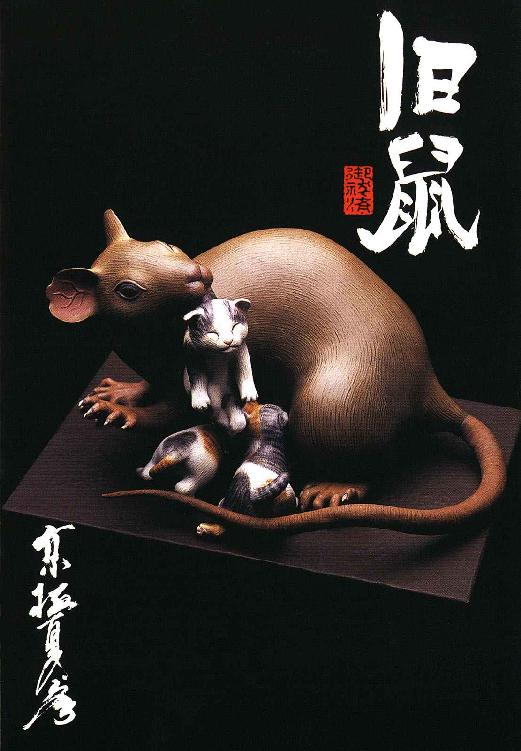
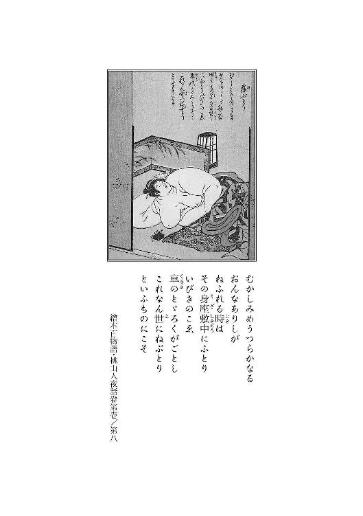
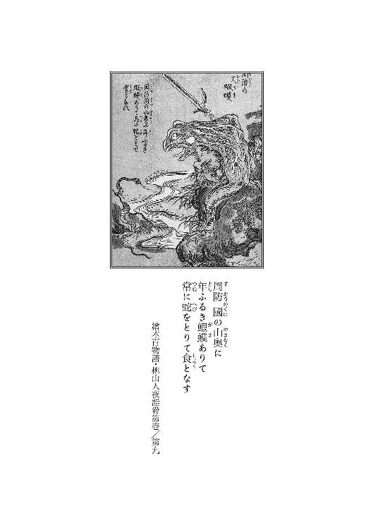
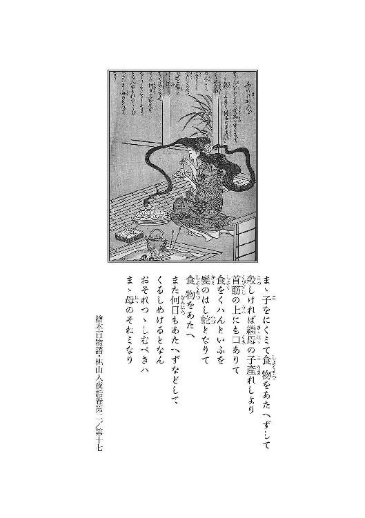
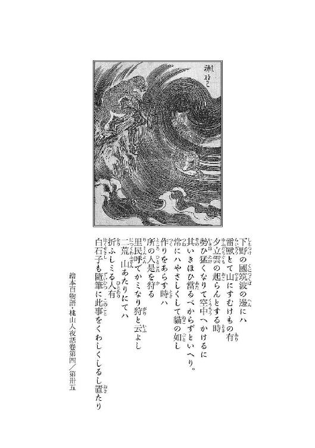
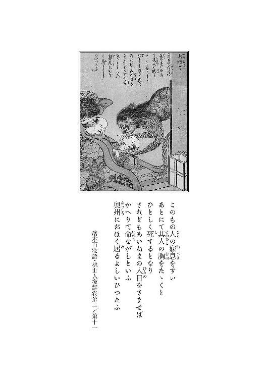
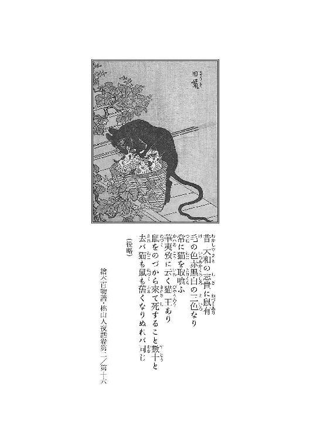

| 前巷説百物語 (角川文庫) | |
| 京極 夏彦 | |
| (2014) | |

前巷説百物語
京極夏彦

角川ｅ文庫
本作品の全部または一部を無断で複製、転載、配信、送信したり、ホームページ上に転載することを禁止します。また、本作品の内容を無断で改変、改ざん等を行うことも禁止します。
本作品購入時にご承諾いただいた規約により、有償・無償にかかわらず本作品を第三者に譲渡することはできません。
本作品を示すサムネイルなどのイメージ画像は、再ダウンロード時に予告なく変更される場合があります。
本作品は縦書きでレイアウトされています。
また、ご覧になるリーディングシステムにより、表示の差が認められることがあります。
寝肥

１
何だいちょぼ暮れてるねえ又公──と、伝法な口調で言い乍ら、おちかは又市の肩口を叩いた。月代くらい剃りなよみっともない、それじゃあまるで逃散百姓の体だ、折角の色男も台無しだァねと続けざまに語って、語り乍ら女は又市の向かいに腰を下ろす。
面倒臭ェと又市は思う。
おちかは麴町辺りに巣喰っている女で、普段は小料理屋の手伝いなどをしている。その昔は巾着切りだったと噂に聞いたが、真実のところは又市も知らない。
知る必要もないし、知りたくもない。
いずれ真っ当な女ではない。それが証拠に、大した関わりもないというのに、おちかは又市が江戸に舞い戻ってからずっと、又市達の周りに纏わり付いている。
後ろ暗いところがある者は微暗い場所に群れるもので、付き合いたくなくとも顔見知りにはなるのである。
「俺ァ元来水飲みの倅だ。お前の言う通り地べたァ捨てた、帳外れだよ」
投げ遣りに言う。
ふん、とおちかは鼻を鳴らし、横に置いてあった茶碗の中味を土間に捨てて、徳利から酒を注いだ。
「何だい何だい、まったく嫌ンなるじゃないかその物言いは。辛気臭いったらないさね。それでも上方で鳴らした小股潜りの兄さんかね」
「その呼び方は止せよ」
そう言って、又市はおちかから徳利を取り上げ、自分の杯に安酒を注いだ。
「小股潜りてェなあ悪口だろうがよ。面と向かって言う科白じゃあンめえが。少しは遠慮てェものを知れ」
「悪口言われて困るような玉かい又公。今更善人面したい訳でもあるまいに、小悪党に小悪党と言ったまでのことさ。遠慮も何もあるもンかい」
「お前みてェな悪場擦れに言われたくねェと言ってるんだよ。そもそも俺ァな、小股でも大股でも、そんな他人様の股座ァ潜るような細けえ了見は持ち合わせちゃいねえンだ。おい、おちか。大体俺ァ双六売りだぞ。双六売りってのはな、頭ッから風呂敷ィ被ってるのがお約束なンだ。月代なんざ剃るこたねェんだよ」
能く言うよとおちかは搦む。
「その、べらべら回る減らず口が小股潜りの証しじゃないか。上方でどう呼ばれてたのかは知らないけどね、このお江戸じゃァ、あんたみたいなのを小股潜りと呼ぶんだよ」
知るかいと又市は横を向く。
「煩瑣ェのはお前の方じゃねェかよ、おちか。俺ァ独りで飲みてェんだよ」
ははあ、判ったよと猫撫で声を出しておちかは又市の顔を覗き込んだ。
牝の香りがして又市は顔を背ける。
「判ったって──何が判ったてんだ」
「お葉ちゃんのこったろう」
──まったく。
面倒臭ェ。
青いねェと言って、おちかは科を作る。
「お前さん健気に通い詰めていたからねェ。まあ糸の切れた凧みたいにふらふら働かない双六売りにゃあ、馴染み娼妓の身請けなんざァ最初ッから無理だ。無理と承知の北国通いだったんじゃないのかえ。花街で惚れた腫れたは野暮天の科白さ」
そんなじゃねェと返答をしかけて又市は言葉を肚に吞む。語ったところでどうにもならぬ。
おや黙り天神決め込むかえと、おちかは更に搦む。
「まあ、それにしたってあの娘も因果だ。慥かこれで四度目だろうに。まあ、あの器量だからね。請け出したはいいけどさ、まあ老いらくの恋さ。助平爺ども、精も根も吸い取られちまっておっ死ぬんだろうよ」
それにしたって四度は多いねえ、三度目の正直って謂うけど一回越しちまったじゃないかえと、おちかは更に酒を注ぐ。
「魔性と言われても仕方がないね」
「俺の酒だぜ」
又市はおちかの茶碗を摑む。
あた吝気ないこと言うンじゃないよとおちかは睨む。
「何かい、惚れた女を魔性と貶されて肚でも立ったのかえ」
「いちいち気に障る女だな。口が減らねェのはお前の方じゃねェか。搦むンじゃねェよ。魔性でもコン畜生でも構わねェンだよ。身請けした爺ィがくたばるなァ天命だ。そんなこたァどうでも好いのさ」
「どうでも好いって面相じゃないよ」
「どうでも好いたらどうでも好いのさ。俺ァな、自慢じゃねェが擦れっ枯らしだ。お前の思ってる程青かねェやい。惚れただの好いただの、しち面倒臭ェこたァ性に合わねェし、妬くの嫉むのする程に真っ直ぐでもねえよ。くたばり損ないの耄碌爺ィが何人死のうと知ったことじゃねェ。そいつらが皆、お葉の腹の上でくたばったんだとしたって、そりゃ偶偶だろうぜ。だからそんなこたァいいんだ」
「じゃァ何がいけないのさ」
「あのな」
本当に面倒臭いと又市は思う。女という奴は何故こうも根掘り葉掘り聞きたがるのだ。
「お前、妙だと思わねェのかよ」
「身請けされる度に相手が死んじまうことかい」
「違うよ」
又市は空になった徳利を逆さまに置いた。
「何でそんなに何回も身請けされるんだよ」
「そりゃあんた」
おちかは円い眼を細めて、お葉ちゃんが別嬪だからだろうさと言った。
「お葉ちゃんはさ、妾はまあ何度か会っただけだけど、女の妾だって妬けるくらいの、そりゃ綺麗な娘じゃないか。色は白い、肌理は細かい、あんただってイカレちまった口じゃないか」
「莫迦。そうじゃァねえよ」
何を誤魔化すかねえとおちかは管を巻く。
「そうじゃないか。妾は何度も聞かされたよ。あの吸い付くような肌が堪らないだとか何だとか、豪く吹いてたじゃないか、この又公」
「あのな、おちか」
「何だい」
女でも何でも、売り手がいなきゃあ買えねえだろうがと又市は呆れたように言った。
いや、真実に呆れたのである。
そりゃ──当たり前さねとおちかは平然と答えた。
「当たり前じゃねえだろうよ。能く考えやがれ。お葉は四度買われたんだぞ」
「あれだけ器量が良けりゃ何度だって売れるわさ。妾の知ってる頓馬なんざ、出来た女房を五度も売ったんだ。博奕狂いの屑野郎だけどね」
「そりゃ手前で買い戻したか、年季明けて戻ってからまた売ったんだろうが。大体な、亭主のいる女を大枚叩いて身請けするかよ。そんななァしねえし出来ねえよ。無理に身請けなんざしたならば、請けた奴の女房になるしかねェだろ。どうであれ、銭出して買った奴だけが売れるんじゃねえのかよ。じゃあ一体誰が売った」
「そりゃ売ったのはお葉ちゃんを買った郭──いや、そうじゃないンだね、郭にお葉を売った奴は、だから前の店から買った奴──」
「無理だろ」
「ああ」
「無理なんだよ。最初に身請けした味噌屋の隠居も材木屋の因業爺も、廻船問屋の寡亭主もこないだおッ死んだ七ツ屋の親爺も、お葉を身請けして幾月と保たなかったんだぞ。お前の言う通り、入れ揚げて精を吸われておッ死んだのかもしれねェが──」
死んじまっちゃあ売れないねェとおちかは怪訝な顔をする。
「でもサ──そうだ、お葉ちゃんはまだ若いだろ。だから身請けした爺様が死んだなら、普通は親元に戻るだろうさ。で、親が」
「違うよ」
又市は一蹴する。
「お葉は奥州の出だ。お父もお母も草深ェ田舎で泥塗れだろうよ。親ァ関係ねえ。親が売ったんだとしても、そりゃあ最初の一度だけだよ」
「じゃあ、自ら我が身を売ったのだろうさ」
「あのな、慥かに自分で自分の躰を売るってなァ其奴の勝手だァな。夜鷹でも白拍子でも陰間でも、そんななァ掃いて捨てる程いらあ。だがな、お葉はそうじゃあねェんだ」
「どうしてさ」
「考ェろよ。身請けされたってこたァ、年季奉公に入ってたってことだろが。自分売った銭は何処行くんだよ」
「貯めてたんだろ」
「恍惚けたこと吐かすんじゃねェよこの牝狸。身売り重ねて銭貯めたって、使う暇がねェじゃねェかよ。それとも銭だけありゃいいって吝嗇た守銭奴か。そんな話も聞かねェよ。お葉は売買されたんだ。そりゃつまりお葉を売った野郎が別にいる──ってことだろうが。まあ世の中歪んでいやがるからな、娘売り飛ばす親も嬶ァ売り飛ばす無禄も後を絶たねェが、仮令売られても身請けされりゃあもう借財はねェ。身請けされた相手が死んだからって店に戻る莫迦は」
まあ居ないだろうねとおちかが継いだ。
「居ねェだろがよ」
「そうサねえ。足抜けするてェんなら解るけどね、逆は──ないわさ。でも──じゃあどういうこったい」
「だからよ。俺がどうにも煮え切らねェのはそこなんだ。いいか、何処の糞爺ィに買われようとも、そらァお葉の勝手だぁな。来る日も来る日も客ゥ取って、取ッ換え引ッ換え知らねェ野郎に乗っかられて身過ぎ世過ぎを送るよりゃ、爺の囲い女になった方が幾分マシかもしれねえやな。で、その爺が西向いて、また女郎に戻るのも、こりゃお葉の勝手だぜ。こんな腐った世の中だ。女独りで生きるのに楽な渡世なんざねェや。お前みてェに悪場擦れるか──後は躰売るぐれえしかねえからな」
ひと言多いよとおちかはむくれた。
「それこそ本当じゃねェか」
まあ本当サと、おちかは厭な顔をした。
「爪に火ィ燈す毎日だわいな」
「でもお葉はな、お前と違ってその日暮らしにヒィヒィ言ってた訳じゃねェ。喰うに困っていたとは思えねェ。なンたって、質屋の爺様は黒塀囲みの妾宅をお葉名義で買ってやってたんだぜ。お葉は、其処に住んでたんだからな。雨ッ風が凌げるだけじゃあねェ。例えば其処ォ売ッ払えばよ、女郎なんかにならずとも当座の暮らしに困るこたァなかった筈だ。いや、質屋だけじゃアねェぞ。味噌屋だって材木屋だって同じようなもんよ。廻船問屋の亭主なんざ、内儀に入れて身代譲るとまでほざいてたんだ。親族が反対してご破算にはなったが、それだって相応の手切れ金が出てるぜ。爺ィどもは何だ彼だと相当額を残して往った筈だぜ」
「羨ましいじゃないか」
「オウよ。だがお葉はな、十分に銭を持ってたってェのに、どうも貰ったモンも、家も家財も全部処分してるのよ」
黒塀も売っちゃったのかいとおちかは眼を円くした。
「売ったんだ。それだけでもかなりの額だ。それに加えてお葉は──」
「自分も売ってるってのかい」
「そうさ。だから銭貯めるために自分を売ったなんて話は成り立たねェんだ。違うか」
「違わないだろうね」
「そうなんだよ。お葉は四度身請けされたんだから、四度郭に売られてンだよ。つまり、四回分郭から金取った野郎が居るてェことになる。そして四人の爺が遺した銭金も、どっかに消えちまったことになる──」
情夫だねとおちかは言った。
それから又市に更に顔を寄せ、情夫がいたんだよと揶うように繰り返した。
「お葉ちゃんもあんな顔してやるじゃないかさ。好い男がいるってのに知らんぷりして身請けされてサ、旦那が死ぬ度にそいつンとこへ舞い戻ってたんだろ」
「で──またそいつに売られたってのか。何度も何度も売られたってのか」
「だって他に考えようがないじゃないか。あんたがそう言ったんだよ」
それはそうかもしれない。だが。
「そんなこと──あるもんかい」
「惚れてたのさ」
おちかは今度は反っくり返った。
「好いて好いて戻ったんだろうよ。もしかしたら身請けした爺ィは誑し込んだってだけで、生きてるうちから二股掛けてただけかもねえ」
莫迦野郎と又市は言う。
「幾ら惚れてたといったって、自分を売り飛ばしちまうような男ンとこに未練がましく戻るもんかよ。一度じゃねェぞ、四度だぞ四度。何か深ェ事情があるか、騙されてるか──」
惚れる以上に深い事情なんかないよとおちかは言う。
「惚れりゃ惚れる程に目は曇る、鼻も利かなくなるのがその道の常ってものじゃないか。つれなくされりゃ余計に靡く。優しくされりゃ舞い上がる、騙されるも賺されるもないんだ。そういうものさね」
「だがな、おちか」
解ってないね又公とおちかは手を差し出す。
「本当に解っちゃないよ。借財なんてものは返しゃなくなるけど、貢ぐのに際限はないのさ。怨み辛みが相手殺すなら、愛し恋しは己を殺す。貢いで好かれりゃ調子に乗るし、厭われたならもっと貢ぐわい」
「相手の想いは関係ねェってことか。想われても嫌われても尽くすってのか。捨てられても売られても戻るってのか──」
女心ってなァそんなに理不尽なもんかいと又市が問うと、女も男もありゃしないよゥとおちかは答えた。
「それを言うならお葉ちゃん身請けした老い耄れ連中だって同じことじゃあないか。虎の子使い果たしたんだか身代懸けたんだか知らないが、色に癲うた老いらくの恋で大金使うて身請けしたのだろう。老いも若きも侍も町人もないんだ。理が立つだとか筋が通るだとか、そんな杓子定規なモンじゃ割れぬのが男女の仲さ」
なンなら妾が貢いでみようかえ、とおちかは又市の手に己の手を重ねた。
柔らかい、ひやりとした感触が無性に厭わしく思えて又市は手を引く。
止せやい冗談じゃねえと言う。
何だい揶い甲斐のない若造だよとおちかは頰を膨らませて、結局お葉ちゃんが忘れられないんだ、妬いてるだけじゃないか──と結んだ。
２
そんなことも知らねェのかと言って、長耳の仲蔵は忙しなく動かしていた手を止めて、振り返った。
独特の面相である。図体はでかいが頭は小さい。その小さい頭に大きな口、その口許から大きな歯が覗いている。眼も鼻も申し訳程度にしかないが、異様に耳朶が長い。長耳の二ツ名の所以である。
剃髪しているが僧でも医者でもない。仲蔵の生業は表向きは手遊屋──玩具売りである。
仲蔵は再び歯を剝き出し、だからねぶた参りの音吉だよと野太い声で言った。
「ねぶただとォ。また随分と眠てえ名前だな」
てめえねぶたも知らねェかと仲蔵は胡座をかいて向き直った。
「知るか。臀の腫物じゃねえのかよ」
「そりゃあ根太じゃわい。ねぶた流しってなあな、奥州辺りの七夕祭のことじゃよ。こう、でけえ絵燈籠で作った山車ィ引いて練り歩くのよ」
「精霊流しみてェなモンか」
そんな小せェものじゃねえやと、長耳は厭そうに言った。
「山車だと言ってるだろうが。でかいのじゃ」
「祇園祭みてェなものか」
あんなにのったりゃしてねェわいと今度は面倒そうに言って、仲蔵はうんと伸びをする。根を詰めていたらしい。
「まあ陸奥のどん詰まり、田夫野人の野卑祭と、そう言っちまっちゃァそれまでだがな、調子良く鉦を叩いて跳ね踊る踊り子の威勢も良いし、江戸っ子好みの勇壮な祭だぞ」
知るかいそんなモノと又市は尻を捲る。座ろうと思うのだが座る場所がない。座敷中に何かが敷かれている。
それに大層な臭気である。
「勇壮かどうか、そんなこたァどうでも良いが──」
鼻を覆いたくなる。
「臭ェか」
「酷ェよ。感じねェのか」
鼻が莫迦になってしもうたなと仲蔵は笑った。
「莫迦ンなる前に、お前の鼻ァ元より有るンだかねェんだか判らねェような鼻だからな。しかし──何だよこりゃ」
蝦蟇蛙だと仲蔵は答えた。
「意味が解らねェよ。何が蝦蟇だ」
「だから児雷也の化ける蝦蟇だわい。まあ、皮だけだがな」
「皮だとォ」
蝦蟇の皮とは思えない。何せ八畳間の殆どに敷き詰められている。大き過ぎる。
これが蛙の皮だというならば、牛よりずっと大きな蛙ということになるだろう。
どうせ与太だと気にも留めず、又市は重ねて問うた。
「俺ァな、長耳の。男の話をしてるンだ。蛙も祭も関係ねェやい。その田舎の祭が勇壮かどうかなんてこたァどうでも好いこったぜ」
「どうでも好かねえわさ。勇壮だからこそ、この長耳様の出番があったのだわい。だからこそ手前の謎掛けも解けたという按配じゃ」
解らない。
解らねェかと長耳は言う。
「実ァな、その田舎祭の山車の燈籠に描かれる絵がな、まあ、歌舞伎やなんかの芝居絵なんだわい。役者絵じゃあねえんだが、加藤清正朝鮮遠征だとか、神功皇后だとか、そういう勇猛な図柄でな。まあ、元は坂上田村麻呂の蝦夷征伐に端を発したと謂われてもいる祭らしいから、そういう絵柄が選ばれるンだろうがな」
「だからそれがどうしたんだよ」
まあ座れと仲蔵は言う。
座る場所がない。
「実はな、その燈籠、元元は、ほれ、そこの行燈をでかくしたような、四角いモノだったのだわ。その障子紙ン処に絵を描いて、中に蠟燭を燈してな、夜にゃあ絵が浮かび上がるてェ寸法よ。それを──変えようてェ話になってな」
「変えるって」
「行燈の形を人形に出来ねえか、って話だよ」
「人形って──どうするんだよ」
「人形といえば人形よ。人様の形だ。まあ、平たく言えば張りぼてだよ。こう、竹やなんかで芯を作ってな、周りに紙ィ貼り付ける」
狗やら達磨みてえなものかと又市が問うと、そりゃ張り子だと仲蔵は答えた。
「同じじゃねェか」
「張り子と張りぼては違うわい。ものを知らねェ小僧だな。張り子ってのはな、こう雌型雄型を作ってな、その型に紙を貼り込んで行くんだよ。それ乾かしてから型ァ外して、胡粉なんかで仕上げすんだ。張りぼてってのは芯作って、外側に紙を被すんだ。提燈みてェなものだわさ。全然別もんだよ」
慥かに張り子には芯がない。
取り立てて考えたこともなかったが、本来なら紙だけで象造れる訳がない。そういう仕掛けになっていたのか。
「そりゃまあ解ったが──その、張りぼてか。それじゃ細けェ細工は出来ねェだろうが」
「そりゃ張り子の方が細工は為易い。かなり細かい造作が出来ような。だが、身の丈よりでかい型なんてもなァ作れねェぞ。実物大の型作らなきゃいけねェんだからな。そんな大仏みてェなものが作れるか。雌型だと更に一回りでかいだろうが。無理だよ。毎年同じもん作る訳じゃねェんだし、型ァ作る方が手間だわい。それに張り子じゃ貼り込まれた紙が厚くって裡の火が透けねェから、燈籠にはならねェわさ。考えてみろ。達磨ン中に蠟燭仕込んだって、まあ行燈代わりにゃならねェだろう。要するに欲しいのは変わり提燈みてえなものなんだからな。しかしこれが──難しい」
そこで儂の出番だと仲蔵は胸を叩いた。
「大芝居の舞台装置から大道具小道具の機械仕掛け、見世物小屋の化け物細工から絡繰的、果ては童の玩具まで、この長耳の仲蔵様に作れねェものはないわ」
「おい」
又市は一度捲った裾を戻して、呆れ顔で仲蔵を見据えた。
「お前はただの手遊屋じゃなかったのかよ」
「手遊屋もしておる」
「も、じゃねェだろうよ。お前はいつだってそうやって妙なもんばかり作っていやがるじゃねェか。首の伸びる入道だの赤子の顔に化ける地蔵だの──そんなモノは子供の手遊びじゃねえだろう。がらがら振って商売してるとこなんざ、とんと見たことがねェやい」
芝居小屋だの見世物小屋だのの仕事ばかり受けやがって、そんなに狂言歌舞伎に未練があるかいと又市は悪態を吐いた。仲蔵は、噂に依れば何でも大層な俳優の落とし胤であると謂う。
未練なんざねェやと仲蔵は大きな口を噤む。
「あのなァ又の字。見ての通り儂はこのご面相じゃ。万が一にも役者にゃなれねェわい。高ェとこ上がって人様見下ろす玉じゃねェ。儂の舞台は憂き世だわいな。化けるなら本物に、騙すなら世間をまるごと騙してェ。桟敷のお客は世間様よ」
「大言壮語は聞きたくねェよ。そのねぶとだかねむただかがどうしたか、って話じゃねェか」
オウ、と仲蔵は自が耳朶を撫でる。
癖なのだ。
「どこで儂の噂を聞きつけたものか、津軽藩の藩士がやって来て、二十両出すから工夫してくれと頼んで来たのよ。二十ってなあ豪儀だぜ。そこでな、儂は思案した」
「どう」
「なァに、先ずな、こう、小せェ泥人形を拵えるんだ。小せェたって二尺はある奴だがね。それに、こう竹籤を細く裂いた奴をな、貼り付ける。その籤を色分けし、一番二番と番号を振ってな、図面に記す訳だ。で、その籤を丁寧に剝がす。後はその籤と同じ縮尺の竹を用意して番号通りに組み上げるてェ算段だ」
「はァ」
能く解らない。
「莫迦だな手前も。大きさ違うだけの同じもんを図面通りに同じように組み上げるんだぞ。縮尺が一緒なんだと言うただろうに。同じ比率なんだから竹籤の長さを十倍にすりゃ十倍、百倍にすりゃ百倍の大きさの、同じ形のもんが出来上がるだろうが。それに紙を張りゃ、土で捏ねた人形と同じ姿の、でけえ張りぼてが出来るだろうよ」
「はぁン」
それは道理だ。
「上手く行ったかい」
「上手く行ったぜ。土地の者も一緒になってあれこれ工夫したからな。仕上げの色付けはお手の物だわ。向こうにもな、達人ってのは居るもんで、儂は土地の絵描きと一緒にな、勇猛なのを仕上げたぜ。お宝もきちんと戴いた。そのお宝で儂はこの家を買ったようなものだ」
「なる程な」
どう考えても日銭稼ぎの手遊屋が、荒家とはいえ朱引きの内に──本当にぎりぎりの内側ではあるのだが──一軒家を構えられる道理がないのだ。又市は常常納得が行かぬと思っていたが、そういう子細であったのか。
「ま、儂にしてみりゃねぶた様様てェ話でな。おかげでこんなでかいもんでも、人目ェ憚らずに作れるって訳だ」
「でけえより臭ェだろ」
随分と燻したのだがなと言って仲蔵はその蝦蟇の皮とやらを顔に近づけた。
「何ィしたって臭ェな変わらねェよ。野中の一軒家だから好いようなもンで、隣があっちゃ近所迷惑だぜ」
「そのための一つ家だ。大した用もねェのに真夜中に訪ねて来る、手前の方が悪ィのよう」
そう言うと仲蔵は漸く敷いてある布のようなものをたくって場所を空けた。
座れということだろう。
「まァな、そン時の──ねぶた流しの燈籠を作った時の術を応用して、儂は今、この幻魔術変化大蝦蟇を作っておるという寸法だ」
「これも──張りぼてなのか」
「いや、違う。言ってみりゃあ──そう、皮風船だ」
「何でェそりゃ」
「だからよ。芝居でな、児雷也がこうどろどろと蝦蟇に化けるだろうが。まあ、今まではそれこそ張りぼてを使っていた訳よ。だがな、まあありゃあ、役者の代わりに書き割りの後ろからにゅっと出す程度だ。もくもくと煙でも出すしか演出がねェ。それじゃあつまらねえや。そこでな、こう──」
仲蔵は懐から紙風船を出した。
「この紙風船みてえに膨らませるこたァ出来ねェかと相談を受けたのよ。最初はぺしゃんこに潰れてて、それが印を結んだ途端にぷうっと」
「無理だろ」
儂に無理はないと仲蔵は歯を剝き出した。
「慥かに紙じゃ駄目だ。上手に膨らまないわさ。でかいからな、息を吹き込んで膨らませられるような代物じゃねェわ。爺ィなら息が切れて死んじまわァ。鞴なんかを使ってもな、破れるし、こう、パンパンにゃ膨らまないのだ。だから起き上がらん。矢張り紙だと芯が要る」
「当たり前だよ。紙っぺらにゃ腰がねェもの」
折り紙のように折るなら兎も角、中味が空っぽの袋状では自立さえ難しいだろう。紙自体の重さで潰れてしまう。そのぐらいの理屈は又市にも解る。
「で、だ」
長耳は端の方に設えてある薬簞笥から土人形を抓み出し、又市に見せた。
「こりゃな、見ての通りの蛙だ。不忍の池で獲って来たでっけえ蝦蟇を元に作ったもんだ」
良く出来ている。本物と見紛うばかりである。この親爺、実際に腕は良いのである。
「これにな、こう薄紙を貼る。何枚か重ねて貼って、乾いたら切れ目を入れて丁寧に、綺麗に剝がす。剝がした紙をな、こう細かく切り分けて──型紙を作る」
長耳は続いて小さな紙の破片を幾片か薬簞笥から出して見せた。
「この紙片を組み合わせれば、この蛙の形になるのだ。後は、先程の張りぼて作りと同じ要領だ。このでかいのを作りゃ大きな蛙が出来る」
「だがよ、紙で作ったんじゃ同じことじゃねェか。芯がねェのだろうに、でかけりゃ潰れっちまうだろうよ」
だから皮で作ってるンじゃねェかと言って、長耳は畳の上に敷かれたそれをたくし上げた。
「しかも──これはな、ただの皮じゃねえ。獣の腸を鞣してな、乾かして、薬汁に漬け込んで燻してな、また薬塗って加工したもんだ」
「何だとォ」
又市は再び腰を浮かす。
「う、微鬼魅悪いもん扱ってるンじゃねェよ」
肝の細ェ双六野郎だなと仲蔵は笑う。
「手前だって獣肉喰うだろうが。どこが鬼魅の悪いものか。薄くッて丈夫で、しかも気を透さずに伸び縮みする材料なんてェものは然う然うねェのよ。ただの皮じゃあ厚過ぎる。目のある布じゃ気が透っちまって膨らまねェ。で──儂が考案したのがこれだ。ただな、こりゃ加工しねェとみるみる腐るしな、元は薄いものだから傷に弱い。破けちゃ元も子もねェや。だから薬汁に漬けて乾かして、上薬を何重にも塗ってな──」
まだそんなに臭ェかと仲蔵は顔を顰める。
「だから臭ェよ。何の臭いかァ判らなかったが」
「これでも随分腥ェのは飛んだんだぜ。逆に薬臭ェのが出たのかな。そうか。じゃあ仕上げた後にもう一度燻して──香でも炷き染めるか」
「そんなこって消えるもんかい」
又市はその皮とやらに触れてみた。
慥かに薄くて丈夫そうだった。又市の知る限りこんな生地はない。触れ心地は人の肌にも似ていた。
そう言うと仲蔵は問題は其処だな、と答えた。
「其処ッてのは何処だ」
「色がよ、結局はこんなだろ。しかもな、これは絵の具の乗りが悪いんだ。何で色付けするかだなあ。煮染めて染めてみようかとも思うておるんだが──」
肉色の蛙じゃ締まりがねェやいと仲蔵は再び自が耳朶を弄った。
慥かに、このままの色艶では屈んだ相撲取りのようになってしまうだろう。
「しかしこれが──」
蛙の形になるものか。
だからよ、と長耳は言う。
「今はな、端切れを継ぎ合わせて大きな一枚モノにしているところよな。これを型紙通りに断裁して、それから縫製すンだ。だが、ただ縫い合わせたんじゃァ針の穴から気が漏れちまうからな。膠溶いた薬液で縫い目をこうやって──」
長耳は横に置いてあった壺に差してあった細い刷毛を引き抜いた。
とろりと糸を引く。壺の中味は茶色の、粘り気のある薬液のようだった。
図体の割に器用な手遊屋は刷毛の滴を切り、手許の皮の縫い目らしき筋の部分に丁寧にその薬を塗り付けた。
「何度も何度も塗り付けて運針の穴塞ぐのよ。ただな、固まっちまっちゃいけねェ。伸びが悪くなるからな」
「伸びるのかい」
「結構伸びるぜ。袋ォ作って試してみたがな。搗きたて餅のようにたァ行かないが、女子の頰べたぐらいは伸びるぜ」
「そんなもの伸ばしてみたこたァねえよ」
「今度娼妓でも抓ってみな。これで作った蟇殿はな、まあ畳んじまえば単衣一着分くらいの嵩なんだが、大きな鞴で風を吹き込みゃあ、まあ、あっという間──二十か三十数えるくらいの間に成馬ぐらいの蝦蟇になる。煙ゥ出して太鼓鳴らしてる間に、ドロドロドロ」
解った解ったと又市は止める。
そんな話を聴きに来た訳ではない。
「それよりその──ねぶとだか眠たいだかいう田舎祭の話だろうよ。それが一体何だっていうんだよ、コラ。お前の話ァ面と一緒で取り留めがねェんだよ。おい長耳の。俺が最前から聞いてるなァお葉の」
「だからそのお葉の男の話じゃねェかよ」
「話が見えねェ」
「話は見えるもんじゃねェ。聞くもんだぞ若造。言ったじゃねェかよ。お葉の男はな、ねぶた参りの音吉だ。そんなこたァ花街渡世の者なら誰でも知ってることだわさ」
俺は双六屋だよと又市は答える。
「色街たァ無縁だ。その男ァそんなに名の売れた男か」
「まあな。儂なんかは一度会うたッ切りだが、まあ吉原辺りじゃ結構な顔だろうよ」
「会ったことあンのか」
「会ったぜ。向こうで」
「向こう──奥州か」
「オウ。陸奥だよ。だから最前から語ってるんじゃねェかよ。ま、儂の工夫した山車で祭は大層な盛り上がりだったんだが──其処で出会ったんだよ。その野郎には」
「音吉──だっけか」
「ああ。奴ァ向こうでも噂になってたぜ。毎年毎年ねぶた流しの時期に江戸からやって来る優男だってな。まあ江戸者自体あの辺じゃ珍しいからな」
毎年──。
「何しにそんな草深ェとこまで行く」
「なぁに、商売だ。江戸表の洒落た小間物売り付けがてら、地元の名物土産を買い付けに行くんだわい。絹だの紬だの紙布だのよ。しかし、まァそりゃ表向きのこったぜ。本当のところはな、女釣りに行くんだな」
「女だとォ」
花癲かと問うとだから商売だと言われた。
「女釣って商売するってなァどういう意味だよ。土地の女としんねこになって、櫛笄しこたま売り付けるとでもいうのかよ」
「そんな間怠っこしいことはしねェよ。音吉だって江戸っ子だぞ。商いと言やあ商いだ。そのまンまよ」
「どうまンまだよ。小間物屋じゃねェのかよ」
音吉は人買いだものよと長耳は言った。
「人買いって──」
「人買いちゃあ人買いじゃねェかよ。人を売り買いするから──否、音吉は買わねェんだわ。売るだけだ。人売りだ。玉転がしだな」
「おいこら。買わねェでどうやって売るよ。攫うのか」
今どき人攫いかよと長耳は呆れたように言う。
「買わねェで品持って行ったら泥棒だ。品が人なら人攫いだろうが」
「能く考えろよ又。音吉が人攫いなら、何だって毎年毎年奥州に行けるんだよ。まあ人攫いみてえな野蛮な渡世もまだあるのかもしれねェが、そりゃひとつ場所で一回だろ。同じ在所で幾度も勾引かし続けるなんてことが出来るかよ。幾ら奥州が草深ェといったってな、自分の娘ェ攫った男がのこのこ戻って来て、だ。それを良く来たなと持て成す程に愚かしかァねェぞ。あのな──そうだな。まあ音吉てェのは生来の銀流しよな」
「そんなものにまで生来ってのがあるのか」
「あるわさ。いいか、又。儂のような面ァ、逆さに振っても女人にゃあ好かれん。手前みてェにつるんとした面相の奴にゃ解らねェだろうがな、儂のこの面ァ、笑われるこたぁあっても惚れられるこたぁ金輪際ねェのだわ。持てようと思うたら首ィ切るよりねェわい。同じようにその逆もある。音吉てェのはな、女に好かれるために生まれて来たような野郎よ──」
下手な役者より綺麗だわいと言って、仲蔵は自が異相を撫でた。それから、否、綺麗というのじゃあねェなと続けて、やにわに歯を喰い縛った。
「年齢はな、もう四十過ぎだ。儂なんかより上だわ」
「お前、まだ四十前なのか」
五十近くに見えぬこともない。
「手前みてえな小僧から見りゃ、四十も五十も一緒なのかもしれねェがな。齢喰った男なんざ汚ェものよ。それが四十超しててあの色気は、まあただ者じゃねェぞ。化粧してる訳でもねェのに、こう、どこかぞっとするような感じがしやがるのよ」
「ぞっとする──ねェ」
それがどうしたいと又市は尋く。話がまるで核心に触れない。
「どうもこうもねェ。田舎娘どもがな、音吉の色香にコロっとイカレるってェ寸法よ」
「誑し込むのか」
「音吉の方は別に引っ掛けるとか口説くような真似はしねェらしいがな、娘の方が夢中になっちまうンだな、ありゃ。で」
「で、何だ」
「音吉に惚れた娘どもはな、みんな熱に浮かされたようにぼおっとしちまってな、やがて姿を消しちまうのよ。神隠しだと村の連中は思ってたわな」
「神隠しだとォ」
「ま、そりゃねェわさ。儂は音吉と一緒の船で江戸まで戻ったんだからな。全部知っておるわい。結局──娘どもは付いて来るんだよ」
「付いて来るだァ」
親犬に逸れた仔犬でもあるまいに。
まあ毎年ひとりかふたりは付いて来るらしいのさと長耳は言った。
「噓臭ェ話だな」
「まァ、音吉の言い分ってのはこうよ。俺は別に連れて来た訳じゃない、誘ってもいねェし、攫って来た訳でもない──ま、こりゃ半ば本当だ。で、幾度帰れ戻れと言っても戻らない。到頭江戸まで付いて来た──とな」
「待てよ長耳の。その娘どもてェのは──江戸くんだりまで付いて来やがるのか。途中で追い返さねェのかよ。追い返せよ」
「返しても返しても来るンだとよ。てェよりな、音吉は帰りは青森から船道中なんだわい」
「船に乗っちまうのか──」
船上で幾ら帰れと諭しても帰れる訳はない。
噓臭ェだろと長耳は言った。
詭弁ではある。
「小娘がたった独りで陸奥から江戸まで来られるもんかい。だがね、船に乗っちまえば厭でも江戸には来ちまうわさ。胡散臭ェやな。娘が船に乗るに当たっちゃァ、必ず野郎が手引きしてる筈なんだ。だから、勝手に付いて来たってなァどういう了見かと思うわさ。だが、表向きは娘が好きでついて来たことになってる訳だ。で──」
「真逆──売るのか」
「売るのさ。野郎は旅先の奥州で女拾って来て、ただで拾った女を女郎屋に売るんだよ。餌ァつけねェ引っ掛け釣りだわさ」
「しかし、どうも納得が行かねェなあ。其奴がどんな釈明してるのかは知らねェが、それじゃあ矢ッ張り体の好い人攫いじゃねェかよ。拐してるのと変わりねェ」
「変わりねェよ。さっき言ったじゃねェか。ねぶた参りの音吉の──本当の渡世はな、玉転がしなんだよ」
「玉転がしってなァ──女の売り買いを仲持ちする渡り女衒のことかい」
「その玉転がしよ。音吉はな、表向きは睦美屋てェ小間物問屋の看板上げてるが、誰もそうとは思ってねェわさ。睦美屋は人商だ。いつだって睦美屋の店の奥にゃ百姓娘やら崩れ女郎やらが五六人は居るって話だぜ」
「──買わずに売るってなァそういうことか」
「そういうことよ」
酷ェなと又市が言うと、酷ェよと長耳も言った。
「しかし娘どもは──売られて納得するのかよ」
そこがどうにも又市には釈然としない。
惚れて魅かれて、売られてしまって、それで好いのか。
「そこだ。で、江戸まで引っ張って来てからよ、野郎は多分優しくこう諭すのよ。お前の気持ちは嬉しいが、吾はお前と一緒になることの叶わぬ身じゃ──とな。そら出来ねェ相談よ。音吉にゃあ女房がいるんだ」
「しょ、所帯持ちなのか」
「いいだけ所帯持ちよ。婿養子だそうだ。睦美屋ってのはな、元元音吉の女房のおもととかいう女の店だぜ。野郎が婿に入るまではただの小間物問屋だったんだ。でな、兎に角添うこたァ出来ぬから、だから帰れと」
「帰れってったって──」
それこそ独りでは帰れないだろう。
「帰れねェと言ったってよ、生き馬の目を抜くこのお江戸で山出しのおぼこ娘が暮らして行くな無理だわな。だからどうあっても帰れよと言うンだ。女ァ泣くわな。で、帰らない、帰れないと言う。まあ帰れねェや。そこで、またこう──」
賺しやがるのよと仲蔵は厭な表情を見せた。
「野郎はな、来年のねぶた流しにゃまた奥州に行くから、それまでなら面倒をみようかと、まあこうかます訳だ。それで自分の店に連れて行く訳だよ」
「だって──店にゃ女房が居るんだろうが」
「女房なんか居たって関係ねェやい。嬬連れて帰る訳じゃねェんだ。店に連れ込んじまえば女じゃねえ、品物だ。睦美屋には値札の付いた女が何人も居るんだよ。その中に入れッちまえば、それまでよ。ま──最初は親切ごかしてただ世話ァしてやるようだが、娘の方にしたってよ、居づらいだろよ。次のねぶた流しまでといやあ幾月もあらァ。居候だぜ。それこそ女房も居る訳だしよ、其処に勝手に押し掛けて、一年近くただ飯を喰わせて貰うってんじゃなあ。並の者なら気が引けるわさ」
勝手に押しかけたのじゃねェじゃねえかと又市が嚙み付くと、だから予め帰れ帰れと執拗く諭しとくんだよと仲蔵は返した。
「そんなもの言い訳じゃねェかよ。諭そうが何しようが、船乗った段階でどうなるかは判ってることじゃねェかよ」
「そうじゃねェんだよ。娘はよ、純情よ。そして素直だわな。江戸までの道中でも、何度も何度も諭されてる訳だからよ、自分が悪かったと思い込んでる。己の邪恋が招いたこと身から出た錆と、深く反省してる訳だよ。でな、そのうちに──」
真逆──。
「手前から売ってくれと言い出す──ってんじゃねェだろな、おい」
「まあ、そういうことだな。睦美屋にゃあ本当に売られた女やら、お払い箱になった女郎やらが何人も居るンだぜ。そういう連中に絆される訳よ」
「じゃあその──」
お葉も。
何でェその面ァと、長耳は大いに笑った。
「鼬が屁ェ喰らったみてェな面晒すンじゃねェやいみっともねェ。オウよ。手前がご執心のお葉もな、元はといえば奥州の出だろうが。音吉の色香に迷って郷里を捨て、何を隠そうこの儂と、おんなじ船で江戸に来た、正真正銘の山出し娘よ」
ここまで聞いて今更驚くか、尻の青い小僧だなと仲蔵は吐き捨てるように言った。
「ま、慥かにお葉は上玉だわさ。手前が入れ揚げるのも解るがな、そりゃ同時に、音吉にとっちゃこの上ねェ金蔓ってことだ。いいか又市、音吉はただの女衒じゃのうて玉転がしよ。奴等の遣り口ってのはな。要するに売り回し使い回しだ。あのな──品川宿におせんてェくたばり損ないの飯盛り女がいるのォ知らねェか」
「知らねェよ。俺はな、江戸は浅ェンだ」
「フン、まあ──もう五十五六の姥桜だがな。あれも音吉が転がした玉だ。おせんはな、突き出しの新造の時は吉原よ。大籬ィ出てたらしいが座敷は持てず、格が下がって小見世に落ちてな、でも年季明けるまでは勤め上げた。で、その後どうしたと思う」
「どうしたって──」
「上客だった音吉ンとこに行ったのよ。所帯が持てる訳でもねェのにどういう口説き方したのか知らねェがな。で──次は岡場所だ」
「売られたのかい」
「売ったのよ。音吉が。吉原じゃ使えなくっても、深川ならまだ通る。まあ高くは売れねェが安くは売れるわさ。で、暫く稼いでな、稼ぎ終わる前に、今度は宿場女郎に転売だ。堕ち行く先は品川の飯盛り婆ァよ。生涯おせんの年季は明けねェのよ。萎んで枯れてくたばるまで、文字通り骨の髄まで吸い尽くされちまったんだな」
「音吉にか」
「音吉によ。お葉の方はな、上玉だから高価く売ったのだろうが──高価くても身請けされたのだろ。で、身請けした爺ィが死んだのだな。こりゃ美味しいだろよ。活きのいいまま帰って来たんだ。何度でも高価に売れるわい」
「そういう仕掛けか」
だから──怪しいぜと仲蔵は言った。
「最初は兎も角、四度は怪しい。音吉の野郎、一度目で味ィ占めて、二度目からァお葉を身請けした爺ィを次次ぶッ殺してるんじゃねえのか──」
仲蔵がそう言った時、突然戸が開いた。
仲蔵が巨軀を返して身構えると、瘦せた手代風の男が顔を突き出した。
男は恍惚た顔で、お邪魔しますよと言った。
「お邪魔しますじゃねェだろが。驚かすない。戸ぐらい叩けよこの野郎」
そう悪態を吐いてから仲蔵は又市に向き直り、
「心配ねェこいつァ損料屋の手代の角助だ又公──」
と言った。
「損料屋だぁ」
「又──」
角助は長耳の言葉を耳聡く聞きつけ、あんたが又さんか、と言った。
「悪いかよ。俺ァ又だよ」
「ああ──やっぱり此処に居たのかい。お前さんのこったろ、双六売りの又市とかいう駆け出しは。いや、そこの道端でお前さんの相棒とかいう男が難儀していたよ」
「相棒だと」
見掛けたら喚んでると伝えてくれと頼まれやしてね──角助はそう言った。
３
いや助かった助かった地獄に仏とはこのこっちゃと言って削掛の林蔵は額の汗を拭った。
「何や長耳はんの住居がこの辺りやとは聞いとったんやけども──何処や判らん。判らんけども、もしや又の字は其処いらに居るんやないやろかと、そう当て推量はしたものの、判らんもんは行きようもないわ。こら難儀なこっちゃとわっしが思案に暮れとったとこに丁度、角助はんがな、偶偶通りかかてな。角助はんが長耳はんの悪い仲間やゆうことはわっしも知ってましたよって、そこでお声をお掛けしたと、ま、そういう寸法や」
「どういう寸法でも構わねェがな、おい林の字。こんな真夜中の真っ暗闇の刻限にこんな人気のねェ場所で、こりゃあ一体どういう有り様なんだよ」
道端の溝に片輪を嵌めた大八が傾いている。その少し後ろに、醬油樽よりも大きな樽が転がっていた。
「どもこもないわい。見たら判るやろ。この有り様ではどないもならん。わっしは力仕事は不得手やねん」
見て判らねェから聞いてるンだよと又市は言った。
林蔵は上方で知り合った又市の朋輩である。口先だけで世の中を渡ろうという良からぬ了見の小悪党だ。
「ありゃ何の樽だよ。林の字、お前酒でも醸す気か」
「樽やないわい。お前こそ何処に眼ェ付けてけつかんねん。ありゃ桶やがな」
「桶だァ。風呂桶か」
「棺桶やがな」
こりゃまたでかい棺桶じゃなァと、提燈を翳した仲蔵が屈む。面白そうだと言ってついて来たのである。
「そりゃそうと林蔵、手前何故、儂と角助に繫がりがあると──知っていやがった」
蛇の道はへびでっせと林蔵は笑う。
「生意気なこと吐かすじゃねェか此奴は。又公にしろ手前にしろ、油断のならねェ若造どもだぜ。ま、あんまり調子に乗って深入りすると、火傷するから気を付けな。それより──この桶にゃ何処の何方さんにお入り戴くんだ。この大きさだと誂えモンだろうが」
「せやないて。仲蔵はん」
林蔵は桶に手を掛けた。
「入れるンやのうて、もうお入りになってるンやて。せやからわっし一人では起こせへんかったのやないか。まあ長耳の大将に来てもろて助かったわ。あの相方は、わっし同様非力で敵わん。コラ、ぼさっと見てないで手伝うてくれや又。これ起こさんことには後生が悪いで」
どうやら林蔵はこの大きな棺桶──否、屍──を大八車に乗せ、燈も持たずに牽いて歩いていたらしい。
又市は不承不承棺桶の底に手を掛けた。
幸い棺桶に掛けた縄は切れておらず、蓋は外れていなかった。林蔵の言う通り屍が入っているのなら気持ちの良いものではないが、骸の顔が覗いていないだけマシである。
三人掛かりでも重い。
「こら林蔵、こりゃ、何が入ってるんだよ。ホントに仏様かよ」
「阿呆吐かすな。何て棺桶ン中ァ死体さん入っとるに決まってるやないか。棺桶に他の何入れるちゅうねん。しかし死人は重うていかんな」
「いかんなァじゃねェだろが。重過ぎると言ってンだよ。お前の商売は縁起物売りじゃねェのかよ。縁起の悪い方も始めやがったのか」
めりめりと桶の箍が軋む。
気をつけてやと林蔵が声を上げる。
「こないなとこで箍ァ外れてしもたら、もう無茶苦茶やから」
「無茶苦茶なのはお前だぞ。こんな浅草の外れの、しかも田圃の畦道を、だ。とっぷりと日が暮れてからクソ重てェ仏様牽いて歩く縁起物売りがいやがるか畜生め」
のさり、と重心が移動する。
中で屍が動いたのだろう。底抜けも敵わんでと林蔵は慌てて下方を押さえる。
「おい待て待て。林蔵、これ──大八に乗せンじゃねえのかよ。なら起こしてから持ち上げるなァ難儀だぞ」
長耳はそう言うと押さえてろ、と言って棺桶から手を放した。
「今、丁度仏さんが底に尻ィ突いたようだからな、もう重かねェだろ。この──傾かせたまンまの形でな、二人でもって押さえとけ。儂は一寸大八を引き上げるからよ」
そう言うと長耳は来し方を顧みた。
「おい、角助。見物してるなら手ェ貸せやい」
暗がりから角助が姿を現す。長耳の家で待つと言っていたくせに、尾行て来ていたらしい。
全く人使いが荒ェなあなどと言い乍ら角助は大八の車の輪を摑んだ。
「どうすんだい」
「どうするって、儂が押すから引け。車軸が折れてる訳でもねェから、平気だろ」
「手前は平気じゃござんせんがね」
「黙ンな。人使いの荒ェのは手前ンとこの元締の十八番だろうがよ。ぶつくさ言いくさると仕事受けねェぞ──」
長耳は悪態を吐き乍ら溝に降りて大八を押した。
しかし──。
どうやら今の口振りから察するに、長耳の仲蔵は角助が奉公しているお店──慥か根岸に店を構える損料屋ゑんま屋──とも仕事をしているようである。
損料屋とは主に寝具や衣裳、小物などを貸す商売である。
要するに貸蒲団屋、貸衣裳屋であり、一般に損料屋といえばそれ等の店を指す場合が多い。
その手の商売は品物を売る訳ではないから代金として貸し賃を取る訳だが、損料とは、要するにその貸し賃のことなのである。貸与という行いに対する対価ではなく、貸して品物が傷んだ分、減った分だけの銭──損した料金を戴くという意味で、損料と呼ぶのだ。損した代金で成り立っているが故に、そうした商売を損料屋と呼ぶのである。
手遊屋の仲蔵が出入りするような職種であるとは到底思えない。
ただ、ゑんま屋の場合は衣服や蒲団に限らず、家具一式から武具馬具、職人の道具、俎板包丁から揃いの食器、赤子の襁褓まで貸すらしい。もしや普通では入手出来ないような、何か怪しげなものでも長耳に作らせて貸し出すような、妙な商売をしているのやもしれぬ。
仕方がねェなあと不承不承、角助は大八を引き上げた。ひょろひょろとした日陰のもやしのような男である。引き上げているというより、仲蔵が角助ごと大八を押し上げているようにしか見えなかった。
ごとりと音を立てて大八は畦道に載った。
仲蔵は大きな体を屈めて車輪の具合を確かめ、まあ大丈夫だろうと言った。
「少ォしガタが来ているが、暫くは平気だわさ。何処まで運ぶんだか知らねェが、寺は──おい林蔵、方角が違いやしねェかよ。寺ァとっくに過ぎてるじゃねェか。この先は田圃ばかりだぞ。墓所ァねえぞ」
どこでもええのんやと林蔵は答えた。
「善き場所に埋め奉ろうと思てましてん。ま、町中じゃなんやから──」
「何だとコラ」
又市は手の力を緩める。棺桶は林蔵の方に傾いた。
「こら又、何しよんねん。手ェ放しないな」
「放しないなじゃねェだろうがよ。コラ林の字。ここはお江戸だ。京の都じゃねェんだよ。この野郎、町ィ抜けりゃ全部墓場だと思ってやがるな。江戸には鳥辺野も化野もねェんだよ」
「解ってるわい。解ってるから手ェ放しィなや。頼むで。なァ、長耳の旦那、早ゥ車持て来てや。この餓鬼、血の気が多て敵わんわ」
おうおうと仲蔵は大八を回して、棺桶の底に荷台をそろそろと差し込んだ。
「乱暴に乗せるなよ。今度は大八が潰れるぞい」
棺桶の端を下ろし、荷台に押し上げると、ぎしぎしと音を立てて大八が撓んだ。傾いたままだとどうにもならぬし、再び倒れる。又市が支え、林蔵が外れた縄を掛ける。駄目だ駄目だと仲蔵が縄を奪う。
「儂が結わえるから押さえていろ。こんなこったろうと思うて太ェ縄ァ持って来たんだわい」
流石に手際が良い。
林蔵はその様子を横目で見つつ、小細工すんのはええが力仕事はあかん、向こうじゃ玉泉坊の野郎が居たからなァ、と言った。
玉泉坊というのは上方で又市達と一緒に悪さをしていた力自慢の荒法師の名である。
どうにも──。
きな臭い。
又市は頃合いを見計らって桶から手を放し、林蔵の胸倉を摑んだ。
「おい林の字、お前、何か良くねェことでも企んでるンじゃねェだろうな」
「何を言うンやオノレは。わっしかて阿呆やないわ。こんな坂東まで落ちて来て従前みたいな下手ァよう打たんて。ここで何ぞやらかしたら江戸にも居られんようになってまうやないか」
林蔵は又市の手を振り解く。
「解ってるならいいけどよ。説明しろ林蔵」
「説明も何もこら親切でしたこっちゃ。そないに責められる覚えはないわい。浅草の──わっしは地名はよう知らんけど、ほれ、あの紛乱したとこに、女相撲の一座が来ておったやろ」
元鳥越の厳正寺のご開帳だなと仲蔵が言う。
「香具師の源右衛門が仕切りのヤツだ」
それやそれやと言って、林蔵はすばしこく仲蔵の前に回り込む。
「まあ十日ばっかり興行してたんやがな」
「儂も観たわい。まあ、興行自体はどうてェことのねェ、ただの女相撲だったがな、あれはほれ、あの大女──お勝とかいったかな、あの土俵入りが目玉だろ。肥後国天草村の巨女とかいう、何でも四十貫近くあるという」
そのお勝さんやと林蔵は言った。
「お勝はんがな、昨夜ぽっくり逝てしもたのや」
「あの大きな女がか。じゃあ──」
仲蔵は縛り上げた棺桶を凝視した。
「こん中に入ってるのは──あのでけェ女か」
「そやねん。まあ、あれだけ肥えておったよって、躰のあちこちに掛かる負担も大きかったんやろなァ。面倒見のええ、親分肌の女はんやったらしいけど──それがあんた、薄情なもんやで。お勝さんが逝んでしもたら、あっという間に小屋畳んで、一座も去んでしもたんや」
「畳んでって──骸を残してか」
又市も棺桶を見る。
「そうなんや。でな、困ったのは一座ァ泊めとった長屋の連中や。こら困るがな。その源右衛門やらも知らぬ存ぜぬや。手間賃は先払いしてるよって後のことは知らんちゅうねん。せやかて、でっかい骸だけは残ってる訳や」
「そらまあ──困るだろな」
「無茶苦茶困っとったんや。まあ、あンだけ親身に皆の面倒みとったのに、あっさり見捨てられてしもて、お勝はんも哀れやとな──せやけど、そうは思てもな、先ず、重とうて動かせんのやからどもこもないわいな。とはいえ骸は傷むわ。この季節やから夏場程早うはないにしても、何日も保たんやろ。それでな、このわっしが」
弔い買って出たのかと仲蔵は呆れたように言った。
「物好きな男だ手前もよ。手ェ貸すにしたってだな、そんなもん、文句のひとつふたつ垂れてだな、勧進元にでも捩じ込んで何とかして貰やあいいことだわな。違うかよ。あれご開帳してたのは厳正寺じゃねェのかよ」
「寺の方は最初ッから知らぬ存ぜぬやッてん。せやから長屋の連中困ってたんやないか。それに見損のうて貰たら困るわ。ま、わっしも御託の林蔵と呼ばれた男やからね、そこはそれ、きっちり捩じ込んだわいな。ほしたらこうや。こら勧進相撲やない、ご開帳の人寄せや、頼んだんやのうてやらせてやったことなんやから寺銭貰て、ハイそれまでや。寺は鐚一文出す謂れはない、序でに仏葬ることも罷りならんと、こう来たわいな。無慈悲やで」
「まあ慈悲の心は仏さんにあるもんで、坊主にあるとは限らんからな。だがよ、この辺りにゃ寺ァ沢山あるだろうが」
「こんなでかいの埋める墓所がないんや」
慥かに──大きい。
「まあ、こっそりどこぞの境内に投げ込んで、無縁仏にするゆう手はあるにしても──や。この骸は大きゅうてそう簡単には運べんやろ。目立つわ。筵で巻くゆうても何枚も要るわ。こっそりいう訳にもいかんやろ。それにな、ここまでゴツイと、何処の誰やらすぐに判ってまう訳や。お勝はんは浅草界隈じゃ今有名やしな。いずれ捨てた長屋に累が及ぶやないか。で、わっしは厳正寺と源右衛門の双方に掛け合うて」
林蔵はそこで立ち上がり、棺桶の胴をぱん、と叩いた。
「これ用意させたんや」
「たった一日でか」
「どう手配したんかは知らんけどな。こないなもん、作らしたら日にちも掛かるし銭も要るわい。誂えもんやと高価いやろ。ま──どうあってもそこは譲れん、興行親も寺も、このお勝はんの巨体でなんぼかでも儲けたんやから香典出すのは筋や、そやなかったら──」
「本尊の代わりに骸据えるぞとでも言ったか」
又市が憎げにそう言うと、林蔵は能う判ったなと答えた。
「わっしはほんまにそう言うたんやわ。流石は兄弟分や。まあ何でもええねん。ゴネた者勝ちやろ。でな、わっしはこの棺桶引っ提げて長屋へと戻り、まあ六人掛かりで仏さん棺に納めた訳やな。さて──それからだ。貧乏暇なしの連中はこれ以上弔いに関われん。で、次は長屋の連中と大家に掛け合うてやな、埋め賃をば」
幾価ふんだくったんだと長耳が問うた。棺桶の固定作業は終わっている。
一両一分やと林蔵は答えた。
「ま、ええとこやろ。長屋の連中は逆さにして振ったかて鼻水も出んわ。大家が一両、長屋の連中が合わせて一分や。もう少し出ておれば誰ぞに助っ人頼もう思たんやけど、この稼ぎでは精精一人仕事やろ。そう思てな、一人でここまで牽いては来たが、こりゃ損やったで。こんなしんどいとは思わんかった」
林蔵は大きく息を吐いた。
何が親切でェと又市は毒突いた。
「親切心、憐愍の情でしてることか、儲け仕事でしていることかハッキリしやがれ篦坊め。お前の悪いところァ其処だ、林の字。巨女哀れと思ったンなら、長屋の連中の難儀ィ救おうと思ったンなら、銭金抜きですりゃいいことじゃねェかよ」
「何を吐かすんや又の字。あのな、気持ちと行いは別やど。医者坊は脈取れば銭も取るやろ。でも銭取る医者坊は皆、患者治したないと思とる言うんか。そやないやろ。治そ、治したろ思うて脈取って、それでもお代は取るねんど。薬代かて取るわいな。治したいゆう気持ちと、治療するゆう行いは別や。行いゆうのは商売や。商売やったら、働いた分はきっちり貰わな筋が通らんやないか。それにな──」
こら仕事としても大損やと言って林蔵は自分の脛を撫でた。
「こんなキツイと思わなんだわ。何や、元鳥越か。能う知らんけど彼処から此処まで、二刻半もかかってしもた」
仲蔵が笑う。
「いいザマだな縁起物屋。そのうえこれから、この大桶ェ埋める穴ァ掘るのかいな。そいつァ大変だわい。夜が明けちまうぞ、あン──」
仲蔵は歯を剝き出して林蔵と棺桶を見比べた。
普通の墓穴の三倍近くの穴を掘らねばなるまい。
「大体どこに埋める気だ。大方、塩入土手の向こうッ方辺りに埋める気だったんだろうが、そりゃまだ先だわ。出来るのか独りでよ。転けたぐれェで泣いて手助け呼ぶような手前に、これ埋められるたァ思えねェがな」
「承知してまんがな。せやからこの又の野郎を──」
「けッ」
又市は背を向ける。
「金輪際助けてやるもンかよ。一両一分全部貰ったって御免だぜ。長耳の父ッつぁんの言う通りまったくいいザマだ。仏さん弄んで銭儲けようなんざ、バチが当たったのに違ェねえやい」
「心にもないこと言うやないかい。無信心のバチ当たりはお前やないか。それにな、わっしがコケたんもバチ当たったンとちゃうで。あれの所為やで」
林蔵が指を差す。その先には黒黒とした見事な枝振りの橡の古木が聳えていた。
「腰抜けめ。木に驚ェたかい」
「阿呆。能く見てみィ」
月明かりだけでは何も見えない。
近づいて提燈を掲げると枝から何かが下がっている。
釣瓶卸しの化け物にでも遭ったのかいと又市が小莫迦にすると、林蔵は頰を攣らせ、おんどれの眼ェは節穴かいな又市と言った。
「木しかねェだろうが。枝から下がるなァ──」
「林蔵」
透かさず仲蔵が問う。
「手前、首吊りィ拾ったか」
「首吊りだとォ──」
慥かに枝に下がっているのは腰紐のようなものらしかった。
「ば、莫迦野郎、お前そりゃ本当か」
オウよと林蔵は首を竦める。
「わっしゃ額に汗して死ぬる思いでこれ牽いてた訳や。でな、丁度此処に差し掛かったとこでな、そこにこう、ぶらんと人影がやな──」
「それを早く言いやがれ。何だお前はよ。棺桶なんか起こしてる場合じゃねェだろが。おいコラ林蔵、その首吊りァどうしたよ」
「どうしたって──何やねん。何喰うて掛かりよるんや、オノレは。わっしゃそいつを助けたさかい転けてしもたんやで。あのな、首吊りの足引いたんやないで。命ィ助けてオノレに怒鳴られる筋合いはないわい又市。こっちこそいい迷惑やないかい」
「だからよ。助けた助けた吐かしてやがるが、お前がさっきから構ってるなァ、そのでけえ桶の方じゃねェかよ。お前のその重ッてェ仏さんはもうオッ死んでるんだろうがよ。死人と生者とどっちが大事なんでェ。それとも慌てるだけ慌てて助け損なって、まンま逝っちまったってのかよ。そうならお前は正真正銘転び損だ。ものの序でにそっちの仏も埋めろい」
「何で埋めなあかんねん。ええのんか。生き埋めやで」
「だからよ。生きてるなら生きてるで──」
「生きておるわい。木ィの裏や」
「木の裏だァ」
打ち沈んでおるだけやがなと林蔵は口を尖らせる。
「吊る寸前に駆け上がって押さえたんやんか。生きておるがな。せやから大八は溝に落ちてしもて桶まで転げたんやないかい。その後どないせちゅうんや。抱えて降ろして、怪我もないわい。止めたかて死なせてくれとも言わんし泣きもせん。呆けとる。構いようがないやろが。慰めたらええのんか。あのな、わっしは忙しいねん。疲れとんねん。長耳はんの言う通りこの調子では夜ォが明けてまう。それもこれも、こないなとこ夜中にうらうらしてたあの女の所為やないかい。慰められたいのはこっちゃの方やで。命ィ助けてやっても有り難うでもなし、恩人が難儀しとっても手伝いまひょでもないわ。何でこれ以上、あんな女の面倒みなあかんねん」
「女──なのか」
又市は振り返り、再度木を仰ぎ見る。長耳が仕方がねェななどと言い乍ら土手を登り、木の背後に回ってオウと声を上げた。
「おめえ──こらまた噂をすればだ。オイ又公、こりゃあ参ったな」
仲蔵は一度提燈の明かりを自分の顔に当てて、それから木の背後を照らすと──。
お葉だ、お葉だろおめえ、と言った。
「お──お葉だと」
「何や知り合いか」
「知り合いも何も、こいつはな──おい、お葉、おめえ大丈夫か。確乎りしろ。立てるか。おい又公、何をボサっとしていやがる。手を貸せよ」
又市は一瞬放心していた。
長耳はちらと又市を見て、本当に仕方がねェと言った後、手を添えて木の蔭の女──お葉を立たせ、そのまま手を引いて土手を下って来た。
間違いなくお葉だった。
顔に色はない。
端から幽けき月明かりと、心許ない提燈明かりだけが頼りであるから、それは仕方がないことだろう。
お葉は己の両肩を抱き、そのうえに震えていた。
秋の夜は蒸し暑い。
それなのに凍えているかのような様である。
どうしたと又市が問う。ずっとこんな様子やねんと林蔵が答える。
「これやったら何も出来んやろうが」
「お前に尋いてるんじゃねェや。お葉、俺だ、又市だ」
「又──さん」
お葉はそれまで泳がせていた目筋を刹那又市に定め、それからすぐに眼を伏せた。
「又よ。まあ、そう急いて尋くなよ。てめえの気持ちゃあ解るがな、野暮だぜオイ。首ィ縊ろうなんて気になるなァ尋常なこっちゃねェや」
「音吉と──」
音吉と揉めたのかと又市は問うた。
揉めて欲しいと思っていたのかもしれぬ。
しかしお葉は又市の言葉に過剰に応え、顔を上げて違うんです、と言った。
「違うのか」
「音吉さんは──死にました」
死んだァ、と声を上げたのは、少し離れた処で成り行きを見守っていた角助だった。
「おい、その音吉ってのは、睦美屋の婿養子の音吉のことかい。音吉は──死んだのかい」
お葉は角助の声を聞き咎めて悲愴な表情になった。
死んじまったのかと角助は呆けた。
「お葉、お前さん真逆──」
音吉殺っちまったんじゃねえだろうなと言って仲蔵はお葉の肩を摑み揺する。
「どうなんだよ。お前さん、惚れて尽くしてつれなくされて、幾度も売られてまた貢ぎ、到頭堪忍袋の緒が切れたてェ話じゃあねェだろうな。可愛さ余って何とやら、殺した後に我へと帰り、後追いしょうと木に縄掛けて」
「いいッ加減な世話物語るンじゃねえよ」
又市は長耳の長広舌を止める。
「おいお葉、何とか言え。お前一体」
「ち、違うんです。お、音吉さんは──」
「音吉がどうしたんだよ。お前は何だって首を」
そないに責めたらあかんがなと林蔵が又市の腕を取る。煩瑣ェお前はすっこんでろと又市は振り解く。
「あ──妾は」
「オウ。お前は人殺しなんて物騒なことする女じゃ」
「妾は──妾は人殺しです」
「なンだとォ。じゃお前」
「そうじゃないンです。妾は──妾は、睦美屋のおかみさんを殺めてしまったンです」
おもとさんかいと角助が再び声を上げる。
「お、音吉も、おもとも死んじまったのか」
「何でェいちいちいちいち小煩瑣ェ野郎だな。角助、何か、ゑんま屋ァ睦美屋と取引でもあったのか。それとも──」
そこで長耳は黙った。
又市はその長い耳朶を横目で睨み、詳しく話せよとお葉に言った。
お葉は下を向き、小声で続けた。
「夜、突然おかみさんに呼ばれて──おかみさんと音吉さんは平素離れにいるンです。それで行ってみると、音吉さんが仰向けに倒れていて──顔に蒲団が」
「蒲団被ってたのか」
「被せてあったんです。それでおかみさんが、ほらご覧お前の所為で音吉は死んだンだ、と」
「どういう意味だ」
「解りません。そしていきなり、包丁で斬り掛かって来て、妾は──怖くて怖くて」
お葉はそっと左手を出した。
指先が微かに震えている。手の甲には切り傷が確認出来た。照らしてみると衣服もあちこち切れていて、黒い染みが出来ている。血だ。
「夢中で踠いて、気づいたらおかみさんが──」
お腹から血を流して倒れていましたとお葉は言った。
「妾は包丁を持っていて──もう、何が何だか解らなくなって、そのままお店を出て、何処をどう歩いたのか判らないです。気がついたら大川端で、このまま身でも投げようかと思ったけれど──怖くッて、人目のない処ない処へ歩いて、それで──」
お葉は古木を見上げる。
「主殺しは大罪やで」
林蔵がそっぽを向いたまま言った。
莫迦野郎と又市は怒鳴る。
「主も蜂の頭もあるか。このお葉は、その──睦美屋の奉公人でも何でもねェぞ。睦美屋に買われた訳でもねェや。ただ睦美屋に居たってだけだ。そうだろうが」
「そうかもしれへんが──人殺しに変わりないがな」
何だとこの唐変木と又市が喰って掛かるのを仲蔵が押さえる。
「又、又、待てよ。この縁起物野郎の言うこたァ正論だぞ。お葉、おめえ、それで睦美屋の方はどうなんだ。もう二人が死んでるこたァ──」
判りませんとお葉は答えた。
「おかみさんと音吉さんの居る離れには、お店の人も買われた娘も近寄りませんし、その、呼ばれなければ誰も行きませんから──もしかしたらまだ」
「じゃあ」
「何がじゃあだよ又。てめえ、逃がす気でいンのか」
「まだ知れてねェなら」
夜のうちに。
「莫迦野郎は手前だ又。隠し果せる訳もねェし逃がせる訳もねェわいな。そんなものァ夜が明けりゃすぐに知れるこったろうが。考えてもみろ。二人がおッ死んでて、お葉の姿が消えてりゃあよ、そんなもん、自分が殺りましたと白状しておるようなもンじゃねェか。すぐにもお手配書きが廻るわい」
「だがよ」
「だがよじゃねェんだ。奉行所甘く見るなよ。逃がすったって何処に逃がす。女の足で何処まで行けるよ。それとも何か、手前一緒に道行きでもするってェのか」
「オウ。行くなら行くぜ。今すぐ舟仕立てて川ァ逃げるか、山に分け入るか、何としても」
いい加減にしやがれと仲蔵は怒鳴った。
「そりゃ手前の了見だろ又市」
「俺の──」
俺の了見だ何処が悪いと又市は言った。吠えるな若造と長耳が一喝する。
「いい加減な世話物語ってるのは手前の方だぞ又公。風呂敷ばっかり被ってやがるから脳天が蒸れちまったのじゃねェか。頭ァ冷やせ。聞いてりゃあ自分勝手なことばかり並べ立てやがって。手前は何者だよ。手前はお葉の何なんだよ。少しゃ──」
お葉の気持ちィ考えろと言って長耳は長い耳朶を撫でた。
「お葉の気持ち──」
「おう。此奴が逃げてェとひと言でも言ったかよ。此奴はな、そこで首縊って、ぶる下がろうとしてたんだぞ。死のうとしてたんだ。その気持ちを手前、一滴でも汲んだかよ。手前勝手な御託ばかり並べてるンじゃねえよ若造」
又市はお葉のか細い肩を見る。
今だに震えは止まっていない。
「だがよ、だがよ長耳の。此奴は──そりゃ音吉に惚れてたかもしれねェ。いいや、まだ惚れてるのかもしれねェ。そりゃそれで好いだろよ。騙されるのも貢ぐのもお葉の勝手だ。また売られるのも好いだろよ。そこまでは好いさ。だがな、この度は違うじゃねえか。散散転がされたその揚げ句、何だか解らねェうちにはずみで人ォ殺めちまって、それで──お縄になって終いかよ。お縄になりゃ打ち首だぜ。それで好いのかよ」
いいのかよお葉、と又市は問うた。
お葉は何も答えない。林蔵はその下を向いたお葉の顔を覗き込んで、ふうん、と言った。
「はずみやろうが何やろうが、罪は罪やで、又。ま、おんどれには少しばかり借りがあるよって手ェの一本も貸してやりたいとこやけどな──こら、どもならんで」
逃げ果せるとは思えへんなと林蔵は言った。
「逃げて捕まりゃそれまでや。せやけど、罪償いに死ぬゆうのもどうかとは思うけどな、お葉はん。どうせ死ぬ気ィなら、ここは正直にお上に申し出て、子細を語ってお慈悲に縋り、罪一等を減じて貰うゆうのが順当なとこ違うか」
「お、お上のお慈悲だとォ。林の字、手前いつからそんな眠てェことほざくようになりやがった。そんな甘ェ話が通るかよ。此処はな、生き馬の目ェ抜くお江戸だぞ林蔵。田舎代官の人情裁きなんてものはねェぞ。五両盗めば首が飛ぶご時世だ。仮令死罪でなくっても、叩きで済むようなもンじゃねェだろうがよ。いいか、お葉はな人を──」
噫、と声を漏らしてお葉は崩れ落ちる。又市は慌ててそれを抱き留める。
震えが伝わる。
「又、手前はな、余計なんだよ」
長耳が言った。
「そういうのを余計なお世話と言うのだわ。まあ、林蔵もお節介だったかもしれねェがな。ここは黙ってぶら下がってた方が──」
「黙れよ長耳」
又市は睨み付ける。
「死んでた方が良かったとほざくんじゃねェだろうな」
「良いとは言わねェさ。だが」
煩瑣ェよと、今度は又市が怒鳴った。
「どんな時だってな、死んで良いなんて話ァねェんだよ。狡かろうが悪かろうが、汚かろうが惨めたらしかろうがよ、辛かろうが悲しかろうが、人は生きててこそじゃねェのかい。違うかよ。だからよ、俺はこのお葉に──」
「どうやって生きる道筋つけてやるってンだよ、又。手前に何が出来るってェンだよ。手前の言ってるこたァな、ただの綺麗事だぞ。奥州からうかうか出て来て女郎に売られ、男に喰いものにされた揚げ句に人殺し──こりゃ慥かに浮かばれねェやい。可哀想かもしれんわな。でもな、それもこれも自業自得だ」
「そんなこたァ──」
「そんなこたァあるんだよ又市。これがこの世の仕組みだァな。林蔵じゃねェがな、下手ァ打ちゃ居場所がなくなるのが世の習いだ。廁の釣り銭はな、常に我が身に返るだけよ。自分の尻は自分で拭かなきゃならねェわさ。だがな、如何にも始末がつかねェ不始末てェのはあるものよ。お葉はな、その不始末のケリを手前の裁量でつけようとしたのじゃねェかよ。音吉への未練も、犯した罪の償いもな、其処にぶる下がることで、みんな決着がつく──否、決着つけようと、そう考えたんだろうよ。銭もねェ身分もねェ、頼る者もねェ者ァな、そんな風に臀ゥ捲るしか仕様がねェのじゃねぇかよ。手前なんかの出る幕ァねェよ」
お葉はいっそう下を向き、又市の腕の中で嗚咽を漏らした。
「八方塞がりだと──そう言いてェのか。長耳」
「自分の裁量で道がつけられねェのに余計なこと吹くなと言ってるだけだよ。若造」
お葉が辛くなるだけだと言って、仲蔵は又市を睨み付けた。
その、巨きな体の背後から。
「待ちない」
角助の声だった。
「横ちょで聞かせて貰ってましてね、お話は大方察しがつきやしたがね。ま、手遊屋さんの言うこたァ尤もさ。尤もだがね」
角助は又市と仲蔵の間に割って出て来て、仲蔵の様子を一寸窺い、それから下を向いているお葉の顔を覗き込んだ。
「ああ、あんたがお葉さんか。まあ、勿体ないわなあ」
「何でェ──勿体ねェって」
角助は顔を上げ又市に向き合うと、だって勿体ないでしょうよと繰り返した。
「音吉なんかと出会ってなきゃ、もう嫁に行ってたかもしれないし、子供さんの一人も居たかもしらん。いやいや、そうでなくたって、身請けしてくれたお大尽が死んでなきゃ、今頃は左団扇で暮らしてたかもしれないしねえ」
勿体ない勿体ないと角助は繰り返す。
何が言いてェと又市は角助をどやしつけた。
そんな繰り言、語るだけお葉が辛くなるだけだ。
「なァに、それを思えば──この度のこたァ損だと、手前はこう言いたい訳でやすよ」
オイ角助、手前と言って長耳が角助の肩を摑んだ。
「まあまあ、ここは預けて貰いましょ。そっちの上方者の兄さん、あんたもだ。あんたもたった一両一分でこの仕事は損だと、そう言ってましたねえ」
「損や。損やけど──それとこれとは」
「別だと言いたいんでしょうが、それとこれ、損ということじゃ一緒でしょうよ。ま、元からの損はあんたの見込み違いだから、それはさておき、お葉さん助けたことで被った損は降って涌いた損だ。さてそこで──又市さん」
角助は又市に顔を近づけた。
「又市さん、あんた、お葉さんのためにそンだけの覚悟があるンなら──いっそ、この損の損料出しませんか」
「な、何だとォ」
「ですからね、このお二人の──と、いうかね、この度の一件で生じた損の対価を払う気はないかと、こう伺っているんですよ、手前は」
「い、言ってることが解らねェが──」
「損を引き取ると言っているんですよ」
「引き取るだとォ」
ざっと三十両ってとこですかねえと角助は言った。
「さ、三十両だと」
「三十出して貰えれば、この損、手前の店で肩代わり致しましょう」
「罪被るってのか」
違いますよと角助は人差し指を立てた。
「損を引き取るんです。手前どもは損料屋だ。引き取った損は代金さえ戴ければ帳消しです。お葉さんの罪も、林蔵さんの手間も、きっちり消して、八方丸く収めましょう、道筋つけて差し上げましょうと、手前はこう申し上げておるので──」
オイ角助と仲蔵が肩を揺する。
「いいのかよ、コラ。角助手前、算段は」
「まあネタは揃っているから案ずることはないよ。手遊屋さんにゃ予定通りひと働きして貰いましょうかね。ただ、損金の出どこがおッ死んじまったようだから──何方かに代金出して貰わなきゃ、損のし損になるからね」
「次の仕事は睦美屋が出どこかよ」
長耳はそう言うと歯を剝き出した。
如何だい又市さんと角助は詰め寄る。
「まあ駆け出しのお前さんに三十は大金だ。だから耳を揃えて即金で、とは言わないよ。五年でも十年でも、払ってくれりゃ良しとしようかいな。さァどうだい──」
角助はにやりと笑った。
４
神田の小間物問屋、睦美屋の離れ座敷に怪事が起こったのは、翌日の午過ぎのことだった。
否、午過ぎに怪事が起こったというのは正確ではない。怪事は多分、夜のうちから起きていて、発見されたのが午過ぎだったというのが正しいのだろう。
最初に異変に気づいたのは、昼食を持って行った賄い方の使用人達だった。
母屋と離れは渡り廊下で繫がっている。
主と女将の二人分の膳を持った女中が二人、茶の載った盆を持った丁稚がひとり、三人が廊下を渡って離れに行ったのが、昼九つのことだった。
襖が開かない。
声を掛けても返事がない。
ただ、ごうごうと鼾のような音がする。そこで三人は仕方がなく母屋に戻り、小番頭に事の次第を告げた。
声を掛けても返事がない、鼾が聞こえる、そこまではまあ好いとして、襖が開かぬのは変である。そう思った小番頭は、三人を連れて離れに向かった。
渡り廊下を進んでいる途中で、小番頭はどこかが変だと、そう思ったそうである。
鼾は止んでいた。しかし襖は開かなかった。
だが裡から押さえているとか、心張り棒を支っているとか、そういう状態ではないようだった。小番頭は最初、建て付けが悪いのだと思ったようだが、すぐに思い直して、少し下がって襖を眺めた。
膨らんでいる。
襖の桟が、内から外に撓んでいる。
変だと感じたのはその所為だった。
普通は垂直である筈の襖の桟が撓んでいたからこそ情景が奇妙に映ったのである。何やら、建物自体が歪んで見えた訳である。
丁度──部屋の中のモノが膨らんで襖を外側に圧し付けているような、そんな感じであったという。中から強く圧されているから、左右に開かなかったのである。小番頭は仕方がなく幾度か声を掛け、矢張り返事がないので女中達を引き連れて母屋に戻った。
何かが起こってはいるのだろうが、何が起きているのかは判らないし、またどうすることも出来ないと、そう小番頭は判断したのである。しかし。
未の刻になっても何の音沙汰もない。
小番頭は流石に不安になり、その時点で漸く大番頭に離れの変事とそれまでの経緯を告げたのだそうだ。
ただ大番頭にしてみれば、そんな話を聞かされてもまるで理解が出来ぬ。話し振りも要領を得ない。そこで、今度は大番頭が様子を見に行ったのだそうだ。
「それが、もう、お部屋中が肉で──」
待て──と、興奮する大番頭の話の腰を折ったのは南町奉行所定町廻り同心、志方兵吾である。
「その方──与助と申したか。与助、その方の話、二三不審な点がある。話を先に進める前に質しておきたいのだが、良いか」
へえと与助は肩ごと頭を下げた。
「先ず──この報告にはその、使用人三人が午の刻に離れ座敷に昼食を運んだ、とあるが、この家の主、食事は常にその離れで摂るのであるか。それとも、本日偶偶のことであるのか。例えば──病で臥せっておったとか」
「へえ、平素のことでございます」
「平素からのことと申すか。しからば朝昼晩の三度三度、食事は離れに運ぶのであるか」
「はあ。夜はお出掛けになることもございますから必ずではございませんが、いらっしゃる時は決まってそうでございます。お夜食も、ご酒もお運び致しますが」
「然らば重ねて問うが──何故昼なのだ。朝餉は運ばなかったのか」
「朝はお召し上がりになりませんのです」
「喰わぬとな」
「はあ。旦那様はまあ割とお食べになられますが、その時は母屋の方にいらっしゃいます。手前ども主は」
「おい待て」
旦那様と手前ども主とはどういうことだと志方は問うた。
「はあ、この店は元元は主──おもと様のもので。旦那様は婿養子でございますから──」
「すると女房が主人か」
志方は顔を顰めた。
「へえ。その、手前ども主──いえ、おもと様は朝餉はお召し上がりになりませんのです。おもと様は大層朝が遅うございまして、その」
「幾ら遅いと申しても、昼まで寝所から出て来ないというのは怪訝しいのではないか。店の切り盛りが出来ぬであろう」
「はあ」
与助は困ったように頭を搔く。
「お店の方はその、手前が任されておりまして、後は旦那様──音吉様が、得意先との商談やら買い付けやらもあれこれと熟してくださいますので。おもと様は──その、帳面などを見られまして、その」
「指図するだけ──と申すか。それで毎日午過ぎまで寝ておると申すのか。その、おもとなる女主は」
左様でございますと与助は頭を垂れた。
志方はむう、と唸った。
「まあ──それは良い。だがな、与助。その膳を運んだ使用人だが、何故すぐに諦めた」
「諦めた、と仰せられますと」
「襖が開かぬ、ここまではまあ良い。いや、良くはないのだが、取り敢えずそうしたこともあろう。だが──そこで声を掛けて、返事がなければ不審に思うが常ではないか。主の身を案じるならば襖を打ち破っても裡へと入るものではないか。それが、開ける努力もせずに、何故すごすごと母屋に戻る」
「はあ。その」
与助は顎を引き、申し訳なさそうな顔をする。
「何だ。遠慮なく申せ」
「へえ。その、おもと様は──人に起こされるのがお嫌いなのでございます。自然に目が覚めるまでは寝かせておけと──いえ、その、もし何か、こうお声などお掛けしてお目を覚まさせてしまったり致しますと、それはお怒りになられるので」
申し訳ございませんと与助は畳に手を突いた。
「その方が拙者に謝ることではあるまい。なる程、そのおもとなる女、平たく申せば寝起きが悪い──と、そういうことであるかな」
左様にございますと与助は再度頭を下げた。
「それはもう、烈火の如く怒られますので、女中丁稚などは、折檻されるのみならず、その場でお払い箱に──」
「まあ──」
それなら仕方があるまいと志方は更に顔を顰めた。
「それでその小番頭──貫次であったかな。その貫次も、それ程声を掛けずに戻った訳か」
はあ、と与助は汗を拭う。
「そのおもと、豪く設楽なく自堕落で、また癇癪持ちの女でもあったと、そういうことであるか」
仰せの通りにございますと与助は平身低頭した。
「なる程のう」
志方は横に控えていた手下に目を遣る。
手下の岡っ引き──万三は、おもとのぐうたらは評判でございやした、と短く言った。
「評判か」
「へい。酒は浴びる程飲む、おまけに酒癖は悪いと来た。家裡のこと、お店のことは呆れる程に何もしない、金遣いも人使いも荒けりゃ人当たりは悪い、奉公人も気に入らなけりゃ殴るわ蹴るわ、難癖つけちゃ給金を削り癇に障れば暇を出す──まァ悪女の評判ですぜ。男遊びだけはしないのが唯一の救いで。ですからこの店は音吉と、この与助で保っていたようなもので」
滅相もないと与助は恐縮した。
「手前主は、その、まあ」
まあ良いと志方は話を纏めた。
「はあ、あの──それに、その」
いや、これはと与助は口籠った。言い難いことでも何なりと申せ、否、洗い浚い申すのだと志方は命じた。
「はあ。昨晩、おもと様は旦那様とその」
喧嘩かいと岡っ引きが言う。
「この店は夫婦喧嘩も評判ですぜ」
「はあ」
与助は手拭いを懐から出して汗を拭った。
番頭は相当に窮しているようだった。言い難いことなのか。
暑くもないのに汗が額にびっしりと浮いている。脂汗か、冷や汗か。
志方は構わぬ申せと言った。
「憚ることはない。お上を信用せい」
「へえ。その、旦那様──音吉様は、おもと様には一切忤われませんので。ですから、世間様がどう評されておるのか、手前は存じ上げませんのですが、その、喧嘩とは──多分違うのでございます」
「一方的にやられておったか」
「へえ。やられると申しますか──そうでございます。昨夜は取り分け酷い有り様で──お止めしますと叱られますので、そうした時手前ども使用人一同は耳を塞いで知らぬ振りを致しますのが常でございまして。それでも随分と、詰る声やら罵る声が聞こえておりまして、半刻かそこらで一旦静かにはなったのですが──」
「それはどのくらいの刻限だ」
「はい、怒鳴り声が聞こえ始めましたのは戌の刻くらいからでございましょうか。その頃、おもと様は既に相当ご酒をお召し上がりになっておられまして──はい、それまでは幾度も大声で酒だ酒だと」
「亭主に浴びせる罵声は聞かぬ振りをしても、要求だけは聞かねばならぬのか」
志方は再度顔を顰めた。
相当な烈女だったようだ。
「その方等も難儀なことよの」
「へい、あ、いいえ、その」
「主に対する忠義立て、仮令商家の者であろうとも天晴れな心掛けとは存ずるがな、与助。その方の主は既に亡いのだ。それに加えて、主と雖も悪いものは悪い。庇い立てするのは真の忠義とはいえぬぞ。死者に鞭打つは気持ちの良いものではなかろうが、ここは忠心を曲げてでも真実のことを申せ」
畏れ入りますと与助は畳に額をつけた。
「昨夜、おもと様が荒れていらしたのは事実のことかと存じます。それが──左様ですね、亥の刻過ぎに、急にお葉を呼べ、お葉を連れて来いと」
「お葉──とな。それも使用人であるか」
「それは、その」
女郎ですよと岡っ引きが補足した。
「この店は女郎の斡旋もしてるンで。お葉ってのは、この店が世話した、吉原の女郎です。先だって身請けされて、吉原からァ出てたんですがね、ところがどっこい、請け手の麴町の質屋が西向いちまッて、それでこの店に舞い戻って居たんでさあ。此処の斡旋で、また別の郭にでも行くつもりだったんでしょう。謂わば出戻りだ。そう──だったな」
親分さんの仰せの通りですと大番頭は答えた。
「ほう。で、そのお葉とやらはどうした」
「へえ。おもと様のご気性はお葉さんも承知してますので、私どもが声を掛けますと慌てて、すぐに離れに行かれた筈ですが、それからは詮索無用の部類のことでございますから──その後のことは存じません」
「そのお葉とやら、今は如何している」
「へえ。いや、別に──どうということはございません。他の女達と一緒に今も大部屋に居りますが──」
「居るのか」
「へえ。先程本人から話を聞きましたところ、半刻かそこら散散小言を喰らって──ええ、親分さんが仰せになった通り、お葉さんは出戻りでございまして──しかも四度目の出戻りなものでございますから」
どうしたもんか身請け先の旦那がぽっくり逝っちまうんでと岡っ引きは志方に耳打ちした。
「四度もか」
「はあ。どうも幸薄き星の巡り合わせがございますようで──」
「その度に此処に戻るのであるか」
戻ることはないように思う。江戸に身寄りがないのですと与助は言った。
「お葉さんの生まれ在所は遠国でございまして、まあ、申しますればこの店が実家のようなものであったかと──そういうことだったかと存じます。とは申しますものの、ここまで続きますと、その、郭も縁起を担ぎましょうから、中中売り先の郭も決まりません。売れるまではその、ただの居候でございますから」
「それで小言を喰らったと申すか」
「はあ。穀潰しの疫病神のと詰られまして──いえ、お葉さんには何の落ち度もございませんし、実際お葉さんくらいになりますと買い手は幾らでもあるのでございますが──」
「虫の居所が悪かった、ということか」
「はあ。しかし散散嫌味を言われた後、もう良い去ねと追い出され、子の刻前には部屋に戻ったんだとか」
「子の──刻か」
「へい」
「そんな刻限まで、その方等は起きておるのか」
「いいえ。店の者は──手前も含めて皆寝んでおりました。お葉さんが放免されて、大部屋に戻りました頃合いには、女達も皆寝静まっておりましたようで、お葉さんも寝ている者を起こさぬように部屋に入るのが大変だったと──そう申しておりましたが」
「然らば、そのお葉なる者が、生きているおもとと音吉を最後に目撃た者──ということになるのか」
左様に存じますと与助は畏まった。
「その際に変わった様子は」
「いつも通りだったと──お葉は申しておりましたが。お葉をこちらに呼びましょうか」
志方は一度万三の方を向き、それからその者には後程話を聞こう、と言った。
「先ずはその方の話だ。その、賄い方の者や小番頭が様子を怪しんだのが午の刻、それで、その方は──ええ、未の刻になってから、その離れ座敷に行ってみたと、そう申すのだな」
「参りました。丁度昼八つのことでございます。主はその刻限までお寝みになっていらっしゃることも、まあままあることなのでございますが、襖の件がどうにも不審でしたもので。開かぬとか、歪んでいるとか、小番頭が妙なことを申しますので──で、参りましたら」
襖は慥かに反っていた。
小番頭の言っていた通り、内側から圧されているようだった。
膨らんでいる所為で隙間が出来ていたから、与助はそこから裡を覗こうとしたのだそうだ。
だが、中は見えなかった。
何か、弾力のあるものが視界を塞いでいたのである。
それが何なのか与助には全然判らなかったらしいのだが、いずれにしてもそれが内側から襖を圧迫していることは間違いないことのようだった。
触れてみる気にはならなかったそうである。
与助は一旦庭に降り、離れの裏側に廻った。
裏側には障子がある。勝手に障子を開けて覗いたりするとどんなお目玉が待っているか知れたものではなかったのだが、異常な状況であることは確実だったから、与助は覚悟を決めたのだそうである。
それでも心配だったのだ。
障子も──。
膨らんでいた。
桟が折れている。
障子紙も破れていた。
破れているというよりも──内側から何かがせり出て来ていて、圧された紙が裂けているのだった。
部屋中に何かが充満しているとしか思えなかった。
与助は、恐る恐る指を差し出して、それに触れた。
「肉──でございました」
「肉と申すのが能く解らぬが」
「ですから──その、柔らかい、人の肌の感触でございましたので」
「人の肉──か」
「はい。申し上げ難いのでございますが、その、女人の乳房か、脇腹のような」
「それが障子や襖を圧していた──と申すのか」
左様でございますと与助は再び頭を垂れ、額を畳に擦り付けた。
「それは──奇態な」
「はあ。手前も何が何だか解りませんで、店の者を喚びまして」
「その肉を──他の店の者も見ておるのか」
「へえ。全員見ております」
志方はむう、と唸って顎を撫で、それから万三の顔を眺めた。万三は苦笑いをして、下っ引きの亀吉も見ておりますので、と言った。
「拙者には想像がつかぬが──おい、与助とやら。それは──それはいったい、何だ」
「はあ。それが──ど、どうやら手前主人、おもとでありましたようで」
「何だと」
「おもと様が膨らんだとしか──」
莫迦なことを申すなと志方は怒鳴った。
怒鳴ったつもりが、声が裏返っている。
「ひ、人が座敷いっぱいに広がった、膨らんだと、その方はそう申すのか。いや、そのような戯言、誰が信じるか。その座敷の広さはどのくらいだ」
「はあ。二十畳くらいの──」
そんなことはない、あり得ないと志方は己に言い聞かせるように言った。
「に、二十畳の座敷に充満するということは、馬よりも大きい──否、鯨程もあろうかという大きさではないか。人がそんなに膨らむものか。否否、そんなに、どころではない。そもそも人は膨らまぬわ。人は紙風船ではないのだ。何故膨らむのだ」
さて一向に、と与助は額の汗を拭った。
「その、お、お言葉を返すようではございますが、手前ども無学な者には何もその、確かなことは申し上げられないのでございますけれども──はァ、この目で見まして、指で触れましたそのままを、お役人様には申し上げておりますので──」
何卒お許しをと、与助は幾度も頭を下げた。
「け、決して噓偽りは申しておりません。お、お役人様を騙そうなどという、そんな大それたことは、手前、金輪際」
解った解ったと志方は往なす。
「その方を責めておる訳ではないのだ。声を荒立てたのは、あまりにもその、常軌を逸しておるからだ」
「はあ。手前どももまるで狸に化かされたような心持ちでございまして──その、ただ」
「ただ何だ」
「その張った肉のですな、下の方に、手前主人、おもとの着ておりました寝巻きの端が挟まるようにして覗いておったのでございます。それで、これは矢張り主人が膨れたのであろうということになりまして。ただ、こ、このようなことは俄には信じられぬ珍事でございますから」
「俄には、と申すか、信じられぬが」
「へえ、そこで亀吉親分さんと──」
親分たってあっしの下っ引きでと万三が補足する。
「──それから、思案した揚げ句、学者の先生をお喚びしまして」
「学者とな」
「学者ったって長屋住まいの隠居のようですがね。あっしが来た時はまだ居ましたから、帰さねえでまだ次の間に控えさせておりやす。下谷に住まう久瀬棠庵なる儒学者崩れの本草学者ですな。まあ、ものは能く知ってるようですが」
「その学者も──見ておるのか」
「へえ。世にも奇態なるものと、具にご覧になっておりましたが、その、近寄らぬ方が良いやもしれぬと仰せでございましたので、店の者も遠ざけまして」
「近寄らぬ方が良い、と申したのか」
「はあ。何でも──これは病だと」
「病──とな」
「奥州辺りの病ではないかと──」
「奥州か。そういえば昨年、津軽風邪が随分と流行ったが──その類いのものか」
「さて。ただ、手前どもは奥州の土産なども扱いますもので──旦那様、音吉様は毎年津軽においでになりますし、もしやと思いまして」
「ふ、膨らむ病などがあろうか。しかも──それは」
それは伝染ると申すかと志方は問うた。
「お、男には伝染らないそうですが──まあ、萎めばもう大丈夫だと」
「し、萎むのか」
萎んだのでございますと与助は言った。
「棠庵先生がご到着になられた頃には、その、少しばかり萎み始めておりまして──」
「そ、それで」
「はあ、それから、それから離れの方には行っておりません。その」
怖ろしかったもので──と、与助は突如情緒を失って涙声を上げた。
「良い。良いから顔を上げい。左様な怪事が真実起きたのであれば、その方等が恐れ戦くも無理からぬことではある。だが──」
どうしたものかなと志方は思案に暮れた。そして、どうであれ様子を見聞せぬことには始まらぬと判断した。
志方は万三と亀吉、それから与助を伴って離れに向かった。
暮れ六つの鐘が鳴らんかという刻限であった。
渡り廊下は弱弱しい西陽で満ちており、離れは雀色に煤けて見えた。
襖は、慥かに歪んでいた。
だが、中に詰まっている筈のものは既になかった。
隙間から中が覗けている。
与助の言葉通りなら──萎んだということだ。
志方は手下に命じて襖を外させた。桟が折れかけているので開けることが出来なかったのである。襖は、手を掛けるだけですぐに外れた。
座敷は──。
荒れていた。荒れているというより、壊れていた。
先ず、畳──否、床が擂鉢状に凹んでいる。床の間は破壊されている。まるで巨人が尻餅でも衝いたような有り様である。煙草盆も行燈も枕屛風も、調度は皆潰れて座敷の端に押しやられていた。掛け蒲団は何故か欄間に引っ掛かっている。割れた徳利と猪口の破片が、地均しでもしたかのように平らに畳の上に広がっている。
そして。
隅の方に奇妙に捩じ曲がった男が潰れていた。潰れているとしか思えない恰好だった。
座敷の真ん中には──。
「あ、あれがこの店の主──であるか」
「あ、いや──その」
与助は答えなかった。口に手を当てて放心している。
座敷の中央──擂鉢状の凹みの中心──にはぺしゃんこになった蒲団が敷かれている。
その上に──。
ぱんぱんに膨れ上がった巨大な女が、大の字になって載っていた。
寝ていたというよりも、載っていたという方が正解だろう。
半裸──いや、ほぼ全裸である。腰の辺りに破れた腰巻きが貼り付いているだけだ。着ていたらしい夜着はびりびりに千切れていて、僅かに肩の辺りに纏わり付いてはいるが、殆どは周囲に散乱している。
腕も、脚も、まるで大木のように太い。
腹は小山のように隆起し、伸びた乳房が左右に垂れ下がっている。男でも抱え切れない程の胴回りである。
何貫あるのか判りはしない。
志方は呆れた。
呆れて繁繁と眺め、やがて不謹慎であることに気づいて襟を正し、同心は再度問うた。
「ど、どうなのだ。これがその──おもとなる女主人なのか」
「はあ──」
万三は首を捻った。
「ここの主人は──いや、もっとこう婀娜っぽい、色気のある年増でしたがね。まあ肉付きは良い方だったかもしれねェが、こんなじゃ──いや、どっちにしろこんな大きな女は見たことがねェですよ、旦那。この体格なら評判になりやすぜ。それこそ両国辺りで見世物に──」
「口を慎め万三」
志方は窘める。
どうやら、その大きな女が既に息絶えているらしいと察したからである。
ああ、と与助が声を立てた。
「如何致した」
「こ、この髪に挿さっております櫛は、手前主人のものでございます。それから、矢張りこの夜着も──」
「そうなのか。では──この女、いやこの骸は」
縮みかけ、ということか。
「面差しはどうだ」
「はあ──」
似ているような、似ていないような、と与助は困ったように答えた。
慥かにこれだけ膨れてしまっては顔の見分けなどつくまい。そもそも、死相というのは変わるものなのである。志方は骸の顎を上げ、顔を見ようと十手を差し出したが、結局止めて、部屋の端のもう一つの骸の前に進んだ。
畳が陥没しているので歩き難いこと甚だしい。
もう一つの骸──ひしゃげた男の方──は、苦悶の表情を浮かべている。悶死したという感じである。
「こちらはどうだ」
「こ、こちらは、音吉旦那に相違ございません」
与助は涙ぐんでいる。
「見たところ外傷は見当たらぬようだな。痣も出血もない。しかし、かなり苦しんで──そうよな、息が詰まって死んだ──というような相ではあるな。どう思う、万三」
「押し潰されたって感じですがね」
潰された。
「つまり圧死した──ということか」
志方は再度女の骸を見た。
あの女が。
むくむくと部屋中に膨らんで。
そして一緒に寝ていた男が潰されて死んだ──。
慥かに、女が部屋中に充満してしまえば、同室に居た者は逃げようもないだろう。襖が撓み障子の桟が折れる程に膨らんだのでは、逃げ場どころか息も出来まい。
だが。
そんなことがあろうか。
「こ──これは慥かに、か、怪事である。だが、しかしいったい──」
寝肥りでございますという声がした。
嗄れ声だった。
顔を向けると五十絡みの小男が立っていた。
「お役目ご苦労様にございます」
男は丁寧に頭を下げた。
先程お話ししやした久瀬棠庵でやすと万三が志方に告げた。
「相解った。拙者は南町の志方だ。さて棠庵、その方は今──ねぶとり、とか申したが、それは何であるか」
「はい。寝肥りとは、寝惚堕という病に罹った女性のことでございます。奥州辺りでは寝相の悪い女性のことをそう呼んだりも致しますし、寝坊する女を寝はばかりと戒めたりも致しまするが、要するにこれは病でございますなあ。自堕落なる暮らし振りが招き寄せる、世にも恐ろしい病にございます」
「自堕落な女が罹るのか」
「はい。朝寝をする、夜遊びをする、不潔にする、無精をする、行儀が悪い、悪態を吐く、怠ける──まあ、誰にでもそうしたところはございましょうが、度を超すといけません。自堕落も度を超せば人の倫に外れましょう。そうした心の持ちようが、疫鬼病魔を呼び込むのでございましょう。この病に罹りますると、女はみるみる膨れ上がりましてな、このような」
寝肥りとなりましょうと棠庵は言った。
「寝──肥りか」
「この上は、ねんごろな供養が必要でございましょうよ」
学者はそう結んだ。
５
聞いたかい聞いたかい又公──と相変わらずの伝法な口調で言い乍ら、おちかは又市の向かいに座った。
何をだと又市がぞんざいに聞き返すと、ほらほら昨日の睦美屋の寝肥り騒ぎさと、おちかは言った。
「莫迦莫迦しい。噂だろ」
「けッ。相も変わらずちょぼ暮れてるじゃないか。噂じゃあないよ。本当のことサ。瓦版にだってちゃあんと書いてあるよ。彼処の女将がさ、こうぷうっと河豚みたいに膨れてサ、亭主をぺしゃんこに潰しちまったって話サね。何でも、怠けて酒喰らって寝てばかりいると、そうなっちまうって話だよ」
怖いねェとおちかは言った。
「そんなくだらねェことォ信じてやがるか。まあ、それが真実ならば、お前みてェなだらしがねェ女ァ、いつ膨れたっておかしかねェやな」
「あ、あたいは」
「身に覚えがあるからそうやって怖がるンだろうぜ。まあ、ツまらねェ流言も、そういう御利益ならあるかもしれねェやな。精精怖がって精進しやがれ」
くだらねェ、と又市は口を噤む。
全部噓だ。
あの後──。
ゑんま屋角助はお葉を連れて睦美屋に急行した。
ことが露見してしまっては身も蓋もないと、急いだのである。
又市も同行した。
そう。
又市は三十両の損金を出すと言ったのだ。
それはつまり、ゑんま屋に仕事を依頼した、ということである。
幸い睦美屋は閑寂としていた。刻が刻であるからお店の者は皆寝んでおり、事件に気づいた者は誰一人いなかったのである。角助は店の様子を確認すると、お葉に何喰わぬ顔で部屋に戻り、着替えて寝ろ、と告げた。
お葉は動揺した。
人を刺し、首まで吊ろうとした後なのであるからこれは無理もないだろう。
しかし角助は一切心配はない安心しなと、そう言った。何もかも忘れて、何もなかったことにしなさい──否、全ては夢だったので、何もなかったのだ──と。
血のついた着物は一旦隠して捨てろ、身についた傷は折檻されたと言え。
それだけでもう──。
──お前さんの罪科は消えますよ。
お葉は戸惑っていた。
又市もまた戸惑っていたのだが。
戸惑いは禁物ですよ──と、角助は言った。
離れの座敷には、お葉の言った通り二つの骸が横たわっていた。
ひとつはねぶた参りの音吉であった。
音吉は、長耳の話では男の色香で女を騙し、骨の髄までしゃぶり尽くす悪党──である。
お葉を騙し、幾度も売り飛ばした憎い男なのである。そして。
お葉が惚れている男でもあった。いや、その──成れの果てである。
音吉はどうやら窒息して死んだようだった。蒲団を被せられ、強く押さえ付けられたのだろう。角助は骸を具に調べてこりゃ都合が良いと言った。
何が都合が良いのかその時の又市には判らなかった。
もう一つの骸は睦美屋の女主おもとである。
おもとは腹を刺されて息絶えていた。
お葉の──仕業である。
相当揉み合ったらしく、座敷中はごった返したように散れていた。
否、おもととお葉が争う前から、何か諍いがあったようにも思えた。音吉とおもとが喧嘩をしていたのかもしれなかった。その喧嘩の結果、音吉は死んだ──つまりおもとが手を下したと考えるのが妥当な線ではあるだろう。だが──。
おもとは、音吉はお葉の所為で死んだのだと、そうお葉に告げたのだそうである。それは果たしてどういう意味なのか。
又市にも、その意味は未だに判らない。
そして、角助はおもとの夜着を剝いだ。
それから又市に向けて、損料を一割引くから少少助けろ、と言った。
何をするのかを問うと、角助は又市に座敷にあるものを悉く潰せ、と言ったのだった。
──潰せ、か。
真逆、こんな仕掛けとは思ってもいなかった。又市は言われるままに枕屛風を踏み、銚子を砕き、煙草盆を押し潰した。
やがて──。
軒も三寸下がる刻限になると、林蔵を伴った仲蔵が現れた。勿論、お勝の屍を運んで来たのである。
四人掛かりでお勝を座敷に運び入れ、反対に裸に剝いたおもとを運び出した。
おもとは髷を落とし、裸のまま筵で巻いた。
──なる程。
慥かにこれで林蔵の手間は省けたことになる。おもとの骸はお勝の半分もない。埋めるにしても、掘る穴はうんと小さくて済むのである。
──くだらねェ手間よな。
後の細工は儂がすると仲蔵は言った。
多分──床を抜いたり蒲団の綿を抜いて平たくしたり、そうした細工をしたのだろう。それから──。
──蛙の皮か。
肉色の、大きな皮──。
それこそが寝肥りの正体なのだった。
蛙の形に断裁する前に、仲蔵はあの加工した皮を袋状に仕立てたものと思われる。
襖や障子に中から圧されているかのような細工をして固定し、隙間にその袋を押し当てて、鞴で膨らませたのだろう。
そうに違いない。
座敷一杯に膨らませられる程あの皮は大きくなかったし、そんなことをしたら仲蔵も潰されてしまうだろうから、きっとそうに違いないのだ。隙間の分だけ作ったのだろう。細工は小さい程に畳み易い。
ならば──。
瓦版に載っていた、何とかいう学者もゑんま屋の息が掛かった男なのではないか。
病だから萎むまで待てなどと尤もらしいことを言って家人を座敷から遠ざけたのは、仲蔵の逃走する隙を確保するためだったのではないのか。
──噓臭ェ。
作り事である。
作り事ではあるが──巷の者はそれを信じている。
──そうじゃねェ。
誰も信じてはいないのだ。こんな話、鵜吞みに信じる訳もない。又市が噓臭いと感じているように世間の者も話半分にしか聞いてはいない。だが。
あまりにも荒唐無稽な話であるが故に──。
──真実の方は消えっちまったンだ。
角助の言った通り、お葉の罪科は夢になってしまったのである。下手に糊塗したり隠蔽したりしていたら、こうは上手く行かなかっただろう。どう弄っても人殺しは人殺しである。何とかお葉を逃がしたとしても死骸は残る。否、お葉の中に罪が残る。逃げ果せても、人殺しは人殺しなのだ。ならば。
──これで良かったのか。
そうも思う。
思うが、又市は釈然としていない。
良かったとは思えない。何だか煮え切らない。
──夢じゃねェものさ。
そうなのだ。夢ではないのだ。お葉は慥かに人を刺し殺したのである。それで何事もないのなら、何のお咎めもないというならば、それはこの、現の方が夢なのだ。
夢の中で夢を見乍ら、犯した罪科を忘れて生きることが、果たして本当に良いことなのか。
又市は矢張り釈然としない。
お葉はこれから──。
──どうやって生きる。
腐ってるねェとおちかが言った。
「眼が死んでるよゥ又公。威勢のいいのだけが取り柄だろうサね。小股潜りは」
「その呼び方は止せよ」
おちかはけらけらと笑った。
「意気がるじゃないかえ。まァ好いさね。そうだ。あのね、又公、そういえばその辺で手代風の男がお前さんのことを捜していたよ。金借りたのか飲み代踏み倒したのか知らないけどサ、どうせこの界隈で管巻いてンだろと言っておいたけどね──」
手代。
──角助か。
又市は顔を上げる。
玉暖簾の隙間に角助の顔が覗いた。
「おちかよ。お前、邪魔臭ェよ。俺ァ独りで飲みてェんだよ。悪ィがな、どっか失せろ」
「けッ。どうせ後ろ暗い相談だろ。勝手にしな」
おちかは一度横目で角助を認めると、又市の頰をぺたりと叩いて席を立った。止せよ、と又市は言う。
言い切る前におちかは離れて行った。
頰に冷たい感触が残った。
おちかが姿を消すのを見計らうように、角助が暖簾を潜った。潜ってすぐに角助は暖簾を手で開けたまま横に退けた。
其処に。
高価そうな身態の女が立っていた。
安酒を叩き売る薄汚い酒場にはまるで似わない。女は態に応じた凜とした立ち居振る舞いで暖簾を抜けると、真っ直ぐに又市目掛けて進み、目の前で止まった。
見上げる。
毅然としている。
背後に控えた角助が耳打ちをした。女が見下ろす。
「又市──さんですね」
「ならどうしたい。オウ、角助さんよ。支払いの期日はまだ先だろうぜ。晦日ごとにあるだけ払いって約束じゃなかったのかよ。それとも何か、俺が踏み倒して逃げるとでも思うたかよ」
返す時の閻魔顔──と女は言った。
「何だと」
「私どもは返す時だけでなくいつも閻魔顔。何せ屋号がゑんま屋でございますから」
「巫山戯るなィ。俺は──」
「初めてお目に掛かります。私は損料商いゑんま屋主の甲と申します」
威圧的な女である。
「さて──ここでは場所が悪うございます。少しばかり顔を貸して戴きましょう。角」
へいと短く答えて角助は又市の横に廻り、裏の川端の柳の下に行ってな、と耳許で言った。
「ここの払いはしておくよ。先に出な」
「オイ、あんたにおごられる筋合いァねェよ」
「安酒でやしょ。恩着せようたァ思わないよ。さァ」
お勘定だと角助は言った。
外の風は生温かった。
柳の下で待っていると角助はすぐにやって来た。
「何の用だよ。俺ァな、忙しいんだよ。お前さんのとこに三十両──いや、一割引いて二十七両って大金を払わなきゃいけねェんだからな」
「そのことですよ、又市さん。その損料に就いて元締が直直にお話ししたいということでね」
「ケッ」
又市は鼻で笑う。
「今更割り増し料寄越せなンてェ寝言なら聞く耳ィ持たねェぜ。大体な、何でェあの、人を莫迦にしたお粗末な小細工はよ。笑わせるじゃねェかよ。いうに事欠いて寝肥りと来た。あれがお前達、損料屋の遣り口かよ──」
子供騙しだぜと言って又市は角助を睨み付けた。
角助は何をと言って身構えた。
「お止しよ角。流石に一文字狸の息が掛かった男だけのことはある。威勢だけはいいようだ」
お甲──だったか。口調が変わっている。
「あんた──狸の親爺を知ってるのか」
一文字屋仁蔵は上方の小悪党を束ねる男である。又市も一時世話になっていた。
お甲は又市の問いには答えなかった。
「又市さん──損料のお話をする前に、あなたには先に──お伝えしておきたいことがあるンですよ」
「伝えてェことだと」
「この度の一件、元元の出所は、ねぶた参りの音吉さんだったのです」
「何ィ」
──どういうことだ。
角助が継いだ。
「音吉さん自らが頼んで来たんですよ。手前の処にね。手前ども損料屋にとっちゃね、郭ってのは上客だ。蒲団に枕にお衣裳に、貸すもんはたんとある。袖留だって新造出しだって銭は掛かるしね、亡八屋も花魁も懐具合ァ大変ですからね。そこでね、まあ花街じゃ一寸は名の知れた玉転がしの音吉が、大いに悩み困っていると、仲ァ継いで来た者があってね」
「だからどんな依頼なんだよ。音吉が──」
何を困っていたというのだ。女を喰いものにする銀流しではなかったのか。
もう厭だというんですよと角助は言った。
「女売って、泣かせて搾ってまた売って、金を稼ぐのはもう厭だと、まあ音吉はこう言った」
「おいこら舐めるなよ。厭なら止しゃいいことじゃねェかよ。何を素ッ恍惚けたこと吐かしてやがるよ」
「止めさせて貰えなかったんですよ。音吉さんは」
「あンだと」
「音吉さんに玉転がしさせてたのは、おもとさんだったんです」
「おもとって──あの、音吉の女房のか」
はい、そのおもとさんで、と角助は言った。
「あの──ぐうたら女房が音吉の奴を操っていたっていうのかよ。そりゃ、どうにも信じられねェ話だぜ。あの後俺も色色と聞いて廻ったがな、あの女の評判は酷ェもんだったぜ」
「音吉の方の悪い話は耳にしたかい」
「それは──」
音吉の評判は悪いものではなかった。
だが。
「──あの野郎はそうやって女や郭ァ騙すのが身上なんじゃねェのかよ。然う然う悪評が立ってちゃいけねェのだろうよ」
音吉さんは気の弱い優しい人だったんですよとお甲が言った。
「何だとォ」
「優し過ぎた──のかもしれませんけどね。それにあの綺麗な顔ですから、まあ女の人には人気があった。それが不幸の始まりだったのです」
「解らねェな、おい」
好きで色男やってた訳じゃないんでやすよ──と角助は言った。
「ま、寄って来る女どもを厳しく突っ撥ねられねェってのは、罪といやあ罪でやすがね」
「突っ撥ねねェどころか喰いものにしてたんだろうが」
「そうじゃあない──いや結果的にはそうなんですがね。そりゃ全部おもとさんの指金でね」
「だからよ。やらせられてたってのが解らねェって。音吉が厭なら止めれば済むこったろうが」
「音吉さんは──おもとさんに惚れてたんです」
お甲はそう言った。
「惚れてたって──まあそりゃ夫婦なんだからそうなのかもしれねェが」
「でも、おもとさんにはそれが解らなかった。おもとさんの方は、自分は嫌われているんじゃないか、音吉さんの気持ちは他の女に向いているんじゃないか──と、常に疑っていたんですよ。音吉さんが何と言おうと、おもとさんには信じられなかったんだ。おもとさんは──世間の噂通りの自堕落な人だったようですからね、そんな悪妻が音吉さんみたいな男に心底好かれていようとは、どうしても思えなかったのでしょう。音吉さんの気持ちはおもとさんには伝わらなかったンですよ」
そのうえ音吉はモテたんだと角助が続けた。
「音吉が厭でも、音吉が一途におもとさんを想っていても、そんなことたァ無関係にね、音吉には女が寄って来る。払っても払っても寄って来る。音吉は根が優しいから、そんなに邪険にゃしねェんだ。だから余計に──」
「おもとは妬いた──ってのか」
「妬いたのとは少し違うのかもしれねェが、まあ根っこにゃ嫉妬がありましょうよ。ただ、おもとさんはその辺の小娘みてェに口惜しい憎らしいと引っ搔くような真似はしやせん。おもとさんはね、音吉に、そんなに自分を好きと言い張るンなら証拠を見せろと言ったんだそうで」
「証拠って──」
「言い寄る女に本当に興味がないと言うのなら──寄って来た女を売り飛ばしてしまえと、そうしたら信じてやると、そうおもとさんは言った」
「ば、莫迦野郎、そんな」
そんな話があるか。
あるんです──と、お甲は決然と言った。
「待てよ。そりゃあ納得出来ねェよ。亭主に好かれたいと思うなら、自分でもっといい女房になりゃいいことじゃねェか。自分の方は好かれるための努力もしねェで、惚れた証に他の女売れなんてほざくなァ、少しばかり狂っちゃいねえか」
狂ってるでしょうねとお甲は言った。
「狂ってはいたのかもしれません。でも──おもとさんも、音吉さんのことが好きだったのでしょう。音吉さんもね、本当に、心からおもとさんを好いていたンですよ」
「だからって──そんなことで売られちまう女の身にもなれよ」
それを言うなら、言い寄られる男の身にもなれって話ですよ又市さん──と角助が言った。
「そうは言うがな、そりゃ」
「音吉さんは迷惑してたんだ。好いて好いて一緒になって、それなのに好いた女房は自分の一途をまるで信じてくれない訳でね。その元凶は寄って来る女どもだ。女どもの方に悪気はないのだろうから、酷い仕打ちはしたくないけれど、こりゃ如何にも迷惑だ。痛くもない肚を探られて、疑われてしまうんでやすからね」
「しかし音吉は──」
世の中にはね又市さん、色色なお方が居るのですよとお甲は言った。
「ヤレ浮気は男の身上だとか、ソレ据膳喰わぬは男の恥だとか、世間では勝手なことばかり謂いますけどねえ。そうじゃない男も居るってことです。音吉さんはそうじゃなかった。あの人は、寄って来る女の人に一度たりとも手を付けたことはなかったそうですよ」
「そう──なのか」
全然違うじゃねェか。
「だから余計に女性に慕われたのかもしれません。ただ、世間はそう見てはくれない。色男がいて、娘が寄って来たなら、情を交わすのは当然と──まあそう見られてしまう。でもね、又市さん、人ってものはそんなに簡単なものじゃあないし、押し並べておんなじだと思うのも怪訝しなこと。人はひとりひとり皆違う。男だからこうだとか女だからどうだとか、そんな押し付けがましい決まり事は、みな愚かな思い込み──そうじゃありませんか」
それはそうかもしれない。
そうかもしれないが。
「だがな、お甲さんよ。それはいいや。音吉って男がよ、俺が考ェていたのたァかなり違う性質の男だったと、それはいい。だがな、それなら尚更、付いて来た女ァ売っちまうってなあ解らねェ。音吉の肚が俺には読めねェ」
「そうですね。音吉さんは──だからこう考えることにしたんだそうです」
お甲は淡淡と語った。
「音吉さんは、先ず女が寄って来ないようにしようと考えたんです」
「寄って来ねェようにするとは」
「ええ。そうは言っても、顔付き性分は生まれ付き。こればっかりは変えようがない。だからもし女に色目を使われても、一切気に掛けないでおこう、相手にするのを止そうと決めた。でも、こと男と女の道ばかりは杓子定規で割り切れません。つれなくすればする程に、余計に焦がれる恋もありましょう。だから音吉さんは、それでも寄って来るならば、兎に角自分には言い寄るなと突っ撥ねよう、自分は女房持ちで、しかもそんな気持ちは更更ないのだと誠心誠意説得しようと心に決めた。それでも寄って来るならば、それは──その時は女の方が悪いのだと、そう思うようにしようと」
「それじゃあ」
長耳は胡散臭いと言っていたが、音吉の女に対する態度は本心だったということになる。音吉は本気でついて来る女を帰したかったのだろう。
慥かに、そうでなくては船上や江戸に来てからまで帰れ戻れとは言わないかもしれない。つまり娘達は自分の力で船に潜り込み、江戸まで来たということなのだ。
お葉も──。
無理矢理船に乗ったのか。
それ程音吉を好いていた──と、いうことなのか。
「それでね、音吉さんは、それでも自分にくっついて来た女達を──心を鬼にして売り飛ばした。でもね、おもとさんは、それがまた気に喰わなかったんですよ」
「ど、どうしてだ」
「納得ずくで売ったから──ですよ。音吉さんは、浅はかな恋情に駆られて江戸くんだりまで付いて来た娘達にその行いの愚かさを説いた。これは騙しなんかじゃなくッて、本気で説いたんです。女達にしてみりゃ返す言葉はない。女達は我と吾が身を省みて、愚挙を恥じ、納得ずくで売られて行った。ま、それ以外暮らして行く算段が立たないのですから、これはまあ、納得するしかないのでしょうが──」
「それの何処がいけねェんだよ」
優し過ぎると言うんですよと、角助が続けた。
「鰡の詰まりが面倒見てるってことになっちまうでしょうに。他人の亭主の後に尻尾ォ振って付いて来るような身勝手な尻軽女にそこまで情も手間もかけることはないと──まあそういうことですよ。だからおもとさんは、売った女をもっと格の低い店に転売させたり、難癖付けて鞍替えさせたりして、一生年季が明けないようにさせたんで。嫌がらせでさァ。それが女郎転がしの──そもそもだ」
そうなのか。
睦美屋が玉転がしを始めたのは音吉が婿養子に入ってからだと長耳は言っていた。それは慥かにそうなのだろうが、長耳の話し振りとは大分様子が違っている。
おもとさんは、お前さんの言葉借りりゃあどんどんと狂っていったんだよと、角助は苦苦しく言った。
「音吉さんはそんなこんなで頻繁に郭に出入りするようになった訳ですがね、音吉が親しくした女郎はね、何かと揉め事が起きて、転がされる。おもとさんはね、もう、音吉が親しく口を利いた女というだけで許せなくなっちまったんだね。おもとさんは何か良くねェ連中に金を渡して、そうした工作をしてたらしいね」
「良くねェ連中──」
「ああ、良くねェさ。銭さえ出せば人様の命でも取っちまおうって乱暴な奴等ですからね。良くはない。そうでやすね──元締」
お甲は角助の呼び掛けには答えず、それが音吉さんの堪忍袋の緒を切ってしまったのですと静かに言った。
「おもとさんはお葉さんの身請け先の──」
「や、やっぱりありゃ、殺しなのか」
「四人とも──だそうです。売って、買わせて、殺して引き取り、また売る──流石の音吉さんも、人殺しまでは許せなかったのです」
そこでうちに頼んで来たんですよと角助はにやりと笑った。
「お葉さんはもう売りたくない、出来ればこのまま故郷に帰してやりたい──いや、他の女達も皆そうしてやりたい──女達の損した分の損料は全部自分が払うから、何卒損を肩代わりして欲しい──と。サテ難しい仕事だと、手前は手遊屋の旦那に相談に行った──てェ次第で」
でも遅かったのですとお甲は言った。
「多分、音吉さんはあの晩おもとさんに、お葉さんを売り飛ばすのはもう止める──と言ったのでしょう。喧嘩の弾み、売り言葉に買い言葉で言ったものか、熟慮の末に真情を打ち明けたものか、それは判りません。でも音吉さんがそう告げたことは間違いない。それを聞いて矢張り音吉さんの気持ちはお葉さんにあるのかと邪推し、逆上したおもとさんは、到頭──」
音吉を殺してしまった──。
「そうか、それで──」
お前の所為で音吉は死んだんだ──。
「おもとさんは自省も反省も出来ない人だったようです。音吉さんを自ら手に掛けておき乍らその原因はお葉さんにあるのだと、だからお葉さんこそが悪いのだと──そう考えたのでしょう。或いは、最後まで擦れ違いだったにしろ、好いて好かれた音吉さんを殺してしまってすっかり世間を見失っていたのかもしれません。いずれにしろおもとさんは自分の犯した罪の帳尻を、罪を重ねること──お葉さんを殺すことで合わせようとしたのです。でも、その結果」
自分が殺られちまったのかと又市は言った。
「それで──どうなんだお甲さんよ。あんたはおもとがくたばって良かったと、そう思っているのかい」
背を向けていたお甲はゆっくりと振り返った。
「死んでいい命はない──そうでしたね、又市さん」
「何でェ」
「どんな時だって死んで良いなんて話はない──狡かろうが悪かろうが、汚かろうが惨めたらしかろうが、辛かろうが悲しかろうが、人は生きててこそ──あなたはそう仰ったとか」
青臭い言葉ですとお甲は言った。
「青臭いけれど、それは正しいと思いますよ。この度のことでもそうです。慥かに売られた娘さん達は可哀想かもしれない。でも見方を変えればそれは自業自得、騙されたなら騙された方が悪い。一方で、売った音吉さんも辛かったかもしれない。しれないけれど、それもまた自業自得。おもとさんに気持ちを伝える術を持たず、それでも想いは断ち切れず、なお娘達にも良い顔をしようとした、そうした生き方の所為で事態の収拾がつかなくなったともいえます。そして、おもとさんだって──いや、考えようによってはおもとさんが一番可哀想な人でもあるのです。そうであっても罪は罪──」
死なずに決着がつけられたなら、それが一番だったかとも思いますとお甲は言った。
「でも二人は、二人とも死んでしまった。この上お葉さんまで打ち首になったのじゃ──人死にが多過ぎます。いいですか又市さん」
死んでは罪は償えません──。
お甲はそう言って又市を見据えた。
「お葉さんはおもとさんを殺めた。仮令過失であったとしても、殺したことは事実です。それにそうした境遇を招き入れたのも、またお葉さん本人なのです。幸不幸は、いずれ己が招き寄せるもの。お葉さんの不幸は音吉さんの所為でもおもとさんの所為でもありません」
「それなら何であんな小細工をしやがった」
又市は──嚙み付いた。
「そんなことォ言うならよ、その上でお葉に夢なんか見させてどうなるよ。一生夢見て夢ン中で暮らせと、そういうことかい。それは──青臭ェ綺麗事とは違うってのか」
お甲は微笑んだ。
「慥かに、私どもはあの晩の惨事を夢に替えた。現を夢にし、夢を現に掏り替えた。でもね又市さん、それは世間様に対してのこと。お葉さんの現実は、どう足搔いても変わりませんよ」
「変わらねェ──か」
変わらないだろう。
お葉は、ずっと人殺しだ。
「人の真実は、その人の中にしかないのです。外の巷は夢。この世は全て、幻のようなものです。ならば──お葉さんはこれからもずっと、その己の中の現をこそ生き続けるべき──なのではありませんか」
「所詮この世は夢幻──かい」
「はい。私どもは、その巷の夢──巷説を作ることで、ほんの少しだけお葉さんが生き易くなるよう、手助けをしただけです」
「三十両でか」
又市はお甲を見返した。
「その──損料の件ですが」
お甲は背後の角助に眼で合図を送った。角助はへいと答えるなり前に出て、懐から出した袱紗包みを又市の手に握らせた。
「な、なんでェこりゃ」
「お釣り──ですよ又市さん」
「釣りだと。何の釣りだよ。オイ」
又市は一度は押し返した袱紗を受け取り、中を見た。
ずしりと重い。
袱紗の中には、小判が十三枚入っていた。
「お、おい──これは」
あなたのお金ですとお甲は言った。
「今朝方店に届いたのです。四十両ありましたので、あなたから戴く筈の損料二十七両を差し引いて──十三両、きっちりお返し致します」
「届いたって、俺はそんなもの送っちゃいねェぞ。大体俺はそんな大金──」
送り主はお葉さんですよと角助が言った。
「お──お葉が」
「お葉さんはね、多分自ら身を売ったんでやすよ。四十両でね」
「な──」
又市は後ろを見る。勿論後ろには何もない。
左右を見る。左右にも勿論──。
お葉は居ない。
「そんな──」
何処の郭か、岡場所か宿場女郎か、それは判りませんとお甲が言った。
「身を──売った」
「勘違いしないでください。お葉さんはあなたのために身を売ったのではありませんよ、又市さん。それが──お葉さんのけじめだったのでしょう」
「け、けじめって、お葉は折角自由に──」
──違う。
自由になどなっていないのだ。
否、自由というならお葉は最初から自由だったのである。お葉を縛っていたのはお葉自身だし、これからもお葉はお葉自身に縛られて生きるしかないのだ。
お甲の言う通りなら、現は己の中にしかない。
「こ、この金は──」
「文も何も添えられてはおりませんでした。ただ、箋に、またいちさま──とだけ記されていた。それは」
あなたのお金です。
──俺の。
お甲の眼は真っ直ぐに又市を捉えている。
又市は無言で金を懐に仕舞った。お甲はもう一度微かに笑った。
「どうでしょう──又市さん。今後、私どもゑんま屋の損料仕事を助けちゃあ貰えませんか」
「何をォ」
「私はね、あなたの──その、青臭いところが気に入りました。口は達者だけれど腕っぷしは滅法弱い、其処のところもね」
そう言ったお甲の眼は──笑っていない。
「実は──先程林蔵さんにも話をしたのです。あなた方は上方では少しは鳴らしたのかもしれないけれど、幸い江戸では顔が知られていない。そこも好都合」
「好都合ってな何だ」
「私どもゑんま屋は、堅気相手の商売。損料屋は裏の渡世の方方とは切れた稼業なのです。そちら側と繫がった人とは、手を組みません」
「俺に──何をしろってんだ」
「ですから」
巷の夢を紡ぐのですよとお甲は言った。
「夢だとォ」
又市は地べたを蹴る。
「けッ。そんな温いなァ真っ平御免だな。この度みてェな茶番も御免だぞ。何でェ、あの長耳の親爺の不細工な仕掛けはよ。人が膨れるだの女房に潰されただの臍が茶を沸かすぞ。ちゃんちゃら可笑しいぜ。子供騙しも大概にしやがれ」
「お厭──なのですか」
「違うよ。さっきから聞いてりゃあ人のことォ青臭ェとか腕っぷしが弱ェとか、得手勝手なことを吐かしやがってるがな、何の、俺ならもっと上手くやるってことよ。怨み辛みも未練も消して、残すは巷の怪しい噂──だ。それで好いなら下手な小細工は御無用だぜ。あんな不細工な仕掛けなんざしねェでも八方丸く収めてやらあ。口八丁手八丁、舌先三寸二枚舌、口から先に生まれ出て、口先だけでこの世を渡る──」
小股潜りの又市様を甘く見て貰っちゃ困るなと、又市は大いに嘯いて、柳の木を見上げた。
星も出ていない。生温い夜である。
そう。
──所詮、俺は小股潜りだ。
意気がっても力んでも、始まらねェやい。
引き受けてくれやしょうかと角助が問う。
「面白ェじゃねえか。ま、ただ働きゃあ御免被るが、頂戴した分だけはきっちり働くぜ。なァに、林蔵の間抜け野郎なんぞと組むまでもねえよ」
「頼もしいじゃないか」
お甲はそう言って漸く、本当に笑った。
「まあ、偉ぶる前に、そのみっともなく伸びた月代を剃りな。折角の男前が台無しだよ」
煩瑣ェやと悪態を返す。背を向ける。
そして又市は懐中の金子を攫む。それから。
受けたぜ──と又市は、誰に向けてでもなく、夜空に向けて答えた。
周防大蟆

１
あんたがゑんま屋の使いかと言って、浪人はにこやかに笑った。
浪人といっても凡そ浪人然とした風貌ではない。予めそう聞かされていたからこそ、浪人だと判ったのであって、知らずに会えば浪浪の身とはとても思わないだろう。武士とさえ思わぬかもしれぬ。
身態は小ざっぱりとしている。
明るい色の小袖に袖無羽織の出で立ちで、袴は着けていない。月代は剃っていないが、伸び放題に任せているという訳でもなく、総髪を綺麗に結い上げている。
町人にも見えないが武士とも見えぬ。さりとて芸人とも思えない、不思議な恰好である。
「聞いておる。慥か又八──いや、又吉」
「市。又市ですよ」
そうそう又市殿又市殿じゃと嬉しそうに言って、浪人──山崎寅之助は破顔した。
「で、何かな、また荒事のご依頼かな」
「荒事──で」
何のことか判らない。又市は喚んで来るように言い付かって来ただけである。しかし知らぬというのも恰好が付かないので、ご同行願えやすかとだけ言った。
勿論参る暫し待てと愛想良く言って山崎は一度長屋に引っ込んだ。長屋というより掘っ建て小屋である。隣家と繫がっているから一応長屋ではあるのだろうが、屋根も床も、あるのかどうか怪しいような襤褸家である。
本所の外れ──。
呼び名のない集落。
奉行所も、非人頭や長吏頭の目さえも届かない場所である。身分は疎か名前もない、故郷も渡世もない連中が溜まる場所だ。
お待たせお待たせと幇間のような口調で言い乍ら山崎は出て来た。
道行きを羽織っただけである。
又市は腰の辺りを見る。
その視軸の先を見咎めて、山崎は声を立てて笑った。
「ああ、ないのだないのだ」
「ない──」
ない。腰のものがない。
山崎は刀を差していないのだ。だから妙なのだった。
お忘れ──でございやすかいと又市は問うた。
「忘れたのではなく、ないのだ。随分昔に売った。差し料などは重いだけだしな。腹が減る。刃物は喰えぬからなあ」
「はあ」
答えようがない。既に武士を捨てている──ということなのだろうか。
形などどうでも良いのだよと山崎は言った。
「いまのご時世、往来で抜くことなんざないだろう。いや、抜けば捕まる。抜いちゃいかんモノなら、要するに飾りだろうさ」
「飾りですかい。お腰のものは武士の──」
「飾りをして魂だ命だというのは笑わせるな」
山崎は快活に笑った。
「まあ、仕官でもしていれば話は別だ。あれは坊主の袈裟や、お前さんの──お前さん双六売りだろ。双六売りの、その被り風呂敷みたいなもんでな、身分証のようなものだ。だが浪人には無駄だな。拙者は禄なき主なき根無し草だからな、何の身の証しもないわい。証しなき身で証しを晒すは詐欺のようなものだ。面目だの沽券だので腹を空かすのは愚かだろうさ」
ご尤もでと又市は言った。
「ほう解るかな。いや、もの解りがいい」
悠然としている。
山崎は、重いモノは他人に持たせるに限るからなあと言って空を仰いだ。
「力というのはな、又市殿。使いどころが肝心だ。使いどころを間違うと、同じことをするのに何倍もの力が要るからな。間違わずに使うためには、力は温存しておかねばならぬ。無駄な力は使わぬに限るわい。根性入れていざ勝負勝負ゥなどと申すのは──」
莫迦のやることだなと山崎は明朗に言った。
それは又市にも解る。
最小限の仕事で最大限の効果を引き出す──それが又市の信条でもある。しかし、侍からそんな話を聞くとは思ってもみなかった。
侍の言とも思えぬと思っておるなと山崎は言った。
見透かされている。
「いえ、その、お侍様てェのは──」
「武家の面目、武士の沽券、二言目にはそう申すようだがな、実のところ多くの侍は何も考えておらぬ。稀に──道だ誠だとほざく者もおるがな、真っ向切って向かい合い、踏ん張ったところで偉くはない。踏ん張って出るのは屁ぐらいだ。拙者など喰うや喰わずで屁も出ないわ」
「出やせんか」
「出ないな。いいかな、又市殿。精神を尊ぶなら戦わぬことだ。剣は人の道と申すなら、刃物を交わし命のやり取りをする必要など毛程もなかろう。刃を翳すということは、相手を傷付ける、殺すということだ。違うかな」
「違いやせん」
「刀は対峙した相手の肉を斬り骨を断つためにあるのだろう。さもなければ脅しだな。その脅しも、刀が凶器であるからこそ有効なのだ。しかしな、頭ごなしに脅したり力を見せ付けるばかりが良いとは限らぬ。おっと」
あんたにゃ釈迦に説法かなと山崎は言った。
「滅相もございやせん」
「謙遜致すな。あんたは──騙す賺すの名人だと聞いているぞ」
「腕っぷしが弱ェだけで」
弱いかそうかと山崎は嬉しそうに笑う。
「それは良いなあ。腕っぷしなどというものは弱ければ弱い程良いのだ。体など鍛えても何にもならぬぞ。体なんてものは、壊れないように気を付けてさえいれば良いのだ。鍛練なんぞというものは、体を壊すためにやるようなものだからな。鋼とて打ち過ぎれば壊れる。大体腕っぷしなんぞに頼ると必ず怪我をする。上には上がいる。必ずいる。腕っぷしに拘泥すると、自分より強いか弱いかという簡単なことさえ見極められぬことがある。しかし、最初からアテにしていなければ、殴られることも殺されることもないぞ」
逃げるのみだ、そうだろうと、山崎は又市の肩を叩いた。
慥かにそうである。
「お言葉を返すようでやすが敵に背中を見せるってェのは──お武家様にゃ卑怯な手なのじゃねェんですかい」
卑怯なものかと山崎は言う。
「退路を確保しておくことは兵法の基本だぞ。三十六計逃げるに如かずというのはな、腰抜けの兵法ではない。戦いを回避することが一番賢い策であることは、火を見るよりも明らかだろう。将棋はな、一手も指しておらぬ時の布陣が一番強いのだ。指せば指す程弱くなる」
「そりゃ敵方も同じじゃあねェんですかい」
「ふん。意外と真っ当なんだなあ、あんた」
「あっしが──真っ当で」
「そうだろうよ。敵味方なんて言葉は、莫迦な侍の言葉だぞ。苦呶いようだが戦いは莫迦のやることだ。敵と戦う、己と戦う、世間と戦う、どれもこれも詭弁だ。いいかな、勝負なんてものはな、モノゴトを莫迦みたいに単純化しないとつけられぬものであろうが。違うか」
違わない。
白黒明瞭しているものなど、世の中にはない。
「そうだな。モノゴトは丁半博奕とは違う。世の中は賽子の目で決められるようなものではないだろう。それなのに勝った負けたと、愚かなことよな。勝ち負けと申すのは、莫迦のする判断だ。そうであろうが」
「へえ」
又市に異存はない。そうだと思う。だが。
「真っ当というのは」
「だからさ。あんたらの稼業は勝ち負けで世間計るような莫迦じゃ勤まらないもんだろう。なら、敵の味方のもない筈だ。商売なんだからな、損か得かだ。頼み人も仕掛ける相手も、同じ客だろうよ。それを敵なんて言い方するから、真っ当だと言ったまでよ」
なる程理に適っている。
損料屋に敵はいない。全部、客だ。
損料屋というのは、要するに物を貸す商売である。売るのではなく貸すのであるから、当然使い終わったら返して貰う。返して貰った時に品物は減っていたり汚れていたりする。明瞭判らなくても多少は傷んでいるものである。その分は、要するに貸した方の損、ということになる。その損した分の代金を戴く。それが損料屋である。
貸し賃を取るのではなく損料を戴くのである。
多くの損料屋は蒲団貸しが主な仕事である。しかしゑんま屋は蒲団だの調度だの椀だの膳だの、大工道具から赤子の襁褓まで何でも貸す。いや──物を貸すだけではなく、ゑんま屋の場合は人も貸す。知恵も貸す。腕も貸す。
そして──。
口では言えないものも貸す。
大損まる損困り損、泣き損死に損遣られ損、ありとあらゆる憂き世の損を、見合った銭で肩代わりする──。
それがゑんま屋の裏側の顔である。
理不尽な目困った目、弱り目祟り目悲しい目、出た目の数だけ損をする、それが憂き世の倣いごと。出た目の数だけ金を取り、損を埋めるが裏の顔。
頼み人は自分のした損に見合った額をゑんま屋に支払う。戴いた損料の分だけ、ゑんま屋が代わって損をするのが決まりごとである。
その損働きをするのが、又市達である。
又市は、故郷を捨て、上方で無頼働きを繰り返していた小股潜り──詐欺紛いの弁舌で相手を煙に巻く小悪党──である。仲間の不始末で西に居られなくなり、東に流れ流れて、結局江戸に吹き溜まったのが、昨年のことである。
秋口に起きたとある騒動を契機にしてゑんま屋に雇われることになり、三月程になる。
その間に又市は四つばかり仕事をした。
業突く張りの質屋を一軒潰し、いかさま博奕で荒稼ぎをしていた折助から切り餅二つをふんだくった。色欲に迷った坊主を罠に掛けて寄場送りにし、序でに寺から本尊を持ち出して鋳潰して売った。それから騙されて売られた宿場女郎の足抜きを手伝った。
いずれも上方で知り合った縁起物屋の林蔵と組んでの、口先三寸の詐欺仕事だった。
明らかに世間様を謀っている。噓も吐いているし、嚇したり賺したりもしている。
しかし、又市はご定法に触れるようなことは一切していない。巧く事を運ぶためにあれこれ策を弄するが、人殺しも泥棒もしてはいない。
乱暴さえ働いていない。
質屋の親爺もいかさま折助も、五六発ぶん殴って遣りたくなる程の──いや、それでは到底気が済まぬ程の──厭な野郎だったが、手は出していない。
手を出せば仕掛けを失敗る。巧妙に仕掛けて、殴る数倍、数十倍の仕返しをしてやろうと思えばこそ耐えたのだと、そう思っていたが、
それは──。
山崎の言う通り、腕っぷしが弱かったからなのかもしれぬ。
そう言うと山崎はぎょろりとした目で又市を見た。そして、
「そこが真っ当だというのだ」
と言った。
「すいやせん。どうしてもその──真っ当というのが解りやせん。あっしは生まれ落ちてこの方、褒められたようなこたァ何一つしちゃいませんぜ」
いやいやと山崎は掌を振った。
「だからな、お前さん、憤るだろう。損した者を哀れと思い、損させた相手を悪い奴だと思うから憤るのだ。違うかな」
「──違いやせん」
「だろう。お前さんは自分のことを充分に諒解しているくせに、なお善悪でことを判断しようと努めているではないか。世間様に背を向けているのに、前を向こうと努めておる。そこが真っ当だと言うておるのだよ」
「善悪でやすかい」
「そうだよ」
「あっしは別にそんな大層な」
「いやいや、どうであれ大義名分だ。慥かに世の中にろくでもない人でなしは山程いるが、それを悪だと決め付けることは出来ぬな。泣かされて酷い目に遭っているから善人だということもないわ。善悪などと申すものは立ち位置で簡単に入れ替わる。だから善悪なんぞで罪科は計れないし、そもそも罪人かどうか決めるのはお上だ。法を曲げねば立たぬ義理もあるし、人情に因って起きる不正もあろう。義賊なんてもんは威張れるものじゃないのだ。所詮罪人だ。正義というのはな、己の立場を護りたい小物の使う方便に過ぎぬのだぞ」
「へえ」
あんた、人が好いなと山崎は言った。
「あっしが──で、やすかい」
「そうさ。見かけに拠らず、人情が深いのかな。ま、あそこの女将、いやさ元締は、お前さんのような手合いが欲しいと常常言うておったからな、まあいいのだろうが──」
あまり依頼人の気持ちになるなよと山崎は言った。
「そりゃ、どういうこって」
「損料屋はな、復讐屋じゃあないぞ。売り買いするのは飽くまで損だ。怨みや辛みじゃないのだよ。そんなものを引き受けていたのじゃ、身が保たないぞ」
「そう──でやすかい」
「そうさ。まあ、彼処に頼んで来る連中は、二進も三進も行かなくなった者どもばかりだからね、身の上聞いてりゃ同情もする。だが、同情ってのは所詮見下した感情であるぞ」
「まあ、そうかもしれやせん」
山崎の言う通りだろう。
又市は依頼人に同情し、的を憎むことで、己の疾しい行いを正当化していたのかもしれぬ。
法を犯していないとはいえ、否、法を犯していないというだけで、又市は決して褒められたことをしている訳ではないのだ。
考えてみれば──それは不遜な態度である。
たかが小悪党、こっちが哀れだからこっちが憎いと思うてみたり、こっちが良くてこっちが悪いと決め付けたりすることなど、百年早いということか。
そして。
山崎の言う通り、相手が悪いと思えばこそ、敵という言い方が出て来るというのはあるやもしれぬ。敵が悪なら味方は善だ。
又市の行いが善である訳がない。
仰せの通りでございやすと又市は答えた。
まあそう畏まるなと山崎は言う。
「情けを罔くせば人は渇く。同情も、見下したものと知ってする分には人情となろう」
「所詮は他人事と知れ──と」
「他人事だ。だからといってそれを我がことのように感じ、同調したりするのはもっといかんのだ。依頼人に同調して怒ったり泣いたりしても立ち行かなくなるだけだ」
商売だ商売と山崎は小判を持つような仕草をする。
「良いか、又市殿。的をやっつけてすっきりするなんてことがあってはならん。すっきりするのは依頼人なのだ。こっちはな、銭を貰って損を買ってるんだ。損料仕事は損の穴埋めだからな、先から穴が開いておる。働いて穴は埋まるが、働き過ぎて盛り上がることはないのだぞ」
儲からん訳だと山崎は笑った。
「悪い奴を退治してやろうなんて気持ちでこの稼業やってるうちは駄目だ。損料屋はな、慥かに可哀想な人から頼まれて、憎い仇敵に仕返しをするようなこともするんだがな、そりゃ結果だ、結果。さっきも言ったように、遣られた方も遣った方も同じようにお客様だ。そう思え」
「客──でやすか」
あの因業爺ィもあの糞中間も、生臭坊主も吝嗇亭主も──慥かに客ではあるのだ。
連中があくどいことを仕出かしていなければ、損料屋の仕事にはならない──からである。
言葉が途切れる。
凧が唸る音が聞こえた。
見上げても凧は見えない。
代わりに鶴が一羽飛んでいた。
又市は飛ぶ鶴というのを見たことがなかったので、暫し見蕩れた。
浅草の田圃で餌を撒いておるのだと山崎は言った。
「餌付けをしてるんですかい」
「そうだ。お偉いお方が鷹で狩る。鶴も災難だな」
「お鷹狩りでやすか」
「喰うために狩る訳ではないからなあ。鷹狩りはお座興だ。殺すために餌付けする。妙な話ではないか」
あの鶴も──。
──殺されるのか。
鶴はまだ見えている。
凧も唸っていた。
「江戸の正月は──静かでやすね」
黙れば何も音がしない。
大坂ではこうは行かない。
大坂は良く言えば賑やかだし、悪く言えば喧しい。目の届かぬ場所で上げている凧の音が聞こえることなどあり得ないだろう。江戸の春は大坂に比べると遥かに質素で、慎ましい。
人は多いが、侍の割り合いも多い。
その所為かもしれない。
静かだ静かだ、我慢出来ぬ程静かだと山崎は答えた。
「我慢なりやせんかい」
「オウ。却って落ち着かぬな。深山幽谷が静かなのは当然だが、これだけ人が犇いており乍ら静かというのは、常ならんことと思わぬか。元日などは鳴いた腹の虫の音が向こう三軒両隣に響き渡るぞ。堪らぬな──」
山崎は正月はつまらぬと散散愚痴を溢してから、
「いやいや、これが拙者の悪いところだな」
と言った。
「悪いところ──と、申しやすと」
「だから静かなのが嫌いなのだよ」
「騒がしいがお好みでやすか」
「いや、煩瑣いのは好かぬのだがな、何と申せば良いのかなあ、こう──間が保たぬのだ。ほれ、最前より聞いておれば判るであろうが、あることないことべらべらと喋るであろう。口数が多いのが欠点なのだ。いやはやどうも黙っておるのが辛抱出来ぬ口でな。沈黙は金也などと申すがな、この口が祟って、いつまでも金に縁がないのだ」
だから松の内から荒事を引き受けざるを得ぬような羽目になるのさと、山崎は自嘲するように言った。
荒事──。
この度は荒事だから山崎先生を喚んでおいで──。
元締はそう言ったのだ。
荒事が何を指すのか又市は知らぬ。
平たく考えれば、腕力武術に訴える仕事ということになるのだろうが、山崎はどう見てもそれに相応しい人物とは思えない。弁は立つようだが、腕の方は心許ない。
何より刀を持たぬのが身上という風変わりな侍なのである。凡そ荒事には向かぬ。
そうこうしているうちに、閻魔様の描かれた看板が見え始めた。
根岸町損料商いゑんま屋の看板であった。
２
上座にはゑんま屋の主お甲が座っている。
年齢の判らぬ女だと又市は思う。
三十路は超えているだろう。もしかしたら四十の坂も越しているのかもしれぬ。貫禄も威厳もあるから、もっとうんと上なのかもしれぬ。でも、眼が若い。時折小娘のような瞳になる。
それでも、眼光鋭く睨まれれば竦む。
──女は解らねェ。
微暝い部屋では余計に解らない。
ゑんま屋の奥座敷の更に奥──ご法度の隠し部屋である。
良からぬ相談事にはお誂え向きの、陽光の射さぬ小部屋だ。
十畳程の板張りの床には山崎と、剃髪の巨漢──手遊屋の長耳が座っている。
下座には又市と、相棒の林蔵が控えている。
隠し戸の隙間から僅かに漏れる明かりがお甲の頸と襟元だけを細く浮き上がらせている。
さあ、誰を殺る──と、突然山崎が物騒なことを言った。
「拙者が喚ばれた以上はどこかで棺桶が売れるということなのであろう。松の内だからといって憚ることはないではないか。さっさと申せ」
「相変わらず気の急いたお方ですねえ」
お甲は困ったように言う。だが否定はしない。
人を──殺めるのか。
又市は肩に力を入れ、林蔵を盗み見た。
今更驚くようなことではない。上方で関わった仕事でも、人死には幾人も出している。直接手を下したことはないけれど、人殺しの片棒を担いだことは幾度もあるのだ。
「この度は──山崎様お得意の仇討ち仕事でございますよ」
お甲はそう言った。
「そっちか──」
山崎は顎を摩る。その仕草を又市が喰い入るように見ているのを、長耳が見咎めて言った。
「こちらの旦那はな、又公。仇討ち屋だ」
「仇討ち屋──で」
当人に代わって復讐をする稼業──ということか。
勘違いをするなと山崎は言った。
「拙者は代わりに仇を討つ訳ではないぞ」
討つ時もあるだろうと長耳は言う。
「滅多にない。それは筋が違う」
「助太刀──されるのでやすか」
「助けるなァ別の商売だよ又公。ここァ損料屋だからな、足すのじゃなくて引くのが身上だ」
「引く──たァなんだ」
「いいか、又。弱い奴に力ァ足すのが助っ人だ。損料屋は逆だ。力量の差を損とするのよ。だから、強ェ方から引くんだよ。この旦那はなァ、助太刀はしねェ。仇人が矢鱈と強ェ時、逆に追っ手が目茶苦茶強ェ時、どっちかに偏って大勢の助太刀がある時なんぞにな、まあ隠密裡に動いて、何や彼や細工して力を均等にするってのが──こちらの旦那の遣り口だ」
この旦那ァ強ェよと長耳は言う。
「一年前も、新陰流免許皆伝てェ豪傑の仇人とな、助っ人なしの十二の童を、同じ土俵で戦わせた。前の晩に仇敵の筋切って右手右足動けなくしたのよ」
互角にしてやる訳やなと林蔵が言った。
「五分五分にして戦わすんかいな。また間怠っこしいことするもんでんな。そないな強い相手封じられる程の腕ェお持ちなんやったら、代わりに殺ってまえばええのんと違いますか」
それでは仇討ちにならぬ、と山崎は言った。
「暗殺してしまったのでは討ち手の体面が立たぬであろう。仇討ちなんてものはな、怨みを晴らす無念を知らしめる、そういう類いのものではないのだ。多くは武家の体面、強制されてやらされるものなのだ──」
実に莫迦らしい野蛮な風習だと山崎は吐き捨てるように言った。
「で、助っ人封じか、返り討ち封じか」
山崎は問う。
「いずれも──違います」
お甲はそう答えた。
「違うとは」
「そうですね──ある意味では返り討ちの助勢なのですが、依頼人は仇を討つ方のお人です」
「解らん」
山崎は首を傾げた。
「返り討ちの助勢というからには、仇の方が依頼人でなくてはならぬ。それとも討つ方が自らを害してくれと依頼して来たのか。それはどうもなあ」
山崎は懐手になった。
「自害の手助けまでするのか。この損料屋は」
そんなことは致しませんよとお甲は言った。
「私どもは飽くまで損を引き取らせて戴くだけ──自害するのは勝手でしょうが、それを助けるのは損料仕事ではございません。命失うは損。お客様に損をさせたのでは、看板を下ろさなければなりません」
そこは承知しておると山崎は言った。
「元締は自害を止める口だァな」
旦那も正月早早妙なこと言うないと長耳が言った。
妙なことを言うておられるのは元締だと山崎は返した。
「討ち手が返り討ちの助勢を頼むということは──だ。討ち手が強過ぎる、或いは敵が弱過ぎると討ち手自身が考えている、ということになるのだぞ。仇人が弱いから五分に引き上げろという依頼なのか。それはまあ公平殊勝な心掛けに思えるが──仇討ちに引き分けはない。いずれ己が返り討ちになる割を増せという依頼ではないか。それに、それでは引き算にならぬ。己の方が勝っておるから相手に足せ、ということだろう。それではただの助っ人だ。それは」
損ではないぞと山崎は言った。
損なのですよ、とお甲は答えた。
じゃあ何なのだと山崎は妙な声を上げた。
「そもそも拙者と共に絡繰屋が居るのも得心が行かぬ。何か小細工が要る仕事なのか」
儂が咬むのは厭かと長耳が言った。
異相である。鼻は潰れ、口は大きい。
この男──長耳の仲蔵は、童の玩具作りが生業ではあるのだが、副業で舞台装置やら仕掛け道具やら、何でも器用に拵える。その腕を買われたのか、損料仕事に必要な作り物の作成も請け負っているのである。
そうではないと山崎は顔を曇らせる。
「お主の咬む仕事は目眩し仕事であろうが。拙者は荒事だ。質が違うと申しておる」
「そう──」
お甲は眉根を寄せる。
「私も計り兼ねておるのです」
「元締が迷うたァ珍しいこともあるもんだな」
長耳は足を崩して身を屈めた。無駄に図体が大きいのでどうにも部屋が狭苦しく思える。本人にしてもそうなのだろう。
お甲が口を開きかけたその時、隠し扉がすうっと開いた。
頸と襟元に引かれた光の筋が幅を広げ、お甲の口許に光が当たる。朱唇が一瞬だけ赤く映えて、それはすぐに再び影で覆われた。
手代の角助が這入って来たのである。
瘦せた手代は音もなく主に近づき、耳許にその顔を寄せた。お甲は小さく頷き、
「お入り戴きましょう」
と言った。
まだ誰か来るのかいと長耳が言う。
「依頼人です」
「依頼人だと」
山崎が再び妙な声を上げた。
「正気か元締。迷うておられるとは言うておられたものの、他の仕事なら兎も角も──此度は荒事絡みなのであろう」
まず間違いなく──とお甲は答えた。
「それ故に拙者は喚ばれたのであろうしな。ならば、だ、元締。拙者を依頼人に引き合わせるなど、到底信じられぬことだ。どうかしておるぞ。拙者が面を割るということがどういうことなのか、それはあんたが誰より承知しておることだろう」
どのような理由があろうと、他者を傷付けることは罪である。山崎が──場合によっては殺しをも請け負う者であるならば、慥かにそれは命取りとなり兼ねない。
「存じております」
お甲は相変わらずの凜とした口調でそう答えた。
「では──」
「ここは私を信用して戴きましょう」
お甲はそう言ってから角助に目で合図を送った。
角助はへいと短く答えて、素早く部屋を出た。普段は幇間の如く調子のいい男なのだが、こうした時の動作は緊緊している。
やがて。
角助に誘われて、一人の武士が這入って来た。角助以上に瘦せた、青白い侍であった。
浪人でないことは一目で知れた。
小ざっぱりとした旅装束である。笠と大刀を手に持っている。ただ、青黒い隈に縁取られた眼は落ち窪み、赤く充血している。
侍は力なく一礼し、落ち着きなく視軸を泳がせ、誰とも目を合わせぬまま、弱弱しくお甲の隣に座った。
お甲は侍に顔を向ける。
見られていることを感じたのか、侍は一度怯気りと体を震えさせて、それからもう一度頭を下げた。
「川津藩士、岩見平七と申す」
侍は小声でそう言った。
「川津藩といえば周防の方の小藩──失礼、藩であったかな」
左様でございます、と角助が慇懃無礼に続ける。
「こちらが──大変な損をなさいましてね。いや、このまま放っておけばこれから先、もっと損をされる。とても一人では抱え切れぬ損。そこでその損を手前どもが請け負おうと──」
子細を聞こうと山崎は言った。
そう言われても岩見は黙っていた。
なる程、山崎はこうした間が耐えられぬのだろう。案の定、饒舌な浪人は尻の据わりでも悪くなったかのように、もぞもぞと姿勢を変えた。
凡そ二呼吸以上の間を空けて、侍は絞り出すように語り始めた。
「拙者、兄の敵を追い、江戸まで参りました」
仇討ちだということは聞いた、と山崎が透かさず合いの手を入れる。
「はい。あ──我が兄、岩見左門は、勘定方吟味役でござった。一昨年の夏に、配下の者に謀殺され──相果てました次第」
「配下の者にか」
「はい。公金横領の事実が兄の調査で明るみになり、その事実を告発糾弾した兄を口封じのため殺害し、ことが露見するや脱藩逐電した──ことになっております」
「おいおい、ことになっておる──とは」
違うってことだろうよ旦那、と長耳が言った。
「事実は違うってェことだな。ええと、岩見さんか」
はあ──と力なく答え、岩見は懐から書状を二通出して、又市達が座っている方に向けて差し出した。
「仇討ち──赦免状と町奉行の書替でござる」
「赦免状なあ」
山崎が手を伸ばした。
手に取るかと思いきや、山崎は指先で触れただけで手を引いた。
「人殺しという大罪を許可する紙っぺらだ」
そう言ってから、山崎は溜め息をひとつ吐いた。
「これを持っておれば──公然と人が殺せる。否、厭でも人を殺さなければならなくなる。いずれ莫迦莫迦しい話だな。大義名分があろうとなかろうと、人殺しは人殺しだ」
武家の体面──だろうと長耳は言う。
「そうだ体面だ。体面で奪われる命など──」
「あってはなりませぬ」
そう言ったのは岩見だった。
山崎は一瞬息を吞み、それからそういうことかと呟いて、無言のまま元締に一瞥をくれた。
お甲はそういうことです、と言った。
「岩見様の討つべき相手──防州浪人疋田伊織は、昨年より本所界隈に潜伏致し、木匠仕事や人足仕事などを為乍らひっそりと世過ぎを送っていたようです。ひと月ばかり前、川津藩の放った手の者が疋田の在所を突き止め、本人と確認した上で国許と江戸に上っていた岩見様の許に報せて来ました。即刻国許より本所方与力にその旨が通達され、町奉行所の帳簿とも突き合わされて、昨日岩見様にも通達がございました」
「後には引けぬ、ということか」
山崎が呟く。
「はい。既に疋田伊織は本所方によって捕らえられております」
「しかし」
疋田様は無実ですと岩見は泣きそうな声で言った。
「やけに瞭然言うなァ」
長耳はいっそう姿勢を崩した。
「真実──ですから」
岩見は一瞬顔を上げ、また下を向いた。
「あ、兄が死んだ時、私は疋田様と──一緒に居ったのです。誰が何と言おうと、それは事実でございます」
「誰か何か言ったんだな」
長耳は山崎の様子を窺うようにする。
山崎は何故か黙ってしまっている。
又市は何か引っ掛かりを覚える。
「なら濡れ衣や、ちゅう訳やな」
濡れ衣やったら晴らせばええと林蔵は言う。
「他ならぬ仇討ちの張本人が言うておるんやから、こら間違いないやないですか。元締、慥かにこのまんま殺し合ったんではこの人も相手も損や。損を埋めるにゃ、濡れ衣を晴らすよりないんと違いますか」
「そりゃ違うよ」
山崎が振り返り、林蔵を睨んだ。
「違うんでっか」
どう違いますのと林蔵は問う。
それは又市もそう思う。無実の者を誅するのは道理に背くことである。人の倫にもご政道にも背くことだろう。無実と知って手を下さねばならぬなら、下す方とて敵わぬだろう。
手を下す者の方が無罪を主張しているというのも理不尽な話だし、それで返り討ちにあったりしたなら、それこそ身も蓋もないことになる。
正真正銘無駄な殺し合いである。
「否──」
濡れ衣ではないと山崎は言った。
「そやかて、この人が違う言うてまんねんで」
「それでも濡れ衣ではないのだ林蔵。仮令この者の兄上を害し奉ったのが誰か別の者であったとしても、その疋田某が無実であったとしても──この者の兄の敵は、その疋田某なのだ」
「せやかて」
「赦免状があるではないか」
山崎は人差し指で畳を叩いた。
「これはな、仇討ちを赦すという書状ではない。仇討ちはするが当然。ならばこれは仇敵を必ず討てという上意、命令だ。近頃では町人も意趣討ちなどと称して仇討ちの如き復讐をするようだがな、それも所詮武家の真似事。武家の仇討ちと申すのは、復讐ではない。肉親を殺された仕返しなどではないのだ」
「じゃあ──なんなので」
又市が問うと山崎は顔を曇らせ、
「義務だ」
と言った。
「義務──で」
「左様。仇討ちはな、肉親を討たれて肚が立ったとか悲しいとか恨めしいとか悔しいとか、そうした情で成り立っておるものではないのだ。その証拠に、仇討ちは親族目上の者が討たれた場合に限り赦される。子が殺されようと弟が害されようと、目下の親族の仇討ちは一切認められぬのだぞ。また、返り討ちに遭った場合も再敵討ちは認められぬ。そんな復讐はない」
仇討ちは復讐ではないのだと山崎は念を押すように繰り返した。
「仇討ちは武勇忠義を尊ぶ武家の作法であり、武士である以上は為て当然のことなのだ。怨みはないからやらないだとか、討ちたいけれども堪えるだとか、そのような選択肢はない。せぬは恥。父の讐は不俱戴天──なのだ」
「そうは言っても、その仇敵が無罪やと、このお方は言うてはりますのやで」
「下手人の吟味を願い出られるのは目下の親族が殺害された場合に限るのだ」
「詮議も吟味もせんで仇敵ィ決めるんでっか」
「吟味は──されたのであろう。しかし既にそれは終わっておるのだ。赦免状が此処にある以上この者の兄を害したのはその疋田某だ。奉行所の帳面にもそう記されておる。君主が──」
そう認めたのだと山崎は言った。
そりゃあないわい、と林蔵が言って、それから後ろに反った。
「殿様が決めたらしゃあないちゅうのか。そんなのは無法やないかい」
「無法ではない。そうした法なのだ」
「でも」
林蔵、とお甲が厳しい声を発した。
「幾ら理不尽だろうとも、どれだけ道理に背いていようとも、それが天下の仕組みならば致し方ないこと」
「泣き寝入りでっか」
「生意気な口を叩くんじゃないよ。お前なんかが此処で泣こうが叫ぼうが、天下は引っ繰り返りやしないってことサ。無駄な遠吠えはお止し」
林蔵は渋渋黙った。
山崎は町方書替を指した。
「奉行所が帳簿と突き合わせ、その結果間違いなしと太鼓判を押した。しかもその仇敵は、既に捕らえられておる。こうなってしまってはもう手の打ちようがない。如何あっても仇討ちは為なければならぬであろうな。しかも大勢が見守る中で、見世物のように──」
岩見は袴の膝を摑んだ。
あんた剣はと山崎が問うた。
「はあ──」
岩見は口籠る。
「からきし駄目──と見たが」
「お察しの通りです。竹刀も巧く振れぬ為体」
「なる程。まあ大刀の持ち方で大方は判る。で、お相手の方は遣い手なのだな」
「疋田様は藩士の中でも一二を争う剛の者です」
「そうか。しかしご存知の通り助太刀は叶わぬぞ。仇討ちの助太刀には許可が要る。偶偶路上で敵を見付けたような場合と違い、この度は公の場での仇討ち。お相手も囚われておる訳だから、予め手を講ずることも出来ぬ。御身を護ることは──」
拙者は死ぬ覚悟ですと岩見は言った。
「矢張り返り討ちは覚悟──なのか」
「覚悟と申しますより、仇討ちの前に自ら命を絶つつもりでおりました。しかし──思い止まったのです」
手前がお止め申しましたと角助が言った。
山崎は角助を上目遣いに見て、お前が止めたのか、と言った。
「一旦命を絶つ覚悟をした者が、何故思い止まった」
無駄だからですよと角助が答えた。
「無駄──か」
「岩見様のお家にはお若いご親族が幾人かいらっしゃるのです。もしここで岩見様が亡くなられたら、今度はその方方に」
「結局同じことの繰り返し。いや、可惜齢若き身内を拙者と同じ境遇に追い遣ることになる」
「それで無駄か。だが岩見殿。死する覚悟があるならば御身が返り討ちにあえば──済むことではないか」
「拙者が果たし合いをした場合、返り討ちには──多分あいません」
そう言って、岩見は項垂れた。
「どういうことだ。勝つ自信があるというのか」
「そこから先は──」
私から説明しましょうとお甲が言った。
「明後日──川津藩から見届け役様お一人と助太刀が九人──計十人が江戸入りされるご予定なのです」
「九人──とな」
「そう。九人。凡て藩主が認めた正式な助太刀です」
「助太刀はいいが──九人というのはどうなのだ。多過ぎはしないか。否、多いわ。それはもう助太刀ではないぞ。それでは仇討ちにはならん。単なる嬲り殺しではないか」
嬲り殺しですとお甲は言った。
「どうあっても──疋田様を殺すおつもりなのです」
「誰が」
さて何方でございましょうねとお甲は逸らかす。
岩見はいっそう下を向いた。
「それにその、見届け役というのは何だ。そもそもこの度は奉行所のお墨付き、本所の役人立ち会いで行われる仇討ちであろう。何故に見届け役などが要る」
「我が藩は──」
岩見が聞き取り難い声を発した。
「──小藩乍ら義を重んじ勇を讚える風潮が強く、官学を以て藩主の訓と為すとして、童の時分より朱子学をば徹底的に教え込まれて育ちまする。故に仇討ち本懐は武士の鑑と、大変尊ばれるのでござる。だが──実のところ、仇討ちなど然う然うあるものではない」
然う然うあって堪るかと山崎は言う。
「はい。これは我が藩では初めての仇討ち。それ故、この度のことは国許では大変に、その」
「注目されておるのか」
「はい。拙者が国を出立致します折りもそれはもう大変な騒ぎでございました。ですから、その御見届け役も藩主川津盛正様が直直にお遣わしになられたのでございましょう。その──」
川津盛行──とお甲が言った。
「川津──と申すと、藩主と縁続きの者か」
「川津藩の次期藩主になられるお方です」
「お世継ぎが──見届け役なのか」
はあ、とまるで武士らしくない物腰で岩見は萎れた。
「それでは──いっそう手出しが出来ぬな」
「出来ますまいな。その世継ぎの取り巻きが、どうやら助太刀の九人──なのです」
「くだらん」
山崎は足を崩した。
「実にくだらん」
「義だか勇だか知らぬがな、どんな大義名分があろうと仇討ち本懐は人殺しだ。人殺しを尊ぶ風潮など糞喰らえだわ」
「糞喰らえ──です」
お甲が口汚い言葉を繰り返したので、山崎は顔を上げた。
「元締」
「ええ。山崎さんの仰る通り、糞喰らえというお話なのですよ。この──岩見様のお話に拠りますと、そのお世継ぎ様こそが」
兄上を謀殺した張本人なのですと、女主人は一変して厳かに言った。
「ああ」
そういうことかいと黙っていた長耳が口を開く。
「自分の罪ィ擦り付けようてえ算段かい。お偉ェ侍のやりそうなことだな」
「そりゃ違うよ絡繰屋」
山崎は顔を顰めた。
長耳は大きな歯を剝き出した。
「どう違うよ。旦那ァ武士は清廉潔白、卑怯未練な行いは一切ないとでもいうのか。臍が茶を沸かすわ」
「いや、そんなことは口が割けても申せぬて。武士にも町人にも莫迦はおるし、偉くなれば善からぬことも為易くなるさ。ならば悪さもしよう。だがな」
「だが何だ」
「よいか、相手は世継ぎだぞ、世継ぎ」
「世継ぎがどうした。儂は偉ェ奴が大嫌ェだわ」
のう又公と仲蔵は又市に顔を向けた。
だからそうではないと山崎は言う。
「良いか。お主の言うところの偉い奴と申すのはな、上の方に行けば行く程に質が悪くなるものなのだよ。その辺に燻っておる半端な御家人というなら兎も角な、次期藩主ともなれば、これは話は別だぞ。揉み消したければ正正堂堂揉み消せば良いことだ。知らぬのひと言で済む。否、揉み消さずとも幾らでも逃げ道はあるであろう。否否、逃げずとも、身の安全は初めから保証されておるのだ。わざわざ小細工をして身代わりを立てる必要などまるでない」
「ならば何だてェんだよ」
鳥見の旦那──と仲蔵は問うた。
鳥見とは何を指すのか又市には判らない。
山崎は一瞬頰を引き攣らせた。
「ふん。私怨があった──と見たが如何だ。その世継ぎは御身の兄上と、その疋田某に何か怨みを抱いていたのではないか」
岩見は唇を嚙んだ。
「子細は──語れませぬ」
「語れぬか」
「何も聞かず信用して戴くよりない」
絞り出すようにそう言った後、岩見は両の拳で畳を叩いた。
そして、言えぬのですと繰り返した。
「兄が死んだ理由をお話ししなければ、お引き受けは戴けませぬか」
「既にお引き受けしております」
角助が言った。
「この者達は手前どもの雇い人。主である甲がお客様を信用し、お引き受けすると申しました以上、損はきっちりお預かり致します。それが当方の商売でございます。この者どもは──お断りなど出来る立場にはございません」
けッ、と長耳が舌打ちをした。
「随分な言われようじゃねェかよ。あのな、儂等は慥かに雇われちゃぁいるがな、家来でも弟子でもねェんだ。こっちにゃな、降りるって選択もあるんだぞ角助。まあ、ゑんま屋子飼いの請負人は掃いて捨てる程居るのだろうから、儂等が降りりゃ他の手駒を用意するだけなんだろうがな。そうだろ、元締」
「いいえ。違います」
お甲は決然と答えた。
「違うって、お前さん」
「今回に限り、降りることは許しません」
「ハァ」
長耳は前に乗り出した。
「そりゃどういうことだい。おい、お甲さんよ」
「ですから──どうあっても仕事はして戴く、ということです」
「お前さんを──元締を、無条件で信用しろてェことかい」
「信用しろと最初に申した筈。そして私の方はあなた方を一切信用していない──と、そういうことです」
長耳は異相を歪めて山崎の方を見た。
だから依頼人に会わせたんだなと山崎は言った。
そして笑った。
「拙者もお主も、そしてそこの二人の若いのも、揃って面が割れてしまったからな。既に後には引けぬ。どうであれ一蓮托生、逃げることも失敗ることも出来ぬ──という寸法だよ、長耳の。ま、それでなくとも難儀な仕事ではあるのだろうし、あまり公には出来ぬ事情もあるのであろう。拙者もお主も捻くれておるから、事前に子細を聞けば断り兼ねぬと、そう踏んだのだろう。この──」
牝狐めと山崎は言った。
お甲は白面を動かすことなく、朱い口許だけで微かに笑った。
「で──どうする元締」
「ええ──」
お甲は岩見に顔を向け、それから又市達を見据えた。
「そこが」
ご相談ですとお甲は言った。
３
釈然としねェと又市はぼやく。
「何がだよ」
煩瑣ェぶつくさ垂れるなと長耳が怒鳴る。
「仕方がねェわさ。生意気ィ語るんじゃねェぞ又公。諦めが悪いなァ田舎者だぜ。正月早早シケた面ァ晒すんじゃねェやいヒヨッ子め。まあ、どんな拵えものにするか、そこは思案のしどころだがな」
鳥見の旦那と組むなァ初めてだから勝手が知れぬわと長耳は己の長い耳朶を撫でた。それから行李の中から絵地図を探し出し、畳の上に広げた。
浅草の外れ──仲蔵の住まいである。
またくだらねェもの拵える気なんだろうがと又市はそっぽを向いて言った。
「それよりその鳥見ッてのは何だ。あの人ァ何者だ」
「手前は相変わらず何にも知らねェなあ」
長耳は地図から目を離さない。
「あの山崎って旦那はな、元公儀鳥見役だ。こいつぁ八十俵五人扶持、伝馬金も賂もたんと懐に入るお役目だ。定町廻りより扶持高ァ上だな」
「だからよ。その鳥見ってのは何するんだよ。役人なのか。鳥見るのかよ」
鳥見るんだよと大男はぞんざいに答えた。
「ただ鳥ィ眺めるのか」
「てめえは莫迦か。あのな、鳥見ってのは──鷹場の具合を見るがお役目よ。お鷹様がお獲りになる御獲物がな、ちゃあんと居るかどうか見張るのがお役目なんだよ。鷹狩りの時に鳥が一羽も居なかったのじゃ、鷹も鷹匠も出番がねェわいな」
「本当に鳥見るお役目か──」
酔狂なお役目があったものである。
又市が継ぐ言葉を探していると、だから手前は青いんだと長耳は悪態を吐いた。
「何が青いてェんだよ」
「あのな、慥かに鳥見役は鳥を見るわさ。鷹場に鶴だの雁だのが居るかどうかを見張る。だがな、そればっかり見てる訳じゃあねえ。鳥見は見習い入れりゃ四十人から居るんだぞ。鳥眺めるのにそんな人数は要らねェし、そんな俸禄は無駄だわな」
「じゃあ何を見るよ」
「蛙と、それから雀。そして鷹も見るンだよ」
「解らねェ」
「ふん。あのな、お鷹様の獲物が居るかどうか先回りして見て廻るなんてこたァよ、童でも出来るこったろ。それにな、鳥見の下にゃ餌撒きの百姓が居る。餌ァ撒きゃ鳥は来るよ」
そういえば山崎もそんなことを言っていた。
「それでも見て廻るのはな、理由がある。ひとつにゃあ密猟者の取り締まりだ。幾ら餌付けしても鷹が狩る前にその辺の腹っ減らしが獲って喰っちまったんじゃ身も蓋もねェだろ。だが、ひょこひょこ鷹場に入って鳥撃つような間抜け野郎はそんなに多くはねェさ。交代で四六時中見張るこたぁねェ」
「監視は名目か」
「まあそうだな。その実──ありゃ土地の具合を調べてるんだ」
「土地の具合だぁ」
「鷹場があるなァ江戸も外れだろ。鷹場廻りと称して、江戸近郊の山野田畑の地理地形を調べて来るのよな。伝馬金ってなあ、そのための金だ。葛西だの中野巡るのに、そんな大金は要らねェだろが」
蛙でも探すみてェに田圃見回るのよと長耳は言う。
「それで蛙か」
「オウよ。幕府は江戸の周りの地勢を知っとく必要があンだよ。万が一江戸攻めがあった時、村村は要碍にならァ。だから連中は蛙を見る。それから──」
「雀か」
「雀だ。雀も勿論鷹の獲物なんだがな、鶴やなんかと違ってあんなものは何処にでも居る。何処にでも居るから都合が好い。雀の居るとこァ──何処も鳥見の管轄になるからよ」
「管轄ってななんでェ」
「鳥見はな、雀の居る処なら、何処であろうと、いつ如何なる時であっても入り込むことが許されてんだよ。大名屋敷だろうが寺だろうがお構いなしだ。ただいま邸内に雀が入り込みましたと、そう言えばいい。お雀改めよ。そうすりゃ内部の様子も窺えるし、都合の悪そうなとこ目掛けて行きゃな、こう、袖の下を取ることも出来るじゃねェか」
「袖の下──な」
要領次第で同心より実入りが良くなるわいと言って長耳は顔を上げぬまま手だけ差し出して金を受け取るような仕草をして見せた。
「鷹ってなぁなんだ。鷹まで見張るのか」
「鷹ってな鷹匠のことよ。鳥見役はな、鷹番所に詰めるが、鷹匠の下に付くお役じゃあねェのだ。寧ろ逆、鷹匠のお目付け役でもあンだよ」
鷹匠ってな無法だからなと言い乍ら長耳は漸く顔を上げる。
「高が鳥使いだてェのに、自分を何様かと勘違いしていてな、好き勝手に横暴働く奴が居るんだわさ。鷹匠の中にはよ。それを見張るのよ」
「見張りばかりだな」
「鳥見だからな」
山崎寅之助はその鳥見だったのよと長耳は言った。
「それがどうしてあんな、無宿人紛いの暮らし振りに零落れたのか、そらァ知らねェ。尋く気もねェし知りたくもねェ。だがな、又。ありゃ油断のならねえ男だぞ」
「お前より油断ならねェか」
「儂は裏表がないのが自慢じゃ」
「お前は裏側しかねェじゃねェかよ。先ず面が裏返ってらあ。誰が見たって人三化七だ。あの旦那ァお前なんかよりずっと普通だったがな」
そこが油断のならぬところよと言って仲蔵は煙草盆を引き寄せ、煙管に刻み煙草を詰めた。
「何でもねェようなぺたんとした顔しくさってるが、ありゃ強ェぞ。相当に強ェ。そのくせ強そうに見えねェところが野郎の付け目なんだよ」
何だか解らねェやいと又市は言う。
そして襟を合わせる。
「それにしても寒ィなこの荒屋は。一服付ける火があンなら炭でも熾せよ」
「駄目だよ。手前は忘れたのか。あの──蛙の皮」
「ああ」
長耳が芝居の大道具のため獣の腸を加工して作った細工物である。鞴で膨らませる皮風船の大きな蛙だ。
「あの臭ェやつか」
「そうじゃ。部屋を暖めてはな、皮が臭うわ」
「また作ってるのかお前は」
「前のはな、でか過ぎた。膨らませると舞台一杯になってしまうのじゃ。出来の方は良かったのだがな、結局使えなくて。作り直しだ。材料の皮ァ作るのにたっぷり三月かかるのだ」
「舞台一杯って、そんなに──でけェのか」
「要は芯も何もない皮風船だからな。ぱんぱんに張るまで風を送り込まぬと確りした形にならんだろう。そうするとな、予想より二回り程大きくなってしまったのだ」
ヘボめと又市は悪態を吐く。
「荒れてるな、双六屋。だが手前みてェな下っ端がうじゃうじゃ言ったってどうしようもねェや。諦めろ。しかしあのお甲の貫禄ァどうだよ畜生」
「それも気に入らねェ」
あの貫禄に押し切られただけだ。又市はまるで納得出来ていない。
「筋が気に入らねェのか。あの青瓢簞みてえな侍は、結局何も言わなかったからな」
そうじゃねェやいと又市は尻を捲る。
「頼みの筋なんてどうでも好いやな。どんなに込み入った子細があろうと、そんなこたァ関係がねェ。あの侍が何か損してることに違ェはねえんだろうし、なら損料仕事は成り立つだろうよ。元締が信用しろてェんなら、俺ァ信用するぜ」
なら何だと仲蔵は銜え煙管で尋く。
「仕事の運びが杜撰じゃねェか」
考えなしだと又市は思う。
長耳は火種を落とし、杜撰も何も他にやりようがねェわいなと言った。
「大勢やって来る助っ人を押さえなくっちゃ仕様がねェじゃねえかよ。あの侍はな、敵の命を救ってくれと頼んで来てるんだよ」
「知ってるよ」
岩見は、疋田に斬られるつもりなのである。
再敵討ちは認められないのだ。正正堂堂立ち合って岩見が死ねば、疋田の身は安泰である。
そのためには助太刀は邪魔である。
そこで──。
助太刀を始末する──ことになった。
仇討ちの場に行かせぬよう途中で足留めをすることは出来る。しかし、今回に限って足留めは無駄なのだ。今回に限り、助太刀一行に同行する次期藩主──見届け役が到着するまで、仇討ちは待つという約定になっているのだそうである。
幾ら留めても、仇討ちが遅れるだけである。
そこで。
お甲と山崎が立てた案は次のようなものであった。
まず、九人の助太刀のうち四人を水際で足留めする。
どうするのかは知らぬが、ひと月は足腰の立たぬようにするらしい。
全員がやられてしまったのでは、出直すという可能性もある。だが五人も残っていれば仇討ちは強行されるだろう──という読みである。ここまで来ていて全員が治るまでひと月も待つようなことはしないだろうと、それは又市もそう思う。
岩見を含め、六対一で仇討ちは実施される。
そこで、仲蔵の出番である。
──どうにかして。
どうにかして、仇討ちの場を混乱させる。混乱に乗じて山崎が残りの助太刀を封じ、そして疋田に岩見を討たせる。疋田が討たなかった場合──。
──山崎が岩見を殺す。
混乱が収まれば──。
疋田が勝った、ということになる。
「そんな莫迦な仕掛けはあるかよ。助太刀ィ押さえて一対一の尋常勝負をさせてやるてェならまだ解らねェでもねェが、どうして頼み人殺さなきゃいけねェんだよ」
「あの侍が死ななきゃ収拾はつかんわさ」
「つくもつかねェもねェだろが。敵に返り討ちにあうなら兎も角、何で殺すよ。結局は自害の手伝いなんじゃあねェかよ。何が──」
──命失うは損。
お甲はそう言った。
「それが客の望みなのじゃ。詮方あるまい」
「それで済むかよ。それに、あの場のあの旦那の言い分じゃあ、助っ人連中も殺しちまい兼ねねェってことだったじゃねェか」
「まあな。道中や宿場で隙を狙うのたァ訳が違わァ。竹矢来で囲まれた、衆人環視の中での刹那仕事だぜ。役人も見届け役もいる。それに助っ人連中は相当の手練だろうからな。手加減してる余裕はねェさ」
「一人の命救うのに六人からが死ぬんだぞ。間尺に合わねェたあ思わねェかよ」
合わねェなあと他人事のように言って、長耳は絵地図に印を付けた。
「合わねェが──それが仕事だわな、又公よ。それよりも──だ。どうにかしてって」
どうすりゃいいんだよと長耳は顔を顰めた。
「こんな難儀な仕掛けァ初めてだ。いってえどうやったら弥次馬だの役人だのを煙に巻けるってェんだよ」
おい又、手前も考えろと言って長耳は又市の肩を押した。
「考えられるかよ。そんな──間尺に合わねェ人殺しの片棒は担ぎたかねェや。大体な、そんな仕掛けが出来るなら、今からでも本所に行って、その疋田とかいう敵を逃がしちまえばいいじゃねェかよ」
「逃げてくれるなら逃がしてるよ」
「逃がしゃ逃げるだろうよ。捕まってるんだろうが。この先殺し合いさせられるんだろうが」
誰だって逃げるぜと言ってから又市は長耳の銜えていた煙管を奪い取り、無意味に弄んだ。
逃げないんだよと言って長耳は歯を剝き出す。
「何でだよ」
「だからよ。その、疋田か。其奴ぁな、もうすっかり覚悟を決めちまったらしくってな、捕らえられてからは斎戒沐浴し、髭も月代も綺麗に当たって、白装束を用意させてよ、こう、殊勝にも静かに座って時が来るのを凝乎と待ってるんだそうだ。そんな野郎がよ、仮令こっそり逃がしてやると言ったところで、これ幸いとトンズラすると思うか」
「わからねェ」
そんな覚悟に何の意味があるのか、又市にはまるで理解出来ない。
「経文で尻拭くような手前たァ違うんだよ、又。その疋田さんはな、無実なんだろ。自分の身の潔白は自分が一番良く知ってる筈じゃねェか。それが脱藩して江戸に居るってこたァよ、濡れ衣を甘んじて受けたってことじゃねェかよ。違うかよ」
「そうかもしれねえな」
「そうなんだよ。藩主の命に従ったのか、世継ぎの顔を立てたのか、そりゃ計り知れねェことだがな、疋田は汚名を着たまま死ぬ覚悟なんだ、最初からな。初めから討たれるつもりで国を捨てたんだよ」
──くだらない。
山崎が言っていた。
本当にくだらない。
だから鳥見の旦那があのへっぽこ侍を斬ると言ってるんだよと、長耳は言わなくて良いことを言った。
「疋田はな、助太刀が居なくても、まともに立ち合う気はねェと見た。殺される気でいる。ところが岩見の方も、疋田を殺めるつもりはこれっぽっちもねェのだ。返り討ちにあう気でいやがる。これじゃ正正堂堂じゃなくってよ、堂堂巡りだ。どうにもならねェ。終わらせるには」
どっちか死ぬしかねェんだよと長耳は言う。又市にはそこが何より気に入らぬ。
「だから殺すってな知恵がねェ。騙すとか賺すとか、遣り方ァ幾らでもあるだろう」
「まあ──あるのかもしれねェが、刻が足らねェ。説得するにも騙くらかすにも刻は要るし、仕込みも要るだろが。明日にゃ見届け役が江戸入りすンだ。それまでに仕掛けを考えなくちゃいけねェんだ、儂は」
火薬でも使うかなあと長耳は腕を組む。
「そんな危ねェものがあンのか」
「まあ──ある。今回の損両は高ェから、まあ損はねェがな」
「下賜された仇討ちの支度金──か」
その支度金を使って自ら死ぬというのか。
「矢ッ張り間尺に合わねえよ」
又市は煙管を放った。
がたがたと戸が鳴る。
がらりと障子が開いて冷たい風と共に林蔵が入って来た。ああ寒い寒い凍えるがなとひと頻り騒いだ後、暖めてくれるものが殆どないと知って林蔵は大いにむくれた。
「何やねん。人が寒い中駆けずり廻ってるちゅうのにやな、家ン中籠っとるんやったらせめて暖かく迎えるくらいのことが出来んのかい」
「煩瑣ェ餓鬼だなお前も。で、どうなんだ。何か判ったのかよ。ただ走り廻るだけなら狗っころにでもやらせておきやがれ」
「喧しいわい双六屋」
林蔵は又市を蹴る真似をしてから仲蔵の横に座った。
「この削掛の林蔵様ァ舐めてもろたら困るんや。あんな、手遊屋の。色色とややこしことが判ったで。川津藩の江戸屋敷ィ行て来た訳や。あのな、殿様の息子ォ、此度の見届け役があの岩見の兄さんを斬った訳ちゅうのも大方察しがついたで。ま、あの侍もな、口ィ噤む訳やで」
「勿体付けずにとっとと語れ。こっちゃア頭が一杯だ。手前の声聞いてるだけで苛苛すらあ」
愛想なしやなと林蔵は更にむくれた。
「公金横領やなんやと言うておったがな、そんなんやないで」
痴情の縺れやなと林蔵は言った。
女かと又市が問うと、男やと答える。
「男ってなんだよコラ」
「男いうたら男やないけ。あのな、能く聞け又。殿さんの息子いうのはな、今捕まっておる敵の疋田に──惚れておったんや」
「惚れてって──」
衆道かいと長耳は呟く。
「まあ──別に珍しいこっちゃねえだろ」
「そりゃそうだが、その、殿様の息子だろ」
「殿様の息子だろうが将軍様の孫だろうが、そんなこたァ関係ねェわさ。その辺の坊さんなんぞ挙って陰間茶屋に通ってるじゃねェか。男色ぐれえで顔色変えてるから餓鬼だといわれるんだよ又公」
「顔色なんざ変えちゃいねェよこの蛸坊主。殿様が小姓の釜ァ掘ろうが、坊主が屍ェ舐ろうが俺の知ったこっちゃねェ。知ったこっちゃねェが、そうだとしたってそりゃ外に漏れるようなことじゃねェだろ。ンなこと、家臣が口外することじゃねェだろが」
聞き出すのに苦労したんやと林蔵は言った。
「でもな、又。そりゃ、お家の中では周知の事実やってん。ちゅうかあの若様、評判無茶苦茶悪いで。まあ立場上外の者にべらべら喋るこっちゃないけどな、一度悪口言い始めたら、堰ィ切ったように語り倒しや」
「で、誰が誰に惚れたってよ」
「若様ァ疋田にぞっこんよ。しかし疋田ァ、幾ら誘っても靡かん訳や」
そっちの気がなきゃ靡くめぇと長耳が嗤う。その通りだろう。
「儂が誘ったら靡くか林の字」
「おっさんに誘われたら熊でも身ィ投げるわい。せやけどな、まあお偉いお方の考えるこたァ解らんわ。疋田が自分に靡かんのは他に想い人がいるからやろと、こう思た訳や」
「それであの岩見とかいう侍の兄上に」
「その兄上に惚れとる──のやないかと、若様ァ勘繰ったんやな。でもって、若様は疋田と岩見にあれこれ難癖付けた訳やな。しかし岩見はんにしてみれば何のことや解らん。ところが若様は鶏冠に鼻血が上ってもうて、恍惚けるなちゅうことになった」
「身に覚えのねェことだったのか」
「たぶん、な」
死んじまっちゃ知りようもないやろと言って、林蔵は身震いした。寒いのだ。
「折助の爺ィの話やと、疋田伊織ゆう人は、朱子学気触れの豪く公明正大な堅物やったらしいで。ま、堅物やから男色やないゆうことはないけどもな、もし男色家やなかったとしたら、若様に説教のひとつふたつ垂れたに違いないわ」
「男色を止せと言ったてェのか」
「そこまでは判らんけど、この際男女の区別は関係ないやないか。若様ァ公私混同、情に絡めてあれこれしてる訳やろ。しかも邪推の嫉妬やで」
「なる程な」
又市は朱子学の何たるかを知らない。
しかし侍は──表向き──卑怯未練を厭い主従親子の関係を重視し、筋を通すものなのだとは心得ている。
邪な想いから疑いを抱き、身分の違いを盾にして責め立てるような行いは──身に覚えがあろうがなかろうが──男色だろうが女色だろうが──許されるものではないだろう。
「若殿に──お前そりゃねェだろと意見したのか」
「多分な。でも若君ァ色で目ェが曇ってイカレとる。それでなくても目下から意見されるな厭やろし、正論かまされれば余計に厭やろ。ま、男色を責められたと思たのかもしれんしな」
「で、無礼者──とバッサリやられたか」
「せやないがな。バッサリやられたのはお相手と目された岩見の方やないかい。こら、幾ら何でも無法やないかい。疋田ァ靡くどころか怒った訳や。これな、普通やったら親父の殿様に訴えるとか、まあそういうこと考えるやろ」
「少なくとも公にはするだろな」
しなかったんやと林蔵は言った。
「疋田ちゅうのも阿呆な男やで。若様の遣りようは間違うとるゆうて、本人を説得したゆうンやな。口外すンなあ若君の恥になるやろゆうてな。そんな莫迦殿ほかしてまえばええやんか」
「面倒臭ェんだよ侍は」
「慥かに面倒やな。忠義を尽くしたんか体面気にしたんか知らんけどな、結局は恩を仇で返された訳や」
「仇を返されて──敵にされたのか」
「莫迦らしいぜ」
又市はすっかり遣る気を失くしている。
殿様だか若様だか、身分などどうでもいい。男色だろうが何だろうが、それも関係ない。ただ、何かしら勘違いをした野郎が、勘違いの末に関係のない者を殺害したと、これはそれだけの話なのだ。
殺された方はとばっちりであるから、可哀想というよりない。
これは──命を失う大損である。しかし。普通は、勘違いして人を殺めた莫迦野郎は罰せられる。それで帳尻が合う勘定である。死んだ者は戻らないから実際に帳尻は合いはしないのだけれども、それで合わせようとするのが世の約束事である。
──それがどうだ。
罰せられるどころか、下手人は大手を振って偉ぶっている。
そして、その下手人を護るために──。
殺められた者の家族が、殺めたくもない相手と、したくもない殺し合いを強いられている。
そして、その無駄な殺し合いを回避するために──。
更に多くの命が失われようとしている。
一番に損を主張していい筈のあの侍の命は、確実に失われるのである。そういう仕掛けなのだ。兄の死と合わせれば大損もいいところである。
「何が損料屋だよ」
又市は童がむずかる時のような、遣り場のないもどかしさを感じている。
手前が癇癪持ちだとは知らなかったなと言って長耳が漸く体を起こした。
「餓鬼だ餓鬼だと思うたが、癇癪を起こすのじゃ本物の童だなおい」
何か思いついたんかい長耳のと林蔵が問う。
「そう簡単に思い付くかよ。下手なことすりゃあ怪我人が出るからな。あの辺はなあ、山がある訳でもなし、爆裂弾で吹き飛ばす訳にも行かねェやな──」
「物騒なことばかり考えるンじゃねえぞ蛸坊主。それじゃ力ずくでやんのと変わりあンめえ」
「ねェな」
長耳は耳朶を抓んだ。
「儂が破裂しそうな按配だわい」
「乱暴やな。ま、ややこし話やからな、敵味方諸共吹っ飛ばしてしまいとうなる気持ちは解るけどな」
そや、と思い出したように言って林蔵は長耳の真正面に回り込んだ。
「あのな、おっさん。又公の話やないけどな、戦やないんやから派手な真似することはあらへんがな。例えばやな、事前に何や手を講ずる訳にはいかんのか」
「事前ってなんだよ」
「あンな、わっしゃ山崎の旦那の手引きすンのに、助っ人と、その御釜野郎の足取りは摑んどんねん。何処に泊まってるのかもちゃんと知っとるで」
林蔵は懐から書き付けを出した。
「ま、手引きでも仕込みでも何でもやね、この縁起物屋の林蔵様に任せて貰えば、万端滞りなく調えまっしょうゆうてるのにやな、あの旦那ァ手助けは何も要らんちゅうねんな」
大丈夫なんやろねあのおっさんと林蔵が問うと、心配した分だけ損するぜと仲蔵は答えた。
「今頃ァ四人ばかりやられてるだろうな。脚の筋切られるか、骨ェ折られるか──いずれ偶然を装うて、あっという間にな」
「でも強そうやったで。助っ人連中。それに引き換え、あのおっさんは貧相やし、だいいち刀も持ってないやんか」
「刀ァ持つのは莫迦なんだとよ」
又市は胡座を組み直す。
「それよりも、おい林の字。お前その御釜の殿様の面ァ拝んだのか」
「拝んだで。ありゃ弱いわ」
林蔵は眼を細めた。
相手を舐めてかかっている証しである。
「弱ェか。で──何だ、矢ッ張り威張り腐っていやがるか」
「威張りよる風やったけど、どうも藩士連中からは嫌われてるみたいやったな。身分違いゆうところをさっ引いても、誰も相手をせェへんし、機嫌も取らん。部屋かて一人だけ離れとったしな。見てくれも、頰宛て頭巾なんぞ被りくさって、一応はご立派な風体はしておったけれども、それでも並やで。その辺の御家人と見栄えはそう変わらん。ま、わっしは侍の区別なんかよう付かんけど」
「川津藩はそれ程裕福な藩じゃねェわさ」
莫迦息子のお忍びに大名行列は無理じゃと、こちらも小莫迦にするような口調で言って、長耳は絵地図を畳んだ。
「駄目だ。思い付かん」
「おっさん頭使い過ぎやないか。何でもええやん、こうばっと威かしてまえば、後はあの旦那がなんとかするやろ。強いんやろが」
「どんだけ強くたって、見物人がぞろぞろ居って、役人まで居る。しかも竹矢来の中だぞ。どうすんだ」
「せやからその見物人が一斉に他のとこ見りゃええのんと違うか。こうぱあっと」
「竹矢来はどうすんだよ」
「倒し易く細工でもしておけばええやないか。どうせ前以て作るンやろ。何か大けな音でも出してやな、皆がそっち見とる間に、こう、だっと囲みを倒してやな、そしたら見物人が傾れ込むやないか。その混乱に乗じて」
そらええなと長耳は林蔵の口真似をした。
「手前も偶にはいいことを言うな、小僧。するとだな、ええと、この」
仲蔵は再び絵地図を開き指で示す。
「そうだな。此処に森があるなァ。仇討ちの場所はこの辺りだから、こっち側で何か音を出して──いや、音だけじゃ駄目だな。長く注目を引いてなきゃいけねェ。なら、この森の上に何か出して──」
「何を出すんや」
「今からそんなでかい作りもの拵える余裕はねェな。あるのは──」
蝦蟇かよと又市は言った。
「蛙で威かして──その隙に人殺しか。子供騙し此処に極まれりだな。本来死ぬ謂れのねェ助太刀五人も、あの岩見とかいう腰抜け侍も、そんなチンケな仕掛けで殺されたのじゃあ浮かばれねェや──」
本当に浮かばれねェなと又市は繰り返した。
４
本所で行われた仇討ちの場に怪異ありという風聞が南町奉行所定町廻り同心志方兵吾の耳に届いたのは、正月十日、仇討ちの二日後のことだった。
噂は何とも奇妙なものだった。
窮地に追い込まれた敵の侍が妖術を使った──というのである。尋常勝負の仇討ちの場で怪しの術を使うとは卑劣極まりない、まさに前代未聞の悪漢であると、巷では専らの評判──なのだそうである。
噂を齎したのは岡っ引きの愛宕の万三であった。
妖術とは果たして如何なるものを指すのか、志方は理解し兼ねた。そこで万三に問うた。万三はへいと畏まり、苦笑した。
「あっしも信じられねえんですがね、旦那」
「お前が信じているかどうか問うておるのではない。儂は巷間にどのような風聞が流れておるのかを問うておるのだ。寡聞にして儂は妖術などというものは知らぬ。怪しの目眩しなどと言われても何も思い浮かべることが出来ぬ。精精、児雷也の変幻術だ」
「へえ。まあ、その通りで」
「その通りとは如何なる言いようだ。真逆その者が巨きな蝦蟇に変幻したとでも申すのではあるまいな」
残念乍らその通りなんですよと万三は言った。
「蝦蟇に──化けたというのか」
あり得ない。
「そのですね、まあ、こりゃ世間話でやすよ。だから話半分ですぜ。その、仇敵の疋田てェ浪人、六尺を超えようって大男で、髭面の、何てェんですか、鍾馗様みてェな面なんでしょうよ。それこそ、石川五右衛門みてェな悪党振りの野郎だったらしいですがね。で、一方のですね、岩見某ってェお侍は白面の美男子だ。牛若丸と弁慶でさぁ」
万三は、働きはいいのだが、口が達者なのが困りものである。肝心なことを聞き出すのに時がかかってしようがない。志方は軽口を止めるのを堪えた。
「ただでやすね」
残念なことに牛若丸程強くなかったんで、と万三は面白そうに言った。
「この牛若丸、やっとうの方はからきしイケねェと来た。烏天狗どころか鴉にも勝てねェような腰抜けだった。こりゃ誰が見たって勝ち目は見えてる。憎い仇敵討ち果たすどころか、返り討ちは必至で。まあそれを知ってたんでしょうね、疋田の野郎は本所方に捕まってもひとつも物怖じせずに、悠然と構えてたんで」
「悠然と、か」
「悠然と、ですよ。茶屋遊びの楽隠居みてェに」
見て来たような噓を申すなと志方が窘めると、万三は見て来たみてえな噂が流れてるんですよと言った。
「まあ、猪口才な小僧来るなら来い、小指の先で捻り殺してやろうぞと、そんな風に思ってたに違ェねェ。ところがどっこい、哀れで健気な仇討ち、見事本懐遂げさせてやろうてんで、国許から悪漢退治に乗り出した助太刀がひいふうみい──」
「九人と聞いている」
届け出があった助太刀は九人だった。
どう考えても異常な人数である。幾ら助太刀とはいえ、十対一では話にならぬ、尋常な勝負とはいえまいと、志方はそう思っていたのだが──そういう事情であったのか。
と、そこまで考えて志方は思い直した。
万三の話は常に誇張されている。しかも、この度は大本が流言蜚語なのである。話半分にしてもまだ多いくらいである。
矢張り九人は多い。
九人は堪りませんやと万三も言った。
「どんな豪傑だって十人相手の大立ち回りじゃ勝ち目はねえでしょう。いや、読本なんかにゃ十人斬り、二十人斬りなんてのがありやすがね、実際には無理でやしょうよ。違ェますかい」
志方は斬り合いをしたことなどない。しかし抜刀した十人の敵を倒すことなど、矢張り現実には考え難いと思う。
「まあ、あっしなんざ旦那がたと違って包丁持った嬶ァだって恐ェくれえですからね。長ェの一本構えられただけで縮み上がっちまいますけどね。その野郎もね、豪傑とはいえ十本でしょう。小僧一人と舐めてかかってたもんですからね、流石に怯んだんでしょう」
万三はそこで十手を口に銜える真似をした。そして十手を持ったまま、印を結ぶ恰好をして見せた。
「こう、どろどろどろと」
「芝居でもあるまいに、左様に──」
音はしたんですよ旦那、と万三は言った。
「太鼓みてェな音が辺り中に鳴り響いたんだそうでしてね。大勢が聞いてますぜ。いや、その場にいた奴だけじゃねえ、両国でも、いや番町辺りでも聞いた奴が居るようですからね、八百八町に鳴り響いたンですよ」
「拙者は聞いておらん」
番町で聞こえたというのなら八丁堀でも聞こえていた筈である。奉行所にも聞こえていただろう。市中見廻りの最中であれば、更に良く聞こえていたに違いない。
お前も聞いたのかと問うと、聞いたような気もしますと万三は言った。
「気がしますとは」
「へえ。今思えばそうだったかなと思うんですよ。いえね、下っ引きの千太の野郎が聞いたってんですが、まるで花火かと思ったと言いやがる」
暫し待てと志方は止める。
「花火と太鼓では──かなり違おう」
「どんどんいうのは一緒ですよ。あっしは築地に居たんですけどね、そういや慥かに花火の音は聞いたんで。でも考えてみればこの時期、しかも午前から花火はねェでしょうよ。あれがその、妖術の太鼓だったんで」
「妖術のう」
どうも信じられない。何か大きな音がしたことは確実なのだろうが、妖術と言われても納得は出来ない。
「で、そこからですよ」
万三はどういう訳か左右を確認し、それから十手を尻に差して、両腕を広げた。
「こんなでっかい蝦蟇が」
「本当に──蝦蟇なのか」
「ええ蝦蟇で。蝦蟇ったって、ただの蝦蟇じゃありませんや。単に大きな蛙が出て来たってくらいじゃ十人の剣客の足留めすることなんざ出来ないでしょう。幾らでかいったって、蛙ですからね、蹴っ飛ばして踏んづけりゃ済む話で。それがね、こんな、小山程の蛙で」
「小山程とは」
「牛より馬より大きい、身の丈一丈はあろうかという大蛙だったそうですよ。こう、体から毒の煙をどろどろと出して、でかい口を開けて、げこげこげこ」
「お──愚かなことを。そのような戯言、到底信じることは出来ぬ。信じる信じぬという以前の問題だ」
あり得ぬことだと志方は言った。
ええ、ねェと思いますよと万三は十手を摩った。
「まず噓臭ェ話で」
「そのようなまやかしを儂に語ったのか」
「ですからあっしは最初ッから信じられねェと言ってますんで。でもね、旦那。見たって奴は大勢居ますよ。仇討ち見物に行ってた連中は勿論ですが、深川の方からも大蛙は見えたらしいですしね、川ァ挟んで浅草からも見たって奴は居るんです」
相当でけえねと言って万三は上を見上げた。
「でね、旦那、あっしがこんな話ィしますのもね、いや、このまンま放っておいていいのかと思ったからで」
「放っておくとは」
「ほうら、旦那、能く言ってるじゃねェですか。徒に人心を惑わす不届きな流言はきつく取り締まるべきだ、とか」
「無論取り締まるべきであろう」
「なら取り締まるべきじゃねェんですか。このままだと本所七不思議に仇討ち場の大蛙──なんてのが加わっちまいますぜ。八不思議になっちまう」
「流言を取り締まるべきお前が言い触らしておる」
報告でやすよと万三は言った。
「ですから旦那、少なくとも事実はどうだったのかてェことだけは見定めておくべきじゃねェんですか。お役所に書上やなんかが届いてるのじゃねェんですかね」
本心なのかどうかは兎も角、万三の言い分は尤もである。奉行所が書替を作成し、突き合わせて本人と確認した上で行われた正式な仇討ちなのである。記録は残っている筈だ。
否──。
役所の記録など形式的なものである。
時刻と場所と勝敗と──精精そんなものだろう。敵が大きな蛙に化けたなどという荒唐無稽な記事が載る書上や調書は見たことがない。
万三を見回りに出した後、志方は暫く思案していたが、結局耐えられなくなって本所方の詰所へと向かった。
詰所には若い同心が一人居るだけだった。
志方が名乗ると、同心は驚いたようだった。自分達に何か不手際があったと思ったものか。
志方は私事で来たことを諄い程に説明せねばならなかった。
同心は田代という名前の、新米だった。
田代は慌てて茶を汲み、志方に差し出した。
「それでその、何をお知りになりたいのですか」
「一昨日ここで行われた川津藩士の仇討ちの件でお伺いしたきことがあるのだ」
いきなり大蛙が出たのかとは訊けない。
志方は已むなく、仇敵に就いて尋ねた。
「聞くところに拠ればその疋田という仇人は雲を衝くような大男であったそうだが──」
田代は眼を円くした。
「いや、大男ではないです。小柄とは言いませんが、五尺六寸ぐらいで──丁度志方様くらいの体格でしたが」
「髭は」
「は」
田代は再度眼を円くした。
「いや、川津藩から報せを受けて身柄を拘束しに参った折りには、そうですね、月代も伸び無精髭も生えておりましたが、その後本人と確認され──と、申しますか、最初から認めていたのですが、まあ、町方の書替と照らし合わせて確認した上で、仇討ちの旨を伝えますとね、こう、覚悟を決められたのか、すぐに白装束と斎戒沐浴を希望されまして、その際に髭は綺麗に当たられたので──」
何故そのようなことをお尋ねになられるのかと、田代は顔を曇らせた。
「いや、その、そうだ、助太刀の人数だ。慥か、九人と聞き及んでおったのだが──この人数は尋常ではあるまい。通常なら認められる数ではなかろうから、余程の事情があるのだろうと思うてだな」
「はあ、実際、それは私も驚きました。しかしお決めになるのは該当藩の藩主であり、許可されるのはお奉行ですから」
それはそうなのだが。
「いや、どれ程強い相手であったのかと思うてな。巷の噂ではそれは悪相の大男というし」
「討ち手が弱過ぎたのですよ」
田代は言ってから口を押さえた。
「いや、その、失言でした。拙者はその」
「良い。そう畏まらずとも、これはお役目で訊いておるのではないのだ。其許の率直な意見を聞かせて戴きたい。その岩見──とかいう侍は、そんなに弱かったのか」
「いえ──」
田代は軽口を慎むかのように口に手を当て、暫く逡巡してから、弱そうに見えるのですと小声で言った。
「見てくれがそう見えると」
「いや、外見だけではなく、決して強くはないでしょう。しかし昨今、剣術が得手という侍がどれ程居るのか──ああ、我我がそのようなことを申してはいけないのでしょうが」
「構わぬ。儂とて抜くことは少ない。真剣で立ち合ったこともないわ」
それでも、刀の手入れと稽古だけは怠っていない。
志方はそうした男である。
田代は気の抜けたような顔で志方を眺め、もう一度茶を注いだ。
「まあ、得手不得手といえば不得手な方だったのでしょうね。とはいえ、お国許では大騒ぎですからね。川津藩で仇討ちは初めてだったそうで」
「面目──か」
「さて、子細は色色とおありだったのでしょうが。疋田の方は結構使うらしいですからね。万が一をお考えになり、慎重に計られた結果、あの人数になったのでしょう」
疋田は遣い手かと問うと、度胸はあったようですと田代は答えた。
「この詰所に──あの奥の間ですが、其処に留め置いたのです。何しろ誰も前例を知りませんので参りました。此処には牢もありませんし、唐丸籠に入れる訳にも行きませんので。本所方はご存知の通り同心二名ですからね、与力も含めて交代で番をしたのですが──」
番をするまでもありませんでしたと田代は言った。
「悠然としていたとか」
「毅然としていた、と言うべきでしょう。粛粛としていたというのですか。食事と用便以外の時は、ただ静かに座っていましたよ。其処に」
若い同心は指を差した。
何もない。古惚けた畳があるだけである。
姿勢良く座られていましたと田代は言った。
「静かに時を待つ、ということか」
「そうだったのでしょうね。まあ潔いといいますか、中中彼処まで達観は出来ないですよ。公金横領の罪が公になるのを怖れ、追及した上役を斬って脱藩、逐電したという話でしたが、迚もそんなことをするような卑怯者には見えませんでしたが──」
おっとまた失言ですと田代は口を押さえた。
正直な男である。
「それで──如何だったのだ。その十対一の珍妙な仇討ちの首尾は」
志方はそこが聞きたいのである。
田代は、はあと大きな溜め息を吐いた。
「実際には六対一でしたがね。品川宿の旅籠から川津藩の江戸屋敷まで移動する際に、四人が怪我をしてしまったのだそうで」
「喧嘩か何かしたのか」
「いえ。材木が倒れて来て当たったのだそうです。足の骨が折れてしまったらしくて、仇討ちの場に来たのは五人でした。まあ五人でも多いですけどね──」
後は見届け役ですよと言ってから、田代はもう一度溜め息を吐いた。
「そういえば──見届け役が国許から馳せ参じるという話であったかな」
「ええ。いらっしゃいましたよ。但しそのお方に就いて、当方は一切蚊帳の外です。紹介もされませんでした。お出でになることだけは口頭で報されておりましたが、姓名もご身分も存じ上げません。礼を欠いてはならぬと、そう申し付けられはしましたけれども」
「左様であったか。いや、そもそも見届け役の派遣という特例措置も得心の行かぬことではあったのだが──名も報せぬというのは重ねて得心が行かぬな」
「いや、それは飽くまで特例──特例と申しますより例外ですよ。一応報せては来ましたが文書には記されていません。公式なお役目ではないのです。道中も非公式なお忍び道中だったようですからね。正式な助太刀と違って姓名身分を明かす義務はないでしょう」
それは慥かにそうである。
その見届け人がねえと言って、田代は三度目の溜め息を吐いた。
それから──。
田代はまるで信じ難い、世にも奇妙な仇討ちの塡末を語った。
仇討ちは本所方詰所傍、日枝神社境内に於て、五つに行われた。
仇人であるにも拘らず白装束という出で立ちの疋田伊織は、本所方同心二名、与力一騎、小者四名に囲まれて六つ半より立ち会いの場に臨み、静かに刻を待っていたという。
仇討ちの場は竹矢来で囲まれ、小者八名が警護に当たっていたそうである。見物人は五つを迎える前に、既に五十名を超えていた。刻限の四半刻ばかり前に、討ち手の岩見平七と助太刀五名、見届け役の計七名が姿を現した。
竹矢来の中に討ち手六名が入り、見届け役は少し離れて鎮守の森の入り口辺りに立った。田代の説明に拠るとその場所は丁度見物人の切れ目であり、能く見通せたのだそうだ。
寒かった、と田代は言った。志方の記憶に拠ればその日は晴れていたし、陽が昇ってすぐのことでもあり、相当冷え込んでいたのだろう。
刻限になり、与力がそれを告げると、作法通りに討ち手の岩見が名乗りを上げた。
兄の仇敵疋田伊織、いざ尋常に勝負──。
そのようなことを言ったのだろう。
続いて五人の助太刀が順に名乗りを上げる。
本所方与力は予め知らされていた助太刀の姓名を記した帳面を開き、いちいち確認していたそうである。
そんなことをする必要はない。
仇討ちは細かい取り決めも多いが、正式に行われることの方が少ない。目溢しも多い。特定の区域内での実行が固く禁じられていることを除けば、意外に規制は緩やかなのである。
不俱戴天の敵を討つことは美徳だからだ。町人や農民までが仇討ちをするというご時世でもあるし、仇討ちを拒んだがために罰せられるような例もある。
奨励しているようなものなのであるから、規制も緩いのである。
五人の名乗りには時間がかかる。突っ立っていた田代は寒さで内股が震えたそうである。
五人目の侍が名乗り終え、愈々というその時。
「どかんという音がした」
「どかん、か。それはどのような音なのかな」
「いや、何と申しますかな、隅田川の花火の、大きなのがありますでしょう。二尺玉というのですか、能く知りませんが、あれを打ち上げた時のような」
「矢張り花火なのか」
「と、申しますと」
「いや──」
どろどろと太鼓が鳴ったと聞いていると、志方は言えなかった。しかし田代は苦笑して、太鼓ですね、と言った。風聞を耳にしているのだろう。
「いや、そうした話になっているのでしょう。しかしあの、芝居の太鼓じゃないのです。祭の太鼓の方に近いですかな。こう、ずん、ずんと響くような、大筒でも撃つような音でしたからね。ただ助っ人の一人がですね、虚空太鼓だと口走ったのですよ」
「こくう──太鼓とは何か」
田代は更に顔を歪めて笑った。
「何と申せば良いのか、その──あやかしの類いだそうですよ。周防辺りで起きる妖怪だそうです。こっちで謂うところの狸の馬鹿囃子のようなもん──のようですね」
「狸囃子か。それでは──誰も叩いていないのに太鼓の音だけが聞こえる、というようなものであるのかな、その虚空太鼓とは」
まさにその通りと田代は膝を打った。
「何でも難破船に乗っていた神楽一座が助けを求めて太鼓を打ち続け、そのまま救助を得られずに死んで、その亡魂が叩くのだ、という言い伝えがあるんだそうですがね。防州の方では」
それで太鼓か。
万三の説明とはかなり異なっている。
尾鰭がついたというよりも、曲解されたということだろうか。
いやそうじゃないのですと田代は言った。
「何がそうではないのだ。せ、拙者は何も申しておらぬ」
「いや、仇討ちの場でそんな昔話に出て来るようなあやかしを思い浮かべるなど、何とものんびりした助太刀だと──そう思われたのではないかと。違いましたか」
そう思っていた訳ではないが、慥かにそれはその通りである。
でも違うのですと田代は繰り返した。
「実際は地響きがする程の轟音だったんです。そこで其の場に居たほぼ全員が動揺した。見物人も、私達も、勿論助太刀も討ち手も、落ち着いていた仇人までもが慌てましたよ。大声で叫び出す者も居た。そもそも聞こえる筈のない音ですし──」
正月は静かですからと田代は言った。
「音は──彼方の、鎮守の森の方向から聞こえていました。五六回鳴った辺りでしょうか、その森の上にですね」
何かが顔を出した──のだそうである。
本所方の田代達──つまり仇人も──は、丁度鎮守の森の方を向いて立っていた。だから迚も能く見えたのだそうだ。
顔を出したのは、蛙だった。
「蛙──なのか」
「間違いなく蛙でした。蛙以外の何物でもないです。私もこの眼で見ている。この眼で見てはいますが、今以て信じられない。我が目を疑うとはこのことです」
森の樹木よりも大きいとなると。
何寸何尺という単位ではなく、何丈という身の丈になるのだろうか。そんな蛙が此の世に居よう筈はない。
「幻覚ではないのか」
「いや、実体がありました。決して幻燈や蜃気楼のようなものではない。何しろ木木が揺れてましたからね。枝をこう、搔き分けるように出て来たのです」
「寸暇待ってくれ」
その蝦蟇は。
「それは仇人の疋田が、その」
妖術で──。
いやいや、と田代は手を振る。
「あれは、あの蝦蟇は、私にはその、何であるとも説明出来ませんが──少なくとも疋田さんが何か妙な術を使っただとか、そういうようなことはないですし、そういうようなモノでもない。それだけは断言出来ます。まあ、あんな大きな蛙が実際に居るのか、それとも狸やなんかが化けたのか──こりゃ愈々あり得んでしょうが、それは全く判りません。判りませんが」
ありゃ実際に彼処に居たんですと田代は志方の背後の障子戸に視軸を向けた。
その先に──森があるのだろう。
志方は森の樹樹よりも大きい化け物蝦蟇の姿を想像してみたが、矢張りそんなものを思い描くことは出来なかった。
「何しろ仇討ちの立ち合い自体初めてで、しかもあんな怪物を見るのも初めてで──」
それは当然だと志方は言った。
もし己が田代の立場でも、適切な行動が執れていたとは思えない。
怪音に続く化け物の出現に、仇討ちの場に居た者どもは大混乱に陥った。観衆の多くは大蝦蟇が出現した鎮守の森を背にして見物していた。逃げる者、惑う者、妖怪の有り様を良く見ようという者が一斉に動き、その結果竹矢来が倒れて、見物人達は将棋倒しになり、警護の小者共共囲みの中にどっと入り込んだ。
仇人の周りに居た本所方の与力同心と小者は慌てて事態収拾に乗り出した。
何しろ慌てふためいた五十人以上の烏合の衆が、抜き身を引っ提げて対峙する七人の侍の間に傾れ込んだのである。
「怪我人だけは出してはならぬだろうと、そう考えましてね。何しろ一触即発、まさに斬り合いが始まろうという刹那の出来事で、討ち手仇人以外の五人は既に抜刀していたんです──」
簡単に収拾はつかなかった。
大蝦蟇は消え失せることなく、抜けるような青空を背景にして、まるで地上の混乱を嘲笑うかのように立ちはだかっていたそうである。
「その時ですよ」
一番鎮守の森の近くに居た男──頰宛て頭巾の川津藩見届け役が、討ち手の名乗りより遥かに大きな声で怒鳴ったのだという。
勿論、森の大蝦蟇に向けて──である。
「仇討ちの場に現れ忠孝の行いを妨げようとする憎き妖物、目にもの見せてくれる──と、そんなことを叫びましてね、その見届け役は森の中に突っ込んだ。勿論、跡を追えるような状況じゃない。こっちは町人どもを横にどけるのに精一杯でしてね」
「で、その見届け役はどうした」
さて、と田代は己の額を叩いた。
「何がなんだか」
「逸らかすでない」
戻っては来ませんでしたよと田代は言った。
「何。戻って来なかったとな。それでは今も」
「今も、と申しますかね、消えてしまわれたのです。多分、あのお方はあの化け物に斬りかかられたのでしょうな」
「化け物は」
「一緒に消えてしまった。あれ程巨大な蛙がですね、一瞬の裡に消えてしまったのですよ。騒ぎが収まってすぐに与力が検分に行かれたが、塵一つなかったそうです。勿論森から出た様子もない。あんな大きなものが移動すれば何処からでも見えます。消えたとしか思えない」
「化け物が消えるのは良い。否、良くはないが──それはまあ良い。しかし、その見届け役も消えてしまったとなれば、これは一大事ではないのか。それは奉行所に報告したのか」
「しておりません」
「何故だ。その御仁は──それなりの身分のお方であられたのではないのか」
田代は頭を抱え、それからして判らんのですと言った。
「姓名身分さえ承っていなかったのですよ。助太刀の方方も見届け役に就いては口外法度の一点張り、川津藩の江戸屋敷に問い合わせても知らぬ存ぜぬ」
「知らぬと言っても──そもそも見届け役の派遣は川津藩からの申し出ではなかったのか」
「はい。表向きは隠密裡に差し向けるので万障繰り合わせて対応を頼む、との通達でした」
「そうか。お忍び──であったな」
「はい。ですから書類にも一切記せませんし、町奉行所の方にも報告はしていないのですよ」
「それは──」
どういうことなのだろう。
「まあ、当然乍らことの顚末は川津藩にも伝わっております。伝わっていて猶、それに就いて先方は何も動きを見せない。然らば我等本所方──本所方と申しますより奉行所ですな。町奉行所としては動きようがないではありませんか。これは藩内の問題なのであって、町方が口を出せるような話ではないのです。管轄違いも甚だしい。然らばお奉行を通じてお目付筋にご相談願おうかとも考えたのですが」
それは行き過ぎであろうなあ、と志方は言った。
「先ずお奉行もお困りになるであろうし──そのお方の身分が高かった場合、大目付様へ上申せねばならぬやもしれぬし──いや、でも、大目付様もだから何だ、と仰せになろうな」
そうですよねえ、と言って田代は情けない表情になった。
「いや、何かの陰謀とも思えませんしねえ。何しろ化け物ですからねえ」
「まあ、そうだ。そうではあるが──」
この話は、化け物が現れたというだけの法螺話ではないのだ。実際に犠牲者が出ているということになれば、法螺だ与太だで済む話でもなかろう。
「蝦蟇が──彼の御仁に害を加えたと考えるべきなのであろうな」
「いや、我等は逆に受け取っておりましたが」
「逆とは」
「あの見届け役様が蝦蟇を退治なされた──と、そう理解しておりました」
「退治──したと」
そういう見方もあるか。
事実消えてしまいましたから退治されたのでしょうと田代は言った。
「あの方が森に突っ込まれて、蝦蟇の化け物が消えたお蔭で、仇討ちは恙なく実行出来た訳ですから、そう考えるしかないでしょう。違いますか」
違うまい。
化け物の姿は本当に一瞬のうちに搔き消えたのだそうである。
その時点で見届け役を探しに森に入る者は居なかった。それは、その状況を鑑みれば当然の成り行きだったと思われる。
田代達二人の同心は響動く見物人どもを一箇所に集め、小者達は竹矢来を立て直した。
「その間の、ほんの瞬時のことです」
「まだ何かあったのか」
いえ、ですから仇討ちですよと言って、田代は困ったような顔を志方に向けた。
「そもそも仇討ちの最中だったのですから。蝦蟇騒動こそが余計なことでありまして」
田代の言う通りだ。化け蝦蟇の話は飽くまで従であり、仇討ちこそが主たる話題となるべきなのである。志方は照れ隠しに咳払いをした。
「仇は──左様、話が逸れておる。敵はどうした」
見事本懐を遂げたのですと田代は言った。
「そ、そのような混乱の中で、か」
混乱こそが功を奏したのでしょうと若い同心は苦笑いをした。
「あの場は上を下への騒ぎでしたが、思うに、討ち手の岩見殿ただ一人が冷静だったのではないでしょうか。岩見殿は、蝦蟇の化け物も目に入っておらず、虚空太鼓も耳に届いていなかった。岩見殿は仇人の姿しか見えていなかったのではないかと拝察します。自分の身に置き換えれば能く解る。何といっても、これは仇討ちなのです。名乗りも済んでいる。岩見殿は相当緊張されていたに違いない。何しろ、失礼ではありますが──弱いのですから、それで当然ですよ。一方仇人疋田は怪事に直面し明らかに狼狽していた。で──岩見殿は、尋常に勝負をされたのです」
岩見平七の手に懸り疋田伊織は相果てましたと──。
本所方同心はそう言った。
５
読んだかい読んだかい又公──と、おちかが読売を手に、酔客どもを避け乍ら駆け寄って来た。又市は顔を顰める。これで不味い酒がまた不味くなる。
平素でもおちかの風聞好きには辟易する。
特に今日は聞きたくない。
煩瑣ェなあっちに行けよと言って又市は手で追い払う。何だい狗っころ扱いするのじゃないよと口を尖らせ、おちかは又市の横に腰を下ろした。
逆効果だったようである。
「見なよこの絵。こんな蝦蟇が居るもんかねェ」
「書いてあンなら居るンだろ」
居るのだ。中身は空なのだが。
──あれは。
長耳の細工物だ。
おちかは絵を見て、信じられないねェと呟いた。
「しかも煙のように出て煙のように消えちまったというんだから驚くじゃないか。妾ゃ越後の出だけどサ、田舎にも大蝦蟇が出たんだよ。人の話じゃ畳三帖分もある疣立った蛙だったそうだけどね。出たり消えたりゃしなかったけどね」
「お前は会津の出じゃあなかったのかよ。適当なことばかりうだうだ騙りゃあがって。噓ばかり言うのも大概にしやがれ」
機嫌が悪いじゃないかとおちかは又市の肩に手を掛けて、体を寄せて来た。
又市は払い除ける。
「ああ悪ィぜ。最悪だ。だからお前の白粉臭ェ匂いなんか嗅ぎたかァねェんだよ。べたべたするンじゃねえ」
くだらない子供騙しの仕掛けは思いの外功を奏した。
芝居小屋一杯に広がる程の皮風船の大蝦蟇は、鎮守の森の樹上に仕掛けられた。林蔵と角助が鳴らす火薬の太鼓を合図に、矢張り樹の上に潜んだ長耳が鞴で膨らませる手筈であった。
出来損ないの大道具を用いたその場凌ぎの仕掛け狂言である。しかも杜撰だ。
それでも効果は絶大だった。余りにも現実離れした光景を目の当たりにしたため、判断不能に陥ったのかもしれぬ。
中は空っぽの薄い皮袋なのであるから、萎ませるのは容易い。頃合いを見計らって孔を開ければ、大蝦蟇はあっという間に縮む。萎んでしまえば蒲団袋に収まる程のものである。
莫迦莫迦しいぜと又市は言う。
「そんな蝦蟇ァ居ねェよ」
「今さっき居るって言ったじゃないさ」
「居ねェったら居ねェんだよ」
又市はおちかを押し退けた。
その柔らかい肩口に触れた掌に残った感触が、妙に厭だった。何故かは解らない。あっちに行けよと又市はおちかに背を向ける。
茶碗から店の入り口に視軸を動かすと、縄暖簾の隙間に山崎の姿が見えた。
又市の方を見ている。見返すと、山崎はにやりと笑った。
ぞっとした。
「おいおちか。頼むから何処か行ってくれ。お前の声聞いてると頭ァ痛くなって来るんだよ。この酒くれてやるから消えろ──」
又市はおちかの顔を見ずに、背の方に向けて茶碗を突き出す。何サ要るかいそんなものと言っておちかは立ち上がった。
「飲み残しのどぶろくで追い払おうなんて、このおちか姐さんも見下げられたもんだよ。いったい何様だと思ってるんだい、この酢蛸野郎」
おちかはいいだけ又市の背中に悪態を吐いて、腰かけを蹴飛ばしてから去った。又市は差し出したどぶろくを飲み干した。おちかの八つ当たりの声が聞こえなくなると、入れ替わりに山崎が又市の前に立った。
「お邪魔であったかな、又さん」
「とんでもねえ。礼を言いてェくらいですよ」
佳い女であったがなと言って山崎は入り口の方を一度振り返り、又市の向かい側に座った。
「恐い女なのか」
「怖ェなあ旦那だ」
怖い──男である。
長耳の言っていた通り、山崎は強い。又市の知る限りでは最強だろう。
あの時。
背後で行われた早業──。
山崎寅之助は、まるで風に靡く布切れの如く無抵抗に、そして自然に相手の懐に潜り込む。
凶器を手にする瞬間まで、その柔らかい物腰と人懐こい笑顔は失われることがないのだ。
山崎は、どうやら狙った相手の得物を使ってその相手を仕留めるのである。
凶器は、殺られる側が持っているのだ。
──無駄な力は使わぬに限る。
正にその通りだ。
わざわざ重いものを持って、眼前に立ちはだかる必要などないのである。
「旦那ァ大した人だね」
又市は接と山崎を見る。
笑顔の下に殺意がある。いや、殺意すら持たずに、この男は人の命を取るのだろう。
大したもんなのはあんただよと山崎は言った。
「俺が──ですかい」
「おう。慥かにな、拙者や元締が引いた図面は、決して良いもんじゃあなかった。あんたの引き直した図面の方が余程帳尻が合う。お前さんは損料屋向きだよ」
「帳尻──ね」
帳尻を合わせて済むような話なのか。
いや、そもそも帳尻が合ったなどと考えるべき事柄なのだろうか。いやいや大したものだよと、山崎は徳利を差し出す。
「あんたが機転を利かせてくれたお蔭で依頼人の望み通り仇人は生き残った──のだからな」
そう。疋田は生きている。
読売瓦版に載っている記事は──噓である。
又市はどうしても納得出来なかった訳である。
何の罪もない、寧ろ一番損をしている筈の頼み人が、自ら命を落とすことで付ける決着など矢張り間違っているだろう。しかも助太刀五人は道連れで命を落とすかもしれぬというのだ。
慥かに仇人の疋田は無罪だ。殺される謂れはない。
だからといって、疋田一人の命を救うために六人もの人が死ぬというのは、どう考えても間尺に合わない。
又市は考えを巡らせ、林蔵の話を聞き、長耳の仕掛けを手伝ううちに、別の筋道を思いついたのである。
そしてお甲に掛け合ったのだ。
お甲は又市の案を吞んだ。
急場ではあったが、仕掛けの道筋は変更された。
長耳の仕組む大きな絡繰を変えることは出来なかった。それでなくとも刻が足りなかったのである。仇討ち場の横の森に、例の大蝦蟇を仕掛ける。火薬を使って轟音を発し、混乱させる手筈もそのままである。竹矢来にも細工をさせた。舞台はそのままである。
ただ。
役者を変えた。
又市は山崎と共に夜陰に紛れて川津藩江戸屋敷に潜入し、見届け役の次期藩主、川津盛行を拉致したのであった。
山崎の腕前は予想以上のものだった。
勾引かしの首尾は上上だった。
藩邸から若君を誘拐する──そういってしまえば限りない暴挙のように聞こえる。ところがこれは、そう難しい作業ではなかったのだった。この度の次期藩主の江戸入りは、お忍びなのである。表向き若君は江戸に居ることになっていないのだ。そのうえ、林蔵の調べに拠れば若君は藩士達に好かれていないようだった。更に──。
弱い。
岩見の兄を殺害した真犯人、川津盛行は、本当に弱かった。
山崎にしてみれば赤子の手を捻るようなものだっただろう。
此処まではいい。
其処から先はいってみれば大博奕だった。
又市が──盛行に成り代わったのである。
体格はそう変わらなかった。衣裳を身に着け頰宛て頭巾を着ければ、遠目からは殆ど判らないと思われた。しかし、盛行を善く知る者が見れば一目で判ることでもあった。
但し──出立の時刻は早い。この時期の明け六つはまだ暗い。そうはいっても本所に着く頃には明るくなってしまうだろう。だが。
幸いにも助太刀の五人は誰一人又市の方を見なかったのだ。目も合わせぬようにしている。
次期藩主は本当に嫌われていたのだ。藩邸からも人はついて来なかった。
又市は助太刀五人からはかなり離れて歩いた。
腰に大小を差して。
重かった。
刀がこんなに重いと、又市は思っていなかった。
これは──武士の魂などではない。単なる人殺しの武器である。人を殺すためだけに作られた、重たい、鉄の塊だ。そうでなければ。
それが真実武士の証しであるのなら──その時又市は武士だったことになる。
山崎の言った通り──。
飾りであったのだとしても。
仇討ちの場は、筵掛けの芝居小屋のようだった。
大根役者の棒読みの名乗りが済むと、鳴り物が鳴って変化の大道具が現れる。
観客は──沸いた。
静かな正月の町に、巫山戯た鳴り物は善く響いた。
巫山戯た大蝦蟇も、寒空にくっきりと善く見えた。
又市は大声を上げて森に向かった。
見届け役は消えなくてはならない。
竹矢来が倒れる。人が傾れ込む。場は大混乱になる。役人が仇人から離れる。
その僅かな隙に。
人に紛れて山崎が音もなく疋田に走り寄る。当て身を喰らわせて気を失わせ、拝殿の脇に引き込む。殿の下には藁の束が置かれている。
その藁束の下には、気を失わせ白装束へと着替えをさせた川津盛行──次期藩主にして本当の仇人──が、隠してあったのである。
疋田と入れ替えられた若君はそのまま仇討ち場に引き摺られ、間髪を容れずに──。
額を真っ二つに割られた。人相の判らぬように。
割ったのは山崎である。
岩見には予めことの次第を伝えてはあった。拝殿の下から引き出された盛行は真の兄の仇敵なのだから、岩見が討つのが筋である。疋田と違い、盛行は岩見と同じくらい弱いのだし、その上気を失っている。如何に岩見が腰抜けでも、まあ斬れるだろう。
しかし岩見の腕で一刀両断は無理である。もしかしたら命さえ取れぬやもしれぬ。かといって先に殺しておく訳にも行かない。その場で、岩見の剣で殺さなければならなかったのだ。
山崎でなくては出来ぬ技だった。
山崎は透かさず寄って来た岩見の剣を取り、本物の兄の仇敵を誅したのである。
岩見の白装束は朱に染まった。山崎は返り血も殆ど浴びず、すぐにその場から姿を消した。
旦那ァ本当に凄ェよと又市は言った。
「まるで──人殺しのために生まれて来たような動きでしたぜ」
「ふん」
巫山戯たことを言うなと、やや語気を荒らげて言って、山崎は伏せてあった茶碗に自ら酒を注いだ。
「己が納得出来ぬからといって拙者を貶めてもどうにもなるまい。慥かに、あんたの思っている通り拙者の仕事は人様を傷付けることだ。殺めることだよ。多分この世で最低の渡世だな」
蔑むかと言って山崎は又市を見据えた。
「手前は──他人様を蔑めるような者じゃねェ」
そうかと短く言って、山崎は茶碗を空けた。
「蔑んで貰っても構わぬぞ。拙者自身、己のこうした在りようは蔑むよりないと思うておる。しかしな、又さんよ。薄汚い、酷い仕事でもな、それで損が埋まるという者もいるのだよ。深い、大きい、辛い損を引き受ける──そんな厭な役回り、引き受けるものは少ないぞ」
「まあ、そうでやしょうね。だがね、旦那、そりゃあ矢ッ張り言い訳だ。人殺しの言い訳じゃねェんですかい」
「左様、ただの詭弁、見苦しい弁解だ。だから」
蔑めと言っておるのだと言って、山崎は笑った。
そして茶碗を酒で満たす。
「前にも申したがな、これは勝ち負けではない。勝った負けたでいうならな、拙者は負けておる。正義を翳すならば噓になる。人の命を奪う正義などないからな。かといって、情を翳せば立ち行かなくなる。殺められる方にもかける情はあるだろう。拙者のしていることは」
「仕事──ですかい」
仕事だよと山崎はぞんざいに答えた。
それから浪人は酒を呷った。
「ただな、拙者も好きで荒事を働く訳ではない。人死には一人でも少ない方が良いと、そう思うておる。それはお甲殿も同様だろう。だからこそあんたの書いた筋書きを採ったのだ。お蔭で討ち手の依頼人もとばっちりの助太刀連中も助かった。死人は六人から一人に減ったのだ」
「でも」
──一人は死んだ。
「仕方があるまい。それはな、身から出た錆と思うよりないだろう。そもそも殺されたのは岩見の兄上一人。そして死んだのも一人。そして、その一人は岩見の兄を謀殺した下手人だ」
帳尻は合っておると山崎は徳利を引っ込めた。
又市が茶碗を差し出さなかったからである。
「身から出た錆で──片付けるんですかい」
「不本意か」
「ええ。旦那にゃ悪ィが、まだ釈然とはしねェ」
一人の命も取らずに丸く収める方法はなかったのか。
又市は結局悔いているのだ。
「慥かに──あの若殿は屑だ。邪だ。大莫迦野郎でしょうよ。それで人一人ブっ殺して、そのお蔭で大勢が不幸な目に遭って、大勢が嫌な思いをして、重ねて人が死ンじまうような──事実無根の仇討ちみてえな真似しなきゃいけねェ羽目にもなった。それでもね、あの岩見って侍も、仇人の疋田も、そうした事情を皆知ってたんでしょう」
「知っていたな」
「知っていて、それで若殿殺してくれたァひと言も言わなかったんだ。そうでやしょう」
「そうだ」
「岩見も疋田も──自分が死ぬ覚悟だったんだ。それを」
それをあんたが救ったんだろと山崎は言った。
「救ったのじゃねえ、俺は、一人殺しちまう図面しか引けなかったんだ」
「又市」
山崎は一喝した。
声が──大きい。人前で話すことではない。山崎は落ち着いた口調に戻り、小さな声で、
「釈然とする損料仕事などないぞ」
と言った。
「物を扱うのでも金を扱うのでもない、人を扱う仕事というのはな、決して割り切れないものなのだ。あちらを立てればこちらが立たず、必ずどっかに歪みが出る。人はな、もとより歪んでいるものだからな。ただ暮らしているだけだって、人は悲しいぞ。違うか」
「違いやせん」
「悲しいのだ」
山崎は真顔に戻り、豪く辛そうな眼で空の茶碗を見詰めた。
「あの二人が川津盛行に復讐することを考えなかったのは、あの二人が侍だったからだ。下が上を誅するなど、あってはならぬことなのだ。次期藩主を害し奉るなどということは、発想としてないからだ」
「怨んではいたってんですかい」
「人だからな。怨んでいたろうよ。だが、仮令腹が煮える程の怒りがあろうとも、身が朽ちる程の悲しみがあろうとも、そればっかりは考え付かぬことだったのだ。二人とも莫迦な──武士だったのだ。だから──」
侍は莫迦だというのか。
「怨みがあるから殺して良いということはない。あんたの言う通り、一人でも殺せばもうお終いだよ。でもな又さんよ。あんたァ、人殺しの片棒担いだ訳じゃない。莫迦な侍二人を助けたんだと、まあそう思え」
「そりゃ──」
それも詭弁だと山崎は言い、今度は何故か愉快そうに笑った。
「言い訳もいいところだがな、これで達観されてしまったのじゃお甲殿に申し訳ない。あんたにはもう少し青臭いままでいて欲しいようだからな」
──青臭いか。
あんたが青いお蔭で今回も助かったのだと山崎は大いに笑い、大声で酒を注文した。
「あのな、又さんよ。まあお前さんも色色と思うところがあるんだろうがな、この度のことに関しては、もうひとつだけ付け加えておかなきゃいけないだろうな」
「付け足りですかい」
あまり──聞きたくない。
まあそう拗ねるなと山崎は又市の茶碗に酒を注ぐ。
「先ずな、あの川津盛行。ありゃ表向きは江戸に居ないことになっておる。それに、真逆大蝦蟇に喰われたと幕府に報告する訳にも行かぬだろうからな、十中八九病死扱いになる。これは川津藩にとっては好都合だ」
「好都合で」
世継ぎが死んで──いや、消えてしまって──好都合とは、どういうことだ。
「あの若様は川津藩の悩みの種だったようでな、藩主も家臣一同も、ずっと次男の忠行侯を世継ぎにしたがっていたようだ」
「そりゃ──」
男色は関係ないよと元鳥見役は苦笑した。
「要は人と為だよ。駄目な侍が即ち駄目な人間とは限らぬが、人として駄目な奴は侍としても駄目だ。しかし今の藩主は朱子学気触れでな、そう簡単に嫡子は変えられぬ。だから盛行を治そうとしたのだ。嫉み、怨み、奸計謀略を以て他人を貶め、揚げ句害するような盛行の性格を矯正しようと、藩主も家老も随分苦労していたようだぞ。でも口煩いから余計に離れるだろう。これは嫌われるわい。江戸家老さえもひと言も口を利いておらなんだ風であろう。皮肉なものだが、そして冷たい話だが、誰もがこれでお家安泰と──喜んでおるのだ」
「息子が死んで──喜ぶんですかい」
そんな親がいるか。
捩れておるのよと山崎は言った。
「侍の渡世というのはな、そうやって捩れていなきゃ成り立たない程、歪んでいるのだよ。まあそれは、侍に限ったことじゃあないのかもしれないがな、大事なものを見失う程歪んでしまうと、どうかとは思うわな」
「だから死んで良いってこたァねェ」
「そうだよ。あんたの言う通りだよ。役に立たないから死ね、劣ってるから死ね、そんな理屈はない。同じように悪いから死ね、というのも成り立たないな。まあ、どんな悪党でも死ねば悲しむ者が居る。居て当然だ。ところが、彼奴には──居なかったのだ」
悲しいだろと山崎は言った。
「先程身から出た錆と申したのはな、死んで当然という意味ではない。死して悲しまれることなく、逆に喜ばれてしまうような状況を作り出したのは誰でもない、あの男自身だ──という意味だ。そうした生き方を選んだのは、他ならぬあの男なのだよ。侍だからこうだとか、悪い奴だからどうだとか、男だからこうだとか、まあ決め事やらしがらみやらは色色とあるのだろう。だが、例えばそんな歪んだ武家の中でも真っ当に生きられる者も、少なからず居るのだからな」
真っ当な者には生き難いがなと鳥見は言う。そうでしょうやと又市は答える。
それからな──と言って山崎は酒を勧める。
又市はまるで飲んでいない。
「見事本懐を遂げた岩見平七──依頼人だがな」
脱藩した、と山崎は言った。
「だ、脱藩って──」
「藩士を止めて浪人になったのだよ」
「そりゃ怪訝しい。あの人は故郷に帰りゃあ英雄じゃねェんですかい」
「そんな意地だの名誉だのはどうでも良くなってしまったのさ。いいかい又さん。疋田が盛行に靡かなかったのは──矢張り想い人が居たからなのだよ」
「想い人ってのは、その、矢ッ張り」
「男だよ」
「それじゃあ、あの若殿の邪推は──」
「そうだ。悋気の邪推は半分は当たっていたのだよ。疋田には男色の相手が居たのさ。ただ、彼奴は人違いをしていただけだったのだな」
「そいつァ間抜けな話──と、言いてェところだが、それじゃ済まなかった訳か」
「済まなかったのだ。殺してしまったのだからな。まあ、色の道に関してのみは、あの若君も勘が働いたのだろう。否──肝心の恋敵を間違えてしまったのでは仕様がないという話なのだが」
相手はな、と言って山崎は少し溜めた。
「疋田と通じておったのは、兄の岩見左門ではなく、弟の平七の方だったのよ」
「じゃあ、あの二人は──」
討ち手と仇人が。
ああ、そうなのだと山崎は答えた。
「本来、莫迦な若殿が嫉妬すべき相手は、かの岩見平七その人だった──訳だ。つまり」
「本当ならあの、依頼人のお侍が若君に斬られていた筈だ──と」
そうなのか。
「兄上は──本当にとばっちりだった訳だよ。原因は平七自身にあったのだ。だからこそ、あの男はあんなに死にたがったのだろう。そして疋田もまた、岩見に刃向かう気は全くなかった訳だ。何しろ二人は」
出来ていたのだと山崎は言った。
「兄の仇どころではないな。平七は脱藩し、疋田と共に姿を消したよ。まあ表向き疋田は討たれたことになっておるからな。国許に帰る訳には行かないさ。何処か遠国で兄と若君の菩提を弔い乍ら、ひっそり暮らすつもりだろうよ」
「そうですかい。だが──」
「どうだ、又さん。慥かに今回は急拵えの──下手な仕事だったろうよ。それでもあんたのお蔭で──」
損は埋まったぞ、と凄腕の浪人は和やかに言った。
又市は何だか解らなくなってしまっている。
まあそう悩むなと、山崎は姿勢を崩した。
「それにしても又さんよ、蝦蟇を選んだのは良かったなあ。それだけでも大したものだぞ」
「何が──ですかい」
「蝦蟇というのは気味の悪いものだがな、この度は正に丁度良かったのだな」
「丁度いいですかねえ。急場拵えの下手糞じゃねェですか」
「川津藩のある周防の辺りには、八尺を超える大蝦蟇が居るのだそうでな、これは虹色の毒気を吐くというのだ。鳥も虫もこの気に触れれば立ち所に命を落とし、皆蝦蟇に喰われてしまうのだそうだ。此奴は夏には──蛇を喰らう」
「蛙が──蛇を喰うんで」
「窮鼠猫を嚙む、だ。下克上にはぴったりじゃ」
山崎は大笑した。
偶然だとも言い難くなり、又市も少しだけ笑った。
二口女

１
まったく困った依頼ですよと角助は言った。
角助は根岸町損料商い、ゑんま屋の手代である。
損料屋というのは、物品を貸し付け、減った分傷んだ分の額面を損料として貰い受ける、要するに貸し物屋のことをいうのだが、ゑんま屋の場合は少少違う。
ゑんま屋の商いには裏がある。
ゑんま屋は、客の損まで引き受けるのだ。
それも、ただの損ではない。銭金で埋まらぬ損である。ゑんま屋は、損をした者からそうした損を引き取るのである。勿論、その損に見合った額面の損料は戴く。
引き取った以上、損はゑんま屋の損となるからである。
だからきっちり額面分の働きをして、ゑんま屋は損を埋める。損をした者は、損料をゑんま屋に支払うことで、銭金で埋まらぬ損を埋められることになる。
持ち込まれる損の種類に依っては、余り褒められぬこと──ご定法に背くようなこと──もしなければならない。勿論、そうした厄介な損の損料は、高価い。
また荒事かい──と又市は問うた。
根津権現前の茶店である。
角助は喰い掛けの団子の串を皿に置くと、それなら楽なんだけどねえと答えた。
「楽ってナなんだよ」
楽ですよ、と角助は繰り返す。荒事とは、要するに力ずくで損を埋める──場合に依っては人の命を取る──そうした類いの仕事のことである。
「荒事ってのは頭ァ使わなくって良いでしょう。腕っぷしの強いのなら子飼いに幾人も居ますしね、それこそ長耳の大将だって居る訳で」
慥かに、ゑんま屋の配下には相当な手練が居る。
正月に一緒に働いた山崎などは、得物も持たずに相手を屠る程の腕前であった。
長耳というのは仲蔵という名の手遊屋のことで、これは妙ちきりんな仕掛け物を作る。正正堂堂の勝負には役に立たぬが、正も堂もないような仕事には、これが大層便利なのである。
「要するに何か」
又市は茶を啜る。
肌寒くて仕様がない。
「どっかの破落戸をやっつけるとか、腐れ旗本に鈴付けるとかってェ話じゃあねえ訳だな」
「違いますよ」
角助は再び団子を口許へ運んだ。
「そういうのはね、言っちゃ何だが楽なんですよ。的が瞭然してましょ、仇討ちだ、怨みィ晴らすんだってのは。騙されたの盗まれたのだって、まあ、或る意味で楽だ。邪魔なもん欠けたもんが見えてる場合はね、こりゃやり易い。余計なもんは取り除き、足りないもんは足してやりゃいいんですから。損もね、埋め易い訳ですよ。でもねえ」
「でも何だよ。ハッキリしねえのは手前じゃねえかよ角助。俺はな、武州の産だが江戸っ子よりも気が短えんだよ。酒でも飲ますてんなら兎も角、こんな吹きっ曝しで団子喰わされたって嬉しかねェんだ。損料仕事がねェのなら帰らせて貰うぜ。風呂敷被って商売しなくちゃあ、お飯の喰い上げだこの野郎──」
又市の商売は双六売りである。
又市が立ち上がると角助は端折った裾を摑んだ。
「待ちない。ったく近頃の若ェのは短気でいけない」
「手前と俺は幾齢も違わねェじゃねえか。手前が老けてるだけだ角助。話聞かせてェならちゃきちゃき喋れと言ってるんだよ」
見てる見てると角助は小声で言った。
横目を利かせると茶店の婆ァが不審げな視軸を向けている。
「此処ン店の婆ァは耳が遠いから心配ねえよ。隣に雷が落っこちたって眠りこけてらあ。あのな、角さんよ、こりゃ仕事の算段の相談なのか、仕事を受けるかどうかの相談なのか、先ずそこをハッキリしてくれよ」
「いや、其処がさ」
「あのな、俺は頼まれれば仕事はするがな、受けるか否かは知ったこっちゃねえやい。そりゃそっちの領分だ。受けるかどうかは当方で決める、受けた以上はきっちり熟す、お前達はそのための駒なのだから仕事の筋に文句は言うなと──あの恐ェ元締がそう宣ってたじゃねェか」
もう受けてるのサと角助は言った。
「受けちまったから困ってる」
「受けたのか。なら遣るより仕様がねェじゃねえか。元締は何と言ってるんだよ」
「その元締がお前さんに相談しろと言ってるンだよ」
「俺にか。何でだ」
そりゃあたしが知りたいよと角助は顔を顰める。
「こりゃ荒事でも詐でもねえ、そういうしち面倒臭い仕事は──又市がお得意だろうと」
「オイこら買い被るなよ。いいや、そうじゃねェな。そりゃ手抜きじゃねェかよ。俺ァな、雇われの手下じゃねェか」
又市はむくれて再度緋毛氈に腰掛けると、大きく脚を組んだ。
「まあな、だが又さんよ。やれ人死にが多過ぎる、それもっと頭を使えと、事あるごとに手口にいちゃもんをつけるなァ誰だい。これじゃ如何にも能なしだ、俺に任せりゃ口先だけで丸く収める、口から先に生まれ出た、小股潜りを舐めるンじゃねえと豪語したのは──何処の何方でござんしたかね」
「俺だよ」
そう。
又市は何であれ人の命を取るのは厭だった。どんな理屈があろうとも、どんな大義があろうとも、どんな想いがあろうとも──人殺しを勘定に入れておく仕掛けは気が進まなかった。気取るつもりはないし、善人振るつもりもないけれど、何だか簡単過ぎる気がするからである。
勿論、已むを得ない場合もあるのかもしれぬ。
幾ら気張ってみても所詮は小悪党である。最初から薄暝い仕事と心得てもいる。
それでも、それは最後の手段ではないのか。
──青臭い。
元締のお甲にも、山崎にもそう言われた。
世の中で多分最低の渡世にあって何とも青臭い悪足搔きだと、それは又市自身がそう思う。
俺は青臭ェのじゃなかったかと又市は言った。
「面ァ見る度に青い青いと吐かしやがって、俺は紺屋の樽じゃねェぞ」
「まったく扱い難い小僧だなあ、お前さんも。まあ、相談に乗ってくれないてェなら、縁起物屋にでも頼むかいね。それじゃ」
「寸暇待て」
今度は又市が角助を止めた。
「あんな上方野郎に頼む気か。どんな仕切りされるか知れたもんじゃねェぞ」
「おやおや、その口の利き方は随分じゃないのかい、又さんよ。あの削掛の林蔵はお前さんの相棒、いやサ兄弟分じゃねえのかい」
あんな兄弟持った覚えはねえよと又市は毒突く。
縁起物売りの林蔵とは大坂で知り合った。上方を散散荒らした揚げ句下手を打ち、共に江戸まで落ちて来たという仲である。相棒と謂われれば慥かにそうだが、又市は兄弟分とは思っていない。ただの腐れ縁である。
林蔵は上方での二ツ名を靄船の林蔵といった。
靄船というのは、亡者どもが繰る幽世の舟のことである。その舟は、大津の琵琶湖から出でて比叡の山を登るという。その故事に倣い、言葉巧みに騙し賺して、舟も陸に上げようぞという意味であるらしい。
林蔵は口先だけで世の中を渡ろうという実に調子の良い半端者なのである。一方、又市は又市で小股潜りなどという有り難くない二ツ名を頂戴している。要するに類は類を呼ぶという奴に違いないのだが、又市はその辺りがまた気に入らない。
役に立つかよと言った。
「あれはただのお恐手合いよ。二言目には銭だ儲けだと鬱陶しい。あの野郎はな、自分じゃ靄船とやらを気取っていやがるが、誰もそうは呼ばねェやい。精精がとこ破舟の林蔵だ。同じ大坂下りでも、大黒傘の方が余程気が利いてらあ」
酷ェ言いようだねえと言って角助は浮かせた腰を落とした。
「しかしね又さん。お前さんが聞いてくれないのならあたしは林さんに言うよりないんだ。繰り返すけど、受けちまった仕事なんだからね」
「お前も耳の悪い野郎だな角助。俺は聞かぬとは言うてねェわな。お前の話し方が悪いと言ってるだけじゃねェかよ」
話し難いのさと角助は襟を合わせる。
「語り難いことを語ろうとしているのだからね、お前さんももう少し茶茶を入れずに聞いて欲しいもんさ。慥かに良くない話だし、まあ聞けばせつない子細でもあるのだがね」
「だが何でぇ」
損がない──と角助は言った。
「損がねェなら損料屋の出番はねェだろう。そんなもん、受けたが悪い。断れよ」
「いや、損は確乎りあるのだがね、埋めようがねェ。いや、そうでもないな。あたしらが出ずとも損は埋まっちまう。いや、それも少し違うなあ」
「いけ間怠っこしいな」
「あのな、菊坂町の──」
角助はその方角を指差した。
「通り挟んだ筋向かいにね、西川俊政てェお旗本が住まっていらっしゃる。まあ、石高も並だし、大したお役でもねェのだが、お家は古いし、お人柄の方も謹厳実直、生真面目そうなお方でさぁ。悪い噂はトンと聞かない。依頼人はその奥方の、縫様というお人でね」
「女房が頼んで来たのかい」
「ええ。縫様てェのは後妻でね、前の奥方は静様と仰って、こりゃ五年前の秋に病でぽっくり逝っちまったのさ」
「病──な」
「産後の肥立ちが悪かったようでね、お子を生された後に病み付かれて、一年保たなかったようでしてね」
「子供が居たかい」
「ええ。正太郎さんてェ坊ちゃんが居た。おッ母さんが亡くなっちまって、まあ暫くは俊政様の母上──清様って厳格そうなお婆様ですが、そのお姑様が面倒を見ていなすった。でも」
「後添えを迎えたと」
はいはいはいと角助は首肯いた。
「幼子には母親が必要だってんで周囲が勧めたんだそうですがね。まあそりゃお武家様だろうが商家町家だろうが変わりはねェやね。童にゃおッ母さんが要る。で、まあ初めは気乗りしていなかった俊政様もその気になって、縫さんがお輿入れになったのが一昨年の春。静様が亡くなって二年半の後のことで」
梅が咲きそうだねえと角助は関係ないことを言った。
「梅は関係ねェ」
続きを話せと又市は急かす。
「その話、今のとこまでにゃ慥かに何処にも損はねえ。だが、聞けばその侍、縁談渋っていたようだが──何か難ある話だったか」
又市は詐欺紛いの仲人口を得意としていた。縁付きの悪い年増娘を噓八百で嫁がせる、嫁の来手のない家にあの手この手で嫁をば入れる、そうした仕事である。
そうした縁談詐欺の多くは、財産目当て地位狙いの場当たり仕事なのだけれども、又市の場合は少し違う。又市は子細有りの、子細を消すのを得意としていた。
厭な過去やら辛い事情やらを隠し覆って、縁を纏め上げるのである。
「何か疎まれる訳でもあったのかい。その、縫さんとかいう嫁さんに」
そうなら得意の内である。
とんでもねえと角助は手を振った。
「まあ、俊政様は前の奥方様にご遠慮があったんでしょうな。ご遠慮というか、未練でしょうかな。まあ好いて好かれた鴛鴦夫婦だったようですからね。ところがどっこい、貰ってみたらばこの縫様、まあ気立ては良いわ善く働くわ、器量の方は十人並み、ご生家の方も冴えねえ小普請組なんでござんすが、忤わず出過ぎず怠けず尽くすてェ、絵に描いたような良妻振り、申し分のない奧様で──」
「良かったじゃねェか」
「良かったんですがね」
そこまでは、と言って、そこで角助は茶を飲んだ。
「姑殿との折り合いも殊の外良い。そうなるてえと、まあお決まりでね、一年後にはお子が出来た。去年の春にはご次男──正太郎さんにゃ異母弟ですが、正次郎さんてえ坊ちゃんがお生まれンなった」
「跡目争い──てえ話じゃねェだろな、おい。先妻の子を差し置いて、自分の腹ァ痛めた子に跡を取らせてェなんぞと、その嫁さんが望んでるなんて、そんな話なら御免蒙るぜ」
「ありません。争う相手が居ねえ」
「居ねえとは」
「ご長男の正太郎さんはね、去年の夏にお亡くなりになったんですよ」
まだ五つだったそうでと角助は歯切れ悪く言った。
「そうかい」
又市は返す言葉を失った。角助に対してご愁傷様もあるまい。
「病かい。事故かい」
「表向きは──病でさあ」
「表向きってナなんだよ。真逆、殺められたってのか」
判りやせん──と角助は横を向く。
「判らねェってな何だよ。肝心なとこじゃねェのか」
「肝心ですね。物凄く肝心だ。しかし、どうにも判らねェんだ。信じられねェ」
「何がだよ」
「いやね」
角助はそこで黙った。
「黙るなよ。聞けというから聞いてるンじゃねェか。今までの話の限りじゃあ慥かに何も損はねェわいね。その頼んで来た奥方だって、姑に虐められてる訳でもねェようだし、亭主に不足もねェようだ。なら、その先妻の子の死に様にしか不審はねェだろう」
「不審はないんですよ。それこそ表向きは誰も怪しんでない。ないんだけれど、あるんだ、と言うんだ」
「誰が」
「ですから依頼人の縫様サ」
「怪訝しいじゃねェかよ。依頼人が言ってるンなら何かあるんだろ。それとも依頼人の言うことが信じられねえと吐かすか」
角助は又市に向き直った。
「そうなんだ」
「なら余計に受けるなよ。依頼人が噓吐いてるんじゃ話が始まらねェ。お前ンとこは噓の片棒担ぐような依頼も受けるのかよ。銭金になりゃ何でも好いのか。まあ、俺も綺麗事の語れる口じゃねェし、銭になりゃ好いってのも理屈だろう。世間を騙すのも仕事の内だ。だが──依頼人が噓吐いてるってこたあ、要するにお前等が先ず騙されてるってことだぞ」
そう捲し立てるないと角助は眉を顰める。
「縫様の話だとね、正太郎坊ちゃんは飢え死にしたのだ、というのだよ。しかも、ただの餓死じゃねェ、折檻死だと仰るのよ」
「虐め殺されたてェのかい。誰に」
「そこだ。縫様はな──ご自分がなさったと、こう仰るのだよ」
「て、自分で虐め殺したというのかよ」
又市は──正直言って驚いた。
「そりゃ何だ、継子殺しを白状したって、そういうことかよ、角助」
「まあ、額面通りに受け取れば、そうなるね」
「それが──噓だってのか」
「だからさ。額面通りには受け取れないと、こう言ってるんだよあたしは。逆さにしたって斜めに見たって、縫様ァ頑是ない幼子殺めるような人にゃ見えない」
「そ、そりゃ手前の了見だろうが。見た目で人が判るかよ。それにしたってだ──」
おい角助と又市は詰め寄る。
「何ですよ」
「あのな、その女が真実のことを言ってるとして、だ。そいつは一体どうしたいっていうんだよ。何だって損料屋なんかに話ィ持ち込むよ。すると何か。揉み消してェと、そういうのか」
「揉み消すも何も、露見してねェわい」
自ら罪科を述べられたのじゃと角助は言った。
「じゃあ何だ。償いてえならお畏れ乍らとお上に申し出るのが筋だろうぜ。お前んとこみてェな胡散臭ェ稼業に出向いて懺悔したってどうにもなるもんじゃねェやい。潔く白状したからには、覚悟も後悔もあンだろうよ。武家の妻女だって子供イビリ殺したってんなら罪になんだろう。それともならねェのか」
「なるでしょうな。虐め殺したなら」
「なら」
「ですからね、縫様ァ困ってるんで。先ず、ご主人はそのことを知らない。姑もその他家の者も、誰も知らない。誰一人気付いてねえ」
「気が付かねェものかな」
同じ家に暮らす自分の息子の変事である。餓死するまで衰弱に気付かぬとは思えない。
「奥向きのことはね、存外に知れぬものですよ。特にお侍の場合はね」
「それにしたって」
当主以外の者もいるのだろう。
姑も奥向きとやらにいる筈だ。
「どうであれ、虐め殺したが事実なら、気付かれてやしねェんです。気付かれてたならそれまででやしょ。疑われてもいないからこそ、縫様ァ今も普通にしてらっしゃる訳で──」
「で、何だ。良心の呵責に嘖まれたってのか。だからそれならお上にだな」
「継子を殺しましたと申し出て、で、どうなります」
「どうなるって、お裁きを」
「お裁きを受けて──死罪になるのか流罪になるのか何になるのか、そんなことあたしゃ知りませんよ。お武家さんのこたァ能く知りませんや。しかしね、何か罰は受けるでしょうや。それで、まあ信じてくれてたご亭主も、大事にしてくれてたお姑さんも、慕ってくれてた使用人達もね、喜びますかい。ああ、あれは正直な女だと褒めますかい。それとも息子の仇じゃザマを見ろと思いますかい。それに加えて、縫様にゃ乳飲み子も居るんだ。腹違いとはいえ、自分の子供を殺した女の産んだ子を、その後大事に育てますかい」
「子に罪はねェだろ」
「そりゃお子に罪はねェでしょうよ。それッくらいの道理ァ、侍にだって解りやしょうぜ。でも──だ。その子が育って、おっ母さんのこと尋かれて、何と答えます。坊の母は坊の兄さんを殺して罰せられたのだと言いますかい」
「そりゃ──」
「隠して隠せるものですかい。家内の者は兎も角も、他人の口に戸は閉たねェや。絶対に知れる。知れなくたって、何の蟠りもなく育てられるたァ思えねェ」
そうかもしれないが。
「それにね、まあ縫様ァね、犯した罪の償いをして満足かもしれねェが、ご家族の方はそうは行かねェ。罪人出したんじゃご家名に傷が付く」
「そんな体面は」
「関係ねえたァ言わせねえよ又さん。あたし等と違ってお侍は体面で飯喰ってるんだ。あたし等は恥かいたってかき捨てですがね、お武家の恥は、時と場合に依っちゃ命取りだ。お家断絶やら切腹やらが待ってますぜ」
「じゃあ」
黙ってるより仕様がない。辛かろうが何だろうが隠し続けることが一番の幸せということになる。でもそれじゃあ縫様の気が済まないと角助は言う。
「気の──問題なのか」
「それで厭なら筋が通らないと言い替えてもいいさ。筋ィ通すならお前さんの言う通り罰を受けるべきだろうさね。でも、筋通したら──損が出る」
「今は損がねェと──いうことか」
「誰も損はしてないさ。いや損があるとしても、黙っていればその損は埋まるのさね。だけども、それで良いのかいね」
角助は頭を抱えた。
２
継子殺しかと長耳は歯を剝き出して言った。
「また、しち面倒臭ェ仕事だのう。儂は親だ子だという情の絡んだ話は苦手じゃ」
「お前は親にも子にも縁がねェような面だからな。そんな面ァ子に遺すなァ罪作りだ。お前の胤は子子孫孫、お前のことを怨むだろうな。いやさ、そもそも手前の親御は災難だったろうと思うぜ。お前が生まれた時ゃあ魂消たろうな。産婆が面ァ見て驚えておッ死んじまったのじゃねェかと心配するぜ」
煩瑣ェ黙れと長耳は更に歯を剝き出した。
「儂はな、生まれた時はそれは璧のような嬰児だったのじゃ。神神しくて産婆が拝んだというくらいだぞ。ご幼少の砌は折節に女児と間違われ、将来は俳優じゃ女形じゃと謳われたものよ。ま、どうぶつけたか踏まれたか、育ってみればこの顔よ。徐徐に化けたのじゃから、親の驚きも少のうござる」
芝居懸かった口調でそう言い放った後、仲蔵は大声で笑った。
「笑い事じゃあねェぞこの蛸入道。神妙に聞けよ」
「お前が人をおちょくるからじゃ。まあ、如何であっても幼き者が此の世を去ったことは間違いないのじゃからな、胸の痛い、哀れな話ではあるが──而してその依頼の方は、如何にも落とし処がねェ話だわな」
「ねェと思うか」
「思うな。まあ、その縫さんか、その女人が辛抱するしかあるまいぞ。継子殺しの真実を墓場まで持って行くが得策じゃ。旦那にも子供にも悟られぬよう、黙り決めて生涯隠し果す以外に道はねェやな。まあ、自が罪に嘖まれて生きるなァ、詰られるより裁かれるより辛いことかもしらんがな、それも因果応報、身から出た錆じゃ。まあ悔いる気持ち、殺した子に詫びる気持ちがあるのなら、それが罰だと思うしかねえわな」
そうかねえと又市は腕を組む。
「違うかい」
「さてな。俺はな──長耳の。親てェものの情けを知らねえ。女親ァ、俺がまだ細けえ時分によ、情夫ォ作って遁げ出した。親父の方ァ飲んだくれで働かねェ屑野郎でな。俺は此の世に出してくれたことを怨みこそすれ、感謝ァしたこた一度もねえ。ねえが、それでもな、コノ野郎たァ思わねえ。くたばれとも思いやしねェ」
そりゃそうだろうと長耳は言う。
「血の繫がった親子だものよ」
「血の繫がりなんて関係あるのかって話だよ」
「あン」
長耳は妙な顔をした。
「俺はあのクソ親父と血が繫がってると思うと厭になるし、女親に至っては、顔も匂いも知らねェんだ」
「それでもくたばれとは思わないのじゃろう」
「思わねェよ。でもそりゃ血の所為じゃねえさ。それが証拠に、俺は親のこと想い出したって懐かしくもねェし、会いてェとも思わねェんだ。親父がおッ死んだ時も、ザマぁ見ろとまでは思わなんだが、悲しくも淋しくもなかったからな。仕方がねェと思ったぜ」
「それは実の親だから──じゃねェのかよ」
「違うよ。あれが赤の他人なら、逆に少しでも養ってくれたことを感謝してらァ。血が繫がってなかったら怨む筋合いもねェだろよ。あのな、俺があの莫迦親父を心底憎めねェのは、血が繫がってたからじゃねェのさ。僅かでも、縁があったからだ」
「縁たァ何だ」
「だからよ。少しっぱかりでも一緒に暮らして、それであれが正真正銘駄目な男と知っちまったからよ。ありゃ餓鬼ィ育てられるような男じゃあねえ。自分の人生もまともに歩けねェろくでなしだ。哀れにこそ思え、憎む気は失せるぜ」
縁なァ、と仲蔵は肩を竦め、大きな体軀を一回り小さくした。
「縁がありゃ憎まねェってもんでもあるまい」
「当たり前よ。憎むのも好くのも縁あってこそだろ。いがみ合うのも惚れ合うのも知り合えばこそだ。俺が女親のことをどうとも思わねェなあ、逆に縁がなかったからだよ。覚えてねェのだから嫌いようもねェ」
「なる程な。だから何だよ」
「だからよ」
又市はごろりと横になる。
浅草の外れ、仲蔵の侘住まいである。
「憎むってなあよ、どうなのかなと思ってよ。人ってものはよ、見上げたり見下げたりして生きるもんだろ。でもな、見下げられて肚ァ立てるのは見下げてェ奴だけだろう。人を見下げてェ奴は人から見下げられると肚ァ立てる。逆様に、見上げていてェ奴は下から見上げられると怖くなるもんだ。抱き寄せようとしていきなり殴られりゃ頭に血も昇るが、殴るを承知で抱き寄せる分にゃどうもねェやな」
何が言いてェ小股潜りよと言って、仲蔵は煙管を銜えた。
「ナニ。継子虐めってな善く聞くがな、年端も行かぬ餓鬼ィ相手に命取る程憎めるものかね」
「憎いのだろうさ。懐かぬ子は憎いというだろう。それこそ頭の一つも撫でようと抱き寄せて向こう脛でも蹴られりゃあ、カッともすらあ」
手前は顔が怖ェからなと又市は悪態を吐く。
「でも──殺すかね」
「まあ、他人の子は殺さぬさ。寧ろ己の子と思えば」
「己の子と思うなら余計に手に掛けねェと思うがな」
「うむ──ま、それもそうなのだがな。イヤ、そうだのう」
「そうだろ。血が繫がっているかいねェかで、そんなに違うものか」
そうよなあと語尾を長く伸ばし、長耳は腕を組んだ。
「そうしてみると血縁なんてものは関わりねェものなのかもしれんのゥ。可愛さ余って憎さ百倍とも申すし、骨肉相食む争いてェのもあるからな。言われてみりゃ血肉を分けた自が子を屠る親も居る。一方で貰い子を可愛がる親も居るし、まあ、人に依るものであろうかの」
「人に依るのじゃなくってよ」
魔が差すんだろと又市は返した。
「俺は──そう思う。血の繫がりなんて関係ねェ。殺す時は我が子でも人の子でも殺す。腹ァ痛めたの面差しが似てるの、親だの子だの、そんなことは関係なくなっちまう、そういう瞬間があるのよ」
「その縫さんにも──その時とやらが訪れた、と言いてえか」
「逆だ」
又市は──疑っている。
「魔が差したとは思えねェ」
「そりゃ角助の野郎の勘働きを信じるってことか」
勘なんてものは信じねェと又市は答える。
「ただどうも気に入らねェ。あのよ、餓鬼ってのは見上げるもんだがな、生意気な餓鬼はそれでいて見下げられるのを嫌う。俺がそうだったからな。だがよ、母親ってなァ、子供を見下げるもんなのか」
「さてな」
長耳は一度耳朶を摩って、それから一服付けた。
「儂も親との縁は薄いのよ」
ただおッ母に見下げられた覚えはねえなと言って、長耳は煙草盆に勢い良く火を落とした。
「武家のことは知らねェがな。継母たァ違うが、儂は親代わりのお方には見下げられて育ったのじゃ。まあ引き取られたなあ十二の頃であったがな」
「その図体で十二じゃ熊と一緒だぜ。だが死んだ正太郎ってなあ、まだ五つかそこらだ。まあ五つだろうが四つだろうが、人に変わりはねェからな。もしや生意気な餓鬼だったのかもしれねェ。縫さんには懐かなかったのかもしれねェ。それでもよ」
「でも何だ」
縫さんは子を産んだばかりだったんだと言って、又市は起き上がった。
「自分の産んだ子が居てよ、すぐ傍に五つばかりの他人の産んだ子が居てよ──いやサ、幾ら他人の産んだ子とはいえ、どっちも自分の子なのだぜ。血の繫がりのあるなしで生かす殺す程の差をつけられるもんかな」
又市がそう問うと、長耳は唸って、解らんなあと答えた。
「並べて見りゃ手前の子が可愛いと思うのが、人情なのかもしらんがなあ」
「比べられる程産んだ子は育っちゃいねえ」
「ん──」
「赤ん坊は生まれたばかりだぜ長耳の。まだ虫みてェなものよ。そりゃ少し育って、人の態になりゃ比べもするだろうさ。並べて比べて差がありゃよ、そりゃ贔屓も差別もするだろう。比べた揚げ句、どちらかを疎んじることもあるだろさ。そうなりゃ──」
魔が差すこともあるだろう。
鬼に成ることもあるだろう。
人とはそうしたものである。
でも。
「生まれたての赤子の世話ァ大変だぜ。そりゃその辺の腐れ長屋の子沢山と違ってよ、お旗本様のお屋敷だからよ、奥向きにゃ女中も居れば乳母も子守も居るのかもしれねェ。赤ん坊の世話ァ任せていたのかもしれねェや。それにしたって、だ。自分の産んだ子を乳母に任せて、先妻の子の世話させられてたっていうのかよ」
「そりゃ──ねェだろよ」
「ねェわなあ。いいか蛸入道。依頼人はな、自分が正太郎を虐めて、飢え死にさせたのだと言うのだぜ。なら飯ィ喰わせてたのも世話してたのも依頼人本人ってことになるのじゃねえか」
「なるな」
「なら子を産んですぐ働かされてた──ってことになるじゃねェか。依頼人はな、誰かにやらせたとは言ってねェんだ。自分でやったと言ってるのよ」
継子虐めを余人に頼むとは考え難い。仮令下女使用人でも、跡取りの総領息子を虐め殺せなどという言い付けは聞くまい。いや、下女が若君を害するなど、それこそ不可能だろう。姑は論外であるし、ならば本人がやったこととしか思えない。
「まあ百姓の嬶ァなんぞは子を産んだその日に野良に出るがな、武家の妻女ってのもお産してすぐにおさんどんする決まりなのか」
「そんな決まりは──ねェだろさ」
「ねェだろうな。依頼人が嫁いびりでもされてたってェなら兎も角よ、姑にも可愛がられ下の者にも好かれてた自慢の嫁が、何だって子を産んですぐに先妻の子の世話ァするよ。西川の家はよ、前の奥方ァ産後の肥立ちが悪くって死なせてるんだぜ。なら大事を取らねえか」
それもそうだなと言って長耳は座り直す。
「そう言われれば何やら妙な気もするわい」
「妙──なんでェ。妙だろ。俺ァどうにも納得が行かねェのよ。実の子が生まれてよ、それで継子が邪魔になって虐めて殺しちまった──慥かに能く聞く話だわな。だがよ、その在り来たりの筋書きに惑わされて、俺は何だか、ことを見損ねているのじゃねェかと、そう思うのよ」
「見損ねて、な──」
元締も見損ねたってことかよと長耳は呟いた。
「元締──か」
ゑんま屋お甲──。
年齢の知れぬ損料屋の女主である。
ありゃただの牝狐じゃねェぞと長耳は言った。
「儂はな、この図体でこの面相じゃから大抵の者にゃあ動じぬが、あの女は苦手じゃ。あのお甲ってな、あれで相当場数踏んでいやがるぞ。然う然う人を見損なうような玉じゃねェぞ」
「判ってらぁ」
だから。
「だから俺に振って来やがったんじゃねェか。あの女」
「お前に──」
──俺に。
この青臭ェ目で見定めろ──ということではないのか。
ふん、と長耳は鼻を鳴らし、座卓の上の細工物に手を伸ばした。
玩具か何かと思っていたが、何だかくたくたとした寒天の如く軟らかいものである。そりゃいってえ何だと問うと、長耳は短く、傷だよと答えた。
「キズだと。解らねェな。臭いこそしねェが、また妙なものじゃねェだろうな、おい」
材料は色色じゃわいと言い乍ら、仲蔵はその奇妙なものを自分の額に貼り付けた。
「こう、糊でひっ付けてからな、このまま白粉なり何なりを塗る訳だ。すると、ぱっと見は判らぬじゃろう」
「上から塗ったくりゃ何貼ったって判りゃしねえよ。どうせ芝居者の化粧だろうが。あんなもの、お前どんな面だって区別が付かねェ程塗りッたくるじゃねェかよ。遠目から見ても目鼻の区別が付くように目張りだの隈取りだの描きやがるんだろ。のっぺらぽんとした間抜け面だって、見目麗しくなるじゃあねェか」
「まあ、儂のように土台が独特な場合は如何にもならぬがな」
己を知ってるじゃねェかと悪態を吐くと、知らいでかと大男は陽気に返した。
「この面と何年付き合うとると思うておるのじゃ。まあ、そんなこたァどうでもいいわ。このな、仲蔵様特製の傷はだな、こう──」
仲蔵は額に貼り付けたそれの端を指先で押した。
すると、その奇妙なモノは真ん中からぱっくりと割れた。裂け目の中は赤く塗られている。
「どうだ、額が割れたように見えよう。実際はこの中に小袋を仕込み、押した途端に血糊が垂れるように作るのじゃ」
「気色の悪ィもん拵えてるんじゃねェぞこの蛸坊主。なんだそりゃ。幽霊か何かかよ」
莫迦なことをほざくな若造と言って仲蔵は額から傷を剝がし取った。
「亡者芝居にこんなモンは要らんわ」
「要らねえのか」
「当たり前じゃ。亡者はもう死んでおるのだぞ。生血がたらたら垂れるか。あのな、化け物ってなァ此の世のものではないのだぞ。何で血を流すか」
「流れてねェか。そういう絵だか何だかを見たような気がするが、気の所為か」
気の所為じゃと言うと、仲蔵は小さな眼で又市を睨み付けた。
「手前は無残絵か何かと混同しておるのじゃろう。あれはまた別の趣向だからな、まあ血みどろだわさ。でも亡魂は違おう。ま、幽霊なんてものはな、居らん。けだものが化けるのが気の迷いなら、人が化けるのも噓じゃろ。それでも最近は能く聞くわな、死人が化けて出たの死霊が祟ったのっつう話を──」
「聞くなァ。頭が煤けていやがるぜ。臆病で済む話じゃあねェや。気の迷いにも程がある」
そうじゃ幽霊なんぞ押し並べて気の迷いじゃわと仲蔵は言った。
「どうせ全部気の所為なのじゃからね、そりゃ見る者次第じゃろ」
「まァそうかもしれねェ」
「だからよ」
長耳は耳朶を摩る。
「幽霊芝居ってのはな、何にもしねェで素でやるのが基本じゃ。生きてねェのだからな、此の世の者でないのなら、此の世の理屈では計れぬわ。なら笑うたり泣いたり、怒ったりするモノではねェわさ。話も出来ぬ思いも通じぬ。ただ、心疾しき者心穏やかならぬ者が、己の気持ちを目に映してな、生前の形を見るだけじゃ」
「見る者次第、てェことか」
「オウ。だから幽太ってのはどんな風にも見えるし、どんな風にも見えねェように演じなければいかんのだ。怨み辛みがあるからといって泣かせの芝居をしやがるのは、俳優としちゃ三流だわさ。そういう脚本を書く座付きもヘボだな。幽霊にケレンは要らぬのよ。まあ、顔色ォ悪くするだの、どっか爛れさせたり崩れさせたりするだのな、裾ォ絞って朝顔にするだの、そういう扮装やら仕掛けァ、ケレンじゃなくてよ、ありゃ生者じゃありませんよてェ印だよ。昔はそんなこともしなかったからな。軽業だけで表現しておったものじゃ。こんな傷だの血糊だのは、要らん」
「解ったよ。解ったが、じゃあ何処で使うんだよ、そりゃ」
「殺陣だよ。あのな、又公。生きてる奴は斬られりゃ血も出るわい。だが舞台の上で真実に斬る訳にも行くまい。芝居の殺陣は、まず血が出ねェ」
「出るかそんなもの」
「だから出そうって趣向なんじゃねえか。こう、ばっさり幹竹割りに斬られたとしねェ。斬られたが右方なら、客の方向いて死ぬ前に、こうカッと見得ェ切るだろ。その時に額が割れて血がたらっと一筋流れてみなイ。白ェ面に朱がすッと差しゃよう、こいつァ栄えるぜェ。そうなりゃ客もどっと沸くだろが」
「矢ッ張り悪趣味じゃねェか」
「そうかのう」
客が引くよと又市は言った。
「そんな血ィなんか流さいでも筋書きが解りゃ知れるこったろ。芝居なんザ、それこそお約束で観るもんじゃねェか。そんな野暮天な見せ方したのじゃあ客が怒るぜ。真実に死んだかと思うて逃げ出す粗忽者も居るだろよ。そんな血腥ェ出し物が評判になりゃあ、人心惑わしたとか言いくさって奉行所が出張って来らァ」
「駄目か」
長耳はやけにあっさりと引いた。てっきり嚙み付かれるかと思っていた又市は、肩透かしを喰った。今日は素直だなと言うと、儂もそう思うておったからなと長耳は答えた。
「何だよ。なら作るな」
「いや、こないだの蝦蟇な。あれは要するに今までにもあった道具の改良品だ。見場や使い勝手が良くなっただけで、筋書きにも演出にも影響せぬわ。だが、此度のこれはそうじゃねえのだ。此奴ひとつで芝居の仕方が変わるわい。やっとうも本物らしゅうせにゃなるまい。だけどもなあ。お前の言う通り──コイツは無粋じゃ」
どうもいかんの、と長耳は独白た。
「ゑんま屋の仕事を為過ぎたかもしらん」
「損料仕事は無粋かいな」
「オウ無粋じゃな。気取っちゃ居られねェ。そのうえケレンばかりじゃ」
「違ェねえ」
「で──そのお縫殿、何をご所望なのじゃ又。罪を認め科を悔い、それでいて償うことも叶わぬとなれば、八方塞がりではねェか。角助の言う通り、今のところ誰も損はしていねェ。寧ろ真相を明らかにした方が損が出るわい。病と思うておった我が子の死因が虐めと知れりゃ亭主殿とて心中穏やかでは居られまい。姑殿とて同じことじゃ。鬼嫁憎しと思うじゃろ。かといって、慥かにご次男も居らりょうし、武家の体面もござろうからな。如何にもならぬ」
「ならねェな」
「普通はそっからが損料仕事じゃ。旦那にしてみりゃ可愛い子が、姑にしてみりゃ孫が殺されておる。この損は大きいわ」
お前の言う通りだよと又市は応える。
「だからよ、姑なり旦那なりが依頼人だてェなら話は解るのよ。亡き子の敵が討ちてえ──と頼んで来るは常套だ。それなら遣りようもあらあ」
「おい待て。それだって如何にもなるまい。状況は一緒じゃ。次男坊も居るのだし家の体面もある。何も変わりはねェぞ」
「いや──そうでもねェ」
「そうかいの。ま、子供の仇討ちは出来ようがな。嫁さんを闇から闇に葬り去りゃ体面は保てようが──でもそりゃ、お前の考えることじゃねェな」
「あたりきだよ。そんな下衆なこたァ、考えもしねえよ。あのな、依頼人が亭主だってえのなら、要するに嫁が恍惚けてるってことになるだろ」
「なろうな」
「ならよ、嫁が罪をきちんと認めて悔い改めるだけだって、気持ちの収まりゃつくわいな。何も公にして裁きを受けさせることもねェ。家の裡裡で済むこった。そりゃ、その後ずっと蟠りなく暮らせるとも思えねェが、嫁が心底悔い改めりゃ先の望みもあるし、双方諒解の上で離縁なり何なり、道も幾つかあらあ。だが」
この場合は。
「先に──嫁さんの方が悔い改めてる。悔い改めた結果、亭主や姑の気持ちを慮ってる。こりゃどうしようもねえ」
だからどうしたいのか訊いておるのじゃと長耳は早口で言った。
苛付く気持ちも解る。
「依頼人はお甲に何と依頼して来たのじゃ」
「──どうにかしてくれ」
「何じゃそれは」
「虐め殺された子供のことを思うと夜も寝られない。家人に顔向けも出来ない。罪を償いたいが術がない。せめて改めてきちんと供養し菩提を弔いたいが、亭主や姑に告白も出来ぬし、今のままではどうにもならぬ。だから何とかしてくれ、と」
「何ともならんわ」
仲蔵は今度は声を荒らげてそう言った。
「何じゃいその手前勝手な依頼はよ。オイこら又、こりゃ頭ァ使うだけ損じゃ。お前、とっとと行って説得して来い。小股潜りの口先の技で丸め込め」
「どう──丸めるやい」
「このまま我慢せよ──と言え。それがお前の償いじゃと言え。いや、己の罪科に苦しんで生き続けることしか、殺した子を供養する術はねェわ。何が夜も寝られぬじゃ。曲がりなりにも科なき幼子の命を取ったのじゃろう。それくらいの償いでは足りぬくらいじゃ」
「だからよ」
そうする前に。
調べているのだ。
ああ、そうか──と短く言って長耳は暫し黙った。
「疑っていやがるのだったな。しかし又よ、そのお縫殿が噓を吐いているのだとして、そりゃ何故だ。何でそんな噓を吐かなきゃならん。しかもどうして騙す相手が損料屋なのじゃ。訳が解らんぞ。誰かを庇ってる──訳もねェやなあ。先ず以てことが露見してねェのだものなあ」
「だからよ。その辺を今、縁起物屋に調べさせているんじゃねェかよ」
「あのお調子者か」
「お調子者て誰のことやいな」
戸が開くより先に声がした。
がたがたと建て付けの悪い戸を鳴らし、林蔵が顔を覗かせた。
「何や何や何や。このクソ寒い御空に人が汗ェかいて走り回っとるいうのに、何や二人揃て股火鉢で悪口言うてまんの。ソレ、どないな了見やねん」
「お前みてェな野郎はな、口の端に上した時から悪口になるに決まってるじゃねェか。頭の先から足の裏まで褒めるところは一つもねェぞ」
「オノレに言われとないわ」
「四の五の吐かしてねェで入れよ」
寒いじゃねェかと長耳が言う。
慥かに寒い。造作が悪い上に元元火の気の殆どない家であるから、一度冷えてしまうともう暖まらない。小さな火鉢などあるだけ無駄だ。
寒いのはこっちや燗酒くらい用意しといてやと不平を垂れ乍ら戸を閉めると、削掛の林蔵は座敷の真ん中に陣取り、長耳が抱えていた火鉢を引き寄せた。
「酒も酢も白湯さえねェんだこの家は。町家から離れてるのと、少しっぱかり広ェ以外に取り柄は何ひとつねェんだよ。悪巧みにゃ持って来いだが、暖を取ろうとか思ってもお門違いだこら。それで、どうなんだよ。走ったな聞いたがな、何か判ったか」
「そないに畳み掛けて急かしたかてしゃあないやないか又。あんな、わっしを誰やと思とんねん。ま、松も取れてしもたし、縁起物はそう売れんかったけどな。ネタは仕込んで来たで」
あのな、と林蔵は掌を擦り合わせ、首を竦めた。
「先ず一つ目。依頼人の縫さんいうのは──ええ人や」
「何ィ」
又市は伸びていた躰を立て直す。
「何だよその寝惚けた報告はよゥ」
「何処が寝惚けてんねん。大事なことやないかい。あのな、縫さんいうのはな、貧乏御家人の娘なんや。親父もな、石高も屁ェみたいな小普請組やで。一方嫁ぎ先の西川家は、まあ腐っても鯛、二百石の旗本や。わてらから見りゃ同じようなもんやけどもな、お侍にしてみりゃ大違い、普通は縁組みせェへんわ。それが叶うたんも、偏に縫さんの評判が良かったからやな」
「小町と謳われた器量良し、か」
ちゃうちゃうと林蔵は手を振った。
「違うのか」
「違うわ。ま、言うちゃなんやが器量の方は十人並みを一寸下るわ。オカメやスベタやとまでは言わんけど、お世辞にも別嬪やないで。せやから評判の方はみな、行い気質の賜物やな。健によう働くし、文句も言わん。孝行もんで正直もんで、そういう評判や」
又市はお高く留まった武家の妻女を想像していたのだが、少し違っていたようだ。
「な、大事なことやろ。縫さんいうのは噓吐くような人やないのんじゃ。もしわてらを謀っておるのなら、それは──」
「理由がある、ってことか。しかも深ェ理由が」
長耳がそう言うと、林蔵はそりゃ早計やでと答えた。
「早計ってなんじゃ」
「まだ結論出すな早い、言うてんのんじゃ。どうも江戸者は気が短うて敵わんわ。まあ黙って聞きや。ま、縫さんゆうのは莫迦が付く程正直で勤勉で、その辺が買われて縁付いたちゅうのは諒解せえや。で、もう一つ」
林蔵は指を立てた。そして低い声で、
「正太郎坊ちゃんは、真実にいびり殺されてん」
と、言った。
「何故わかる」
「医者坊に聞いた」
「医者だァ」
又市は身を乗り出す。
「おう。西川家のお脈取りは西田尾扇ちゅう藪や。これがまた、欲の皮の突っ張ったオッサンやってん」
「其奴に直接訊いたのか」
「ちゃうわい。そんな足の付くような真似する訳ないやろが。それが何かの首謀者やったらどないすんじゃ」
それはそうである。
医者が毒を盛ることだってあるだろう。
「まあ、町医者やけども、西田の野郎ァ銭はたんと貯めとるわい。構えも大きいわ。で、下男やら弟子やらも仰山居る。その辺から聞き出したんや。可哀想に──坊ちゃん、傷だらけでな、死因は衰弱、殆ど餓死やったそうやで」
不憫じゃのうと仲蔵が呟いた。
「まだ──五つかそこらじゃろ」
「哀れで哀れで涙が出たと下男の一人が言うておったわ。せやからな、又。その縫さんの言うてることは、ほんまなんや。大筋で噓はないのんや」
「待て林の字」
又市は手を翳す。
「子供が虐め殺されたってことを──じゃあ西川の家の者ァ知ってるのか」
「知らん」
「何故」
「西田ァ口止めされたらしい」
「誰に」
「姑はんやな」
「姑が。どうして」
それこそ武家の体面じゃろうと長耳が言うと、違うと思うでと林蔵は即座に返した。
「違うかよ」
「ま、全くないかいうたら、少しはあるやろ。せやけどそれで全部やないのんじゃ。婆殿はお家の体面守るために西田に口止めしたのと違う。姑はんはな、嫁ェ守ろうとしたのやな」
「守るってなァ何だよ。お前の言うことが本当なら、嫁は可愛い孫の、大事な跡取り息子の仇敵じゃねェかよ」
「そうなるやろな」
「やろな、じゃねェやい。何で仇敵ィ庇うかと訊いてるんじゃねェかよ」
「阿呆やなあ又」
林蔵は洟を啜ってから又市を覗き込むようにした。
「な、何が阿呆だよ」
「人ゆうのはそう簡単なもんやないで。あのな、お姑はな、今の嫁をそら買うてるねん。身分違い承知で家に入れたのかて、実のところはお姑の意志やで。ま、息子は息子で気に入ったのやろが、そうかて姑があかんゆうたら破談やで。破談の前に縁談がないわ。それにな、この息子の俊政ゆうのも、また吃驚する程親孝行でな、親があかんゆうたら己曲げても従う口や。お姑の眼鏡に適うたからこそ、縫さんは嫁に来られた訳やな」
「それだって──」
「あのな、姑は嫁をそら可愛がっておんねん。しかも息子もたいそう気に入っとる。下女小者からも好かれとる。しかも──子ォも出来とんねん」
「それとこれとは関係ねェだろが」
「阿呆吐かせ。大いに関係あるわい。あのな、縫さんゆう人は、その──ただ一度の過ちを除けば、非の打ち処のない嫁はんなんやど」
「仮令一度でも──そりゃ取り返しのつかねェ過ちじゃねェか」
人殺し──である。
「そやな。坊ちゃんは死んでしもた。でもな、又。これでことを荒立ててやね、縫さん糾弾して離縁するなり罪を問うなりして──や。それで死んだ坊ちゃん帰って来るか。縫さん以上に良い嫁が来るか。残った赤子がすくすく育つかい」
それは──そうである。
そういう意味でも復讐は愚かしいことなのだ。それは、又市もよく知っている。知ってはいるが、それでは収まらぬ想いもあるということも又市は承知している。人は愚かしいものである。非理法な妄執に囚われてしまうこともあれば、損得勘定が出来ぬ時もある。
それに。
「筋は──通すべきじゃねェのか」
スジやとォ──と言って林蔵は顔を奇妙に歪めた。
「おい又、オノレからそないな言葉ァ聞く日ィが来ようとは思わなんだわ。おんどれ、どの口が言うてんねん」
煩瑣ェよと又市は答える。
「俺のこと言ってるのじゃねェ。そのお武家の婆ァの裁量のことだろ」
「あのな、能く考えてみなはれ。お家の外聞、お武家の体面──そゆこと聞くとな、わてらはすぐに阿呆や莫迦やゆうてまうんやけどな、こら商人かて百姓かて同じことやないかい。ええか、店の看板に泥ついて客が逃げたら商売出来ひんやろが。お百姓かてせやろが。村八分にでもされてみい。暮らして行き難うなるわ。お武家さんかて同じことやで。別に侍の肩持つ気ィはないけどな、連中もお役御免やお家取り潰しや、そういうのんと背中合わせで暮らしとるんや。そのうえ侍ゆうのはツブシが利かん。乳飲み子抱えて一族郎党、路頭に迷うことにもなり兼ねんのやで。筋通したって損するだけやないか」
そら林蔵の言う通りじゃと長耳が言う。
「世間てェのは冷てェものだからな。上から下まで他人の不幸は愉しいものじゃ。侍は体面でお飯喰うておるようなものじゃしな。好きこのんで生き難い道を選ぶこたァねえわいな。死んだ子への想いが割り切れるなら──そうするかもしらん」
「死んだ孫より生きてる孫ォ選んだってことか」
それこそそんなに簡単なものなのかよと又市は壁に向けて言った。
そういうもの──なのか。
「せやから」
林蔵は何かを察したのか、自分の薄い唇を指でなぞって、
「そこで嫁の人柄が大事になるんやないかい」
と言った。
「ええか、そら縫さんがな、平素から行いの悪い、性根の捩じ曲がった、嫌われ者の鬼みたいな嫁やったんなら、そんな割り切りは出来んやろ。この人でなし、何があっても赦すまじ──となるわいな。せやったら嫁はんの実家にも喧嘩ふっかけるやろし、お上への訴え方やって違うて来るわい。寧ろ体面穢されたゆうて騒ぐやろが。それなら構わへんねん。お前の言う通りスジ通すわ。そう出来んのは」
縫さんが大事な家族になってしもたからやないかと林蔵は呟いた。
「不始末仕出かしたんが己の実の子やったらどや。庇うても不思議はないやろ。ええか。槍玉挙げなならんのは憎い仇敵やない。大事な息子の嫁、大事な孫の母親、それ以前に実の子同様に可愛がっとるお縫さんなんや。天秤掛けるまでもなかったのと違うか」
「じゃあ──兎に角、依頼人が子供を虐め殺したってことを、その姑だけは知ってる訳か」
「おう。ただ他の家人は一切知らんやろ。そして姑殿が知ってるいうことを──縫さん本人は知らんのや」
林蔵はそう結んだ。
３
また面倒な話を持って来たものですなあと言って、小柄な老人は自分の顎を幾度か撫でた。
顎髭でもあれば自然な動作なのだが、生憎老人の顎はつるつるである。
又市は下谷にある久瀬棠庵の草庵──長屋なのだが──を訪れている。
棠庵は儒学者崩れの本草学者という触れ込みではあるが、本当のところは知れない。物知りではあるから学者ではあるのだろうが、果たして何で生計を立てているのかは全く判らない。
この男も、又市や長耳同様、ゑんま屋子飼いの得体の知れない連中の一人なのである。
「で、私に何を助けろと」
「あんたァ学者だろ。角助の話だとろくでもねェことくだらねェこと、何でも彼でも能く知ってるそうじゃねェかよ。だから──何か良い知恵でもねェかと思ってよ」
ほっほっほ、と棠庵は女のように高い声で笑った。
「知恵を貸せ、と」
「他に借りるもんがねェじゃねェかよ。来て見りゃ俺と変わりのねェ貧乏振り。おまけにその貧相な面だ。腕っぷしでも金でも、貸せるてェなら借りてやってもいいがな」
「それは正しいよ」
「正しいだァ」
「私はね、此処を使って暮らしています」
老人は人差し指で自分の顳顬を叩いた。
「頭──かい」
「頭だね。あなたの言う通り、私はね、筆より重いものを持ったことがない。走り方も忘れてしまったくらいだ。食事もそんなに摂らないしね、なるべく動かないように心掛けている」
「干物みてェだな」
「干物です。動けば消耗する。消耗したら何か補給しなくちゃいけない。減ったら足す。足さなくちゃいずれなくなってしまう。それが世の道理です。腹が減ったら喰うでしょう」
「だから腹を空かせないようにしてるってのかい」
笑わせるぜこの野郎と言って、又市は本当に笑った。
「まあ、凡そ天地の間にあるモノゴトは、遍くこの道理というものに依って成っているものでね。水は低きから高きに流れませんし、夜に陽の出ることもない。使えば減るし貯めれば増える。使って減るからこそ、損料も発生しましょうな」
「当たり前だよ」
「ただ、道理に反したモノが二つばかりある」
棠庵は眼を見開いた。
そして再度顳顬を叩く。
「此処と」
それから今度は胸を指差す。
「此処です」
「何処だよ」
「知と情──」
「情──か」
「ええ。宜しいかな。蔵に物を入れる。出さずに入れ続ければ、やがて蔵は一杯になり、何も入らなくなる。どんなに大きな蔵であっても同じこと。それは道理ですな。しかし知識というのは、幾ら蓄えても一杯にはならない。どれだけ学んでも頭は膨れません。決して一杯にはならない。限界はないのです。そして、知恵というのはどれだけ使っても決して減らない。使えば使うだけ知識が減るなら、賢い者の頭の中も、すぐ空になってしまう」
「学者は困るわな」
「困りましょうな。それからこっちだ」
棠庵は再度胸を指す。
「欲だの執心だの、そういうものは、これまた際限のないものでね。情愛もそうです。親子の情、夫婦の情、物欲金銭欲名誉欲、裏返って憎しみ怨み、嫉み妬み、切りがない。幾らだって無限に膨らむし、何もせずとも萎むこともある」
「まあ人は理屈で割れねェわな」
「割れません。無理矢理割れば必ず歪みが出る。何処かが軋む。それをね、見て見ぬ振りをするか、抑え付けるかね、そうして生きてるものでしょう、人は。私はね、だからそっちは苦手なのですな」
「苦手とは」
「ですからね、私は情だの気持ちだの心だの、そういうものには手を出さないことにしているのですな。専ら此処」
棠庵は今度は額を指した。
「だからね又市さん、あなたがやって来て、その西川家の話を始めた時に、私は困ったなあと感じた訳ですな。例えばその縫様というお人や、清様というお姑様の心のありようを相談されても、私には答えようがない。何故そんなことをしたのであろう──だとか、どうしたら気が収まるのか──なんてことは、こりゃどうとでも言えることでね。尤もらしい説明は幾通りでも出来るが、そのくせ証明は一切出来ない。こと心の裡の問題は、本人にだって白黒つけられるものじゃあない。自分でも判らないのだから、如何とでも変わる。だからあなたは」
赤を白に言い包めることだって簡単に出来る、と老人は言った。
「そうだな」
又市は──口先で相手を丸め込むのが仕事だ。
「騙されてるっていうことは、騙されてると判っていない、信じてるってことですな」
「知れてたんじゃ騙せてねェ」
「人なんてものはあやふやなものですからねえ。自分はこう思う、自分はこう感じる、これが自分だ、自分はこういう人だから──なんて、多くの人は言いましょうが、要は自分で自分を騙してるだけだ。全部思い込みだ。自分で騙してると気付いてないから騙されてると思ってないだけですな。あなた達は、その本人の代わりに騙してやるのでしょう。ま、あなた達は、要するに何か目的があって騙すのでしょうがね」
そう──だろう。
「騙すのは私の領分じゃござんせん」
棠庵はそう言った。
「そうか。お前さん、いつだったかも商人やら同心やら誑かしてたじゃねェか。何だ、寝肥がどうしたとか、口から出任せを並べやがって──」
棠庵は何だかんだと尤もらしい御託を語り、長耳の施した子供染みた珍妙な仕掛けをものの見事に真実に変えた。口先で一同を信用させてしまったのである。
「あれは──本当ですからね」
「本当って」
「私はね、噓なんか言ってません。知識を披露しただけですよ。私が彼処で述べたことはどれも実際に諸国で語られ、記され、伝えられているモノゴトです。まあ、それをどう受け止めどう解釈するかは、聞いた人の勝手でね」
「ほ、本当なのかよ」
どう聞いたって噓ッ八だった。
荒唐無稽な上に都合が良過ぎる。
勿論本当ですよと棠庵は答える。
「あんな噓臭ェもんが──現実にあンのかよ」
「正確にはあると思われていた時期があった、あると伝えている地域がある、あると考えている人達が居る、ということですなあ。天地の摂理に照らすなら、明らかに与太話です」
──信じてはいねェのか。
「先生が適当に作った与太じゃない、ということか」
「ええ、例えば彼処で私が適当な作りごとを並べ立ててご覧なさい。そんな噓はやがて露見します。調べればすぐに判ることだ。そうなれば、私はこの仕事がやって行けなくなる。学者でもいられなくなる。場合に依ってはお縄になる。適当なことを得手勝手に語るだけでは、信用をなくしますからね。そりゃ、講釈師か戯作者なら好いのかもしれませんがね。絵草紙だの芝居は、証拠にはなりますまい。ありそうもないことでもきちんと裏付けがあるからこそ、私は学者として語れる。学者の私が語るから信憑性も出るのです」
なる程──。
──此奴はそうやって使うのか。
又市は得心が行った。
「で──」
知恵なら貸すかいと又市は問うた。
「先程申したように、知恵は貸しても減りませんからねえ。お代を戴ければ幾らでも貸しますがな。サテ、どのような知恵を貸したものかなあ」
そう言って棠庵はまた顎を撫でた。
髭が欲しい。
「待てよ」
「何だ。思い付いたか」
「西田──西田尾扇といいましたな」
「は。ああ、掛かり付けの医者坊か。そうだ。そんな名前だったぜ。心当たりがあるか」
「あれは──藪です」
「医者坊なんて何奴も此奴も藪野竹斎だろうがよ」
「そう捨てたものでもない。十把一絡げは乱暴だ。医術は有効です」
「そうかな。あんなもの、陰陽師やら咒師と一緒じゃねえのかよ。怪しいぜ」
「いや、先程申しました通り人の精神は摂理では計り難い。でも身体の方は別ですからね。何処か悪くなったなら、悪くなっただけの理由がある。理由を取り去ればそれ以上悪くはならんのです。一方、蘭学では悪くなった患部を取り去るようなことをする。だから、まあ効き目がないことはない。ま、原因が精神にある場合もありましょうからね、咒は、精神の方に効く」
「なる程な──」
木匠と一緒かと言うと、老人はその通りと答えた。
「ですからね、世の藪医者は、知が足りぬか技が足りぬか、いずれ何かが足りぬのですよ。知らぬ病は治せない。治したくても技術がなければ治せない。それでも治せると──噓を言うのが、藪ですね」
「尾扇も足りねェ医者か。腕が悪いか」
「腕は並です。知識もある。ただ、あの男には情がないのですな」
「情──」
「治してやろう、楽にしてやろう、可哀想に辛いだろうにという、人の情けが欠けている。実は医者の場合はね、そこのところが大事なのですがね。それを動機にして知識も増やせるし技も磨ける」
「情が苦手とか吐かす割りに、人情が解ったようなことを語るじゃねェか」
「解りますよ。私にも欠けているのでね」
だから私は医者はしませんと棠庵は言った。
「如何しても──知識欲が勝ってしまうものでねえ。本当の意味で患者のためになれないのですな、私は。一方で、あの尾扇というのは、欠けた情の部分に算盤勘定を嵌めて、それで医者を続けて居られる」
「欲ッ集りか」
守銭奴ですよと棠庵は顔を顰めた。
「銭が大好きなのですな、尾扇は。それ故に貧乏人は診ない。その癖、妙に名誉を重んじるところがある。だから、貧しい家でも武家ならば出入りしたがる。銭を欲するのも、贅沢がしたいとか物が欲しいとか、そういう動機からではないのでしょうな。銭で権力やら名誉が買えると勘違いをしておる。あれは──侍にでもなりたいのかもしれませんなあ」
「なる程な。つまり、婆ァの出した口止め料は有効だったってことか──」
曲がりなりにもお旗本のご隠居が頭を下げ、金まで出して頼んだのである。西田がそうした手合いなら、さぞや気持ちが良かったに違いない。
「人の生き死にに関わる秘事ですからな、相当の額面を要求したかと──ん」
棠庵は首を傾げた。
「なんだよ」
「その、あなたの相方の、あの上方訛りのお人」
「林の字か」
「その方は、尾扇本人から聞き出したのですかな、その話を──」
「そうじゃねェ。小者だの下男だのと言ってたがな。何でも大勢居るそうじゃねェか」
「それは怪訝しい」
棠庵はそう言った。
「どうおかしいよ」
「話が漏れている」
「漏れて──ねェだろ。皆、尾扇の手下じゃねェか」
「手下じゃあない。盗賊の一味ではないのだよ、又市さん。西田尾扇は医者だ。弟子や使用人は居ても、手下は居ない。あれ程欲の皮の突っ張った男だ。弟子や使用人を信用している訳がないでしょう」
「ああ」
「あれは女房も信用していない。金蔵の鍵を首から提げていて、寝る時も離さない。そんな男が、それ程美味しい話を下下の者に教える訳がない。考えてもご覧なさい。西川俊政といえばそこそこの旗本。石高も二百石は下らないでしょうからな。尾扇は偶偶──その旗本の尻尾を摑まえたのですよ」
「口止め料も──一度じゃ済ませやしねェ、ってことか。金蔓にする気か」
「いや、金品を強請り取ることは然う然う幾度も出来ないでしょうな。侍は見た目程裕福ではない。しかし、利用は出来る。遣い道は幾らでもありますぞ。ご大家に紹介して貰うことも出来る。それだけのネタなら大概の要求は通る。しかし、その要求を通すためには、秘密厳守は最低条件でしょう」
「だがよ──待てよ。その、死因を診立てた時に一緒に居た弟子には知れるのじゃねェか」
「一緒には居ませんて」
「居ないのか」
「医者坊主というのはね、奥向きまで出入りが叶う特別な職種の人ですよ。まあ、尾扇くらいになれば小者に道具を持たせてお供をさせますが、お脈を取る時に一緒に奧まで連れて行ったりするものですか。小者は外で待たせておくし、弟子だって部屋の中までは入れない。襖の外で控えている。商家なら兎も角、武家の奥向きには簡単には入れませんよ」
「そりゃ──」
どういうことだ。
「つまり──尾扇の弟子の誰かが秘密を勝手に暴き出した──ということでしょうな。立ち聞きをしたのか怪しんで探りを入れたのか、それは判りませんけどね」
「おい、待て。と──いうこたァ」
「ええ」
尾扇以外に脅迫者が居る可能性がある、ということですと棠庵は言った。
「簡単に聞き出せたというなら、それはそういうことでしょうね。弟子や小者であれば、尾扇と違って小金が目当てに違いない。言っちゃ何ですが志が低い。尾扇程用心深くもないし、口も堅くはない」
「ん──しかし、だ。其奴等が強請りの真似してたとして──だ。其奴等は」
誰を狙うと又市は考える。
「考え得る的は三つでしょうな。先ず、姑の清様。口止めをした張本人です。それから当主の俊政様。ご家名に傷が付いて困るのはこの方だ。それから──その、縫様ご本人でしょう」
「どう──思う」
「そうですねえ」
棠庵は見えぬ顎髭を摩る。
「先ず、清様ですが、これは自分達の雇い主である尾扇の的です。それは避けるように思いますねえ。強請るというなら、自分達が秘密を知っているということを清様に報せなければならん。そうすれば清様は当然尾扇の口から秘密が漏れたのだろうと考える。そうなると尾扇としては切り札がなくなる訳で──当然尾扇にも話が及ぶでしょう。自分達の恐喝行為が尾扇に露見すれば、己の立場が悪くなる。これはない。それから当主ですが──これもないでしょう」
「ねェかい」
「何たって小者ですからね。旗本に直接お目通りさえ叶いますまい。それに、俊政様はそれこそ何もご存知ないのですから、そんな小者の言葉を鵜吞みにするとは思えない。場合に依っては愚弄するなと、その場でお手討ちにされても文句は言えない。そうでなくても俊政様は必ず清様に事実を確認するでしょう。そうなれば同じことですからね。否、より悪い結果になる」
「すると──」
依頼人本人ということになる。
棠庵はあるのかないのか判らないような眉を顰めた。
「まあ──当たり前に考えればそうなりましょう。先ず縫様は清様が口止めしたことをご存知ない。つまり清様が知っていることを知らない──のでしたな」
林蔵はそう言っていた。
「そうした事情を、その尾扇の家の者が知っていること自体、怪訝しなことですよ。それは家裡のことですからね。まあ縫様に接触し、秘密を告げた際に感じたこと──と思うよりないですね。ま、お姑が口止めしたことを縫様が知らないというのを、事実と仮定しましょう。そして縫様が虐め殺したというのも事実としましょう。そうすると、如何なりますか」
「どうって」
「いや、縫様が仕出かしたことであれば、縫様自身はご存知な訳でしょう。而して口止めのようなことが行われていたことをご存知ないのであれば」
「そうか」
──暴露ていないと思っていたか。
棠庵は首肯いた。
「誰も騒がずお咎めもないのですから、虐め殺したという事実は検死では判らなかったのだと思っていたに違いないですな。そうなれば──」
「そうか。お前の秘密を知っていると──そう言うだけで脅し放題ってことだ。しかも縫さんにしてみりゃ」
「ええ。清様を始め、家人の何方様にも、脅されているということは口が裂けても言えないでしょうな。相談も出来ない。つまり、下の連中の脅迫は、尾扇にも伝わらない──ということになりましょう」
「同じネタで尾扇は姑を、下の連中は依頼人を脅して強請ることが出来るって寸法か──」
「だから──依頼して来たのではないのですか」
「む──」
でも。
「それなら──強請り野郎を何とかしてくれと頼んで来るんじゃねェか、普通」
それが普通だと思う。
さてねえ、と棠庵はもう一度首を傾げた。
「強請られる理由が自分にはちゃんとあるから、そうは言えなかったのかもしれませんな。自分が罪を犯しておいて、それを棚に上げて強請りを何とかしてくれというのは、流石に気が引けましょう。どうも縫様というお方は善良なお人のようですしね。それに、そんな依頼なら引き受けませんよ、お甲さんは」
慥かにそうかもしれない。
「ただ、このままでは──破綻しましょう」
「そうかな」
「先程も言いましたけれども、人の欲というものは際限がないものです。強請りをするような者はね、一度味を占めると中中切り上げることが出来ぬものです」
それは正にそうなのだ。
又市はそういう族を掃いて捨てる程知っている。
「──幾ら罪を悔いる気持ちがあるからといって、甘んじて悪漢の言うがままになっていたなら、やがては経済的にも精神的にも破綻しますよ。そんなことは童にでも解ることだ。でもそれを避けるためには自らの罪を公にしなければならない。公にすると、ご自分の子供さんも旦那さんもお姑さんも、お家そのものを窮地に追い遣ることになり兼ねない。だから縫さんという人は困り果てて、私どものような胡散臭い稼業に頼んで来たのでは──ないのですかね」
「単に罪の意識に嘖まれて──てェのじゃなかったということか」
そういうことなら──この奇妙な依頼の仕方も解らないでもない。
この仕事がどうにも奇妙なものに感じられたのは、罪を悔いている筈の──しかも善人である筈の依頼人の言動からどうも隠し事の匂いが嗅ぎ取れる、というところに由来している。
ちぐはぐなのだ。
深く罪を悔いて猶、何を隠しているのか──。
──今の筋書きが正しいとすれば。
なる程依頼人は慥かに噓を吐いている。しかしそれは自分を有利にするための噓を吐いている訳ではない。
強請られるのは自業自得だ、だからそれは甘んじて受けるけれども、強請りの先に待っている不幸──自分ではなく周りにまで累が及ぶ不幸──を回避したいと、依頼人は望んでいるのだろう。要するに自分の所為で自分以外の人間にこれから発生するだろう損を予め肩代わりしてくれと、そういう依頼なのである。
慥かに──強請り屋に金を渡すより、損料屋に渡した方が幾らかマシではある。
──だが。
難しい。強請り屋に手を引かせる方が余程楽な仕事である。でも、それでは依頼人の気が済まないのだろう。
──ならば。
当て推量ですよ、と棠庵は言った。
「先ず、強請りの事実があったかどうかも判っていないことですからね。今のお話は凡て私の頭の中で引かれた図面なのであって、何の証拠もない。証明が出来なければどれだけそれらしい説もただの与太です。学者として、これでことを起こすことはお勧め出来ませんな。まだまだ調べなければ──」
「調べるよ」
又市は立ち上がった。
４
市中見回り中の南町奉行所定町廻り同心志方兵吾の許に、岡っ引きの愛宕の万三がやって来たのは、その季節にしては暖かな日の午後のことだった。
普段は要らぬことまで善く喋る万三が妙に気落ちした様子だったので、志方はそれだけで憂鬱な気持ちになった。こうした表情の時、万三はろくな話を持って来ない。
どうしたと問うと番屋に来て欲しいと言う。
何でも、万三の許に身許の判らぬ怪我人が担ぎ込まれて、それがどうにも不可解で、手も付けられず世話も出来ず、已むなく番屋に連れて行ったのだ──という。
あっしの裁量では如何にもなりやせんので、と万三は頰を引き攣らせて言った。
「どうにもならぬ──とはどういうことなのじゃ万三。先ず、身許不明の死体というのなら解るが、怪我人というのが諒解出来ぬな。行き倒れて意識がないか」
「行き倒れじゃねェんで。怪我人で」
「怪我人で意識もあるのならば身分姓名を問えば良いことではないか。聞き届けて然るべき処に送り届けい。それとも──そう出来ぬ事情でもあるのか」
命を狙われている──例えばそうした類いの話なのかと志方は思ったのだ。ならば軽はずみには動かせまい。
「違ェやす」
「だから瞭然と申せ。何なのだ」
「へえ。実はね、旦那ァ根津の信行寺ご存知でござんしょう。彼処に急な石段がありやしょ」
「存じておる。かなり長い段だな」
「その女人──多分、お武家のお内儀様かお嬢様だと思うんですがね、彼処を転げ落ちたらしいんで」
「あの──石段をか」
優に五十段はある。
「へえ。ま、あの段のどっから転げたもんか、そりゃァ判りやせんがね、丁度段の下の石畳に転げたとこに、偶偶通りかかった双六売りが駆け寄って助けた。助けたァ良かったが、この女人、強かに頭ァ打ったようでね、こう、額がぱっくり割れちまって血の海だったらしい」
「それはまた──」
善く助かったものだなと志方が言うと、万三は煮え切らないような返事をした。
「へい。何しろ血だらけですからね、その辺の茶店の婆ァだの寺の小坊主だのが慌てて出て来やしてね、まあ一旦は寺に担ぎ込んだ。ところが血は沢山出たものの、どうも命に別状はないようで、そこまでは良かったんですがね──」
志方は厭な予感を覚えた。面倒な──話らしい。
「その女人、自分が何処の誰だか、綺麗さっぱり忘れちまったんですな。まあ、身態から見るに、墓参りの途中だったようなんですがね」
「墓参りとあらば、それは親類縁者が寺の墓所に眠っているということではないか。つまり檀家だ。檀家とあらば住職がご存知の筈ではないのか」
「それが見覚えがねェという。ま、こう顔が腫れっちまってるのもあるかもしれねえが」
「顔が」
額を打ったんですぜ、と万三は顔を顰めた。
「腕や脚腰はね、まあ打ち身でさ。しかしお顔の方はねえ──ま、見りゃ判ります」
──見たくない。
「面相が変わる程打ったか。それはまあ難儀なことであるが──」
「へえ。まあ、あの寺の坊さんもね、薄情ですよ。幾ら檀家かどうか判らねェからって、少しゃ仏の慈悲を示したって良さそうなもんだがね。三日ばかりは面倒見てたんだが、このまま寺じゃ預かれねェと言い出した」
「まあ、永久に住み着かれても困るのであろうが、三日とはまた気忙しいことであるな。聞けば大怪我ではないか」
へえ──と万三は一層気落ちしたように肩を窄めた。
「それが──能く喰うんだそうで」
「喰うとは」
「喰うのは飯でさァ。朝から三杯五杯と、まあ能く喰う。あんまり喰うもんで、これじゃ庫裏が空になる、面倒見切れねえと、まあ坊さんはそう言うんでさぁ。そこでね、最初に助けた双六売りに押し付けた」
「その者は──ずっと付き添っておったのか」
「そんな酔狂な暇人は居ませんぜ旦那。相手は双六売りですぜ。喰うや喰わずの貧乏人だ。助けただけでも情が深えや。まあ、忘れてることを思い出した暁にはね、この女人もお礼のひとつもするだろうてんで、坊さん双六売りの居所を聞いておいたらしい。まあ、双六屋の方もお礼を当てにして助けたのかもしれねぇが、的が外れた訳でね」
「それで──か」
「それで──なんでさぁ。まあ、その双六屋ァね、あっしの住まい近くのね、小汚ぇ裏長屋に棲んでましてね、こりゃとっても預かれるもんじゃねェ。女預かるって段でもう駄目だ。しかも怪我人だ。そのうえ能く喰うと来た日にゃ二重三重に無理だァな。そこであっしのとこへ連れて来たんですがね」
「預かってやれば良いではないか」
けッ、と言って万三は十手で自分の頸を叩いた。
「無理言わねェでくだせえよ。あっしンとこはね、婆ァに嬶ァに子供が五人ですぜ。それでなくとも二足の草鞋は大変なんで。爪に火がぼうぼうだ」
それは承知している。一部の地回りを除けば、岡っ引きの暮らし向きはかなり苦しい。
「そうは申すがな、万三。面倒を見ると申してもそう長いことでもあるまい。幾ら酷い怪我であろうと、それ程に食欲があるのならば幾日もせずに快復しようし、そうなれば──」
治らねェんでと万三は潰れた声で言った。
「治らぬ──とは」
「ええ。ま、足腰は立つ。痛みもねェようだ。ただ額の傷口が塞がらねェ。日を追う毎に益々ぱっくり開いて来るんでさぁ。まあ、これでね、何か思い出したてぇのなら後は自分で何とかしてくれろと、そうも言えるんでやすがね。相も変わらず何も思い出せねェと来た。しかも額はぱっくりだ。これじゃあ追い出せねぇでしょうに。あんなもの夜道で遭ったら腰が抜けますぜ。あの女人にゃ悪いが薄ッ鬼魅悪くっていけねぇ。まるで──口がもう一丁出来たようで」
大袈裟だと言うととんでもねえと返された。
「治らないんですよ。傷ァ塞がるどころか日に日に開いてるみてェで」
「そんな──莫迦なことが」
あるんですよ、と万三は言った。
「お言葉返すようで口幅ってぇんですがね、こればっかりは真実なんで。こんなですぜ。もしや、そっちの口でも物を喰ってるのじゃねェかと思えるぐれぇで──」
莫迦なことを申すなと志方は声を荒らげた。
「そのような奇態なことがあろうか」
「いや、あっしもそう思ったんですけどね」
「思ったが何だ。傷口が塞がらぬとあれば、最初の寺での処置が悪かったのだ。何か悪いものでも入ったのかもしれぬ。化膿しておるのかもしれぬしな。場所が場所だけに放っておけば命に関わる。医者に診せるべきであろう。否、医者に診せれば済むことではないか」
「へえ。勿論そこいらへんは心得てやす。あっしもね、言っちゃ悪いが一刻も早く厄介払いがしてえ訳で。ただ、それにしたって奇妙な傷で、その上どうも、この、飯の喰い方が尋常じゃねぇですしね。とても女の喰う量じゃねェもんでね。そこで、まあこりゃ並の医者じゃあ診せたって無駄だと、こう思いやしてね。ほら、あの──覚えておられませんかね、去年の、睦美屋の一件の時に現場にいた本草学者──」
覚えていた。
それは常軌を逸した事件であったから、志方は調書を認めるため色色と意見を聴いたのだ。
「慥か──久瀬──とか申したかな」
「へい。棠庵先生。あの方を呼んで、診て貰ったんでさあ。近所の藪じゃ診立てられねえ」
「その方、あの学者と懇意にしておるのか」
「いえね、あっしはほれ、弥次馬でござんしょうよ。あの先生は物知りですからね、面白ェ話を沢山知ってるし、あれ以来ちょくちょく顔を出してるんでさぁ」
「ふん。弥次馬も役に立つことがあるか。して、あの者は何と診立てた」
「へえ。それがですね──」
広小路を曲がると番屋が見えて来た。志方が歩を進めると、万三はお待ちくだせえ、と言った。
「何だ。自身番は其処ではないか。何を待つ」
「いえ。お会いになる前に──聞いておいて戴いた方が好いと思いやして」
「何をだ。久瀬棠庵の診断を──か」
「へえ。これは本人の居ねえ処で聞かれた方が好い。ただあっしじゃ上手く伝わらねェと思いやして、其処に呼んで待たせてありやす」
「其処とは」
「いや、ホントに其処で」
「呼んでとは。久瀬棠庵をか」
へえと言いつつ万三は番屋の脇の掘割の方に志方を導いた。
導かれるままに横丁に入ると、草臥れた柳の木の下に棠庵が突っ立っていた。
先生、先生、旦那をお連れしやしたぜと万三は言った。
棠庵は深深と低頭した。
「これは志方様。いつぞやはお世話になりました」
「世話になったは拙者の方だが──今、万三から粗方のことは聞き及んだ。だがしかし」
あれは頭脳唇でございますと棠庵は言った。
「ふたくち──二つの口、ということであるか」
「如何にも」
「そ、それは」
口が二つになったとでも言うのか。
そんな──病があるものだろうか。
「人面疔の一種でございます。人面疔は世に業病、つまり悪行の報いのように言われておりますが、古き医書にも載っておりまする、れっきとした疾病。本朝のみならず、唐土にも古くからある病でございます」
「病──怪我ではないのか」
「怪我が契機となり、発病するのでございますな。これは主に慳貪邪険無慙放逸──そうした性質を裡に秘めた者が罹りまする。そういう意味では業病といえなくもないでしょうかな」
「つまり、悪念を持った者が罹る病と申すか」
「悪念と申しましても凶悪なものではございませぬな。あまり表に出ぬ類いの細やかなものでございますよ。例えば、訳もなく何かを疎ましく思ってしまう、知らず知らずのうちに邪険に扱ってしまう、口には出さぬまでも欲が深い、実はだらしなく過ごしたいと願うている──まあ、何方様にもあるような、そうした想いが殊の外強い方というのはいらっしゃいましょう」
それはあるだろう。
奉行所では石部金吉で通っている志方でも、そのくらいの想いであれば抱かぬこともない。
それが原因となりますと棠庵は神妙に言った。
「そうした想いは普段は封じ込められている。真面目な方程、念入りに封じ込めておりましょう。いずれ褒められたものではございませんからな。モノというのは、押さえ付ければ反発致しましょう。滾る湯から噴き出ずる湯気は、鉄瓶の重い蓋も撥ね除けることがございましょうて。強く押さえれば押さえる程、跳ね返る力は強まるもので──」
「それは判ったが──棠庵。それがその、ふたくちとどう結び付くのだ」
裂け目から噴き出るのですよと棠庵は言った。
「何が噴き出よう」
「この病はですな、膝や肩などに出来るものを人面疔、或いは人面疽などと申します。万治年間にも膝に口のある者が江戸の医者にかかったという記録が残っておりましてな、これは百姓だったそうですが、父親と諍いを起こして親に狼藉を働き、その際に躓いて出来た傷が元になって出来たものだったようですな。これは──飯を喰わせろと要求する。喰わせねば豪く苦しんだそうでございまして──」
「ひ、膝の口がものを申すか」
「申します。それが──抑え付けた心の奥底の声なのでございますよ。その百姓は、親と争うたことに関して、何だかんだと理屈を捏ねておったようですが、親に乱暴を働いた、その性根の奥底には、要するにただの貪欲が潜んでいた訳ですな。その抑え込んだ貪欲が膝の傷を口に変え、喋らせ、剰え」
「食事も──するのか。その傷は」
傷口が口を利きモノを喰うなどという荒唐無稽は、凡そ信じられることではない。
「いやはや信じられぬ。その、にんめんちょう、か。それ程までに奇異なる病が──だな、その方の申す通りもし本当にあるのだとしても、だ。然う然うは罹るものではあるまい。況て此度は額の傷であるぞ」
「いや、ですから首から上の人面疔を──」
ふたくち、と申しますと棠庵は言った。
「あ、頭にも口が出来ると申すのか」
「出来ましょう。これは頭に出来まする故に、四肢に出来るものより善く喋りますので」
「よ、よく」
志方は──目を瞠った。
そして万三を横目で見た。
万三は渋茶でも飲んだような顔で黙している。
「そうした例もある──と申すのか。拙者が知らぬだけか。そ、その、頭の傷が」
そうですな──と小首を傾げ、老学者はぽんと手を打った。
「な、何であるか」
「はい。下総国に次のような例がございます。千葉の郷という処に住まいし郷士の某が、後添えを貰ったとお思いください」
「後妻──再婚したのか」
「先妻は幼子を遺して亡くなってしもうたのですな。この後妻、能く働く嫁御だったようでしてな、まあ良縁であったと郷士も喜んでいた。ところがその後妻が子を生した途端に、先妻の子があっさりと亡くなってしもうたのですな。その子の四十九日のこと──この辺りは多少因果ものめいておるのでございますが──その郷士が薪を割っておったとお思いくだされ」
「薪──か」
志方は想像を巡らせる。言われると素直に考えてしまう。生真面目な性質なのである。
「こう、斧を振り上げた、その後ろを、件の後妻が通り掛かった」
老人は斧を振り上げる真似をした。
「郷士は何故か全く妻に気付かず、振り上げた斧は後妻の後ろ頭に当たってしもうた。斧ですからな、当然頭が割れまして、夥しく血が出たのでございますな。普通ならこれ、一撃で死んでおりましょうが、どういう訳か後妻は一命を取り留めた。しかし──」
「傷が治らなかった──と申すか」
お察しの通りでございますと言って、老人は頭を垂れた。
「疵口は一向に癒えず、やがて捲れた皮が唇の形を現し、突き出でた骨が歯の形を現し、盛り上がりし肉が舌の形を現したと──」
志方は言われるがままに想像し──頭を抱えた。
不気味以外の何ものでもない。
悍しい。
「つ、つまり、ま、真、口の形に」
「はい。まるで前後に口があるように見えましょうや。ですから二口、と称すのでございましょうな。この疵、刻限を決めて激しく痛み、その苦痛堪え難きものであったということでございます。痛みを止めるためには食物を入れるよりなかったらしい。疵口に食物を入れると、痛みは和らいだと──」
「喰うのか。頭であるぞ」
「実際に喰うのとは違いましょうなあ。何しろどれだけ食物を入れようとも本人の腹は些細とも満たされぬのです。思うに、人面疔にしても頭脳唇にしても、疵に入った食物は胃の腑に落ちるのではなく、疵の内側で溶かされ吸収されてしまうのでしょうな。その反応こそが痛みを和らげる。食物は薬の代わりとなるのでございましょう」
「まあ──」
そうして理路整然と説明されたところで納得出来るものではない。
そのうち──と棠庵は少しばかり大きな声を出した。
「痛みを和らげる対処療法で、騙し騙し散らしておった訳でございますが、そのうち」
「ど、どうした」
「疵の辺りからひそひそと声が聞こえ始めたというのでございます。能く能く耳を欹ててみますれば、疵はこう喋っていたそうですな。己の心得違いで先妻の子を殺してしまった、過ちであった、間違いであった──と」
「その──後妻が、先妻の子を殺したというのか」
「はい。所謂、継子虐め──でございますな。己の子ばかりを慈しみ、己の子の世話にかまけて先妻の子の世話を怠り、食事を与えず遂には飢え死にさせてしまったのでございます。それをその後妻は隠していた」
た、祟ったのかいと万三が言った。
「そ、その死んだ子の祟りが、その、口に──」
「それは違いましょう」
棠庵は毅然とした口調で言った。
「万三親分、いみじくもお上から十手をお預かりになる親分さんが、祟りだ何だと愚かしき妄言をお吐きになられてはいけませんなあ。志方様のお怒りを買いましょうぞ」
ねえ志方様と、そう水を向けられて、志方は咳払いをする。
実のところ志方もまたそう思わないでもなかったのである。万三は落ち着きなく志方を幾度か見て、
「た、祟りではねェのかい、先生」
と棠庵に向けて問うた。
「そんなものはございませんよ」
「ないかねえ」
死人の祟りなど迷信に過ぎませぬと棠庵は決然と言った。
「宜しいか、只今お話し致しました頭脳唇と申しますのは、病でございますよ。最初に申し上げた通り、抑え込まれた悪しき想いが、偶偶出来た疵を捌け口にして流れ出るのです。自分でも知ることの叶わない己の奥深きところに封じた想いが、身体を操り、変化させ、動かすのでございましょう。つまり、己が己を告発するのでございます」
「自が罪業を己自身が暴くと申すのか」
「はい」
そういう意味では正に業病──と老人は言った。
「志方様。頭脳唇は怪我ではなく病。怪我を契機に発露致します、病気でございます。疵が治らぬのは謂わば脳の病なのでございますよ。己の中にもうひとりの己が居る──これはそうした病なのです。そのもうひとりの己は、謂わば告発者です。自分でも気付いていない己の秘密や、隠された罪科を告白するために生まれた己の影ですな。疵が口の形になるというのは、表面的な症状に過ぎぬのです」
謂うなれば影の病、と棠庵は言った。
「うむ。すると──治すには」
「蟠っている何かを吐き出させることでしょうな。原因となっているのは隠蔽された罪業。それが公になれば、影は消え病は癒える。食物を与えるのはその場凌ぎの痛み止め、先程申しました通り対処療法に過ぎません」
「うむ──なる程な。で」
志方は番屋の壁に視軸を投じた。
へえ、と万三が畏まった。
「ま、そういうことですんでね、お会い戴く前にお聞かせしといた方が良いかと思いやして」
「いや、その、それに就いては相判った。だが」
何故自分がその女に会わねばならぬのか、志方は今ひとつ納得出来ていなかったのだが。
「その女人は」
「へえ。奥の座敷に寝かせておりやす。まあ寝せとくこともねぇんでやすが、その、額が」
「傷は酷いのか」
万三は顔をくしゃくしゃにして、もごもごと善く聞こえない言葉を発した。
「何だ。この期に及んで驚きはせぬ。申せ」
「へえ。それが、動きます」
「動くとは──しゃ、喋るのか」
声は聞いておりやせんと万三は慌てて否定した。
「でも、こう、ぱくぱくと何だか喋り出しそうな具合で──それに、飯をたらふく喰うってのも、ありゃ傷が痛ぇから、傷に喰わせてるんじゃねえかと思いやしてね。そうなるともう、こちらの先生のお診立て通りでござんしょう。それで」
なる程、それで番屋に連れて来たものか。
志方は再度番屋の壁を睨み付けた。
「棠庵の申した通り、彼の者がふたくちの病であるならば──だ。その女もまた、己でも御し難き悪しき想いを抱いておるということになろうな。或いは、何か善からぬ所業、罪科となる行いを仕出かした結果──とも」
小者を付けておるのかと問うと、万三は勿論でと答えた。
「そのために番屋に連れて来たんでさあ。序でに例の双六屋の又市も呼び付けて看病させてやす。番太だけじゃ、その」
怖がるだろう。
だが。
「だが万三。拙者が面会したとしても、どうなるものでもないぞ。身許は知れぬ。武家の娘らしいということだが──町廻りは町家には詳しいが、武家の内儀や娘の顔など知らぬ」
定町廻り同心はその名の通り市中を見回るのがお役目である。町奉行の配下なのだし、武家とは関わりを持たない。二三、懇意にしている藩邸に出入りする程度である。
「拙者は組内の者の内儀娘御の顔さえも善く知らぬ。何処の誰か判らぬのであれば、何が知れようと手の打ちようもない」
それならば──と棠庵が口を開いた。
「私は彼のお方と昨日万三親分のお宅でお会いしたのですがな。あの──お召し物に何やら覚えがあるような気がしたのでございますよ」
「何じゃと」
志方は振り返り、棠庵を睨め付けた。
「何と申した」
「はい。どうも覚えが薄く、何より面相が変わられておりますものでね。何とも確証が持てない。ただ、どうも見覚えがあることは間違いない。そう思い、この枯れた頭を振り絞り、思い出すよう努めてみたのでございますが」
「して、何か」
「はあ。一晩能ッく考えてみましたらば、漸く思い出しました。あの女人は──深川万年橋脇の町医者、西田尾扇の患者でございますよ」
「西田──尾扇か」
すぐに行って参りやすと言うなり、愛宕の万三は勢い良く駆け出した。
深川まで韋駄天で走ったとして、万三は四半刻は戻るまい。幾分温い日和とはいえ、まだ冷える季節である。老人相手にこのまま路地で立ち話をしている訳にも行かぬし、一旦奉行所に戻るだけの余裕もない。志方は已むなく番屋の中に入ることを心に決めた。
棠庵にも同行を促した。帰す訳にも行かぬ。否──居て貰わねば困る。
路地を出て正面の大木戸を抜け、袖に回って、志方は一度大きく息を吸った。
志方が砂利敷に一歩踏み込むのと、奇妙な声が聞こえたのはほぼ同時だった。
勢い良く飛び込み、式台の前まで進むと、青い顔をした小者が二人並んで、豪く間抜けな顔をしたまま突っ立っていた。
「な──何事か。その方等、ここを何処だと心得ておるか。そのような呆けた有り様で──」
「だ、旦那、良いところに」
歯の根が合わぬ──そうした体である。
「何が良いところだ。そんな処に並んで立たれていては入れもせぬわ。何だというの──」
志方は小者の肩越しに覗き込む。
厭な──予感がした。
喋ったので──と小者の一人が言った。
「何。今何と申した」
「へえ、申し訳ございませんッ」
声を発した小者は弾むように横に除け、土間にぺたりと座り込んで土下座でもするように頭を下げた。
「謝ることはない。事情を話せと申しておる」
志方は一歩踏み込んだ。そして幾分まともそうに見えるもう一人の小者に顔を向けた。真っ直ぐ奥に向かうのを躊躇ってのことである。
「今この者は何と申した。何があったのだ」
「へ、へえ。その、あの、万三親分が連れて来なすった女のひ、額の傷が、その──」
「ものを申したのかな」
棠庵が志方の背後から土間に入って来た。
「傷口が何か言葉を発したのではありませんかな」
「へ、へい。その、先程から酷く痛む様子で、随分と苦しんでたんでございますが、そのうちあの、此処が──」
小者は自分の額を指差した。
「ま、まるで鯉の口みたいに、こう」
「言葉を話したのかどうかと問うておるッ」
志方が怒鳴ると、もう一人の小者もひいと悲鳴を上げて、腰を抜かしたかのように座り込んでしまった。
──喋ったのだ。
そうに違いない。
志方は二人の小者を押し退けて座敷に上がり、隅の方で縮こまっている店番と大家の前に立つと如何したのだ確乎りせいと言った。しかし一番確乎りせねばならぬのは志方なのである。
志方はゆっくりと振り返った。
奥の板間には床が延べられており、女が寝かされていた。
その横に色の白い、派手な着物を着た瘦せぎすの若者が、蹲るようにして身構えていた。体勢を低くとっているが、顔だけは上げていて、その視軸は女の頭の辺りに向けられている。
──双六売りか。
志方は板間に近づいた。
女は志方に背を向けている。余り動かなかった。
「そ──その方」
「しッ」
若者は人差し指を口に当てた。
「い、如何した」
「く──」
口を利いたと若者は小声で言った。それから眼を見開いて顔を上げ、志方の姿を認めるなり大声で、
「く、口を利いたッ」
と叫んだ。
「な、何と──」
志方は座敷に座り、畳に手を突いて板間の方に顔を突き出した。若者は跳び上がるように身を起こすと、倒れ掛かるようにして志方に縋り付いた。
「お、お役人様、こ、此奴が」
「その方、この者を助けた双六屋であるな。し、してその方──」
「き、傷口が口を利きやしたッ」
「その方は聞いたのか。な、何と申したッ」
「へ、へえ。わ、吾は」
「吾は、吾は何と言った」
「吾は菊坂町旗本西川俊政が妻縫じゃ──と」
「何だとッ」
名乗ったのかと問うと双六屋は何度も頷いた。志方は大家店番に向け、その方等も聞いたのかと問うた。二人は同じように首を縦に振ったが、どうやら明瞭と聞き取っている様子ではなかった。部屋の隅に居たのでは聞こえまい。志方は再度若者に向き合う。
「他に、他に何か申したか」
「へ、へい。そ、それで、ま、まま、継子を虐め殺したとか何とか──」
「おいッ本当かッ」
志方は若者の襟を摑んで激しく揺すった。
「本当にそう申したのかッ」
「へ、へえ。蚊の鳴くような声で──その、その罪を悔いておる、申し訳ないことをした、お蔭で悪党に強請られておる──と」
「お、おい」
志方は若者を突き放し、横に立っていた棠庵の顔を眺めた。老学者は二度ばかり頷いた。
若者は襟を合わせて座り直すと、身震いしてからこう言った。
「あ、悪党の名は──宗八と、医者陸の十助──とか」
「それは、西田尾扇の弟子と下男でございますな」
そう言って棠庵が志方を見上げる。
「──真実か」
志方は姿勢を正して向き直り、いまだ土間で震えている腰抜けの小者二人に向け、
「そちは早速西川様のお屋敷に赴き子細を確認せよ。その方は万三の後を追って西田尾扇宅に参り、宗八十助の両名を直ちに連れて参れッ」
と、命じた。小者は返事も早早に、転がるように番屋を飛び出し、一目散に駆けて行った。
双六売りはその様子を見て、それからうわあと声を上げて土間に逃げた。志方は板間の女に視線を遣る。
女が苦しそうに悶え、顔を僅かに志方に向けた。
額の口がぱくりと開いた。
５
羨ましいねえ、とおちかが言った。
おちかの視軸の先には、下女を連れて歩く凜とした身態の武家の妻女が居た。連れの下女は風呂敷包みを何やら恭しく持っている。買い物か、遣い物か。
その妻女こそ──西川縫である。
縫は気さくに下女に話しかけ、下女も屈託なく応えている。主従というよりも姉妹のようだった。
「あんな暮らしがしてみたいよ」
「暮らしってなァどっちだ。下女か」
下女というなら──慥かに幸せだろう。あれ程下下の者に気を配り、別け隔てなく接する奥方はまず居ないだろう。使用人を甘やかしている訳ではない。縫は下手をすれば下女より能く働く。その姿を見ているから下の者も怠けることが出来ない。
西川家の奥向きは、だから活気がある。
莫迦だねえ奥方様の方サとおちかは言った。
「見ただろ、あの着物。好い柄じゃないか。あんなお召し物を着てサ、往来をしゃなりしゃなり歩いてみたいと言ってるンじゃないか」
莫迦はお前だと又市は毒突いた。
「何サ」
「何サじゃねえよ。お前みてえなぐうたらに武家の奥向きが勤まるかい。一日どころか半刻だって保ちゃしねェよ。泣いて大川に身ィ投げるか、お手討ちになって井戸に放り込まれるか、いずれドボンが関の山だぜ」
「言うじゃないか」
おちかは頰を膨らませた。
根津権現の茶店──最初に角助から西川家の仕事の依頼を受けた場所である。そこでどうして昼日中からおちかなんぞと団子を喰っているのか、それは又市自身が能く判っていない。
「言って悪いか。本当のことよ」
「オヤまあ。まるで武家の奥向きの内情を能く知ってるような口振りだけどさ。お武家さんの奥といやァ、お前さんみたいな双六野郎が入り込めるような場所じゃあないじゃないかサ。知りもしない癖に当て推ッぽうも大概におしよ」
「知ってるンだよ」
縫とは十日も過ごした。
おちかは首を伸ばしてフンと鼻を鳴らした。
「それにさ、見ただろ今の奥方。着物に見合った首が付いちゃァいないよ。あんなオカメが気取ったって始まりゃしない。妾の方がずっとマシだろうサ」
気取ってなかっただろうよと又市は返す。
縫はまるで百姓娘のように健に動くし、ご面相もお世辞にも褒められたものではない。そういう意味ではおちかの言う通り着物に釣り合う容貌ではないだろう。しかし縫は、その冴えない容姿を補って余りある、生来の真面目さと明るさを持っている。
「気取りゃもう少しマシにならァ」
本当にそうなのだ。
「苦労がないから気取りもしないのじゃないかえ」
「武家にゃ武家の苦労があンだよ」
又市は呟く。
「知った口利いてンなお前だ、おちか。お前みてェに他人の懐ォ狙っちゃ酒喰らって寝てばかりいる悪場擦れにゃ解るめェがな。武家にゃ武家の苦労があンだ。ああして笑って歩いている裏側にゃあな、泣いても喚いても収まらねェような苦労があンだよ」
お武家の肩持つとは珍しいじゃないかとおちかは眼を円くした。
「いつも親の仇敵みたいに言う癖にサ。嫌いじゃなかったのかい」
「嫌ェだよ。大嫌ェよ。侍になるなァ死んでも御免だし、関わりになりたくもねェやい。連中は歪んでやがる」
「言うてることが彼方此方じゃないかえ。到頭おつむに来たのかね、この小股潜りゃ。季節の変わり目にゃまだ早いよゥ」
「黙れ」
又市は茶を啜った。
もう小さくなってしまった縫の後ろ姿が、角を曲がって視界から消えた。
──もう忘れるぜ。
二度と顔を見せまいと又市は思った。
又市の顔は──縫にとっては災厄の想い出そのものでしかないからである。
──でけェ口を叩いたが。
己の技量のなさを又市は実感している。此の度の仕事は、縦から見ても横から見ても、何処から眺めても褒められたものではなかったからだ。
それは、謂わば賭けのようなものだったのだ。
又市は仕掛けの図面を引いたけれども、凡てを承知した上で画策した訳ではない。
調べても探っても判らぬものは判らぬ。それに棠庵の言った通り、人の心の動きなど解ろうとしても解るものではない。
ただ。
又市は念入りに手繰り辿って、ことの真相を見付け出した──気がした。
正に気がしただけだった。
棠庵の考えた筋書きは概ね正しい──正しいけれど、ある部分で完全に外れている──又市が摑んだのはそうした感触なのであった。
証明するものは何もなかった。
それであの仕掛けは、如何にも考えなしである。
縫は、矢張り脅迫されていた。
強請っていたのは西田尾扇の弟子宗八と、同じく下男の十助であった。
林蔵の調査を下敷きにして当たりを付け、西田の懐に入って探りを入れると、二人の悪行はすぐに浮かび上がった。雇い主が雇い主であるから、弟子や下男もそれなりで、守りは緩く仲間意識もなく、それぞれ口祥もなかった。
口八丁で取り入って聞き出すと、宗八も十助も、あることないこと面白いように語った。そもそも口の軽い連中だったようである。
宗八と十助は、尾扇のお供で西川家に赴いたその時から、何か怪しげな匂いを嗅ぎ付けていたらしい。
西川家からの使いが尾扇宅を訪れたのは、疾うに亥の刻を過ぎた、夜更けのことであったという。しかし、病に昼夜の区別はない。その時点では誰も怪しんではいなかった。急患だと判じた訳である。戸口に出たのは十助で、そのまま道具を持たされてお供をすることになったのだそうである。相手が旗本ということで、尾扇は不平も言わずに出掛けたらしい。
使いの折助は何も事情が解っていなかったようで、無口だったそうだ。
屋敷に着くと、一行は正門ではなく通用口から通されたという。
棠庵の言っていた通り、十助は外で待たされていたらしい。裏口から招き入れられたのは深夜だからだと十助は思ったのだそうだ。しかしそれにしても人が起きている気配は全くなかったそうである。
斯様な刻限に医者を喚ぶ程の急患が出たのなら普通はもう少し騒がしいのではないか──。
下男はそう思ったそうである。
一方、宗八は尾扇に同行し家裡に入っている。
ただ、通されたのは離れだったのだそうだ。と、いうよりも、燈が点いていたのは離れだけで母屋の方は寝静まっているようだった──という。
これも棠庵の言葉通り、宗八は廊下で待つように言われたのだそうだ。
しかしその段階で怪しんでいた宗八は黙って待ってはいなかった。
覗き、聞いた。
細く開けた障子の隙間から見ると、離れの真ん中の蒲団の上に瘦せこけた子供が寝かされているのが確認出来たという。
腕も脚も折れそうに細く、しかもあちこちに蚯蚓腫れや擦り傷、痣などが見える。
子供は──息をしていなかった。死んでいることは遠目にも解った。
枕元には見覚えのある女が座っていた。
厳めしい顔付きの年寄り──。
清である。
そして宗八は耳を欹て、清と尾扇の間に交わされた会話を凡て聞き取ったのだった。
清は子供を蘇生させることは不可能かと尋ね、尾扇は無理だと答えた。そして死因は餓死であること、のみならず激しい折檻の痕が見て取れることから、これが折檻死であることを清に告げた。清はかなり長い時間黙っていたが、やがて尾扇に頭を下げ、念入りに口止めをした。
──切り餅四つは出してたな。
宗八はそう言った。つまり──百両である。
家人にも世間にも決して口外せぬこと。
清はそう言ったという。
やがて出て来た尾扇は、宗八と十助に対し、今宵のことは忘れろ、と言ったそうである。
忘れる訳はなかった。
継子殺しと当たりを付けた二人は、尾扇に隠れて縫を喚び出し、脅迫した。
一度に十両、二度ばかり脅かして、都合二十両をせしめたのだと、軽薄な医者の見習いは自慢げに語った。
──まだまだ揺さぶれば出るだろうよ。
宗八はそう言って笑った。
又市は殴り倒してやりたくなるその気持ちをぐっと抑え、そいつぁあやかりたいね──と出任せを言った。
そして。
又市は縫に会った。
ゑんま屋の名を出すと縫は怪しむこともせず、すぐに喚び出しに応じてくれた。そして豪く丁寧に、丁寧過ぎる程丁寧に、多くを語ってくれたのだ。ただ、丁寧ではあったのだが、まるで要領は得ず、幾ら聞いてもまるで真相は判らなかった。
判らなかったから──。
又市は察した。察して一計を案じた。
縫の口から真相を聞き出すことは依頼人である縫の意志に背くことのようだった。また、脅迫している連中を黙らせることも、この場合はそれ程意味のあることではないようだった。勿論強請りは止めさせなくてはならなかったが、悪党を懲らしめたところで解決にはならない。
ならば。
又市は棠庵から役に立ちそうな故事来歴を根掘り葉掘り聞き出した。そして、これと決めたネタ──頭脳唇なる奇病──に合わせて、長耳に細工物を拵えさせたのだ。あの、使えない偽傷を元にして、開いたり閉じたりする傷口を作らせたのである。
子供騙しだ。
正に子供騙しである。幾ら精巧に出来ているとはいえ、近くに寄って善く見れば素人目にも暴露るし、況て医者になど見せられるものではない。
それでも又市にはこの手しかなかったのだ。
又市は──縫本人に協力を願い出た。
階段から転げ落ち、頭を打って傷を負い、凡てを忘れた──振りをすること。そしてそのまま暫く屋敷には帰らぬこと──。
縫は驚いたようだった。それで何がどうなるのか、まるで判らなかったに違いない。
何を訊かれても何も答えることはない、後はいいなりにしていてくれるだけで──。
──あなたの損は埋まりやす。
又市はそう断言したのだった。
縫は理由も何も判らぬまま、又市の仕掛けに乗ることに同意した。藁にも縋る思いだったのかもしれぬ。
──何の証しもねェというのに。
我乍ら口先だけの男と、又市は笑った。
「何だよゥ」
おちかが又市の背中を叩いた。
「珍しくお天道様の下で逢引だてェのに、その戯けた様子はどうだえ。突然黙っちまったかと思うたら、今度は独り笑いだ。気持ちが悪いじゃないか」
「気持ち悪ィなお前だよ。おいコラ、誰が誰と逢引だてんだ。気色の悪いことォ吐かすのじゃねェや。お前と逢引するぐれェなら蚰蜒と女夫の約定交わした方が百倍マシだぜ。此処は奢ってやるからとっとと消えろ。昼間ッから白粉臭くっていけねェや」
何だいこの減らず口と言っておちかは立ち上がり、頰を膨らませて又市を睨み付けた。
「語るごと減ってたのじゃあ小股潜りは廃業じゃねェかよ。いいから行けよ」
又市は犬でも追うように手を振った。
おちかは空を叩くような身振りをしてからぷいと背中を向け、縫とは逆の方向に消えた。
「邪険にするねえ」
入れ替わりに角助が現れた。
否、背後に角助の気配を感じたので、又市はおちかを──本当に追い払ったのである。
「牝は好かねェ。気が滅入る」
佳い女だと思うがねと適当なことを言い乍ら、角助は又市の横に腰を下ろした。喧しいだけだぜと又市は悪態を吐く。
「まあいいやィ。それより又さん」
見事だったぜと角助は言った。
「真逆、こういう落とし処たァ思わなかった」
「苦し紛れだよ。正直自分で自分が厭になったぜ」
本心である。
「いやァ──」
角助は団子を注文した後、こりゃあたしもまるで判らなかった、考えてもみなかったと、何度も言った。
「真逆ねえ──」
そう。
「真逆、殺したのが──お姑さんだったとはねえ」
そうなのである。
幼い正太郎を折檻し続け、ろくに食事も与えずに死に追い遣ったのは──。
姑の清だったのだ。
それだけではない。前の奥方を虐め、追い詰め、死に追い遣ったのもまた清だった。後妻の継子虐めという筋書きは、宗八と十助の勘違い──思い込みに過ぎなかったのである。
「しかし──あたしは、解せないといやァまだ解せないけどもね。継子というのじゃない、実の孫だろう。可愛かァなかったものかね」
可愛かったのだろうぜと又市は言った。
「可愛いものを虐め殺すかね」
「そりゃ──あンまり関係ねェのさ」
「鬼になったか」
──そうじゃねェ。
「実の孫だとか継子だとか、そういうな関係ねェが、一方で人殺してどうとも思わねェような鬼になった訳でもねェ。年端も行かねェ童だぜ。憎むの怨むの、そういう相手じゃあねェわいな。あの婆さんだって、心底憎んでいた訳じゃあねェし、嫌ってた訳でもねェ」
「そうかね。しかし」
「あの婆さんは、夜中に医者ァ喚んでる──」
町家でも商家でもない、旗本の家裡のことである。
外の者は誰も知らない。知りようがない。童一人虐め殺そうが手討ちにしようが、隠蔽は幾らでも出来た筈である。お上には病死と届け出れば済むことなのだ。
それなのに。
清はわざわざ町医者を喚んでいる。
宗八の話に依れば清は尾扇に、死にそうならば生かせ、死んでいるなら蘇生しろと、執拗く求めたそうである。罪を悔いたのか過ちに気付いたのか、その心持ちまでは判らぬが、取り敢えず清が取り返しのつかぬことを取り返そうとしたことは間違いない。
そして、取り返しがつかぬと知ってから、清は漸う隠蔽を決めているのだ。それも、自らの罪を隠すための工作だったとは思えない。
矢張り、家や息子や嫁や孫のため──であったのだ。
正太郎が憎かったとは思えない。
「憎くもねェのに辛く当たっちまう、嫌いでもねェのに虐めちまう、そして殺しちまった。殺すつもりもねェのに死んじまった、そんな感じだったんだろうぜ。ま、あの婆さんも──」
辛かったんだろうさ、という言葉を又市は敢えて吞み込んだ。
「あの婆さん、縫さんのことは心底可愛がっていたようだしな」
あの後──。
怪我をした縫が番屋に保護されているという報せを受け、清は血相を変え、供も連れずに番屋までやって来たのだった。
番屋の木戸を開けた時の老婆の顔を──又市は忘れることが出来ない。
その時番屋には、既に西田尾扇と宗八十助が到着していた。二人に面が割れている又市は、風呂敷を被って顔を隠し、板の間の隅に蹲っていた。これは計算ずくのことである。だから又市は双六屋であることを敢えて最初から隠さなかったのである。双六屋というのは、風呂敷を被っているものなのだ。
又市は入って来た清を間近に見上げた。
清は本当に嫁の安否を案じていたようだった。
──噓はねェ。
又市は直感的にそう確信した。縫が失踪してから十日近くが経過している。その間、この老女が如何に気を揉んで過ごして来たか──その一瞬の表情が凡てを物語っていた。
清は縫の姿を確認するなり駆け寄ろうとした。
志方がその肩を押さえた。
そこで志方が止めてくれていなければ、子供騙しの仕掛けは清によって見破られていたかもしれぬ。尤も、尾扇が来る前に件の偽傷は棠庵の手で隠されていたのであるが──。
縫の額には包帯が巻かれていた。縫の顔は隠されていたのだ。
縫は明らかに狼狽していた。
肩が震えていた。清の声音に反応しているのだ。
そうした縫の変化を見て取って、又市は背筋が冷えた。そこで縫が何か喋ってしまえば、下手な仕掛けは一巻の終わりになってしまうのだ。凡てを忘れてしまっている筈の女が姑の声に反応してしまったのでは、これは如何にも具合が悪い。
又市の懸念を察したのか、横に居た棠庵が縫の肩を抱くようにしてくれた。それでも清の目は縫に釘付けになっている。
放されよ、其処に居るのは紛れもなく吾が義娘縫じゃと言い、清は激しく抵抗した。志方はそれを押さえ、待たれよ、この者は尋常ならぬ病にござると言った。
病と聞くなり清の動きは止まった。
又市はそこでも志方に救われたのである。
病とはまた面妖なことを仰せになる、石段から落ち怪我を負うたと聞いておりますが──と清は怪訝そうに言い、後ろに控えていた万三に目を遣った。万三はへい、と言って畏まった。
──怪我もされておる。が、しかし──。
志方はそこで一同を見渡すと、重重しい口調で、
この者はふたくちなる奇病に罹っておる──。
と切り出したのだった。
混乱しかけた座は、志方に依って仕切り直された。
そもそも、此度の仕掛けに志方という同心の存在は不可欠なものだったのだ。
どれだけ裏付けがあることとはいえ、頭脳唇などという奇病は所詮与太である。棠庵が言っていたように、いつの時世かに何処かの場所で信じられていたことではあるのだろうが、だからといって実際に信用出来るかと問われれば答えは当然否である。胡散臭い学者や双六屋が諄諄と説明したところで何の説得力もない。同心が番屋で語るからこそ信憑性が増すのである。
そうでなくては、強欲な町医者や旗本の家を背負った老女を謀れるような、まともな仕掛けにはならなかっただろう。
そのお蔭で岡っ引きの万三まで巻き込まねばならぬ羽目になったのだ。これは些か危ない橋ではあったのだが、幸いにも万三は罠に掛かり易い性質の、所謂好人物だった。
棠庵が予め仕込みをしてくれていたお蔭で、志方は淀みなく的確に頭脳唇の説明をしてくれたのだった。多分、志方兵吾という男は必要以上に生真面目で、且つ慎重な人物なのだろう。それ故に、逐一疑念を挟みつつ語られるそれは、最早与太ではなくなっていた。
志方の説明を聞き乍ら、西田尾扇はどんどん奇妙な表情になって行った。棠庵に依れば、尾扇という医者は医者としての知識も技術も持ってはいるのだそうだ。だから志方の話を信じたかどうかは甚だ怪しい。しかし、尾扇はどうやら頭脳唇に就いての知識を多少なりとも持っていたものと思われる。そして尾扇がそれを知っていることを、棠庵は承知していたのだ。
──それでは。
真逆あの子供は──。
尾扇は息を漏らすかのようにそう呟いた。罠に掛かったのである。尾扇の言葉を受けるようにして、棠庵が志方の説明に続けて語り出した。
──ご覧の通り、これなる女人は現世の覚えを凡て罔くしておらるる。
──だが。
──奥深きところに抱えたる罪業の念が傷をば口へと変じさせ、物申しておるのである。
──この傷は己が継子を虐め殺した、その罪をこそ悔いておるのだと申しておるが。
──如何に。
継子虐め──。
その言葉が出た途端、先ず宗八と十助が申し合わせたかのように顔を見合わせた。志方は目敏くその変化を認め、透かさず二人に強請りの事実があるか否かを問い詰めた。同心に動揺を看破された小悪党二人は観念したらしく、土間に座り込みあっさりと凡てを白状した。
尾扇は啞然としていた。
弟子と下男の背信に、全く気付いていなかったものと思われる。
しかし──。
一連の遣り取りを聞き、誰よりも混乱したのは他ならぬ清だったのである。
──お前達は何を言っているのじゃ。
清は叫んだ。
そして老女は、先ず尾扇に喰って掛かった。
その方は吾との約定を違えたのであるか、しかもとんでもない勘違いをしおって──と。
尾扇は只管に釈明を繰り返した。
清は続けて宗八と十助に矛先を向け、その浅ましき行いを詰った。それから棠庵と志方に向き直ると、ご説ご尤もなれど縫はその怪しき病には非ず──と訴えたのだった。
──この縫は童を殺めてなどおらぬ。
──強請られる謂れなど微塵もないわ。
──疾しき想いなど、毛程もあろう筈がない。
清は髪を振り乱してそう主張した。
しかし棠庵は落ち着いた声でこう返したのだった。
──刀自殿、善くお聞きなされ。
──この病は、怪我を契機に発露致しまするが、怪我は契機に過ぎませぬ。
──本人も承知しておらぬ心の奥底の蟠りこそが原因となるものでございますぞ。
──これなるお方がお子を殺めておらぬと仰せになるならば。真実無実であるならば。
──そこな二人に何を言われようとも、身に覚えなきことと一笑に付していた筈。
──而してこのお方は、言われるままに金子を出しておらるる。
──仮令手を下しておらずとも、
──もしも、もしも心の奥底に、継子を責め、剰え屠るが如き悪念が、
──僅かばかりでもあったのならば──。
あったなら。
心の底でそれは事実となりましょう。
違う、違う違うと清は取り乱した。
この子は無実じゃこの子は無実じゃ──。
そんなことはしていない。断じて何もしていない。
いいや違いませぬと棠庵は厳しい声で言った。
──有罪無罪は無関係。
──既に傷は頭脳唇と化しております。
清はおろおろと志方を見た。志方は苦虫を嚙み潰したような顔をして首肯いた。志方も開閉する傷口──あの子供騙しの仕掛け──を見ているのである。
この病は苦しゅうございますぞと棠庵は言った。
それは激しく痛む。
己の中の己が、己を嘖む。
治す術はただひとつ──。
蟠りを消すことですと棠庵は言った。
清は狼狽え、それから暫し沈思して姿勢を正した。
そして毅然として縫を見据えると、ならば案ずることはない、と言い放ったのだった。
全員が清を注視した。
清は。
縫を見据えた。
そして、縫殿、と義理の娘の名を呼んだ。
其方の心に蟠りがあるというのならそれはただひとつ──。
そう言うと老女は姿勢を正し、
──正太郎を殺めしは吾じゃ。
そう結んだ。
途端に。
縫は声を上げ、棠庵を押し退けて起き上がった。
そして──。
「正直言ってどう尻を捲るか、そこまで俺ァ考ェていなかったのだよ。全くヘボだ。あの爺さんのお蔭よ」
「あの先生は、あれで中中役者だからのう。時に芝居だか本気だか判らなくなるくらいじゃ」
角助は笑った。
慥かにその通りだったのだ。
棠庵は起き上がった縫の額に手を翳し、あの偽傷を、鮮やかな手捌きで包帯ごと剝ぎ取ってしまったのだった。素早い動きだった。まさにケレン味たっぷりに、天下の奇病頭脳唇は、一瞬にして癒えたのであった。
「しかしのう」
角助は腕を組む。
「それでもあたしにゃ解らぬわい。縫さんは無実だ。何にもしてないのだろ。そりゃ誰よりあの人本人が知ってるこったろうに。それなのに、身に覚えのないことで強請られて──何故金なんか出した」
「さてな」
「いや、考えたんだけどもね、もしや縫さん、姑殿の仕業と察したのであろうかね。考えてみれば、下女使用人には出来ぬことでも、姑殿なら可能なことだわい。それと察して庇うたか。甘んじて濡れ衣を被ったか──」
「そうじゃねェ──ような気がするな」
この一件は、どうも気がするばかりだ。
「あの人ァ、本当にふたくち女だったのじゃねェかと思うのよ」
どういうこったと角助は眉をヒン曲げた。
「己の気持ちのな、奥の奥の深ェところによ、何だか遣り切れねェ程に暝ェ、穢ェものを、あの人は見付けちまったのじゃあねェかと、そう思うのよ」
「暗くて汚い──気持ちってことかい」
「脅迫に屈したのも、自分ならやり兼ねねェと思ったからだろ。あの悪党連中に濡れ衣着せられて、もしや真実に自分がやったのかもしれねェと、あの人は信じちまったんじゃねェのか」
「本当に思い込んじまった──ってのかい」
そんなことがあるかいなと角助は口を開けた。それから、
「いや、そうかもしれないねえ」
と、独白でも言うように呟いた。
「まあ、自分が手を下したかどうだか判らなくなっちまう程錯乱するってなァ考え難いが、罷り間違っていりゃあ自分がしていても怪訝しくないことだったんだと、一旦そう思っちまったらねえ。死んだ坊やを哀れと思えば思う程、強く強請りを突っ撥ねられねェ──そんな気になっちまうかもしれないねえ」
そうだろと又市は言う。
「強請ってるなァ欲ッ集りの三下だ。一度でも応じちまったら、もう言い訳は利かねェ。実はやってませんは通らねェだろ」
「まあ通らないだろうね。言い訳も──しなかったんだろ」
「ああ。あの人は明るく真面目な人だがナ、誰しも己は一つじゃねえやい。それでも一つ身体に口二つは辛ェものよ。ま、そのもう一つの口は、あの婆様が持ってってくれたからな──」
清は己の罪を恥じ、出家した。
今更罪に問うことも出来なかったのである。
清は亡くなった先の嫁とはどうしても反りが合わなかったらしい。もし嫁が死んでいなければ清が死んでいただろう──と、周囲が噂をする程、仲が悪かったそうである。
それも──。
別に理由はなかったのである。清もそれは承知していた。反省もしていた。
それ故に、清は性根を改め縫を慈しむよう心掛けていたのである。それでいて──先妻の遺児である正太郎には、抑え切れない己の奥の暗黒を向けてしまったのだ。
人は誰でも口二つだぜと又市は言った。
「真っ直ぐ真ん中歩くのは──中中大変だよ」
そして又市は棠庵を真似て顎を摩った。
かみなり

１
一寸一寸と聞きたくもない声が聞こえた。
顔など見なくとも白粉の匂いで判る。又市はうんざりして顔を背ける。
オヤおちかさん何かあったかねと、向かいの席の削掛の林蔵の腑抜けた声がした。
おちかは又市を一瞬見た後僅かに間を空け、林蔵に向けて破顔した。
「あら林さんも一緒かえ。ねえ又さん、これ見てお呉れよね。笑っちまうじゃあないか」
おちかは又市の横に腰掛け、お銚子ひとおつ、と大声で言った。
「何でェ暑ッ苦しいな。手前のくだらねェ御託ゥ聞く耳なんざねェんだ。どうせ鼬が屁ェこいたとか貉が逆立ちしたとか、そういう与太ァ飛ばすんだろうが」
「鼬でも貉でもないよ。ほらご覧よ。立木藩の江戸お留守居役がお腹を召したんだって話サ」
「あン」
又市は林蔵の顔を見た。
林蔵も又市を見ていた。
「切腹──しちまッたのか。おい」
「そうさ切腹サ。何だい、あんた達、真逆知ってるのかい。この──土田左門とかいうお侍」
知る訳ねェだろうと又市は言う。
「こちとら生まれついての侍嫌ェだ。おぎゃあと生まれたその日から今日只今この時まで、二本差した野郎とは口ィ利いたこともねェし、死ぬまで関わる気もねェよ。そりゃこの削掛だって一緒だ。なぁ林の字」
「何ゆうてんねんな。わっしは儲け話呉れるんやったら誰かて大好きやで。儲かるンやったら侍とでも坊さんとでもなんぼでも関わりまっけどな」
そやけど、腹切ったんか、と林蔵は小声で言った。
「腹切りやったらわっしの商売とは関わりおまへんな」
林蔵の渡世は縁起物の行商なのである。
そうサねえ、とおちかは流し目で又市を見る。
「ま、お前さん方みたいなしょぼ暮れたのが、瓦版に載るような偉いお方と知り合いな訳がないやねェ。まあ、そんなことは好いのサ。それよりこのお侍、江戸留守居役ってこたァかなり偉いんだろ」
「偉ェよ。殿様の、次の次くれえじゃねェか。能く知らねェけどな」
「そうだよねェ」
そう言ってからおちかは、倩兮と笑った。
「なんや、何が可笑しいねんな、おちかはん。そのお偉いお侍、切腹しはったのと違うんか」
「だからその理由サね」
「わけだぁ」
又市は益々耳を閉ざしたくなる。
林蔵が奇妙に顔を歪ませた。
ほらご覧ようとおちかが瓦版を飲台の上に載せる。
「何でェ。理由まで瓦版に載ってるのかよ」
「だから最前から然う言うてるじゃないか。お前の耳は節穴かえ又公」
「節穴に喩えるンなら眼だろうが。間抜け」
「どっちでも好いんだよそんなこたァ。ほらほら、この滑稽な絵を見てご覧──」
おちかが指で示す。戯絵など見たくもない。
「この留守居役、何でもさ、隣の大名屋敷のお女中に夜這いかけたらしいのサ。お偉いお侍でも夜這いなんかかけるんだねえ」
犬だって発情るんやから侍もそれぐらいはするやろと林蔵が茶化す。
「まあ、お腰の大小引っこ抜いッちまえば侍も百姓もないわいな。ただの助平親爺サね。陸釣りしようが夜這いかけようが、知ったこっちゃないけどサ。ところがこの留守居役、ことに及ぶ前に素っ裸のまま寝ちまったみたいでサ。笑っちまうじゃないか。まあお女中の閨に裸の野郎が寝転けていたらば、こりゃ大騒ぎさね。すわ曲者と、捕らえてみれば」
「隣の留守居役様──やった訳やな」
そうなのサ、と言っておちかは笑った。
「溜飲が下がるたァこのことサァね。ほらご覧な。この赤裸に剝かれて木っ端侍に取り囲まれてる間抜けがお留守居役様だってんだから、笑わずにはいられないやねェ。前隠して名乗ったって威張ったって誰も信じやしないだろ。で、すったもんだの揚げ句、もしものこともあろうかと、隣家から人を呼んでみりゃ紛う方なきご本人サ。立木藩は平謝り、前代未聞の夜這い家老の処置に困り、国許に呼び戻しお沙汰をあれこれ吟味中に、本人は切腹しちまった、と」
「おい」
又市は口を挟む。
「そんなことまで載ってるのかよ」
「そんなこと──って又公、何言ってるのサ。そこんところが瓦版になるんじゃないかサ。鹿爪らしい爺が何処で何人腹切ろうが面白くも可笑しくもないンだよ。夜這いに失敗って腹切ったってとこが面白いンじゃないかサ。そこしか出てないぐらいだよ」
「そんなことで死ぬのか侍は」
「ナニさ」
「腹切ったってこたァ、死んだってことだぞ」
「当たり前じゃないか。だから滑稽なのサね」
「滑稽ってな何だよ。侍コケにするなァ慥かに胸が空くがナ、こりゃ戴けねェぞ。人死に笑いものにするなんてのは下衆のやるこったぜ」
本気にするんやないてと林蔵が割って出た。
「そないな瓦版、みな噓ッ八やて」
「噓なのかえ」
おちかは眼を円くした。
「決まってるやないか。おちかはんも人がええなあ。物書きなんてものは、あることないことでっち上げるんが商売やで。そんなオモロいことばかり都合良く起きるかいて。噓やからオモロく書けるんやんか。ほんまやったら洒落にならんて。こんなもん、ほんまのことやったら書いたもんの首が飛ぶンと違うか」
それもそうだねェとおちかは瓦版を繁繁と眺めた。
「でもサ、噓なら噓で、拙いのじゃあないかねェ」
「拙いやろな。ま、上方ならこのくらいのモンはザラに出廻っておるけどな。侍は愚弄してナンボやから。でもお江戸じゃあそうもいかんやろ。ま、版元は手鎖なり間口半減なり、お沙汰が下されるかもしれんな」
噓かぁ、とおちかは口を尖らせた。
「そう思って読むとありそうもない話だねェ」
噓や噓やと林蔵が言う。
「この世は全部噓ッ八やで。なあ又」
又市は生返事をする。
「機嫌悪いなこの餓鬼は。あのな、おちかはん。こんな不貞腐れた双六売りなんぞに釣られたらあかんで。作り事やからオモロないなんて思たらいかんわ。作り事やからこそオモロいんやで。ええか、あんたみたいに器量良しのおなごはんは、あンまり現世のしがらみに縛られたらいかんのやで。花弁でも蝶蝶でも、うかうか飛んでるのんが綺麗なんやからね」
笑てた方が別嬪やで、と林蔵は歯の浮くようなことを言った。
「口が上手いねェ林さん」
そう言うとおちかは横目で又市を睨め付けた。
「どっかの小股潜りも口だけは減らないようだけどサ。減らないだけでちィとも役に立ちやしないよ」
煩瑣ェと又市は言う。
「俺ァな、一文にもならねェことには口ィ使わねェことにしてるんだよ。手前みてェなスベタ褒め倒したところで何の得があるってェんだよ。口が曲がらァ」
「何サ」
まあまあと林蔵が酒を注ぐ。
「おちかはん、その眉間の皺ァいかんわ。折角の美形が台なしやで。又、お前も鰾膠ないやないか。何やねんその口の利きようは。あんなぁ、おちかはん、こんな腐れ双六まともに相手したらいかんて。どうもこの餓鬼、虫の居所が悪いようやしね、今度飴湯でも御馳走するさかいに、今日は勘弁しといて」
林さん優しいねェとおちかは科を作る。
「ナニ、姐さん程の美人と御一緒出来るなら願うたり叶うたりやで。ほたら──今日はもう遅いさかい、明日にでもお誘いしてええか」
あらやだ、本気にするよと言って、おちかはもう一度又市を睨み、林さんの言う通りこんなシケた面ァ見てても仕様がないよねと言った。
「なら去ね」
又市は邪険に返す。行くよ行くよとおちかは立ち上がり、銚子を林蔵に差し出して、林さん飲んでお呉れと言ってから又市に向けて舌を出し、そそくさと店を出て行った。
林蔵が上目遣いで又市を見る。
「何やろな。騒がし女やで」
「よく言うぜ林の字。手前、傍で聞いてりゃいけしゃあしゃあまじまじと、綺麗だ別嬪だ器量良しだ、善くもまあ口から出任せばかり言えたもんだなオイ」
女は褒めてナンボやでと林蔵は言い、おちかから貰った銚子を傾けて、何やもうちょぼっとしかないわ、と続けた。
「さっきも言うたやないか。所詮此の世は夢幻、やで。噓も吐き通せばほんまになると──こりゃオノレの科白やないかい」
「ホンマとやらにしたくねェんだよ。おちかはな、ありゃ巾着切り上がりだぞ」
「チボかいな。まあええやないの。それこそ関係あらへんわ」
「関係ねェけどな」
ケッと林蔵は笑った。
「それにしてもや又、あの業突張りめ、腹ァ切ったんやな。ザマぁ見さらせじゃ。胸の透く話やないか」
林蔵は銚子に直接口を付けて安酒を啜った。
「これで領民の損も埋まったちゅうことや」
「オイ。そりゃ違うだろ」
「どこが違うねん」
「何か違うんだよ」
又市は酒を注文する。
立木藩江戸留守居役土田左門を罠に嵌めたのは、他ならぬ又市と林蔵なのである。勿論、根岸町損料商いゑんま屋の、裏の渡世の引き受け仕事であった。
ゑんま屋は蒲団などを貸し出す損料屋であるが、そうした貸し物以外にも、様様なモノを貸す。依頼人が蒙ったどんな損でも、その損に見合った額さえ戴けば、きっちりと埋める──それがゑんま屋の裏の顔である。
依頼人は立木藩領内の大百姓であったらしい。
江戸留守居役土田左門は稀代の好色で、あることないこと難癖を付けては領民の娘女房を差し出させ、弄んでいたのだそうである。
知れた限りでもその数三十人を下らず、うち六名は自害、残った者も当然元の暮らしには戻れず、飯盛り女に身を窶したり、家を出たまま行方知れずになった者もいるという。
その、損を埋める仕事だった。
とはいえ、死んだ者は生き返らぬし、女達が負った傷は癒えぬ。持ち崩した人生は中中立て直せるものではない。左門に女漁りを止めさせ、それ相応の報いを与えるしかない──ということになった。
初めは左門から幾価か銭を掠め取り、女と家族に分け与えようと考えた。だが、そんなことで損は埋まらぬ気がした。不幸は銭金に換算出来ぬ。蒙った損が五両なのか千両なのか算定出来ない。それに、金をぶん取ったところで、それ以降の土田の行状が改まることもないのだ。
去勢するという訳にも行くまいし、色好みばかりはどうにもならぬ。好色な親爺ならば何処にでもいるのである。要は左門が藩の要職にある──権力を恣に出来る立場にある、ということが問題なのだ。
失脚させるしかない──と思われた。
ただの失脚ではいけない。助平爺であることを天下に知らしめ思い切り恥をかかせ、その上で留守居役の地位から引き摺り下ろさねば意味がない。左門が大恥をかき要職から去ったということが知れ渡れば、生き残った女達や女房娘を奪われた者どもの胸も透く。この先女を獲られる心配もなくなる。損が埋まった気にもなろう。
そして又市達の仕掛けは始まった。
標的が大きかったので用心に用心を重ね、凡そ二月の月日を費やして又市達は土田左門を罠に追い込んだ。
仕掛け自体は単純なものだった。薬で眠らせ裸に剝いて隣家の女中部屋に放り込む──。
要はそれだけのことである。とはいうものの相手は立木藩お留守居役。舞台もその辺の商家町家ではなくれっきとした武家屋敷であったから、簡単な仕事ではなかった。忍び込むだけで命懸けである。予め左門の良からぬ噂を流したり、何や彼やと騒ぎを起こしたり、仕込みは念入りに行った。火事狂言やら成り済ましやら色色と小細工を施して──。
まんまと罠に嵌めたが一月前の事である。
その段階で──。
損は埋まってた筈だろうと又市は言った。
「左門が赤ッ恥かいて国許に呼び返され、蟄居を申し付けられたその時点で、頼んだ連中は泣いて喜んでたのじゃあねェのか。角助の野郎がそう言ってただろう」
角助というのはゑんま屋の手代である。
「そらそうやけど、まあ女房娘に首縊られた連中なんかにしてみれば、や。あの爺が腹ァ切って漸く辻褄が合うたてなもんやないのんか。違うか」
「違うよ。命ィ取らなきゃ釣り合いが取れねえって話なら、最初からブッ殺す算段でもすりゃ良かったって話じゃねェかよ。荒事なら二月も手間掛けるこたァねえ。鳥見の先生にでも頼めばよ、三日と掛からず爺ィは西向いてらあ」
殺して済むような話ではない。少なくとも又市はそう思っていた。
「殺したんやないで」
林蔵は顔を顰める。
「わてらが手ェ下したんとちゃうわ。さっきの瓦版にも載ってたやないか。ええか、沙汰待ちの間に自分で死によったんじゃ、あのクソ爺は」
「同じことじゃねェか」
「何処が同じやいな。わてらがしたのは辱めじゃ。仮令素っ裸で隣の家の女房の蒲団に潜り込んだかて、町人やったら笑い話で済むこっちゃないかい」
「済まなかったんだろ」
「済まんわ。侍やからな。せやけどそれは侍の勝手やで。おっさんにしてみれば死にたくなるような辱めやったんやろ」
「何も」
死ぬことはない。
「まあな、でもな、又。それを言うなら、あのおっさんに遊ばれた女どもかて同じこっちゃないか。何も死ぬことはないんや。死んだのは女の勝手やで。誰にどんな悪さされようが、黙り天神で生きて行くことかて出来るわいな。それでもな、女にしてみりゃ首ィ縊る程の辱めやったんやろ。おっさんかて同じこっちゃで。おんどれが手込めにした女どもの気持ちが漸く解ったのと違うか」
「得心が行かねえ」
行くも行かんもオノレの勝手やけどな、と林蔵は言う。
「そらおんどれの了見やろ。わっしの了見はまた違うゆうこっちゃ。ええか、わてらみたいな屑は世間から見れば一緒くたやで。その屑同士でこんだけ了見がちゃうねんど。頼んで来た百姓の想いもまた別やろ。手込めにされた女の気持ちも判らんし、況てや土田は侍や。お侍の了見に双六屋風情が得心行くも行かんもないやろ」
「侍なら当然の結果だと吐かすか」
又市は正直いってこの結末を予想していなかった。
「ま、お殿様がどんな裁定されるつもりやってんか、そら判らんけどな。放っといてもいずれ切腹は免れんかったのやないかと思うで」
話が違うじゃねェかよと又市は返す。
「さっきお前は笑い話で済むようなことと言ってただろうがよ。ま、武家と下下じゃ具合が違うこたァ解るがな、あんなことでそんな沙汰が下るか」
「体面ってのがあんねん。藩と藩との力関係ゆうのもあるやろ。隣の屋敷はな、石高が五倍やど。立木藩ちゅうたら小藩や。難癖付けられたらどもこもならん。幕府に知れたらお取り潰しゆうことだってあるんやないか」
──あんなことで。
「藩が潰されるかよ」
「かもしれん、ちゅう話やないかい。ええか又市。わてらが思てる程な、世の中ちゅうのは簡単なものやないで。海に小石投げて津波が起きることかてあるわい。屁ひとつで滅んだ村かてあるわいな」
そりゃ笑い話だろと又市が言うと、強ちそうでもないわいと林蔵は即座に返した。
「大山鳴動して鼠一匹ゆうこともあるやろが、その逆もあるんや。千丈の堤も蟻の一穴から謂うやろ。津波が起きるかもしれんと判っとったら、その前に手を講じるのが当たり前やろ」
「爺ィの腹切りが津波ィ防ぐ手になるかよ」
「手ェになり得る、ちゅう話や。ええか、商人は不手際始末すンのに金出すやろ。そら金が大事やからや。武家は体面が大事や。せやから命を出すんじゃ」
「相手の藩にゃあ何の損もねェじゃねえか」
「阿呆。自分の不始末で取引先に十両の穴開けたと思うてみ。気の利いた商人やったら詫び料乗せて二十出すやろ。それが世渡りちゅうもんや。武家かて同じや。恥かかせたら、かかせた恥の倍の償いすんのと違うか。慥かに腹切りは最後の手段やけどもな、そこまでしたら相手方かて何も言えんやろ。逆にあの爺庇うたりしたら、爺ひとりの責任で済まん。殿さんの、藩全体の責任になるわい」
左門は偉かったンやで、と林蔵は続けて言った。
「あれが雑魚やったらな、まあ問題はないわい。でもあの爺の上には、筆頭家老と殿さんくらいしか居らんのんじゃ。閉門蟄居で済むとも思えん。家族に累が及ばんかっただけマシやで」
──家族。
左門にも妻子縁者はあっただろう。
まだ不服かいと林蔵は捲し立てた。
「あのな、藩の体面だ武士の沽券だ、そんな大袈裟なことは横に置いといてもええのんや。侍なんてモンはな、さっきの話やないけども、人前で屁ェこいたかて腹切る奴は切るんやで。武家ってのはそういうものやないか。わっしらはその侍に、侍と知っての上で大恥かかせたんやど。腹切るかもしれんことなんぞ承知の上のことやろが。それはな、頼んだ連中かて同じことやで。あの百姓どもが真逆お腹ァ召さるるとは思わなんだ、こら遣り過ぎたと心傷めとるとは思えんで」
「さっきの手前みてえに、快哉叫んだと言うのかよ」
そうやろな、と林蔵は断言した。
「損が埋まったかて憎いもんは憎いわな。仕返しなんちゅうもんはな、遣り過ぎくらいで丁度収まるもんやないのんか」
「俺達は仕返し屋じゃあねェだろうが」
同じや、と林蔵は言う。
「損を埋めるゆうのは意趣返しするちゅうことに他ならんやないか。違うか。やられたことやり返すんじゃ」
「俺はそうは思わねェ」
「どう思う」
「やり返すにしてもやり過ぎだったンじゃねェのか」
足りんくらいじゃと林蔵は言った。
「恥ィかいて、死んで、家族も肩身狭い思いして、まだ足りねェと言いくさるか」
「何を恰好付けとるのんじゃおんどれは。わてらは何も世直ししとる訳やないやろが。あっち立てればこっちゃが倒れるわい。あちらも立ててこちらも立てて、八方丸く収めよなんぞ、虫のええ話やぞ」
それは──。
百も承知している。又市は恰好を付けている訳ではないのだ。ただ、これで良かったのかとは思っている。もっと上手い方法があったのではないかと考えている。後一手、何か手を打っておけば、こんなことにはならなかったのではないか。
──仕返しじゃ駄目なんだ。
やったやられたで怨み辛みは消えはしない。最初に仕掛けた方が悪いのだとしたって、結局は鼬ごっこである。怨恨も悲しみも、行ったり来たりするだけだ。
どうしたって納得行かねェよ。
又市は独りごちた。
２
翌日。
又市は下谷に向かった。
本草学者の久瀬棠庵を訪ねたのである。棠庵は品行方正な儒者であり、且つ多方面に亙る知識を蓄えた博学の徒でもあるのだが、ゑんま屋の裏の仕事を手伝っていることからも知れる通り、どうにも摑みどころのない、或る意味で厄介な爺ィでもある。
棠庵はいつ訪ねても縮こまって本を読んでいる。商売を営んでいる風ではない。どうやって糊口を凌いでいるのか全く判らない。霞でも喰っているのかと思う。そうしてみれば、仙人然とした風体ではある。
浮世離れしているのだ。それでいて棠庵が世俗を嫌う世棄て人なのかというと、実はそうでもない。達観しているようで子供染みてもおり、又市はそこが気に入っている。
爺さん邪魔するぜと声を掛け、小汚い長屋の建て付けの悪い障子戸を開けると、棠庵は案の定書物に埋もれて調べものをしていた。
「ああ、気を付けなさい又市さん」
珍しく棠庵は大きな声を出した。
土間に、侵入を阻むかのように妙なものが置いてあった。
伏せられた唐丸籠のようだった。持ち手として二本の太い竹竿が括り付けられている。咎人を運ぶものより小振りだったが、目は細かく、頑丈に編まれている。
「何でえこりゃ」
又市が覗き込もうとすると、籠はがさりと音を立てて少しだけ揺れた。
「な、何が入ってやがる」
「だから気を付けろと言ったじゃないか。鼻先を齧られたって知りませんよ」
「齧るだとォ。何か、けだものでも獲って来たのか。干物みてェな身体で猟師の真似事たァとんだ年寄りの冷や水だ」
私が獲ったのではないよと棠庵は棒読みのように答えた。
「判ってるよ。腹が減るからなるべく動かねェなんて虚けたことほざく爺ィが狩りなんざする訳がねェこたァ承知のこったよ。何だ、貉か兎かそれとも鳥か──」
用心し乍らそっと覗くと、小振りの犬のようなものがにょろりと動いた。
「何だこりゃ。川獺か。鼠にしちゃでかいな」
雷だよと棠庵は答えた。
「かみなりだぁ。おい、巫山戯るなよ」
「私はここ六十年、巫山戯たことなどないがな」
「吐かすなよ。あのな、雷様てェのは鬼だろが。大津絵の鬼みてェな面ァしてて、太鼓持ってて、虎の皮の褌締めてるもンじゃねェのかよ」
「そりゃ落とす方だな。その中のは落ちる方だ」
「ああン」
意味が解らない。
いいから上がりなさいと老人は言った。
籠を除けて漸う土間に入り、手を伸ばして籠越しに戸を閉めた。
「で、何が落ちるって」
「だから雷だ」
「まあ雷は落ちるもんだぜ。臍ォ盗りに来るんだろ」
又市は擂り鉢と生薬の入った袋をぞんざいに除けて畳に腰を下ろした。臍は盗らぬよと棠庵は言った。
「まあ、本当に臍が盗られたら蛙の腹のようになってしまうのかな。しかし寡聞にして、私は臍のないつるりとした腹を持った者を知らぬ。本当に雷神が臍を盗るのならば、まあこれだけ雷が多いのだから、身近に一人や二人臍なしがいたっておかしくはない筈だが」
「小理屈はイイやい。俺だって臍盗るなんて信じてやしねえや。生まれ付いての貧乏暮らしで蚊帳に入ったこともねえやいな。雷が臍盗るもンならばとっくのとんまに俺が盗られてるぜ」
坂東は落雷が多いですからな、と老人は言う。
「まあ、上州辺りには雷電神社だの火雷神社だの、雷様を祀るお社も多いですよ。能く落ちるんですな」
「落ちるってったって、天から何かが落っこちて来る訳じゃあねェだろがよ。雷ってのは、ありゃ──ま、何なのか知らねェがな」
棠庵は顔を上げ、又市の顔を見て、女のような声で笑った。
「何だよ」
「いや、お前さんが面白いので笑いましたよ。そうですな、実際には何も落ちて来ていないのに、こう、ごろごろどしんと落ちるでしょうよ。落ちるも落ちるが、雷というのはあれ、音が大きいでしょう。あの音は、神様が鳴らす音なんですよ。雷は──神鳴りだったのですな」
「神様が鳴るのか」
「そりゃ天の上の方で鳴りますから。人様に鳴らすのは無理だ。どろどろと、太鼓みたいな音でしょう。あれがその、お前さんのいう雷様の──太鼓だよ」
「それで太鼓持ってるのか。臍は」
臍はいいんですと棠庵はもう一度笑った。
「それから光りましょう。あれも人には無理だ」
慥かに、稲光を作り出すことは難しいだろう。
「あれ、稲妻と謂うでしょう。あれは、稲の花が咲く時期に雷が多いからなんだな」
妻ってのが解らねえと言うと、稲と雷光は夫婦のように相性がいいんです、と言われた。
「相性ってな、いっそう解らねェ」
「ナニ、雷が多い年には豊作になる。それだけのことですよ。まあ、冷夏にはあまり雷が落ちませんからね。あれは、天と地をこう、光の筋が結ぶでしょう。天から稲田に神力が下るんだと、まあこう考えたのでしょうな。それで、あの稲妻の形はね、蛇のようでしょう」
「枝分かれしてるがな」
「まあ、一本筋が通りましょうよ。だから古来、雷神というのは蛇体だったんですよ。蛇体というより、竜ですかなあ。いや、蛇だろうね」
「だからよ」
雷は鬼だろうと又市は突っかかる。どうでもいいことなのだが、この老人は些細なことで絡んだ方が面白いのだ。
絡むと妙なことを言い出すのである。
「あれはだから太鼓なんだと言ってるでしょうに。角の生えた鬼みたいなのは太鼓の叩き手なんだよ。いいかい又市さん。そうだな──話は少し飛ぶがね、神代の昔、唐国には夔というけだものがいたというんだな」
「キって──なんだよ。そのけだものの名前か」
「ええ。夔というのは、一本脚の牛のような形のけだものなのだそうでね。これの鳴き声というのが、轟轟と、まるで雷のようだったという」
ケッと又市は小馬鹿にする。
「一本脚の牛だとォ。寝惚けた話だぜ。思い浮かべられねえよ、そんな篦棒なものは。案山子じゃねェんだからな、立ってられねェだろ」
「まあ、非常に不安定な形です。ま、どの書物を捲っても文献を繙いても、古今東西禽獣の脚は四本か二本だ。五本も三本もない。だから一本脚のけだものは居りますまいな」
「与太か」
違いますよと棠庵は答えた。
「此の世に在るもの──これはね、在るんだから、在る訳です。幾らないと言い張ったって在る。お前さんも私もここに居る。居ないと言ったって居る」
「居るもんは仕方がねェ」
「そう。仕方がない。一方で、ないものはない」
「当たり前だ」
「在る筈のないもの──天地の摂理に反したるものというのは、これはね、大抵ない。というかないんですよ。盆に戻る覆水だとか冷たい火焰だとか、まあそうしたものはない」
ねえよ、と答える。
案の定老人は妙な話を始めた。
「ただね、又市さん。在って欲しいもの、在るべきだと考えられるもの──というのはね、これ、ないのに在るんですな」
「はァ」
そんな顔をするもんじゃあないと棠庵は顎を撫でた。
「例えばね、幽霊。儒者は鬼といいますが、これはですね、まあどう考えたってない。理屈では在りようがない。ないけれど、在るとしておく」
「何でだ」
「在った方が都合が好いからです。儒学ではね、鬼神というものは、敬い、且つ遠ざけるものだと説く。子、曰く怪力乱神を語らず、と申しますな。これね、否定してる訳ではない。在るとかないとか、そういうことは言うな、という意味ですよ」
「言う前にねェだろ」
この世には神も仏もない。又市はその点に関しては疑ったことがない。身に染みている。
在りません、と棠庵も言った。
「でも、在ることにする。例えば、儒者は親を敬う。親の親は更に敬う。親の親の親然り。親の親の親のそのまた親は──」
「居ねえだろ。死んでるよ。俺なんざ親が居ねェや」
「はい、死んでます。居ませんな。つまり、親を敬う心は、敷衍すれば先祖を敬う心となる。でも、先祖はもう居ない──ない訳ですな。ないものを敬うことは、これ難しいことだ。でもね、この先祖を敬う気持ちというのが、まあ大概簡単に言ってしまえば、国を造り家を栄えさせる基本になる。生きて行く礎となる」
孝も礼も忠も、そうした形のないものに依っているんだなあと言って、老人は手を止めた。
「だから、ないけども在るんですよ。ま、私は儒学からは外れた者ですからね、こんなことも言うけれども、儒者なら黙して語らないでしょう。だってお前さん、考えてもみなさい。ないけど在るなんて、じゃあ噓かいということになる。で、いや在る、霊魂は在る神も居ると断じてしまえば、それはそれで」
「噓だわな」
「ええ。そんなものはないんですからね。これも噓ですな。だから、在るともないとも言わないのが正しいのですよ。だってね、ないと困るんだから」
「困るかね」
「困りましょう。仏家だってそうですよ。仏家は仏像を祀るでしょう。あれは木像やら銅像やらだ。木や銅が有り難い訳はない。でもね、ああやって形にして見せるから、ああ仏様は有り難いと思える訳です。神社だってそうでしょう。まあ御神体は普通見せませんが、鳥居やら何やらでそれらしい場を造る。社の中には何も居ないけれども、拝礼すれば御座すような気になるし、その気になれば実際に御座すのです。だから中は見せない」
「ああ」
神仏はない。ないが、在ると言うのは──。
「噓じゃあねェのか」
棠庵は首肯いた。
「お化けだってそうです」
「お化けなあ」
お化けですよと棠庵は言う。
「その──一本脚もそうなのか」
「まあ、そうなりましょうかね。ただね、これはまた少少複雑でしてね。私は──本草をやってます」
「知ってるよ」
「草木、禽獣、虫、まあ森羅万象を学びます。学んでも学んでも学び切れない。で、例えば赤い花が在るとしますな。而して全く同じ形の青い花が在ったとする。すると、もしやその中間の色の花も存在するのじゃないかと、そうした仮説を立てることは出来ましょう」
紫の花かいと又市はぞんざいに言う。
「まあ紫だ。赤も在る青も在る、だから緑も黄色も在るかもというのは無茶だが、紫ならば赤と青の中間ですからね、これはまあ、理に適うている。で、赤紫だの紫だのそうした花が見付かったとする。なら、青紫もきっとある筈だ──ということになりましょう」
「ああ。まあそうだ」
「つまりね、実際にはないのだけれど、理屈の上では在る筈だ、在るべきだ──そうしたものというのは、ないのに在るもんなんです」
「なる程な。だが、さっきあんたが言ってたように、三本脚の牛も二本脚の牛も居ねえぞ。一足飛びに一本脚ってのは無茶だろ」
「その通り」
棠庵は嬉しそうにそう言った。
「この夔というけだものは、『山海經』という唐国の古い本に載っておる訳だが、その時代の考え方というのは、今とまた違っておったんだね。今は、地図なんかは実際に測量して作るけれども、その昔はね、理屈で作った」
「理屈って何だよ」
「まあ、陰陽五行だの何だの天地の摂理を解き明かすためにね、先人は様様な理屈を編み出した。その理屈に則って、この世の凡てを定めて行ったんですな。さっきの青紫の花じゃあないが、東には何があるべきだ、西はこうなっているべきだと考えて、この先はこうなっていて、そこには何が棲んでいて、それはこんな性質のこんなものに違いないと──逐一そう決めて行った。そうしたことが学問だったのです」
「中って──ねェ」
「はい。夔の載っている本には胸に穴の開いた人の棲む国だの頭がなくて腹に顔がある種族だの、そうした荒唐無稽な連中も多く載っていますが、まあ、そんなものは実際にはいません」
「ならその理屈ってのが間違ってたってことか」
「ええ。ただね、間違っていたのではない。当時は、その理屈の裏付けがね、まあ、お前さんに解り易く言うなら、神信心仏信心のようなものだったりする訳です」
「ないけども、在るもの──じゃねえか」
「ええ、その通り。在って欲しいもの、在った方が都合のいいもの──先ずはそれをば中心に据え、積み上げた理屈に沿って、在るべきもの、在るべき形を作り出して行った訳ですな。しかしね、その場合、基本からして本来ないものなんですからね、実のところはきっちり定めようがない。時と共に変わりもする。だから、少しずつ外れて来る。瑣末な部分に至れば、大きく外れることになる。一本脚のけだものなんてものも──真しやかに記されてますが」
決して与太ではないんですと棠庵は言った。
「で──つまり、そいつは一本脚でなくちゃならねェ理屈に沿って一本脚になった──つうことなんだな」
「そうそう」
元は竜神、いや蛇なんだと私は思うなと棠庵は言った。
「蛇が起き上がれば、こう一本脚でしょう」
「脚じゃねェ、尾っぽだ」
「尾を脚に見立てれば一本脚でしょう。で、何故に蛇かというならね、まあこいつが雷だからです。ほら、咆哮も雷の如しと言ったでしょう。つまり、雷の属性を持たせなくちゃいけない理由が──あったんですなあ」
「難儀な理屈だな、おい」
「まあね。でね、この夔という獣をですね、黄帝が捕らえた」
「誰だって」
大昔の唐国の将軍様ですよと老人は答える。
「将軍というより大王ですかね。ま、神代の話ですからね、神様に近いと言った方がいいかもしれない。この黄帝が、夔の皮を剝いで太鼓を作った。これが、叩けば五百里四方に鳴り響くという物凄い太鼓でね」
ケッと又市はな嘲笑う。
「そんな五月蠅ェものは糞の役にも立たねェぞ。五百里先の者はいいとして、近くに居る奴は耳が裂けらあ。叩いてる本人なんざ、音でおッ死ぬぜ」
本当にあったらねえ、と棠庵は笑い乍ら言った。
「ねェのかよ。噓か。喩えか」
「ですから──神様の御座す時世のお話だと思いなさい。本邦にだってあるでしょう。天岩戸の神隠れだの伊弉諾の黄泉下りだの。そうしたお話です。しかし、そうしたお話を、話として見下しちゃいけませんよ。いや、種を明かすなら、夔というのはね、実は古の楽人なのですよ。金属で出来た太鼓──銅鑼のような楽器でしょうかな。それを作り出した者と謂われる」
「何だ、人かい」
人ですと言って老人は本を閉じ、今度は薬簞笥から何やら粒を取り出して擂り潰し始めた。
「作ったのは人ですが──結果生まれた楽器は、いや銅鑼の音は人じゃないでしょう」
「あン」
「あれは凄い音がしますでしょう。初めてあの音を聞いた人は、さぞ驚いたでしょうな」
「まあそうかもしれねえ」
「少なくとも自然界にある音ではありません。それでも、凡そ人が鳴らせる音でもないと、そう感じたに違いないでしょう。つまり、人ではないもの──神が鳴らすような音、ですね」
かみなり、ですと棠庵は言った。
でけえ音だしなと言ってから、又市は何だそれで雷なのかい、と言った。
肩透かしな気もする。
「そう。まるで──雷のようだと思ったのじゃないですかねえ」
「まあ、でっけえ音は雷みてえだというしな」
「そうですね。ま、他にも色色な要素がある訳です。この楽師としての夔に就いても、その後様様な伝説が生まれた。何しろ大昔のことですからね。人の話も人でないものの話になる」
「人でねェものなあ」
「ええ。雷は、どうあっても人の手で鳴らせるものではないですからな。雷の属性を持つということは、人でなくなる、ということです。楽師は人ですが、語られるそれは、もう人じゃない。その一方で夔は山の神様としても語られる。また『國語』に載る夔は魍魎、木石の怪と説明される。そう説いたのは儒学の祖、孔子です」
「子が曰く、の野郎だな」
「ええ。子がそう宣った」
「何でものたまう野郎だぜ。だがよ、魍魎ってな、それこそ化け物じゃねえのか」
「そう。楽師と山の神と化け物じゃ大違いだが、これはですね、まあひとつのものを縦から見るか横から見るかというだけの話でね、実は同じものだ。先程からお話ししておりますところのけだものの夔、これもそうです。一本脚というのは山の神霊の特徴でもあるのですな。まあ雷神の属性が先んじてあったのか山神の属性が先なのかは詳らかではない訳ですが。で──」
「おい」
又市は唐丸籠を見た。
「真逆、そこに入ってるのが、そのキとかいうものだってんじゃあねェだろうな、先生よ」
その末裔ですよと棠庵はいけしゃあしゃあと言ってのけた。
「末裔って、なんだ、一本脚か」
「ですから、一本脚のけだものなんざ居ませんよ。それは鼬です」
「イタチかよ」
又市は手を伸ばして籠を叩いた。
がさがさと音がした。
「何で鼬がそのキとやらの末裔なんだよ。牛でも何でもねェじゃねえか。鼬なんてものは珍しくもねェ。これのどこが雷だよ」
「雷なんですよ。それはね、まあ鼬だが、そうではないんだ。そこに居るのは鼬だが、居るべきなのは雷獣というけだものなんです」
また──。
聞き覚えのない名前である。
らいじゅうとは何だと又市は問うた。
「雷の獣と書いて雷獣。駆雷とも雷牝とも申します。信州辺りでは千年鼬とも呼ぶようだ。これは、落雷とともに落っこちて来るけだもの──なんです」
「何だって」
「これは、平素は山中に棲んでいる。而して一天俄にかき曇り、雷雲が巻き起こるや天に駆け上がり、雨中を駆け巡って落雷とともに落ちる──と謂われる」
「そんな莫迦な話は信じられねえ」
噓ですからね、と老人は言った。
「噓か」
「ですから、噓ですが真実なんですよ」
「──ああ」
そうか。神様と同じだ。
「落雷と獣という取り合わせは一見すると馴染まないですからね。落ちるなら火球だの鉄の塊だの、そういうものの方がしっくり来るし、飛ぶのですから鳥の方がいいようにも思う。でもね、これは獣なんですな。ま、夔の末裔と申し上げたのはそういう次第で」
「鼬が天から降って来るか。そんなもの信じるか」
「お前さんが信じなくても──」
信じられていますよ、と棠庵は言って、書物の山から綴じた文書を一冊引き出して広げた。
埃の匂いがした。
「記録も結構残っています。安永の頃、松代のさる武家屋敷に落雷があり、その際に一緒に落ちて来た獣があった──のだそうですね。某氏はこれを捕らえて暫く飼っている。猫程の大きさで、灰色の艶のある毛並みの獣だったそうで。陽光に透かすと毛並みが金色に輝き、腹部は逆毛で、毛先が二股に裂けていたというのですから、詳しく観察しております。ま、晴れの日は寝ており風雨の際には元気になったそうで」
「噓臭ェな」
「まあそう言わないで。駿府の藤枝宿近く、花沢村の山にもこの雷獣が棲んでいて、まあ、これも暴風雨の際に興奮し、風に乗って天を駆け巡って暴れる。これは誤って落下するというんですがね。それがまあ、落雷であると伝える。これは鼬の一種で、紅みがかった黒色の毛が全身に乱生していて、頭は黒と栗毛の斑、腹の方だけが黄色いという。尾は長く、前脚の指は四本、後脚には蹼がある。これもまあ、かなり具体的で」
これもそうなのかよ、と問うと、それはただの鼬ですと言われた。
「まあ、多少は大きめですがね。ま、雷獣というのはですね、普段は猫のように温順しいもののようですが、時に凶暴になるものなのです。捕らえようとして毒気に当たってしまったなんて話もある。でもね、常陸の筑波村の辺りではね、これを狩る」
「狩る──のかい」
「ええ。かみなり狩りという。これは、地上にいて作物を荒らされると手が付けられなくなるから狩る──のだそうです。山から里に下って、田畑を荒らすんですなあ」
「おい」
又市は座り直した。
「そりゃ空飛んで、落っこちて来るんだろ。狩れるか」
「雷が鳴らぬ年もあります」
棠庵はそう言った。
「雷というのは雨や雪と同じで、天の状態が引き起こす、謂わば天然の現象ですよ。ここに来た時お前さんが言ってた通りでね、誰ひとり鬼が臍盗りに来るなんて思ってはいませんよ。これはね、お天気ですから、人が手を出せるものじゃあないでしょう。雨乞いだの海難除けだの加持祈禱なんかをしますけどもね、天候ばかりはどうにも出来ない。雷だって同じです」
「まあ──慥かに雨の少ねェ年もあるし、雷が落ちねェ年もあるがな。でもだな、まあ何だかんだ言っても、その雷獣とかいうのは──居ねェんだろ。鼬だな」
「居ません」
「なら日照りやら冷夏だのと鼬の害は関係ないのじゃねェかよ。まあ、旱魃なんかの時ゃ、山にも喰いもんがなくなるだろし、里ォ荒らすこともあるんだろうが」
「ま、その程度です」
「なら──何で狩る」
「追い立てて──天に昇らせようというのです」
「へえ。何でだ」
「雷獣がいきり立って天に昇れば、雷が起きる。いいですか、雷は稲田に神力を注ぐ神の業なんです。神鳴りが鳴り響けば──豊作になるんです」
間違ってるよと又市は言う。
「間違ってますか」
「逆だろ」
「はて、逆というと」
「あのな、雷が豊作を呼ぶのじゃねえ、豊作になるような気候の年に雷が多い──ってだけだろうがよ。百歩譲ってそれは同じことだとしたって、だ。雷獣が天に昇って雨を呼ぶんじゃなくって、暴風雨になると雷獣が天に昇るって話だったんじゃねェのかよ。何だ、その、本末転倒とか言うんだろそれは」
「そう、本末転倒ですよ」
「二重に本末転倒だぜ」
「でも、そういうものなんですよ又市さん。武蔵野なんかでもね、雷が稲田に落ちると、落ちた田圃に、こう青竹を立てて注連縄を張り巡らせる。そうだ、お前さん武州の出だろう。見たことはないかな」
それならば又市も見たことがある。
「あれは、ただの飾りじゃないんだよ。そうすると雷獣が天に帰るからそうするんだと伝えられているんです。何処の百姓もね、雷獣は、一刻も早く天に帰って欲しいものなんですよ。昇天さえすれば、また落ちる。筑波のかみなり狩りだって、畑を荒らすから追い立てるんだと謂いますが、要は追い掛けて追い詰めて天に昇らせよう、ということなのだと思いますがね。雷獣が地上にいると田畑が荒れる──というのは、鼬が喰い荒らすという意味じゃなく、稲作に不向きな天候だということでしょう」
「じゃあ何か。その──」
「雨乞いと同じこと。人の手では如何にもならぬ天候を何とか自由に操りたい──そうした切なる願いが、雷獣を必要としている。神頼みとは少ォし違いましょうがね。法力も要らぬ信心も要らぬ。でも、根本は同じです。如何にもならぬものを、如何にかなるものに置き換えて、如何にかしようとするんですな」
「まあ天候は如何にも出来ねェやなあ」
「でも、天候を操れるぐらいの法力を持った坊主が祈れば、如何にかなるかもしれない。お天気と違ってお坊さんとは話が出来ます。いや、天候を操っている神様に直談判出来れば、もっと話は早いですね。お天気は話を聞いてくれませんが、神様ならもしかしたら──」
「いや、だからよ」
「だから聞いてくれる訳はないですよ、居ないんですから。神様なんて居ない。でも」
「居ることにする──か」
神仏はない。ないが、ある。
「そう。お天気には人格はありませんが、神様にはあるんです。あるから神様なんです。人格がある、即ち話し合いが可能──ということですなあ。勿論、話し合って聞いてくれるか否かはまた別の問題ですけどね」
何だか虚しいじゃねェかと又市はいう。
「聞くも聞かぬもねェやいな。天気は天気の勝手だ。頭から臀まで一人相撲だぜ」
「そうですねえ。結果願いが聞き届けられたとしたって、それは偶然。神に感謝するのも、お前さんの言葉を借りるなら本末転倒ということになる。慥かに徹頭徹尾一人相撲です。しかし相撲を取るにしたってね、百姓が神様相手に相撲取ることは出来ますまい」
「なる程。相手にもして貰えねェな」
「はい。百姓に神様はあしらえませんな。でも相手がけだものとなれば、これは話が別だ。だから雷は──獣になったんです」
「なる程な」
「ま、どんなことをしても結局人は天候を自由には出来ません。お前さんのいう通りです。何をしようが照るも曇るも天気の勝手、豊作不作は矢張り神のみぞ知る──ということになるのですがね。そうは言っても、神頼みをしたところで」
同じことなんですねえと老人は言った。
それは又市も承知している。
飢饉の惨めさは堪え難いものである。神が居るなら見せてやりたいと又市は思う。飢えの苦しみは信心では埋まらない。
「まあ、それでもね、全く効かないってこともないんですな。中り外れは五分五分だ。何もしないで諾諾と流されるよりは、神頼みでもかみなり狩りでもした方が良いとも言えましょう」
違いますかな、と老人は真っ直ぐ又市を見た。
「明日のことは判りませんよ。お前さんの言う通り神も仏もない。ないかもしらん。でも、明日は良くなる、楽になると思えばこその今日──とも言えましょう」
そりゃそうだと又市は答える。
「その鼬──いや、雷獣はね、筑波の百姓が狩ったものなんです。実はね、どうやら今年は不作のようでしてね。ほら、殆ど陽が射さないのに、空梅雨でしょう」
そういえば。
──降らない。
雨は落ちて来ないが、天は曇っている。夏も近いというのに肌寒い日も多い。
「今年ゃ──飢饉か」
「不作でしょうな。ここ数年はあまり良くない。既に備蓄も底を突いている。だから今年は実って欲しいんでしょう。そこで──かみなり狩りをしたんです」
「で──おい、待ちナ。狩りったって、ホントに狩っちまったんじゃあ仕様がねェじゃねェかよ。あんたの話通りなら、こいつは天に」
又市は唐丸籠を見た。
「昇る訳がねえか」
「ええ。鼬ですからね。飛びません。でもね、かみなり狩りをした百姓はそう思っていない。雷獣が獲れたと思っている。その籠の中には雷獣が居るんですよ」
「籠を開けなきゃ覗かなきゃ──って話だろ」
「ええ。語るべきものでも見るべきものでもない。雷獣は在って欲しいものですが、居ないものですからな。だから覗かずに──此処に持って来たんですよ」
「何で──此処に」
「如何やったら天に帰ってくれるのか──とね。そういう相談でした。何処で私の評判を聞き付けたのかと思うたらですね、何のことはない、万三さんのね、親類だとかで」
万三というのは岡っ引きである。十手持ちだが気安い親爺で、実直だが弥次馬である。さる騒動の際に棠庵と知り合い、以来妙にこの珍妙な老人が気に入ったらしく、足繁くここに通っているらしい。
「実際にかみなり狩りをしても、雷獣が獲れたことなどなかったのだそうですよ。まあ虫送りのようなもので一種の儀礼ですからね。で、お前さんの言う通り、獲れてしまっては仕様がない。捌いて喰う訳にも参りませんからね。逃がすのもどうか。殺すのもどうか」
「で、何だ。どうするよ」
「ええ。何とか天に戻せるよう、手を講じてみると言いました」
「この噓吐きめ。あんたいつぞや、騙すなァ自分の仕事じゃねえとかほざいてなかったか。どうする気だよ。鼬にはな、羽はねえぞ。飛ばねェぞ」
「飛びませんな」
棠庵は苦笑いをした。
「いけしゃあしゃあと。噓じゃねェか。何が手を講じるだこの唐変木め。鼬ィ飛ばすのに講じる手などあるかよ」
「だから出来るかどうか判らない、と答えましたよ。騙しちゃいない」
「ふん」
又市はもう一度籠を見て、俺がその辺に放して来ようかと言った。
「まあ、その筑波だかにまで連れて帰る訳にも行かねェだろうよ」
もう大分弱っておりますからねと老人は言った。
「常陸から連れて来ておりますから」
「常陸──か。善く江戸まで運んで来たもんだな」
──待て。
「あのな、先生」
又市は尻を捲って再び座り直した。
「立木藩ってのは常陸じゃなかったか」
「あそこは──筑波に近いが、隣です。下野でしょう」
すると。
土田左門のいた藩も、今年は不作なのだろう。
もしかしたらゑんま屋に頼んで来た大百姓も、かみなり狩りをしたのかもしれぬ。
「あのなぁ、先生よ。意趣返しってなぁ──どうだ」
「どうだというと」
「女狂いの色惚け侍をな、こないだ罠に掛けた」
「損料屋の仕事で」
「オウよ。領民の女房娘をな、次次に喰いものにしてやがってな。大勢が泣いて、首吊りやら身投げやらまで起きた。で、損を埋めるため──」
「どうしました」
「恥ィかかせてな、お役御免にしてやった。偉い侍だったのよ。身分笠に着て、下下ォ泣かせていやがった。だからその身分をな、削ぎ取ってやったんだ」
まあ良い手でしょうな、と老人は言った。
「荒事よりも筋がいい」
良かァねェやと又市は言った。
「腹ァ切っちまった。死んじまったんだ其奴は」
「ああ」
棠庵は顔を顰めた。
「結局のところはな、荒事と一緒だ。鳥見の先生にばっさりやって貰うのと、これじゃあ変わりがねェわいな」
武家というのは難儀なものですと老人は呟いた。
「命より大事なものが沢山あるらしい」
「オウ。その難儀さをな、勘定に入れてなかった。林蔵の野郎なんかは胸が空いたなんて吐かしやがるが、俺はそうは思わねェ」
「だが──その結末は予想出来ていた筈ですな」
予想出来る──ことだったのだろう。
俺ひとりが気付いてなかっただけかもしれねェけどなと言って、又市は足を崩した。
「あのな、まあ、奴に酷い目に遭わされた女どもは哀れだよ。その亭主やら親やらも、遣り切れねェだろう。それを損として──損させた相手の命ィ取るってのは、これは見合った損料仕事なのか」
やり過ぎではないのか。
人の心は量れませんと老人は言った。
「秤に掛けることも、物差しを当てることも出来ますまい。升でも汲めない。心の尺度は皆違いますから、心の中では針で刺した程の傷で死ぬ程痛がる者も居れば、袈裟懸けにざっくり斬られても我慢が出来る者も居る。だから見合っているかどうかは、他人には判りませんよ」
ここの話は苦手ですと言って、老人は己の薄い胸に手を当てた。
「やられてよ、やり返してな、やり過ぎたらばどうなるんだ。今度は──先にやられた方が悪いってことにならねェか。損料屋は損した分以上は取らねェのが決まりだ。取り過ぎは商道に悖らあな。損した分より多くぶん取ったら、今度は向こうが損をする。切りがねェ」
棠庵は暫く黙っていたが、やがてぼつりと言った。
「だから──神仏は要るのです」
「何だと」
「いいですか。人が人を裁く、人が己の物差しで他人を測る──これ、必ず不平が出ます。人の心は人には量れません。それぞれ基準が違う。だから、人は法だの掟だのを作る。作るけれども、所詮は人が作ったものですからね。でもね、それが神の下した裁きなら、どんなに不公平でも納得せざるを得ないでしょう。これは──」
天候と同じですから、と老人は言った。
又市は雷獣の入った籠を凝眸た。
３
縵面形の巳之八が又市の長屋を訪れたのは、梅雨空が鬱鬱と覆い被さった日の午後のことであった。
巳之八は角助の弟分で、ゑんま屋で諸事手伝いをしている。年齢は又市よりも下で、まだ十七八の小僧である。手伝いといっても角助とは違い、巳之八は丁稚でも手代でもない。
普段はお店や奥の雑用をしているが、それは表向きのこと。要は良からぬ仕事を助けるために飼われている若造なのである。
腕っ節が強い訳でも一芸に秀でている訳でもないから、仕事を任されるようなことはないらしいが、足が速いのと口が堅いのが取り柄であるから、探索仕事や連絡には役に立つ。ゑんま屋子飼いの連中の中では又市が一番若いから、最近は善く遊ぶ。
遊びの誘いではないようだった。
巳之八は強張った顔をして突っ立っていた。
又市が子細を尋ねてもろくに答えず、兎に角ゑんま屋に来て欲しいと言う。
どうせつまらない仕事だろうと思ったが、巳之八が頑ななので仕方なく同道した。
途中で林蔵を拾った。
巳之八が懇願したのだ。
幸い林蔵は長屋で寝ていた。縁起物売りには半端な時候なのである。
寒くもないし暑くもない。過ごし易いといえば過ごし易いが、どうにも瞭然しない。そろそろ蒸し暑く感じる日があっても良い。江戸に燻っている限り、切迫した感じはそれ程しないのだけれど、本当に飢饉になるのかもしれぬ。
厭な──陽気だ。
ゑんま屋の前まで行くと、何故か人集りが出来ていた。
巳之八はハッと息を吞んで人垣に突っ込んだ。
又市が後を追おうとした途端。
ぐいと腕を摑まれた。
腕を摑んだのは山崎寅之助だった。
「行くな」
山崎はそう言った。
「行くなって旦那、一体──」
いいから来いと小声で言って、山崎は又市と林蔵の袖を引き、路地に引き込んだ。山崎もゑんま屋の裏の仕事を請け負っている一味の一人である。元公儀鳥見役の浪人で、見掛けと違い相当に腕が立つ。
なんやねんどないしてんと言う林蔵の胸倉を摑んで山崎は黙れと一喝した。
「だ、黙れて、鳥見の旦那、あのな、この扱いはわややがな。理由が解りまへんがな」
「兎に角黙って聞け」
山崎は林蔵を突き放して身を屈めた。
「良いか、このまま散り散りに適当な処へ行って得手勝手なことをしろ。そして一刻の後に堀留町の庚申堂に来い。其処で子細を伝える」
「暇潰せ言うんでっか。そやかて」
だから静かにしろと山崎は林蔵を小突いた。
「良いか、命が惜しかったら拙者の言う通りにしろ」
往来の様子を窺い乍ら小柄な浪人はそう言った。
又市は山崎の言葉が終わる前に踵を返し、路地を抜けて広小路に出ると、後ろの様子を気に懸けぬよう用心し乍ら、足早に根岸町を後にした。
只事ではない。
有無を言わせぬ気迫であった。平素の山崎とは明らかに違う。
山崎の言葉を信じるなら、一瞬の躊躇いも命取りになると──又市はそう察したのである。
令通り一刻ばかり時を潰し、又市は庚申堂に向かった。
堂の中には既に林蔵と山崎が居た。
腫れっ面の林蔵は、又市を見るなり遅いやないかと小声で言った。
山崎は無言で、扉を閉めるよう視軸だけで示すと、徐に言った。
「昨晩、ゑんま屋の女将と角助が勾引かされた」
「お、女将て、元締が攫われたんでっか」
山崎は林蔵を睨み付ける。
「声が大きいわ。少しは静かに出来ぬのか」
「いや、そうやけど──」
「一晩夜明かししたぐらいで、何で勾引かしだと判るんですかい」
又市が割って問う。
「童でもあるめえし。二人ともいい大人ですぜ」
ゑんま屋の主であるお甲は、女ではあるが中中どうして胆の据わった人物である。常に周囲への目配りや根回しを怠らないし、商売柄用心深く慎重でもある。
角助も非力とはいえ無抵抗で攫われるような玉ではない。それなりに修羅場を潜っているようだし、どういう訳か忠誠心だけはあるようだから、己の命に代えてもお甲を護る筈である。
二人が簡単に攫われるとは思えない。
昨夜から戻らぬというのなら、寧ろ──。
──殺されたか。
そう聞かされた方がしっくり来る。
死んではいなかったのだよと山崎は言った。
「あのな、さっきまではただの行方知れずだった。昨晩損料屋の寄合があってな、大番頭の喜助が夏風邪で寝込んでいたものだから、女将は角助を連れて行ったんだそうだ。で、そのまま戻らなかった。店は大慌てでな、まあ奉行所に届けようという話になった次第だが、そこはそれ、叩けば埃がたんと出る稼業であるからな。ところが、その辺の事情を知っておるのは女将と角助を除けば、あの巳之八だけだ。そこで巳之八、窮した揚げ句拙者の処にご注進に馳せ参じたという訳だ。拙者は兎に角奉行所は拙いからもう一日だけ待って貰うよう、店の者を宥めろとだけ申し伝えて一旦奴を帰した訳だがな──様子見に来て見ればあの様だ」
「どの様ですよ」
あの様よと山崎は往来を顎で示した。
「先程──角助が戻された」
「戻されたァ。そりゃ──」
「簀巻きにされて店先に転がされておったのじゃ」
そう言うと山崎は唇を尖らせた。
「生きて──戻されたんで」
「丁度な、心細うなった巳之八がお主らの処に報せに行った後のことだったのだろうな。戻されたのは拙者が到着する直前のことだったようだ。拙者が到着した時は往来の弥次馬が集まり始めておってな、血相変えたお店の者が飛び出して来おって、筵捲ってみれば角助よ」
「生きては──おった訳でんな」
辛うじてな、と山崎は言った。
「辛うじてって、旦那、そりゃ」
「酷い有り様であったよ。痣だらけ傷だらけで、顔なんぞ腫れ上がって、面相が変わっておった。息はしておったが口も利けぬ有り様でな。動かしただけで死んで仕舞いそうな様子だったから、取り敢えず番頭を捕まえて久瀬殿を呼ばせた」
棠庵は儒学者崩れの本草学者であるが、医事にも明るいのである。
「久瀬殿はすぐにいらっしゃってな、そこで角助を戸板に乗せて帳場に運び込もうとしたところに──お主らが来合わせたという具合だよ」
「旦那、そりゃ判ったが、なぜ」
なぜ止めた。
山崎は懐から何かを摑み出し、無言で示した。
「角助の腹の上にな、これが貼り付けてあった」
「腹の上──」
「人垣に紛れて近づき隙を狙って剝ぎ取っておいた。こんな判じ物、目にしたところで店の者には通じまい」
林蔵が毟り取る。
「こりゃ、おい又」
瓦版のようだった。
「見てみィや又。これ──先だっておちかが騒いでおった瓦版やないか。ほれ見てみ、又」
だから騒ぐな林蔵と山崎が制した。
それは慥かに、夜這い家老切腹の記事が載った瓦版であった。
「どういう──ことで」
そう問うと、山崎はじろりと又市を見据えた。
「そういうことだよ。角助はな、半殺しだ。今も生死の境を彷徨っておる。椀貸し膳貸し蒲団貸しの損料屋が、そんな目に遭わされる程深き怨みを買うとは到底思えぬわ。角助は、間違いなく裏の損料仕事のいざこざで甚振られたに違いないのだ。どの仕事のいざこざかといえば、その仕事だった──ということだろうな」
「意趣返し──ですかい」
仕返しをされたということか。
「意趣──返しか」
山崎は片頰を攣らせて笑った。
「まあ、そういう言い方も出来ようが」
問題は出元がゑんま屋と割れているというところだと山崎は真顔に戻って言った。
「そりゃまあ、そうでっしゃろな。天下広しと雖も夜這い侍と損料屋の繫がりを知る者は、ただの一人も居らんやろうな。考えたって判るもんやない。そうすると──誰ぞが下手ァ打ったんか。わっしと違うで。又、おんどれか」
「そうではない」
「どう──違うと」
「直接仕事に関わった者のうちの誰かがどこかで失敗ったのであれば、先ずいの一番に其奴が取られておるであろうからな。その場合はこれ程間も開かぬ筈だ」
慥かに仕事が済んでから一月も経っている。
「而して取られたのは、謂わば本丸であるお甲殿と角助なのだ。これは詰まるところ、依頼人の筋から話が漏れた──としか考えられぬな」
「た、頼み人が口割ったんでっか」
「そうだろうな」
「他言無用が掟やろが」
「頼む方にゃ掟なんざねえだろ」
又市がそう言うと、金でも積まれたんかいなと林蔵は呟いた。
「さて、脅されたのか乗せられたのか、そこまでは判らぬがな。善く考えてみよ。実際に手を下した拙者やお前達は無事だというのに──」
「やらせたのはゑんま屋とは知れとるちゅうことか」
「左様。つまり、どうであれ依頼人に口を割らせた者が居る──ということにはなろう」
「土田の家の者──ですかね」
又市は即座にそう考えた。
もし土田左門の家族が、左門が実は罠に嵌められ失脚したのだと察したなら──。
それは激しく怨んでいるのではないか。
「判らぬ。土田には国許に妻と、嫁したばかりの娘がおったようだがな。まあ娘は土田が切腹した直後に嫁ぎ先から戻されたようだがな。土田は家では良き夫であり良き父であったようだから、家人にしてみれば花癲などという話は俄には信じられぬことであろうよ。ならば不審にも思うただろうし、策謀か濡れ衣かと疑いもしただろう。怨んでもおろうさ。だがな又さん、後家と出戻りにこんな手荒な真似は出来ぬだろうよ」
「人を──雇ったと」
「まあ、雇ったのだろうが、雇ったのだとしてもただの破落戸ではない。侍にもやくざにも依頼人が誰か突き止めることさえ叶わぬであろう。土田に泣かされた領民は掃いて捨てる程居るのだからな。その中から一人を探り当て、口を割らせ、損料屋に辿り着いたとなると──」
「同じ渡世か」
又市がそう漏らすと、山崎は違う、と言った。
「ゑんま屋は、飽くまで損料屋だ。裏もあるが表もあるのだよ。そういう連中は──別の渡世だ。表はない。同じ稼業などと思っていると痛い目を見るぞ」
「裏だけ──の連中ですかい」
そういえば。
又市がゑんま屋に雇われた時。
お甲はこう言っていた。
──私どもゑんま屋は、堅気相手の商売。
──裏の渡世の方方とは切れた稼業なのです。
どこで線を引くのか、又市には判らないのだが。
「つまり、土田の家族か縁者か、何者かが、そういう連中に仕事を依頼した──ということですかい」
「頼んだのが誰かまでは判らぬが、そういうことだ。そしてその連中の仕事は今始まったばかりだということだな。敵の仕事──又さんの言う土田左門の意趣返しはこれから始まるのだ」
「一丁夜討ちかけて殴ったろ──では済まん、ちゅうことでっか」
「敵は間違いなく──」
命を取る気だと山崎は言った。
「ほなら、お甲はんはもう──」
殺されている──というのか。
しかし山崎は林蔵の言を否定した。
「いや、お甲殿は生きておるだろう」
「そやろか。せやけど旦那、角助の奴は生きてたんでっしゃろが。半殺しの角助だけ戻すゆうのは、これ得心行きまへんわ。この辺で勘弁したろゆうことやないんでっか。親玉は勘弁ならんけども、下っ端は生かしといたろちゅう」
それも違うと山崎は言った。
「角助は許された訳ではない。あれは、殺してしまわぬよう急所を外して責められておる。角助は──拷問を受けたのだ」
拷問でっかと言って林蔵は根岸町の方角を見た。
「判らんわ。しッかし──三下の角の字辺りが、そンなボコボコんなるまでやられとるんでっせ。せやったらお甲はんは」
「お甲殿を殺して終わるものなら、もうとっくに済んでおるだろう。襲って、その場で殺せばいいのだ。攫ったりする意味がない。角助を戻す意味もない。角助は慥かに三下だがな、ならば余計に生かす意味がない。ものの序でに殺してしまったところで連中には何の不都合もなかろう。これはつまり、元締を殺しても連中の仕事は終わらぬ、ということなのだ」
「なる程な。角助は投げ文、女将さんは──」
人質ってことかいと又市は言った。
「人質って──せやったらほんまの勾引かしやで。お店から銭ふんだくろうて肚か」
又市は林蔵の脛を蹴った。
「何をすんねな」
「幾ら上方者だからって銭銭銭銭吠えるんじゃねえぞ林の字。山崎の旦那、詰まるところ敵さんは──女将さん楯に俺達を炙り出そうとしているってえ訳でやすね」
山崎は首肯いた。
「な、何でや。わてら、それこそ下っ端やないかい」
「下っ端も何もないのだ。多分──敵はあの一件に関わった者全員を消すつもりだ」
「そな阿呆な」
死にとうないわいと林蔵は胡座をかき直した。
「だから始まったばかり──ですかい」
又市も林蔵も山崎も、巳之八もまた件の仕事には関わっている。その他にも、浅草に住む手遊屋の仲蔵と鳶の辰五郎、渡世は知らぬがお喜多とおしまという二人の女も加わっている。
総掛かりの仕事だったのだ。
「元締を押さえたところで手を下した者手伝った者の素性までは押さえておらぬのだ。否、それを知るために、敵は先ずお甲殿を取ったのだろう。だが、お甲殿とて一筋縄で行く玉ではない。教えろと言ってハイどうぞと」
「言う訳ゃねえな」
「あの牝狐はしぶといからな。角助も──吐かなかったのであろうな。責めても埒が明かぬから、半殺しにした角助を戻して寄越したのだろう」
見せしめでもなく許したのでもない。角助は脅迫状代わりに戻された、ということだろう。
「彼処まで傷め付けられておれば、放っておいても死ぬかもしれんし、生き延びたところでいつでも殺せる。ま、この瓦版からして敵の仕掛けた罠であったのかもしれぬしな。これに反応を示すゑんま屋出入りの者を──軒並み殺す気なのかもしれぬな」
「だから旦那ァ俺達を止めたのかい。あの場に俺達がのこのこ顔出したりしちゃあ──敵の思う壺ってことか」
「お店の者、取引先の者の調べはついておるだろうからな。表稼業とは無関係のお前達が血相変えて騒いだりしたら、十中八九目を付けられただろう。すぐに捕まって仲間を吐け仕組みを教えろと責められよう」
厭やでと林蔵は言った。
「そんな無茶な話があるかい。逆恨みもええとこやないか。そやろが、又」
「いや──」
やり過ぎだったのだ。
慥かに土田は悪い。しかし、これは逆恨みではない。
「で──どうします」
「一応巳之八には繫ぎを付けておいた。他の連中にはゑんま屋には当分近付くなと投げ文をしておいたが」
そこで山崎は黙った。
人の気配がした。
観音開きの扉が開くのと山崎が身を低くしたのは、ほぼ同時だった。
いつの間にか屋外は微昏くなっている。
逢魔ヶ刻には少し早いが、雲は厚く陽も弱弱しい。
巳之八のようだった。
「巳之──お前」
巳之八は全く動かず、口も利かない。
様子が──変だ。又市が異変に気付く前に、巳之八の背後に黒いものが蠢いた。
素早く山崎が前に出ようとしたその時、巳之八はがくりと膝を突いて身を沈めた。巳之八の背後にぴたりと貼り付いていた何者かが姿を露にした。
薄闇に馴染んでいて善く見えない。
「す──すまねェ」
巳之八の声は震えている。
刃物でも突き付けられているのか。
「尾行られたか」
山崎が短く言うと、薄闇はそうじゃねェよと答えた。
「三下の尻追い掛けて歩くようなみっともねェ真似はしねえよ」
「ふん、尾行したのではなく、案内させたか」
おっと動くな──と薄闇が威嚇した。
「動いたらこの小僧の命はねェぞ」
「あっしのことは──」
巳之八の言葉はそこで止まった。
喉が絞め上げられたような止まり方だった。どうやら巳之八は刃物を突き付けられているのではなく、頸に細い、紐状のものを巻き付けられているようだった。
巳之八は声にならぬ声で、多分、旦那、と言った。
山崎はす、っと力を抜いて、身を屈めた。
「お前の命を犠牲にすれば助かるというのなら、拙者が引導を渡してやっても良いのだが、どうも──そうは行かぬようだな。おい」
山崎は又市に視軸を移し、囲まれてるよ、と言った。
「賢いな。無駄なことはしねェ方が身のためだ」
「無駄は好まぬが、どのみち我が身のためにはなるまいな。どう転んでも──命を取る気なのであろう」
「察しの良いこった。ただな、すぐには取らねェ。まあ死に急ぎてェなら容赦はしねェがな」
「まあ──他にも人質がおるようだし、取り敢えずは温順しくしてみようかの」
山崎は座った。たぶん隙を狙っている。
山崎寅之助は、浪人ではあるが刀を持たない。殺気を消し、油断させては相手の懐にするりと入り、敵の得物を掠め取るや、目にも留まらぬ早業で仕留める──。
それが手口だ。それは見事な腕である。
だが──。
この場合は無理だ。
何が得物なのか見切れない。
「その口振りだと、もう察してるようだな。話が早ェ」
「ああ。立木藩江戸留守居役土田左門の──」
意趣返しであろうかなと山崎は言い、又市を見た。
「意趣返しだと。はン、寝惚けたことを口走りやがる」
薄闇は笑った。同時に四方から微かな笑い声がした。
本当に囲まれているようだ。
「誰が寝惚けてんねん」
林蔵が足を踏み鳴らした。
「眠たいことしとんのはそっちやないかい。ええか、あの助平爺はな、自業自得やで。色に狂うて身ィ持ち崩したんやないかい。身ィから出た錆じゃボケ。腹ァ切ったのかて、手前勝手に切ったんじゃ。こっちにケツ持ってくんのは、逆恨みやど」
「おい、今度は逆恨みと来たぞ」
四方からの嘲笑は更に大きくなった。
「な、何が可笑しいねんな。どこの誰やら知らんけどもな、オノレらも玄人やろが。せやったら仕事の筋ィ見極めンかい。土田はクズやで。クズの肩ァ持つんかオノレらは」
「きゃんきゃん吠えるな若造」
薄闇は堂内に一歩踏み込んだ。
巳之八がぐうと呻いた。
「手前の言う通り、俺達は玄人だよ。お前達みてェなド素人じゃねェ。一緒にするなよ」
「し、素人やと」
素人が情ォ絡めて不細工な仕事すンじゃねえと男は怒鳴った。
「損料屋だか何だか知らねェがな、目障りなんだよ。身の程ォ弁えろ。くだらねェ強請り集りしてる分にゃまだ目も瞑るがな、ここ暫くの働き振りァ目に余るぜ。手前らの仕出かしてることァ、こっちの領分だ」
「な、なんや、おんどれら、お株ゥ取られて潰しに来たんかい。仕事攫われてお飯の喰い上げになるゆう話かい」
「増長せンじゃねェ」
林蔵は黙る。
「何様だと思っていやがるよ。手前ら潰すなんざ蟻んぼ捻るより容易いこったぜ」
その通りだ。
表も裏もなく、ゑんま屋に関わりのある者を根絶やしにしてしまえば済むことなのだ。潰す気になれば三日とかからないだろう。事実、天辺のお甲をいとも簡単に取られているのであるから、これは疑いようがない。
「手前らが何しようと、本来どうでもいいこった」
ならば構うこともあるまいと山崎は言った。
「やり過ぎたんだよ、素人の癖にな。それこそ自業自得だ。俺達もな、別に頼まれなきゃ見過ごしてやったところだが、頼まれた以上は」
こっちも商売なんでね、と男は言った。
「土田左門の行状もみンな承知の上のこと──か」
又市は言う。
「土田がクズだろうがカスだろうが、関わりのねェこったと──そういうことだな」
「そうだよ。こりゃ商売だ」
「まあ──そうなんだろうな。そういう意味じゃ俺達は素人だよ。特に俺は青臭ェ素人だ。素人だから尋くけどな、あんたらに頼んだ奴は──誰だ」
影は小馬鹿にしたように鼻を鳴らした。
「まあ。玄人はそこは言わねェもんなんだろうな」
「知る意味もねェだろ。手前達は死ぬ。ただな、冥土の土産にこれだけは覚えておけ。何をしようとな、それはする奴の勝手だ。勝手だが、何をしたって必ず返りってのはあるものよ。倍返し、三倍返しだってあるんだよ。人死に出せば、手前の命だって危ねェな当たり前だ。それを承知で働くのが玄人ってものよ。仮令どうなったって、ガタガタ騒ぐようなものじゃねェんだ。騒ぐから素人だって言うのよ」
巳之八がじたばたと踠いた。
頸を絞められたのだろう。
「承知したよ」
「吞み込みがいいな若造。吞み込んだ序でに、仕組みの他の連中の名前を吐け」
「仲間ァ売れちゅうんかい」
林蔵が喰ってかかるのを山崎が制した。
「他の者の名を教えれば命を助けてくれるのかな」
「だ、旦那、あんた──」
山崎は林蔵を強く押さえ付ける。
「どうなんだ。そんなことはないのだろう」
「当たり前だよ。お前達は死ぬと言ってるだろ。ただ素直に吐けば、預かってる女ァ早く楽になるぜ。中中気丈な女だが、このままだと相当に辛ェぞ、あれはな」
哄笑が堂を包んだ。
「あんな責め苦に嘖まれンなら一刻も早く死んだ方がマシだよ。それにな、まあお前達が吐かずに死ねば、関わりねェ者にも全部死んで貰うことになる。虱潰しで殺るしかねェからな」
「何やと──そないな手間ァ掛けたら損やろ。商売でやっとるんと違うんかい」
「ああ、損だから吐けと言ってるんだよ。どうせ──みんな死ぬんだからいいじゃねェか。おい、上方者。手前も自分だけ死ぬのは癪だろ。逝くならその、仲間とやらを道連れにして逝けよ。ま、ここで無駄な意地ィ張れば、それだけ道連れの数も多くなる訳だけどもな。死ぬのが怖ェから連れが多い方がいいか」
林蔵は山崎の手を振り解いた。
「殺るなら殺ってみ。そないに無駄な人死に出したらそっちこそ怨まれるで。おんどれ最前、我が身に返るゆうたやろ。素人かて怨みの深さに変わりはないわい」
「知ってるよ」
男はそう言った。
「承知の上の商売だと言った筈だぜ」
「解ったよ」
又市はそう言った。
林蔵が怪訝な顔をした。
「お、おい──何が解ったちゅうねん」
「そっちの覚悟もこっちの立場も吞み込んだぜ。その上で──素人の俺にゃ判らねェことだから敢えて尋くがな、あのな、商売だてンなら、銭ィ貰って働ェてるってことだろ。金次第ってことだな。ならどうなんだ。あんたらは俺が頼み金の倍出すと言ったら──助けるか」
「命乞いか」
違うよと又市は返す。
「俺ァな、この上方野郎なんかと違って、自慢じゃねェが気が短ェ。もう臀捲ってるよ。それにな、あんたらが幾価で受けたか知らねェが、俺ァ虫螻の命乞いする程の銭も持ち合わせちゃいねェよ。判らねェから尋くだけよ」
「潔いじゃねェか」
男は巳之八の頸の糸を少し緩めた。
「あのな、商売ってのは信用が大事なんだよ。倍出されようが三倍出されようが、先に受けた仕事は差し戻せねェ。それに考えてもみろ。助けてやろうと言って金を取り、その後で殺っちまえば──二重に取れるぜ」
「殺しちまえば約束が違うと文句も出ねェ、か」
「出ねえよ。まあ、盗み掠りは筋違いだ。追い剝ぎじゃねえから死んだ者からは何も盗らねえがな。ただ命乞いは一切通じねえよ。頼みの筋が詫び料乗せて差し止めて来たなら、そン時ゃあ仕事は御破算だ。だが、それ以外は──止めはねェ」
「そうかい」
又市は本当に尻を捲って座り直し、頭から掛けていた風呂敷を取った。
影を見据える。
饅頭笠を目深に被り、褐色の引き回し、覗いた脚は黒い裁着袴という異装である。
「オウ」
又市は大声を上げた。
「俺ァな、麴町念仏長屋に巣喰う双六売りの又市って駆け出しだ」
おい又──と、林蔵が慌てた。
「な、何名乗っとんねんなお前」
「この期に及んで面ァ隠したって始まらねェや。聞いてくれ。そう、五日──五日待ってくれねェか。五日待ってくれたらよ、仲間の名前も居所も、仕組みも仕掛けも何もかも、俺が全部話す。話した上で殺されてやらあ。どうだ」
「又市ッ」
山崎が鋭い声を上げた。又市は山崎を見ずに答えた。
「旦那もね、手ェ出すンなら五日の後にしてくれねェか。今此処でやり合ったって、お互いに得はねェよ」
「しかしお前──」
又市は首肯く。
「おい、あんた。名前が判らねェから呼びようがねェがな、俺やこの上方野郎は屁ェ一発で伸びっちまう役立たずだが、この旦那ァ違うぜ。見掛けはひょっとこだが相当強ェ。ただ黙って殺られやしねェと思うぜ。見たところあんたらは四人──ま、まともにやり合ったら三人は取る。場合に依っちゃ──こっちが勝つぜ」
男は笠の内から山崎を凝視した。
山崎は無言で見返す。
「その──ようだな。だが」
「待ちな」
又市は手を翳す。
「この場ァ切り抜けたってまだ先があるンだろ。そこが玄人だ。それも判ってるよ。だからこの旦那も──最後には殺られちまうだろ。だけどな、こっちは兎も角あんたらだ。あんたらこそ無駄に死ぬこたァねェだろうと、こう言ってるんだよ俺は」
「五日待ったってそりゃ同じことじゃねェのか。五日待っても──そこの男が素直に死ぬとは思えねェがな」
「俺が約束すらァ」
どうです旦那と又市は問うた。
山崎は眉を顰め、暫く黙っていた。それから相解ったと言った。
「な──」
林蔵が喚いた。
「何言うてんねんコラ。旦那も何が相解ったや。解らんがな。わっしは厭やで。誰が黙って死ぬるかい。わっしは──」
「観念しろい林蔵」
又市が眴せをする。林蔵は不可解な顔をした。
諦めが良いのか悪いのか判らんなと男は言った。
「時を稼いだところでどうにもならねェぜ、若いの。それにな、身内捨てて一人だけとんずら決め込もうとしても──無駄だぜ」
四方からの含み笑いが響いた。
「舐めるなよ。逃げられねェのは百も承知だよ。だから名乗ったんじゃねェか。俺なんぞが名乗っても信用も糞もねェんだろうが、どうせ見張りが付くんだろうし、いいじゃねェかよ。あのな、雑魚でもな、そこそこ生きてれば未練もあるし後始末だってあるってことだよ。他の連中だって同じことよ。まあ、吹けば飛ぶような雑魚だから五日もあれば何もかも片付くよ。五日後にここに来て、俺ァ全部吐く。五日経って何もなきゃ、勝手に殺せ。皆殺しにするのもその後にしろ。待ってくれるならこっちから手は出さねェと、この旦那も言ってくれたしな。その代わり──五日の間は誰にも手ェ出さねェでくれ。捕まえてるお方の身の安全も、約束しろい。どうだよ。どうなんでェ」
信じられるかと男は笑った。
「だが雑魚を泳がせてやるのも面白いかもしれねェな」
影はそう結んだ。
４
又市は溜め息を吐いた。
諦めた訳ではなかったが、万策は尽きていた。
山崎も林蔵も巳之八も人質に取られてしまった。三人とも素直に縛に就いた。又市を信用したのだろう。
勿論、又市に算段がなかった訳ではない。何とかする腹積もりがあったからこその啖呵ではあったのだが、こうなってしまってはもうどうしようもなかった。
詰まるところはその場凌ぎの出任せで窮地を切り抜けただけ──五日ばかり寿命を延ばしただけである。
未練がましいだけのことだ。
──それは承知か。
所詮又市は小股潜りなのだ。適当な口八丁しか武器はないことを、山崎も林蔵も善く知っている筈だ。それこそ一人で尻を絡げて逃げたとて、文句を言いはしないだろう。
──逃げるか。
そんなつもりは毛頭なかったのだが、又市は心中でそう呟いてみた。いずれ惜しむような命ではない。逃げたところで無駄だろうし、万にひとつ逃げ切ったところでその先はない。何より、それでは負けである。
──勝ち負けじゃねェな。
初めから相手にされていないのだ。
その証拠に、見張りもついていないようだった。又市はあの男の言葉通り完全に泳がされていたようなのだ。又市程度の小物がどう足搔こうと凡てお見通し、ということなのだろう。
四六時中見張っている必要などないということだ。
その気になればいつでも殺せる──ということか。
だから又市は、比較的自由に動き回ることが出来た。
それでも仲蔵達に繫ぎを取ることは憚られた。又市がそうした動きを見せれば、見張られていなくても多分すぐに露見するのだ。
面が割れていない者までわざわざ敵前に晒すこともあるまい──。
そう思った。
──情けねェ話だ。
又市は笑った。
正に八方塞がりである。
──何が。
何が小股潜りか。
笑わせる。この為体でい乍ら、又市は口の先で天でも地でも引っ繰り返すなどと豪語していたのだから、笑うしかない。
あの時──庚申堂で取り囲まれて、又市は考えた。
この窮状を打開する手はひとつしかない、と。
依頼を取り下げて貰うことである。
あの男の言葉に噓はない。連中は仕事をしているだけなのだ。遺恨もなければ情も想いも何もない。
ならば。
それが最善の策である。否、それしか道はない。
山崎の話だと、色惚けの土田左門も、家では良き夫良き父であった──という。又市が下調べをした時もそうした感触はあったのだ。藩士や領民の中にも左門を慕う者、尊敬している者が数多く居たのである。
色道に迷っていたとはいえ、職務はきちんと熟していたのだろう。いや、たぶん土田左門という男は、色色な意味で立派な人物だったに違いない。ただひとつの欠点を除いて──。
だが立派な人生、立派な人柄なら何をしてもいいというものではない。翻って、どれだけ立派な人物であろうとも、その人物の良からぬ行いによって損を蒙った者がいるのであれば、償いはしなければなるまい。
──そうか。
左門は、侍だから死んだのではないのかもしれぬ。
侍として沙汰を下される前に、人として責任を取ったのかもしれぬ。又市は今更そんなことを思う。己の行いを深く恥じ、悔い改めた上で自死の道を選んだのかもしれぬ。どのみち知れぬことではあるのだが。
そうであったとしても──。
そうした左門の暗部を、きっと家族は知らない。又市はそう思っていた。知らなければ左門の死は唐突である。唐突というより悲劇である。それ以前に、隣家の女中部屋に裸形で忍び込むなどという行為自体が策謀めいて映るだろう。
策謀だったのだが。
左門は偉い。小藩とはいえ、江戸留守居役は要職である。策謀に巻き込まれ失脚したとなれば、先ず権力争いを考えるのではないか。真逆、娘や女房を犯された百姓の意趣返しだとは考えまい。
ならば説得の余地はある。
又市はそういう腹積もりだったのだ。
左門の妻か娘が依頼人であるのなら──。
夫の、父の生前の悪行を聞かされても俄には信じないだろうし、信じる以前に、死者に鞭打つような話を聞く耳は持たぬやもしれぬ。だが。
又市には説き伏せる自信があった。
それこそ口から先に生まれ出た小股潜りの自負である。同じ女であるのなら、左門の行いが許し難いものであることが解らぬ筈はない。
そこさえ解って貰えたならば、必ずや復讐の依頼は取り下げてくれる筈だ。
取り下げ料の上乗せ分はゑんま屋から出させれば良いことだ。
そう──考えた。
仕掛けをするのではない。口車に乗せる訳でもない。
真実を告げ、説得するだけなのだ。
早馬を仕立てて出向けば、五日もあれば十分である。そう踏んだ。
だが──。
見込みは外れた。
まるで──外れていた。
左門の妻は、夫の悪癖を知っていた。いや、夫の悪癖に苦しみ、堪えていたのである。それは娘の方にしても同様なのであった。
考えてみれば、浮気をした嬬を囲った、遊里通いが止められぬという程度の──善くある話ではないのだ。
親子程齢の離れた娘を取っ換え引っ換え夜毎引き込み、散散弄んだ揚げ句、飽きれば放逐するのである。正に色道地獄に堕ちたが如き浅ましい所業である。
左門のそうした行いは、左門が留守居役となって江戸藩邸に赴任する以前からのことなのであった。家族が知らぬ筈はない。
知っていて何も感じぬ訳もない。
左門の妻は夫の所業に深く胸を痛め、幾度となく控えてくれ止めてくれと箴諫していたようである。しかし左門は一切聞く耳を持たなかったようだ。
地位も高く、また人望も篤かった左門に意見が出来る者は家族以外藩内には誰も居らず、侍の、否、藩としての体面もあるから、家族は外の者に相談することも出来なかったのである。
江戸に赴任して以降、左門の行状は更に酷くなった。
左門の妻は夫の乱行を激しく憂えて、左門の毒牙に掛かった娘の家に、せめてもの償いとこっそり詫び金を渡したりしていたのだそうである。
その金が──。
ゑんま屋への依頼金となったようだった。
まるで──逆だったのだ。
左門の家族は、慥かに左門の死を悲しんではいた。縁付いたばかりの娘も、里へ戻されてしまった。でも。
反面、ほっとしていたのだと、又市は知った。
そうなると。
──意趣返しを依頼したのは誰だ。
又市の行く手は、完全に塞がれてしまったのだった。
──動けるのは後一日半。
再度下野まで出向く時間はない。
急ぎ江戸まで舞い戻り、取り敢えず真っ直ぐ立木藩の江戸屋敷まで来てみたものの、既に万策は尽きていた。
立木藩藩邸裏手の樫の木の根元に座り込み、又市はもう一度溜め息を吐いた。
──死ぬか。
否。
死ぬのは又市だけではない。お甲も、山崎も、林蔵も巳之八も死ぬ。約束した以上、現在面が割れていない連中の名も吐かぬ訳には行かないだろう。
長耳の仲蔵も死ぬ。
──俺が殺すようなものだな。
又市は懐から風呂敷を出し、頭に被った。
どうせ殺されるのなら、せめて仲蔵に事情を説明しておこうと思ったのだった。何も知らずに殺されたのでは、あの蛸入道も堪るまい。
又市が腰を浮かせた──その時である。
「兄さん」
樫の木の背後から声がした。
「兄さん、何か悩みごとかね」
野太い声だった。振り向くと大柄な男が立っていた。
顔中に髭が生えている所為か、年齢が全く判らない。
又市は何も答えず、ただじろりと見返した。
「いい若い者が、溜め息ばかり吐いておるからな。気にもなるというものだぞ──」
そう言うと、男は木の根元に腰を下ろした。
身綺麗とはいえぬ。侍ではないが町人でもない。不思議な風体である。
「儂はな、まあ職人だ」
男はそう言った。見透かされたようで癪だった。
「尋常な顔付きじゃあないな。ま、見ず知らずの儂に話せるような事情でもないだろうから尋きはせんがな、どうにも気になってな。死ぬ気じゃないだろうな」
「死ぬ気はねェが、殺されるのサ」
そう答えた。
真実である。
穏やかじゃないな、と男は言った。
「ああ、穏やかじゃねェ。ま、俺が死ぬなァ良しとしても、大勢死ぬなァ間尺に合わねェ。何人もの命と引き換えにするようなネタじゃねェや」
間違っている。
「人が死んでも良いようなこともあるか」
「ねェよ」
又市は浮かせた腰を下ろした。
「綺麗ごと言うつもりはねェけどもよ、人の命と引き換えに出来るなァ、人の命だけだろよ」
「殺した奴は殺されても仕方がねえということかな」
「それじゃただの仕返しじゃねェか」
復讐には意味がないのだ。
「仇討ちは駄目か」
「駄目たァ言わねェさ。だがよ、やられてやり返せば、またやり返されるぜ。お武家さんの敵討ちのこたァ知らねェが、意趣返しってなあ、切りのねェもんだろ。やってやられてやり返し、遺恨は行ったり来たりするだけじゃねェかよ。みンな死に絶えるまで殺し合うか、憎み合うかだ。腹が空くだけで得はひとつもねェや」
面白いことを言う餓鬼だなと言って、男は大いに笑った。
「得はないか」
「ねェよ。損ばかりだぜ。あのな、命ィやり取りしたって得はねェってことだよ。殺す方も殺される方も損だけだ。だがな、例えばよ、一人の命が幾人かの命を救うようなこたァあるかもしれねえ。俺の言うなァそういうこったよ」
「一人殺して多数が助かれば犠牲も已むなし、か」
一殺多生だなと男は言った。
「已むねェことなんざあるかよ。それだって、死んじゃ終ェなんだよ。俺はそう思うんだよ」
悪いかよと又市は大声を出した。
こんな見知らぬ男に当たっても仕様がない。
「腹切りだの意趣返しだの仇討ちだのよ、戦でもねェのに次次殺して殺されて、何が嬉しいかよ。命ィ取らなくちゃ決着ってなァつかねェもんなのか。そういうものなのかよ、おっさん」
「そうするより手がない場合も──あるだろう」
「ねェよそんなもん」
又市は木の梢を叩いた。
「八方塞がりだろうが何だろうが、手はある筈だろうぜ。あちら立てればこちらが立たず、それでも双方立てるのが──知恵ってものじゃねェのか」
「知恵か」
「オウ」
「なら──お前はまだ諦めてはいないのだな」
「何だと」
「今さっき、俺が死ぬのは良しとして、と言っておっただろう。殺される気になっておるのかと思ってな」
死にてェ訳がねェだろが、と又市は言った。
「未練がある訳じゃねェや。怖ェ訳でもねェ。あの世なんざねェのだからな、人は死ねばそれまで、爽然すらァ。でも俺があっさり死んじまやァ、他にも大勢死ぬ。殺される。それが納得出来ねェって言ってるんだ。俺ァ──」
助けたいのかと男は言った。
「そんな殊勝な気持ちはねェ。何度も言うが、間尺に合わねェ。勘定が合わねェのは性分に合わねェんだ」
「勘定か」
「オウ。損した分取り返すなら話は解る。慥かにこっちは少少取り過ぎたんだ。だが、それで皆殺しにされたのじゃ、こりゃ明らかに向こうが取り過ぎだぜ」
しかも。
取って得のない取り過ぎである。
「あのな」
男は言った。
「世の中は理不尽なものだぞ。決して間尺に合うものではない。真面目に生きた分がそのまま得として報われるとも限らぬし、悪行愚行が損を生むとも限らぬわ。取り過ぎる者、取られ過ぎた者、世の中の帳尻というのはな、中中合わぬものなのだ。人はな、堪えること忘れることで、漸う帳尻を合わせた気になって居るだけだ」
「人が悲しいな百も承知だ。でもな、おっさん」
──だから神仏は要るのです。
棠庵の言葉である。
「泣き乍ら帳尻合わせるばかりが人の道じゃねえ。騙して賺して謀って、夢ェみさせてやることだって出来るじゃねェか。神や仏ってな、その夢なんだろが。神も仏もねェ世なら、化け物でもなんでも構いやしねェ。所詮この世は噓ッ八だ。噓と承知で──」
収められねェものかよゥと又市は言った。
「本当に面白いことを言うな」
男は短くそう言って、ゆっくりと立ち上がった。
「そうかもしれん。神も仏もない世でも、何とかやりようは──あるのかもしれぬな。目が覚めた気がする」
「あんた──」
誰だと又市は言った。
男は答えず、こう言った。
「真相を教えてやろう、小股潜りの又市」
「て、手前──」
又市は風呂敷を剝ぎ取って跳び、男の前に立った。
「依頼人は百姓だ」
「な」
何者だこの男──。
「土田左門は色道の地獄に堕ちた鬼畜であったが、それを除けば藩士にも領民にも篤い人格者であったのだ。女を犯し弄ぶ人格者がいるか──という話ではあるのだがな、事実、その一点を除けば評判は頗る良い。勤勉にお役に励み、有能であり乍ら融通も利く。身を挺して上を助け、惜しみなく下を救う、まあそれをして人格者というならば、土田はそうであったのだ。それはお前も知っていることだな」
「しかし──だがよ」
「左門は勘定方時代に藩内の民百姓の窮状を見兼ね陳情を汲んで、策を講じた」
「お、おい」
又市は狼狽した。
それまでは何も感じなかったのだが、又市は突如、この怪しい男が怖くなったのである。
男は続けた。
「立木藩は狭い。山も多く、土地もそれ程肥えてはいない。おまけに天候気候が不安定な、百姓には難儀な土地柄だ。作物の出来不出来に差があるだけでなく、収穫の予測をすることが難しいのだ。しかし、藩の財政は厳しい。成り行きで年貢を増減する訳にも行かぬ。百姓の便宜ばかり計らっていては藩が潰れる」
「何を──した」
隠し田を作ったのだと男は言った。
「隠し田──って」
「私腹を肥やすために作った訳ではない。隠し田の収穫を藩に内内に備蓄させ、不作凶作の年には年貢の一部として当てさせたのだ」
「土田の──一存でか」
「一存でよ。知れてしまってはその田の収穫も最初から勘定に入ってしまう。そうなれば備蓄は叶わぬ。出来ぬ年はどの田にも出来ぬのだからな」
「し、しかしそりゃ──百姓のためとはいえ、不正じゃあねェのか。上に知れちゃあ」
断罪されようなと男は言った。
「要職にあり乍ら藩を、藩主を裏切ったのだからな。いや──土田は、それまでにも数数の不正をしていたのだ。年貢の水増しやら帳簿の改竄やら、色色とな。ただ、普通不正は自分のためにやる。土田の場合は違っていたのよ」
「百姓の──ためにか」
「そうだ。土田のお蔭で、領民は飢えや貧窮から幾度も救われたのだ。娘売ったり間引きをしたり、飢え死にしたりせずに済んだ。だから──」
誰も土田に頭が上がらなかったのだと男は言った。
「そうか。じゃあ──」
「そうよ。幾ら偉くとも、そう頻繁に領民から娘や女房を奪い取ることは出来ん。藩主とて無理なことだ。百姓どもは半ば自主的に差し出していたのだ。勿論──」
土田が所望したからに他ならないのだがな、と言って、男は身体の向きを変え、土蔵の屋根を見上げた。
「いや、じゃあ、その、土田の野郎は──」
「ああ。多分、そうした見返りを期待して便宜を計らった──という可能性はあるだろう。だがな、下心があったとしても、そのお蔭で多くの者が救われたことは間違いがねェ。慥かに泣いた者も何割かはいただろうし、泣いている者に我慢しろということは出来んが、それでも感謝はされてたんだ。あの男はな──」
「感謝──ですかい」
「また、それだけ多くの不正を働き乍ら、露見することもなく疑われることすらなく、土田がどんどんと出世したのは──誰あらん、土田本人が傑物であったからに他ならない。これが私利私欲のための不正であったならば、疾うの昔に土田左門は失脚していたであろう」
「待ちな。それは解った。しかし」
「ふん」
男は胸を張った。
それから顎を引き、首を曲げて又市を見た。
「お前の裁量で捉えるならば、百姓どもの損得は、得が勝ってるということになるのじゃないか。損をした者より、得をした者の数の方が多いぞ」
「数じゃねェ」
「そうだ数ではない」
男は髭面を震わせてそう言った。
「女房を奪われる、娘を奪われる、親を奪われる想い人を奪われる──それがどんなに辛いことか、儂は善く知っておる。儂も──そうだったからだ」
「そうだ──とは」
昔の話だと言って、男は遠くに目を遣った。
垂れ込めた雲が遠方で渦を巻いている。
「だがな、又市。人の心はそれぞれだ。妻を取られるくらいなら飢え死にした方がマシという者も居れば、飢え死にするなら娘を売ろうという者も居るわ」
人の心は量れぬと、棠庵もまた言っていた。
「何方が何方を責めることも出来まい。人は己の寸法でしか世の中を見られぬし、他人の寸法を当て嵌められると歪んだり曲がったりするものだ。己以外は皆他人なのだからな、人は少なからず歪むよ。その歪みを堪えられる者もいるし、堪え切れず潰れる者もいる。泣き乍ら我慢する者もいれば、弾けて壊れる者もいる」
「あんたは」
「儂か。儂はな、丁度今のお前のように迷ったさ。己が堪えれば大勢が生きる。己が弾ければ大勢が死ぬ。だからな、最初は堪えた。しかし堪えることが出来なくなってな。転んだのさ」
「転んだ──かい」
今年は雨が降らねえと男は言った。
「損料屋に頼んだ大百姓の気持ちは解る。頼まれたお前達のやり口も、まあ解るわ。だが、矢張り世の中は算盤じゃあ弾けないのだ。こういうことはある」
「身に染みたよ」
「土田左門が切腹した真の理由はな、備蓄していた隠し米の存在が露見したからだ。左門は江戸留守居役を仰せつかった際、隠密裏に隠し米をこの江戸に運ばせた。国許に置いておいたのではいつ見付かるか判ったものではないし、百姓に預けておいてもすぐに見付かる。一番安全な隠し場所は──」
此処だ、と言って男は土塀を叩いた。
「この──蔵にですかい」
「この蔵よ。ここには本来、米がある。米取引は江戸でするのだからな。江戸留守居役その人が、個人的に百姓の隠し米を預かっているなどとは──誰も思わぬ」
又市は蔵を見上げた。
「しかし、その土田はお前達の罠に掛かり、身柄を拘束されて国許に送り返されてしまったのだ。この江戸留守居役の醜聞を喜んだのは、何も土田を怨んでいた百姓だけではない。予予土田の跡を狙っていた有象無象がここぞとばかりに動き出したのだ。土田は人望があったが、同時に嫉まれてもおったのだよ。勿論、蔵の中に勘定の合わぬ米俵が大量に保管されていることは──すぐに藩の知るところとなった」
「それで──切腹を」
「まあな。夜這いの濡れ衣は言い訳も利く。だが隠し米に関しては釈明の余地がない。米は」
男はもう一度土塀を叩いた。
「──現に此処にあるのだ。この米に就いて詮議され、事情を詳らかにされては百姓に累が及ぶ。隠し田の存在も知れる。そうすれば何もかもが水泡に帰す。不正に加担していた大百姓どもも当然罪に問われるだろう。だから、米の一件が騒ぎになる前に土田は死んだんだよ」
「罪を被った──んで」
男は首肯いた。
「土田はな、己の罪を悔いた訳ではないのだが、大勢の罪を庇うて一人で死んだのだ。因果なことよ」
そう──だったのか。
「その結果、此処の米はな、現状土田が私服を肥やすために長年年貢米からくすね盗って貯めたもの──ということになっている。隠し田の存在には気付いている者は誰一人居らぬようだからな。そう考えるしかない。百姓を救うにはそれしかなかったのだ。だが、しかし──」
男は天を見上げた。
「皮肉なものでな。今年は──この空ッ梅雨だ。しかも寒い。このまま暑くもならず、雨も来なけりゃ、間違いなく凶作だ。去年、一昨年と不作が続いているし、こりゃあ飢饉だ。百姓どもにしてみれば──」
「今年こそ──この米の出番だったと」
「そう。百姓どもは──」
罪には問われずとも命の糧を失うことになったんだと男は暗い声で言った。
「そんなこと──」
全く知らなかった。
「だから立木の百姓が、頼みの土田様をつまらない罠に掛けて死に追い込んだ連中を怨んだとしても、こりゃあ文句は言えないだろう。どうだ、又市」
文句を言う気など最初からない。
だが。
「だが──これじゃあ」
駄目だ。土田も死んだ。又市達も死ぬ。そして百姓も死ぬ。死なずとも死ぬような苦しさを味わう。
どうにもなるまい、と男は言った。
「先程お前が言っていた通り、八方塞がりとはこのことだ。彼方も此方も、何処も立たぬことになるぞ。これでも──何とかなるか。出来るか、又市」
男は髭だらけの顔の、鋭い眼で又市を見据えた。
「如何にか出来るなら儂が助けてやる」
「助けて──やるたぁ」
「そのまンまだよ」
「あんた──」
待て。
ここの米を百姓に返してやれれば──。
いやしかし。
──それが。
──それが神が下した裁きなら。
「いや、無理だ。人手も要るし、時がねェ。それに──そうだな、かみなりでも落ちてくれなくっちゃ無理だ」
「雷か」
雷落とせばいいのかと男は言った。
「雷を落とせば現の噓を夢の真に変えられるか」
そして男は、髭面を歪めてにやりと笑った。
５
南町奉行所定町廻り同心、志方兵吾の許に愛宕の万三が訪れたのは、今にも雨粒が落ちて来そうな鬱陶しい梅雨の夕方であった。
志方はうんざりした。
傘を持つべきか否か迷い、自身番屋を出るのが遅れたのがいけなかったのだ。今年は降りそうで降らない。降っているなら兎も角も、窄めた傘を手に持って市中見回りをするのは厭だった。同心というものは恰好を気にするものなのである。
万三は平素以上に汗をかき、平素以上に慌てていた。
万三は真面目だし、悪い男ではないのだが、志方はどうにもこういう様子の時のこの手下が苦手なのである。
案の定、万三は志方の顔を見るなりに、謝った。
謝られる覚えなど全くない。
どうしたのだと、志方は問うた。
酷く面倒臭そうな口の利き方だったと、志方本人が思った。
「へ、へえ。いやその、あっしの親類が」
まあ茶でも飲めと志方は言った。
息が上がっていて何を喋っているのか善く判らない。
「あっしの親類が」
「その親類とやらを儂は知らぬ。判るように申せ」
「へえ」
万三は茶を一杯一息で飲んで、両手で口を拭った。
「常陸の筑波村に親類が居りやしてね、まあ遠い親類なんですが、これが先般、かみなりを捕まえやして」
「大丈夫かその方」
志方は本当に見回りに出なかったことを後悔した。
大丈夫でと万三は答えた。
「彼方の方じゃかみなり狩りてェのをやるんだそうで。それでつい捕まえちまったってんで」
「あのな、雷と申せば光の筋のようなものであろう。落ちれば落ちたで火なども出ようが、実体は何もなかろうよ。ないものを如何にして捕まえると申すのだ。その方の親類というのは何か、虎の皮の下帯を締めた鬼を捕らえたとでも申すのか」
いやだなあ旦那と万三は顔を歪めた。
「あっしを揶ってるんですかい」
「揶っておると言うならその方であろうが。何を捕まえたと申すのだ」
「けだものでやす。かみなりてえけだものが居るんですよ、何でも。山の方に」
「そういう名の獣が居るのか」
「いや、名前ってえか、それが雷なんだそうでね、まああっしも不勉強だから、棠庵先生に教えを乞うたんですが──」
万三は雷獣なる獣の講釈を始めた。
志方は半ば諦めて式台に座り直し、番太に新しい茶を淹れるように言い付けて、万三の話を腰を据えて聞いた。
「では──何か。その鼬の如き獣が天翔けて落下する際に雷光を伴う、それが落雷だと、こう申すのか」
「いや、本当かどうか判りやせんよ。あっしは無学ですから全部受け売りで。でもね、まあ試しに二三人に尋いてみましたが、結構知ってましたぜ、雷獣」
誰に尋いたと問うと、長屋の大家と煙草屋の隠居と寺子屋開いてるご浪人で、と万三は答えた。
「皆存じておったのか」
「ええ。ま、煙草屋の隠居はね、ありゃ吝ン坊で疑り深ェからそりゃただの鼬だと言ってましたけどね。知ってはいましたぜ。隠居の説ですとね、こう雷様が落っこちるでしょう、あれはまあ高い木に落ちますわな」
「そうだな」
「こう、ばりばりと木が裂けたりしやすでしょ。ま、そうした大木にゃ鳥も獣も沢山巣喰ってやしょうから、まあ、其奴らァ驚きやす」
「驚くと申すより死ぬであろうが」
全部が全部は死にませんぜ、と万三は何故か得意げに言った。
「獣ってなすばしこいものでやすぜ、旦那。あっしなんざ猫だって捕まえられねえ。でも、まあ獣と雖も流石に雷にゃ敵わねェから、こう、気ィ失うのもいる」
「善く判らぬが、まあ居るやもしれぬが」
「そういう伸びちまった獣がね、ま、雷が落っこちたとこを人が覗きに行くってえと、息を吹き返す。然る後に逃げるでやしょう、こうにょろっと。それをして雷獣と呼ぶんだと隠居の野郎は言うんですがね。ま、落雷の場所から逃げる訳で、そういやあそうかとも思いやすがね」
「あのな万三」
その話の何処が謝ったことに繫がると志方は問うた。
「いや、ですからそう急いちゃいけねェ」
「拙者は最初より落ち着いておる」
「まあ、彼処の隠居はね、何でもかんでも違う違う言いくさる臍曲がりですからね、それこそ雷様だって臍を探しちまうぐれえ曲がってるんでね。他の者は概ね棠庵先生と同じこと言ってましたから、まあそうなんでしょう。旦那辺りはご存知かと思ったんですがね──」
読本やらにも載ってるとか聞きやしたしね──と言って万三は上目遣いで志方を見た。
「生憎そうした俚言俗信の類いには疎いものでな。知らぬ。戯本読本の類いも読まぬ」
「あ──まあ、それは存じておりやすが」
「左様であろうな。志方は融通の利かぬ石頭、洒落の通じぬ石部金吉と、その方からして悪口を叩いて居ると、そう聞き及んでおるぞ」
うへッと言って万三は自分の額を叩いた。
「悪口たァ人聞きの悪い。真面目一方と褒めてますんで」
「まあ良い。いずれにしても知見が狭うて相すまぬことよ」
これは嫌味である。
志方はそろそろ我慢が出来なくなっているのだ。全く話が見えて来ない。
「いや、謝ってるのはあっしの方で。それに、まあこんなこたァその、知らねェで恥になるようなこっちゃござんせんから、その」
「恥とは思うておらぬから案ずることはない。町方同心に必要な知識とも思わぬ。それでその雷獣とやらが如何したと申すのだその方は。拙者の無知を笑おうという趣向であるか」
滅相もない滅相もないと、万三は額に手を当てて腰を屈めた。
「どうもいけねェね。話し方が悪いんでやしょうね。いや、ですからね、その雷を、あっしの親類の丑松が捕まえちまった、つう話でございましてね。ええ」
「捕まえたのか」
「へい。やり過ぎたんだそうで。普通は捕まらねえ」
「やり過ぎたと申すと──つまりその何だ、その方の親類は、そのかみなり狩りとやらで雷獣を捕獲した、と申すのだな。だが万三、狩りをして捕らえるは至極当然のことと存ずるがな」
「ところがそうじゃねぇんですよ、旦那。かみなり狩りってなあね、どうも虫送りやらとおんなじの、何てェんですかね、そのお祭みたいな」
年中行事か、と言うとそれだ、と万三は答えた。
「そんなようなもんらしい。狩りったって捕まえるのが目的じゃねぇんでさあ。捕まえる振りをするだけで。これが捕まっちまったもので、まあ村中吃驚だ。こりゃ、童がちゃんばら遊びで斬り死にしちまったような具合でやしょ」
妙な喩えである。
「捕まえちゃみたものの、どうして好いか判らねぇ。飼うも放すも、殺すも喰うも出来やしねえ。で、困り果ててですね、まあ、半月ばかりは飼ってたンでやす、かみなり。でね、あっしの嬶ァ、ま、この嬶ァの嫂の実家てえのがその筑波村でしてね、こないだ里帰りした際に相談された。で、嫂は戻って嬶ァに、嬶ァはあっしに相談しやして」
あっしゃ何とも答えようがねえと万三は鼻を擦った。
「でもって、あっしは棠庵先生に尋いてみた。で、まあ色色ごちゃごちゃとありましてね、その結果、引き取るてェことになった訳でござんして──」
「引き取るとは」
「ですからね、ここは博識な棠庵先生に始末して戴こうてェ、そういう運びになっちまったんですよ、成り行きで」
「まあ、あの者ならば──善き手段を存じておるやもしれぬがな。それで、だから何で儂に謝るのだ」
「そこからだ」
万三は腰から十手を引き抜いた。
「で、昨晩のこってさあ。そのね、雷獣てェのは空が騒ぐてェと天に昇るんだそうで。こりゃさっき話しましたっけね」
「聞いておったよ。暴風雨の風に乗って昇天し、雨雲を伴って天空を駆け巡り、時に落下すると──その方はそう話しておったが」
その通り、と万三は十手で掌を叩いた。
「ほれ、昨晩辺りゃ如何にもひと雨来そうな具合でしたでしょうや。空梅雨ですから、この機を逃しちゃいけねェってんで、あっしは棠庵先生と一緒に、この雷獣を天に帰すべく好き場所にこう、運んで行ったんでござんすよ」
「好き場所とは」
「へえ。ま、万が一がらがら落っこちても被害の少ねェ場所ですよ。ま、山の中って訳にゃ行かねェらしい。平野が良いんだそうでね、まあお江戸は平らだから何処でも良いようなもんなんですが、あまり家屋敷が建て込んでてもいけねえし、水辺海辺もいけねえようで」
「難儀なものだな」
「難儀で。で、あっしは駕籠屋の金太を喚び付けて、こう、雷獣の入った唐丸籠を担ぐってえと、棠庵先生と三人で麻布の方に参りやしてね。ほれ、まあ目黒辺りまで出ちまえば空き地も多いし、狸なんかも出ましょう」
慥かに寂しい場所である。武家屋敷も多いのだが、別邸ばかりである。
「で、鼠坂ァ登って、あの辺は森みてェになってましょうや。植木屋も多いしね。で、もう少し行ってみようと歩いてましたらね、どういう具合でしょうかね、脚がこうぬるっと縺れちまって」
「誰の足だ」
「あっしの、この脚で。曚ェから、何かあったのかもしれねェんですがね──あっしはスッ転んじまった。転んだ拍子に籠が壊れちまいましてね。でもって、中の雷獣が」
「ど、どうした」
「にょろっと逃げちまったんで」
すいやせん、と万三はもう一度頭を下げた。
「だから何故謝るのだ」
「へえ。旦那──知らねェんですか、もしかして」
「だから拙者はそうした俗信──」
違いやす違いやすと万三は十手を振った。
「ほら。明け方珍しく降ったでしょうや。雨が」
「ああ。まあ、朝方には上がっておったがな。瞭然せぬ天気で難儀なことだ。暑くもならぬから体調を崩す」
「そうじゃなくッて。旦那、ご存知ねェんですかい。麻布にある立木藩の蔵屋敷に、今朝落ちたんですよ」
「落ちた──と申すと」
「雷ですよ雷。どおんと。蔵ァ砕けて燃えて、もう目茶苦茶でさァ。見て来た訳じゃねェんですが、もう跡形もなくなっちまったらしくて、そらもう大騒ぎですぜ」
「真か」
「真も真、まあ火事にならなくって良かったてェ話ですがね。下手ァすりゃ、あの辺一帯が焼け野原で」
「それ程大袈裟なことがあろうか。雷であろう」
「その雷で蔵がまるまるブッ壊れちまッたんですぜ。雷ィ舐めちゃいけやせんぜ、旦那」
「まあ別に舐めてはおらぬが──」
知っておるかと志方は番太と小者に尋ねた。二人とも知っておりやすと答えた。
「町火消しも火盗改メもご出動なされたそうで」
「ま、真か。火盗まで出張ったのか」
そう聞いておりやすと小者は言った。
「夜が明ける前のこってすからね。どかんと来ても何が起きたのか判らねぇでやしょう。大筒でも撃ったてんなら、こりゃ謀反でやすからね。あの辺りは空き地も多いが、下屋敷とはいえ偉ェお方のお屋敷もありやしょう。でもって町家もぼつぼつ交じってますし、蔵の火事が類焼したら消さなくちゃいけねぇし」
「そうか」
志方一人だけが知らなかったようである。志方は何だか取り残されたような気になって、結局顔を顰めた。
「それはまあ、大事だったようだが──で、何だ」
「何だじゃねェんですよ。あの雷は、あっしが逃がした雷に違いねぇんですよ」
「何だと」
「ですから丑松が捕まえてあっしが逃がしちまった雷獣が立木藩の蔵に落っこちたんです。鼠坂登った先の一寸曲がった辺りであっしは転んだんで。そこでにょろっと逃げた。三人で捜しやしたが、もうすばしこくて見付かりやしねェ。そのうち、ひゅるひゅる音がしやしてね」
「音だと」
「ええ。で、見ますてェと、何か火の粉みてェなもんが空に昇って行きやがった。ああ、天が騒いでおるから雷獣が天に昇ったのじゃと、棠庵先生が仰いましてね。ああ、それならまあいいかと、あっしも金太もそのまま帰っちまったんですがね。家ェ帰り着く前に雨が落ちて来やして、早速お出でなすったなと思いやしてね。その後、一刻半ばかりでどかんと落ちたんで」
「真逆、音が聞こえたか」
「聞いたてェ奴もいやすが、あっしは寝てました。すぐ眠らねェと、嬶ァの鼾が煩瑣ェもんでね。ところがどっこい起きてみりゃ騒ぎになってらあ」
「麴町辺りまで騒いでいたのか」
「騒いでましたぜ。雷だ大雷が落っこちたと大騒ぎ、まあうちの近所にゃ騒がしい馬鹿が多いんです。でね、場所ォ聞いたら、立木藩邸だ。そら、あっしが転んだすぐ裏で──」
「信じられん」
そんな話は──。
「信じられぬわ」
「いや、でもこれで偶然というのも何だか信じられねェ話ですぜ。だって旦那、今年は空ッ梅雨だ。雨ァずっと降ってなかったんですぜ。なのに、あっしが雷獣逃がした途端にざっと降って、で、降ったらすぐにどかんでしょ。雷だって、今年ゃそんなに鳴りませんでしたぜ」
「それはそうだが──」
雷がけだものだと言われて、ああそうかとは思えぬ。
志方は取り分けそうしたことに詳しくはないが、雷が天の在りようで起きる気象の一種だということぐらいは知っている。知っているという以前に、疑いようのない事実である。雷が獣だという理屈は、雨は魚だ風は鳥だといわれるのと変わらない。
信じられる訳がない。
「あのな、万三。その方の申したいことは大体のところ諒解したが、その方が逃がした、その、雷獣か、それはな、煙草屋の隠居の申す通り鼬か何かだと──拙者は思う。鼬と落雷に因果関係はない。その方が謝意を示す理由は何処にもないぞ」
「へえ」
万三は右手に持った十手の先を左手の指で抓み、下を向いた。
「まあ、あっしもね、そうは思うんですが」
「何だ」
「ええ。棠庵先生もね、そう言ってはいました。いましたがね、棠庵先生の言うには、仮令ただの鼬であっても筑波村では雷獣だ、そう信じられているのだから仕方がないと──」
「まあ、それはそうなのであろうが、それは、その村の話なのであろう。俗信の類いはな、慥かに信じられている場所では有効であろう。それをして迷信だ妄信だと非難する謂れはないだろう。だが、此処は江戸だ。筑波村ではない」
「へえ」
「江戸にはな、雷獣などというけだものは居らぬ。居たとしてもそれは空想の産物だ。河童だ天狗だと同じものだろうよ」
「こないだ大蝦蟇が出ましたがね」
幻覚だと志方は言った。
志方は、そうやって決着をつけたのである。
「はあ。でもですね、旦那。立木藩ってのは──下野にあるのでござんしょう」
「ん──そうだな」
筑波村の近くなんですよと万三は言った。
「そうした、何ですか、俗信ってんですか。そういうものってな、土地が近けりゃ似てるもんじゃあないですか」
「そう──やもしれぬな」
「なら、こりゃ──どうなんでしょうね」
「どうと言われてもな」
あっしは覚悟して来たんでさぁと万三は言った。
「もしも藩邸のみなさんが雷獣の俗信だかを信じて居なさるんならば、あっしは蔵ァ壊した下手人みてェなもんでやしょう。いや、あの蔵に何が入っていたのかァ知りやせんが、どう見積もってもあっしにゃ償い切れねえ。金太と棠庵先生と、三人合わせたって、一生掛かっても無理だ。丑松入れたってまだ無理だ。嬶ァと嫂と──」
「もう良い解った。で、その方はどうしたいのだ」
「へえ。このまま黙り天神決め込むなあ簡単なことなんでやすが、それじゃああっしの気が済まねェ。あっしもね、これでもお上から十手預かる身でやすし、あんな大それたこと仕出かして知らぬ顔の半兵衛は、ねえだろうと思う。お仕えしてる旦那の顔も立たねェ」
「拙者の──か」
「へえ。慥か、立木藩の藩邸にお出入りされてるのは、旦那のご同輩じゃあ木村様──でござんしたな──」
定町廻り同心は、各各が諸藩江戸屋敷への出入りを許されている。藩は同心の口を通じて市井の情報を収集するのだ。他藩の情勢などを知るためである。
「そこで、木村様ァ通じて、あっしの失敗を先方様にお伝え願えねぇかと──」
志方は万三の顔を繁繁と見詰めた。
「おい、万三。それはまあ構わぬが──それで如何なる。もし万が一、先方がその方を罪に問うたなら──」
それは無理だろう。
屋敷の裏手で鼬を逃がしてしまったために蔵に雷が落ちた──などという戯言を、公儀が取り上げる訳もない。藩内での出来事というなら兎も角も、ここは江戸である。万三も、町人とはいえ公儀から十手を預けられた岡っ引きである。
まあ罪には問われぬと思うがと志方は言い直した。
「つまりだな、その、如何にもならぬぞ。その方が自白しても壊れた蔵は元には戻らぬし、その、雷獣か。それとて今や行方不明だ。だからだな──」
「へえ。あっしもそこは考えました。まず、如何にもならねェことでやしょう。最初はお手討ちにされるかもしれねえとまで思いやしたが──」
「それはあり得ぬ」
「でも、このまま黙っては居られねェんです。いや、あの雷獣が悪さァしたと、そう思いますてェとね、どうもお天道様に顔向けが出来ねえような気がして来やしてね。幸い隣家もお屋敷も無事だった訳でやすが、一歩間違えて人死にでも出てた暁にゃあ──ぞっとしねェや。考えただけで寝覚めが悪ィ。せめて正直に申告してぇんでございますよ」
「そうか」
その気持ちは解らないでもない。
志方もそうした融通の利かなさを持ち合わせた人間なのである。
木村様にお口利き願えやすかと万三は言った。
「うむ──ただな、拙者はその、雷獣とやらに詳しくはないのだ。木村に対して上手く説明が出来るとは思えぬ。木村とてそんな草深い在所の迷信を──いや、気を悪くするなよ。まあ思いの外知れ渡っているようではあるが、木村が何処まで雷獣とやらの知識を持っておるのか定かではない。だからその──」
「棠庵先生にご説明戴きやしょう」
「久瀬殿にか」
久瀬棠庵は睦美屋離れ寝肥の一件と、先日の頭脳唇女の一件で志方もたいそう世話になっている。奉行所内にも棠庵を知る者、噂を聞く者の数は多い。
「ならば──これから奉行所に参るか」
木村は同心部屋に戻っている頃合いだろう。
結局雨が降る様子はない。
──見回りに行くべきであった。
「久瀬殿を呼んで参れ」
志方はそう言って立ち上がった。
万三は恩に着ますと頭を下げて、既に微昏い街中に勢い良く駆け出して行った。
志方兵吾は曇天を見上げた。
６
解せんわい──。
そう言って、林蔵は瓦版を乱暴に板間に置き、ぱんと平手で叩いた。
「命が助かったンはええけども、どう考えたって解らんで。何で蔵に雷が落ちてわてらが放免されんねん。筋が通らんやろが」
ゑんま屋の隠し部屋である。
又市は鬱陶しいな此奴はよ、と憎げに言った。
「ごしゃごしゃ吐かすなよ。手前だけ先に殺して貰ってれば良かったぜ。今からでも遅くねェから死ね」
「なんやと」
「まあ、止せ」
山崎が林蔵を諫めた。
「そのように憎まれ口が利き合えるのも、まあ又市のお蔭だ」
しかしな、又さんよ──と、山崎は又市を見据えた。
「林蔵が騒ぐ気持ちも解らぬではない。拙者とて、お前さんの引いた図面がどのようなものであったのか見当が付かぬ。お前さんはその瓦版に顚末が記されていると言うがな、そんなものを読んだところで、余計に、なあ──」
山崎は首を傾げた。
瓦版には、滑稽な仕草で転ぶ岡っ引きと、破れた籠から飛び出た妙な獣が描かれている。獣は雷光を発し、その雷光の先には半壊した土蔵が煙を上げている。
「この岡っ引きは、愛宕の万三なのであろう」
「そうだったようで」
「そうだったよう──とは」
「ですからね、そこに書いてある通りでやすよ。万三の親類が雷獣を捕まえて、それを棠庵の爺さんの処に持ち込んだ。天に逃がしてやろうと空模様の具合を見つつ、好い逃がし場所を探す途中に、万三がすッ転んで、雷獣が逃げちまったと──そういうこって」
「だからよ。解らんゆうとるやろ」
林蔵が睨む。
「吞み込みが悪ィな林の字。俺ァな、転ぶ場所を決めただけなんだよ。どうせ落ちンなら立木藩の蔵に落っこってくれろと矇りで雷獣の運び手の足ィ掬っただけだ。他はみんな、万三と爺ィが勝手にしたことだぜ。ま、万三が気に病んで立木藩に斯く斯く然然と申し出ちまった所為で、またぞろそんな瓦版が出ちまったがな──」
実をいうなら。
申告するよう仕向けたのは又市なのであった。棠庵を通じて万三をその気にさせて貰ったのである。万三には、何が何でも名乗り出て貰わねばならなかったのだ。そして凡てを詳らかに公表して貰う必要があったのである。
虚実を入れ替えるために──。
「蔵に──何か隠し事があったのか」
山崎が問うた。
「へえ。あの蔵には、死んだ土田左門が着服した米俵がね、たんと入ってたんで」
「隠し──米だと」
山崎が怪訝な声を発した時、すうと板戸が開いた。
先ず屈んだ巳之八が這入って、続いてお甲が現れた。
隠し戸の開け閉めは、普段なら角助の役目である。角助は一命こそ取り留めたが、未だ起き上がることが出来ない。全治まで三月ばかりはかかるらしい。
お甲は多少窶れてこそいたが、独特の威厳を損なっている訳ではなかった。巳之八が戸を閉めるとお甲は無言で進み、上座の真ん中に姿良く座った。
林蔵が姿勢を改めた。
「この度は──ご迷惑をおかけ致しました」
お甲はそう言うと三つ指を突き、すっと頭を垂れた。
「まあ元締、そう堅苦しいことは申すな」
「読みも甘く仕掛けも温い──この度の一件はゑんま屋お甲、一生の不覚と心得ております」
お甲はそう言うと巳之八を促した。
巳之八は静静と前に出て。袱紗包みを三人それぞれの前に置いた。
山崎が手に取り、これは何かな、と言った。
「ほんの詫び料。お命を取られかけた損料としては割に合わない些少な額ではございますけれど、私からのお詫びの気持ちです。どうかお受け取りください」
十両やでと林蔵が声を上げた。
「だがなあ。あんたが一番危なかったんだろうが」
山崎はそう言ってから袱紗を懐に収め、しかしお気持ちは有り難い、遠慮なく戴いておこうと言った。
「しかし元締。今も話しておったのだがな、この度の立役者は何といってもこの又市だ。この小股潜り、中中どうして胆が据わっておる。あの状況でのあの啖呵といい、五日期限の仕掛け働きといい、見事なものだ。そうであろう」
「そりゃ勘違ェだ旦那。あの啖呵も旦那の腕があったからこその空威張りで。いざとなったら旦那ァ必ず打って出る。その隙に逃げることだって出来やしょう」
そう言ってから又市は袱紗を手にした。
ずしりと重い。この重さは十両では利かぬ。
「そうは申すが、奴等相手では拙者もどうなって居たか判らぬわ。あの時お前さんは拙者なら三人は倒すというようなことを申していたが、精精二人だよ」
「ハッタリぁ大事でしょうよ」
「ハッタリか。ま──あの場ではお前さんの弁舌に吞まれてしまって拙者も口裏を合わせてしまった訳だが、はてさて、どのようにこの危機を回避する気であるのか、正直に申せば全然見当が付かなんだわ」
「今も解らんわ。わいら、何で助かったんや」
「どうやら──」
お甲が声を発した。
「立木の民に天から贈り物があったようですね」
「天──って、何ですの」
「天は天です。先日の件の依頼人である大百姓の治助さんが内内に打ち明けてくれたことなのですが、立木藩江戸屋敷の土蔵に落雷があった日の深夜──天から米俵が下された──のだそうです」
「米って、米でっか」
「治助さんの処以外にも、各村の大百姓宅凡てにそれは下されたようです。そして、米俵にはこう記されていたのだそうです。吾、天神の眷族となれり、私怨遺念一切なし、永劫立木の民の守護とならん──と」
何やそれは、と林蔵が裏返った声を出した。
「吾って、それは何かい、あの土田のオッサンのことでっか。あの助平親爺が、天神さんの眷族になったゆうんでっか。ほいで、領民を護る言いまっか」
そんな阿呆な、と林蔵は反っくり返った。
「あれは花癲やで。領民泣かせておったんやで」
「いや、しかし、天神──というからには菅公のことであろうな。つまりは──雷神だ。そうだな又市」
山崎は又市を横目で見た。
「俺ァ無学だ。菅公だか郭公だか、知りもしやせん」
ふふふ、と山崎は笑った。
「お前さん、さっきあの蔵に隠してあったのは土田左門が着服した隠し米だと申したな。つまり、土田は死して後に雷神となり、立木藩の江戸屋敷から己の隠した米を奪い取って、百姓にばら撒いた──ということになるのかな」
そうなんでやしょうと、又市は恍惚けた。
「で──何か。あの殺し屋どもを雇ったのも、此方の依頼人同様、立木の百姓どもの誰かだったと、こういうことなんだな」
「ひゃ、百姓て、土田ァしばいてくれて頼んで来たのもその百姓やったんやないんでっか」
百姓にも色色居るのだよと山崎は言った。
「しかし私怨遺念一切なし──とは善く言ったものよ。それで百姓は殺しの依頼を取り下げたという訳か」
そのようですとお甲は言った。
「土田と領民との関係に就いては当方も詳しく摑めておりません。ただ、土田を慕う領民、土田に頼る百姓も少なからず居り、その者どもがなけなしの懐を叩いてあの殺し屋──鬼蜘蛛という連中だそうですが、奴等を雇ったことは、まず間違いないようです」
「せやかて元締、そんなんで依頼を取り下げまっか」
「いや、林蔵。土田本人が私怨遺念なし──と申しておるのだからな。取り下げよう」
「一寸待ってや、鳥見の旦那。そんなん信じまっか、普通」
信じた──のである。
書き付けだけでは誰一人信用しなかっただろう。しかし雷は本当に落ちたのだ。そして、米も届いた。
それに──。
依頼した百姓達は、別に土田左門の仇討ちがしたかった訳ではないのだ。凶作を乗り切る術を断ち切った何者かが憎かっただけなのである。根本はそこにある。
そうでなければ、ただでさえ苦しい状況下に於て、安くない金を出してまで良からぬ連中を雇い、仇討ちをしようなどとは思うまい。
ならば。
土田がこの日のためにと隠し貯めていた米さえ戻って来たならば──。
その米があれば取り敢えず数年は凌げるのである。
更に。
土田一人が罪を被って死んでくれたお蔭で、隠し田の方は全く露見していないのである。
土田左門という最大にして最強の庇護者は失ったものの、百姓達に痛手は少ない。実質的な害はない、ということになる。
加えて。
その土田が。死んだ土田本人が。
藩の要職者よりも更に強力な守護者──神として、未来永劫領民を護る、と宣言しているのである。
不服はあるまい。
領民達も忤う訳には参るまいと山崎は言った。
「何しろ、神の託宣──であるからな。そうだな、又さん」
そう。人に雷は落とせない。
「せやけど、何や納得出来んなあ」
林蔵は腕を組み、頻りに貧乏揺すりをした。
「何が納得出来ぬのだ」
山崎が問うと、何処も彼処もや、と林蔵は答えた。
「あんな、元締、旦那。どういう絡繰か知らんけどもな、こらァみんな、此処に座りくさっとる餓鬼が仕出かしたことに違いないやおまへんか。おいコラ又。おんどれはいったい、何ィ為さらしたんじゃ」
「相変わらずきゃんきゃん吠えるじゃねェかこの糸瓜野郎は。俺はな、何にもしてねェよ。あのな、俺ァ見当違ェしてたんだ。殺し屋雇ったなァ土田の家族と踏んで、わざわざ下野までお願ェしに参ったと、こういうことだ」
そうなのか、と山崎が問うた。
「へえ。最前から旦那ァ何だかんだ俺を持ち上げるがね、まあ威勢良く啖呵切ったものの俺ァとんだ三枚目よ。死にたくねェ死にたくねェ後生でござんすから依頼を取り下げてくんなましと、出向いてみりゃあ肩透かし。知らぬ存ぜぬよ。ま、頼んだのが本当は百姓と、そう当たりを付けるとこまでは行ったが、百姓ったってどの百姓だか判りやしねェ。土田が米ェ隠してたことも突き止めたが、どうにもこうにもなりやしねェ。ま、悪足搔きもここまでと江戸に戻って、ただ殺されるなあ癪に障るから、棠庵の爺ィに渡りを付け、雷獣とやらを米ェ隠した蔵の裏手で逃がしてやったと、それだけのこった」
何やそれはと言って林蔵は床を叩いた。
「ほならお前、無策もええとこやないかい。そんな考えナシであんな偉そうなことほざいたんかおんどれは。わっしも旦那も、おどれ信じてむざむざ人質になったんやど。おどれに命ィ預けたわてら阿呆みたいやんけ。何なんじゃそれは」
自棄糞よと又市は言った。
「まあ、こないだ棠庵の爺ィんとこに行った時にな、籠に入れた鼬が居てよ。この獣が天に昇れば雷ンなって落っこちるんだとか、寝言ほざいていたのを思い出したのよ。ま、万が一でも雷が落ちりゃあ、土田の野郎の隠し米もぱあだ。こんなことになったのも元ォ糺せば土田の色狂いの所為だからな。一矢報いる心意気よ。ごろごろどかんで多少は気が晴れるじゃねェか」
「晴れるかい」
林蔵は瓦版を摑んで、放った。
「殺られてしもうとったら気が晴れるも糞もないやんけ。おどれはふらふらしてけつかったんやろけどな、わっしも旦那も元締も、きっつく縛られとってんど。まだ縄目の跡ォついとるがな。痛かったがな。死ぬとこやってん」
「生きてるじゃねェか」
「生きた心地がせんかった、ゆうてるんじゃ惚け。大体な、雷獣だか何だか知らんけど、そんなもん放したかて、雷が落ちる訳がないやろが」
「落ちたじゃねェか」
「偶然やろが」
「偶然──なのか」
山崎が又市を睨め付ける。
「ならば都合良く落ちたものだなあ。真実に、偶然か」
「そらそうでやしょう。そりゃ俺ァ、口から先に生まれ出た口八丁の小股潜りだ。大抵のもんは口車に乗せますがね、お天気ばかりは手が出ねェ。雷様ァ口車にゃあ乗せられやせんぜ。どんなに落ちてくれと頼んでも落ちるものじゃねェでしょう。ま、あの棠庵の爺ィの言葉ァ信じるなら、雷獣の仕業──ってことになりやしょうけど、信じねえというなら、偶然としか考えられねェ。ですからね」
又市は袱紗包みを開き、小判を十枚だけ抜いた。
袱紗の上にはまだ十両載っている。
「この余分の金ァお返しします」
又市は畏まって、袱紗をお甲の方に差し出した。
「ただ今語った通り──俺ァ何もしてねェ。否、しようとは思ったが、結局何も出来なかったんで。ま、ご一同を見殺しにして逃げようたァ思わなかったが、役には立ってねェ」
お甲は微動だにせず、ほんの少し微笑んだ。
「でも、その鼬を──逃がしたのでしょう」
「へえ」
「その鼬が雷雲を呼び、土田の化身した雷神を呼び寄せたのでしょう」
「も、元締、そんな阿呆な」
「林蔵さん」
お甲は窘めるような口調で言った。
「棠庵先生は噓を言うような方ではありません。又市さんも心得ておいてください。あの方の言うことは、ほんとうなのです」
──そう。
本当だ。噓こそが真実。現実こそが噓。
心得ておりやすと又市は言った。
「ならば」
受け取っておきなさいとお甲は静かに言った。
「仮令窮地に追い込まれた上での無謀無策な行いであったのだとしても──あなたのその機転こそが雷を呼んだ。その雷が私達全員の命を救い、立木藩の領民の窮状を救ったことに違いはないのです」
そう──なるか。
戴きやしょう、と又市は言った。
そして袱紗を引き寄せ、小判二十両を包み直して懐に収めた。懐がずしりと重くなった。
「又市さんの言っていた通り、あの蔵には土田左門の不正の証拠が眠っていた。左門は凡てをあの世に持って行ってしまいましたが、現に勘定の合わぬ大量の米がある以上、それに就いて詮議をせぬ訳には参りません。その結果、土田の不正が証明されれば──残った家族も無事では済まなかった筈です。そうなれば必ずやお咎めを受ける。武家とはそうしたものです。しかし、この度の落雷騒動で米は綺麗になくなってしまいました」
最早詮議の致しようがありません、とお甲は言った。
「奥方様も娘御も沙汰を受けずに済んだようです。凡て雷のお蔭──でしょう」
林蔵は暫く口を開けていたが、せやけど本当にそんなんで落ちるンかい雷、と言った。落ちることにしておけと山崎が答えた。
「しておけて旦那」
「現に落ちたのだ。雷は人の自由にはならぬぞ。そして、その雷のお蔭で凡てが丸く収まったのだ。ま、助けてくれたとするなら神か仏か──鬼か蛇か、それは知らぬが、まあそうしたものだろう。ならば不服はないわ」
ほな信心せなあかんわ、と林蔵は口を尖らせた。
「扨、又市ではないがな、人のことなら如何ともなるが、神のことでは手が出せぬ──だ。まあこの度は、神鳴り響いてお嬉し──と致そうではないか。おい林蔵、そうともなれば長居は無用じゃ。思わぬ大金で懐も重うなったしな。遊里なと何処へなと繰り出そうではないか」
山崎は快活に言うと、林蔵の背中を叩いて立ち上がった。
「まあええわ。この度は縛られる叩かれる脅されるで散散やったから、少しはええ目をみさして貰いまひょか」
そう言って腰を浮かせた後、林蔵は、
「こら又。今度奢らんとおちかァ嗾けんど」
と言った。
それは──敵わない。
二人が隠し戸から消えた後、又市はゆっくりと立ち上がった。
「又市さん」
お甲が呼び止める。
「何人──使ったのです」
「何人って──何をです」
「破蔵師ですよ」
「何のことでやしょう」
俺ァ知りませんぜと答えた。
ふふふ、とお甲は小声で笑った。
「聞くところに依ると、雷様が江戸の破蔵師をお雇いになられたようなのです。あれだけの蔵を半刻で空にするとなると──一人や二人じゃないのでしょう」
二十人は──居たか。
「しかも、翌日の朝までに蔵の中味をすっかり下野まで運んでいた訳ですからね。これは、正に神業──です」
「神様がおやりになったンでしょうや」
あの男。
何者なのか素性は知らぬ。ただ──。
一声掛けるだけで江戸中の破蔵師を搔き集められるのだから並の男ではないのだ。
しかも、誰一人あの男には忤わなかった。全員が指図通りに黙黙と働いていたのである。運搬のために仕立てられた馬や使った人足の数も相当なものだった。
手捌きも手並みも一級である。正に神業だ。
「こんな──噂を聞いたことがあります」
お甲が言う。
又市は背を向けたまま聞いた。
「一撃ちで岩をも砕き山をも崩す、それは恐ろしい火薬技を操る男が居る──という噂です」
「そりゃあ──凄ェね」
「いつの頃からか──この江戸の何処かに棲み着いたその男は、元は山の民だとも侍だとも謂われ、また木匠職人だとも謂われている」
──それで職人か。
「盗っ人でもない、殺し屋でもない。ただ、その技の威力が余りにも凄まじいため、誰一人その男に手を出すことが出来なかった。やがてその男は」
江戸の裏側を牛耳るようになったのだとか──。
お甲はそこでもう一度又市さん、と呼んだ。
「あなたは、もしや恐ろしいものと出会ってしまったのではありませんか。もしも、もしもそうなら、そうなら私は──」
「元締。そりゃあ恐ろしいですよ」
雷落とすなァ雷神様ですからねと又市は言った。
「でもね元締。棠庵の爺ィの話に依れば、雷ってなァ、普段は猫みてェに温順しいてェ話ですからね。あの爺ィのいうことだから」
本当なんでしょうよ。
そう言って、又市は御燈の小右衛門と名乗ったあの男の──。
別れ際の笑顔を思い浮かべた。
山地乳

１
手前ァ聞いたか、と長耳の仲蔵は言った。
又市は不味い冷や酒を口に含む。口中に異物感を覚えたので掌に吐き出すと、萎れた桜の花弁だった。
「聞いたって何をだよ。聞きたくもねえお前の御託なら今だって聞いてるぜ。そのくたばり損ねェの相撲取りみてえな小汚ェ声ならよ、最前から聞きたくなくたって聞こえてらア」
「年がら年中口が減らねえ野郎だな。他人が聞いたかと問うたらよ、取り敢えず何を、と返せよ。話が始まらねえじゃねえか。茶茶入れンのが早ェんだよ」
仲蔵はその長く垂れ下がった耳朶を撫でた。
仲蔵の異相越しに七分咲きの桜が見える。花見という風情ではない。
道玄坂の縁切り堂の黒絵馬の噂だよと長耳は言った。
「ああ」
その噂なら又市も聞いている。だが、小耳に挟んだという程度である。
「なんだ、その、絵馬に名前を書かれると死ぬ──とかいう、与太話だろ」
与太じゃねえようだぜと長耳は言った。
「ケッ。長耳の仲蔵も箍が緩んだな、おい。名前書くだけで人が殺せるンなら大した霊験じゃねェかよ。そんな臍が茶ァ沸かすような話、信じるのかお前は」
だって死んだんだものよ、と言って仲蔵は芋を頰張った。
「よく蒸かし芋なんか肴に酒が飲めるな。見てるこっちが胸焼けすらァ。気持ち悪ィな面だけにしてくれ」
「何を肴にしようと儂の勝手だ。あのな又公。こないだ花川戸の烏金がオッ死んだろ。あの金金倒の検校」
「死んだな」
「あれな、名前書かれたんだそうだ」
「そりゃガセだろ。あの検校はあくどいぜ。相当怨まれてたからな。死んで欲しいと思う奴ァ掃いて捨てる程居るし、中にゃ手ェ下しちまう間抜けも居らあ」
くだらねェ、と又市は毒突く。長耳は小さい眼をしょぼつかせて、だから聞け、と言った。
「障子張りの善吉が──絵馬に書いたんだとよ」
「本人がそう言ったのか」
「ああ。善吉のおッ母ってのがな、もう先からずっと寝た切りだったのよ。薬代が相当かかったんだわ。日銭稼ぎの張り替え屋じゃ稼ぎは知れてるだろ。そこでな、まあ最初は一両借りたんだそうだが」
「一両が二両、二両が十両か。仕方がねェな。高利貸しだものよ」
そりゃ仕方がねェと仲蔵は頷く。
「儲ける算段がねェなら借りるもんじゃねェ。でもそんな算段がある奴ァ、借りねえやな。問題は取り立てだな。まあ借りたもン返すのは道理だし、高利だろうが暴利だろうが証文書いたなら書いた方が悪い。でもな、あの検校は期日に定額持ってっても居留守使って受け取らねェで、それで期日過ぎたから全額返せとごねるような屑でな」
「知ってるよ」
殆ど詐欺だ。しかも手口が幼稚である。
「ま、大店相手の悪さってならまだ解るが、あんな貧乏人から毟るこたァねえだろ。そもそも貸すなってェ話だよ。善吉、商売道具から鍋釜夜具、女房も娘まで取られちまって、そのうえおッ母も西向いてなァ」
気の毒な話ではあるが、如何ともし難い。
「自棄糞ンなって──まあ書いちまったんだ」
「書いたって、絵馬に検校の名前をか」
「絵馬に検校の名前をよ」
そしたら死んだ、と仲蔵は言った。
「書いてから三日目だったそうだ。善吉の野郎、あれは肝が小せえから青くなって右往左往してよ、揚げ句、儂の処にやって来てよ、こう、ガタガタ震えてな」
「そりゃ偶然だろ」
「そう思うか」
「当たり前だろ。そんな道理はねェだろう。あのな、願懸けってのは要するに自分にけじめつけるってだけのこって、効かねェもんなんだよ。神も仏も何もしてくれやしねェやい。してくれねェからこそ、世の中こんなに不幸なんじゃねェかよ」
不幸だよなあ、と言ってから仲蔵はまた芋を口に運んだ。
「世の中不幸だからこそ、あんな物騒なもんが流行るんだろうぜ。絵馬ァどんどん捌けて、表も裏も真っ黒だそうだぞ」
「真っ黒ってのは」
知らねェんだなあこの小僧はよ、と長耳は歯を剝き出す。
「あのな、縁切り堂の黒絵馬ってなあな、こう表が真っ黒く塗られてて、裏ァ白木なんだ。白木の方に殺してえ奴の名前を書く訳よ。名前書かれた奴が死ぬてェと、その裏ッ側も真っ黒く塗られちまう訳だ。手前の字が塗られてるかどうかで、書いた奴は自分の頼みが聞き届けられたかどうか判るって寸法だな」
「ハァん」
又市は余り興味が持てない。
「的が死ねば、誰の名前が書かれてたのか、誰が書いたのか判らなくなるってこと──だな」
「そういうこった」
「そんなもん──売っていいのか。お上が取り締まるべきなんじゃねェか」
売ってるんじゃねェんだよと仲蔵は言う。
「流石にそんなもの売ったらお縄になるわいな。人死にが真実ならこりゃ神仏の仕業でも罪だろう。虚構でも人心を惑わす流言蜚語にゃ違ェねえやいな。その絵馬ァな、売ってる訳じゃなくて最初っからこう、鈴生りに下がってるんだよ。何でも八十八枚あるンだそうだな」
「八十八枚か。一枚一人で、八十八人殺せるな」
「そう──なんだろうな。だからよ、道玄坂の辺りは最近日が暮れると人出が多いんだとよ」
「あんな処ァ狸しか居ねえぞ」
「夜の内に書かなくちゃいけねェんだよ。しかも丑刻参り宜しく、他人に見られちゃあいけねェらしい。そんで、首尾良く書けりゃ三日の内に相手は死ぬ」
「へん。それじゃ駄目だぜ。そんなに混雑してたんじゃ書くに書けねェだろうぜ」
「そうらしい」
「真実かい」
冗談で言ったつもりだったのだが。
そんなに──人は人を殺したいものなのか。
「まあ、人出の大半は弥次馬だろうがな。中にゃ世直しだ何だと言い始める莫迦も居らあ。本当に死ぬなら公方様の名前書いてみろと言う阿呆も居る」
「書きゃいいじゃねえか」
そうは言ってみたものの、又市は今の将軍の名前をきちんと書き記すことが出来なかった。
その前に瞭然と名前を知らない。
見透かしたように長耳が破顔した。
「どっちにしたって不穏だぜ。まあ、世の中にゃ居て欲しくねえ野郎も居るし、迷惑な野郎もごまんと居る。手前の言う通り泣いてる連中も死にかけの連中もごまんと居るわさ。だから銭要らず手間要らずで誰でも人ォ殺せるってんなら、流行るってのも解らねェじゃねえけどな」
そう簡単にケリ付けられたんじゃこちとら商売あがったりだわなあ──と、仲蔵は上を向いて言った。
「儂はな、又。手前みたいな青臭ェことは言わんけれどもな。それでも命ィ取って終いってなあ、如何にも簡単過ぎると思う訳だわ。慥かに、ぶっ殺しちまわなくちゃ始末がつかねえような手合いは居るが──それでも何とか片ァつけようとするのが儂等の渡世だろ」
お前の渡世は手遊屋だろと又市は言った。
「俺ァ双六売りだ。ゑんま屋は椀貸し蒲団貸しが稼業だ。お互い表裏があらあ。損料仕事はただの請負、努々渡世だ稼業だと思うなと、鳥見の旦那ァ言ってたぜ。尤もあの人に表があンのかは知らねェがな」
「まあ、儂だって裏の渡世の奴等にゃあ関わりたかァねえよ。でもな──」
どうも臭わねえかと言って、長耳は異相を又市の方に向けた。
「臭うってなんだ」
「裏があるのじゃねえか、とよ」
あるだろう。本当に人が死んでいるなら、それは必ず誰かが殺しているのだ。神仏は人を救えない。同じように神仏に人は殺せない。
──いや。
人は、神仏に救いを託すことは出来る。同様に禍事を悪鬼邪神に託すこともする。否、悪しきものごとを速やかに彼岸に送り祓うため、人は神の加護を信じ、仏の慈悲を欲するのだ。吉事を不可知なもののお蔭とするのは、凶事を不可知なものに押し付けるためなのである。
──だから。
佳きことを起こして神仏のお蔭とするのは良い。
悪しきことを収めて神仏のお蔭とするのも良い。
だが。
人を殺しておいて神仏の霊験とするのは──。
「気に入らねえな」
「入らないだろ」
長耳はすっかり芋を喰い終わり、今度は酒をひと口含んだ。
「で、まあ死んでるとして、だ」
「殺してる、と言えよ」
死んでいるなら、殺しているのだ。
まあ殺してるとして、と仲蔵は言い直す。
「何の得がある」
「得ってお前──」
「そりゃ名前書く方は邪魔な者が死んでくれて得があるだろうさ。だがよ、又。手前の了見通りに誰かが手を下してるとするなら、そりゃ神でも仏でも鬼でも蛇でもねェ、人だな」
人だ。
「其奴は何のためにそんなことをする。天誅だろうが何だろが、曲がり形にも人殺しだぞ。ご定法に背くにも程がある。人殺しは天下の大罪だ。何の見返りもなしにすることか。それとも本気で世直しだとか世のため人のためだとか思って居やがるのか」
「必ず死ぬンなら──思ってねえだろ」
善人の名を書いたら無効──そうした決まりはないのだろうし。
そもそも善悪の基準は曖昧だ。
必ず死ぬてえのが建前だな、と長耳は言う。
「だからこその霊験だ。書いても無効になる場合があるってェのなら、ここまで評判にゃならねェわ。まあ善人殺してくれと書く者も居ねえだろうが──」
そこで大男は肩を窄め、一度黙った。
「悪い奴だから殺してくれ──」
そして長耳はそう言った。
「──ってのもよ、謂わば大義名分だわね。押し並べて平たく言やあ、厭だから殺しちまえだよな。厭だから殺せ──で、通るなら、世の中の殆どが殺し合いになるぞ。そもそも死んで良し、てえ基準は誰が定めるんだよ」
「そんな基準はねえよ」
「ねえだろさ。ねえけどな、死んで貰わなきゃ収まらねェような事態も──あらあ。でも、それこそどうしようもねェ時は──神仏に委ねる。それが最後の手段だわな。手前もいつかそう言ってたな」
──そう。
だから神仏は要るのだ。要るのだが。
「この場合は別だな」
仲蔵は杯を干した。
「頼めば必ず殺してくれる。相手が善人だろうが子供だろうが、書けば死ぬ。殺すかどうか決めるのは神でも仏でもねえ、頼み人だ。人だぜ。そのうち商売敵殺せとか恋敵殺せとか、目障りだから殺せとか、面白ェから殺せとか、そういう手合いも出て来るわな」
もう出てるだろと又市は言う。
「お前の話じゃ相当塗られてるんだろ、その黒絵馬とかいうのはよ」
「半分は捌けてるそうだ」
「じゃあ四十幾人は死んでる──って勘定か」
「真実ならな」
「真実って言ったなお前じゃねえかよ」
人数までは勘定出来ねえよと長耳は言った。
「全部が全部死んでいるのか──いや、死んでるとしても、例えば同じ名前を何人もが別の絵馬に書いてるとかな、枚数と人数は必ずしも合わねえだろうし、塗り潰されてる以上確認のしようもねえ。だが」
「手を下してる奴はいる──ってことか」
「実際に死ななきゃただの噂だ。全部じゃないにしろ死んでるからこそ評判になったんだ。善吉みてェな奴がいるからな、すぐに広まっちまうわい。でもな」
「善吉の願い叶えてやって得はねェ──か」
「臀の毛まで抜かれちまったすっからかんの貧乏人の願いをよ、ご定法に背いてまで叶えてやって、何の得があるかと儂は言ってるんだわ。縦んば神仏の仕業だったとしたってだ。善吉は賽銭の一文供物の一つも上げちゃいねェぞ」
──慥かに。
何かある。あるが──。
関係ねェだろと又市は言った。
「関係はねェさ。儂は殺したい程憎い相手は居らん。いや、憎い相手は居るが、殺そうとは思わん。誰か殺して得になるようなこともないしな」
憎まれてるかもしれねえぞと言ってやった。
「莫迦にされることはあっても憎まれはせんわい。怖がられることはあっても好かれたことはねェからな。好かれなきゃ嫌われもせんわい。儂を殺そうと企むような酔狂な野郎は、この天地の間に誰一人居らん」
なら放っておけと又市は言う。
「書きもしねえ書かれもしねえなら誰が何をしてようと知ったことじゃねえだろ」
「まあな。だがよ、又。このままだと誰かが──損することになるのじゃねェか」
「損なあ」
そうかもしれない。
「いや、もう損してる気がするのだわい」
仲蔵はそう言ってから立ち上がり酒代を毛氈の上に置いた。それから少し歩こうと続けた。
「道玄坂行くな厭だぜ」
「行かんわい。儂はこれから布ォ買いに呉服町まで行かなくちゃいかんのだ。其処の広小路まで付き合えと言ってるのだわ」
長耳の仲蔵の商売は手遊屋──童の玩具作りなのだが、芝居の大道具小道具から機関仕掛けまで、何でも彼でも器用に作る。布を買って、どうせろくでもないものを作る気なのだ。
又市も独りで花見をする気分でもなかったから、付き合うことにした。
どうせすることはない。
のっそりと巨軀を揺らして、長耳は道向こうの桜の下まで進んだ。
何とも不安げに見えた。
何だ何だと又市は背中に語り掛ける。
「まあ、お前の言うなァ尤もだよ手遊屋。その黒絵馬騒動にゃ裏があるだろうぜ。それも、人死に込みの仕掛けごとだてェなら、損する奴も泣く奴も出る。もう出てるのかもしれねェ。でもよ、何度も言うが」
俺達にゃあ関係ねえと又市は言った。
そう願いてェなと長耳は背を向けたまま言う。
「願いてェとは」
「だからよ。頼まれたらどうする」
「頼まれるって」
「察しが悪ィなおい。博奕で磨った品ァ壊した、そういう損じゃねえぞ。人死に絡みで出た損だ。人生で損した奴ァ何処に行くよ。そういう損を扱うなァ、椀貸し膳貸し蒲団貸しの損料屋じゃねェ、ゑんま屋しかねェじゃねえか。損した奴がその損をゑんま屋に持ち込んだらよ、あの元締がその損を引き受けちまったらよ、お鉢が回って来るなあ──儂や手前なんだぞ」
それはそうだが。
儂は怖ェんだよと言い乍ら長耳は歩き出した。
「手前も忘れた訳じゃねェだろ又の字。十月ばっかり前の──立木藩の一件」
忘れる訳はない。
その一件では、又市を始めゑんま屋一党、悉く命を落とすところだったのだから。
「儂はな、こんな面相だが命は惜しい。玄人と渡り合うのは御免だわい」
「玄人な」
黒絵馬の裏に何者かが居るのだとすれば──それが誰であれ、どんな企てがあるにしろ、人殺しの玄人どもが一枚咬んでいることだけは間違いないだろう。そうでなければ無差別の依頼を手際良く熟せる訳もない。
そうなれば。
長耳が顔を向ける。
「連中の怖ェのはお前が一番知ってるだろう」
「ああ。知ってる。臀の捲り方が違うやいな」
如何にかしようとか。
何かを変えようとか。
助けようとか。遺恨を晴らそうとか。
そうしたことは一切ない。殺しを渡世とする者は、何かのために殺すのではない。殺すだけなのである。強いて言うなら金のため──ということになる。だから代替えの策はない。狙われたなら殺さないでくれと頼むしかない。勿論そんな願いは聞いては貰えぬ。
面倒な──。
面倒なことにならなければいいが。
「いざとなりゃ降りるさ」
受ける受けないの自由はあろう。
「どうかの。いつぞやの仇討ち騒ぎの時は、無理強いされたじゃろ」
「へん。俺ァあの牝狐の子供でも家来でもねェぞ。主でも従でもねェ。恩もねェからな、言うことを聞く義理もねェ。何度も言うが、請負い仕事だ。降りる時は降りる」
「まあ、そうだがな。そんなに上手く断れるかよ」
「愈々って時ゃ江戸を出る。何の未練もねェ」
又市はそう言って、歩を進めた。
儂はそうもいかんからなあと背後で仲蔵がぼやく。
「何でだ。元締に借りでもあるか」
「借りはねェ。でも儂には家がある」
「あんな荒家と命と、どっちが大事だよ」
「儂はお前と違うて根無し草は性に合わんのだ」
「全く面に似合わず肝が細ェやいな。善吉のこたァ笑えねえぞ。だいいち、まだ何も──」
そう言って路地を曲がり、又市は黙った。
だらだらと続く板塀の先に。
大入道が居たからだ。
身の丈は六尺を優に越し、丸太程もある太い腕には背丈を超える長い錫杖を持ち、襤褸襤褸の僧衣を纏っている。剃髪こそしているが、無精髭で覆われた悪相は迚も僧籍にある者とは思えない。
戯絵に描かれた見越し入道そのまま、といった風体である。
細い道を塞ぐように、それは立っていた。
又市に続いて路地を曲がった長耳が息を吞む。
長耳も大きいが、入道は更に巨きかった。
「久しいの、又」
入道は低い声で言った。
「あちこち随分捜したで」
入道の背後から、小柄な男が顔を覗かせた。
２
南町奉行所定町廻り同心志方兵吾が、岡っ引きの愛宕の万三と小者数人を引き連れて渋谷道玄坂脇の縁切り堂を訪れたのは、桜が咲き始めた頃の肌寒い日のことであった。
宮益坂には小店が並んでいるが、道玄坂を登ってしまえばもう何もない。林と畑が見えるだけである。
目印も何もなかったが、余り迷わずに志方は目的地に到着することが出来た。
小振りな雑木林があり、その横は荒れた空き地で、その向こうに朽ちた堂宇があった。
あれでやすよ旦那、と万三が言った。
「あれが縁切り堂で。堂の横に絵馬が見えやしょう」
まだ陽は高いのに堂の周囲は薄暗く、おまけに黒黒としているので能く判らなかった。
「しかし旦那。こりゃ──寺なんですか。お社なんですかい。いや、その、あっしなんかが口挟むようなことじゃござんせんがね、どっちにしても此処は、お寺社奉行の管轄じゃあねェんですかい」
「そうなら良かったのだがな」
実際、志方は幾度も筆頭同心に問うたのだった。
寺社領門前町は寺社奉行の管轄であり、町方の手出しは無用の筈である。
だが。
「此処はな、万三。寺の領地ではないのだ。慥かに其処な空き地には、その昔、寺院が建っておったようだ。しかし、その寺はもう五十年から前に廃寺になっておってな、しかも今、この土地は誰のものでもない」
「誰のものでもねェって、旦那、そうは言ってもそこにお堂はある訳だしね」
「まあなあ」
色色と面倒なのである。
「詳しいことは拙者も知らぬがな、その、元元あった寺というのも、どうやら非人乞胸を檀家とする──まあ一般の寺院とはいえぬ寺だったようでな。本山筋も知らぬと口を拭っておる」
「それなら車の親方様にでも」
「勿論上を通じて尋ねてみたさ」
非人頭車善七にも長吏頭の浅草弾左衛門にも照会した。いずれも関わりなしとの回答だったようだ。
「誰も──知らぬと言うのだ。この一角の空き地は誰のものでもなく、あの堂を管理している者は居らぬ。あれは、謂わば道端の石塊のようなものなのだ」
石っころねえ、と万三は十手の先で額を搔いた。
「石っころなら──町方の出番ですかい」
「出番なのだがな」
同心部屋の誰もが出動を渋った。
厭なのである。
「何奴も此奴も腰が引けておる。血の気の多い多門など、相手が凶賊暴漢の類いであれば朝餉の途中でも飛んで行くくせに、一向に動こうとせん」
怖ェんでやすかね、と万三が言う。
「な、何しろ霊験灼かな黒絵馬でやすからね」
「何が霊験なものか。人の命を取るような禍禍しきものの、何をして霊験と申すのか。神仏は妄りに人を殺めたりするものではなかろう」
「で、でも旦那」
「解っておる」
この黒絵馬に名を書いた、書いたら実際に相手が死んだ──そう申し出た者は、書状による匿名の届け出二通を含めて既に八件に上っている。八件とも、慥かに的は死んでいた。
罪に問われると思い込み自首して来た者が三名。
罪になるのだろうかと尋ねて来た者が二名。
そして、罪の意識に嘖まれ自害した者一名。
志方は遂に我慢が出来なくなった。
「その堂──俗に縁切り堂などと謂われておるようだが、願を懸ければ縁が切れるなどという謂い伝えは何処にもない。縁切り堂と呼ばれたと記した文献もない。記録に拠れば、境内に山神を祀りたる小祠一つ有り、と記されているだけでな」
「さんじん、ってのは」
「山の神だな」
山ァと万三は言った。
そしてぐるりを見渡す。
「お江戸に山ァねェよ旦那。まあ高ェ低いはあるし、此処だって坂上にゃ違ェねえけども、山じゃねェでしょ。江戸の山なんてものァ、あのちんけな富士講の富士ぐれえですぜ。お山の神様が居る訳ゃねえやい」
「そう記してあるのだから仕方があるまい」
志方はそう言って、荒れ地に踏み込んだ。
遠巻きに眺めていても始まらない。
中程まで来て振り返ると、万三も小者も道端に立ち止まったままで居る。志方は臆病な手下を屹度睨み付けた。
「何をしておる」
「いや、ですからね」
「ですからねではないッ」
志方は怒鳴った。
こんな無法が許されて良い訳はないのだ。
例えば何か如何ともし難い不幸があって、それを祟りとするのはいいだろう。
そうとでも思わねば納得出来ないような、遣り切れぬことも世の中にはある。
だが、神仏の霊験に託して人を殺めるなど、以ての外と言うよりない。事実、それが何らかの霊威の結果であったのだとしても、そんな霊威を顕わすものは悪鬼邪神の類いに他ならないし、そんなものを祀るのは淫祠邪教に他ならない。
況てや──。
流行ものの如くそれを受け入れ、徒に持て囃すことなど、決してしてはならぬことだろう。
何しろ人が死んでいるのだ。どんな仕掛けかは別として、死んでいることだけは事実なのである。死ぬと判っていて利用するのは、仮令手を下していなくても人殺しと変わらない。変わらないと志方は思う。
信じ念じて書こうとも、何も信じずに軽軽しく書こうとも、どうであれ絵馬に名を書くことは御政道に楯突く悪行、人倫に背く凶行なのである。
だが──実際には一切手を下さないでいいという手軽さこそが庶民を凶行に走らせているのであろうし、手を下していない以上、絵馬に名を書いた者を書いたというだけで罰することが出来ないことも事実である。
実際に書いた通り人が死んで──。
怯えて名乗り出て来た者は良い。名乗り出ずとも、悔いているならまだ良いだろう。死んだ死んだと北叟笑んでいる族も、少なからず居る筈なのだ。
許してはおけない。
この祠を野放しにしておくことは出来ない。
実際、世の中は荒れている。北国では三島の夜行一味なる山賊が横行し、西国では蝙蝠一味なる海賊が幅を利かせていると聞く。そうした物騒な世の中が人の命を軽んじる風潮を呼び寄せていると、言えないこともない。ならばそれは、お上の所為と言えないこともない。
──ならば。余計に。
こんなものを見逃すべきではない。
さっさと来い、と志方は再度怒鳴った。
万三は小者に眴せをし、屁っぴり腰で荒れ地に踏み込んだ。抜き足差し足の体はまるで並んだ白波である。
「何を怖じ気づいておるのだ。巷の話に依れば此処が一番賑わう刻限は子の刻だそうではないか。まだ陽は高いぞ。百姓町人が平気なものを、何を怖がるか」
「いやね、別に怖ェって訳じゃねえんです」
「怖がっておるではないか。その方は目明しの身分であり乍ら、流言を鵜吞みにでもしておるのか。そうであったとしても、此処は近寄れぬ場所でも有るまい。絵馬に名前を書かれた者が死ぬと謂われているのであって、近付いただけで何かがある訳ではないのだぞ」
承知しておりやすと言ってから万三は立ち止まり、再び辺りを見渡した。
「あの、旦那」
「如何致した」
志方は已むなく引き返す。万三は志方の傍に駆け寄ると耳打ちをするように小声で言った。
「見張られちゃいやせんか」
「見張り──とは」
「いや、ですからね、あっしだって、祟りだ霊験だってのを頭ッから信じてる訳じゃねェ。でも、それでも人は殺されてる訳ですからね。死んでやしょう」
「だから問題なのではないか」
「へえ。ですから神様がやってなくたって誰かが──」
殺してるんでしょ、と万三は言った。
「あっしが怖ェのは神様じゃねェんで。いや、そりゃ本気で神仏が殺してるンならそっちの方が畏ろしいですよ。でも神仏にゃ慈悲ってのがありやしょ。あっしみてェなお人好しの子沢山を冥土に持ってったりゃしねェと思うンでさァ。でもね、実際に手を下してるのが人ならね」
「人ならどうだ」
あっしはお上から十手預かってる身ですぜ、と万三は言う。百も承知だと志方は答える。
「だからこそ人心を惑わすものをだな」
いや、判ってますと万三は志方の言葉を割って止めた。
「でも人殺しの方にしてみりゃ、十手持ちがこの場所に来たこと自体、拙いこっちゃねェんですか。名前書かれなくたってその、命を」
莫迦者ッ、と志方は一喝した。
「目明しが命惜しみをしてどうするというのだ。その十手は飾り物か。凶賊が辺りに潜んでおるのなら召し捕るのが我等が務め。違うか」
「ち、違いやせんが──」
相手がねえ、と万三は志方の背後に視軸を投じる。
「いや、こそ泥だ酔っ払いだてェんならあっしも身を挺して取っ捕まえやすが──何しろ手口も姿も何にも見えねェ人殺しですからねえ」
それも──。
慥かだ。人の仕業とするならば、万三が恐れるのも解らないでもない。
誰もきちんと調べていないので、実際に何人死んでいるのかは奉行所も把握していないのだが、少なくとも判っている八人の死因は──。
結局のところ能く判らないのだ。
志方が検死出来たのは僅か二人だったのだが、いずれも目立った傷はなかった。
一人は絞殺のように思えたが、如何にも奇妙な死に方ではあった。
もう一人は窒息死のようだった。手口に共通点はなかった。
ただ、自然死でも自害でもないことは確信出来た。
他の六体の死体は、ことが発覚した段階で既に埋葬されていた。そのうち三体は他殺の疑い有りということで北町の同心に検死されていたのだが、取り寄せた調書を見る限り刃物の傷はなかったようだ。転落死と水死という結論だったが、詳らかには記されていなかったし、死んでから落ちたのかもしれず、極めてあやふやなものだった。
殺しだとするなら。
そして同一人の仕業とするなら。
──巧妙だ。
「十手持ちが咎人を怖がってどうするか。その方が恐れるということは、御政道が曲がったということだ。拙者がついておるのだ。案ずることはない」
志方は己に向けてそう言い、堂の前まで進んだ。
半壊した格子から裡を覗く。
埃だらけである。
中央に石のようなものが置かれている。所謂御神体なのだろう。その周りには朽ちた縄やら紙屑らしきものが見受けられる。注連縄の成れの果てなのか。手前には六文銭が何枚も散乱している。訪れた弥次馬か、然もなくば殺しの願懸けをした者──願が成就した者か──が、賽銭のつもりで投げ入れたのだろう。
石でやすね、と万三が言った。
「賽の神みてェなもんでやすか。山の神様ってのは」
「そうではあるまい。能くは知らぬが、あの石は依り代のようなものなのであろう。鏡でも瓊でも、要は何でも良いのだ。神というのはお姿がない。ただ──少なくとも仏を祀った堂ではないようだな。仏式ならば仏像なり仏画なり、本尊があるであろう」
そんなもんでやすかね、と言ってから万三は伸び上がって、更に裡を観た。
「人が入った様子はねェですね。ま、入るにしたって、これじゃあ身ィ隠すことも出来やしねえ。こりゃ、十年からこのまんまって感じですぜ」
「記録を信じるなら五十年このままの筈だ。寺がなくなってから堂守は居らぬようだからな」
寺の方は土台が残るのみである。
それよりも。
「問題なのは絵馬──でやすね」
「左様」
志方は一度正面から堂全体を見据え、それから右手に進んだ。
堂の真横に、それはあった。
木枠が組んであり、絵馬が鈴生りに掛けてある。
四列二段に掛けられた絵馬はどれも真っ黒であった。
万三が顔を顰める。
それから万三は腰を屈め、ひいふうみいと絵馬を数え始めた。
「一列に──十一枚ありやすね。〆て八十八枚。噂通りですぜ」
「八十八枚か」
志方は前に出て、腰から十手を引き抜き、一枚を裏返した。
「裏も──黒いのか」
「願いが聞き届けられると黒く塗られるンだそうですからね、こりゃ使用済みってこって」
「妙な言い方をするな」
塗られた分人が死んでいるということになる。
志方は更に前に出て、直接絵馬を手に取ってみた。矯めつ眇めつ具に観察してみたが、表面は表裏とも漆黒に塗り潰されており、下に書かれた文字を読み取ることは出来なかった。
「ただの墨ではないな。膠か何かを混ぜておるのか、塗料が厚く盛られておる」
「まあ、書いた文字は証拠になりゃあすからねえ」
書いた本人が申告しない限り、誰の名を書いたのか判らない──ということになる。
「絵馬自体は──何処にでもあるもののようだな」
「へえ。まあ木っ端がありゃすぐに作れる、ただの板っ切れですね」
志方の背後から覗き込んだ万三が言う。
「とは言え木口の仕上げが整っておる故、素人の作ったものではあるまい。ただ──何処の社寺でも扱っている、普通の絵馬と変わりないもののようであるし」
社寺に絵馬を卸している店などもあるのであろうかと志方が問うと、知りやせんと即座に答えが返って来た。
「それよりあっしゃこの──絵馬ァ掛けてる木組みの方が気になりやすね。こりゃ、まだ新しい。作りたてって感じじゃねえですかい」
「うむ」
万三の言う通り新しく見えた。一年以上風雪に晒されていたのだとしたら、こんなに綺麗ではないだろう。白木とはいえないが、木肌が陽に焼けていない。
「これは──素人には作れねェでしょう」
「否、細工がある訳でもないからな。木匠を頼まずとも、多少の心得さえあれば俄か大工にでも充分作れようよ。釘などは使っておらぬようであるし、建具職や──桶屋あたりでも簡単に拵えられよう」
どう観ても木組みは作りたてのように思えた。
「下っ引きの亀吉の話ですとね、まあこの黒絵馬の噂が出たのが、去年の酉の市の頃だてェから、まあ四月ばかり前のことらしい」
半年経っていないのか。
いやそりゃ判りませんぜと万三は言う。
「噂になってたってこたァ、その時点でもう誰かが死んでた──ってことなんでやしょうからね、まあ此処にこの黒絵馬が設えられたなァ、遅くとも去年の霜月かそこいらだ──ってことまでしか判りやせんけどね」
「そうだな。それまで此処に斯様なものはなかったのであろう──な」
少なくとも古記録にはない。
此処の地回り使ってもう少し当たってみやしょうと万三は言った。
「まあ、事前に下っ引き使って二三聴き込ませてもみたんですがね、いつからあったのか、そりゃ誰も知らねェようですぜ。用もねェのにこんな処にゃ来ねェでしょうよ。宮益町に買い物に行く百姓だって、此処は通らねえ。大山街道からァ外れてますからね。まあ原宿村くらいまで広げて聴き回ってみやす」
「まあ、斯様な場所を常時見張っている者が居たとは思えぬから、鰡の詰まりは設えた者本人にしか判らぬことなのであろうな。すると──」
志方は腕を組む。
「この渋谷界隈に──否、この江戸に、このような不埒なる絵馬の謂い伝えなどない筈だ。否ないだろう。そもそも絵馬自体が最近まで此処になかったのであるから、伝わっておる訳もなかろうな。おまけに、此処は誰も近寄らないような僻所であるな」
「へい」
「と、なると──だ。いったい最初にこの絵馬に名前を書き込んだのは何処の誰なのだ。誰が書いた。何のために書いた。偶偶此処にやって来た何者かが、偶偶この絵馬を見付け、偶偶絵馬に誰かの名を書き込んだということなのか。そうしたらその者が死に、それが噂になったとでもいうのか」
そりゃねェでしょうと万三は眼を細めた。
「偶偶が多過ぎますぜ」
「その通りだ。つまり意図的に噂が流された、ということになるであろうな」
それは間違いない。
なる程道理だと万三は手を打った。
「最初の客は──サクラってことでやすね」
それ以外に考えられない。
「つまり、最初のは勝手に書いて自分で殺して──」
「否、その必要はないだろう。まあ、最初は如何とでも出来ような。実際には何もせずとも良いのだ。それらしい人死にがあったなら、頃合いを見計らって絵馬を一枚黒く塗り、効いた効いたと喧伝すれば済むこと。話を耳にした幾人かでも此処を見物に来れば」
「ま、信じッちまう粗忽野郎も出て来やしょうね。二人三人そういうのが出りゃ、まあ噂の足は速ェからね。書く莫迦が出りゃ」
そこで万三は顔を曇らせた。
「後は其奴を殺すだけ──ですね」
犯罪として捉えてしまうと途端に生生しくなる。
「左様──如何なる噂も出元はひとつ。ならば話の出元を辿れば──」
「いや──そりゃ無理ですぜ。なあ」
万三は小者に同意を求める。
「江戸中尋いて回らなくちゃいけませんぜ。何人人手があったって足りやしねェ。それに虚言もある。いちいち確かめンな何年もかかりやすぜ。それに、肝心なこたぁ聞き出せねェでしょう。最初に下手人が流した噂ァ九分九厘、誰かから聞いた──てェ話だったと思いやすぜ。そうだったら、最初の一人はそもそも居ねェってことになる」
その通りだろう。
丹念に辿れば何処かには行き着くだろうが、核心に迫れるかどうかは怪しい。
それに、行き着いた時はもう遅い──という気もする。否、確実に遅いのだ。
この調子で絵馬が塗られて行けば、三月もしないうちに絵馬は全部黒くなってしまう。
つまり。
──八十八人殺されてしまう、ということだ。
志方は小者に命じて、まだ何も書き込まれていない絵馬が何枚あるか調べさせた。小者は万三以上に怯えており、絵馬に触ることすら拒んでいたが、触れば死ぬという訳でもないと叱って無理に勘定をさせた。
ここで志方が数えてしまったのでは示しがつかない。
表裏共に黒く塗られた絵馬が三十八枚、裏が白木のものが五十枚だった。
志方は、名前が書かれた状態のものが一枚でも残っていれば大きな手掛かりとなると考えたのだが、残念乍ら──書かれた殺しの願は凡て成就してしまったらしい。
「撤去──しますかい」
当初はその予定だった。だが。
「いや。取り壊しはせぬ」
「どうするんで」
「取り壊し持ち帰って吟味致せば何か判るかとも思うたが、これではどうにもなるまい。観る限り、仮令塗料を剝がしても下に書かれた名前は判読出来ぬ」
「まあ、そうでしょうが──じゃあこのまま放っておくんで」
「それも得策ではあるまいな。いや、見過ごすことは出来ぬ。だが、ここでこの絵馬を奉行所が撤去してしまえばだな、奉行所が、延いてはお上がその霊験とやらを認めた──ということにもなり兼ねぬであろう」
ああ、と万三は口を半開きにした。
いずれ噂は残る。
元を絶っても駄目なのである。奉行所が畏れを為して取り払ったのだと謂われてしまっては言い訳のしようがない。否、世間というのは口祥なきもの、奉行与力が暗殺を恐れたのだろうなどという根も葉もない雑言を撒く不逞の者も居るかもしれぬ。
そうなれば、役人はみな黒絵馬を怖がっている──つまり身に覚えのある、心疾しき悪人なのだ──と、短絡に繫げた風説が流布しないとも限らない。
反体制の煽りとなるのは、こうした流行り神の常であるのだ。ただ、概ねの流行り神はそれこそ流行り病の如くに、あっという間に廃れるものである。
広がる足も速いが忘れられるのも速い。
ただ──。
此度は、人が死んでいる。
最低八人、最高で三十八人殺されている。これは尋常な数ではない。ひとつ手を間違えればそれこそ御政道が傾き兼ねない危険を孕んでいると──志方は考える。
じゃあどうするんで、と万三が問う。
「うむ」
取り敢えず。
「これ以上この絵馬に名前を書かせてはなるまいな。神仏であれ凶賊であれ、殺された者死んだ者が居る以上──書かせてはなるまい」
「取り締まりますかい」
「此処に小者を置くのは──いかんだろうな。地回りに暮れ六つ過ぎの道玄坂下、坂上の取り締まりをさせるしかあるまい」
「でも旦那、それだと、結局お上が霊験を認めたってのと同じことになりやせんか」
「否、かなりの人出だそうだし、単に取り締まりだと言えば良い。夜間に徒党を組んで出歩く者を取り締まるのは当然のことだ。それに、十手持ちが居れば弥次馬は引き上げよう。名を書きに来た者は──そもそも疾しき行いをせんとして訪れているのであるから、矢張り引き返すのではないかな」
それでも此処に来ようとする者が居たなら、その時は捕らえれば良いのだ。それは誰かを殺めたいと強く願っている不届き者か──。
誰の名前が書かれたかを確認しに来る者、つまり下手人に他ならない。
いや──。
果たして下手人といえるのかどうか。
手を下した者は、多分居る。神変不可思議な魔物の霊威でない限り、誰かが手を下さなければ人は殺せない。殺したなら殺した者が下手人だ。
だが。
──殺す意思は何処にある。
手を下した者の心中は、凡そ計り知れぬ。志方には想像することさえ叶わない。奸計謀略があるのだとしても見当が付かない。だから、考えるだけ無駄である。この場合、手を下したという事実だけを認めるしかあるまい。殺人を実行した者は、どうであれ下手人である。
でも、死んでいるのは絵馬に書かれた者達であり、その者達は実行犯とは──多分──関わりがないのだ。
ならば。
殺意は、絵馬に名を書いた者にこそある、ということになるのだろう。
すると矢張り、名を書いた者こそ罰せられるべき──なのだろうか。絵馬は──絵馬の指示通りに凶行を働いた下手人は、この場合単なる凶器に過ぎないことになるからである。
いや待て。
書いた者に本当に殺意はあったのか。
勿論、殺してやりたいと思ったから書いたことに違いはあるまい。それは間違いなかろう。どのような事情かは別にして、それぞれ切迫した動機があったのだ。そうでなければ殺してくれと書いたりはしない。そういう意味で殺意はあったのだ。
でも。
真逆、本当に死ぬと思っただろうか。
名前を書けばそれだけで死んでしまうなどという巫山戯た話は、丸吞みで信用出来るものではない筈だ。どれ程学のない者であっても、分別に欠ける者であろうとも、まず与太話だと思うだろう。どれだけ真実しやかに語られていようと、どんなに証拠を見せ付けられようと、精精がところ半信半疑が関の山だったのではないか。
中には冗談で書いてみた、というような不謹慎な族も居るかもしれぬ。悪戯で書き記したような場合、切迫した動機はないということになる。しかし動機はなくとも、そうした軽挙妄動は戒めるべき対象となり得る。冗談では済まなかったのだから、これは当然だ。
しかし。
例えば、神仏に頼るような気持ちで書き込んだのだとしたなら──それでも罰することは出来るのか。
否、出来る出来ないではない、罰するべきか否かという判断になるのだろう。
恨めしい憎らしいと思う、消えて欲しい死んで欲しいと念じる──そうした想念は誰でも持ち得るものであろうし、多くの者が僅かなりとも抱いているものでもあるだろう。思っただけ念じただけでは罰せない。善良な者でも悪念は抱くのだ。
名乗り出た三人の男は、志方の見る限りは善良且つ臆病な民草に外ならなかった。あの者どもが悪人であったなら、志方の目は相当に曇っているということになる。
三人とも怯えていた。そして、怨敵ともいうべき相手が死んだというのに、悔いていた。罪の重さに打ち震えていたのだ。
──自害した男もいたか。
そう、絵馬に書き込んだことを苦にして首を縊った者も居るのだ。
そうすると──。
堂堂巡りである。
いずれ止めねばならぬのだ。
書くことを止めさせる。そして、手を下した者を捕らえ、裁く。
人を裁くのはご定法であり、人ではない。
然もなくば、神である。仏である。
本物の神仏でなくてはならない。
非理法権天──。
否、それは。
「兎も角、此処に人を寄せ付けぬようにしなくてはいかん。その一方で、手を下したる者を探し出し捕らえるより手立てはあるまい」
「でもね、旦那」
万三は十手で襟首を搔いた。
「この塗り潰された三十八枚、何処の何方だか判ってるなァたった八名。残り三十人は誰なんだかも判らねェんですぜ。誰が殺されたか判らねェのに下手人を探すってな、こりゃ──」
「いや、その考えは違うておるぞ、万三。よいか、たった八人ではなく、八人も──と考えるのが正しかろう。その方の持ち場で八人殺されたなら、これは大事ではないか。それともその方は、八人ばかりでは数が少ない、下手人は挙げられぬと匙を投げるか」
とんでもねえ、と万三は畏まった。
「一人だって血眼で探しやすよ。町内の揉め事なら菜っ葉泥棒だって必ず捕めえやす。猫だって逃がさねェ。旦那の仰る通り、あっしが心得違ェをしておりやした」
返す返す面目ねえと万三は頭を下げた。
この辺は気持ちの良い男だと志方は思う。
頭を下げたまま、万三はそれを承知で申し上げやすがと言った。
「慥かにこれ以上絵馬に書かせちゃいけねェとあっしも思う。しかし、奉行所が書かせねェとなると──下手人も此処には近付かねェ。いや、潜って別の場所で何かおっ始めるかもしれねえ。あっしはそれが心配で」
「それは道理じゃ。ならば」
志方はぐるりと四方を見渡した。
人の気配はない。見通しはいいが、念のため小者に林の中を確認させた。
「見張っている者は居らぬようだな。万三、この絵馬は夜中に書かねば効果はないのか」
「そう聞いておりやす」
「しかし、何時書いたか測る術はあるまい」
そう言うと志方は懐から矢立を出し、絵馬を一枚手に取ると、
南町奉行所同心志方兵吾──。
と、書き記した。
３
ゑんま屋の隠し部屋の木戸が開き、手代の角助が入って来た。
角助は立木藩の一件で半死半生の大怪我を負い、命だけは取り留めたものの、左足を引き摺るようになってしまった。緊緊とした動きも多少鈍くなっている。
角助は一度座り、どうぞと小声で言った。
損料屋の元締、お甲が姿を現した。
お甲は又市に一瞥をくれ、その後、又市の背後に控えている二人の男に目を遣って、少しだけ表情を変えた。
音もなく上座の中央に出で、すっと座る。
お甲は再度又市を見た。
又市は座ったまま横に体を滑らせ、後ろに座っていた二人を無言で指し示した。
「私が──ゑんま屋主人、甲で御座居ます」
女主は三つ指を突き、軽く会釈をした。
お初にお目文字いうところやね、という声がする。
「儂はね、通り名を祭文語りの文作、言います。ま、生まれは四国なんやけど、生まれたいうだけでね、人別なんかはない、帳面外れの無宿人ですわ。北から南、西から東と流れて暮らす、まあ山の者やね」
祭文語りの文作──。
齢の頃なら四十と少し、齢に似合わぬ老け顔と、謡うような独特の語り口が年齢を韜晦している。薄汚れた巡礼装束に染め忘れたような白羽織を羽織っている。
又市の昔の仲間である。
「山の者いうても、独り働き独り暮らしの根無し草やからね、世間師さんとも違う。鑑札も何もないから非人でも乞胸でもない。何でもない者です。で、まあ大坂に居った時に一文字屋さんに大恩を受けましてね、以来、手先働きさしてもろてます」
仁蔵さんは御健勝ですか、とお甲は言った。
一文字狸こと一文字屋仁蔵は、表向きは大坂で戯作版元を営む本屋の主人なのであるが、実は上方の小悪党どもを束ねる、得体の知れぬ顔役である。喰うや喰わずで上方に流れ着いた又市を拾って一端の悪太郎に育ててくれたのは、この一文字狸その人なのだ。
明瞭とは言わぬが、お甲も仁蔵とは旧知の仲であるらしい。
宜しく申しておりましたと文作は言った。
「ま、この又さんと、林蔵の餓鬼までお世話ンなっとるゆう話を風の噂に聞きましてねえ、狸の親方さんは案じておられましたなあ。なんぞご迷惑おかけしてはおるまいものか──と」
文作は又市に顔を向けた。
「けッ」
又市は顔を背ける。
「二人とも仁蔵さんのお身内と承知で──仁義も切らずに引き入れました。いずれはお耳に入ること、もしやご不快にお思いになるのではあるまいかと、懸念してはおりましたが」
「不快どころか、喜んでおりましたな。ま、身内やのうて元身内、この又市も林蔵も、下手ァ打って上方に居られんようになった身ィですからなあ。ま、放したもんを拾うて貰うたんでっさかい、文句の出ようもありまへんわい。本来なら熨斗ィぐらい付けとかなあかんとこや。いや、預かり賃も払わなあかんねえ」
文作は高い声で笑った。
「ま、そういう訳やから、其処の又さんとも、林蔵とも儂は馴染みの仲ですわ。それからこの図体のでかい、此奴──」
文作は横で窮屈そうにしている大入道を指差した。
「これは口ィ利くンが下手なもんやさかい儂から説明さして貰いまっけども、無動坂の玉泉坊いう、ま、見ての通りの荒法師でんねん。荒法師いうてもね、今の世の中僧兵なんぞ居らんから、お察しの通り恰好だけの似非坊主やね。これはまあ一文字の親方のとこで荒事やらされてますの。腕っ節だけは強いもんでね。ま、儂は又さん同様惑わし専門なもんやから──この玉泉坊ァ道中の用心棒ちゅうことやね」
──玉泉坊が付いて来たということは。
道中危険が伴う仕事、ということになる。
文作は自らも語っていたように、道中手形も何も持たずに何処へでも行く。平素は何処に居るのか皆目判らないのだが、どういう訳か繫ぎも付け易い。別に何が出来るという訳でもないのだが、そういう意味では便利な男なのである。神出鬼没なのだ。
その文作に、わざわざ木偶の坊──これはある意味で誉め言葉なのだが──の玉泉坊を付けて寄越すというのは、余程のことである。玉泉坊は、強い。抜き身を提げた複数の侍とも素手で渡り合える。生木を引き裂くような大力だし、一太刀二太刀浴びせられたくらいではまるで怯まない、文字通り豪傑なのだ。
だが、目立つ。
ただでさえ莫迦でかいから、先ず身を隠すことが儘ならない。連れ歩くにも引き回すにも不向きな男である。
──あの狸親爺め。
何を考えているのか。
上野で出会ってから、まだ又市は二人の江戸入りの真意を聞かされていないのだ。
「直接お伺いしても良かったんですけどな、そないなことしたらこの又さんがむくれると思うてね、ま、先ず又市か林蔵捜そ、いうことになりましてん」
文作はそう言ってから、居住まいを正した。
「お甲はん」
お甲は黙したまま文作を見返した。
「少しは信用して貰えたやろか。ま、お侍と違うて書状やら鑑札やらが身ィの証しにならん渡世や。書き付けなんてもんはなんぼでも偽造出来るしな。信用して貰うには──」
文作は再び顔を又市に向けた。
又市はもう一度そっぽを向いた。
「それで俺ェ捕まえやがったか。仕方がねェ。あのな文作のとっつぁん、俺ァこのおッかねえお甲さんにゃ、まるで信用されてねェぞ」
この女は多分、誰も信用していない。
文作はさよか、こら失敗やったなと戯けた。
お甲は微かに笑った。
「いいえ。信用しましょう」
「そう来なくちゃあかんねえ。ま、信用してもろたなら元締はん、悪いけどね、そこの隠し戸の裏に居はるお方に裡入って貰えまへんやろか。どうも尻の据わりが悪ていかん」
言うなり隠し戸が開いた。
そこには山崎寅之助が控えていた。
山崎は、元公儀鳥見役の浪人であり、かなりの遣い手でもある。又市はまるで気配を感じなかったのだが、文作は察していたのだろう。
用心深ェなと又市は口に出してしまった。
「悟られるとは拙者も未熟じゃ。いや、其方が出来るということかな」
「いやいや、当て推量が当たっただけや。このお甲はんが何の手立ても講じずに、儂等みたいな不逞の者を招き入れるとは、思わんて」
「私を試しましたね」
お甲は今度は本当に笑った。
「お恥ずかしい話ですが、先日不手際が御座居ましてねえ。それ以来臆病風に吹かれております。この方は私どもの損料仕事の手伝いをして戴いております──」
山崎は名乗り、お甲の脇に座った。
いつもは又市の居る側に座る。まだ用心をしているらしい。文作は再度名乗り、ぺたりと頭を下げた。
「さてさて、ご挨拶はここまでや。儂がわざわざ上方くんだりから罷り越しましたのは──他でもない。このゑんま屋さんに、損をば引き取って戴きたいと思うてのことや」
「損料仕事、と仰せなのですか」
「そうや。こちらは損料屋さんでっしゃろ」
「左様で御座居ます。大きな損で御座居ますか」
「そら大きい。あまり大きゅうて、一文字狸の腹に収まらんかった訳ですわ」
「大坂一の化け狸の腹に収まらぬような損、私共が如き小所帯で捌き切れますかどうか」
そら捌いて貰わなと言った後、文作は脇に置いてある葛籠を開けて、中から袱紗包みを取り出した。
正面に置き、包みを解く。もうひとつ。
更にもうひとつ。
又市は──目を瞠った。
「損の預け賃──三百両や」
角助がごくりと生唾を吞み込む音が聞こえた。
「こら前金や。ま、こちら様の仕組みは判らんもんやからね、何ごとも上方流でお願いするのやけども、損が埋まった暁には、後金でもう三百──」
文作はお甲を真正面から見据えた。
「〆て六百両分、損して貰えまっか」
「随分と──大きな損で御座居ますねえ」
お甲は静静とそう言い、文作を見返した。
「や。元締はん、儂、おなごはんに見詰められるの慣れまへんのや。山育ちやから。しかもお甲はん別嬪やし──」
「おい文作。この期に及んで逸らかすなよ。六百なんて金、あの吝嗇親爺ァ然う然う出さねェぞ。大仕事じゃねえか。あの古狸、何をとち狂ってそんなに力ァかけて来やがったオイ」
又市さん、とお甲が止める。
「お話をお聞きするまでお引き受けは致し兼ねます。手前どもは損料屋。損料は受けた損の大きさで決まるもの。先に額面を知らしめるのが其方様の流儀──なのかもしれませんが」
幾価積まれましても出来ぬものは出来ませんとお甲は厳しい口調で言った。
「重重承知しておりますわい。此方様ァ、儂等と違うて、裏の渡世やおまへんし、銭で動くお方やないゆうことも、諒解しておりますわ。ま、銭ィお見せしましたのはね、まあ、誠意思うて戴けまへんか」
「誠意──ですか」
「それだけ危ない仕事、いうことですわ。そして、それでもやって貰わなあかん仕事、いうことでもありますわいな」
文作は切り餅を包み直し、充分に間を持たせてから語り始めた。
「実は──半月前、奈良の山奥でね、一人の無宿人が行き倒れておったんやね。まあ、山の者が助けたんやけども、この男、江戸から逃げて来たというんですわ」
「逃げて──ですか」
「左様で。聞けばその男、逸れの野非人やったんです」
非人頭の管理下にない者、ということか。
「ま、ご存知の通り世間には儂みたいに逸れた者身分のない者は大勢居りますやろ。その男もそうやったんですな。で、まあ最初はね、ほれ、非人狩りやらおますでしょう。佐渡なんかに送る。あれから逃れて来たんかと思うたんでっけど、これが少しばかり違うてましてん──」
その男は、化け物から逃げて来たのだ、と言ったのだそうだ。
「化け物──とは」
「へい。この江戸に巣喰う妖物──とでも申したらいいでしょうかな」
「江戸に」
居るようですなあ、と文作は言った。
「その化け物ゆうのはね、長吏非人、乞胸猿飼、世間師与太者あぶれ者、無宿人──そうした身分のない者に取り憑くんやそうですな。まあ、士農工商から外れた者ゆうても、徒に蔑まれてる訳やない。特にこの関八州は仕組みがきちんとしておますわなあ。それぞれお頭様が居らしてね、職分もある。まあ、そうはいうても差別や迫害やゆうのはある訳やけど、それいうたら百姓かて水吞みは苦しい、職人かてそうやしねえ。商人は金持ってるけど、身分は低いでっしゃろ。ま、それぞれ住む場所、暮らす場所が違うと思うよりないですわな。でもね」
文作は珍しく柔和な顔を強張らせた。
「その化け物は、そうした身分の低い者、身分のない者の──弱みを握る。ま、そうした者どもは、時に世間に憚るようなこともせなならんことが多いです。まあ、その場合は罰せられる訳やけども、その化け物は、罰するんやなく、告発もせんで、弱みィ握って──」
使うんですわ、と文作は言った。
「強請る──のではないのか」
「強請ったって鼻血もでまへんで。連中は赤貧や」
「しかし、使うとは」
「そのまんまや。手足として使う。脅していうこと聞かすんやから強請るのと一緒やけどね。でも銭ィ強請り盗るんやない、得手勝手に使いよるんですわ──」
悪事の手先として強制的に使役する、ということか。
「今も言いましたけど、非人ゆうたかてちゃんと渡世はありまんがな。鳥追かて下駄屋かて働いてますわ。乞胸やって、ちゃんと鑑札貰うて芸してますやろ。何か不都合があって、それをお頭様に告げ口されたら、こら堪りまへん。そういう意味では町人と一緒やね。一緒やけどもひとつ違うのは、連中は圧倒的に貧しい、ゆうことですわ。ま、町人かて百姓かて、貧乏な者は貧乏でっせ。せやけど、まあ手に職のある者、家土地のある者は、まだ潰しが利きまっしゃろ。連中は何もない。儂もそうやけどもね、誰もが儂のように気儘に暮らして行ける訳やないからね。儂と違うて親もおれば子ォも居りますからな。それでいて渡世を選ぶことは出来ん」
要は手ェも足も出ン、と文作は言った。
「それは──善ッく存じておる」
山崎が返した。山崎は士分にあり乍ら賤民窟に住まいそうした者どもと寝起きを共にしているのである。
「何処でどう聞き付けて来るものか、その化け物はそうした奴等の弱みやら隠し事を嗅ぎ付けて来てやね、縛るんやそうです。縛って、使う。使えなくなれば──捨てる。目を付けられた連中は、血ィの涙流してるそうや」
「何者です──」
お甲が問うた。
「──その化け物、何処の誰です」
「知りまへん。いや、判りまへん。口にしただけで命がないと──その男も言うてましたで」
「それでは──」
「いや、名前だけなら判りまっけどな」
文作はそこでひと呼吸空けて、
「稲荷坂の祇右衛門」
と言った。
「待て」
山崎が割って入る。
「その化け物、祇右衛門とやらの噂なら拙者も耳にしておる。だが、それはあくまで噂──存在はせん、と聞いたがな。祇右衛門なる者は、慥か弾左衛門様配下の公事宿世話役だった男で実際にはもう数年前に死んでおるのだと、そう聞き及んでおる」
まだ居りますんやと文作は言う。
「死んでいないと申すか」
ちゃいます、と文作は答えた。
「死んでるのにまだ居るから化け物ゆうことですわ」
死んでいるのに居る。
──祇右衛門か。
「その──」
お甲の声が静まった場に響いた。
「──化け物退治をしろ、と仰せですか」
「そら無理や」
文作はあっさり否定した。
「幾ら何でもそんなおっかないこたァよう頼みまへんてお甲はん。祇右衛門は、やくざでも裏の渡世の連中でもない、謂わば闇の住人や。ある意味で手出しのでけん相手ですわ。もし、そんな大仕事頼むんやったらこの額では足りん。この十倍、百倍払わなあかん」
「では──」
「退治はでけんが、一矢報いることは出来るやろと、まあこういう話ですわ」
黒絵馬──ゆうの知ってまっか、と文作は言った。
「おいこら、何と言った」
「何や又さん、あんた知っておるようやな。今評判なんやろ、殺し願懸けの黒絵馬──」
そこに繫がるのか。
お甲は噂だけなら聞いております、と言った。
「あれね、どうも祇右衛門の仕掛けらしいですわ」
「仕掛けって──」
どういう絡繰だ。
「その逃げて来た男やけど、その黒絵馬の仕掛けに使われたんやね」
「使われたって、どう使われた」
「人殺しさせられたんや」
「なんだとォ」
又市は片膝を立てた。
「そう熱り立つんやないて。儂がやらせたんと違うやないか。ま、その男はね、もぐりの鋳掛け屋やってんけど、まあ誰それを殺せゆう命令を祇右衛門から受けた訳や。其奴は娘が病やってん。で、娘のために、一度押し込みの真似事したんやね。そん時に誤って一人殺めてるんやな。そこんとこを楯に取られた。言うこと聞かな凡てをばらす、娘も死ぬると脅された。で」
「殺したのか」
「殺したそうや。まあ殺した相手は飲んだくれの如何しようもない博奕打ちやったそうやけどね。ま、絵馬に書いたんは女房や。明けても暮れても飲んだくれて殴る蹴る、掛け取り付け馬は押しかける、姑は首ィ吊って、飢えておるから乳も出ず乳飲み子も瀕死や。ま、死んでくれろと思う気持ちも解らんではないが──手ェ下した男にしてみれば、尻拭かなならん謂れは何処にもないわな。でも言うこと聞かんちゅう選択肢は──ない訳や。しかもな、これ三日の内ゆう期限付きや。殺し屋でもない者にゃ、酷なこっちゃで──」
夜中に忍び込み、酔って寝ている男の顔に濡れ紙を当てて、その上から蒲団を被せて──その男は何とか指令を果たしたのだそうだ。
「誤って殺すのと訳が違うわ。それに失敗ったかて祇右衛門が助けてくれる訳やない。捕まるのは自分や。成功したかて、バレてしもたらお終いでっしゃろ。何とかかんとか殺したもののもう夜も寝られへん。ま、まともな神経やったらそうなるやろ。そしたらね、十日程して、また命令が届いた。それで、もう恐ろしゅうなって厭ンなって、ほかしてしもた。ほしたらね」
娘さん取られましてん、と文作は言った。
「取られたとは」
「殺されてしもた。酷いこっちゃ。まだ四つやったそうですわ。ほいで──」
「お、おい待てよ文作。そんな目に遭わされて、何で黙ってるんだその男ァ。娘殺されちまったのなら、もう捨てるもんも護るもんもねェじゃねえか。仕返しは出来なくってもお畏れ乍らと訴えりゃ」
「自分が断罪されるだけや」
善く考えてみい又さん、と文作は言う。
「身分なしの人殺しの申し立てをいったい誰が聞くゆうねん。祇右衛門の指示やゆうたかて何の証拠もないんやで。一方その男は実際に人を手に掛けてるんや。しかも旧悪入れれば都合二人やで。訴えたかて無駄死にやないか」
それは──そうである。
「それでその男は逃げたんや。考えてみぃ。強要されたゆうてもね、其奴は人を殺めてるんやで。ただでさえ罪の意識があるわいな。捕まったらどないしよとも思うやろ。捕まったら何申し開きしたかて死罪や。捕まらんでも、また殺せゆう指示が来る。指示されてもうたら忤うことは出来んのよ。可愛い子供は殺されて、次に忤えば自分が殺されますわ。気が違うか、自害するか、さもなきゃ逃げるしかないやろ。で、逃げた。逃げ切れたんが不思議なくらいやで」
「追っ手が掛かったのですか」
「追っ手いうよりね、祇右衛門の張った網の目は細かい。そして目に見えンのやね。誰が手先なのか、互いに知らん。知らん同士が見張り合ってるようなもんや。しかも、祇右衛門は玄人の殺し屋も手下に持っとる。裏の渡世にも通じてるんや。こら──江戸から出られへん」
「殺し屋──か」
角助が声を漏らした。
角助は先般その玄人の殺し屋に拉致され、拷問を受けたのである。
「だがよ、文作。玄人手先にしてるのならよ、何もそんな危なっかしい素人使うこたあねェのと違うか」
そこが仕掛けだんねん、と文作は言った。
「ま、玄人使えば銭がたんと掛かるわな。一方で素人はタダやんか。でも、それだけやないんやね。幾ら玄人ゆうても、こう立て続けに働けば──バレるで」
そうか。
「もう──四十人から、って話か」
「月に十人以上やろ。玄人いうのはそんな派手な仕事はせえへんて。素人は手口もバラバラやし、それに、今も言うたが失敗して困るのは手ェ下した本人やから、やる時はそら真剣にやるわい。祇右衛門の方は失敗しても構わん訳やからね。替えはなんぼでも居るし。期限のうちに成就出来ひんようやったら、そん時玄人に頼めばええねん」
「なる程な」
山崎が眉を顰めた。
「しかし文作殿。拙者は今ひとつ納得出来ぬのだが、その仕掛け──何の得があるのだ」
そう。そこだ。
仲蔵も言っていたが──。
誰が得をする。絵馬に書き込んだ者は、鐚一文金を出していないのだ。
真逆その祇右衛門、そこまで悪辣で居乍ら世直しをしているつもりではあるまい。
勿論得はあるで、と文作は言った。
「得も得、大得を見込んだ仕掛けやで。まあね、慥かに飲んだくれの博徒やら業突張りの金貸しやら一見世のため人のためにならん悪党を始末してるように──見えまっしゃろ。ま、実際頼む方も二進も三進も行かんとこでの神頼みやから、成就して喜ぶ者も多いんでっしゃろが」
これが見せ金でんねん──。
「見せ金とは」
「隠れ蓑、ゆうた方がええね。ま、名前書くだけで悪党が死ぬゥゆうな、こら便利や。評判にもなりまっしゃろ。しかし、この黒絵馬の肝は、書けばええ、ゆう簡単なとこにこそありますねん。書けば誰でも死にますんや。別に」
「悪人でなくとも良い──ということか」
「そう、悪人に限るなんて但し書きはないんやね。そうなると──」
好き勝手書く者がおると文作は言った。
「商売敵恋敵、逆恨みから嫉妬羨望、財産狙い家督争い、果ては単なる喧嘩の果てと、そうしたことに利用しようと思う愚か者が──こら出て来まっしゃろ。いや、単なる噂やったらどうか知りまへんけども、実際に死んでおるからね。ほんまに死ぬんやったら、こら一丁書いたろか、噓で元元、駄目で元元、書いて死んだらこっちのもんや──そう考える不届き者も、このお江戸にゃあごまんと居りまっしゃろなあ」
そう。
長耳の懸念は当たっていた訳だ。
「成就した暁には書かれた名前は消えてしまう訳や。こら、証拠も何も残りまへん。銭もかからん。欲ッ集りにゃまたとない好機でっせ」
「哀しいことだが──」
その通りであろうなと山崎が言った。
「心底信じて居らんでも、否、信じられぬからこそ書く者は居るであろう」
「居ったようですな。ええですか御一同、此処からが味噌だ。黒絵馬にそうした類いの頼みが書かれた場合のみ、祇右衛門は──玄人使うて仕事しますねん。速やかに、しかも綺麗に願いを叶える──殺すんやね。で、それからや。慥かに絵馬は黒く塗られて、誰の名前が書かれたか、誰が書いたかも判らんようになる。書いた本人はほくほくやね。何しろ、真相を知っておるのは神さんだけやと、そう思うておる訳やから。せやけど」
「知られておる──訳か」
当然だ。
絵馬を見て手を下した者は知っている。
誰が書いたかも、当然押さえている筈だ。
「そうか。そこで──強請るのか」
「そうなんや。オノレが絵馬に書いたんやなと、このひと言で強請れるんやね。ま、そういう欲っ集りは、大抵は金持ちか身分のある者や。誰かが死んで得をする者なんやからね。その得を──弱みに付け込んでそっくり奪い取る、これはそうした仕掛けや」
「何だそりゃあよ」
怨みも辛みも関係ねェのか。
哀しくもねえ、苦しくもねえ。
欲得ずくの化かし合いでしかない。
止めさせなあかんと思うわ、と文作は言った。
「絶対にこんな巫山戯た仕事させたらあかん。いや、こら──誰のために止めさせるかいうたらね、強請られる欲っ集りのためやないんですわ。勿論殺される方も敵わんのやろが、それよりもね、何や、理由ェ判らんうちに手先に使われて罪を犯してまう、使い捨ての駒どものために止めさせなあかん、ということですねん。お甲はん、損というなら一番損しとるのは連中やないやろか。そら、脛に瑕の一つや二つ、誰にだってあるもんや。その瑕ぅ弄られて、揚げ句そんな訳の判らん悪事の捨て駒に使われて、それでええとは儂には思えん」
お甲は何も答えなかった。
どやろ、と文作は問う。
「この黒絵馬の仕組みを──壊すことは出来ひんやろうかお甲はん。このままやったらまだまだ人が死ぬ。そりゃつまり、訳もなく殺しをさせられる者が出る、ちゅうことでもある。殺される方も難儀やけど、殺す方はもっと難儀なんや。人心を弄ぶ、人の命を玩ぶちゅうのは、正にこういうことと違うか」
「そして、肥えるのは祇右衛門だけ──ということか」
山崎が言った。又市が繫ぐ。
「慥かに気に入らねェな。だがとっつぁん。この仕事は、その、祇右衛門ぶっ潰す──って話じゃねェのか」
「だからそら無理や又さん。そら、そないな化け物は退治するに越したことはないのやろが」
文作は首を振る。
「逃げ出した男かて、大坂まで落ち延びられたから何もかもぶちまけたんやで。一文字の親方かて上方に居るさかい話ィ受けたんや。せやけどな、例えば兵隊連れて大坂から江戸に乗り込んで来たかて──どないも出来んて」
「何でだ」
「こら、兵隊が居ればええ、ゆう話と違う。やくざの喧嘩と違うわ。ええか、祇右衛門の兵隊はな、悪党でも何でもない、ただの弱者なんやで。好むと好まざるとに拘らず、江戸の無禄の殆どは祇右衛門に加担せざるを得ないことになる。女でも子供でも祇右衛門は使うんや。罪もない無宿人相手にして戦すんのんかい。無理やろ」
慥かにそれでは手が出せないだろう。しかも誰が敵なのか──判らない。
「戦えば四面楚歌になるだけなんや。そのうえ、玄人とも繫がっておる。祇右衛門敵に回すゆうのは、江戸の闇ィまるごと相手にすんのと同じことなんや。そんな戦ァ、ようせんわ」
文作は眉を八の字にした。渋柿を喰ったような貌だった。
「その──金子は」
お甲が言う。
「一文字屋さんがお出しになられたのでしょうか」
如何にも、と文作は答えた。
「親方が肩代わりされたんや。こら、一人二人の損料やない、祇右衛門に虐げられた者、使われてる者凡ての損の代金や。それやったらこれでも足らんくらいやろ」
足りませんでしょうね、とお甲は言った。
「仁蔵さんは、このお金を出されて損をされないのでしょうか。いえ、見ず知らずの者のために六百両という大金を出される程酔狂なお方とは──失礼乍ら思うておりませなんだもので」
何か裏があるかもしれぬ──。
お甲はそう考えているのだろう。それは、又市も思わないではない。一文字狸は、中中どうして傑物である。又市とて、一目も二目も置いている。だが、それだけに仁蔵という男は計算高くもあるのだ。情け心や親切心だけで大枚六百両も出費するとは考え難い。
文作は苦笑いのような表情になった。
「ま、それはね、疑われると思うたわ。儂かて妙や思うからね。いや、でもお甲はん、こりゃ掛け値なし、駆け引きなしの話なんですわ。ま、余り喋らんでおこうと思うたんやけどね。一文字屋仁蔵、今でこそ上方の裏側ァ牛耳る大物やけど」
元を辿れば江戸の賤民やと文作は言った。
「そう──なのですか」
「江戸を出る時、二度と戻るまいと思うたそうや。相当辛い目ェに遭うたんでっしゃろな。せやから」
許せんのやろ。
そうだったのか。
だから又市も拾われたのか。
又市は武州無宿。逸れに逸れ転びに転んで上方に流れ着いた男である。
「だったら、だったら尚更──その祇右衛門とやらを退治しねェといけねえのじゃねェか。それが狸親爺の意志だろ。その場凌ぎの手を講じたって始まらねェぞ」
何の解決にもならない。
泣いてる者は泣き放しである。もし江戸に留まって居たならば、又市とて手先にされていたかもしれぬ。
「だから」
文作は顔をくしゃくしゃにした。
「退治は出来んて」
「何でだよ。聞きゃあ非道も極悪も通り越して、もう人の仕業じゃねえぞ」
「人やないて。人でなしの化け物やからね」
巫山戯るないと言って又市は尻を捲った。
「化け物なんざ居るか。居たとして、人操って金儲けするかよ。そら人だろ。人の倫外しただけの欲ッ集りだろうがよ。どう思うよ、元締。それから鳥見の旦那。このままでいいのかよ」
「良くはないだろう。だが、文作殿の言う通り、今のところ手立てはない」
「何ででェ。旦那お得意の荒事で──」
「殺せ、と申すのか」
「いや──」
山崎は時に殺しも請け負う。
だが、決して殺人に依る解決を好むという訳ではない。
況てや殺し屋ではないのだ。又市は眼を伏せた。山崎の気持ちを考えていなかった。
「そうは──言わねェが」
すまねえと小さく言うと、山崎は気にするなと答えた。
「此度のことが荒事で済むことなら──拙者は殺生も厭わぬ」
「そうなんや。荒事では済まんのや。無理やて又市。こちらの旦那さんは見たとこ相当強いようやがね、幾らお強くっても──死人は殺せんて」
文作はそう言った。
「いや、一文字狸はいずれ動くやろ。知ってしまった以上は、放ってはおかん。せやけど、すぐには無理や。祇右衛門退治しよう思うたらね、そら念入りな仕込みが要るやろし、人手も要る。知恵も要る。手間も金も掛かる。何より時が掛かる」
「時間を掛けている暇はない──のだな」
仰る通りと文作は頷いた。
「黒絵馬は八十八枚。祇右衛門も長く続ける気ィはないんやろ。その八十八の殺しのうち、何人の鴨が葱背負って来よるんかは判らんけども、鴨が居ろうが居るまいが必ず八十幾人は死ぬんやで。しかも、もう半分は済んでる訳やで」
「せめて残り半分を止められぬものか──と、いうことであろう」
「左様だ。このまま祇右衛門の好きにさせとかんと、阻止は出来んかちゅう──そういうことですわ」
文作はお甲をもう一度見詰めた。
女主は眼を伏せ、暫く沈思していたが、やがて顔を上げた。
「それでも──」
そう言ってお甲は角助を横目で見た。
「仮令、祇右衛門自身に触れずとも、その黒絵馬に手を出すということ即ち祇右衛門に刃向かうことにはなる。敵に回すことに変わりはない──そうではありませんか」
文作は答えなかった。
「私どもが仕掛けを阻止したと先方に知れれば、私どもに間違いなく累が及ぶ。そうですね」
「その通りやろな」
「それを見越した上の六百両と──そう考えれば宜しいのですね」
「そういう──ことになりましょうな」
「つまり、ゑんま屋の身代を懸けた──いいえ、私どもの命を賭けた仕事だ、そう考えろということでしょう。それならば、慥かにこの損料は些か安いようですが」
「受けては貰えんか」
お甲はもう一度角助を見た。
角助のことを案じているのだ。角助は一度、死にかけている。
文作はぺたりと頭を下げた。
「それでも此方さんに頼むよりないんや。裏の渡世の連中は、祇右衛門相手にゃ絶対動かん」
いや。
動く動かないという以前に、下手をしたら何もかも筒抜け──ということになり兼ねないのだろう。祇右衛門が誰と繫がっているのかはまるで判らないのだ。ただ、裏の渡世の連中の中に祇右衛門に手を貸す者が居ることだけは慥かだ。何処が何処と繫がっているのか見極めなければ人は動かせない。敵の情報は全く摑めないのだし、一方的に情報が漏れてしまったのでは勝負になるまい。そもそも敵の兵隊を使ったのでは戦争は出来ぬ。
だから。
又市の如き烏合の衆の寄せ集めである、このゑんま屋以外に使える筋はない──。
──と、いうことか。
どう思います角助、とお甲は問うた。平素この女傑が角助に意見を求めることなどない。矢張り去年の不手際を気にしているのだろう。
角助は畏まり、それから──。
にやりと笑った。
お甲はその表情を見取った後、山崎に顔を向け、それから又市に向き直った。
ただ、何も言わなかった。
又市も何も言わなかった。
「条件付きで」
お受けいたしましょう、とお甲は言った。
「条件とは」
「私どもの身内はご存知の通りいずれも素人。各各の表稼業が渡世で御座居ます。それ故、今回の損料仕事に乗るか降りるかは、それぞれの自由──とさせて戴きます。降りる場合は、このゑんま屋との縁を絶ち、今後一切関わりなしと、そう致したく存じます」
如何です又市さん、とお甲は問う。
結局長耳の仲蔵が予測した通りになった訳である。
長耳は如何するだろう。矢張り降りると言うのだろうか。又市は、降りられぬなら江戸を捨てると、あの手遊屋の前で言い切ったのだが──。
「乗るよ」
まったく。
我乍ら莫迦だと思う。
山崎はただ黙したまま頷いた。
「ただな、元締。仲蔵や林蔵は降りるかもしれねェ。辰五郎や女どももどうだか判らねェ。その条件は──厳しいぞ」
「そう──ですね」
文作さん、とお甲は呼ぶ。
「お恥ずかしい話ですが、お受けすると申し上げたところで、場合に依っては手が足りなくなるかもしれません。その場合は──人手をお借り出来ますでしょうか」
それでええ、と文作は言った。
「ま、元締の裁量は正しい思いますわ。流石や。可惜大事な手駒を無駄死にさせることはないんや。儂と玉泉坊は無償で手伝わせて貰おう思てます。覚悟は出来てるよって。そりゃ一文字の親方も承知のことや。何なりと使うておくれ。それでも足りん時は幾人か呼び寄せまひょ」
宜しくお願い致します、と言ってお甲は頭を下げた。
「そして、もうひとつ」
「何やろ」
「其方様で摑んでいることは──包み隠さず教えてくださいませんか」
「儂の知ってることは概ね今言うたが──そや。もうひとつだけ知れとることがあるわ。黒絵馬の仕掛けに関わってる殺し屋の──技のことや」
「技──ですか」
「どうも正体も頭数も摑めんのやけども、刃物やのうて、紐ォ使う殺し屋が居る、ゆう話や」
「紐だと」
山崎がお甲殿、と小声で呼んだ。
「それは──例の鬼蜘蛛ではないのか」
それは、ゑんま屋を襲った凶賊どもの名である。
彼奴等か、と角助が呟いた。
「それが真実連中なのであれば、捕らえられた折りに頭数手口、概ねは押さえておる。勿論それぞれの名前も居場所も、背後の繫がりも何も判らぬし、凡てを詳らかに知り得たとは到底申せぬのだが──」
紐で縊りまっか、と文作が問うた。
「鬼蜘蛛は拙者の知る限りは五人組だ。網、凧糸、縄に紐など、通常は武器にならぬようなものを器用に使う手練だ。故に蜘蛛と称するのであろうと──これは拙者の想像だがな。尤も刃物も使うのだろうし、まだ他の仲間も居るのかもしれぬが──」
山崎は玉泉坊を値踏みするように見回した。
旦那──と又市は呼びかける。
「勝算はあるんでやすね」
この態度なら──その筈だ。
山崎は敵の技量をある程度見切っているようだ。山崎寅之助という刺客は、相手の技量に合わせて得物を変える──しかも敵の得物を奪って仕留めるという、奇妙な遣い手なのである。
玄人相手に勝算などないと山崎は言った。
「しかし、それが鬼蜘蛛であるならば──少なくとも得体の知れぬ相手と遣り合うよりは、多少なりとも分があろう」
「ええな」
文作は玉泉坊を横目で観て、これはこれで使えまっせと言った。
そのようだなと山崎は返した。
「だがお甲殿。どう──仕組む。この一件の落とし処は何処だ。一同に話を回す前に、手立ての道筋くらいは付けておかぬと、雲を摑むような話で命を預けろと申しても、返答のしようがあるまい」
慥かに、どうするが良いのか。
「又市」
山崎が呼んだ。
「ひとつ申しておく。この度は人死にを出さずに決着は付けられぬと思え。相手は化け物と殺し屋だ。改心させる寝返らせる、召し捕らせる──いずれも叶うまい」
「人死に──込みの仕事ですかい」
それは。
「この度は已むを得ぬ。否、それでもお前は、已むを得ぬ殺しなどないと言うのだろうがな」
ない。それはそう思う。
山崎は厳しい目で又市を見た。
「お前が如何思うておるかは知らぬがな、拙者とて人を殺めたくなどない。だが、それ以上に死にたくもない。この一件、手を付ける以上は命懸け。殺るか殺られるかで、此方が殺られれば他にも死人が多く出る。それが現実だ。そこのところを忘れずに──図面を引け」
──俺に図面を引けというのか。
「旦那」
又市が何か言おうとした、その時。
がらりと隠し戸が開いて、縵面形の巳之八が顔を覗かせた。
巳之八は角助の弟分の若造である。どうした巳之と角助が問う。巳之八は素早い動きでお甲の背後に身を進めると、耳打ちをした。
お甲の表情が曇った。
如何致した、と山崎が重ねて問う。お甲が答えた。
「たった今、棠庵先生から報せがあったのだそうです。何でも目明しの万三さんが先程先生の許に相談に来られたのだそうで──万三さんに依れば、南町の志方様が」
「志方様──って」
あの志方兵吾様かいと又市は言った。それは又市も知る、生真面目な同心である。
「志方様は、どうやらご自身の手でご自身の名を、黒絵馬にお書きになられたようです──」
お甲は、そう言った。
４
志方兵吾は如何にも釈然としないまま、同心部屋に戻った。志方の報告を聞いた与力の大石も筆頭同心の笹野も頻りに首を傾げていたから、多分納得はしていないのだろうと思う。二人が納得していない以上、この話は納得出来ぬまま上に伝わる。当事者である志方が納得出来ないのだから、これは仕方があるまい。
──否。
そうではないのか。
納得出来る話に作り替えられてしまうのかもしれぬ。
吟味勘案の上通達をするからそれまで調書は書くなと、志方はそう命じられたのだ。要するに辻褄の合うよう上の方で考えるから待て、ということなのだろう。
どうであれ。
黒絵馬騒ぎは収まってしまった。
絵馬も堂も、まだそのままそっくり残っているようだが、最早道玄坂の縁切り堂に詣でる者は一人も居ない。
昼も夜も閑散としている。
書く者が居なければ、何も起きない。
何も起きなければ、どうすることも出来ないし、またどうすることもない。
──釈然としない。
人死に祈願の黒絵馬騒ぎは、あっという間に鎮静化してしまったのである。
同心部屋に入るなり、志方さん志方殿と幾人もの同僚が寄って来た。寄っては何や彼やと尋く。尋かれても何も言うことはない。
瓦版が悪いのだ。
志方は、寝ていただけである。
寝ている間のことは何も知らない。当たり前のことである。眠っていたのだから、知りようもない。知らぬ判らぬ、見ていた者に尋いてくれと言った。
「いや、それはなかろう。其許は与力に喚ばれて居たのであろう。あの大石様に、いったい何と報告なされたのか」
「拙者から改めて申し上げることは何もないということを申し上げて来たまでだ。何度も申すが拙者は寝ておったのだ。寝ずの番をしておったのは多門ではないか」
「多門からはもう話を聞いたわ。しかし駄目じゃ。腰抜けだあれは。あの豪の者が只管畏れておるわ。今日も役宅で臥せっておる」
「休んでおるのか」
慥かに情けない話である。
「使いの小者の言に依れば、どうも腹を毀したということのようだが、なァに、強がっておっても腑抜けておるのだろうよ。何しろ多門の奴は、此の世に妖物など居ろう筈もない、居ったら膾にして喰うてやるなどと日頃から豪語しておるような、豪胆が売りの男だったからな。それが、思い切り怪しき物を目の当たりにしてしまったのだから、無理もあるまい」
とんだ坂田金平じゃわいと一同は嗤った。
──そこだ。
志方には信じられない。
多門を疑う訳ではないが、矢張り有り得ないことだろう。志方自身は見ていないのだ。
自分は見ておらんから知らぬ、と言った。
「そうは言うがな、志方さん。捕方も其許の小者も、愛宕の万三まで見ておるのだぞ。多門独りがほざいておるなら戯言であるが、流石にこれは信じぬ訳には参るまい。何かは出たのだ」
──そう。
何かは出たのである。それが何かは判らない。判らないが、出たことは出たのだ。
久瀬棠庵の説を採るならば、それは山怪、歳経りし鼺鼠──山地乳、ということになる。
そんなモノが存在るだろうか。
どうじゃ寝息を吸われた心持ちは、と木村が揶う。
「良かったのう志方、お主ゃこれで長命が約束されたそうではないか」
「他人ごとだと思うて茶化すでないぞ。久瀬棠庵は博学だが、此度のことに関しては得心が行かぬ。拙者は信じてはおらぬ」
「しかし其許は生きておる」
「それが如何した」
「同日に絵馬に名を書かれたと思しき五名は多分死んだのだぞ。誰も見ていなかった所為で」
「だから拙者はその言を信用しておらぬと申しておる」
志方は立ち上がった。
それから市中見回りに行くと言って部屋を出た。
迚も居られたものではない。
──絶対に。
絶対に何か裏があるのだ。
五日前。
志方の立てた計略は至極簡単なものだった。
先ず絵馬に自分の名を書く。当然自分は狙われる。
普通なら南町奉行所同心の命を狙う者など居ないだろう。
余程深い怨みでもない限り、そんな無鉄砲なことはしない。
縦んばことが成就しようとも、その場合は奉行所は威信を懸けて下手人を挙げる。好き好んで奉行所を敵に回そうなどと思う者は、然う然う居ないのだ。
だが。
黒絵馬の場合は別だ。
手を下すのは人ではない──それが建前である。
神仏の霊威で死ぬのなら、役人だろうが何だろうが構いはしない──筈である。世間の噂が真実ならば、必ずや志方は死ぬ筈なのだ。
でも、志方には死なない──殺されない──自信があった。
霊威などない。人が殺しているのだ。
ならば。
同心には手を出さないだろう。否、手を出したならその時が最期の時である。否否。
それでも手は出さざるを得ないのだ。
志方が死ななかったなら──絵馬の霊験は噓、ということになってしまう。名を書かれた者は例外なく死ぬ、そうでなくてはいけないのだ。
いけない──筈だ。
仕掛けて来なければ、噓だという証しである。
仕掛けて来たら──捕らえれば良いのだ。
そう。
捕らえて罰するのが何よりの解決策なのである。
神仏ならば捕らえることも罰することも出来まい。
志方は道玄坂より奉行所に取って返し、大石に相談して黒絵馬下手人捕縛のための人員を借り出すことを願い出た。幸いにも大石は凡てを諒解してくれた。そもそも志方に黒絵馬探索を命じたのは大石であったのだから、これは当然の結果でもあったのだが。
そして。
志方は妻子を妻の実家に預け、自らは役宅に籠ることにしたのだった。
志方の常識では同心の組屋敷がある八丁堀界隈の治安は何処よりも良い。考えようによっては武家屋敷よりも安全だ──ともいえる。
捕方二十名を八丁堀の役宅の裡と外に配備した。
のみならず、同心三名に交代で見張りを頼んだ。
目立っても構わない。何も起きなければ、それはそれで良いのである。絵馬は効かぬ、霊験は噓だと、世に喧伝すればいいだけのこと。
それで絵馬の魔力は失せる筈だ。本物なら警護の有無で霊験に差違が出る訳がない。高高二十名の捕方が護ったために効かなくなる霊威など、あろう筈もない。
だが。
矢張り捕まえたい──と、志方は思ったのだった。
騒ぎを鎮静化することも大事なことではあるが、元凶を絶たねば意味はない。人殺しは大罪である。罪人は法に則って罰せられるべきである。人倫を正し治安を維持するために、凶賊はご政道に依って裁かれねばならぬのである。
そのためには下手人を捕縛せねばならぬ。それが町方奉行所同心の役目なのだ。
そこで志方は万三に、ことの次第を世間に広めよと命じた。
同心志方兵吾が自らの名を黒絵馬に書き記したということを八百八町に知らしめる──つまり志方が死ぬか死なぬかで黒絵馬の霊験の真贋が量られることになるのだと、世間に知らしめるのである。そうすれば敵も仕掛けて来ずには居られまい──そういう算段である。
あっという間に噂は広がった。しかも煽情的に誇張されて──である。万三は思案の末、瓦版屋に情報を流したのだ。評判の黒絵馬絡みの捕物であるから瓦版屋は即座に喰い付き、驚く程の早刷りでそれはばら撒かれて、翌日には辻辻に名調子の売り口上が響き渡った。
サァサァ書けば落命間違いなしと今大評判の殺し願懸け黒絵馬に、真っ向楯突く町同心、神威を騙る不届き者をば成敗せんと、絵馬に自ら名前を書き込んだてェから驚きだァ──。
命あるなら黒絵馬は噓、何の効き目もない与太と、書き込んだまでは良かったが、しかして噓でなかったら、命落とすもまた必定、サァ南町同心志方兵吾様、命を懸けた大捕物だ。サァサァ詳しいことは此処に書いてあるヨウ──。
万三の話だと飛ぶように売れたのだそうだ。
不本意ではあったが、志方はたった一日で一躍有名人になってしまったのである。
こうなれば──仕掛けて来ぬ訳には行くまい。
だが、襲って来たところで志方に手は出せぬ。
手を出せば飛んで火に入るなんとやら──ということになるだろう。
もし万が一、志方の身に何かあったとしても、下手人は必ず捕まる。
仮令逃げられてしまった場合でも、神仏の仕業ではないということだけは証明出来る。その時は黒絵馬の正体は霊験に非ず凶賊なりと、天下に知らしめれば良いのである。
凶賊の仕業となれば──如何なる動機で行ったことであろうとも、どんな志を以て為したことであろうとも──どうであれそれは単なる人殺しに過ぎない。
手を下しているのが人だと知れれば絵馬に名を書く者は居なくなるだろう。書いたところで手を下す者は追われているか、縄に就いているのである。
それが志方の立てた計略だった。
どちらに転んでも分は悪くない。
だがしかし。
志方の目論見は悉く外れてしまったのだった。
実際、志方は混乱した。今も混乱している。
志方の立てた予測のうちで、中ったのは志方自身は死なないということ、ただ一点のみだった。それ以外の予測は凡て外れた。犯人を捕まえることも出来ず、勿論裁くことも罰することも出来なかった。それでいて、志方はきっちり襲われているのだ。
でも、世の混乱は収拾し、黒絵馬の御利益は消えた。
──矢張り。
どうしたって釈然としないのだった。
そうこうしているうちに麴町に着いた。
志方は町を回ると言って奉行所を出たのだが、それは勿論口実だった。見回りをする気などない。真っ直ぐに辻の自身番屋に向かう。万三に調査を言い付けておいたのである。
番屋に入るなり、何も尋くなと町役人と大家小者に予め釘を打ち、それから茶を寄越せと横柄に申し付けた。
二杯目の茶を啜ろうとした時、万三は戻った。
走って来たものか、息が上がっている。
どうであった、と短めに問うた。
「へい。旦那に仰せつかった通り、勘定して参りやしたぜ。あっしと亀、それから念のため宮益町の利平さんにも数えて貰えやしたから間違いねえ」
「何枚だった」
「旦那の分入れて四十四枚で」
「すると──」
きっちり五枚増えてやすね、と万三は言った。
「五日前は黒塗りが三十八枚。こりゃ間違いねえ。旦那が書いて三十九。ところが今は、黒塗りが四十三枚。旦那のはね、塗られてねェや」
「拙者が名を書いた後に、誰かが書き入れたと申すか」
「へい。黒塗りが五枚ばっかり、いつの間にか増えてるんで」
死体の数と同じですぜとそこまで言って、万三は俺にも茶ァくれと言った。
「こりゃ旦那、渋谷方面からお役宅の近くまで、点点と転がってたあの五つの死骸は──矢張り黒絵馬に名前を書かれた連中、山地乳に寝息を吸われた者どもと、そう考えてもいいんじゃねェですかい」
──山地乳。
そんなモノは居らぬと志方は言う。
「居らぬって、居たんですって。あっしの言うことまで信用しねェんですか、旦那。そりゃあ一寸ばっかり酷ェんじゃないですかね。あっしは懸命にお仕えしてるつもりなんですがね、そんなに信用ありやせんか」
「そうではない。いや、断じてその方をだな、その」
信用していない──訳ではないのだが。
「いや旦那が疑り深ェな承知してますがね、こればっかりは譲れませんや。いつぞやの大蝦蟇たァ訳が違いやすからね。暗くたって目と鼻の先ですぜ。あれが気の迷いだてェんならあっしはいつだって十手返上して大川に身ィ投げやす。耄碌してることになりやすからね。大体、寝息ィ吸われたのは旦那ご自身じゃねェですか。寝床にだって獣の抜け毛が残ってたでしょう」
それは──慥かにあった。
そして、往来で行き倒れていた五人の男の衣服にも同じ毛がついていたのである。
でかかったですぜと万三は言った。
「六尺、いや、八尺はあったかいね。こう、毛むくじゃらでね、足許辺りは見えませんでしたが、棠庵先生の話だと一本脚だてェんでしょ。今になって考えてみりゃ、ぴょんぴょん跳ねてたような気もしまさぁ。それが何処からともなく、突然現れたんですからね。次の間で息ィ潜めて様子窺ってたあっしらァ、もう腰ィ抜かしましたぜ」
そう。
志方達は役宅に罠を張った。
八丁堀の同心組屋敷は敷地百坪の町家造りである。武家屋敷とは造りが違う。志方は門、玄関、庭、裏手、両隣、そして真向かいの役宅に二名ずつ捕方を配置し、閨の隣の部屋には万三と同心の多門、それに小者を二名置いた。
更に二名ひと組の捕方を三組作り、八丁堀中を常時見回らせたのである。
但し。
用心するに越したことはなかったのだが、厳重過ぎてもいけないと志方は考えた。誘き寄せることが出来なくては罠にはならないからである。
門と玄関の番兵は已むを得ないとして、残りの捕方は身を隠すように申し付けた。伏兵とするためである。
勿論次の間に控えている監視役の多門以下四名も息を潜めて居て貰わなくてはいけない。
捕物好きの多門英之進は喜び勇んで不寝番を引き受けた。普段は家族が集う間が侍溜のようになった。
見回りの組にも、不審な者を見掛けたならその場で捕縛せず、見逃した振りをするように言い含めた。愈々怪しいという場合も一度遣り過ごし、一人が尾行、一人が詰所に走り、詰めている同心なりに報告するという手筈である。
志方は庭に面した座敷に床を延べ、衆人環視の中、独りで寝た。戸締まりは敢えて厳重にせず、かといってわざと開け放したりもせず、平素と同じようにした。幾ら罠とはいえ、まるでしないというのも変だと思ったからである。
来れば必ず網に掛かる。
それが厭ならば、来るまい。
どちらにしても、志方の勝ちである。罷り間違って命を取られたとしても、勝ちなのだ。その筈だった。
ところが。
ところが、である。
初日は静かなものだった。
二日目は瓦版の効果もあってぞろぞろ弥次馬が集まったようだったが、それだけで何も起きはしなかった。
黒絵馬の期限は三日である。
三日目には否応なしに緊張が高まった。
のみならず、見物人も予想外に増えてしまった。
まるで祭のようだったという。
それでも規制のために見張りの人員を割く訳には行かなかったから、応援を頼んで人の出入りを見張って貰った。出入りしていた万三の話だと、六つ半辺りまではまるで川開きの花火見物の如き様相だったのだそうである。志方は屋敷内に居たので目にしてはいないのだが、がやがやという喧騒は耳に届いていたから、話半分としても相当数の人出があったのだろう。
だが。
いずれ余り厳しく規制することは逆効果になる。適宜隙を作って、凶賊を招き入れるが肝要なのだ。
亥の刻を過ぎると、流石に静かになった。
他ならぬ八丁堀の同心組屋敷であるから、弥次馬も居残り難かったのだろう。
しん、とした。
志方は風呂を沸かして入り、床に就いた。
暫くは眠れなかったが、やがて。
眠ってしまった。
敵は怖じ気づいたのだと、そう思った。
「突然、庭の方の襖障子が音もなく開きやして、もう縁側に立ってたんですよ。庭から来たんなら庭見張ってた捕方が気付く筈でしょう。庭に二人居たんですから。でもね、連中は何も見ちゃいねェと言うしね、雨戸も閉まってたんですぜ」
「そんな筈はあるまい。家裡には其方等より居らなんだではないか」
それでもそうだったんでさぁ──と、万三は不服そうに言った。
「多門の旦那だってご覧になってますからね」
「そういう話だがな。それにしても其方等は何故すぐに襖を開けて出て来なかったのだ」
何だか解らなかったからです、と万三は答えた。
「人だったならすぐに躍り出て捕まえてましたぜ。いや、こりゃ掛け値なしに真実です。あっしは旦那の身を案じて案じて、三日間飯が喉を通らなかったぐれえですからね。そりゃ多門の旦那だって同じですぜ。言っちゃなんだが多門様ァ血の気が多い。志方様と違って──おっと失礼、兎も角お強いでしょう。あっしが驚いて固まっちまってるの見て、旦那ァお刀の柄に手をお掛けになりやしてね、こう、あっしを除けて襖の隙間に顔を寄せられて──」
万三は覗くような恰好になった。
「で、一声ひっ、と。ひっ、です。そりゃまあそうでやしょう。あんな熊みてェなもの──いや、熊なら斬り掛かられてたでしょうや。多門様ァ熊ぐれえは平気でしょうからね」
「熊でなくとも斬り掛かるべきであろう」
「でも彼処で突っ込んでたら死んでましたぜ。あっしも、旦那も、多門様も。いの一番に旦那が殺られてたと思いやすぜ、ありゃ此の世のものじゃねえや」
「実際に目に見えたのなら此の世のものじゃ。此の世のものでないのなら、何故に毛束など残して行くか」
妖物は、寝ている志方の顔の上に屈み込み、首を突き出して嘴のような口吻を志方の鼻先に近付けたのだ──そうである。
「拙者が其方なら、その段階で危険だと判断するがどうか。けだものが寝んでおる者に口先を近付けておるのであろう。喰われる」
「いや──喰うてェ感じじゃあなかったですぜ。寝息を窺うといいますかね、ま、本当に寝息を吸ってたてえ具合な訳ですけども、眠ってるかどうか確かめてる、様子見をしてるような感じに見えやしたから──」
「しかしだな」
「いや、旦那のお気持ちは解りやす。でも、そういう場合はこっちも様子を窺いやすって。危険にゃ違ェねえけども、下手に動きゃ旦那の命はねェと、そう考えるのが普通だ。鼻ッ面に口先があるンですぜ。がぶっと行けば終いなんですぜ、がぶっと」
それは──慥かにそうかもしれぬ。
「で、多門様の名誉のためにも申し上げておきやすが、多門の旦那ァね、決して臆して怯まれた訳じゃねェ。勇猛に、こう、斬り掛かる間合いを取ってらしたんで」
万三は腰に手をやり、抜刀するような素振りをした。
「弓手は襖に掛かってやしたし、お刀の鯉口は切られてやした。あっしは間近で見てやしたからね。で、あっしも息止めて飛び出す頃合いをこう」
万三は身を低くし、眼をぎょろつかせた。
「計ってまして。今か今かと──と、随分長いこと待ったような気もしたんですが、そりゃ気の所為で」
「何だそれは」
「ほんのね、一瞬だったようなんですよ、その山地乳が見えてたなぁね。ま、背後にいた小者二人に尋いてみたらば、多門様とあっしが身構えてたのは、ひい、ふう、みい、よう、こんくらいだったと」
「僅かであるな。しかしそこも解らぬ。多門は様子を窺っておったのであろうが」
「へい」
「何故──出そびれた」
「出そびれたというか、急に、ふっと居なくなったんですよ。消えっちまった。で、多門様ァぎょっとなさって、それで勢い良く襖をお開けンなった。ま、妖物が旦那から離れたと、そう思われたんでしょうな。すると」
「何も居なかったのか」
「へえ。そこんとこで旦那がどうしたッと大声上げられてお起きになったんで」
志方が起きた時、部屋には何も居なかった。
「縁側の障子もぴたり閉まってやしたでしょう。で、旦那のお声を聞き付けやして、庭から捕方二人が雨戸ォ破って躍り込み、玄関からも裏からもどっとご寝所に駆け付けた──と、こういう訳で。後ァご存知の通りだ」
そう。其処からは知っている。
抜き身を提げた多門が、眼も口も開けて突っ立っていた。寝所にやって来た捕方は、何をどうして良いのやら判らなかったらしく、ただ右往左往するだけだった。
「すると、多門はその段で初めて──臆したということなのか」
志方が何を尋ねても、多門は何も答えなかったのだ。
「何しろ消えっちまったんですからね。消えるまではね、多門様は勇敢でいらした。でも消えられちゃあ」
──釈然としない。
結局、大捕物はなかった。
そのまま朝になったのである。志方は死ななかった。
しかし凶賊も捕まえられなかった。代わりに。
──化け物が出た、か。
夜明けと共に大勢の弥次馬が涌き出して、八丁堀は再び大騒ぎになった。やがて志方の無事を確認しに与力と筆頭同心が駆け付けた。志方が衆目の前に出ると、歓声のようなものまで上がったのだった。
しかし。
何も報告は出来なかった。
そして。
身許不明の五つの遺体が発見されたのは、歓声が上がってから凡そ四半刻程後──明け六つ半ばかりのことだった。
掘割の水面にひとり。道端の樹下にひとり。
橋の下にひとり。湯屋脇の路地にひとり。
そして、往来の真ん中にひとり。
身態もばらばらで、それぞれに関連性も見出せず、最初は行き倒れと判断された。
しかし一時に五人は多い。しかも丁度一町ずつ離れて点点と死んでいたのである。これは妙である。
死因も──能く判らなかった。刃物傷はなかった。首の骨や背骨が折れている者もいたのだが、屋根から墜ちた訳でもあるまいに、何故にそんな処が折れるのかまるで判らない。掘割で見付かった遺体も溺死という訳ではないようだった。
そして、遺体はどれもけだものの毛に塗れていた。
志方の寝所に残っていた毛と、同じものであった。
訳が──判らない。
そこで。
万三が久瀬棠庵を呼んだのだった。どうやら万三は志方の身を案じて、予め棠庵に相談を持ち掛けていたらしかった。渋谷から戻ってすぐ、志方が奉行所で根回しをしている間に万三は久瀬宅を訪問し、ことの次第を打ち明けていたのだろう。
訪れた棠庵は次のような話をした。
──それは山地乳なる山怪でしょう。
博学の老爺は開口一番、そう断言した。
それは、唐国では山、山精などと呼ばれるものだという。
名の通り山に棲むもので、本朝では山父、山爺、山親爺、山丈、山鬼など、土地によって様様に呼ばれているのだそうである。一説には、齡を重ねた蝙蝠鼺鼠が野衾なる妖物となり、更に劫を経てこの山怪になるのだ──ともいうらしい。
これは山中深くに棲まい、人の心を読むことをするので覚りの怪などとも謂われるという。
覚りというのは相手が何を想っているのか何を考えているのかを察知することが出来る、という意味なのだろう。
まあ──深山幽谷にはそうした怪しい獣類も棲息しているのかもしれぬ。しかし、此処は草深い田舎でも山中の寒村でもない。江戸なのである。万三の言い分ではないが、江戸に山などない。山怪の居よう筈もない。
志方がそう言うと、この山地乳、時に里に出て人の寝息を吸うのですと棠庵は答えた。
──寝息を吸われれば吸われた者は翌朝までに死にましょう。
だが。
──吸っているところを誰かが目撃しさえすれば、吸われた者は助かります。
更に。
──寝息を吸われ助かった者は必ず長命を保つと謂われております。
久瀬棠庵は真顔でそう結んだのだった。
この話が──。
そのまま瓦版に載ってしまったのである。
黒絵馬の正体は山の妖物なり──。
神でも仏でもない、霊験でも霊威でもない、願いを聞いてくれるのではなく、ただ神仏の名を騙った化け物が取り殺しているだけなのだ──瓦版はそう報じた。
のみならず。
山地乳の難を除ける方法も、大きく報じられることとなったのだ。仮令黒絵馬に名を書かれても恐れるに足らず、夜通し見張ってさえいれば、妖物は確実に避けられる──死ぬことはないのだと、複数の瓦版が尤もらしく報じた。
それだけではない。
山地乳に襲われて一命を取り留めた者は、必ずや長命が保証されるのだ、とも付け加えられていた。
正に、禍転じて福となす──である。
これが効いたのだと、志方は思っている。
書くだけで殺せる、必ず死ぬ──だからこそ黒絵馬は評判になったのだ。
それが、避けられるとなればどうか。
しかも、簡単に避けられるとなれば。
黒絵馬の期限は三日。たった三日の間だけ夜通し見張って貰えば済むことなのだ。
何もすることはない。ただ見ているだけで良いのである。それだけで、死が長命に転ずるというのである。
見ているだけ。名を書くよりも簡単である。
こうなれば──。
──書くまい。
書く意味がない。
半信半疑だった者は興味を失うだろうし、信じていた者は余計に書くまい。
書いたところで怨敵に長命を授けるだけになってしまうからである。
──いずれ。
世迷言である。名を書けば死ぬ、見ていれば長生き出来る、共に五十歩百歩の与太話だ。
与太話だが。
残念乍ら、そう思っている志方自身が何よりの証拠となってしまったのである。
志方は生きている。
そして他の者は、皆本当に死んでいる。
どうなのだろうなあ、と志方は嘆くように言った。
「どう──てェますと」
「いや、あの縁切り堂だがな。拙者が名を記した後は──誰も出入りしておらんのではないのか。地回りの利平が見張っておったのであろう」
「へい。まあ、昼は兎も角、夜は誰も入れてませんぜ。ま、八丁堀の騒ぎが済んだ後は見張りも何も解いちまいましたが」
「では──拙者の後の五人分は、いつ誰が、どうやって書いたのだ。名を書かれたと思しき五人は、何故それぞれの塒ではなく路上で死んでいたのだ」
「そりゃ旦那を殺り損ねたもんで、山地乳が帰りがけに、こう」
「寝息を吸ったと申すなら、死んだ者どもは野宿をしておったとでも申すのか。しかも役宅の近くから点点と、一定の距離を開けて寝ておったとでもいうのか。そもそも、それが妖物の仕業であるならば、作法を違えて昼間に書き込んだ拙者の許に──何故に妖物は訪れた」
さあ、山の神様にお尋き下せえと万三は言った。
──釈然としない。
志方兵吾は顔を顰めた。
５
何とか躱したやんけと削掛の林蔵は言った。
上上やろうねと文作は言う。
「飽くまで今のところ──ゆう話やけどね。それにしても又さん、あんた、ようあんなけったいなこと考えたなあ」
河原を風が渡る。
まだ寒い。
この餓鬼ゃ近頃、化け物狂言に凝っておるんやと林蔵が茶化す。
好きでやってる訳じゃねェやいと又市は吐き出すように言う。
「巧い手じゃねェ。所詮は苦し紛れの童騙しじゃねえかよ」
「せやけど上手に運ぶやないか。あのな文さん、この又ァ大蝦蟇から雷さんから、よう使いよるんやわ。わっしも最初は阿呆か思うたもんやけどな、最近じゃ化け物もええと思うわ。使いようやで」
「煩瑣ェ」
人の気も知らないで──と又市は思う。
大体が急拵えなのだ。今回だって、志方兵吾が動いてくれていなければ手も足も出なかったのである。謂わば志方が勝手に張った罠に乗っかった恰好だ。
棠庵からの報せを受けて、又市はすぐに志方の引いた図面を看破した。自らの名を書くことで、志方は黒絵馬の魔力を失効させようとしているに違いない──と。
これは慥かに有効だ。
志方が死ななければ黒絵馬の確実性は明らかに損なわれる。つまり、玄妙不可思議な神威で人が死んでいるのではないと、証明することが出来る。
巧く運べば、致命的な打撃となる。
だからこそ敵は必ず殺しに来る。志方はそう踏んだのだろう。後は待ち構えていればいい。
何者かが志方を殺しに来たならば──その時は捕まえればいいのだ。捕まえられずとも襲って来たのが人だったなら、人の仕業と暴露出来る。
否、来るとすれば来るのは必ず人だ。
世に不思議なし──。
それは考えるまでもないことなのだ。
つまり。
放っておいても志方の張った罠で黒絵馬の仕掛けは潰すことが出来る──ように思われた。
否、出来ただろう。
だが、志方は何より大事なことを──知らない。知らなかった筈だ。
稲荷坂の祇右衛門という魔物のことを、志方兵吾は全く関知していない。
そして──。
敵が殺しの玄人であるという可能性も志方は失念していると思われた。神仏相手でなかったとしても玄人の殺し屋はかなり手強い。奇妙な技の遣い手であれば尚更である。
いずれ、志方の生命が危険に晒されていることは間違いない。
流石に厳重に警護された同心組屋敷を無鉄砲に襲うようなことはしないだろうが、警護を解いた途端に殺られるかもしれない。玄人であるから、もしかしたら警護の網を潜って襲って来るということも考えられなくはなかった。志方は危ない。
但し、もし志方が死んでしまっても、期限の三日を過ぎた後であったなら志方の策は叶う。
また、それが三日の内であったとしても、手を下したのが人と知れれば同様である。幾ら玄人でも警戒中の八丁堀組屋敷を襲撃して無事で済む訳はないだろう。逃げ果せることが出来たとしても、手を下した痕跡を消し去るような真似は出来まい。
いずれにしても──最悪志方が死んでしまったとしても──黒絵馬の仕掛けは頓挫する。ゑんま屋一党が全く動かなくても、一文字狸の依頼は成就される──ように思えた。
だが。
ひとつ、問題があった。
下手人が捕まった場合。
その下手人が誰か──ということである。
同心である志方を襲うとしたら、それは玄人──多分鬼蜘蛛一味──であると予想される。
しかし、違うかもしれなかった。違ったならば。
志方の命を狙うのは無関係な無宿人、野非人達──ということになる。
手駒に使われるのは、祇右衛門に弱みを握られたあぶれ者達に違いないのだ。
ならば素人だ。
素人に同心を殺す算段など出来る訳はない。それでも断ることは出来ぬのだ。ならば何の手立てもなく八丁堀に赴き、無謀な襲撃を仕出かしてしまうかもしれぬ。
十中八九失敗する。
死ぬか、捕まる。捕まっても勿論死罪である。
否。素人に襲わせ捕物騒ぎの騒乱に紛れて玄人が止めを刺すという筋書きも作れるだろう。
素人に攪乱させて玄人が仕留める──充分に有り得ることだ。
どうであれ使役される者達は捨て駒となる。
下手をすれば凡てをあぶれ者どもに押し付けてしまって幕とする、という結末もあり得る。
あり得るというよりも、必ずそうなる気がした。
実際、黒絵馬の殺しの多くは連中の仕業なのだ。
捕まっても申し開きは出来ぬし、何を白状しようが陳情しようが、それで捕まるのは祇右衛門でも鬼蜘蛛でもなく、使役された者達ということになる。
捕まってしまえばお終いだ。文作の言っていた通り、無理矢理やらされましたは通らない。下手人であることは間違いないのだ。
祇右衛門は、こうした事態も想定している筈なのだ。否、寧ろこのような局面に備えるために、祇右衛門という魔物は身分のない、あぶれ者どもを悪事に使役するのである。
人と思っていない。
許せない、と思った。
これ以上彼の者達を泣かすことも、罪を重ねさせることも──勿論命を捨てさせるようなことも、決してあってはなるまい。又市は激しくそう思ったのだった。
同じように。
志方の命も護るべきだと又市は思った。又市の知る志方兵吾は、不器用で生真面目な、役人にしては珍しい、実に真っ直ぐな男である。だからこそ自分の命を捨てることになるかもしれぬような、無謀な図面を引いたのだ。死なせてはいけない。
──そう。
志方の策でも黒絵馬の仕掛けは潰せた。
潰せたのだが、最後の最後に泣く者死ぬ者が出る可能性が大きいのである。
それではいけない。絶対にいけない。
又市は、志方の策をまるごと生かし、且つ祇右衛門の打つ手を悉く封じる──そうした絵を描かなければいけなかったのである。
そのために。
又市は林蔵に繫ぎを取り、出来るだけ速やかに、そして出来るだけ大袈裟に噂を流すように頼んだ。お甲を通じて瓦版屋にも手を回し、金を摑ませて大量に早刷りをさせ、大大的にばら撒くように仕向けた。
先ずは、志方兵吾が自らの命を懸けて黒絵馬の欺瞞を暴こうとしているのだということを八百八町に知らしめなければなるまいと又市は考えたのだ。必要以上に巷間に喧伝しておくことが、志方の立てた策をより効果的にすることは間違いない。
噂は瞬く間に広まった。
だが、それだけでは足りない。
実際に世間が動いてくれなくては仕事がし難い。
八丁堀に押し掛けた大量の弥次馬も、半分はゑんま屋が煽動した者どもである。お祭り騒ぎは、志方の身を護るとともに、無宿人野非人達を遠ざける策となる。
人目が多ければ手は出し難くなる。
人数が増えれば取り締まりもなされるだろうし、特に身分のない者は近寄り難くなる。
実際、近寄れなかったようである。群衆を煽り操っていた文作の話だと、騒乱を茫然と眺めている場違いに身分低き者達が幾人も居た──のだそうである。その者達は人垣から一定の距離を置き、一様に蒼ざめていたという。
どんな命令を受けていたのかは判らぬが、いずれ役目が果たせず困惑していたのだろう。
昼間は近寄れない。素人であるから夜に忍び込むような技量は元よりない。
こうなると──。
もう、玄人が直接出張って来るよりないだろうと、又市は考えたのだ。
文作は、それは見事に群衆を操ったのだと、同じく繫ぎのために弥次馬に紛れて動き回っていた角助は言った。祭文語りは元よりそうしたことが得意なのである。文作の思うままに大勢が騒ぎ、また黙り、寄せては引いたという。
そして。
八丁堀界隈の仕掛けを文作に任せた又市は先般知り合ったある男の処に出向いたのだった。
一か八かだった。危ない橋を渡るというのは、正にこういうことなのだろう。
解らんなあ、と文作が言った。
「いや、まあ、お化け使おうが何を使おうが、巧く運べばそれでええんやけど──又さん、お前如何やってあの鬼蜘蛛の変わり身を暴いたんや。まあ、あの状況やからね、ぎりぎり待って三日目の真っ昼間、人に紛れて来るやろうというところまでは儂でも予測がついたけどな。町人やら職人やらに化けておったやろが」
儂も判らんかった──と文作は首を捻った。
そう。
そのために又市はあの男に会ったのだ。
あの男──。
名を御燈の小右衛門という。
小右衛門は、又市達ゑんま屋一党とは明らかに違う立ち位置の男である。
違う世界に生きている。武士だ町人だ百姓だ非人だという身分の違いではない。世過ぎが違うのだ。小右衛門は多分、鬼蜘蛛一味同様に、裏の渡世の人間なのである。
しかも──。
かなりの大物である。
件の立木藩の一件に於て、鬼蜘蛛の標的にされた又市以下ゑんま屋一党が生き延びることが叶ったのも、偏に小右衛門の助勢があったから──なのだった。ただ、窮して助勢を頼んだ訳ではない。否、勿論大いに窮してはいたのだが、頼もうにも知らぬものは頼めない。裏の渡世とは一切関わりを持たぬこと──それがゑんま屋の決めごとだったのである。
小右衛門は向こうの方から関わって来たのだ。窮していた又市に、小右衛門の方から手を差し伸べて来たのである。
だから、小右衛門は又市のことを知っているようだが、又市は小右衛門のことを何も知らない。素性も何も判らない。何故関わりを持って来たのかも、又市には全く解らない。
ただ。
何かあったら来い──。
別れ際、小右衛門は笑ってそう言ってくれたのだ。
勿論真意は知れない。裏稼業の者の言葉を鵜吞みにする程、又市もお人好しではない。
小右衛門と又市に繫がりがあることは、お甲しか知らない。
お甲からは充分に用心するよう、此方から関わりは持たぬように言い含められていた。
当然の配慮だろう。
先の一件の際にも小右衛門の一声で相当数の悪党が集まったのだ。
おまけに小右衛門は、一瞬で蔵屋敷が吹っ飛ぶ程の火薬技を使うのである。敵に回したなら万に一つも勝ち目はない。危険な男だ。
だが。
この度ばかりは別だ。
並の相手ではないのだ。
襲って来るのは殺し屋である。その後ろには──魔物が控えている。
それでも、助けてくれと頼む気はなかった。又市は少しでも情報が欲しかっただけだ。
小右衛門の住居は両国界隈だと聞いていた。表向きの顔は人形師なのだということも耳にしていた。実際にそう看板を掲げていたから、住み処はすぐに知れた。
軒先に人形師小右衛門という木札が下がっていた。
小右衛門も裡に居た。
又市は単刀直入に用件を述べた。機嫌買いをしても始まらぬ。小右衛門は磊落に笑った。
──お前は変わってるな。
ひと頻り笑った後、髭面の威丈夫は、眼光鋭く又市を睨み付けた。
──素人は怖いもの知らずよな。
──普通なら、お前の命はもうないぞ。
小右衛門の声音は厳しく、表情は険しかった。喉許に匕首を突き付けられたような、そんな気になった。裏には裏、闇には闇の仁義があるからな──小右衛門はそう言った。
──だから名前も居所も教えられぬ。
──手を貸すことも一切出来ぬ。
──何も教えられぬよ。
──だが。
──稲荷坂は。
いずれ何とかしなくちゃいけねェ相手よと、そう小右衛門は続けた。
小右衛門は知っている。
そして、憤っている。又市にはそう思えた。
たっぷりと間を置き、小右衛門はこう繫いだ。
──稲荷坂に仁義はねえ。
──祇右衛門の仕掛けに手を貸す奴等にも。
仁も義もないなと、小右衛門は言った。
そして。
手は貸せないが目を貸そう、と言ったのだった。
「化けの皮を見抜く天狗の目があったのよ」
又市は訝しむ文作にそう言った。
「天狗さんの目──かね」
また化け物やないかと林蔵が呆れたように言う。
「敵は化け物だとほざいたなとっつぁんじゃねェか。化け物相手にしてるんだ。こっちだって天狗ぐれェ使わなきゃ勝てる訳ねェだろうが。種ァ明かせねェけどな。見分けられたんだからイイじゃねェかよ──」
小右衛門が指す。
又市が受けて報せる。
山崎と玉泉坊が始末する。
それだけのことだ。
敵は、矢張り鬼蜘蛛だった。
鬼蜘蛛は山崎の睨んだ通り五人組で、仕事を助ける者は居なかったらしい。後から聞いた話では、算盤ずくで子供でも殺す外道働きばかりするため、同業からも忌み嫌われていたのだそうである。
また、先般の仕事の出元が下野だったことからも知れるように、鬼蜘蛛は江戸の外で仕事をするのが常だったようである。
祇右衛門に縛られるような謂れは何もないのだ。
従って、脅されて泣く泣く手を貸していたというようなことは考え難かった。金で雇われたか、進んで手を組んだか、いずれ納得ずくでしていることと思われた。
──手強いぞ。
小右衛門はそう言った。
慥かに又市辺りにはどうにも出来ぬことである。
山崎と玉泉坊の技量を信じるよりなかった。
どうも、鬼蜘蛛は主に夜討ちを得意とする殺し屋だったようである。
夜陰に紛れ待ち伏せる。或いは家裡に忍び込む。充分に時をかけ、網を張り隙を狙い、急襲して的を捕らえる。そうして一度的の自由を奪ってから殺すのが鬼蜘蛛の手口のようだった。
正に蜘蛛である。
慥かに角助も、お甲までもが簡単に捕らえられている。仕事の腕だけは確かな連中なのだ。
狙われたならまず助からぬ──それは先般から承知のことである。
だが、この度ばかりは勝手が違う筈だ。
狙っているのは、此方側なのだ。
鬼蜘蛛は矢張りあぶれ者に八丁堀を襲わせて警備を攪乱し、その隙に役宅に忍び込むつもりでいたものと思われた。首尾良く志方を仕留めた後、再び連中に騒ぎを起こさせ、混乱に乗じて逃げる──そうした算段だったのだろう。
だが、その手は又市によって封じられている。
あぶれ者どもは八丁堀に近付けない。
警護の人数も増えているし、見回る範囲も広くなっている。
そうなると。
鬼蜘蛛が八丁堀に潜入しようとするならば、契機は人でごった返している昼間のうちしかないだろう。
案の定、鬼蜘蛛は現れたのだった。
無宿人野非人の介入を抑える又市の策は功を奏した訳である。
白昼、衆人のただ中で。
顔を隠した山崎の手で。
一人。また一人。
蜘蛛が潰された。
殺し屋であるから、殺すことは慣れていた筈だ。だが流石の殺しの玄人も、いきなり殺されるとは思っていない。自分達が狙われているという自覚もなかった筈だ。
──殺し、か。
この度ばかりは。慥かに選択の余地はなかった。
山崎の言っていた通り、殺さなければ殺される──それは、離れて見ていた又市にも緊緊と伝わって来た。
その一瞬。
山崎の気迫は又市にも充分に知れた。其処だけ気配は張り詰めていた。当て身を喰らわせ、瞬く間に路肩の死角に引き込まれて、鬼蜘蛛の息の根は止められた。
思い出すだに鳥肌が立つ。
山崎寅之助という男は──本当に強いのだ。悲鳴どころか息を吸う間も吐く間もなく、凶賊は死んだ。
骸は巳之八と角助によって即座に隠された。
三人目が始末された段階で、敵は気付いた。
気付かれたと同時に山崎は被り物を取った。
山崎の面は、先方に割れている。
それも計算のうちだった。半年前のいざこざがある以上、敵は必ずや損料屋の意趣返しだと思うだろう。
山崎はわざと顔を晒して人塵芥から離れた。
二人が追った。
追った──つもりだったのだろう。
しかし。それは逆だったのだ。鬼蜘蛛は誘き出されただけなのである。山崎の逃げ込んだ路地の奥には──。
玉泉坊が待っていたのだから。
其方の仕事を又市は見ていない。
人を殺すところも人が死ぬところも見たいとは思わない。寧ろ見たくない。
それに、無動坂の腕の程は、又市も承知するところである。
二人は戻らなかった。
死んだのだ。
厭な気分だった。
又市の引いた図面で、しかも又市の目の前で、悪党とはいえ五人もの男が無惨に命を落としたのである。
否、殺されたのだ。
否否。又市が殺させたのだ。
手を汚さずとも同じことである。
鬼蜘蛛は、人殺しである。金ずくで人を殺める、情けも容赦もない凶賊である。しかし、それでも。
──時間さえあれば。
こんな筋書きにはしなかっただろう。
幾ら鬼蜘蛛が強くとも、どれだけ非道であろうとも、それでもやりようはあった筈だ。
山崎は諦めろと言ったけれども、それも尤もだとは思うけれども、それでも又市は何処かで諦め切れないでいたのである。青臭いと貶されようと甘っちょろいと罵られようと、必ず、必ず誰の命も取らずに済ませる手立てはあっただろうと、又市はそう思うのだ。でも。
──殺した。
黒絵馬に誰かの名前を書いた奴も、又市と同じような気分になったのだろうか。そうなのだろう。切った張ったはしなくとも、自分の意思で人を死なせてしまったのであるから、気持ちは良くない。口を噤んで尻を捲って、何もかも綺麗さっぱり忘れてしまうような器用な生き方が出来なければ、保つものではない。自責の念だの良心だの、そうしたお題目ではなく、単に保たない。
それで普通だと又市は思う。
──だが。
祇右衛門のような奴も居る。
祇右衛門は身分低き者を脅して使役し、果ては虫螻蛄のように捻り潰す。自らの手は汚さずに多くの人命を奪い、私腹を肥やし続けているのだ。人が死ぬことを、
──何とも思っちゃいねェ。
化け物だからか。
違う。
だから化け物なのだ。
深刻な顔やな、と文作が言った。
「この餓鬼ァ江戸に来てからずっとこんななんや。辛気臭ォていかんわ。臆病風に吹かれとんのやろ」
林蔵は笑う。文作は又市を覗き込む。
「林さん、そないに言うたらあかんて。上方と江戸ではまた具合が違うよって、用心深くすンのに越したことはないわいな。お命大切やで」
稲荷坂のことかと文作は小声で問う。
心配ないやろが、と林蔵は大声で言った。
「わてらが咬んでるて証しは何処にもないで。わてらの面ァ知っとる蜘蛛どもは、みな死んだやないかい。依頼の筋は一文字狸、これかて先方とは関わりなしや。しかも他ならぬ一文字屋仁蔵やど。いつぞやの百姓なんかと違うて、頼みの筋から漏れることもあらへんがな」
そんな甘いものじゃない──と思う。
「手前はお気楽だよ林の字」
「へん。オイこら又。神妙な面ァしてる方が偉い思たら大間違いやで。あのな、泣いてようが怒ってようが死ぬ時は死ぬんじゃ。笑てたかておンなじや。わっしやったら笑うて死ぬわ。大体な、此度の一件がもし暴露るとしたら──や」
そらあの不細工な着包みやろと林蔵は言った。
「何やいな、あの熊やら猪やらわからんけったいなもんは。猿かい」
狒狒だよ、と又市は答える。
「元は岩見重太郎狒狒退治に使うのに長耳のおっさんが作ってたものよ。顔のとこ細工して山地乳に仕立てたんだよ。急場凌ぎだ。仕方がねェだろ」
文句言うなと言って、又市は草を毟り、林蔵に投げ付けた。
「文句やないで。あのな、あれ、まあ、その辺の張りぼてよりは善く出来ておるわいな。毛ェも生えとるし爪も付いとる。せやけど、芝居小屋で使う分にはまあええやろが──あれ見てほんまもんやと思うか」
思わんで居らんであんなもん、と林蔵も草を毟り投げ返した。
「あの同心、あれが信じたとは思えんがな」
「いいんだよ。志方の旦那ァ疑ってて。あの人は元より神威霊験を信じちゃいねェんだ。黒絵馬だって信じてなかったからこそ、あんな罠ァ仕掛けたんだ。黒絵馬信じねェで山地乳は信じるてェのは筋が通らねェだろ」
そう。あれは、黒絵馬を信じていた──或いは半信半疑でいた大勢の者を収めるためにしたことなのである。
余計やったんちゃうの、と林蔵は言う。
「鬼蜘蛛退治して終わりで良かったんやないか。殺し屋が居らなんだら、あの旦那ァ取り敢えず三日のうちに死ぬことはなかった訳やろ。それで黒絵馬の霊験は噓や紛いもんやと証明でける。世間様も丸く収まる」
それでは。
「それじゃ駄目なんだよ」
「何でや。何処も悪いことあらへんがな」
「莫迦だなこの大黒傘は。いいか、黒絵馬の霊験が噓ッ八だと天下に知らしめたら、いってェどうなるよ」
「終わりやろ」
「終わりじゃねェ、始まりだ」
「始まりて何やの」
「あのな、霊験がねェなら人の仕業だ。なら下手人を挙げなくちゃならねェ。いいか、四十人も殺されて、殺した下手人野放しにしてたなんてことになったら──どうなるよ。奉行の首だって危ねェぞ」
「奉行が死のうが生きようが関係ないやろ」
「そうじゃねェよ。心底莫迦だなこの縁起物屋は。首が懸かってて奉行が黙ってるかよ。奉行所の沽券に関わるてンで意地でも下手人挙げるだろうが。いいか、黒絵馬が今まで探索もご詮議もまともにされなかったなァ、それが取り上げるまでもねェ迷信だったからだ。願懸けた奴が名乗り出たって、それで捕まえる訳にゃいかねェからな。でも、人の仕業となりゃ、手を下した下手人を挙げざるを得ねェだろうがよ」
「そやけど」
「そやけどじゃねェだろ。あのな、下手人てな誰だ。鬼蜘蛛は──退治しちまったんだぞ。そしたら」
下手人は祇右衛門に使われた身分のない者どもちゅうことやね、と文作が答えた。
「素人仕事やから、まあ日ィは経ってるけども探れば襤褸は出るやろね。一人捕まれば、後は芋蔓になり兼ねんね。相手が身分なしの者やったら、密告する者も多く居るやろし──関係のない事件まであの者どもの所為に為始めるかもしれん。まあ、非人狩り無宿人狩りみたいなことになるやろねえ」
「ああ」
林蔵は黙った。
「稲荷坂の遣り口ってなァ、最期は手先に押し付けて幕引くってェ、汚ェもんだ。盛った奉行所ォ収めるために、わざと下手人突き出すかもしれねェ。突き出されたら、何も申し開きは出来ねェんだぞ」
本当の下手人なのだ。
無駄死にじゃねェか。
「だから──どうしても霊験は残しておかなくちゃいけなかったんだよ。下手人は居ねェ、人がしていることじゃねェ、そうしておく必要があったんだ」
敵が神仏を持ち出すならば。
こっちは妖物で返すしかない。
世に不思議なし──ではあるけれど。
世凡て不思議なり──で収めるしかない。
山地乳は捕まえられんよねえと文作は笑った。
「やまちち、なあ」
林蔵は足を投げ出した。
「ま、それでももう少し何とかならんかったかちゅう話や」
何ややまちちて、と林蔵は不貞る。
「いいじゃねェか。そもそも山地乳ィ持ち出したなァ文作のとっつぁんだぞ」
「山地乳は儂の故郷の妖物だんねん。ま、祠に祀ってあるのが山の神さんやゆうことやし、せやったら下手人は山の爺さんやろなと言うたまででね──」
そう。文作のひと言で、又市の図面は完成したのだ。
山地乳は、長耳の扮装である。
仕掛けは単純なものだ。
何を隠そう、庭に配備された二人の捕方というのが又市と仲蔵だったのである。
弥次馬が押し掛けた所為で表の見回りや取り締まりに人手が要るようになることは明白だった。役宅の警護は昼夜を問わずにされている筈だし、人員に不足が出ることも予測のうちだ。
だから予め根回しをしておいたのである。
そもそも、捕方というのは捕物をする者──つまり与力同心のことである。捕物は主に同心の手で行われる訳だが、町方の場合殆どは万三のような岡っ引きと小者が行うことになる。それで用は足りる。多人数が出動する大捕物などは然う然うないし、奉行所も常時大勢の小者を抱えている訳ではない。小者の多くは有事の折りに駆り出される、謂わば臨時雇いである。
鬼蜘蛛が全員始末されたことを確認した後、又市と仲蔵は俄か捕方になって役宅に潜り込んだのだった。入り込んでしまえば後は得意の口八丁、又市は首尾良く深夜の庭の見張り役となったのだった。
仲蔵の作った狒狒の着包みは、張りぼてではなく布に毛皮を貼り付けたもので、小さく畳むことが出来る。それでも懐に入れれば膨れる。多少は目立つのだが、仲蔵はそもそも巨軀なので余り奇異な感じはしなかった。
庭に身を潜めていた又市達二人は、頃合いを見計らってこっそりと雨戸を外し、役宅に侵入した。見張っている本人達なのだから忍び込むのに苦労はない。縁側の廊下で仲蔵は素早く山地乳に扮装する。雨戸を嵌めずに立て掛け、障子を開けて寝所に入り、見張りの同心と万三にきっちり寝息を吸う姿を見せてから、すぐに縁側に出て障子を閉める。
即座に扮装を解く。
目覚めた志方が声を上げる。
同時に仲蔵は庭で雨戸を押さえていた又市ともども、恰も外から雨戸を破って飛び込んだように見せかけて、障子を開ける。
ほんの僅かな時間の、小芝居である。
何も彼も見張っていた筈の者がしていることであるから、誰に見咎められることもない。何も異変はなかったと証言すれば、妖物は家裡で涌き、家裡で消えたことになる。
子供騙しやなあ、と林蔵は言う。
それに関しては又市もそう思う。
「子供騙しで大人ァ騙すから化け物使いなんだよ。化け物ってなお子様のもんじゃねェか。それでも騙し切らなきゃ命がねェや。人と思われちゃ、長耳はあの場で斬られてたからな」
「長耳の親爺なら素ゥでも化けもんやから平気や」
林蔵は悪態を吐く。
「何でも八尺はあったとか、愛宕の万三が吹聴しとるようやないか。そんなにでかいのか、あの親爺は」
「大きく見せるのが芝居だよ」
あれで長耳は梨園の出であるらしいのだ。
「燈の具合もあらァ。行燈の上に出りゃ影が天井に映るしな、仕草ででかくも見えるのよ。それにな、俺は雨戸越しの障子の隙間から見てたから言うんだけどな、あの長耳の芝居は──中中鬼気迫るもんがあったぜ。ま、作りもんがあんな珍妙な代物だったからこそ、余計に本物っぽく見えたのかもしれねェけどな。部屋ァ暗ェし一瞬のことだしな。何しろ煙のように消えちまう──ように思えるんだぞ。多門とかいう同心は、少なくとも信用した筈だぜ」
後は棠庵の仕事だった。
棠庵は、いつも通り一切噓を言っていない。
諸国に伝わる山の化け物の逸話を詳らかに開陳しただけのことである。
しっかし都合の良い言い伝えがあったもんやねえ、と文作が感心したように言う。
「寝息を吸ういう話も、吸われて死ぬいう話も、目撃されると長生きするいう話まで、アレみな作りごとやない訳でっしょう。あのお方は物知りや。役に立つわ」
「ああ、役に立つ」
お蔭で。
殺し願懸け縁切り堂の黒絵馬は、町に降りて来た山の妖物の仕業に──それは見事に掏り替わってしまった。
神仏ではなく妖物である。
つまりは難を除けることが出来る。そこが肝心だった。
「化け物ってのはな、林蔵。神様と違って崇められるようなもんじゃねェのよ。一見怖いけれども、所詮は小馬鹿にされるものよ。除けられる、退治出来るから化け物だ。あの──祇右衛門なんてのは化け物じゃねェや。化け物てなァ」
こうして使うのが本当だと又市は言った。
「まあね、慥かに手ェ下していたのは食み出し者か帳外れ、山の者どもやしね。そもそも祀られてたンも山の神さんや。収まるところに収まった──ゆうことやね」
無理矢理ではあったのだが。
「あの祠ァ、近在の寺の境内に移築することになったようだぜ。ま、長らく放っておいたからこんな祟りを為したんだろうてェ判断だ。そうなりゃもう山地乳も悪さァしねえ。何しろお寺社奉行の管轄に入ェるんだし、勝手に黒絵馬なんざ作れやしねェやな」
でも。
まあ先のこと考えても始まらんよと文作は言った。
「祇右衛門はまだ野放しや。鬼蜘蛛も全部退治してしもたさかい、敵の尻尾は依然摑めんわいね。ま、林さんの言う通りこっちの尻尾も──今のところは出しておらんようやけどね、又さんの心配も解るわ。多分、役者は向こうの方が一枚上やろし、狂言芝居はどこで馬脚を現すことになるか知れたもんやない。繰り返すけども、用心に越したことはないで」
暫くは温順しくしていた方がええ、と文作は言った。
「お甲はんにも言い含めておいたけどな、まあ、大坂の狸も寝てる訳やない。ちゃんと目ェ光らせておる。何かあったらなんぼでも手ェ貸すよって」
「殺し合いは御免だぜ」
それはわいも同意や、と林蔵は言った。
「まだまだ死にとうはない。憂き世憂き世ちゅうてもまだまだ愉しいもんやで」
これと逢うて来るわ、と、林蔵は小指を立てた。
身を起こし枯れ草を払い、狸に宜しゅう言うといてと文作に言い残して、削掛の林蔵は勢い良く土手を駆け上がって、消えた。
「おなごかいな」
「ああ。あの莫迦、おちかって巾着切り上がりのスベタと──出来ちまったんだ。アレの何処がいいんだか──」
又市にはさっぱり解らない。
「女好きにも程ってもんがあらァ」
「まあ、あれが林さんのええとこや」
「上方でも女で失敗ったんじゃねェかよ」
「それ助けようとして一緒に泥ォ被って、顔まで晒して大坂に居られんようになったお人好しは、お前さんやど」
其処が又さんのええとこやけどね、と文作は笑った。
「そのお人好しが江戸に流れて、よもや化け物使いになるとは思わなんだけどな」
ホントに煩瑣ェよ──と、又市は呟いた。
旧鼠

１
まかしょうまかしょう。
童の囃す声がする。秋も過ぎようとしているのに、酷く薄着の男が白い単衣をはためかせて駆けて行った。その後から五六人の童が嬌声を上げ乍ら追って行く。りんりんとけたたましく鈴が鳴って、やがて遠ざかった。
楽しそうだなおい、と又市は言う。
「ありゃ何だ。寒くねェのか」
あれはまかしょうですよ、と久瀬棠庵が答えた。
「マカショだと。巫山戯た名前だぜ。そう言やァ餓鬼どもがそんな風に囃し立てていやがったが、そりゃ何だ。飴屋か何かか」
「札撒きですよ」
「札撒きって、賭場のかい」
「違う違う。歌留多配りじゃあない。お札です。護符。門門辻辻で魔除けの札を売り歩く、まあ願人坊主のようなものですよ」
喧しい坊主だぜ、と又市は言う。能く見てはいなかったのだが、そう言われてみれば髷が見えなかったように思う。被り物をしていたのかもしれない。
「だが──その魔除けの札撒きとやらがよ、何だって餓鬼に追っ掛けられてるんだよ。悪戯でもしやがったか」
棠庵は女のような高い声でほほほ、と笑った。
「まかしょうは子供に追い掛けられるものなんですよ。まあ、あれは追い詰められるとね、子供さんに、こうパッとお札を撒いてあげる。子供さんはそのお札が欲しくッて、ああやって追い掛けるんですなあ」
「餓鬼が札ァ欲しがるかよ。札なんてなァ、権現だ荒神だ、火伏せ難除けだてェヤツだろが辛気臭ェ。要らねェだろ」
棠庵は再度違う違うと言って、手を振った。
「お子が欲しがるのは、絵が刷られた札です。天神様やらお化けやら、まあ滑稽な、戯絵のようなものが墨で刷られているんですなあ」
「お化けだァ」
「お化けです。見越し入道やらろくろ首やら、目一つ小僧やら」
「ああ」
双六でもお化け柄は人気がある。流行り廃りに関係なく、ある程度は売れる。尤も又市は余り真面目に商売をしてはいないから、そうした感触もいい加減なものである。
「で、餓鬼にお化け札押し付けて小遣いをふんだくるのかよ」
あんな小さいお子はお銭を持ちませんよと、枯れた本草学者はまた笑った。
「あれは客引きですね。まあ、ああやってお子等が騒いで追い回せば、ああ今年もまかしょうが来たんだと判るという寸法です。まあ、そこでお札を新しいものに取り換えようということになる訳ですな。ちゃんとお金をあげれば、色刷りの魔除けの護符をくれる。そこで、漸く商売になる訳ですよ。まあその際に、御行し、奉ると──」
棠庵は右手で印のようなものを結んで鼻先に掲げた。
「──呪文のような文言を唱える。だから、御行さんとも呼ばれます」
いけ間怠っこしい商売だぜ、と言って又市は縁台に座り直した。
「押し売りでもした方が早ェよ。餓鬼なんか使わねェで、自分で護符護符怒鳴り廻ればいいだろよ。あんな薄物一枚で走り廻ってよ、風邪ェひくぜ」
でも少し早いなあと、棠庵は髭のない顎を摩った。
「寒の入りには未だ早い。年の瀬までにも相当ありますからね。秋です」
「秋だよ。当たり前だろが。師走どころか霜月だぞ」
「御行さんは寒の入りに走るものなんですよ」
「そんな寒い時期にあの恰好か。莫迦だぞ」
「まあ、最近はまかしょう自体が珍しいですからね。そうした決まりごとも、もうないのかもしれませんな。ああ──詰みますよ」
棠庵はそう言って、駒に指を伸ばした。寸暇待てよと又市は止める。
「俺の番じゃねェか」
「違いますよ。お前さんはそれ、歩で金を取るのに角道を空けて──」
「ああ」
まかしょうに気を取られて漫ろになっていた。
「王手と申しましたよ。待ちましょうか」
「いいよ。負けだよ。俺は金なんか欲しくなかったんだがな。まったく、あのまかしょう坊主のお蔭ですっかり持って行かれたぜ。ヘボ将棋だヘボ将棋」
又市はもう五度負けている。
「林の字相手にゃ強ェんだがなあ。何で爺ィにゃ勝てねェかな」
「お前さんはね、筋は良いのに詰めが甘いのですよ。先も読む、型も運びも知っている、それなのに、最期の最期で弱気になる」
俺は弱気になんかなってねェぞと言い乍ら、又市は駒を箱に戻した。
「何で弱気にならなきゃならねェ」
「言い方が悪かったですか。弱気になるのではなく、強気にならない。勝とうとしない。無理にでも勝ってやろうと思わない。遠慮なのか情け深いのか、それとも瘦せ我慢なのか、知りませんけどね、今だって御行さんに気を取られて指し違えたんだと言い張れば──私も王手はかけられない。一つ隣の歩が出ていれば、私の方が迚も困ることになる訳で」
まあ、そのつもりだったのだ。
「先読み深読みが出来る分、その詰めの甘さは──」
命取りになりますよと棠庵は言った。
又市は吐き捨てるようにケッと言った。
今日は朝からずっと将棋を指している。昨日もそうだった。
働く気にならないのである。損料仕事で懐は温かいから喰うには困らないのだが、喰うに困らないから働かぬ、という訳ではない。如何にも渡世に身が入らないのだ。だが、働かぬなら働かぬで、何だか不安で堪らないのである。
春先の山地乳騒ぎで百両。ひと夏越して、更に五十両。これといって遣い道もないから、貯まる一方である。ゑんま屋の手伝いを始めてから額面にして二百両近くが貯まってしまった。
これは一介の双六屋風情には一生かかっても拝めない分不相応な額である。つまり、又市はもう生涯の何回分かを稼いでしまったことになるのだ。
金は要らねェ、あり過ぎだァな──と又市は呟いた。
贅沢なことを言いますねえと老人は奇妙な表情で見返した。
「爺ィだって同じだけ貰ってるじゃねェか。そんな干物みてェな躰で何に遣うよ」
「書物を買い求めます。それから生薬の材料が高価ですな。効くお薬を作るのには、金子が要りますからね」
「そう──だったな」
棠庵は一応本草学者を看板に掲げているが医事薬事にも明るく、医者の真似事も多くする。
特に調剤には長けているようだった。棠庵の作る薬は、実際医者の薬より効くらしい。
だが、この好好爺は決してもぐりの医者をして小遣い稼ぎをしている訳ではない。
それは、どうやら施しなのだった。棠庵は、まともな医者坊に掛かれない貧乏人ばかりを相手に、ほぼ無償で診療治療を為ているのであった。
本人言うところの効く薬を処方し、ただ同然で貧乏人に分け与えているのである。
本年は実入りがありましたから助かりましたと棠庵は言う。
「お蔭で幾人もの難病患者を癒すことが出来ましたよ。まあ、南蛮和蘭陀辺りの材料は、手に入れるにしても非合法ということになりますからね。そうでなくても薬種問屋で扱っていない材料は高いんです。しかしねえ、そういう意味では助かりましたけれども、私等の手許に大金が入るということは、要するに大変大きな損が続いている──ということですからねえ」
そう。
損料なのだ。
又市の不安の素も、矢張りそこにある。
「去年はこんなじゃなかったろ」
「ずうっと──こんなじゃなかったですよ。雀の涙ばかりの額ですよ、普通は。損料なんですからね。お甲さんのお手伝いをしたって、一分二分、五文十文というお仕事もザラにありました。一両戴けば多い方でしたからねえ。それに、まあ私の場合は主に──」
棠庵は自分の額を突く。
「──此処の仕事ですからね。仲蔵さんのように実費手間賃も掛からないし、山崎さんのように体を張っている訳でもない、知恵を出すのに掛かるお金はない。ですから、そんなものだと思っておりましたがねえ」
「今年が多過ぎるんだな」
どうも又市には、世間そのものが浮ッついているように思えてならない。
慥かに大事件はない。地震だの不作だの、災厄凶事は多多あるけれど、それでも太平楽の世ではあるのだ。だが、犯罪は確実に増えている。空き巣だの引ッ手繰りだの、強請り集りに誘拐し、押し斬り辻討ちは後を絶たない。自身番も臨時の夜回りを雇うという有り様である。
損をする者も多い。
その損の背後に、又市は悉く或る男の影を見てしまう。
稲荷坂の祇右衛門──。
妖怪と呼ばれる男である。
春先の黒絵馬騒ぎでその存在を知った後、又市は多くの局面でその名を耳にし、その影に怯える者どもを目の当たりにすることとなった。関わらぬ方が良い、触れぬ方が良い、手を出してはならぬと、それは衆人の一致した見解であったし、已むを得ず関わってしまったゑんま屋一党も、祇右衛門に関しては慎重に慎重を重ね、尻尾を出さぬよう顔を晒さぬよう心掛けて過ごして居たのではあるけれど──。
──どうも、いけねェ。
その程度では駄目だ。生温い。又市はそんな気がしている。
置き引きやら美人局やら、騙りに掏摸に護摩の灰、果ては酔漢の喧嘩まで──どんな些細な出来ごとも、又市の目には悉皆怪しく映るのだ。凡百悪事凶事の裏側に祇右衛門の姿が見え隠れしているように──又市には思えてしまう。
相棒の林蔵は、そんな又市を臆病者と嗤う。
奉行所や火盗改メでも捕らえられないような大物が、そんな細かい仕事に手を染める訳がないと林蔵は言うのである。それは解らぬでもない。実際、祇右衛門の噂は南北両町奉行所や火付盗賊改方の耳にも既に──漸くと言うべきか──入っているらしく、夏を過ぎた頃から探索が始まってもいるらしい。祇右衛門はご政道に楯突く得体の知れぬ巨悪の首魁──盗賊一味の頭目か幕府転覆を画策する謀反人の如き捉えられ方をしていると、風の噂に聞いた。
それは違うと又市は思っている。
祇右衛門は天下を引っ繰り返そうなどという考えは微塵も持っていない。寧ろ引っ繰り返って貰っては困ると思っている筈だ。奴はこの天下の仕組みを──仕組みの歪みを利用して甘い汁を吸っているのだ。祇右衛門は、今のご政道の在り方こそを隠れ蓑にしているのである。
だから、祇右衛門は見えない。
捕まらないのは、大物だからでも手下が多いからでもなく、見え難いからだ。
だから──。
酔っ払い同士の諍いにも関わっているように、又市には思えるのである。
先日──谷中の岡場所で大店の呉服商の跡取りが死んだ。泥酔した揚げ句無宿人と諍いになり殴られて死んだのだ。打ち処が悪かったとしかいいようがない。下手人はすぐに捕まり、お仕置きになった。だが。
跡取りが死んだことでお店に跡目争いが起きた。呉服屋の主人は──上手い具合に──その時危篤状態だったのである。すったもんだの揚げ句店は主の弟が継ぐことになり、先代の後妻とその子供は、何故か謗られて、放逐された。
その損を埋めてくれという依頼があったのだ。
身代が欲しい訳ではないが、家財の一つ銭の一文も貰えずに、剰え石もて追われる謂れはない、というのである。尤もな話だった。後妻の子は先代の実子なのだし、本来であればその子が店を継ぐのが筋である。
林蔵が画策し、店から五百両の大枚を掠り盗って後妻に渡した。
それだけあれば母子二人で生きて行くことは容易である。
損料は一割の五十両、又市も多少助けたので二両貰った。
これは祇右衛門とは何の関係もない仕事──皆、そう思っている。実際、何の関係もないように見える。でも。
本当にそうなのか。それは、一から十まで画策されたお店の乗っ取り劇ではなかったのか。
都合良く跡取りが死んだことからして、又市には偶然とは思えないのだ。
跡取りを殺した下手人は無宿人であった。
喧嘩の後、その場で取り押さえられ、抗弁も何もせずに諾諾とお仕置きになってしまったために見逃されてはいるのだけれど──。
下手人である無宿人には女房子が居た。
しかし又市が探りに行った時、長屋は蛻の殻だった。亭主が人殺しをしたのだから居た堪れなくなって夜逃げでもしたのだろうと、普通は思う。又市も最初はそう思った。でも。
無宿人の家族が長屋を出たのは、どうやら谷中の喧嘩の前なのである。
しかも、女房は近近江戸を出るのだと、隣の女房に言っていたらしい。
どうやって出るのだ。
又市や林蔵のような悪太郎なら兎も角も、ただの無宿人が、しかも所帯持ちがほいほい朱引きの外に出たり入ったり出来る訳がない。江戸の何処かに潜伏するというなら判るが、別の土地で暮らす算段が簡単につくとも思えない。
或る程度纏まった金と、何者かの手引きがなければ──不可能である。
金があったとは思えない。
長屋の家賃も一年分以上滞っていた。喰うや喰わずだったのだ。その無宿人は職もなく、しかも躰を毀していたのである。そんな男が泥酔するまで酒を飲むだろうか。それ以前に、岡場所なんぞに行くだろうか。大店の若旦那に因縁をつけたりするだろうか。
女房と子供の生活を保証することを条件に──。
命を売ったのではないのか。
縛に就く時、下手人はいたく神妙だったという。喧嘩の果てとはいうものの、人を殺めてしまった罪の重さに嘖まれ、怖くなったのだろうと見物人は言っていたが、聴き込んだ又市の感触では、どうもそうではない。初めから覚悟していたように思える。
若旦那は計画的に殺された──。
又市にはそう思えた。
だが、店を継いだ主の弟と、下手人の間を繫ぐ線は全く見当たらなかった。また、下手人と若旦那の間にも関わりは何もなかったのだ。捕まることを前提にして見も知らぬ者を殺害するような莫迦は──普通居ない。下手人は呉服屋と無関係な人物、しかも即刻断罪されている。
その二点から──谷中の一件とお店の乗っ取りは無関係と、そう判断されたのだ。
でも。
間に祇右衛門が咬んでいたとしたらどうだ。
下手人は、祇右衛門の指図で人殺しをさせられたのではないのか。
祇右衛門は、世の中の枠組みから外れた者、身分のない者を使う。そして使い捨てる。それが妖怪の手口なのだ。赤貧の無宿人を捨て駒にした計画を立てるくらいのことは、朝飯前のことではないか。
稲荷坂の祇右衛門にとっては、無宿人や野非人は道具に過ぎないのだ。人を殺して捕まって死になさいと命じることぐらいは──するだろう。
そうなら──。
ゑんま屋は、またぞろ祇右衛門に手を出した──ということになりはしないか。否、それ以外の仕事だって疑う気になれば幾らでも疑える。ことの大小は関係ない。祇右衛門は江戸の闇という闇に、深く、静かに浸透しているのだ。
だから見えないのだ。
又市は、この浮ッついた世間の裏に、べったりと貼り付いた妖怪の姿を、ついつい幻視してしまうのである。それ故に不安になるのである。
厭になりましたか、と棠庵が言った。
「厭──たァなんだ」
「損料仕事が重たくなって来たのではないですか」
「何でそんなことを言うよ、爺ィ。俺は別に──」
「お前さんの遣り口を見ているとね、判る。お前さんは使われるより使う人だよ」
「使う──だと」
そうそう、と言って老人は将棋盤を縁台から下ろした。
「私はね、自慢じゃないが物識りですよ。頭は良い。良いのだけれども、使われる方だ。仲蔵さんも、山崎さんもそうでしょう。仲蔵さんには卓越した工匠の技術がある。山崎さんは、武芸に秀でている。度量も広いし人間も出来ている。でも、あの二人もね、人を使う器じゃァない。でも、お前さんはね、そういう意味じゃ何も出来ないんだけれども、使う方だねえ」
「何だよ何も出来ねェってな」
「出来ないでしょう。腕っ節も弱い、知識が深い訳でもない。手先が器用な訳でもすばしこい訳でもないじゃあないか。駆けッ競したって巳之八さんに負けるでしょう」
まあな──と答える。事実である。
「お前さん、ものは識らないが智慧はある。いいですか、又市さん。世の中で、一番賢いのはね、誰が賢いか知っている人だ。一番強いのは、誰が強いか知っている人だ。戦いを避ける方法を知っている者は絶対に負けません。勝負をしないのだから負けようがない」
「あんたどうなんだ、爺ィ」
私はもう枯れていると棠庵は言った。
「まあ枯れてるな見りゃ判る。だけど、あんたも勝負しねェ口じゃねェのか」
「ええ。でもね、避けはするけど、自分だけです」
「自分だけとは」
「私は諍いはしません。でも、他人様の諍いを止めさせるだけの余力は──もうない」
だからお甲さんはお前さんを引き入れたんです──。
棠庵はそう言って、少し笑った。
「青臭ェと吐かしやがったぜ」
「青臭くなくッちゃあ他人の面倒までは見られませんよ。まあ、荷の重い役割ではありましょうよ。使われてるだけの私等とは違う」
「それで重てェか──」
又市は空を見上げた。何だか広い。
何か言おうと思ったその時、棠庵がおやおやと言い、珍しく機敏に立ち上がった。腹が空くから余り動かないようにしていると公言して憚らないこの老人は、常に緩慢に動くのだ。
棠庵は若旦那、若旦那じゃないですかと、少し大きめの声で言った。
老人は声を張り上げることも珍しい。
又市が棠庵の視軸の先に目を遣ると、十七八の妙な風体の若造が、ひょこひょこ走って来る姿が見えた。如何にも恰好が悪い。走り慣れていないのだろう。若造は往来の真ん中で立ち止まり、辺りを見回した。何処から声を掛けられたのか判らなかったようである。
これまた歩き慣れていない感じの棠庵が進み出て、如何しましたと言ったので、漸く若造は自分を呼び止めたのが誰なのかを知ったようだった。勘も悪い男のようだった。
「ああ、棠庵先生じゃないですか」
若造はそう言って振り向いた。振り向いたその顔はまるで小僧のようだった。十七八と見たが、もっと若いのかもしれない。黒っぽい小袖に裁着袴、しかも総髪という出で立ちである。
「いやいや、若旦那が走るところなど初めて拝見しましたものでね、一体何ごとかと思いまして、つい声を掛けてしまいました。お急ぎでしたら申し訳ないことで──」
棠庵がもたもた喋っている間に若造は老人の傍まで駆け寄り、今此処をまかしょうが通りませんでしたか、と問うた。
「通りました」
「何方に行きました」
若造はどうやら最前のまかしょうを捜しているらしかった。棠庵が何やら問うと、若造は早口で何ごとかを答え、やがて棠庵の指差す方向に駆けて行った。その後ろ姿を呆れるように眺めてから、枯れた老爺はいつも通りの緩慢な歩調で縁台まで戻った。
「何だあれは」
「あれは、京橋の蠟燭問屋の三代目です」
「商人か。そうは見えねえがな。あの恰好は医者陸か易者か──まともじゃねェぞ」
まともじゃないですねえと棠庵は愉快そうに笑う。
「変わり者です。いいえね、その蠟燭問屋の先代というのが、文人気取りの好事家でね、これがまあ、たいそう本を持っている。離れの隠居部屋に和書漢籍がたんとある。私は、その先代と知り合いでしてね、偶に本を借りに行く訳です」
お前より持ってるのかと問うと、何倍もお持ちですよと言われた。
「そりゃ凄ェな」
棠庵の処も本だらけなのだが。
「ま、あの三代目はね、まるで商売気がなくって、そのお祖父さんの本ばかり読み耽っているんですよ。私は行く度に主から説教を頼まれる訳ですが、まあ私なんかが苦言箴言を申し上げても説得力がまるでないですからな」
「ねェな」
同類だと又市は言う。同類ですと棠庵も答える。
「相哀れむ程度で効き目はない。ま、あの方は酒も博奕もやらず色好みでもない晩稲ですから真面目といえば真面目なんですが、まあ、あの方が継いだら生駒屋は必ず潰れましょう」
「身代潰す三代目か。絵に描えたような道楽息子──ってことだな」
「道楽者ではありましょうな。間違っても通人とはいえませんがねえ。野暮の極みのような御仁ですよ。今だって、何ですか、さっきのまかしょうの撒いてる札が欲しいんだと」
魔除けかと問うとお化けですと言われた。
「お化けって、餓鬼向けの方か」
「ええ。お化けの絵札が欲しいのだそうですよ。まあ、化け物は野暮なものですからあのお方も野暮なのです。何でも絵柄が珍しいんだそうですよ。黄表紙にも出て来ないようなお化けが刷ってあるという。で、五枚集めたけれど、まだ種類があるのじゃないかと」
「ああン」
又市は呆れた。
「そんなもの、五つ六つの童でもあるめェに」
「そう思いますなあ。何でもね、お集めになった絵札てえのが、ええと、なすびばば、うかれろくどう、もやぶね、いちもんじたぬき、むどうじたにのばけもの──」
「何だと」
──それは。
比叡山七不思議ですね、と棠庵は言った。
「それは慥か、天台霊場比叡山に伝わる七不思議だと、私は申し上げたんですよ。そしたらばね、じゃあまだ、後二枚はあるなと仰って、すっ飛んで行かれましたよ」
そう言えば──と言って棠庵は又市の顔を覗き込んだ。
「お前さんが上方でお世話になったお方も──一文字狸とか」
「オウ。親方は一文字狸だ。茄子婆も六道踊りも身内に居たし、靄船ってなァ林蔵の二ツ名だよ。こないだ来た玉泉坊だって、その無動寺谷の化け物から取ったんだ。慥か、化け物が出る僧坊が玉泉坊てェんだよ」
「はあ」
向こうのお仲間は叡山尽くしになっておりましたかと棠庵は感心したように言った。
一文字屋仁蔵は上方の小悪党を束ねる元締である。集めたのか集まったのか、偶偶そうなったのかは知らないが、言われてみれば叡山尽くしに違いない。
「まあ、その絵札が叡山七不思議を描いたものだとすると、残りは鉦を鳴らす東塔の一眼一脚法師と、水垢離する女亡者ということになりましょうがね。いや──」
違いますなと言って棠庵は顎を撫でた。
「横川の龍が抜けている。無動寺谷の化け物は──七不思議に勘定しませんね」
「そうなのか」
「勘定しないと思いますよ。無動寺谷のお話は不思議ではなく謂い伝えです。その昔そこに化け物が出た、というお話ですからね。ま、そういう意味では横川の龍だって昔のお話なんですが、残りは今も出る今も起きるという話です。だから不思議なのですな」
ならば。
それは七不思議の絵ではない。もしや。
「あのまかしょう──」
又市は腰を上げた。
「季節外れ──なんだよな、あのまかしょうは」
「ええ。まだ半月ばかり早いです。まかしょうというのは寒の入りが過ぎてから走るものと昔から決まっておりましょう。いや、しかし、何か──」
七不思議でないならば──。
それはそのまま、一文字狸の身内の絵、ということではないのか。
そうであるなら、その謎掛けが判る者は江戸に於ては限られる──ということになる。そしてその限られた者の中に又市と林蔵は数えられることになる。あれはもしや。
──繫ぎか。
大坂からの繫ぎではないのか。一文字屋仁蔵が又市達に何かを伝えるために遣わした使者ではないのか。もしそうならば、直接ゑんま屋に繫ぎが取れない事情がある、ということだ。
その予測が中っているとするならば──。
──祇右衛門絡みか。
それ以外には考えられない。一文字狸は春先の一件以来、祇右衛門を退治すべく策を練っている筈なのである。抜け目のない仁蔵のことだから、手下を放って隠密裏に祇右衛門の動向を監視していたとしてもおかしくはない。見張っていたのなら。
何かを摑んだのだ。
──何を摑んだ。
又市達ゑんま屋一党に関わりのあること──なのだろう。だが、報せようにも──。
──ゑんま屋に近づけねェ理由でもあるのか。
「何をお考えですか」
「あン。いや──」
祇右衛門ですね、と棠庵は小声で言った。
又市は黙して答えなかった。
棠庵は縁台に座り直し、往来を眺めて、そして突然見当外れなことを言った。
「猫の王というのが居るそうでね」
「何だとォ」
「猫の王様ですよ。まあ、いつもの与太とお聞き流しください。その猫の王は、肥後の阿蘇辺りにある根子岳という山に居るのだとか謂われておりましてね。まあ、鹿程の大きさだとか尾が八尺もあるとか、色色と恐ろしげなことが謂われております」
「そんなでけえ猫が居るのかよ」
「さあ、謂い伝えですからね。でね、近在の猫──まあ人に依っては国中の猫とも謂うようですが、まあ多くの猫がその猫王のご機嫌伺いにその山に登るのだと謂う。また一定年齢に達した猫は宮仕えするためにそのお山に登るのだとも謂うし、山で修行して化け猫になるのだとも謂われます。で──一説にこの猫王の処に詣でるのは猫だけではなく、鼠も行くんだと謂う」
「何でだよ。喰われるぞ」
「はい。喰われに行くんでしょうな」
「自分からか」
「ええ。猫の王の処には、毎日毎日、鼠が大挙して訪れて──死ぬんだそうです。鼠の方からわざわざ赴いて死ぬ。その死骸の数たるや夥しいものだと、ものの本にはある。莫迦莫迦しい話です。幾ら天敵の王様だからって、出向いて死ぬことはないでしょう」
全然ねェなと答えた。
「ええ。これでね、例えば襲われて観念するというならまだ解る。相手が王様じゃあ、力量が違い過ぎますからね。殺さば殺せと開き直る──これは江戸っ子好みでしょう。しかし、自ら参じて自死するというのは、能く解らない」
「解らねェよ。先ずあんたの肚が読めねェよ。何の喩えだ」
「私はね、祇右衛門の話を聞いた時にその猫の王のことを思い出したんです」
棠庵はそう言った。
「祇右衛門がどれ程の力を持った者であるのか、私は知りませんけれどもね、朝貢でもするように弱者が自ら寄って行って──自ら死ぬ。そんな感触を受けた」
「好きで寄る訳じゃねェ。脅されて使われるんだよ」
果たしてそうでしょうかと、棠庵は顔を曇らせた。
「違うってのか」
「脅しや暴力だけで人は縛れませんよ。飴を与えなくちゃあ人心は必ず離れる。祇右衛門に使われる者達は、何処かで祇右衛門を必要としている──私にはそう思えてならない。そうでなくては、これ程まで思う儘にはなりますまい。時に祇右衛門は、死をも強要するのですよ」
「そうかな。已むに止まれぬところまで追い詰められてるだけじゃねェのか。何しろ連中は」
弱いですからね、と棠庵が継いだ。
そう、弱い。立場も身分も金も何もないのだから。
「猫は強い。鼠は弱い。しかしね、窮鼠却って猫を嚙むと謂う。追い詰められれば鼠だって猫に嚙み付く。そういうものです。齧られりゃ猫だってただじゃ済まない。違いますか」
「違わねェだろうな」
「なのに、追い詰められても誰も嚙まない。祇右衛門という猫は、鼠に嚙まれないようにしている──としか思えないのですよ。そして鼠の方には、嚙めない理由があるとしか思えない」
「理由たァ何だ」
「さて」
棠庵は顎を撫でた後、知りません、と言った。
そして間を置いて、鼠はみるみる増えますからねえ、と言った。
「毎日毎日、夥しい数の鼠が山に登って、猫の王にその身を捧げ奉ったとしても──野や里にはまだまだ眷族が唸る程居る。数は減らない。でも、もし、もし猫の王様が大号令を掛けて国中の猫が大挙して野や里の鼠を一斉に獲り始めたら──如何なります」
「どうなるって」
「鼠は滅んでしまうかもしれない。ですからね、先程の与太話は、鼠という種全体の安全を守るために、一部の鼠が犠牲になっているんだ──と、そういう風に考えるべき寓話なのかもしれないですね。いや、そう考えなくちゃ辻褄が合わないでしょうね。命を捧げる鼠が居るからこそ、野や里の鼠どもは生き永らえることが出来る──山に登って死んだ鼠だけ見ていれば慥かに損なのだけれども、鼠全体としてみれば」
「得になってるてェのかい」
棠庵は首肯いた。
「そういうことじゃあないでしょうか」
「身を捧げる鼠──かよ」
喰われるしかないのか。
「そんな──得はねェ」
又市は言う。
「慥かに爺さんのいう通り、世の中ってのはそうやって、彼方ィ傾き此方ィ傾きして損得の釣り合い取ってるもんだろうよ。だがな、高が目溢し料に命ィ差し出せってな法外だ。機嫌を取れの貢ぎ物寄越せのてェなら話は解るが、命ィ捧げて取る得はねェ。仮令他の者の命が懸かってたとしても、捨てた命は捨て損だぜ」
それにな──と言って又市は棠庵を確と見た。
「猫が鼠より強ェな解る。だけどもよ、猫が鼠より偉ェってこたあねェぞ」
その通りですよと棠庵は言って、縁台を叩いた。
「猫は強いが偉くはない。それこそ真理です。お前さんは──そこに気が付ける人なんだ」
「どういう──意味だ」
鼠の王だって居るということです、と老人は真剣な顔で言った。
「歳経りし大鼠は猫も喰う。人を害する妖鼠や猫を嚙み殺す旧鼠も居ります」
「鼠も負けてねェってことか」
「そうじゃないですよ。鼠だからというだけで猫に礼を尽くさなければならぬ謂れはない、ということです。そんな道理はない。まるでない。鼠どもはそこを忘れている。鼠が猫の王に礼を尽くさねばならぬのなら、猫も鼠の王に礼を尽くすべきなんです。対等と知れば──」
諾諾と死ぬことはない。
「そりゃつまり──嚙めるんだから嚙み返せって意味じゃあねェんだな」
はい、と棠庵は再度首肯いた。
「お前さんの言う通り命を捨てて取れる得はない。嚙まれッ放しでは損ばかりで先がないですよ。でも嚙まれるからといって嚙み返していたのではただの殺し合い、損のさせ合いですな」
それはその通りだろう。
旧鼠はね又市さん、と棠庵は真顔で言った。
「旧鼠は──ただ猫を獲り喰らう強い鼠というだけじゃあないのですよ。旧鼠は猫の子を育てることもあるのだそうです」
「鼠が猫を育てるのかい」
「乳をやってね、五匹育てたと──これは、芭蕉の弟子の曾良が出羽で聞いて来た話なのですが、その話を聞いた芭蕉は、反対に鼠を育てる猫だって居る──と答えたそうです。齢を重ねれば強くもなるが、分別もつく。知恵もつく。互いに天敵の子を育てるようなこともするのです。強いから嚙む、弱いから嚙まれるという訳でもないのですよ」
「嚙むにも嚙まれるにも理由がある──ってことだな」
「そうです。無宿人野非人には嚙めない理由がある。つまり祇右衛門は、嚙まれないように何か策を講じているんでしょう。その策を暴き理由をなくしてしまえば──鼠は猫を嚙むのかもしれない。否、きっと嚙むでしょう。しかしね、それは果たして解決なのかどうか。猫の王と旧鼠を嚙み合わせても如何にもならないと、私は思う。否、もしかしたらそれは、猫だけでなく鼠さえも滅ぼすような最悪の事態を招きはしないか。私が案じているのはそこです。で、青臭いと評判のお前さんなら──もしかしたら」
買い被るなと又市は言った。
そうですねと棠庵は笑った。
「ま、猫と鼠の関係を変えることは出来ますまい。どうであれ猫は鼠を獲るんです。これは仕方がない。でもね、これ、猫が偉い鼠が卑しいという話じゃあない。それはそういう形で共存して居るというだけのこと。猫憎しと猫を滅ぼしてしまうようなことは、これまた巧くない。猫は鼠を獲るけれど、遣り過ぎれば嚙まれるぞと──そのくらいで丁度良いのです。お前さんのいうように、世の中釣り合いの取れるところ、というのがある」
今は良くないところで釣り合っているんです、と棠庵は言う。
「お山の上に大猫が御座して、目を爛爛と光らせている。だから窮鼠も猫を嚙めない。のみならず、ご機嫌取りに大勢がお山に登り、次次と無駄死にをしている訳ですよ。でもね」
棠庵はそこで左右を見渡した。そして、
「真実は猫の王なんか居ないんだ。私はそう思う」
そう言った。
「居ねぇだと」
与太だと言ったでしょうと老人は言った。
「いいですか、又市さん。本邦に山猫は居ません。虎も居ない。大猫と呼べるような獣は棲息していないのです。幾ら齢を重ねても猫はそんなに巨きくなりませんからね。阿蘇だろうが出羽だろうが、そんなものは居ない」
「そりゃあまあ判るが──」
──何が言いたい。
「でも、鼠にしてみれば居るか居ないか判らない。確かめようもない。確かめられはしないんだけれども、居ると謂われてはいるんです。居ると思うから怖い。怖いから、鼠は山に詣でて自ら死ぬ。こりゃお前さんの言う通り無駄死になんだが、そうしなければ居られない事情があるから、こればっかりは止められない。でもね、その事情はどうであれ、猫の王様なんか居ないんだ、居たとしたってただの猫なんだと、それを知らせてやることさえ出来れば──少なくとも無駄死にはせずに済む。そうは思いませんか」
「そうだが──」
「そして、そうなれば鼠だって時に猫を嚙むこともあるんだぞと知らしめることだって出来るようになる。実際に嚙まずともね。それが本来釣り合いの取れた形ですよ。違いましょうか」
違わない。
「だが──どうする。どうすれば、その」
見えないから怖いんですよと棠庵は言った。
「鼠が猫を嚙めない理由──それを手繰れば、猫の王の貌が見えるかもしれません」
祇右衛門の貌──か。
「貌さえ見えれば手の打ちようはある──私はそう思います」
「かお──か」
「お前さんが平素言っているように、人死にを出さずに収めることも──もしや出来るのかもしれない。青臭くっていいんです。強いも弱いも、偉いも卑しいも関係ないんですよ。身分だの立場だの血筋だの、そんなもの」
糞喰らえですよと、棠庵は棠庵らしからぬ言葉で結んだ。
「なる程な」
柄にないことを申しましたなあと老人は言った。
「学者の語る話ではなかった。いやはやお恥ずかしい」
下を向いた棠庵の横顔に向け、俺は行くよと又市は唐突に言った。
「何処に行きます」
「俺も、まかしょうの化け物の札が欲しくなった」
棠庵はハァと言って顔を上げ、奇妙な形に皺面を歪ませた。
「おい先生よ。もし林蔵が来たら──まかしょうの化け物札の話をしてくれねェか。それからゑんま屋に行くことがあったら、呉呉も身辺に気を付けろと、元締に伝えてくれ」
伝えましょう、と棠庵は答えた。
それが、又市が久瀬棠庵から聞いた最後の言葉だった。
２
此処に居たんか又市と、橋桁から顔を覗かせた削掛の林蔵が言った。
お前こそ何処に居やがったと問う。林蔵は身軽に欄干を乗り越え、縁に手を掛けて橋の下に滑り込んで、そのまま又市が潜んでいた破舟に乗り移った。
「彼方此方や」
「彼方此方じゃ判らねェよ。何ィ油売っていやがった。棠庵の爺ィの処は行ったか」
「行った。オノレを捜しにな。せやけど──先生居らんかったで」
「居ねェだと。あの爺ィがか」
「オウ。戸締まりも何もしてへんかったから上がり込んで半刻ばかり待ったけどもな、帰って来んし、なんや居づろうなってな──」
──爺ィ。
それでゑんま屋ァ行ったかと問うと行かんと即答された。
「ちゅうか、行けん」
「行けんって──どういうこった」
又市──と林蔵は沈んだ声で言った。
「オノレの推量は中っとったかもしれん」
「何だと」
林蔵は又市から顔を背けると、石垣の苔に手を掛けた。
「この間の呉服屋の一件や。あれはただの喧嘩と違とったようや。わっしは──どうも張られとる気がする」
「オイこら」
見上げる。心配ない撒いたわいと林蔵は早口で言った。
「でもゑんま屋には近付けん。いや──もう様子が変やった」
「変だと。近付けねェと言っておき乍ら行きやがったか此奴」
「遠巻きに見ただけやて。彼処は表の商売もそこそこ繁盛しとるやろ。せやのに、客が一人も居らんかってん。怪訝しいと思うやろ」
おかしい。
辰五郎もおしまも居らんと林蔵は続けた。
「そこでヤバイ思うてな、浅草までは行ったもんの長耳の親爺ン処行くんは止したわい。鳥見の旦那にも繫ぎ付けられんかったしな。せやからオノレを捜しとったんやけど──オノレは如何なんじゃ。同じよに何か察して逃げとったんと違うンかい」
「俺はまかしょう捜してたんだよ」
何やてェ──と妙な声を上げて林蔵が振り向いた。まかしょうを知らないのだろう。
すたすた坊主みてェなもんだと又市は言った。
「物乞いか。何でそないなもん捜す」
「確証はねェが、どうも──大坂の狸からの繫ぎだと思うのよ」
狸ィ、と林蔵は眼を剝いた。
「仁蔵の元締から──何やちゅうねん」
判らねェよと又市はぞんざいに答えた。
「捕まえられねェ。何処に居やがるか知れねぇのよ。しち面倒臭ェことしやがって、何だって直接繫いで来ねェのかと思っていたが──そういう状況なら、まあ仕方がねェか」
事態はかなり深刻だ、ということだ。
なら祇右衛門やな、と林蔵は呟いた。
「未だ判らねェよ」
「せやなかったら狸が動くかい。せやったら」
林蔵は黙った。
「棠庵の爺ィは、まあゑんま屋に行けと言っといたからな。行ったのかもしれねェが──」
否。戸締まりもしていなかったというなら──もう。
辰五郎とおしまは取られたかもしれねェなと言った。
「取られたて──こ、殺されたゆうんか」
「かもな」
おい又──と林蔵は突然又市の肩を摑んだ。
「何だよコラ」
「ほんまか。殺されたんか。おい、どうなんや。みな殺されてしもたんかい」
知らねェよと乱暴に言って又市はその手を振り解く。
「何ィガタガタ騒いでやがるよ。相手がおっかねェのは承知のことだろうよ。思い過ごしだ臆病だヘボだタコだと俺のこと嗤ってたな何処の誰だ。オイ林の字。こないだの一件はお前の仕切りだろうがよ。何でもねェ心配ねェとほざいたのはどの口でもねェ、その口だぞ。身内が殺られたかどうか尋きてェな、此方だよ」
判っとるわいと林蔵は怒鳴った。
「判っとるから──案じてるンやろが」
「案じてるだとォ。後悔したって始まらねンだぞ。これから如何するかだろ」
それも判っとると言って、林蔵はまた背中を向けた。
ゆらり、と舟が揺れた。
「又よ」
「何だよ。お前、変だぞ林蔵」
「あのな──」
おちかが居らんねん、と林蔵は呟くように言った。
「おちかだァ」
又市は呆れた。
「おい、この大事な時に色恋沙汰か。痴話喧嘩でもしやがったかよ」
そうじゃあないわいと林蔵は力なく答えた。
「何だよ。あのスベタなら、どうせ酒かッ喰らって昼間ッから寝転けてたんじゃねェのか。もう日も暮れたことだし、その辺から涌いて出てるだろよ」
「そうやない。長屋にも居らん。立ち寄りそうな処は皆行ったわ」
「なら、どっかとんずらしたんだろ。どこぞのお大尽でも誑し込んだか、それとも銭でも拾いやがったか──」
ちゃうねん、と林蔵は低い声で又市の言葉を遮った。
「どうちゃうてェんだ莫迦。お前、何とち狂ってンだよ。妙な気ィ回すンじゃねェ。おちかァ関係ねェだろが。あの女ァゑんま屋たァ縁もゆかりもねェぞ。暖簾潜ったことさえねェだろ」
だからちゃうねんと林蔵は繰り返した。
「わっしは──先の呉服屋の仕掛けにおちか使うてん」
「使っただァ。使ったって──」
「も、勿論何も話してないで。わっしらが何を為とんのか、あの娘は知らん。損料屋のことも何も言ってないで。自分がどんな役割やったかも知らんて。せやから」
莫ッ迦野郎と又市は一喝した。
「おいコラ。だからってお前、それがどういうことなのか解ってるのかよ」
「だから──呉服屋入るのにわっし一人では都合が悪かったゆうだけや。女連れのが目立たんやろが。せやからただ一緒に」
「面ァ晒したんだな。おちかは」
そうや、と言った後、林蔵は項垂れて、舟の上に蹲った。
また、舟が揺れた。
又市は舳先を見る。
暝い水面も揺れていた。
「おちか──」
取られてしもたんやろか、と林蔵は聞こえない程の小声で言った。
だから未だ判らねェって言ってるだろがと、又市はいっそう乱暴に言う。
「わっしは、また同じことしてしもたんか。なあ、又市よ」
「煩瑣ェよ。うだうだ言うなよ」
なあ又市よと林蔵は大声で言った。
「わっしは、また好いた女子殺してしもたんか。なあオイ又市」
「ホント煩瑣ェよ」
又市は朽ちた舫い綱を川に放った。
勢いの割りに水音は小さく、綱はすぐに見えなくなった。
「本気やってん」
林蔵は独白を始めた。
「いや──最初はな、軽い冗談やった。何する気ィもどうする気ィもあらへん。でもな又。オノレは鈍感やから知らんかったやろけどな、あのおちか──」
オノレを好いておったんやで。
──そんなこと。
「あれな、オノレは口開きゃスベタやおかめや罵るけどな、あれは一途な女やで。不器用なだけや。なあ又、あれ、ほんまに、オノレに惚れておったんやで」
綺羅綺羅と川面が小さく煌めいた。
雲間から月が覗いたのだ。でもそれはすぐに、漆黒に吞まれた。
「わっしは──まあ揶い半分やった。でもな、あの女、如何あってもオノレを見ておる。わっしと居るのだって、わっしがオノレの朋輩だからや。そんなことは判っとった。別に、ええ思とった。でもそのうち、何や口惜しゅうなって来てな。いや、そやないねん」
惚れてしもたんや。
本気やってんと林蔵は繰り返した。
「惚れた女ァ──わっしはまた、また殺してしもた。おんなじことの繰り返しや。わっしは」
「林蔵」
又市は被っていた風呂敷を取った。
「お前──いい加減にしろ。おちかが俺に惚れてたぐれェのこたあ──俺だって承知だよ」
「何やて」
林蔵は肩越しに又市を睨み付けた。
「知ってたと言ってるンだよ。何年俺と組んで居やがる。他人様の真情ィ量るのが口先商売の身上じゃねェか。色気ェ出されて通じねェ程、恍惚ちゃいねェよ」
「し、知っとってオノレは」
あんまりやないかいと林蔵は嚙み付くような勢いで言った。
「お前なんかに男女の道ィ説教される謂れもねェぞ林蔵」
又市は湿った板子を踏み締めて、林蔵を見据えた。
「いいか。お前がどんな了見で世間渡ってるかァ知らねェがな、俺達ゃ何だ。無宿人だぞ。引受人も居ねェ、人別もねェ。その上俺もお前も、折り紙付きの半端者だ。一つ間違えりゃ三尺高ェ処に首が載る、そうした腐れ渡世じゃねェかよ。それが──何だよ。お前はナニか、所帯持って童ィ作って、一端の町人気取って暮らす肚積もりでもありゃあがったか」
「無宿人かて非人かて所帯くらい持つわい」
「オウよ。無宿人同士で引っ付こうが離れようが、そりゃ勝手だ。だが──」
又市はゆるりと体の向きを変え、林蔵の方に向き直った。
「お前、おちかの素性知っていやがったかよ」
「す──素性て」
「あれはな、やさぐれて家ェおん出てよ、掏摸だかっぱらいだと悪場擦れ気取り、江戸で燻っちゃあ居たけどな──元は川越の大百姓の娘だよ。否、今だってそうなんだよ。彼奴は、おちかは無宿人でも何でもねえんだ。引受人も居る、帳面に名前の載ってる女なんだよ。いつだって、今だって田舎に帰れば何不自由なく暮らせるンだ。嫁に行って畑耕して、それこそ童ィ産んで──真っ当な暮らしが出来る、そういう女なんだよ」
知ってたのかよと又市は念を押すように詰問した。
「惚れたとか腫れたとか、浮ついてるンじゃねェよ林蔵。惚れられて、ああそうですかとくっ付いてそれであの女ァ如何なるよ。惚れてりゃ何でもいいのかよ。お前は」
お前はおちかを倖せに出来ンのか──。
林蔵は額に手を当てた。
「俺ァ出来ねェぜ。金輪際出来ねェ。現に──今のこの様ァ見ろよ。橋の下の破舟の上に這え蹲って、生きるか死ぬかの為体じゃねえかよ。俺ァな、こうなることが判ってたから」
だから。
卑怯やで又、と林蔵は言った。
「そんなん──理由にならへんがな」
瘦せ我慢やないかい恰好ええやないかいと林蔵は呪文でも唱えるかのように言った。
「恰好付け過ぎやろ又。ええ恰好し過ぎや。だから卑怯や言うんや。惚れて引っ付くのに理由が要るかい。オノレはええわい。せやけどな、おちかはオノレに、双六屋の又市に──」
彼奴は本気で惚れとったんやで。
「わしもやけどな」
そう言ってから、林蔵は眼を伏せた。
それから、すまんかったな、と小声で言った。
それから淋しそうに、片頰を攣らせて笑った。
「慥かにそうや。付き合いも長いゆうのにな。オノレが強がりィやゆうの忘れとったわ」
「強がっちゃねェ」
「ええて。おちかァおちかで、オノレの気持ちィ判っておったのかもしれんな。ほたら、わっしはとんだ道化やな。可笑しいわい。笑えるわい」
笑うてええか、笑えやと、林蔵は言った。
涙声だった。
「また──借り作ってしもたな、又よ」
「何も貸した覚えはねェ」
「上方の借りもあるわい」
「昔のこたァ関係ねェよ」
「わっしゃまた──下手ァ打ってしもた」
おちかァ死なしてしもたと──林蔵は言った。
「泣き言繰り言垂れるンじゃねェ腰抜け。まだ死んだたァ決まってねェ」
「いや、おちかはきっと」
黙れよと又市は怒鳴った。
「確証のねェことで泣いたり喚いたりするなみっともねェ。無事なら騒ぐだけ無駄だ。殺られちまってるならもっと無駄だ。ガタガタ騒いだって死んだ者は帰って来ねェぞ」
「わ──解っとるがな。せやけど」
わっしの所為やんか、と言って林蔵は顔を伏せた。
「そうだな。林蔵、お前の所為だ。お前は莫迦だ。大莫迦だ。お前の言葉で言うなら──ド阿呆だぞ」
林蔵は何も答えなかった。
「オイ林蔵、お前は──江戸を出ろ」
「な、何を言い出すねん。オノレ、まだおちかは」
「おちかのことは俺に任せろ」
又市は林蔵の胸倉を摑んだ。
「生きてるなら助けるよ。死んでるなら──もう如何しようもねェ。どっちにしたってスッパリと諦めやがれ。諦めて今すぐ、ただ今直ちにこの場から、江戸ォ出て、上方に落ちろ」
「な、何を言うてんねん、又市、オノレは──」
「いいから言う通りにしろ。お前の話だと、ゑんま屋も長かねェ。長耳も鳥見もどうなってるか知れたもんじゃねェ。今、瞭然と生きてるのが知れてるな、俺とお前だけだぞ」
「そ、そうや。だからこそ、オノレ一人じゃ如何にもならんて。それに、お、おちかだって」
未練たらしいこと吐かすなよと言って、又市は林蔵を突き放した。
舟は大きく揺れて、林蔵の顔に飛沫が掛かった。
「生きてたら助けるとこの俺が言ってるンじゃねェか。助けるったら必ず助けるよ。何ごともなきゃ逃がすさ。未だどうとも決まったこっちゃねェんだ。でもな、おちかが死んでたら、そら慥かにお前の所為だよ。だからって自分の尻拭くだの責任取るだの眠てェこと口走るンじゃあねえぞ林蔵。そんな行儀のいいことが言えるような状況じゃねェだろが。いいか、おちかが死んでたなら──悔いろ。惚れてたなら一生悔いやがれ。それがお前の報いだよ。俺だって」
──俺だってよ。
微かに。又市の鼻孔に白粉の香りが過った。
勿論、気の迷いである。橋の下にはただ湿った、冷たい川風が澱んでいるだけだ。
林蔵は眉根を寄せ暫く黙った後、解った、と言った。
「だ、だけども、又市、それでオノレは──どうする」
「祇右衛門たァ俺が決着を付ける。いいか、こらァ仇敵討ちじゃねェ。損料仕事でもねェ。私怨のある奴ァ邪魔なんだよ。こらァな、俺の仕事だ。小股潜りの──」
──小股潜り。
最初に又市をそう呼んだのはおちかだった。
小股潜りの又市の仕事だよと又市は言った。
「だけども、又市──オノレ、何か算段でもあるのんか」
「お前の知ったことじゃねェやい。いいか、何が何でもお前は生きろ。死にやがったらただァおかねェぞ。地獄の三丁目まで追っかけてぶちのめすからそのつもりで居ろ。そして無事に上方ァ落ちたらばよ、一文字屋仁蔵にこう伝えろ。稲荷坂の祇右衛門の始末は、この又市がつける。小股潜りの代金は、もう先に余るだけ貰ってるからもう要らねェ──とな。ただ」
俺が死んだら後を頼む──。
「そう言え」
「死ぬて、又市」
「死なねェよ。死んで堪るか。さァ行け。行きやがれ」
行けよッ、と又市は舟底を蹴った。
半ば沈み掛け、岩に引っ掛かっていただけの小舟は、ひと際大きく揺れて、又市はずぶ濡れになった。
同じくしとどに濡れた林蔵はのろりと立ち上がった。
「又市よ」
「何度も同じこと言わせるなよ。江戸者はな、気が短ェんだよ」
「阿呆。オノレ武州の産やろ」
そう言って、林蔵は土手に飛び移り、するすると登って石垣の上に立った。
月が背中に顔を出し、お蔭で林蔵の貌は真っ黒になった。
又市は見上げる。
上方を逃れた時もこんな夜だったな。あの時お前は背中を斬られていて、お前の女は袈裟懸けに斬られていて、女はもう疾うに死んでいるのに、どうしてもお前が放さないから──。
俺ァあの夜、随分と難儀したんだぜ。
お前は俺を強がりだの臆病だの言うけどな。
俺ァお前の前では一度たりとも泣いたこたァねェぞ。
お前は随分と泣いたじゃねェかよ、みっともねえ。笑えるじゃねェか。
──林蔵よ。
「オノレこそ死んだらあかんぞ」
そう短く言って、靄船の林蔵は踵を返し、橋に飛び移って。
江戸から消えた。
３
その日、南町奉行所定町廻り同心、志方兵吾は忙しかった。
志方は平素、町方同心という身分にも職務にも不満を持ったことなどないのだが、その日ばかりは厭だった。ただでさえ立て込んでいる。その上にこんなものを見なければならぬのならば、同心株を売り払ってもいい──そうまで思った程である。
志方は麴町の自身番屋の白砂の上に立っていた。
横には岡っ引きの愛宕の万三、そして下っ引きの亀吉に千太、小者、番屋の大家に店番、番太までが突っ立っている。木戸の外には大勢の弥次馬が犇いている。
こんなものを──見るために。
これを見物するなど不謹慎極まりない。否、それ以前に見たがる者の人格を疑う。世間というのはそこまで歪んでいるのか。
そんなことを思った途端、志方は無性に肚が立ち、亀吉以下小者に向けて、即刻弥次馬を追い返すべしと命じた。否、怒鳴り付けた。怒鳴りたくもなる。否、怒鳴るべきである。
それから使いの者を奉行所に走らせた。これは、志方一人で賄えるような事件ではない。
見上げる。
自身番屋には火の見櫓が設置されているのが常である。
その櫓の四方に──。
死体が四つ、吊り下げられていた。
どれも青黒く変色している。荒縄らしきもので足を括られて、逆さ吊りにされているのだ。
言葉がなかった。
「朝方ですよ。気がついたなあ」
万三が言った。
「朝と申すが、それは怪訝しいではないか。自身番屋は不寝番、朝も夜もない。裡には番太が居った筈だ。夜回りもしておるのであろう。それとも此処は夜警火の番を怠っておるのか」
滅相もありませんと大家が言う。
「決まり通りに、きちんと励行しております」
「それなら何故気付かぬ。大屋根の上に人が乗ればそれだけで知れよう。しかも乗っただけではない、骸を括って行ったのだぞ。ひとつではない、四っ人もじゃ。裡に人が居って気が付かぬ訳がないではないか。良いか、山中の一本杉に吊るしてあるのではない、見ろ、あれは番所の櫓だ。此処は自身番屋だ。町下の治安を維持するために置かれた、番屋であるぞッ」
へえッ、と言った切り大家は黙り、突然這い蹲って平身低頭した。
「何じゃ。それでは矢張り務めを怠って」
「ち、違います。い、いや慥かに昨夜も、いいえ今朝まで、此処にはずっと町役人が詰めておりました。夜回りも行っております。ただ、その、いいえ、本当に──」
気が付きませんでしたので──と大家は再び土下座をした。
「どうもね」
万三が割って出た。
「深夜──丑三つぐれえに騒ぎがあったらしいンですよ。其処の木戸の前で喧嘩があった。そうだな、おい」
番太が震えて畏まった。
「あんまり煩瑣ェんで出てみたらしい。するってェと、どうも汚ェ身態の酔漢が四五人、乱闘してたらしい。此奴等ァ当然止めに入りますわね。ま、高が喧嘩と雖も刻が刻だ、引っ括ってそこの板の間に転がして──てのが常套ですが、人数が多いので手間取った。結局逃がしちまったんですがね。そうだな」
番太は再び身を硬くした。
「蜘蛛の子散らすみてェに逃げたようでね。しかしね、番所ォ空っぽにしてまで追っ掛ける訳にも行かねェでしょう。で、多分」
その間のことと申すのか、と志方が問うと、一同が声を揃えてへえ、と答えた。
「そうとしか思えねェ。旦那の仰る通り、裡に居たら気が付きますぜ」
「だが──」
簡単な仕事とも思えない。
「いや、虚を衝かれた──と言うよりねェですよ。誰も番所の屋根の上に死骸を晒すなんてバチ当たりなことするたァ考えもしませんぜ。旦那、お気持ちは重重承知しておりやすし、またお言葉ァ返すみてえになっちまいますが──此奴等責めるな酷ですぜ」
「黙れ万三。こ、これはお上に対する悪質な、い、嫌がらせ、い、否、む、謀反に等しい行為だ。ご政道に弓を引く、そうした行いであるぞッ」
承知しておりやす、と万三は畏まった。
「一刻も早く下手人を挙げねェと、こりゃお奉行所の威信に関わる大事、いや、もっと深刻でやすよ。こんななァ──許せません」
あっしだって腑が煮えくり返ってるんでやすと言って、万三は悔しそうに歯嚙みした。
「うむ──」
志方はその表情を見て、やや落ち着いた気がした。
矢張り誰でも嫌なのだ。許せぬと思うのが普通なのである。
身許は知れておるのか、と志方は問うた。
「へい。向かって右が新富町長吉長屋鳶職辰五郎、裏ッ側が根津片町の質屋濱田屋の使用人おしま、左側が同じく根岸町損料商いゑんま屋の下働き巳之八。真ん中が其処の路地ィ曲がった先のいせ家って小料理屋で働いてたおちかって女で。こりゃ──あっしも顔見知りだ」
「知人──か」
「へい」
何だか胸が苦しい。
ただの骸が、名を聞いた途端に屍体になってしまった。
「おちかァね、少し前まで深川辺りに巣喰って巾着切りの真似事なんかしてた女らしいですがね、ま、元は川越の百姓の娘なんですが、親戚ってのがこの町内に居りやして、それが引受人になって──去年、いや一昨年くれえですかね、何を契機にしたのか知りやせんけども悪い仲間たァすっぱり切れて、足ィ洗ってね、まあ真っ当に働いてたんでやすがねェ。小股の切れ上がったとまでは言いやせんが──ちゃきちゃきした佳い女でしたが」
「もう良い」
聞けば聞く程、辛くなる。
「四人の関係は」
ありやせん、と万三は即答した。
「ない──と申すか」
「へい。摑めてねェと申し上げるべきかもしれやせんが──これがどう考えても、ねェ。齢もばらばらですしね。鳶職に質屋に損料屋ですぜ」
慥かに渡世の繫がりもない。
「家族は」
「辰五郎は寡で。しかも鳶ったって渡りの鳶で」
「渡りの──鳶者か。町火消しの人足ではないのか」
「いや──火事の時ァどうするのか知りやせんが、手が足りねェ時に助けるんですよ、人足仕事をね。組から組に渡って働く人足で。決まった親方についてた訳じゃねェ。で、おしまァ二十八の年増だが、まだ独り身で、両親は疾うに死んでる。質屋の親爺はもう八十のよぼよぼで、まあ実質おしまが店を切り盛りしてたんですな。巳之八ってのは、生国は飛驒らしいですが、ゑんま屋に奉公に出されてるってことになってます」
「なっている──とは」
「へい。ま、何処の誰だか確認は出来たものの、まだ店の者ときっちり話が出来ちゃねェんです。何しろ騒ぎになってまだ一刻半ばかりで」
無理もないか。
身許が割れているだけ良いと思うべきかもしれない。
志方は、見たくなかったのだが、もう一度見上げた。
おちかという女が吊るされていた。
否、おちかという女だったものが吊るされているのだ。
「無法だ」
「正に──無法でやす」
下ろしてもよござんすか、と万三は言った。
すぐにでも下ろしてやりたかったのだが──。
「暫し待て。死して後科なくして晒され辱めを受けるはまこと哀れであるが──他の者にも検分をさせるべきやもしれぬ。斯様に残虐無慈悲なる行いは──断じて許せぬからな。間もなく誰か来よう」
志方はそう言ったものの、番屋に入ることも憚られた。
屍の下で茶を啜る気にはならない。
間もなく、太刀持ち小者を引き連れた与力一騎と筆頭同心笹野、更に多門鈴木の同心二名が駆け付けた。弥次馬を遠ざけておいたことが幸いしたか、騒ぎにもならず粛粛と屍体は下ろされ、自身番に於ける異例の検分が行われた。
番屋の板の間に四つの屍が並べられた。
嬲り殺しと思われた。
刃物の傷はなかったが、どの遺体にも暴行を受けた跡が見られた。
志方は居た堪れなくなり、番屋を出た。同心ばかりごろごろ居ても仕方がない。
跡を追うように万三が出て来た。
「旦那、寸暇宜しいですかい」
万三はいつになく神妙な顔付きで、志方を裏手の柳の下に誘った。
「何だ。斯様な時に──内密な話でもあるのか」
「へい。二三日前から──其処此処で死体が転がってるのは──ご存知でやしょ」
「不謹慎な言い方をするでない」
「いや、他に言い様がねェです。あっしの耳に入ってるだけで五件だ。ま、死んでたなァ無宿人やら野非人だそうで。だからってこたァねェが、そんなに大事にされてねェようですがね」
莫迦を申すなと志方は言った。
「身分は如何あれ、殺しは殺しだ。市中に於て他殺体が発見されたのであるから」
「大義名分はいいんだ旦那」
万三は志方の言葉を遮った。
「旦那が公明正大なお方だってこたァ百も承知しておりやす。義のため信のためには御自らのお命さえ惜しむことをしねェ、そういう立派なお方だ。世辞で言ってるんじゃねェです。だからあっしもこうして、まあ力及ばずと雖も誇りィ持ってお仕えしてる。だから旦那がそう仰るなァ、解りやす。ご本心でござんしょう。でもね、旦那。世間は違う。お侍と町人は違う。そして人別のある者とねェ者は違う。違いやすか」
それは──違わない。
「どっちが偉ェかって話じゃねェんですよ。お侍だってね、お大名とその辺の御家人じゃ天地程の開きがある。ご浪人なんか喰うや喰わずだ。百姓も、大百姓は金持ってますよ。でも地べた持たない水吞みは苦しいや。商人だって同じでね、それぞれに上と下がある。上は下を見下して、下は上を恨みがましく睨み上げてね、そうやって生きてましょうや。町人だって同じでやすよ。それぞれ枠ン中で生きてる。で──長吏猿飼、非人ってのも、また枠が別なんだ」
「別──か。いやしかし」
「いいや別でやす。町場に交じってることも多いから同じように思えますがね、別だ。仕組みが違うんですよ。俺達ゃね、旦那方町方の管轄下で暮らしてまさァ。連中は、弾左衛門様やら車の親方やら、加賀美太夫やら、そうしたお人が上に居なさる。枠組みが違うんでさ。これを同じ土俵に載せッちまうとね、差別だ何だてェ話になりますよ。本来蔑む謂れも蔑まれる謂れもねェのにね。だから、取り敢えず──違うと思った方がいい。あっしはそう思う」
「だが──」
同じ人だと仰りてェのでしょうと万三は言った。
「ええ。同じ人です。貴賤の差ァねェ。でも旦那、それを言うなら、あっし等町人は切腹しませんぜ。お侍は恥ィかいたってお肚を召しますが、あっし等ァそんなことじゃ死なねェ。お侍と町人は──違う。別でやす。あっし等ァ裁くご定法と、旦那方裁くご定法は別だ。町方の旦那は悪さしたってお殿様を縛れねェでしょう。旦那方が縛るなあっし等町人だ。同じくお目付様は百姓を取り締まりやせんでしょう」
「何が言いたい」
「旦那がどれだけ公平になさろうとしたって、これは如何にもならねェと、そう申し上げてますんで。まあ、この非人てェのは、先ず呼び方が悪ィやね。非人さんは立派な人だ。人だが、町人じゃねェんで。勿論、長吏も猿飼も、あっしらと同じ人だ。でも町人ではねェ。蔑む謂れはねェけども、枠が違うんです。で──事件は町場で起きたんでやすよ」
「いや、仮令長吏非人の不始末であっても、市中で起きたことは町奉行所の管轄であるぞ」
「へい。それも承知してやす。お侍でねェ限り、朱引きの内で罪を犯したならお沙汰ァ下すなお奉行様でしょう。でも、この度は──下手人じゃねえ。殺られた方なんですぜ」
志方は返答に窮した。
「死んでたな、何処の誰とも判らねェ外れ者だ。どの枠からも外れてる。人別に載ってねェ連中は町人じゃねェのでしょ。同じく、非人人別にねェ連中は、非人ですらねェ。江戸の四人の非人頭が知らぬと言えば、そりゃ非人ですらねェんです。違ェますか」
違わない。それは──そうである。
「今の世の中が引っ繰り返って枠組みが変わっちまえば、そりゃ話は別でしょうがね」
「万三」
へい、と万三は畏まった。
「物騒なことォ申し上げやした。でも、この天下の仕組みが変わらねェ以上、無宿野非人はそれだけで取り締まりの対象なんですぜ。抱非人は捕まりやせんぜ。でも野非人は見付かりゃあ捕まる。捕まれば抱非人になるか、寄場送りか金山送りだ。殺されてたなァ──そういう連中なんですぜ」
「公平な裁きは出来ぬと申すか」
お裁きの前の話で、と万三は言った。
「探索自体が難しい──あっしはそう踏んでる。でも、いいですかい、旦那。これはあっしの勘でなんですがね、今回の一件──その無宿人殺しと関わってるのじゃねェですか」
「何だと」
「其処の」
万三は番屋の木戸を指した。
「木戸の前で夜中に喧嘩してたのも──町人じゃねェんで」
「そうなのか」
汚い身態とは言っていたが。
「町人ではないと申すのか。しかし外見だけでは判るまい。何か身分を示すものでも──」
「宜しいですかい、あっし等も、ただ旦那方の尻にくっ付いてうろうろしてる訳じゃあねえんです。自身番ってな、町場ァ町場自身で番をしろってこってしょうや。番屋にゃ人別帳も置いてある。町内のことは此処の大家だって番太だって、粗方知ってるんです」
「左様なことは存じておる」
「へえ、釈迦に説法を承知で申し上げておりやす。番太ァね、喧嘩してたなァ知らねェ顔だと言った。しかも髷結ってなかったと──申しておりやす」
「髷が──」
「髷のねェ身分の者ですよ」
「下手人は──非人か」
間違いなく──と万三は言った。
「それも、ただの非人じゃねェと見た。野非人ですよ」
「待て。非人身分でないのであれば、髷がないということはなかろう。非人制道で狩り込まれるまでは、その方の申すようにそれは何者でもない。町人でも非人でもない、強いて言うなら無宿人である。そうした決まりごとはないぞ」
へい、と万三は身を低くした。
「ですから小屋から逃げた、つまり抱非人であることを捨てた、逸れ非人──だと思いやす」
「逸れ非人とな。そのような者が──居るか」
「居りやしょうよ。これもご存知と仰せになるでしょうが、番屋には非人身分も出入りしてますぜ。捕方人足だって非人でやしょう。抱非人なら、まず以て何処の何奴か判りやすよ」
それもその通りだろう。
「でもね、旦那。さっきも申しましたがね、野非人ってなァ、見付かりゃ狩られる身の上なんですぜ。お尋ね者と変わりがねェんだ。逸れとなりゃ余計ですぜ。捕まりゃ罰せられる。それが──酔って喧嘩しますかね、真夜中に。しかも自身番の前でですぜ」
「それは──目眩しのためにしたのであろう。その──」
志方は櫓を見上げた。
ですからね、と万三は言う。
「連中が騒ぎを起こして番太を誘き出し、その隙に何者かがあの死骸吊り上げたってこたァ疑いようがねえでしょう。こりゃ、わざと起きた喧嘩だ。つまり目的は死骸の吊り下げてェことになる。でも──逸れ非人が何のためにそんな危ねェことをしますよ」
「何のためとな」
「お上に唾する──謀反ですかい」
「いや──」
謀反に等しいとは言ってみたものの、志方もそうとは思っていない。
「吊り下げたのが野非人なのかどうか、そりゃ判りません。でも連中にしてみれば、自身番の前で喧嘩しろてェ方が余程危ねェ。それでも──やってるんですよ」
祇右衛門じゃねェんですかと万三は言った。
「祇右衛門の指図なら──やるでしょう」
「そ──」
それは。
無宿人を操る男。
「それは──流言蜚語だ。十手持ちがそのようなことを軽軽しく申すな」
「そうですかね。火盗改メは祇右衛門討伐に動いてるって聞きましたがね」
「町奉行所も動いておる。但しその祇右衛門とやらを罪人として手配しておる訳ではない。そのような根も葉もない噂を流している不埒者を取り締まろうとしておるだけだ」
稲荷坂の祇右衛門に就いては弾左衛門からも車善七からも正式に訴状が出されていた。
野非人を狩り込み抱非人とする野非人制道は、非人頭の務めである。そして形式上、非人頭は長吏頭である弾左衛門の管理下にある。弾左衛門役所は奉行所と密接な関係を持っている。
江戸には無宿人が溜まる。
これを管理しなければ、江戸の治安は保てない。
非人制道で狩り、非人身分にするか。乞胸や願人にするか。然もなくば無宿人狩りで捕らえて国許に送り返すか寄場送りにするしかない。いずれ何処かの枠に嵌めてやらなければ、立ち行かないのである。
それが──。
捕まらない。
確実に無宿人は増えている。それなのに、捕らえられる数は減っているのである。
祇右衛門を騙る者が、そうした者を束ねて動かしていると謂われている、就いては示しがつかぬから取り締まって欲しい──そうした訴えだった。
慥かに示しはつくまい。
万三の言うように、それぞれの枠の中にはそれぞれの決め事がある。枠の中に居る以上は、それを守ることが義務となる。しかし、枠の外にはそれがない。ないけれど、枠の外で生きて行くことはそもそも難しいのだ。それが、何とかなるというのであれば。
慥かに非人頭の支配から脱しようとする不届き者も出て来るやもしれぬ。ならば万三の言う非人であることを罷めた逸れ非人というのも、居るのかもしれない。そうした噂は、時に良くない状況を招き寄せるものである。
でも。
噂なのだよと志方は言った。
「祇右衛門という男は慥かに居た。居たが、五年前に死んでおる」
「死んでますかい。それこそ──本当なんでございやすか」
「誰が何と言おうと死んでおる。良いか万三。これから話すことは口外法度だ。稲荷坂祇右衛門は浅草新町公事宿世話掛であったが、悪辣な不正を致しておったことが露見し、弾左衛門役所に手配され遁走、柳橋料亭に立て籠った上、人質にした娘を殺害して──町方が捕らえた。そして打ち首にしたのだ」
「う──打ち首ですかい」
万三は流石に驚いたらしく、眼を円くした。
「打ち首獄門だ。良いか、祇右衛門は確実に死んでおる。月番が北町であったから拙者は直接は関わっておらぬが、北町奉行所の調書には、姓名も身分も生国も何もかも、きちんと記されておるのだ。だから、祇右衛門は居ない」
「そう──なんですかい」
「そうだ。だから、今、何者かが祇右衛門を名乗っておるならば、それは確実に偽者か別人なのだ。否、通り名も同じであるからな、名を騙っているとしか思えぬ」
「偽者ですかい」
万三は首を捻った。
「しかし、五年前でやしょう。五年前ならあっしゃもう岡っ引きでしたぜ」
「その方はもう十年以上も十手を預かっておるのであろう。拙者が見習同心の頃から居る」
「へえ。でも、そんな覚えがねェ。ま、あっしの見識が狭ェだけなのかも知れませんが──それに、お仕置きになったのが五年前ってなら、まだ祇右衛門のことを知ってる者も多く居りやしょうし──そうした連中はお仕置きになったってことも知ってるのじゃねェですか。そんな簡単に騙されやしねェと思いやすがね」
「処刑の際、祇右衛門の姓名身分は隠されておるのだ」
そう。公表されなかったのだ。高札にも幟にも、何も書かれていなかった筈だ。
その所為であろうと言うと何でですよと言われた。
「何で隠したりしたので」
「それはな、祇右衛門が弾左衛門配下の者──しかも手配中の者だったからだ。弾左衛門の顔と、奉行の顔、双方を立てたのだ。それ故、晒された首級は名無しの権兵衛であった筈。その所為で、祇右衛門は生きているという噂が立ったのであろうな。そのつまらない噂を──何者かが利用した、そうとしか思えぬ」
そうだったんですかい──と唸って、万三は腕を組んだ。
「でも旦那、仮令偽者であれ騙りであれ、祇右衛門を名乗ってる野郎が無宿野非人を手下に従え、悪辣非道な行いをしているって噂ァ、現にある。いいや、噂だけじゃねェ、表には出ねェが相当被害が出てるってことなんだと──あっしは思う。町衆は怖がってますぜ。否、町人だけじゃねェ、それこそ非人も長吏も誰も彼も、みんな恐れてる。それは事実で」
そう。
怖がっている──非人頭からの訴状にはそうも記されていたそうだ。
何故怖がるのか、そこは志方には能く判らなかったのだが。
「被害というと──どのようなものか」
何もかもですと万三は言った。
「ありと凡百悪さをするてェ話ですぜ。噂じゃあ弱みィ握られて、悪事の手先に使われたりもするんだ──とか聞きますが」
「使われる訳か。なる程のう」
恐喝され、使役されもするのだろう。盗賊などより余程質が悪い。
この度の件ですがね──と言って万三も櫓を見上げた。
「ありゃあ、あっしには見せしめのように思えてならねェんです」
「見せしめとは」
「ですからね、手を出すとこうなるぞ、って見せしめですよ。あのね、旦那。自身番の櫓に死骸下げるってなァ、慥かにご政道に弓ィ引くような行いでやしょう。でも、そら旦那方お侍様のお立場で見れば──ってことですぜ」
「町人には──」
また違って見えるのか。
「旦那方ァ、ご政道に携わる方方でやしょう。あっしらはね、それに従う者でさ。そして」
ご政道に護られてる者でもあるんです、と万三は言った。
「ご定法ってのは、守るべきもんですが、護ってくれるもんでもありやしょうぜ。旦那ァ盗っ人でも人殺しでも、ちゃんと捕まえて、裁いてくれるじゃねェですか。貧乏人のくだらねえ訴えにだって耳ィ貸してくれやしょう。下下は文句ばっかり言ってる訳じゃねェんですよ。有り難ェ有り難ェとも思ってるんで。でもね、ありゃ──」
万三は櫓を指差す。
「あんなことされちまっちゃあ、如何ですよ。奉行所なんかに頼っても無駄だ、お役人は護っちゃくれねェぞと、あれは、そういう意味なんじゃねェんですかね」
同じものを見ていたのに。武士と町人ではこれ程までに違うのか。
志方は考え込む。
「旦那方ァ肚が立つでしょう。何たってお上に挑みかかるような所業だ。でも、あっしらにしてみりゃ、これ程怖ェこたあねェんですよ。ありゃ、町人にしてみりゃ脅迫です」
「それで──見せしめか。いや、待て。それは」
誰に対する見せしめなのだ。
「単に己の力を広く誇示しようという行いなのか」
「いや、違ェやしょう。ですからね、そこで先に見付かった無宿人の死骸──でやすよ。その殺された無宿人ってなァ、祇右衛門の手先だったのじゃねェんですかい」
「何と──」
考えてもいなかった。
「旦那、あっしが言うなそこなんだ。誰かが祇右衛門に牙ァ剝いたのじゃねェのですか。やられっ放しにゃならねえと、刃向かった。そして手先をぶッ殺した。怒った祇右衛門が──」
「おい待て万三。すると、彼処に吊るされていた者どもは」
志方は番屋の板塀を見た。中に──寝かされている。
判りやせん、と万三は言った。
「ただ、手向かった本人じゃねェと、あっしゃ思いやすね。鳶は兎も角、損料屋の小僧や質屋の女、況してやおちかがそんなことするたァ思えねェ。ま、祇右衛門が噂通りの男なら──下手人の縁者を狙うのじゃねェですかね。手下を殺した──自分に刃向かった者の、家族やら想い人やら、身近な者を血祭りに上げて──」
正に、見せしめ、ということなのか。
そうならば、死んでいた者同士に関わり合いがなくても仕方がない。
何の確証もねェですよ、と万三は小声で言った。
「最初に申し上げやした通り、全部あっしの勘です。でも」
「いや、相解った。皆まで言わずとも良い。万三、拙者は──良い手下を持った。その推量が外れていたとしても──武士の了見が如何に狭いかということが解っただけでも得をしたというものだ。しかし、その方の推量が中っていたとするなら、これは相当に──」
宜しくない状況、ということになる。
「先ず、祇右衛門を騙る何者かの横暴跋扈が噂ならぬ事実だ、ということになろうし、その所業に堪え切れなくなり反撃に出た者までが居る、ということになる。犯罪は元より許してはおけぬことだが、被害者側の私的制裁も禁ずべきこと。そしてその反撃に対する報復が──罪なき者の虐殺となれば、これは──由由しき事態に他ならぬ。お上の目の届かぬ処で戦が起きているようなものではないか」
放ってはおけぬ。あってはならぬ無法である。
「無宿人殺しの方も、徹底的に洗うべき──じゃねェでしょうか」
「その通りだ。早速、担当の同心に申し含めておこう。後は──」
──吊られた遺体の縁者達か。
「おや」
万三は志方の脇から顔を突き出して木戸の方を覗いた。
「旦那、早速──」
ゑんま屋の女将が屍体さん引き取りに来たようですぜ、と岡っ引きは言った。
４
勢い良く戸を開けると、家の中は目茶苦茶に乱れていた。
浅草の外れ、長耳の仲蔵の住まう一つ家である。土間には莫迦でかい禿びた下駄一足と、古びた雪駄が一足あった。下駄は裏返っていたが、雪駄は揃えてある。
襖障子も破られていた。蹴倒して踏み壊したという感じである。土間の水瓶も割られている。幸い柄杓は無事のようだったので、又市は底に残った水を掬って一口飲んだ。
又市は履物のまま上がった。
長耳の家は要は工房であるから、広いことは広い。但し、仕切りも何もない。
工具やら筆やら顔料やらが散乱している。材料と思しき竹や木材も、これでもかといわんばかりにばら撒かれていた。火鉢は割れており、灰が畳の上に山を作っている。火箸は畳に突き刺さっていた。まともなものは何一つない。悉く壊されている。
人の気配はない。
長耳は──。
──殺られたか。
「居らんのだ」
突然声がしたので、又市は本気で驚き、オウと声を上げてしまった。
縁側に山崎寅之助が座っていた。
「だ──旦那ッ。い、居らしたので」
「拙者は、まあ居ったよ。だが仲蔵は居らんぞ。天井裏から雪隠の中まで捜してみたが、あの巨きな男が何処にも居らんのさ。畳まで上げて見てみたのだが、居らなんだ」
「当たり前でしょうよ。蚤じゃねェんだから」
「いやいや畳の下というのは床下だ。あんな巨軀が畳の下に居るか。でも縁の下にも小鼠一匹居らなんだ。しかしどうも気になってな。釈然とせん。裡に居た筈なのだよ、あの蛸入道は」
「居た──んでしょうね」
「居た──筈だ。襲われるまではな」
「襲われたかい」
「拙者は一刻程前に上がり込んだのだが──その時はもうこの有り様でな。引き上げようかとも思うたのだが──何かまだ人の気配がするのよ。扠は未だ何処かに襲った賊の一味が潜んでおるか──と、彼方此方見ても誰も居らん。仲蔵も居らぬ。扠も如何したものかと──な」
長耳も襲われたのだ。
──驚くこともねェか。
一目で知れる。この有り様は徒事ではない。
「で、途方に暮れて此処に座って居ったらば──お前さんが来たという訳だ。やあ」
会えて良かったと山崎は人懐こく笑った。この切迫した状況に似わぬ笑顔である。
──それにしても。
まるで気配を感じなかった。そう言うと、気配を消していたからなと簡単に答えられた。
「一応、用心したのさ。戸を開けたのが又さんだったから、気を緩めた」
「大したお方だよ」
普通、外敵に備えて用心するなら殺気が出るものである。山崎の場合は真反対なのだ。身構えることで殺気──気配が消せるのだ。又市は山崎の横に尻を捲って屈んだ。
「ところであの蛸が裡に居た筈だ──てェのには、何か」
「いやいや、実はな、拙者が丁度──ほら、そのずっと行った先の土手の横の道。彼処を曲がった辺りでな、十五六人の破落戸のような者どもが走って来おって、拙者を追い越して行ったのだよ。これは拙いと直ぐに跡を追ったのだが、到着した時には押し入った後でな。飛び込もうかとも思ったのだが、機を逸してしまい、其処の藪の裏に隠れて様子を窺った。暫く暴れていたが、やがてぞろぞろ出て来てな、すっかり居なくなったので飛び込んでみたのだが、どうも──遅かった」
「遅かった──ンですかい」
「判らぬ。いや、多分仲蔵はあの時裡に居った、と思うのだ。竈から煙が立ち昇っておったからな。まあ今はもう消えておるが──解せぬ」
山崎は首を傾げた。
「まあ確実に乱闘になるだろうから、救うというか、助勢に入ろうと思っておったのだ。ところが連中、何やら家捜しをするような按配でな、間を逃してしまった。連中も妙な顔で出て来たから──居なかったのか、あの絡繰屋のことだから巧く逃げ果せたのかもしれぬ。いずれ」
面目ないことだと山崎は頭を下げた。
「俺に謝るこたァねェ。自分の身は自分で護るが当然だ。しかし──逃げたにしても」
──裸足で逃げたのか。
又市は戸口の下駄に目を遣った。
「仲蔵の野郎はね、足がでけェから合う下駄がねェ。あの──古下駄しか履物ってものを持ってねェ。横の雪駄は旦那のでしょう」
左様、と山崎は言った。
「畳の上に履物を履いて乗るのは気が引けてな」
「此処ァ別ですよ。足袋が汚れるだけだぜ。それにこの有り様じゃあ──」
能く壊したものよのう、と山崎は短めの眉を歪めた。
「どんな奴らで」
「無宿人だろうな。素人だ。明らかな非人も交じっておった。組でも何でもない、烏合の衆の寄せ集めと見た。だから拙者も──すぐに割って入らなんだのだ」
「巳之八と辰つぁんとおしまが」
死にましたぜ、と言った。
存じておると言って山崎は渋い顔をした。
「あの──お前さんの馴染みの姐さんも──だろ」
──おちか。
「あの人は巻き添えなのか。それとも」
「林蔵が──いや」
巻き添えですよと又市は答えた。
「そうか」
巻き添えかと繰り返し、山崎は黙った。
それからそれは気の毒なことであったなと、辛そうに続けた。
「気の毒で済むことではないな。言葉がない。何とも遣り切れぬわ。あんな無惨な──」
「見やしたか。昨日の」
麴町の火の見櫓の──。
──思い出したくもねェ。
「遠くからだがな。酷いことよ」
山崎は眼を閉じた。
「いや、実を言えばお喜多も、お前さんは面識がないかもしれぬが、政吉と捨蔵というゑんま屋の身内も──殺られたよ。吊るされはしなかったがな」
そうなのか。まだ──死んでいたのか。
「だから拙者は此処に来てみたのだ。お前さんも、林蔵も棠庵殿も姿が見えないしな」
林蔵は上方に落としやしたと又市は言った。
「狸と繫ぎ取ろうと思いやしてね。当てにはしてねェがね」
「そうか。まあ無事に──抜けられれば良いがな。敵の目は役人の目より利くぞ。関所抜けより厳しいやもしれぬ。山も海も、間道も危ない。で、久瀬先生は」
「知りやせん」
──爺ィ。
そうか、と言って山崎は両手で顔を覆った。
「これは大損だ。損も損、絶対に埋まらぬ損だ。まあ、専ら荒事を任されておった拙者なんぞが口にすべきことではないかもしれぬが、これは敵わぬ。いや、身内を失うと身に染みるな」
「何が」
お前さんの口上がさ、と山崎は言った。そして顔を上げた。
「俺の何ですよ」
「だからさ。人死には出すな。死んで取る得、殺して取れる得はないと、お前さんは先からそう言ってただろ。真理だよ。欠けた命の穴ァ、他のものじゃ埋められないわなあ」
山崎は大儀そうに立ち上がり、中程で割れかかった雨戸を庭に蹴り落とした。
爽っと風が舞い込んだ。
「これが先方の遣り口だとすると──まあ、ゑんま屋はとんでもない貧乏籤を引いたということになるだろうな。あの黒絵馬騒ぎに手を出したのは身の程知らず、ということであったのだろう。いや、今更何を申しても詮方ないが」
ありゃとばぐちに過ぎねェんですよと又市は言った。
「黒絵馬だけでは──ないと申すか」
「慥かに俺達ゃあの仕掛けを潰したが、これが、その報復たァ思えねェ」
「思えぬか」
「ああ思えねェ。辰五郎もおしまもお喜多も、黒絵馬の仕事にゃ関わってねェ。長耳だってそうでしょうや。面が割れた様子はねェ。大体、時が経ち過ぎてらァ。それにあの黒絵馬騒ぎで此方が取ったなァ鬼蜘蛛だけだ。鬼蜘蛛は奴の身内じゃあねェ。ありゃ銭で雇われた玄人ですぜ。そんな奴等の仕返しをする程、祇右衛門が律義者とは──思えねェがね」
「すると、如何いうことだ」
「あの後ゑんま屋が手掛けた損料仕事の悉くが野郎の癇に障ったんだと──そう俺ァ思う」
「凡て祇右衛門の息の掛かった事件だったと、そう申すか」
「そう思う。祇右衛門ってな姿が見えねェから、どうもでかいヤマばかり踏んでるように思えるが実ァそうじゃねェ。悪党にしちゃ健だ。それに加えて」
「加えて、何だ」
──そこだ。
旦那ァ襲われたのかいと又市は尋いた。
「拙者も襲われたよ。矢張り非人──というより、山の者だな、あれは。蓑作か」
「でも旦那ァ生きてるね」
「ああ。相手は素人であったからな。闇雲に襲い掛かって来ただけでな」
殺したのかいと又市は問うた。
殺さばどうだと山崎は返した。
「襲って来た無宿人を、旦那ァ殺したのか、どうなんだ。答えてくれ」
山崎は又市に顔を静かに向けた。
「どう思う」
「解らねェから尋いてるンだよ」
殺しておらんと山崎は言った。
「ほんと──だね」
「本当だ。拙者はな、強い相手には強いが、弱い相手には弱いのだよ。拙者の技は鏡のようなものだからな。得物を奪うにも連中は何も持っておらなんだ。当て身を喰らわせると一撃で伸びてしまう。そんな奴等に止めは刺せぬわ。躱して、二三発殴っただけだ」
「弱いのか」
「拙者には、ということだ」
又さんなら殺られてたろうよと山崎は言った。
「殺気だけは一人前だ。人数も多い。臆せば負ける。取り付かれて首でも絞められればそれまでだろうな。臆さずとも手加減の出来ぬ者同士が真剣に遣り合ったりすれば、それこそ相手を殺すようなことにもなるであろうし、一人二人倒しても意味はない。結局は殺られる」
「なる程な──」
おちかなどひと溜まりもない、ということか。
「実ァな、無宿人が次次殺されてるんだよ」
「殺されて──とは」
「人別のねェ野非人の骸が、昨日までに五つ。今日になってまた三つ。全部が殺しらしい。こりゃあ、徒ごとじゃねェやね」
「それは──」
山崎の顔が曇った。
「殺られたなァ祇右衛門の手先──ってこってしょう」
「つまりは祇右衛門に抵抗する者が現れた、ということか」
「ま、窮鼠が嚙んだのかどうなのか、そりゃ判らねェ。でもね、嚙まれたと思った猫は嚙み返したんだ。遣って遣り返す、そういう恰好になってるこたァ、どうやら間違いねェようで」
「待て。我等は──手を出しておらぬぞ」
「だから尋いたんですよ」
「ああ」
山崎は口を押さえた。
「拙者が殺めたかと──思うたのか」
「思わなかったと言やあ、噓になる。ま、損料仕事で旦那が殺めた敵の手の者ァ鬼蜘蛛だけのようだが、でも先方がそう思ってるのかどうかは判らねェ。俺だって疑ったんですぜ。いずれ俺達が邪魔してたこたァ間違ェねェしね。どうも、此方の素性は全部漏れてるようだし」
全員──やられた。走り回っていた又市と林蔵以外の、全員が襲撃されている。
「では、要するにあの火の見櫓の辱めは──その反撃に対する報復だったというのか」
「判りやせんがね。ありゃ俺達に見せるために為たこってしょうよ。一方で、誰かが祇右衛門に刃向かってることも間違いねェ。誰かが強硬手段に出てやがるんだ。その結果の──見せしめてェ気がするんですがね」
「左様であったか」
止めなくちゃいけねェ、と又市は言った。
──嚙んで嚙み返しちゃただの殺し合い。
棠庵が言っていたのは、このことなのだ。
「ゑんま屋ァ──どうなってます」
「判らぬ。何ごともなければ巳之八の葬儀を執り行っておる筈だが」
「葬式か──」
巳之八はまだ十八になったばかりだった。
又市は庭を見た。
此処に通うようになって随分になるが、庭を意識したことはなかった。仲蔵はいつだって昼日中から雨戸を閉め切って、妙な拵えものばかりしていたのだ。
山崎が蹴倒した雨戸が倒れている以外、何もない。花が植えられている訳でもない。ただぐるりに板塀が巡らされていて、真ん中に見窄らしい祠があった。
──信心もねェくせに。
何の祠か判りもしない。又市も筋金入りの無信心である。
祠に掛けられた脱色した襤褸襤褸の幕が、風で揺れた。
──ん。
否、風は吹いていない。雨戸を倒した時に、ほんの一瞬吹き込んだだけである。
外は凪いでいる。でも。
──見間違ェか。
否。また揺れた。
変だ。先ず場所が怪訝しい。見た目の据わりが悪い。普通ならもっと端、庭の奥に設えるように思う。方角の問題とも思えない。そもそも、あれは古いものなのか。
──古く造ったのか。
長耳なら遣り兼ねない。芝居の大道具作りは手遊屋の仲蔵の十八番なのである。そう思って見直してみると、如何にも怪しい。
「旦那──縁の下ァ見たと言ったね」
「見たが──如何した」
「慥か、小鼠一匹居なかったと、そう言ってやしたね」
「居なかった。まあ、隅隅まで検分した訳ではないが、何も居なかった。間違いはない」
「そうですかい」
又市は立ち上がり、荒らされた家裡を見渡した。
裡はぶち抜きに改装されている。柱以外に視界を遮るものはない。道場に畳を敷き詰めたような有り様である。押し入れの襖まですっかり取り払われていて、材料置き場になっている。
又市は床の間──否、床の間だった処まで進む。床の間までが物置になっているのだ。上座も下座もあったものではない。積んであったものは凡て崩されていた。立っていたものは倒され、縦のものは横になっている。
又市は乱雑に散らかった物物を足で除け、床の間の板を何度か踏んだ。
ごとり、と音がした。
一度強く蹴る。
「何だ」
山崎が下を向いた。
「今──何をしたんだ、又さん」
又市はにやりと笑った。
「旦那、小鼠は居なかったかもしれねェが、どうやら──でかい鼠は居たようですぜ」
又市が床の間の床板を再度踏み付けようと片脚を上げた、その時。
山崎が機敏に立ち上がり、音もなく移動して又市の横に付いた。
「な──」
「静かに」
山崎は又市を庇うようにした。
「どうやら囲まれておる」
「囲まれて──」
「すまぬな。油断した。先程も申したが、拙者はな──弱い者には弱いのだ。多分囲んでおるのは無宿の連中だ。気配が雑駁で、まるで統率が取れておらぬ。殺気というより怯えておる」
ふふふ、と山崎は何故か笑った。
「又さんよ、覚悟してくれよ。此度は拙者も当てにならぬぞ」
山崎は擦り足でそろり横に動く。
「拙者に奴等ァ殺せない。いや、お前さんと一緒だから遠慮しておるという訳ではないぞ。ご存知の通り、拙者は武器を持たぬ。多分、連中も丸腰だ。拙者の得物は敵の得物なのだ。相手に武器がないということは──拙者にもないということだ」
ゆっくりと体を返す。
「玄人相手は楽だぞ。敵も此方を殺そうとする。物凄い勢いで殺意を発する」
体勢を低くする。
「だから此方もな、この野郎と思えるさ。でも素人はな、気が散じておる。怖い、嫌だ、哀しい苦しい、そうした気持ちでいる者を──殺すことは出来ぬぞ、中中な」
この期に及んで能く喋るであろうと山崎は外に視軸を向けたまま言った。
「これが拙者の良くない処でな。どうも──間が保たないのだよ。沈黙が堪らなく苦手なのだなあ。静かになると思い出すのだよ。己が手に掛けた者どものことをな。厭なものだぞ。末期の顔。断末魔の声。拙者が最初に殺めたのは──実の弟だったからな」
「だ、旦那──」
「ふふふふ、此家に落ち着いて居たのはどうやら失敗だったかな。一度引き上げて再度来たということは、何処かで見張って居ったのか。裡に我等が居るのを察知して仲間を連れ引き返して来たのであろう。見張って居ったということは──長耳は未だ無事ということだろうがな」
庭の板塀の蔭に。
──居る。
又市にも判った。
「何人居るか判らぬが、どうも十人二十人では利かぬらしい。又さんよ、いいか、合図したら戸口から出てそのまま真っ直ぐ走れ。後ろは見ずに全力で走れ。拙者も後から行く。取り敢えず二三人は殴り飛ばすが、そのくらいの荒事は勘弁しろよ。いいな。判ったな──」
行けッと山崎が叫んだ。
殆ど眼を瞑ったまま──。
又市は言われた通り、下を向き頭を下げて突進した。
多分、同時に板塀が壊されて倒されたようだった。裏からも何者かが侵入したようだ。勿論又市の真ん前も、何か得体の知れぬものに阻まれていた。
又市は、その何かにぶつかり何かを跳ね飛ばして、屋外に躍り出た。
躍り出たものの。
抜けられはしなかった。屋外は人で満ちていた。摑まれて摑まれて摑まれて摑まれて、揉みくちゃになって天地が引っ繰り返った。何方が地面だか判らなくなった。躰が浮いているのかと思った。実際、足は何処にも着いていなかった。
でも、体中に何かが触れていた。
眼を開けると顔や手や足が。
眼や指や歯が。
声を上げる前に、又市は翻筋斗打って地べたに落ちた。
腹を強かに打った。又さん、逃げろという山崎の声があらぬ方向から聞こえた。
走るどころではない。立てない。声も出ない。
腕が脚が、人が。人垣というより人の渦だ。
何か得体の知れぬ声が上がって、突如視界が開けた。
山崎が居た。
山崎の躰に何人もの異形の者どもが取り付いていた。ざんぎり頭の者も居た。髷を結った者も居た。座頭のような風体の者も居た。髭だらけの者、蓬髪の者、頰被りの者、武士や町人でないありと凡百者どもが取り付いていた。何人居るのか判らない。
山崎はえいと振り解く。
解いても解いても腕が伸びる。
汚れた手、節榑立った指、腕、掌、拳。
鼠が集るように。
餌に飢えた鼠が集るように。
山崎が喰われる──そう思った。
そして。
自分も同じ状況なのだと気付いた時、又市は全身を貫く苦痛と底知れぬ恐怖に襲われた。叫びたい、叫ぶべきだと思った。それでも声は出なかった。
既に気道が塞がれている。首を絞められているのか。喉を押されているのか。否、上に乗られているのか。体中を摑まれている。息が出来ない。
臆せば負ける──。
取り付かれて首でも絞められればそれまでだ──。
──なる程こういう意味か。
又市は、完全に臆していた。
怖い。
死ぬ。
声が出ない分、余計に怖い。
どんどん怖くなる。喚きたい。
──お終いか。
柔らかい、ひんやりとした、女の肌の。
これは。
これは幻覚だ。
そして又市は、何か懐かしいような、不思議と落ち着いた気持ちになって行った。
──煩瑣ェよ。
──触るんじゃねェよ。
──お前は彼方に行けよ。
──引っ張るンじゃねえ、
──おちか。
悪かったぜおちか。
山崎も──駄目だろうぜ。
何だよおっさん、弱ェじゃねえか。
意識が遠退く。
その時又市の鼻先を、つんと異臭が掠めた。
何か光るものがくるくる回っている。
小さな焰。
まるで──鼠花火だ。
そんな幻覚を見乍ら。
又市は気を失った。
５
抹香の香りがする。
薄目を開けると、細く白い煙が立ち昇っているのが見えた。
細く射し込む光の筋。つるりとした白磁の香炉。鈍い金色の細工物。
噫、誰かが死んでいる。死んでいる匂いだし死んでいる景色だ。死んでいる。
あの辺りが暝い。この辺りは少し暝い。割と見えるものだ。蠟燭があるからな。
地獄ってものは真っ暗かと思ったが微っ梦いものなんだ。それはそうだろうよ。お前みてェな半端な男が堕ちるンだから、真っ暗じゃあ怖くって如何にも出来ねェだろうよオイ親父。親父死んじまったのか仕方がねェなあこの糞親父お前みてェなろくでなしは死んだって誰も弔わねェぞお前が絡まってた女だって西向いた途端におさらばじゃねェか俺はお前なんか──。
死んで当然だ。
「お前なんか」
「気がついたか又さん」
親父ではないな。この人は。
「や、山崎の旦那──」
此処は地獄かいと言って、又市は身を起こした。地獄と似たような処さと山崎は言った。
座敷だ。又市は蒲団に寝かされている。頸を曲げると酷く痛んだ。
でも曲げずにはいられなかった。次の間に。
逆さ屛風。白い蒲団に短刀。顔に白布を掛けた──。
「み、巳之八か」
「そうだ。ここは──ゑんま屋だ」
どうやら又市は父親の夢を見ていたらしい。そんな気がした。もう、どんな情景を見たのかは思い出せないが、この饐えて湿った厭な気分は父親の想い出そのままだ。
巳之──。
「た──助かった、ということで」
「そういうことだな」
す、と襖が開いてお甲が顔を見せた。
「又市さん」
「元締。あんた──無事かい」
「又市さんこそ──ご無事で何よりです」
お甲はその場で座り、又市に頭を下げた。上げた貌は窶れていた。
「皆──死んでしまいました」
「ああ」
又市は巳之八の遺骸から目を逸らした。
「それより──いいのか、此処に居て」
「ええ。店の者は誰も居りません」
「追い出したのかい」
「住込の丁稚下働きは一旦親許に戻るよう言い付け、支度金を持たせて昨日中に店から出しました。通いの者も同様に暇を出しました。番頭格の者は他のお店にお願いし、店を移って貰うことに致しました。大番頭が今朝まで居りましたが、今は──角助と私だけです」
「そうかい。このお店ァ閉めるんですかい」
お甲は眼を伏せた。
「閉めるも何も──此処を襲われたら護る術はありません。関わりのない者をこれ以上巻き込む訳には参りません」
おちかさんには可哀想なことをしました、とお甲は再び頭を下げた。
「あんな──ことになるとは」
「済んだことは仕方がねェ。そう思った方が良いぜお甲さん」
棠庵の爺ィは来たかいと問う。お甲は首を横に振った。
「巳之八の姿が見えなくなって──心配になったものですから、すぐに角助に様子を見に行かせたのですが、その時はもういらっしゃらなかったそうです。どうやら」
ほぼ一斉に襲われたようだなと山崎が続けた。
「今此処に居る拙者以外の三人と仲蔵、林蔵以外は、ということだがな。又さんと林蔵は動き回っておったから居所が知れなかったのだろう。元締と角助は、わざと残されたのだろうな」
苦しめるために、か。
仲蔵さんは如何されたのですか、とお甲は力なく尋いた。
「判らぬ。まあ、拙者と又さんを襲った連中は、ざっと五十は居たからなあ、驚いた。逃げるどころの騒ぎではなかったわ。拙者も愈々年貢の納め時と肚を括ったのだが──」
助かったようだなと言って、山崎は苦笑した。
「どうやって──切り抜けたんで」
又市は身を起こして胡座をかいた。
節節が痛い。特に頸は寝違えたように痛かった。
解らぬ、と山崎は答えた。それから悪運があったのかなと言ってもう一度苦笑した。明かりが少ないので能くは判らないのだが、どうやら山崎は痣だらけのようである。目の上が腫れ上がっているので苦笑しているように見えるのだ。
「どうも──助勢があったようだ。まあ奇態な助勢であったが」
「奇態てェと」
「火だ」
「火ィ」
解らねェなと又市は言った。
「拙者にも解らぬ。その──突如足許で何かが爆ぜたのだ。そう、まるで」
──あの匂い。焰。
鼠花火ですかいと問うと山崎はそうだと言った。
「正に鼠花火であった。初めのうちはな」
あれは──。
夢幻ではなかったのか。
「まあ、ぱんぱんと音がして、小さな火が足許でくるくる回ってな、暴徒連中は慌てた。拙者も慌てたがな。突然のことだから驚くさ。連中は跳び上がり跳ね回った。当然押さえ付けていた手も緩んでな、拙者は混乱に乗じて奴等を振り解き賊の間を潜り抜けて、何とかお前さんの処まで辿り着いた。で、その後だよ。火がな」
山崎は首を傾げた。
「小さな火が繫がって、やがて蛇のようになった。炎の縄──とでもいうのかな。それが生き物のように畝って、無宿人どもの中を──」
「火の縄──ですかい」
「そうだな。連中はもう、拙者等に構っている余裕などはないわ。正に不思議だ。妖怪なる出来ごとであろう。いや、頭数が居るからな、中にはこう、火に挑み掛かるような豪の者も居ったが、その火は千切っても消えずに、益々増えるのよ」
それは。それは真逆。
それは天狗の御燈ですとお甲が言った。
「そう──なのか。そうしたことはあることなのか」
「否──小右衛門火でしょうか。いずれ魔物の燈す怪しの火です」
「も、元締、すると──」
お甲は又市に一瞥をくれ、首肯いた。
──御燈の小右衛門。
彼奴か。
あの男の仕業なのか。
「まあ、そうした怪火があるものなのか否か寡聞にして拙者は知らぬのだがな。しかし、珍しいからといって見蕩れている訳にも行かぬ。幸いその怪火はな、拙者達の方には来る様子がなかったのでな、まあ──お前さんを抱えて──」
「逃げたので」
「尻に帆掛けて逃げたさ。背後で何度か大きな破裂音のようなものが聞こえたが、確認する余裕はなかった。生きるか死ぬかの瀬戸際だ、他人の心配をしている暇はない。だから、襲って来た連中がその後どうなったのかは──知らぬ」
「どう──なったんでやしょうね」
お前さん何か知っておるな、と山崎は言った。
「いや──何の確証もねェから、何とも言えやせんがね」
猫に牙を剝いていたのは。
──小右衛門なのか。
裏の渡世の大立者と謂われる男。腕の良い人形師であり火薬技を巧みに使う悪党でもある。
その小右衛門は、祇右衛門の悪辣非道な所業を快く思っていなかった節がある。
いずれ何とかしなくちゃいけねェ相手よ──。
あの男はいつぞや、そう言っていたのだ。
しかし、そうだとすると。
「襲って来た無宿人連中、ありゃあ素人だね、旦那」
素人も素人、喧嘩したこともないような連中だと山崎は答えた。
「それだけに必死であったな。殺そうとか害そうとかいう前に、もう無我夢中だ。拙者の、最も苦手とする手合いだよ。戦いようがないわ」
「つまり、祇右衛門に遣らされてただけだ」
「そう──であろうな」
「罪ァねェやね」
「いや、依頼されたにしろ強要されたにしろ、人を襲い害する行い自体は罪だ。しかし、まあ連中にそうしたいという意志はないのだろう。だが──罪がないとは言えまい」
でも連中を殺すなァ無意味でしょうよと又市は言う。
「罪はあっても、手足だ。頭じゃねェや」
「慥かに元を絶たねばそれ程意味はないだろうな。祇右衛門を退治しなければ事態が収拾するとは思えぬ。しかし、手足を失えば──頭の方も遣り難くはなろう。実際に襲って来るのは奴等なのだ。利用されておる者どもには気の毒だが──連中が居なければ祇右衛門とて文字通り手も足も出まい。動きを封じることにはなろう」
そうだろうか。
鼠はどんどん増えるンですぜと又市は言った。
「増える──とは」
「手足は何本でもあるってことでさァ。五六本ばっかりもいだってどうてェこたァねェ。連中を根絶やしにしなけりゃ変わらねェでしょう。無宿人野非人は腐る程居る。増えることはあっても減るこたァねェ。一人残らず皆殺しにでもしねェ限り、頭は手足に困るこたァねェ」
それはそうだなあ、と山崎は唸った。
「だから」
お甲が問うた。
「根絶やしにしようとしている──と、いうのですか、又市さん。その、何者かが──」
「その何者かが、いってェどうするつもりなのかは知りやせん。ただ其奴は、どうも無駄な殺しをしてる。違ェやすかね」
「そうかもしれません。しかし」
お甲は巳之八の遺体に目を向けた。
「向こうも無駄な殺しをしています。私どもの身内ならば兎も角──おちかさんなどはまるで無関係。山崎さんもあなたも死にかけたのですよ、又市さん。降り掛かる火の粉は、払わねばなりません」
「ああ」
そうだ。そうだが。
「だがね、元締。潰すなら頭だ。手足もいだって蜥蜴ァ死なねェ。況して尻尾ォ切ったって意味がねェんだ。尻尾なんざ幾らでも生えるぜ。でも、頭ァ潰せば──手も足ももう動きやしねえ。尻尾も二度と生えねェよ」
又市は居住まいを正してお甲に向き直った。
「いいですかい元締。俺みたいな青二才があんたに説教するな百年早ェだろ。それでも言わせて貰う。復讐しようと思うなァ──止めろ」
お甲は巳之八の遺体から又市に視軸を移した。
「仕返しは無意味だぜ。俺達ァ損料屋だろ。仕返し屋じゃあねェ。俺達のして来たことは意趣返しなんかじゃなかった筈だぜ。旦那も言ってたが、この──損は埋まらねェ。命の損は絶対に埋まらねェやい。でも、埋まらなくても開いた穴ァ塞ぐこたァ出来る。塞がったような夢ェ見させるこたァ出来らあ。そのための損料屋じゃなかったのかい」
お甲は黙したまま、小さく首肯いた。
どっちにしてもね、と又市は続ける。
「巳之殺したなァ無宿人だろうさ。だが仇敵は手を下した奴じゃねェ、祇右衛門ですぜ。無宿野非人どれだけ殺してもそりゃ無駄な殺生なんだ。でも火事が消えりゃ火の粉は降らねェぞ」
お甲は哀しそうに巳之八を見詰めた。
「解っています。しかし──その火は──消せますまい」
そうだな、と山崎が継いだ。
「以前にも此処で申したがな、稲荷坂の祇右衛門は──死んでおるのよ」
「そういう噂──なんでやしょ」
噂ではないよと山崎は言った。
「実を言えばな、拙者が暮らす集落には生前の祇右衛門を能く知る者が幾人も居るのだ」
山崎は本所の外れにある名前のない場所──細民窟に棲んでいる。
この変わり者は士分にあり乍ら望んで最下層の暮らしをしているのである。
「その者どもに聞く限り、奴は間違いなく死んでいる。何を隠そう、彼の者は──獄門になったのだそうだ」
「獄門──ですかい。慥か、生前は弾左衛門様配下の公事宿世話役だったとか、旦那ァいつぞやそう言ってたが」
「左様。濡れ衣であったと聞いた。祇右衛門という男はそれは世話好きで生真面目な善人だったそうでな、罪に問われる謂れなど何もないと、祇右衛門を知る者は口を揃えて申すのだな」
冤罪で処刑されたので怨んでいるということですか、とお甲が問うた。
「まあそういうことになろうかな」
「で──化けて出たてェんですかい」
又市は両手を胸の前でだらりと下げた。
「恨めしやぁ、ですかい。それでご政道に肚ァ立てて、御霊になって世の中に祟ってると、そういうんですかい。こりゃ世に災厄を齎す大魔縁だ。まるで将門か、菅公気取りだぜ」
そう言って又市は脚を組み直した。
「でも祟る相手ェ間違えてるぜ。祇右衛門はご政道に楯突いてる訳じゃねェからね。上の方は何処吹く風で、泣いてるなァ下下、ずうっと下ったどん詰まりですぜ。大体、幽霊が金ェ欲しがるなんて話は聞いたことがねェ。お足がねェからお銭を欲しがるのかい」
そうではないのだ、と山崎は言った。
「まあ、祇右衛門を実際に知る人間も居て、祇右衛門が死んだということを知る者も居て、それで猶、祇右衛門は生きて居ると申す者が居るのだから、矛盾はしておる。しておるが、不思議と──亡魂だ死霊だと申す者は居らぬようだ」
「じゃあ何だてェんです」
「生きていると思い込んでおるようだな」
そこが面倒なのだと山崎は言う。
「死霊なら禱り鎮め祓い清めることも出来ようがな。生きて居るとなるとな」
慥かに始末が悪い。一度そうした巷説が流布してしまった以上、どれだけ死んでいると吹聴したところで信用されるものではあるまい。
しかし、どうであれ、祇右衛門は死んでおるのだ、と山崎は顔を歪めた。
「志方様も」
そう仰せでしたとお甲が言った。
──志方兵吾。
「あの旦那が──祇右衛門のことを語られたのですかい」
「ええ。巳之八の遺体を引き取りに行った際に尋ねられたのです。この者か或いは店の者が祇右衛門なる者の遺恨を受けたる覚えはないか──と」
「それは」
──知っているのか。
志方は、否、奉行所はどの程度知っているのか。
勿論私達の稼業のことはご存知ないと思いますとお甲は言った。
「それに、どうも奉行所は祇右衛門の存在を否定しているようでした。勿論それは処刑の記録が残っているから、否、自分達が処刑したからに他ならない訳ですが──ただ、それだって巷説が流れていること自体は認めざるを得ない。更に一連の事件との関わりに就いても無視は出来ない。つまり奉行所は、何者かが祇右衛門の名を騙って良からぬことを為していると──そう考えているのではありますまいか」
「まあ、騙りと考えるのが筋であろうなあ。で、そうだとして──だ」
殺せるか、と山崎は言った。
「殺せねェと」
「偽者が居るなら其奴が頭、ということだな。頭を潰せば元を絶つことは出来よう。しかし、その偽者を捕らえても殺しても、祇右衛門は死なぬのだぞ。捕まるのも死ぬのも祇右衛門の偽者に過ぎぬのだ。本物の祇右衛門は、もう死んでいる──つまり、もう捕らえられぬし、もう死なないのだ。偽者を始末しても、祇右衛門は消せぬぞ」
「騒ぎは収まらねェと──言うんですかい」
それは、そうなのかもしれぬ。
「それに、偽者が単独とは限らぬぞ。頭がひとつとは限らぬのだ。複数の者が計画的に行っていることならば、其奴等全部を始末せねば収まらぬだろう。三人居りゃ三人、十人居りゃ十人殺さねばならぬ。そしてそれは、本物の祇右衛門が消えぬ限りは誰でも後釜に坐れる──ということでもあるのだぞ。慥かに頭は偽者なのだろう。そして頭を潰すのが一番効率的だとも思う。だが偽者をどれだけ始末したって、祇右衛門は消せぬのだよ、又さん」
どうやって防ぐと山崎は問うた。
「偽者を殺すか。何人でも、何度でも殺すか」
それは。
「それは──お前さんの流儀に反するのじゃないか」
「そりゃあ」
お前さんが平素言っているように──。
人死にを出さずに収めることも──もしや出来るのかもしれない──。
棠庵はそう言っていた。
貌さえ見えれば手の打ちようはある──。
鼠が猫を嚙めない理由──それを手繰れば──。
猫の王の貌が見えるかもしれません──。
「鼠が猫を嚙めない理由──か」
「何と申した」
又市は腰を上げた。
何処へ行くと山崎が問う。今動いてはいけませんとお甲が言った。
「悪いな元締。俺ァ臀が青いもんでよ、凝乎と座ってられねェや。それに、昼間みてェに襲われたなら、此処に雁首揃えて居たって同じことだぜ。違ェやすかい旦那」
「それはそうだが──」
「旦那ァ随分前に言ってましたね、兵法の極意。三十六計何とやら──」
山崎はむう、と言った。
「戦うより逃げるが賢いと教えてくれたな旦那だ。立て籠るより──退路を確保しといた方がいいのじゃねェですか。ま、此処がやられたら──」
長耳の荒家に行くが好いでしょうよと又市は言った。
「彼処も割れておるぞ。それは承知しておるだろう」
「まあそうですが、床の間ァ──割れてやせん」
「床の間だと」
山崎は眉根を寄せた。元締を頼みやすぜと言って又市は立ち上がった。
「又市さん」
お甲が呼び止めた。
「呉呉も、お気を付けになってください──」
お甲は又市の背中にそう語り掛けて、黙った。又市は振り向かず、答えもせずに障子を開けて廊下に出ると、後ろ手で静かに閉めた。
帳場には角助が居た。
角助と声を掛けると、手代は振り向かずに又さんかいと言った。
「行くのかい」
「ああ。一寸な」
「帰って──来ねェのかい」
「さァな。気が向いたら帰るぜ」
「ああ。そうしてお呉れ」
もう誰も帰らねえからよと、角助はぼそりと言った。
弱気な声出してンじゃねェよと言って、又市は角助の背中をぱんと叩き、お前だけが頼りなんじゃねェかよと威勢良く言った。
「手前だけ、とは」
「莫迦。元締──否、女将さん、お甲さんのこったよ」
「あ、いや」
「いやァじゃねェよ。角の字。この店ェ閉めた後、あの人を支えられるなお前だけだ。あの人たァ長ェ付き合いなんだろが。恩だの義理だのじゃ計れねえ、縁ってなあるぞ、おい」
角助は筋張った顔を上げて、ああ、と答えた。
「へン。貧相だなあお前は。福が逃げるぜ。いいか、お前こそ命ィ大事にしろよ。俺には何もねェがな、お前にゃある。犬みてェな面してるからって犬死になんかするンじゃねえぞ」
そう言うと又市はもう一度角助の肩を叩いて、木戸を開け、表に出た。
夜気が沁みる。
大きく息を吸い込む。
通りに出て、一度振り向いた。
根岸町、損料商いゑんま屋──。
それが、その看板の見納めになった。
６
又市は両国に居た。
差し当たって為なければならぬことは二つあった。
先ず、まかしょうを捜すこと。そして、小右衛門に会うことである。
まかしょうに関しては、全く当てがなかった。直接本人に聞いた訳ではないのだが、生駒屋の若旦那とかいう妙な小僧も、如何やらまかしょうには会えなかったらしい。随分聴き回ったが手掛かりも足掛かりもない。
無謀無策に走り回ってみても埒が明かぬ。それに、縦んば見付けたところで、あのまかしょうがこの一件に関して果たしてどのような役割を果たすものであるのか、又市にはまるで見えていない。大坂からの繫ぎと見当をつけ捜し回っていたのだけれど、もしかしたらそこからして大いなる見当違いなのかもしれなかった。一方──。
小右衛門の関与に関して又市には確信めいたものがあった。
手先となっている無宿人を殺したのは小右衛門だ。小右衛門が強硬手段に出たのだ。又市にはそう思える。居所も知れている。
又市は、小右衛門の住処の前に立っていた。
そして、人形師小右衛門と書かれた木札を眺めている。
声も掛けずに敷地に踏み込む。そのまま玄関口から上がり込み、廊下を進む。
奥に板の間がある。
以前一度訪ねた時は、其処に通されたのだ。
居るなら其処だ。留守なら其処で待つ。そのつもりだった。
木戸を開けて、又市は息を吞んだ。
人形が居た。
在ったのではなく、居た。
それは、広い板の間の中央に座っていた。
又市は見蕩れた。
板間の四隅には燭台が立てられており、百目蠟燭が燈っている。天窓からは太陰の光が射し込み、その人形だけを照らしていた。
娘の人形である。
十か、十二か、又市に娘の年齢など判りはしないのだが、そのくらいの娘だった。否──。
──人形に齡などねェ。
艶やかな牡丹の模様の振り袖を着せられている。結い上げた黒髪には、芒が一本、簪の代わりに刺してあった。人形は瞬きひとつせず、又市の方を向いて座っていた。
──否。
人形なのだ。瞬きなどする筈もない。
命も心もない。これが──。
──生き人形という奴なのか。
やや細面の瓜実顔。胡粉を塗って丁寧に仕上げたのか、肌理の細かい肌は真っ白だった。
切れ長の眼の縁だけが、ほんのりと紅い。唇に朱は差されておらず、それ故に幼げな印象を受けるのかもしれない。
その人形の横には、もうひとつ小振りの人形が置いてあった。こちらは人形芝居などで使われる、矢張り娘姿の浄瑠璃人形である。
又市はほんの僅かの間、何もかも忘れて見蕩れた。それから、四方を見渡した。
沢山の頭が差されている藁筒。
分解された腕や脚。
正面奥には畳が四枚。その上には道具箱と筆や溶き皿。座蒲団。
その更に奥には、何を祀ったものかまるで判らない、奇妙な祭壇が設えてあった。
前回来た時は全く目に入っていなかったのだが、ぐるりの梁には注連縄が張り巡らされており、等間隔で切り紙御幣が下げられていた。暗くて能くは見えなかったが、不思議な形の御幣だった。何かを象って切られているのだろうが、何なのか判らない。
目を凝らすと。御幣が一枚、ふうと揺れた。
「小右衛門は居らぬ」
又市は跳び退いた。
身構えると。
突如浄瑠璃人形の口が梨のように割れ、眼球が裏返って、角と、牙が突き出た。
「小右衛門は居らぬ。聞こえませぬか」
鈴を転がすような声、というのはこういう声なのだろう。
人形が、人形を持って立ち上がった。
「主さんは何方か」
「お──お前──」
生きてるのか。
「妾はこの家の者。名乗るのは其方じゃ」
「お、俺は──」
人形は、鬼面になった浄瑠璃人形をぐいと前に突き出し、顔の横に構えた。
「俺は──小股潜りだ」
「小股潜りとは何じゃ」
「噓吐きよ」
そう言って又市は入り口まで後ずさる。
人形は──否、人形のような娘は一歩前に出た。
「噓吐きといってもな、ただの噓吐きじゃあねェぞ、嬢ちゃん」
もう一歩下がる。
「実を噓に、噓を実に掏り替える──」
又市は廊下に出た。
「小股潜りの又市だよ、聞いてやがるンだろうが小右衛門ッ」
踵を返す。
廊下の向こうに黒い影が現れた。
「また来たのか小僧──」
「小僧じゃあねェよ」
そう吠えるもんじゃねェ若造、と威圧的な声が響いた。
「儂の留守中に上がり込んでおいて随分な挨拶ではないか又市。此処にはもう来るなと言っておいた筈だがな。用もねェのにこんな処に来ると、ろくなことはねェぞ」
「用があるから来たンじゃねェか。来たくて来たのじゃねェやい。それにな小右衛門、この間合いじゃあ──お前、俺を尾行てたのじゃねェか。ゑんま屋からずっとよ」
「どうかな」
小右衛門の周囲に焰が一つ燈った。鬼火のようだった。
「何でェ。それが小右衛門火とやらかよ。オイオイ。俺に虚仮脅しゃ通じねェぞ」
「脅し──かな」
「殺すかい」
「お前次第だ又市」
「へん。偉そうなことォ吐かすなよ。どうしたい小右衛門、怖じ気づいたのかよ。殺せよ。俺だって天下に隠れもねェ無宿人だぜ。オイ小右衛門、お前何人無宿人殺したよ。昼間の連中も殺しちまッたのかよ。なら大勢だ。一人増えるぐれェ何でもねェだろう。さあ、とっとと殺しやがれ」
俺を消せば祇右衛門が喜ぶぜ──と又市は言った。
ふッと火が消えた。
真っ暗になった。板間の蠟燭も消されていたのだ。
「本当に威勢だけは良いな、又市。しかし詰めが甘いぞ。その娘を人質にでも取れば──対等の立場になれたものを、何故動かなんだ」
「そういうなァ俺の遣り方じゃねェんだよ小右衛門。大体この──」
板間を見る。既に娘の姿はなかった。
天窓から射し込む幽かな月光は、ただただ床を四角く照らしていた。
「──さっきの娘だって、何処の誰とも知れねェじゃねえか。そんなもの人質になるか」
「そうよな。あれが儂の縁者とは限らぬからな。で──何の用だ。今の口振りじゃあ、あれこれと能ッく知ってるようじゃあねェか。何だ、身内の仇敵ィ討って貰った礼でも言いに来たのか。それともまたぞろ助けて欲しいのか。万策尽きて命乞いに──来たか」
「莫迦だなお前も」
「何だと」
小右衛門の姿は見えない。奈落の底のように暝い、闇の果てに向けて又市は怒鳴った。
「何が仇敵討ちだ。巫山戯るのもいい加減にしやがれ。あのな小右衛門、お前のしてることはただの人殺しだ。しかもな、無駄な人殺しだよ」
「無駄だと言うか」
「無駄だよ。お前が殺してるな、何の力もねェ、金もねェ、身分もねェ、無宿野非人だぞ。此の世の枠ン中から食み出した、此の世で一番弱ェ者だぞ。それェ殺して嬉しいか小右衛門。お前のあの技ァ、そんな弱ェ者殺すためにあんのかよ」
又市の声は闇に吞み込まれた。
「慥かに」
闇は答えた。
「お前の言う通りだろう。だがな、その弱い者が──何を為ておる。連中の為ておることは許されることではないぞ。あの男の言いなりになっているとはいえ──連中のためにどれだけの者が泣いておるというのだ。それこそ何人が命を取られた。それはお前が誰より能く知っておることではないか。お前の仲間は何人殺されたのだ。吊るされた骸を見たであろう。それとも何か──お前は、相手が弱者だから何をしても見逃せとでも言いたいのか」
「見逃せたァ言ってねえ」
止めさせろと言ってるんだと又市は言った。
「そう。止めさせるのよ」
「如何やってだよ。殺せば止むのかよッ」
又市は叫ぶ。
「彼奴等は手足だ。祇右衛門の言いなりだよ。だがな、お前が手を潰せば別の誰かが手にされる。足を潰せばまた別の野郎が足にされる。お前が殺せば殺すだけ、祇右衛門の言いなりにされる者が増える勘定なンだぞ。それとも何か小右衛門、お前は連中を根絶やしにするまで、延延殺し続ける気なのかよ。だから何人殺せば気が済むのかと尋いてるンだよ俺はッ」
「ならば問うが又市。奴等は何故あの男に従う」
脅されるからだろうと闇は言った。
「従わねば酷い目に遭わされるからだ。殺されるからだ。そうであろう。儂はな、あの男の手足を切ろうとしておるのではない。お前の言う通りそんなものは切っても切っても生える。しかしあの男に従えば殺されるとならば──如何だ。あの男の言いなりになって悪事を働けば途端に殺される。そうなれば如何だ。連中だって好きで悪事に手を染めておる訳ではない。命を張ってまであんな男の言いなりになる者は──」
「そこが違ってるんだよ小右衛門」
又市は足を開き、闇と対峙した。
「お前は間違ェてるぜ。御燈の──小右衛門さんよ」
ぼっ──と焰が一つ燈った。
髭で覆われた厳めしい貌が、闇に浮かんだ。
「小右衛門さんよ。あんたの言うこたァ、一寸聞く分にゃあ正しい。だがな、そりゃ考え違ェだぜ。連中が祇右衛門に従うなァ、怖ェからじゃねェ。殺すぞと脅されて厭厭してるのじゃあねェんだよ。それが証拠に連中は、死ねと言われりゃ死ぬんだぜ。命惜しみで言いなりになってるような腰抜けが、どうしてホイホイ命ィ差し出すんだよ。怪訝しいと思わねェかよ」
祇右衛門に使われる者達は、何処かで祇右衛門を必要としている──。
そう。棠庵が言っていた。
焰がふっと増えて、掛行燈に火が点った。
「彼奴等にゃ、断れねェ理由があンだよ。で、お前の方は如何だ。その、蔵でも吹っ飛ばす火薬技で脅して、実際にぶっ殺してよ、ただ怖がらせて縛ったって──人は従わねェぞ」
「その──断れぬ理由とは何だ」
「知るか。俺ァその理由を探してるんだよ」
掛行燈が次次に点り、みるみる廊下が明るくなった。
火事装束を纏った、威丈夫な男が立っていた。
横には生き人形のような娘が寄り添っていた。
「又市。お前の話は能く解った。お前を殺すことは止める。小股潜りとやらの手腕を──暫し見せて貰うことにしよう」
「へン。あり難ェ話だな。序でに少し聞かせてくれ。あんたァ俺の知る限りはこっち側じゃ大物らしい。その大物が──何だって自分独りで動いてる。手下は唸る程居るのじゃねェのか」
「儂は手下は持たぬ」
「ほう」
「儂を恐れて手を貸す者は居るがな。だが──」
彼奴に手を出す奴は居ないのよ、と小右衛門は言った。
「裏の渡世の連中は、あれを毛嫌いし、また酷く恐れても居る。いつぞやの鬼蜘蛛の如き外道を除けば、見てみぬ振りをするのが決まりごとだ。この五年で手を出したのは──」
お前達だけだと小右衛門は言った。
「五年──か。祇右衛門は五年前から動いてやがるというこったな」
獄門になった後、ということだろう。
「で、あんたはどうなんだ小右衛門。俺達は玄人じゃねェから、その決まりごととやらを知らなかったってだけの間抜けだがな。あんたは──能ッく知ってたのだろう」
「儂には──彼奴を討つ子細がある」
「わけ──か」
「ああ。彼奴は──この娘の親を殺した」
娘は人形のように動かなかった。
「私怨ってことか」
儂も青臭いのだと小右衛門は言った。
「何だとォ」
小右衛門は、多分笑った。
「この娘を育てておるのも、親の仇敵を討ってやろうとするのも──皆、青臭い感情から出たことなのだ。仕事ではない。義憤でもない。玄人のすることじゃないわ。だからな、助勢を頼む気もないし、頼んだところで誰も助けてはくれぬのだ。だから──お前の話は能く解る」
「解るってのかい」
「解るよ。又市。お前の話は吞んだ。お前の遣り方に乗ろう。だが──そうなれば、そう甘いことばかりも言ってはおられぬぞ。あの損料屋には現在何人残っておる」
「三人──だが」
──真逆。
「お前の想像通り儂は浅草の外れでお前達を救けた。襲った連中は火薬で吹き飛ばしたが、死んではおるまい。怪我ぐらいはしただろうがな。あれだけ数が居るとな、そうでもせねば始末がつけられなかった。幸い近くに人家もなかったしな。それから儂は、お前達の跡を追った」
「何だよ。俺達の護衛気取りかよ」
青臭いと申したであろうと小右衛門は言った。
「いや、お前達は奴に狙われておる。張っておれば敵は必ず尻尾を出すだろう──正直に申せばそういう算段だ。だから儂はお前が出て来るまでずっと、あの店を張っておった」
「で──どうなんだ」
「昼間の荒家と違って、あの店があるのは街中だ。無宿野非人が大挙して押し掛ければ当然大騒ぎになる。町方も警戒を厳しくしておる時勢だし、火盗も目を付けているからな」
「祇右衛門はそんなこたァ気にしねェだろ。手足は容赦なく切るぜ。使い捨てだ」
「そうよな。ただ──犠牲は厭わぬとしても、失敗することは好ましくなかろう。一度失敗れば後が遣り難くなるからな。襲うなら間違いなく深夜だ。多分あの損料屋は間もなく」
夜が明ける前に襲われるだろうと小右衛門は言った。
「しかも行くなァ相当の人数だ。昼間の倍は来る」
「そう──かい」
襲って来るのは予想のうちだった。しかし倍として数は百。そうなると果たして山崎に護れるか。否、店など護らなくて良いのだ。お甲と角助を長耳の家まで逃すことが出来れば──。
「ぎん、留守を頼むぞ」
小右衛門は人形に向けてそう言った。それから又市に視線をくれた。
「何をしておる。参るぞ又市」
小右衛門は背中を向け、
手加減はするが何人かは死人も出るぞ──と言った。
７
目を開けると、今度は疎らな葦簀が見えた。
葦簀の隙間から、円く輝く白いものが覗いている。
あれは何だろう。空に浮いて光っているからお天道さんだろう。
それにしては周りが暝い。暝いのは、きっと此処が地の底だからだ。
──今度こそ地獄か。
起き上がると葦簀に頭が閊えた。上を向くと、隙間から耿耿と照り映える月が見えていた。
何処だ此処はと言うと、これでも家だと山崎の声がした。
「旦那──」
横の蓆の上に山崎が寝転がっていた。
「此処は拙者の侘居だよ。ま、住まいと呼べるようなたいそうな代物ではないがな。畳もなければまともな屋根も壁もない──」
蓆も腐っておるわと言って、山崎は苦笑した。
「能く──生きておったな又さん」
「生きてって──」
燃えていた。
又市と小右衛門が駆け付けた時、ゑんま屋は紅蓮の炎に包まれて、焼け落ちる寸前だった。
小右衛門の住まいを出た際、既に半鐘の音は聞こえていたのだ。
「真逆、火を付けるとはな。しかもな、あれはゑんま屋に付けたのではないのだ。風向きを考慮して三軒隣と裏に付けたようだ。炙り出す気だったのだな」
山崎は辛そうに起き上がった。
「逃げ出すところを狙う気だったのだろう。まあすぐに町火消しが到着して弥次馬がごった返して、その隙を見て外に出ることは出来たものの──」
そう。盗賊改メも町方も来た。
どうにも出来なかった。
小右衛門とて、弥次馬役人諸共、火薬で吹き飛ばす訳には行かなかったのだろう。
「もう、弥次馬の二人に一人は敵だったのだからな。お前さん方が駆け付けて加勢してくれていなかったら、ひと溜まりもなかっただろうな。しかし、あんな手で来るとはなあ」
役人の目の前で襲う。
避けることは出来ても攻撃は出来ない。目立つ反撃も難しい。
敵の方は捕まることを恐れていない。明らかに小右衛門の動き──殺られる前に殺る──を視野に入れた作戦である。
「いや、腕に覚えはあるつもりだったが、自分の身も護れぬ有り様だった。お甲さんとも角助とも逸れてしまって、後はもう人に溺れてしまったようなものだ。まあどうやったのかは知らぬが、あの大技がなければ拙者とても」
もう西向いておったろうと言って、山崎は顔を歪めて起き上がった。
小右衛門は──。
機敏に斜向かいの商家の大屋根に登り、半焼で鎮火しかけていた隣家を──。
打ち壊したのだ。否、撃ち壊した、と言うべきか。
以前立木藩の蔵屋敷を破壊したものと同形の小型の武器を使ったらしい。轟音とともに隣家は砕け、崩れ落ちた。流石に弥次馬も役人も逃げた。そんな武器があると思う者は居ない。
九分九厘、火災の所為と思った筈だ。
町火消しが幾人も転げ落ちた。
実際には燃えさしの家が一軒壊れたというだけのことだったのだが──それを境に、根岸町の一角は阿鼻叫喚の様を呈した。又市はその中を駆け回ってお甲と角助を捜した。
「弥次馬に敵が交じってるなんて、あン時、俺ァまるで考ェてなかったからな。少し考えりゃ判りそうなこったが、俺ァ旦那に助けられたよ」
殴られて、蹴られた。
山崎が割って入って、又市は這う這うの体で人垣から逃れた。
そこで──。
「角助は死んだぜ」
そう言うと、山崎はそうか、と短く答えた。
「お甲さんを庇ってな。五人くらいに取り付かれてよ。刺された。見事な──最期だったぜ」
あの、角助の表情を又市は生涯忘れないだろう。角助は又市を認めて、少し笑った。
「俺が──お甲さん護るなお前しか居ねェなんて言っちまったからよ」
あの男は立派な手代だったよと山崎は言う。
「お甲殿に惚れておったのだろう」
なら。余計生きたかったろうに。
「その、お甲殿は」
お甲は。
小右衛門が救けた──のだと思う。
角助にのし掛かっていた男どもを蹴散らしたのは小右衛門だった筈だ。お甲はその真横に居たのである。お甲は、自分を庇った角助を──救おうとしていたのだ。
「俺はぶん殴られて横ッ跳びにふッ飛んだんだ。それで転がって、丁度そこンとこに火盗改メの助勢が駆け付けてよ。馬まで来やがったから──」
切り抜けるだけで精一杯だった。
情けねェ話だぜと言って又市は寝転がった。
狭い。
「素性は知れぬが、お前さんの連れて来た男は徒者ではないな。まあ、お甲殿に関していうならあの男が働いてくれたと思おう。無事だと思うて──もう少し休め」
無理すると死ぬぞ、と山崎は言った。
「此処は──まあ安全だ。拙者はもう四年余りも此処で暮らしておる。此処はな、吹き溜まりだ。諸国から流れて来た行き場のない連中が溜まるのだ。伊勢参りに出て国に戻れなくなった者も、逃散百姓も居る。山から下りた山の者も居るし、身を持ち崩した町人も、脱藩した侍や凶状持ちの渡世人も住んでおる。侍も町人もないから気楽だぞ」
「旦那ァ──変わってるぜ」
そうかな、と山崎が言った時、入り口に掛けられた筵がたくし上げられた。
十に満たない、稚い顔付きの女童が顔を覗かせた。おや美鈴ではないかと言って山崎が半身を起こした。
「何だい、こんな夜中に。いや──もう明け方なのか」
女童は無言で、椀のようなものを差し出した。指が、小さい。又市はそんなことを思った。
「あ、三佐殿が雑炊を炊いてくれたのか。拙者達のために」
こくりと頷く。
「それは忝ない。実を申せば暫くまともな食事をしておらんのだ。有り難く戴こう──」
子供は、又市の方を向いた。ああ、あれは友達だと山崎は言った。
子供は一度筵を下ろし、再度捲って、もうひとつ椀を差し入れた。
湯気が立っている。
「おや、友達の分も用意して戴いたのか。返す返す忝ない」
山崎は椀を受け取り、子供に丁寧に頭を下げた。子供はもう一度筵を下げ、今度は箸を握った小さな手で筵をたくし、又市に向けてその手を差し出した。
「オウ──」
又市はそれだけ言って箸を受け取った。子供はそのまま筵を下ろして去った。
「愛想がないだろ。そこが良い。子供は素直が良いなァ。妙に媚を売られると戸惑うが、朴訥に生きておるのを見ると愛おしくなる。あの娘は此処の古株の三佐という爺様の孫娘でな。生来無精者の拙者は、平素からこうして世話になっておるのさ」
痛みと疲労が勝っていてそれまで気にせず居たのだが、結構冷えている。屋内の気温とは思えない。熱い雑炊は胃の腑に沁みて、味は殆どしなかったが美味く感じた。
山崎の言う通り、四五日まともに飯を喰っていないのだ。
人心地付いたなと山崎は言った。
「女房を亡くしてからな」
拙者は何もせんようになった──山崎は葦簀の隙間に顔を向けて、そう言った。
「自堕落、という奴だな。まあ亡くしたと申しても、拙者が斬ったのだが」
「斬った。ご妻女をお斬りになったので」
斬ったよと山崎は言った。
「鳥見役と申すのはな、まあ厭な仕事だ。鳥を観るといいつつ、要はお庭番のようなもの、隠密だからな。江戸の周りをぐるぐる回って地勢を見極め、絵図を引く。だから旅も多い。それに大名屋敷なども監視する。四六時中だよ。まるで密偵だ」
又市も何となくは聞いていた。長耳は、鷹と雀と蛙を見る仕事だと言っていたか。
「それでも実入りは多いのよ。八十俵五人扶持、伝馬金まで出る。のみならず、賂を取るのが習わしだ。まあ、お鷹場に関わる者は上は鷹頭から下は餌撒役まで、誰彼となく難癖を付けては賄賂を強要するのが常であるからな。仕方がない」
「そういう仕事で」
「そういう仕事だ。うろつきまわって地図を作り、嗅ぎ回って金を巻き上げる。まあ鳥見役というのは定員が二十二名で、凡て世襲だ。拙者はな、婿養子だった」
「婿が──ご妻女を」
斬ったのか。否、山崎は、最初に斬ったのは弟だ──そんなことを言っていなかったか。
「拙者は冴えない小普請組の次男坊でな。兄と弟が一人ずつ居った。弟というのが、これが駄目な奴でなあ。悪さばかりする。拙者は剣術しか能のない融通の利かぬ男だったから、矢張り真面目な兄とは仲が良かったが、弟とは反りが合わなんだ。で──ある日公儀鳥見役の山崎家から養子の口がかかった。娘が拙者に一目惚れしたとか何とか、まあ、今思えば噓臭い笑い話なのだが、そんな都合の良い話でな。まあ縁談はとんとん拍子に進んでな、拙者は山崎の家に入ることになった。でもなあ、これは本当に笑い話なのだが──そりゃ間違いだったのだよ」
「間違い──たァ何で」
「婿に入るべきは弟だったのだ。弟は放蕩が過ぎて勘当されておったからな。よもや縁談が来ようなどとは思わぬ。そこで我がご実家は拙者のことと早とちりしたと──こういうオチよ」
「するってェと──ご妻女が見初めたな、弟さんで」
「見初めたのではない。なァに、弟が手込めにしたというのが真相だ」
「手込めって旦那」
山崎はごろりと仰向けになって、力なく笑った。
「破落戸が武家の娘に狼藉を働いたのさ。まあ、妻は気位の高い女であったから、無理矢理姦されて傷物にされたとは言いたくなかったのだろうよ。しかし憎い男に責任は取らせたい。そこで惚れたと噓を吐いたのだな。丁度舅殿が隠居するということで、婿を探していたところだったのだ。しかし、此方は此方で間違えた訳だ。噓と間違いで拙者の縁組みは成ったのさ」
可笑しいなあと山崎は言う。
「可笑しくねェよ旦那。そんな話は聞いたことがねェ。大体、祝言までご妻女とは会わなかったんですかい。一度でも会えば判るこってしょう」
「会うたよ。しかし知れなかった」
「何故」
「似ておるのだ」
拙者と弟は瓜二つなのだと山崎は言った。
「可笑しかろう」
「余計に笑えねえ」
又市は寝転がったまま、首だけ上げて山崎を見た。
「まあな、武家の見合いなどはな、離れて座って下を向いてるだけだぞ、又さん。手も握らぬし言葉も交わさぬ。親類が諸事万端調えてくれるだけだ。つまらぬものだ。妻は祝言の際にも妙な顔をしておった。拙者にしてみれば何のことか解らなんだ訳だがな。後後知れて──」
「怒ったかい」
「笑うたわ。まあ、そんなことは如何でも良い。夫婦などというものはな、馴れ初めなどそれこそ如何でも良いものだぞ。互いに添う気があれば続くし、添い続ければ倖せにもなるさ。でもなあ、妻は、何というかなあ。釈然とせなんだのであろう。それに、どうも拙者が気に喰わなかったようでな」
「似てたんでやしょう」
「顔形だけだ。先ず以て拙者は──鳥見役には向かなかったのだよ。袖の下を強要することも出来なかったし、要領良く大名屋敷に潜り込んだりも出来なかった。町人百姓を脅したりもせなんだしな。先代に比べて──実入りは半減した。俸禄は変わらぬというのに、暮らし向きは質素になった。まあ贅を尽くせぬようになった、と言うべきかな。妻は拙者を無能と断じたよ。おまけにその頃、拙者は随分と口下手でな、豪く無口な男であったのだよ」
信じられぬか、と山崎は寝たまま笑った。
「いや、用のない時は喋らぬ。用があっても最低限の言葉しか話さぬ。そういう男だった。妻と二人で居る時は──こりゃあ又さん、極めて気拙い。居た堪れなくなったぞ」
「それが厭で」
「そう、それが厭でなぁ。まあ、なるたけ口を開くように努めたのだが──何を話したものかまるで解らぬし、気の利いたことなど言えなかったわ。慣れぬことをすると墓穴を掘るものでな、結局妻は拙者を疎んじるようになった。否、最初から情などなかったのだから、当然のことなのだがな。まあ、それでもな、離縁は出来なかった」
武士だったからよ、と山崎は言った。
「嫁なら里に返すことも出来たのだろうが、婿だからなあ。体面がある。それに拙者はもう鳥見役を拝命してしまっていたし、婿入りした翌年に舅も亡くなっていた。色色都合が悪い」
面倒臭ェねえと言った。
「面倒臭いな。まあ、拙者は疎んじられても辛抱は出来た。さっきも申したが、鳥見というのは旅が多いお役目でな。一年の半分は家に居らぬのさ。だからな、まあいいか、というようなものだよ。ところが妻は納得出来なかったのだろうなあ。拙者の留守中に──」
妻は弟と情を交わしておったのだと山崎は言った。
「そりゃ──密通ってことで」
「不義密通だ。弟が言い寄ったのか妻が引き入れたのか、それは知らぬ。乱暴した相手とねんごろになるとは、思わなんだから、まあ拙者も驚いたがな」
「それで、重ねて四つに」
そうではないのだよと山崎はまた笑った。
「それは肚も立ったが、元元妻が婿に選んだのは弟だしな、自分がつまらぬ男ということも身に染みておったからな。許すつもりはなかったが、強く咎めることも出来なかったよ。それがいけなかったのだなあ。妻は──本当に良くないことを考えたのさ」
「良くねェとは」
「平たく言えば──拙者を謀殺して弟と入れ替えようとしたのだ」
「謀殺って、殺すってことで」
殺すってことだと言って山崎は寝返りを打ち、又市に背を向けて笑った。
「噓と勘違いで婿になり、真面目に働いて無能と謗られ、間が保たぬと疎んじられて、不貞を働かれた上に、遂には殺されかけたのだ。いや、こうして話すと実に滑稽だな」
「滑稽じゃねェよ」
滑稽と思わねばやってられぬわいと、山崎は自嘲するように言う。
「岩槻の視察から戻った日だよ。風呂に入って夜着に着替え、閨に入ると──抜き身を提げた弟が居た。拙者も莫迦ではないからな、これは殺されると思うてな、応戦せねばと刀掛けに手を遣ると、差し料がない。入浴中に妻が隠したのさ。拙者を確実に殺すためにな。ま、やっとうの腕だけは確かだと──そこだけは評価してくれていたのだな。でも、拙者は丸腰で」
弟に勝った、と山崎は言った。
「すると──」
「おう。弟の刀を奪って、斬った。隣室で様子を窺っておった妻は襖を開けて狐に抓まれたような顔をしておったよ。抜き身を提げて狙っている刺客に風呂上がりの丸腰が勝つとは、誰も思わぬさ。それに──死んでいるのも同じ顔だからな。何度も見比べておった。まあ、その時点では拙者も妻の奸計とは思うておらなんだのだが──妻が拙者の差し料を抱えているのを見て凡てを察した。拙者は」
妻の手から刀を奪って、妻を斬った──。
「そういうこと──だったんですかい」
「そういうことだ。拙者はな、まあそれで、気が抜けたというか、何も彼も如何でも良くなってしまったのさ。弟が乱心の揚げ句妻を斬り殺したから、それを成敗したんだと適当に噓を届け出てな。詮議やら何やらも適当に遣り過ごして、一通り終わってから法要もろくにせずに家を出た。否、武士を捨てた。妻を斬った刀を持ち歩くのは厭だったからな。風の噂に聞けば鳥見役は山崎の家の遠縁の者が嗣いでいるそうだが、もう関係ないわ」
仇敵討ちだの家督だの、兎に角武家の作法は大嫌いだと山崎は言った。
「人殺しもうんざりだよ。まあ、あの時素直に弟に斬られていれば良かったとも思うさ。そうすれば弟は立派な鳥見になっていただろうし、妻も倖せになっておったかもしれぬ。お前さんの言う通り、死んで取る得、殺して取れる得は──ない」
損ばかりだよ、と山崎は結んだ。
「おっと、つまらぬ繰り言を申したなあ。今まで身の上を他人に話したことなど一度もなかったのだが──休めと言った本人がこんなに語っては、休みたくとも休めぬな」
「間が保たねェな好かねェんでしょう」
「そうだよ。疎んじられると思うてしまうのよ」
山崎は虚しい笑いを発した。
葦簀の隙間が明るくなっている。
既に夜は明けているのだろう。気を失っていた所為か眠くはなかった。又市は躰を起こし、何もない小屋の中を見た。本当に何もなかった。何も、要らないのだ。
「旦那ァ──銭は」
「金か。金は喰うだけあれば良いからな。此処の者に渡しておる。いや、施しではないぞ。世話をして貰っておるのだから、言うなれば共存共栄だ。さっきの雑炊も要は拙者のおごりということになるな」
「なる程ね」
色色な遣い道があるものだ。
貯め込んでいたのは又市だけだったらしい。
「此処は棲み易いぞ」
山崎は腕枕をして又市を見上げた。
「見栄もない。体面もない。恥も外聞もない」
「そう──ですかね」
山崎にはそう見えるのだ。でも。
元元こうした暮らしをしていた又市には、そうとも思えない。山崎は所詮枠の外から来た男なのである。一度嵌まった枠というのは、中中どうして堅固なものなのだ。
やがて葦簀の隙間から陽光が射し込んで小屋の中には光の縞が出来上がった。
さて──。
これからどうする。
又市が声を発しようとしたその時、入り口の筵が持ち上がった。
雑炊を持って来た女児──美鈴が顔を覗かせた。おや美鈴、どうしたと山崎が躰を起こす。
「ああ、この椀が要るのか。朝餉だな。洗っていないが──勘弁だ。今、返すよ」
山崎は又市の椀を取り、自分の椀に重ねて美鈴に向けて差し出した。
美鈴は受け取らなかった。何だどうした、と山崎が乗り出す。
その頸に。
美鈴は深深と刃物を突き立てた。
「おいッ」
又市は片膝を立てたが、動くことが出来なかった。
──こ。
怖ェ。
山崎は眼を円くして、幼気な少女の顔を見詰めた。
手練は、声を出すことも、抵抗することもしなかった。
凶器──どうやら山刀らしき刃物──は、柄の処までゆっくりと山崎の頸に刺し込まれた。
美鈴が手を放す。山崎はそのまま前につんのめった。
「だ、旦那」
山崎の旦那ッ──又市は漸くそう叫んで、山崎に取り付いた。引き起こす。山刀に手を掛けると、山崎は掠れた声で抜くな、と言った。
「だ、旦那」
「抜くと──血が出る。こうしていた方が──長く喋れる」
「ば、莫迦なこと言ってるンじゃねェよ」
「すまぬな、最期まで──付き合えずに。言った通りであろう。拙者は──弱い者には、弱いのだよ。ずいぶん、ころしたからな。またいち、あとは」
ふう、と息を吐いて。
山崎寅之助は絶命した。
「こ──こんななァ」
こんななァねェだろと又市は叫び、山崎の骸を寝かせると、入り口の筵を引き下ろした。
戸口の外には。
人垣が出来ていた。
「お──お前等」
無宿野非人。山の者、川の者、何処にも属さずどの枠からも外れた者ども。
美鈴がとことこと駆けて、真ん中に立っている老人に取り縋った。
髷は結っていたが、町人とも百姓ともつかぬ恰好だった。
「哀れなことをした。だが──已むを得ぬ」
老人はそう言った。
「や、已むを得ぬじゃねェだろうがッ」
又市は小屋を飛び出して、戸口の前に仁王立ちになった。
「そ、そんな、年端も行かねェ子供に何ィさせやがるよ。手前等ァ正気かッ」
「正気だ」
「何が正気だよ。狂ってるぜ。この旦那ァ、此処の住人じゃねえのか。仲間だろ。一緒に四年も暮らしてたのだろう。そうじゃねェのか」
「そうだよ。寅之助さんは、武士とは思えんお人柄の、良い人じゃったよ。世話にもなったしの、こんなことンなって、哀しくは思うわい」
「こんなことになったのじゃねえ。手前等が、その子供使って殺したんだよ」
「そうじゃ。寅之助さんはお強かったから、俺達には迚も手が出ねえ。でも、優しい人じゃったから、頑是ない童には刃向かわれはすまいと、そう思うた」
「お──おかしいよ」
あんた等ァおかしいよと又市は声を限りに叫んだ。
「何なんだよ。何で殺さなくちゃいけねェんだよ。祇右衛門の命令かっ」
「命令ではねえ」
蓬髪の老人が言った。その横の座頭が続けた。
「祇右衛門さんが、望んでおることをして差し上げるだけ」
「祇右衛門さんが死ねというたら、俺達は死ぬのさ。でも」
「でも、寅之助さんはそうではねえ。命差し出しちゃくれねェ。だから、殺した」
「何で」
又市は問う。
「何でそんなに祇右衛門が大事だ。おい。生きるためか。生きるために他人殺すってな筋違いだろ。生きるために死ぬってのはもっと変じゃねェかよ」
「生きるためではねえ」
髷の老人──三佐が言う。
「俺達が俺達であるためだ」
「何ィ」
「公事宿にござった時分の祇右衛門さんは、それは恩情の厚い、面倒見の良い、情け深いお人だった。此処に居る者の大半は、あの人に恩を受けている。本当なら、所払いやら寄場送りやら──打ち首やらになっておったところだ」
「見逃してくれた」
「助けてくれた」
「世話もしてくれた」
「何だよそりゃあッ」
又市は地面を蹴った。
「恩返しかよ。巫山戯やがれ。祇右衛門はおッ死んでるんだろうがッ」
「死んじゃいねェ。そもそも濡れ衣だ。あの人は不正などしていねえ」
「見逃すンも許すンも不正だよ。罪人の便宜計らってやるなあ、充分に不正なんだよ。あっち側じゃあな。お前達がどんだけ面倒見て貰ったか知らねェがな、その所為で祇右衛門は獄門になったんだ。そうだろがッ」
「いいや」
祇右衛門さんは死んではいないと、大勢が口口に言った。
「死んだンだよ。それこそ打ち首になったんだろうが。小塚ッ原に晒されたんだろ」
「いいや違う」
「何故だよ。何でそこまで頑なんだよ。そら偽者だ。そのお優しい祇右衛門さんの名を騙る誰かが、お前等騙していいように使ってるんだ解らねェかよ」
それは違う、と三佐は言った。
「だからどう違う」
「祇右衛門さんは、今だって俺達のために便宜を計らってくれておる。非人狩り込み、無宿人狩り込みの日取りも捕り手の人数も、ちゃんと教えてくれる。捕まった者も逃がしてくれる」
──それか。
それが──棠庵のいう飴か。
「俺達のために、そんなことまでする奇特なお方は、あの人の他に居ねえ」
「そうだ。偽者ならそんなことはせん。断じてせん。考えてみろ又市とやら。危険を犯して奉行所や弾左衛門役所の内情を探り、逐一俺達に報せて、いったい何の得があるというのじゃ」
得は──ある。あるのだ。
「それが──命ィ捨ててまで知りてェ情報なのか。悪事に手ェ貸してまで守りてェことか。他人の命取ってまで欲しいもんなのか。そんな童にあんな真似させてまで──」
──命より大事なことかッ。
「大事だ」
三佐はそう言った。
「俺達は──見た通り町人ではねえ。百姓でもねえし職人でもねえ。商人でもねェ。何も作らねえし、何も売らねえ。江戸に居る以上、何も獲らねえから、猟師でも漁民でもねえ。勿論武士でもねえのだ。俺達は何でもねえ。お前も──そうなんだろう」
三佐は又市を指差した。
「お前も、俺達も、何でもねえのだ。だから──非人でも無宿人でもねえのだ」
彼方此方から、声がした。
「非人頭に捕まれば非人になる」
「無宿人狩りに捕まれば無宿人になる」
「俺達は寄場人足ではねえ。罪人でもねえ」
「抱非人になれば髷を結うてはならんようになる」
「佐渡に送られれば金掘りにされる。刺青入れられる」
「働くのが厭なのではねえ。何かにされてしまうのが厭なのだ」
「誰かに何かにされるのが、厭なのだ」
俺達は何でもねえのだ、と何人もが言った。
「俺達のことは俺達が決める。誰かに決められるぐれえなら」
死んだ方がマシだ。
「非人頭の車様は、その昔常陸の殿様の下で家老職にあった武士だそうだ」
「関八州の長吏の長弾左衛門様は源頼朝公のご由緒書きをお持ちだそうだ」
噓ッ八だと声が上がった。
「どうして自分の由来をそんなものに求めなくちゃいけねえ。何故武士の裔なら偉えのだ。お武家様が偉えと言えば偉えのか。お武家様が正しいと言えば正しいのか。そんな噓の由来を申し立てて漸う威張っているような者に、どうして非人と決められ、奉仕させられねばならん」
俺達はそんな者の眷族でも配下でもねえ、と三佐は言った。
「俺達は、俺達だ。何でもねえなら、何にもされねえ。何でもねえ生涯を全う出来ねえのなら死んだ方がいいし、そのためなら何でもする」
「俺達は、劣っているのではねえ。蔑まれる謂れもねえ。貧しくて弱いが、卑しい者ではねえと、そう教えてくれたのもあの人だ。神も仏も救ってくれなかったが、俺達はその言葉で救われたんだ」
「そう、何でもねえ生を全うしろと、それでいいんだと教えてくれたのもあの人だ」
「今だって、力になってくれるなァあの人だけだ。だから」
「祇右衛門さんは、俺達にとって必要な人なのだ」
──そうか。
生前の祇右衛門は、慥かにこの者達の言う通りの聖者めいた善人だったのかもしれない。法の網を潜ってまで弱者の便宜を図ったのも、何とか真っ当に生きろという情の厚さがさせたことだったのだろう。だが──。
何かがあったのだ。何かがあって、祇右衛門が冤罪で死んだ。謀殺されたのかもしれぬ。
そして、祇右衛門の教えは──信仰になった。これは神信心仏信心と変わりがないのだ。
だから──死ねる。そして殺せる。
但し、その信仰を利用している奴が居ることに、この信者どもは全く気付いていない。
気付かぬ筈である。その黒幕は、実際に現世利益を齎す信仰の対象そのものに成り済ましているのだから。
自らが祇右衛門に成り済ますことで、祇右衛門は生きているのだということを無条件に信じさせたのだ。処刑された者が生きて居る──これは、一種の矛盾であり、つまり奇跡である。
処刑されなかった、でもない。
処刑されて化けて出た、のでもない。
処刑されても生きて居るという矛盾を、そのまま受け入れさせたところが、この仕掛けの肝だったのだ。そうすることで、恩義は信仰に掏り替わった。親切な善人は信仰の対象に祀り上げられた。脅されて泣く泣くやっていたのではない。凡ては狂信的な行いだったのだ。祇右衛門のために死ぬことは無駄死にではなく、殉教だったのである。
そうなると、信じない者は異端ということになる。
半信半疑の者や、教えに背く者は攻撃され、排除される。逸れ者としてすら暮らして行けなくなるのである。強制していたのは御本尊でも御神体でもなく、信者達自身だったのだろう。
そしてその狂信の中心となり得たのは、生前の祇右衛門を知る者達──。
──つまり。
この集落の者どもということなのか。生前の祇右衛門の言葉は、彼等の口を通じて、まるで釈迦や孔子の言葉のように扱われ、教えとして広がって行ったのに違いない。そうして広がった狂信をそのまま利用出来るなら──。
──遣りたい放題ということか。
強く脅すこともない。神託を下すだけで、どんな危ないことも信者は勝手にやってくれる。
祇右衛門に成り済ましている黒幕こそが──。
本物の祇右衛門を罠に嵌めた張本人なのだろうに。
又市の肚の底に、どうにも出来ない怒りが涌き、そして沈殿した。
此奴等は悪いのか。悪くないのか。赦せることなのか。赦すべきでないことなのか。
泣かされた者は。死んで行った者は。
其処で──死んでいる者は。
どうしたらいい。
「何を考えておる又市」
三佐が口を開いた。
「お前も我等と同様、何でもねえ者ではねえか。その寅之助さんは、残念乍らお武家様だ。どんなに良い人でもお武家様に変わりはねえ。祇右衛門さんのために死んでくれと頼んでも無理だ。だから殺させて貰った。お前はどうだ。祇右衛門さんは何でもねえ者は護ってくれるぞ」
「残念だがな、俺は死ねと言われてハイと死ぬ程素直じゃねェよ」
「残念だな」
ぞろり。全員が前に出た。
「我等と共にあるというなら赦しもしたが──町の者の手先となって、祇右衛門さんの邪魔ぁした。死んで貰うよりねえ」
おう、と低い声が一斉に響いた。
二百人以上居るだろう。他の場所では考えられぬ状況だが、此処では別だ。地名もない、治める者も居ない、此処は何でもない者どもの溜まり場なのだ。
──皮肉なもんだな、鳥見の旦那。
一番安全だと言ってたが、此処が一番危なかったぜ。
又市を取り囲む輪が狭まった。万に一つも助かる術は──ないだろう。
「おう」
又市は言う。山崎同様、無言では居られない。
「赦す赦さねェを勝手に決めるンじゃねェよ。百歩譲って、お前達の祇右衛門が命ィ預けるに足るだけの、偉ェ人だとしようぜ。でもな、そうだとして決めるなァお前達じゃねえ、その祇右衛門じゃねえのかよ」
答えはなかった。
「へん、都合がいいなオイ。黙秘かい。さっきから黙って聞いてりゃあ、聞こえのいい御託ゥ並べて大層だがな。お前等が何でもねえように、侍だって百姓だって何でもねェんだよ。町人だって長吏だって非人だって何でもねェやい。そりゃ枠はある。枠ゥとっ払いたくなるこたァある。枠ン中あ不自由だし、おまけにピンキリだ。下の者は苦しいし、上の者は辛ェんだ。人はみんな哀しいんだよ。それをな、枠の外から斜に見て、小馬鹿にするようなこと語るんじゃねェぞこら。お前等だけが虐げられてる訳じゃねェわい。そう思ってンなら、そりゃ侍が百姓見下げる心持ちと変わりねェじゃねェか。違うかよッ」
答えはなかった。だが、動きは止まった。
「山崎寅之助はな、お前等のことを好きだと言ってたぞ。銭だって渡してたんだろうが。この旦那ァな、世話になってる、共存だと吐かしやがったぞ。それをお前等は祇右衛門に言われたからってだけで、武士だからってだけでぶち殺したんだぞ。強ェの弱ェの偉ェの卑しいの、そんなもなァ関係ねェ。身分だの立場だの血筋だの、そんなものァ糞喰らえだよ。何者でもねェだと。巫山戯るなィ。お前等は立派な人殺しだよ。人殺して何とも思わねェなら、それこそ本当に人じゃあねえやい」
三佐が顔を背けた。
「オウ。殺さば殺せよ。俺は天下に恥じぬ無宿野非人だがな、お前等みてえに何でもねェ誰でもねェなんて恰好付けたこたァ言わねェぞ。俺ァな」
俺は小股潜りの又市だ。
又市は尻を捲り、その場に胡座をかいた。
「又市」
三佐が見下ろす。
「お前の──言う通りなのかもしれぬ。しかし我等には如何することも出来ぬよ。祇右衛門さんに見捨てられたら、もう標がねえ。信じるものは捨てられねえよ。だから、お前も殺すしかねえよ。殺すしか──」
腕が伸びる。無数の腕が、又市に伸びる。
又市は眼を閉じた。
「待ちなさい」
声がした。腕が止まった。又市が眼を開けると、人垣が割れた。
白装束の男が立っていた。
白の単衣を羽織り、頭は白木綿の行者包み、腹には幾重にも縄を巻き付けている。首からは黒い偈箱を提げ、手には五鈷鈴を持っている。
──あれは。
まかしょうだ。又市がずっと捜していた、まかしょうである。
「その男を殺してはいかん。いや、もう人殺しは止せ。盗みも強請りも凡ての悪事を止めよ」
まかしょうはそう言った。能く通る低い声だった。
「あ、あんたはだ、誰だ、いったい」
「この顔を──見忘れたのか」
男はそう言うと行者包みを取り去った。そして、腹に巻いた縄をするすると解いて、
「これを見よ」
と、言った。
８
志方兵吾の許に投げ文があったのは、麴町の事件より四日後の朝のことであった。
投げ文には大変なことが書かれていた。
余りの内容に志方は暫し呆然とし、それから思案に暮れた。すぐにでも与力に報せねばなるまい。否、奉行に報せるべきだろうか。先ずは筆頭同心に相談すべきか──。
結局志方は、麴町の愛宕の万三の処へ出向いた。
最初の相談相手に万三を選んだのである。
万三は驚き慌て、速やかに奉行所の判断を仰ぐことを勧めた。至極尤もな意見であった。そもそも同心が岡っ引きに相談するような内容ではなかった。考えるまでもないことだ。
投げ文には奇妙な金釘文字でこう書かれていた。
せけんさまおさわかせし候
吾むしゆく人をつかいて悪事をばはたらき、この度自そしたく候
ねづろくどういなり堂に居り候
いなり坂祇右衛門──。
要は真に受けるかどうか──それだけのことだったのだ。無視してしまっても困ることはなかっただろうし、叱責されることもないだろう。否、行く行かないの問題ではないのだ。報告するか否かの問題だったのである。上に通すということは真に受けたということになるのだ。
志方は早速筆頭同心笹野九郎兵衛の許に馳せ参じ、投げ文を見せた。
笹野も志方同様の反応をした。与力に上げるか否か迷ったのである。
結局、笹野が下した判断はこうだった。
至急根津六道稲荷堂まで出向きことの真偽を確かめよ──。
志方に確認をさせ、その間に根回しなどを済ませるという段取りなのだ。志方の報告次第では捕方小者でも同心でも出す用意をしておくから取り敢えず行け──ということらしかった。
志方は万三と亀吉だけを連れて、根津に赴いた。
投げ文が真実ならば、こんな小人数では如何にもならぬことは明白だった。何しろ相手は火付け恐喝人殺し、何でもござれの大悪党なのである。
二日前の損料屋襲撃は凄まじかった。
何しろ八軒が全焼、火災による焼死者五名、消火の際に死亡した町火消しが二名、混乱の末の怪我人が三十数名、行方不明が三名の大惨事である。勿論、それが祇右衛門の仕業という確証は何もなかった。しかし、襲われた損料屋ゑんま屋の下働きがその前前日に火の見櫓に吊るされていたのであるから、無関係とは思えなかった。
行方不明者のうちの一人は、遺体を引き取りに来たゑんま屋の女主人なのだった。
勿論、火の見櫓の一件も祇右衛門の犯行と確定することは出来ない。
そういう意味では、表面上は祇右衛門の祇の字もない、ということになる。
しかし、巷ではそれらは凡て──否、それ以外の大小様様の事件も凡て──魔物祇右衛門の仕業也ということになっていた。ここ数年、朱引きの内で起きた犯罪の殆どが祇右衛門の仕業とされてしまったのである。
真実は知れない。それに、祇右衛門は確実に死んでいるのだから、縦んば真実だったとしてもそれは偽者の仕業ということになる。だが、本物か偽者かはこの際関係ないのだった。本当にそうした事件凡てに関わっているような人物が存在するならば──。
それは。
正に魔物というよりない。
その魔物相手に、たった三人である。
志方も万三も、そして亀吉さえも、憮然とせざるを得なかった。
その打ち沈んだ気持ちが緊張に因って昂揚し、やがて恐怖になりかけた頃──。
三人は根津の六道稲荷堂に着いた。
稲荷堂周辺は静かだった。
志方が幾分ほっとしたのは事実である。矢張り投げ文は何者かの悪質な悪戯、信じるに足らぬ与太だった──ということだと思った。
ところが。堂の中には──。
祇右衛門が、居た。
齢の頃なら四十五六、中肉中背で眉の濃い、目付きの鋭い男が、堂の真ん中に座っていた。
その後ろには、汚い身態の七十近い物乞い──志方にはそう見えた──が一人、正座して畏まっていた。扉を開けた志方は声が出ぬ程に仰天した。
二人は同心の姿を認めると揃って平身低頭した。
そして、真ん中の男はこう言った。
──お騒がせ致しました。
──やつがれが稲荷坂祇右衛門当人に相違ございやせん。
──背後に控えましたるはやつがれが右腕、三佐と申す無宿人にございやす。
──市中を騒がせし悪行の数数、悔いても悔い切れず償いも叶わず、自訴を決め申した。
──つきましては、やつがれが画策関与致しましたる事件、凡て白状致しまする。
──一切の申し開きは致しませぬ。観念し潔くお縄に掛かりたく存じやす。
二人は下を向き、両の腕を揃えて志方に突き出したのだった。
捕まえぬ訳には行かなかった。
だが縄だけは打ったものの根津の自身番屋に預け置く訳にも行かず、志方達三人は二人の自称罪人を引き連れて、南町奉行所まで練り歩かねばならなかった。二人の男は抵抗も何もしなかったし口も利かなかったから、奇妙な行列は実に粛粛と大路小路を進んだ。
奉行所は混乱した。
様子を見て来いと申し付けたのに引っ立てて来たのだから驚かれるのは仕方がない。
だが、それよりも先ず祇右衛門という人間が実在したということに対する精神的混乱の方が大きかったようである。そんなものは居ないと、誰もが何処かで思っていたのだろう。
祇右衛門を名乗る男は実に毅然としており、悪びれた様子などは見受けられなかった。
取り調べにも素直に応じた。
但し。祇右衛門を名乗る男は、自白に際し一つだけ条件を出した。
実際に手を下した無数の無宿人を罪に問うな──というのである。
その条件さえ吞んで戴けるなら何もかも詳らかに述べますると、その男は言った。
凡ての凶行は自分の罪業悪業に起因する、だが、自分は一部の無宿野非人達に崇拝されており、指示命令を下さずとも結果的に犯罪を強要してしまうことになる──つまり祇右衛門を名乗る男の業を、無宿野非人の一部が引き受けてしまうのだ──と言うのである。
自訴を決意したのは、そうした状況が堪えられなくなったからなのだと男は語った。
就いては、自分は凡ての罪を認め潔くお裁きを受ける覚悟であるが、それぞれの事件に於て手を下した無宿人を詮索し、捕らえ罰することは止めて欲しい、凡ては自分の業の所為であるのだから、自分が縄に就き、お裁きを受けさえすれば、必ずや無宿野非人の悪行は止む──。
吟味方与力は大いに逡巡し、奉行の判断を仰いだ。
奉行もまた、迷った。実行犯を見逃せなどという要求は本来なら吞めまい。
だが──そもそも犯行自体を詳らかにすることすら、今となっては難しいのだ。
詳細が知れたところで、関わった者の数は計り知れないものとなるだろうと予測された。
凡ての案件に対しそれぞれの下手人を特定し、吟味し、処罰するなどということは、物理的に不可能なのである。ならば、作業自体が大いなる無駄となる。
結局、既に捕らえられている者、手配されている者、手配されておらずとも犯行明白なる者を除く──という条件付きで、申し出は吞まれた。
祇右衛門を名乗る男は何もかもを白状した。
細かいことは流石に覚えていないようだったが、強請りも窃盗も殺人も、どれも実際に起きている事件だったし、下手人しか知り得ないことも多く知っていた。一緒に縄に就いた三佐は祇右衛門と無宿人の間を取り持っていた者──具体的な指図をしていた者であり、矢張り激しい改悛の念に駆られて自訴したのだと、神妙に語った。
ところが。そこでもっと困ったことが持ち上がった。
名乗り出た男は、どうやら本物の祇右衛門だ──というのである。慥かに、男が語った生国も生年も経歴も、何もかもが祇右衛門のそれ──つまり北町奉行所の記録──と一致した。
のみならず、顔も一緒であるらしかった。
高高五年前の事件であるから関係者はまだ皆健在だった。首実検の結果、祇右衛門が通っていた公事宿の者も、沙汰を下した弾左衛門も、祇右衛門本人であると認めた。そして捕らえた者も吟味した者も、果ては首を斬った者までが同じ顔、同じ声、同じ体格だと言ったのだ。祇右衛門を知る凡ての者が、祇右衛門に間違いないと、そう証言したのである。
そして──決して消すことの出来ない身体的特徴までが一致してしまったのだ。顔だけならば似ているということで済ませることも出来ただろうが、これは如何ともし難いことだった。
そうなると。
五年前首を斬られたのは誰なのか、ということになる。否、晒された首級を見た者までが晒し首と同じ顔だと言ったのだ。これは──どう理解すれば良いのか。
上から下までが困り果てることになった。一度獄門にして晒した者を再度打ち首にすることは不可能である。不可能という前に不条理である。そんな不条理に対応するご定法はない。
今の祇右衛門か。前の祇右衛門か。
いずれかが偽者と考えるしかない。
今の祇右衛門が本物であるならば、北町は身代わりを断罪した──ということになる。剰え別人を処刑し、その結果時を経て斯様な大事が持ち上がっているのであるから、これは責を問われても仕方があるまい。一方前の祇右衛門こそが本物であるならば、今の祇右衛門は大変な偽証をしている──ということになる。名も生年も生国も経歴も凡て噓となれば、他の自供も信頼性を失う。死を覚悟していることだけは間違いないようだが、そうなれば処刑して幕、という訳にも行かなくなる。どんなに態度が殊勝であろうともお上を謀っていることに変わりはない。例えば誰かを庇っているのだとしても、虚偽の証言ということでは同じことである。
その殊勝さの背後に、更に大きな企みがないとも言い切れぬ。
どたばたとした表面上の混乱はすぐに収まったが、混迷自体は長引いた。
「だから──拙者はこう上申致したのだがな」
志方は笊蕎麦を啜った後、そう言った。
蕎麦屋の二階である。
「迷うことはない──これこそが祇右衛門也、とな」
自信たっぷりでやすねえ、と万三が言った。
「お尋ねしやすが──何かその、根拠はお有りだったんで」
「根拠はない。お奉行様でも判じられぬことを、儂なんぞに判じられる訳がなかろう」
「じゃあ──何です。ハッタリですかい」
「そうではない。まあ、捕縛したのは拙者であるからな、そこを酌まれて意見を求められたのだろうが──そこで拙者が迷うても致し方あるまい。否、迷えば迷う程、世情は混乱する。民草は不安になる。根岸町の大惨事以降、巷は戦戦恐恐としておったからな。そうであろう」
「へえ。夜回りィ増やしても、夜回り自体が怪しいッてんで、大変でした」
「左様。お上を舐めてかかって悪さを始める者や、便乗犯も出た。ご政道のご威光が地に堕ちれば、世は乱れるに決まっておる。このままでは暴動が起きる。これ以上、世の不安を煽るような真似はすべきではないと──そうだ。その方、いつぞやこう申しておったな──」
「何か言いましたか」
「自分達はご定法に護られているのだ──と、申したであろう」
言いました、と万三は頭を搔いた。
「申し訳ねェ。生意気な口ィ利きやした」
「謝らずとも良い。その言葉でな、拙者は眼から鱗が落ちた。兎に角、町方は町を護らねばならぬのだ。その町方が迷っておったのでは始まるまい」
「そう──ですが」
万三は障子を細く開けて往来を見下ろした。
「其処ォ引き回されたあの男は──ホントに祇右衛門だったンです──よ、ね」
勿論だと志方は答える。ここで迷ってはならぬのだ。
「祇右衛門だったのだ。捨て札にも幟旗にもそう記されておったであろう。元浅草新町公事宿世話役祇右衛門通称稲荷坂──とな。だから、あれは祇右衛門だ。祇右衛門は、仕置場で首を打たれて死んだ。それが事実だ」
そうですよねえと万三は遠くを見詰めて謡うように言った。
「実際、市中引き回しの時の混雑ァ物凄かったですし、瓦版も沢山出た。仕置場に押し掛けた弥次馬ァ並の数じゃねェ。一昨日昨日と晒し首見物の人出も豪ェ数だったそうでね。今日で最後ですから、小塚ッ原ァ枯れ木も山の賑わいですぜ。いや獄門首ィ見に行くてなぁ余りいい趣向じゃねェんでしょうが、こりゃね、旦那の仰る通り、安心の気持ちから出てるこってす」
死骸見て安心してるんですよ、と万三は言った。
「こりゃ、旦那のお手柄だ。町の衆は志方様に感謝してますぜ。これで漸く枕ァ高くして眠れると、うちの嬶ァまでが八丁堀の方角拝んでましたからね」
当分足ィ向けて寝られねェやねと万三は言った。
「揶うでない。手柄などではない、偶然ではないか。投げ文が他の同心の屋敷に投げ込まれていたなら、当然その屋敷の者が赴くことになっていたのであろうしな。そもそも、それを手柄と申すならその方も一緒だったではないか」
あっしは親戚に自慢しやしたと万三は笑った。
「それに、偶然じゃねェと思いやすよ。ほら、春先の黒絵馬騒ぎの時に旦那ァこう、ぱあっと有名になったでやしょう。だから祇右衛門の奴も、表札見て、ああこれが彼の有名な志方様のお屋敷かあと──」
「軽口は止せ」
しかし。
万三の言うことも、強ち外れてはいないのかもしれぬと志方は思う。
黒絵馬もまた、祇右衛門の仕組んだ悪事だったのである。当然志方の名は知っていた筈だ。
志方は箸で弄っていた最後の蕎麦を抓み、啜った。
「いずれにしても冴えぬ捕物であったことはその方も承知しておるではないか。活劇も花も何もない。ただ諾諾と連れて歩いただけだ」
「そりゃ言いっこなしですぜ。あっしは群がる悪党千切っては投げ投げては千切りと、まあ噓八百を並べ立てて、嬶ァに小遣いを値上げさせたんでやすからね」
十手持ちが虚偽の申告をするでないと言って、志方は苦笑した。
「でもね、旦那」
万三は急に真顔になって、少し前に乗り出した。
「もし、投げ文が志方様のお手に渡ってなかったら、ことはこう巧く運んじゃあいなかったようにあっしは思うんで。ま、自分の旦那だから良く言う訳じゃありやせんがね、旦那のご進言だから通ったのじゃねェですか。五年前の北町の件もありやしょう。これが本物だァ、オウそうか──てな具合にゃあ、普通は行かねェと思うんですがね」
どうやって説得されたので、と万三は尋いた。
「説得も何もないのだよ。本人も認めている、周囲も認めている。罪状その他、凡てが一致しておる。疑いようがないであろう。それより何よりあの者を祇右衛門とお上が認め、お上のご意向で処罰することこそが、八百八町の安寧を取り戻す唯一の道なのだと、こう申し上げた」
「はあ」
旦那、凄ェねえ、と万三は言った。
「そりゃあお奉行様も与力様もその気になりやすぜ。大した巧弁だ。でも、北町の旦那方ァ納得してねェのじゃないんですかい。今、小塚ッ原に晒されてるのが本物なら五年前の首は」
そちらも本物だ、と志方は言った。
「へえ。解りやせん」
「解らぬか。偽も何もない。偽者だ本物だと申すから、南北いずれかが責任を取れというような話になるのだ。あれは両方本物だ」
志方は、調書にこう記した。
この者元弾左衛門配下稲荷坂の祇右衛門を名乗り悪事を重ね、その罪状は明明白白なれど、同人は五年前北町にて断罪にされている旨記録に於ても確実なり。
されば別人ならんや──。
「別人──ですかい」
「左様。別人だ。つまり経歴も生国も名前も同じ似た人物が二人居たということだ」
実際、そう考えなくては理解出来ないのだ。
旦那ァ矢ッ張り凄ェねえ、と言って万三は破顔した。
「真面目なお方だてェことは先から承知しておりやしたが、こんなに弁が立つたァ、失礼ですけど驚ェた。正直おみそれしやした。益々以て嬉しいね。旦那にお仕え出来て──」
あっしは倖せですぜと、万三は歯の浮くような世辞を言った。
志方は万三の開けた障子の細い隙間から。
白い空を見た。
詭弁である。詭弁だが、有効だ。
書類や手続きというのはそういうものだ。そして事実というのも、そういうものだ。
この詭弁は、しかし志方が考えたものではないのだ。志方にこの難局を乗り越える機智を齎したのは──。
双六売りの又市であった。
奉行所が祇右衛門を名乗る男の処置を巡って評定を繰り返していた、ある夜──。
又市は、突如志方の役宅を訪れた。
風呂敷を被り、庭の隅で片膝を立てて、若者は蹲り、畏まっていた。
──お役人様に申し上げたきことがございやす。
又市はそう言った。
それが頭脳唇の一件の際に番屋に居た男であると、志方はすぐに気付いた。問い質すと相違ございませんと若者はすぐに認めた。それにしても同心組屋敷の敷地内に夜半無断で侵入するとは大した度胸というよりない。斬り捨てられても文句は言えぬ。そう言うと、その覚悟で参りましたと、又市は答えた。
悪い者ではない──。
志方はそう判じて、又市の話を聞いたのだった。
町民は怖がっている。百姓も非人も商人も、誰も彼もが怖がっている。
手続きよりも、先ずは明瞭示して欲しい──。
凶賊稲荷坂の祇右衛門が捕まった、ということを。
否。
捕まったのは間違いなく祇右衛門だということを。
それを天下に知らしめるが何より肝要、と又市は言った。
──このままでは天下乱れ、必ずや災厄が訪れやしょう。
そう。
その通りだと、思った。
知らしめた後、姓名罪状を明確に記し、処刑する。お上が裁きを下す。
ご政道が無法に屈することは決してない、安心して暮らせと言ってやる。
──本物か偽物か、そんなことを吟味してお決めになっても、如何にもなりやせん。
それも、その通りなのだ。
体面上、書類上、具合が悪いというだけなのだ。合議で決めてみても何の意味もない。意見が一致したところで間違っているかもしれないのではないか。それに、それはそもそも決めるものではない筈である。真実は決めるものではなく、選ぶものなのだ。
より良い真実を選び取り、知らしめることこそが大事なのである。
──所詮巷は夢幻。噓も実も区別はねェ。
──二人祇右衛門双方本物、然らば別人ならんやとでも──。
書いておけ、か。
書いたぞ又市と、志方は心の中で呟いた。
９
又市は、位牌を二つ持って首の前に立っている。
竹矢来の向こうには首がある。無惨に斬られた死骸の一部が晒し物になっている。
小塚原の仕置場である。棒杭に筵を掛けただけの粗末な小屋。非人番と、長吏番。
突棒、刺股、そして福島闕所の槍。長めの杭に板を打ち付けただけの捨て札と、八尺を超える和紙で出来た幟には、掠れた文字が沢山書かれている。祇右衛門祇右衛門祇右衛門。
祇右衛門──。
そう読める。この首は、稲荷坂の祇右衛門の首だ。
──取り敢えず。
稲荷坂の祇右衛門は市中引き回しの上、打ち首獄門になった。
祇右衛門配下の無宿人三佐は磔になった。
そして、世間は落ち着いた。
──負けだ。
結局。
──二人も殺しちまった。
大勢が死んだ。そしてその幕引きのために、重ねて二つの命が消えた。いったい何人死んだのだろう。山崎寅之助も。角助も。巳之八も。おちかも。皆死んでしまった。久瀬棠庵の行方は依然知れない。死んでいるのか生きているのか。何方でもないのか。
いずれ棠庵には二度と会えぬと、又市は予感している。そして又市は人込みに混じって獄門首を眺め乍ら、棠庵の言葉を思い出している。
お前さんが平素言っているように──。
人死にを出さずに収めることも──。
もしや出来るのかもしれない──。
出来なかった。棠庵の期待に応えることは又市には出来なかった。
──でも。
祇右衛門の貌は見ることが出来た。
これが祇右衛門だ。
見えなかった面が、晒されている。これが祇右衛門だ悪そうな顔してるねぇどんな悪党もああなっちゃお終いだこんな野郎は死んで当然だ見なよ不逞不逞しい面だねえ此奴のお蔭で何人泣いたのかザマァみやがれいい気味だこれでもう──安心だぜ。
大勢が口口に言っている。これが江戸の、巷の声である。勝手なものだ。実に勝手な言い分だと思う。でも、これで好い。
──好いんだな爺ィ。
巷の実は──遍く噓よ。
そう。噓だ。噓ッ八だ。
この祇右衛門の首は、首になるまでは祇右衛門ではなかったのだ。
又市はもう一度首級を見た。太い眉の、引き締まった口許の、大振りな造作の、貌。
この首の主は祇右衛門ではない。又市が捜し求めていたまかしょうである。
──やっと会えたと思ったらよ。
「逝っちめェやがって」
そう小声で言って、又市は仕置場に背を向けた。
山崎が殺された日──。
本所の細民窟で無宿野非人の群れに取り囲まれた又市は、前触れなく訪れたまかしょうの登場によって、九死に一生を得る事が出来た。
まかしょうの顔を見た途端、三佐を始めとする数名──群れの中心人物と思われる──が身を硬くした。そしてまかしょうが腹に巻いた荒縄を解いた途端、更に多くの者が動揺し、声を上げた。やがて──。
其処此処から祇右衛門様だ祇右衛門様だという声が上がり、三佐が祇右衛門さんと大声で言った途端に全員が後に引いて──結局その場に居た無宿野非人全員がバタバタと地面に平伏したのだった。
それは祇右衛門だったのだ。
否、祇右衛門に見えたのだ。
まかしょうは平伏する者どもの真ん中を確乎りとした足取りで歩み、又市の前まで来ると無言で礼をした。それから小屋の中の山崎の死体を確認して、迚も辛そうな顔をした。
このように無惨な所業を、やつがれが望んでおると思うか──。
まかしょうはそう言った。
三佐は顔を上げ、しかし祇右衛門さん──としどろもどろに答えた。
殺すべしというお沙汰の投げ文が──。
そんなものは偽物だとまかしょうは言い放った。三佐は硬直した。
しかしこの投げ文には祇右衛門さんの印が──。
これかと言ってまかしょうは自が腹を示した。腹には奇妙な図柄が記されていた。
頭に髑髏を戴いた狐──それは、実に奇っ怪な刺青のようだった。
三佐は再び平伏した。
まかしょうは言った。
そのような刷り物は幾らでも真似て作れようがこの身に刻んだ稲荷坂の証しはどうだ──。
これが真似出来ようか。それともそれが本物で、やつがれが偽物と思うか──。
やつがれの顔を、声を、忘れてしまったのか──。
滅相もねえ祇右衛門さんと三佐は頭を地面に擦り付けた。
どうやら我が名を騙る不届き者が居るようだな──。
不在の間、どうも皆には迷惑を掛けたようだ──。
長らく無沙汰しておったが──。
そして大勢に向けて、
やつがれが真実の稲荷坂祇右衛門也──と宣言するように言った。
全員がオウと声を上げ、胸の前で両手の指を組み、まかしょうを崇め、祈った。
まかしょうは能く通る声で続けた。
今後一切の殺生を禁ずる──。
のみならず人を害すること、盗むことも騙すこともきつく戒める──。
徒にご定法に従えというのではない、人の倫、天の倫を踏み外すなということである──。
汝等は何者でもない者ではない、人だと、まかしょうは大声で言った。
人は人として人の倫を歩みなさい──。
倫を外せばそれは罪。身分階層に拘らずそれは罪──。
やつがれはこれから、汝等の罪を雪ぎに参る──。
響動きが走った。
三佐と、それから数名の者が顔を上げ、お待ち下され祇右衛門さんと言った。
惑わされて悪イことをしたんは俺達だ、祇右衛門さんではねえ──。
償うとするなら俺達みんなが償うべきだ──。
そうだそうだと声が上がった。
誰誰を殺したのは俺だ、盗んだのは儂だと、それぞれがそれぞれに懺悔を始めた。手を下したのは自分だ、悪さをしたのは自分だ、自分が償う──と。
それは違う、とまかしょうは言った。
汝等はやつがれの背負った業を引き受けてくれただけじゃ──。
そしてまかしょうは、三佐の横に座っていた美鈴を指し、汝等はこの頑是ない童にも罪を償えと申すのか、と言った。三佐は蒼白になった。
そして、させたのは俺じゃ、俺の罪じゃと言った。
いいや、それを言うならさせたのはやつがれだ。ならばやつがれの罪だ──。
だから行かねばならぬ──。
行かないでくだされ行かないでくだされ祇右衛門さんと大勢の者が口口に言った。
案ずるな、やつがれはもう──。
一度獄門にされておる。
それからまかしょうは小屋の中に這入り、絶命している山崎の頸から山刀を静かに抜き取ると、五鈷鈴を翳して、
御行為、奉る──。
と言い、
りんと鈴を鳴らした。
それから三佐を呼び、皆でこの方を手厚く葬りなさいと言った。三佐は畏まりましたと言ってから、山崎の死骸を見て、泣いた。申し訳ねえ赦してくれと泣いた。そして三佐はまかしょうに向き直り、俺も連れて行ってくだせえ──と願い出たのだ。
偽の投げ文を信じよと皆に言ったな、俺だ──。
この寅之助さんを孫に殺させたのも、俺だ──。
このままでは人として生きちゃいられねえと、三佐は言った。まかしょうは暫く沈思していたが、それから又市を見た。又市は何も考えられなかった。この男は悔いるだけのことを為たのだろう。あろうことか幼い子供を道具にし、又市の目の前で山崎を殺した張本人である。笑い、喋り、動いていた山崎は、其処に骸となって転がっている。
だが。
憎しみは涌かなかった。
縋る三佐の顔を確と見据え、解った、とまかしょうは言った。そして哀しそうに、明後日の朝六つまでに根津六道稲荷堂まで、一人でおいで──と告げた。三佐は額を地べたに擦り付けて、有り難う有り難うと何度も何度も言った。
迚も、哀しかった。
それからまかしょうは小屋の外に出ると祈る者ども全員に向けて、皆これからは心安けく暮らしてお呉れと言い、又市に顔を向けて、参りましょうやと言ったのだった。
又市はそして、まかしょうの先導で祈りを捧げる大勢の無宿野非人達の間を抜けた。
何処へ行くのか判らなかったけれど、どうした訳か不安はなかった。ただ、どうにもならない哀しみが又市を満たしていた。
道道、まかしょうは凡てを話してくれた。
まかしょうは、名を宗右衛門という。
宗右衛門は、一文字屋仁蔵が送り込んだ祇右衛門制圧の切り札であった。
宗右衛門は、公事宿世話役祇右衛門の生き別れになった双子の兄なのだ。
祇右衛門と同じ顔の男だったのである。
双子は畜生腹として嫌われ、別別に育てられるものだ。祇右衛門は江戸で、宗右衛門は他国で育った。一文字屋は上方に居乍らにして誰も知り得なかったその事実を突き止め、半年がかりで宗右衛門を捜し出したのであった。驚くべき行動力である。返す返すも恐ろしい男だと思う。仁蔵は、宗右衛門を使うことで暴徒を抑え、魔物を封じようと画策したのであった。
宗右衛門は尾張に居たのだそうである。寺に預けられ、寺男として長くを過ごし、住職が鬼籍に入った後は寺を離れ、御行──まかしょうとなって暮らしていたのだそうである。出家こそしていなかったが、仏の教えに慣れ親しんで育った、仏教者であった。
仁蔵は宗右衛門を大坂に誘い、事情を説明して協力を仰いだのだという。江戸の惨状を知り宗右衛門はいたく心を痛めたのだそうである。宗右衛門もまた、貧しい者どもの中で下層の暮らしを続けている、無宿人であったのだ。
弟のことは何も知らずに居りましたから驚きましたと宗右衛門は言った。
仁蔵の企みは、こうである。
祇右衛門は死んでいる。此の世には居ない。
死んでいることに目を瞑り、なかったことにすることで無宿野非人は操られている。
つまり、偽者には姿がない。偽者は絶対に人前に出て来ることが出来ない筈なのだ。
ならば、本当に生きた祇右衛門を舞台に上げて、悪事を止めよと言わせればどうなるか。
実体を持った本物が現れれば、必ずや群衆はそちらにつく筈だ。そうなれば、実体を持たない偽者は手足をもがれたも同然となる。
手足を殺さずに、頭だけ切り離すことが出来るのである。
宗右衛門は快諾した。
祇右衛門の名を騙っている黒幕は、宗右衛門にしてみれば弟の仇敵ということになる。
加えて仏教者である宗右衛門はそうした悪逆非道な行いを嫌う質でもあったのである。
弟の祇右衛門もまた善人だったという。顔だけでなく性質も似ていたのかもしれない。
それだけではないんです、と宗右衛門は言った。
やつがれは、もう長くないのです──。
御行はそう言った。
宗右衛門は患っていたのである。自分の躰がもう長くは保たぬと知っていたのである。
人生無一物と乞食行を続け、天下孤独に生きて参りましたが、最期くらいは人様のお役に立ちたいと思うたのですと──宗右衛門はそう言った。
快諾を得た仁蔵は、宗右衛門の腹に刺青を入れたのだという。
頭に髑髏を戴いた狐の図柄──。
それが、稲荷坂の印なのだった。祇右衛門が何故そのような奇怪な図柄を身体に彫り付けたのか、しかも背ではなく腹に彫ったのか、それはもう今となっては判らぬことである。しかしその狐の刺青が、祇右衛門を知る者にとっては決して消すことの出来ない身体的特徴として、明瞭と記憶されていたことは、想像に難くない。
無宿人達に遣わされる悪事の指示書にもその図柄は刷られていたのだそうである。三佐を始めとする祇右衛門を知る多くの者が、それを祇右衛門からの指示と思い込んだ──騙されたのも、初めはその刷り物の図柄の所為だったと思われる。
仁蔵はそうしたことを偽者の祇右衛門の魔手から逃げ出して大坂に落ちた鋳掛け屋──仁蔵に窮状を訴えた男──から詳しく聞いていたものと思われる。
祇右衛門であろうとするなら刺青は必要だった。裏を返すならその刺青がある以上、同じ顔の宗右衛門は紛う方なき祇右衛門その人──となるのであった。
そして、宗右衛門は祇右衛門になった。
仁蔵の計画は実行された。だが──。
少し、遅かった。
半年は長過ぎた。否、宗右衛門の存在を嗅ぎ出し、剰え捜し出し、巧緻に策を練ったのであるから、半年という時間は長過ぎるとはいえないだろう。でも、それでも遅かったのだ。
魔物が──偽の祇右衛門が、仁蔵の存在に気付いたのである。隠密裏に江戸に入っていた仁蔵の手の者は悉く殺害されてしまったのだそうだ。仁蔵の息が掛かった者を江戸入りさせることは難しい状況になっていた。勿論、又市達に繫ぎを取ることも出来ない。下手に繫げばゑんま屋もやられてしまう。裏の渡世と切れているゑんま屋は、仁蔵にとっては最後の砦であったのだ。だからといって、手を拱いて見ている訳にも行かなかった。
宗右衛門は単独で江戸に入った。
あなたのことは聞いていました──宗右衛門はそう言った。
ゑんま屋は必ず手を貸してくれると、仁蔵は言ったそうである。ただ、仕掛けが成る前に接触すると危ない、とも言った。仁蔵は慎重な男である。この指図は正しかったと言える。
宗右衛門と仁蔵の繫がりがもし敵に漏れていたなら、ゑんま屋は疑われる。一方でゑんま屋が既に目を付けられていた場合、宗右衛門が危ない。いずれも仕掛けは失敗する。
ゑんま屋は、既に狙われていた。否、宗右衛門が江戸に入った時点でゑんま屋は魔物の攻撃を受けていたのである。
又市が棠庵と共に宗右衛門を目撃した時、既に──。
おちかは殺されていたのだ。
巳之八も襲われていた。宗右衛門が真っ直ぐゑんま屋に向かっていたなら、間違いなく殺されていただろう。
先ず札を撒いて江戸中を走れと、宗右衛門は言われていたのだそうである。
用心深い仁蔵らしい念の入った指図である。
仁蔵の思惑通り、又市は札の意図を汲んだ。
だが又市は宗右衛門と接触することが出来なかった。あれだけ捜し回って捕まえられなかったのは、又市の他にもう一人、札の示す暗号を解いた男が居たからであった。
それは、長耳の仲蔵であった。
仲蔵は手遊屋である。子供の玩具を作るのが生業だ。時に化け物札のようなものも刷る。
また仲蔵は、芝居小屋や役者とも繫がりが深い。それだけに、珍しい化け物札が撒かれているというような情報は、迅速に耳に入る。
また仲蔵は又市や林蔵の素性を能く知っている。仁蔵との繫がりは一切ないが、又市達を通じて一文字狸の情報は多く持っている。
だから、気付いた。そして、動いた。
ゑんま屋の周辺に異変が起きていることも仲蔵は察知していた。仁蔵が何か画策しているのなら自分が動くしかないと、長耳はそう考えたのだった。
仲蔵は宗右衛門と接触し、凡てを知って──。
匿った。
一旦隠すしかなかっただろう。敵は既に静観を止め、攻撃に転じようとしている。仁蔵の計略を実行しようにもどう動くのが効果的なのか判じられない。江戸中の無宿人を集めてこれが本物の祇右衛門ですと言う訳にも行くまい。その前に殺されてしまっては元も子もない。
まかしょうは、長耳の家に居たのだ。
山崎と又市が訪れた時──捜し求めたまかしょうは、又市の足の下に居たのである。
そう。
仲蔵は又市にも内証で、自宅の地下に穴蔵──隠し部屋を造っていたのだ。
山崎は誰も居ないのに気配だけがするというようなことを言っていたが、それもその筈で、地面の下に大きな鼠が潜んでいたという訳である。勿論、山崎は縁の下も確認している。だが縁の下の更にその下に、部屋があるとは思わなかったようだ。捨て目の利く山崎が気付かなかった程なのだから、襲って来た無宿人達が気付く訳もない。
入り口も見た目判らぬように細工が施されていたようだ。機関仕掛けの大道具小道具を作ることにかけて、長耳の右に出る者は居ないのだ。そうした細工はお手の物だろう。
又市がその隠し部屋の存在に気付いたのは、庭の朽ちた祠の垂れ幕が揺れているのを目にした時だった。あの祠は地下室の空気抜きなのだ。だからこそ風もないのに揺れていたのだ。設置場所が半端なのも多分その所為なのである。古びて見えるが、どうせ長耳の細工物である。
ただ、長耳は躰が大きい。縁の下に潜るのは至難の業である。床下を這い擦って作業することは出来なかっただろうし、何より部屋からすぐに移動出来なくては隠し部屋の意味がない。
何処かに床下に出入り出来る場所がある筈だ。又市はそう考えた。
床の間だ。
あの床の間は、開く。
床の間の上の物が崩れていたのは、開けたからなのだ。無宿人どもが傾れ込んで暴れたとしても、そして長耳を捜し回ったのだとしても、あんな処を捜す訳はないのである。長耳の仲蔵は鼠ではなく大男なのだ。仲蔵の家はほぼぶち抜きになっている。捜すとしても押し入れやら棚やら廁やら、そして庭やら、ということになる。棚のものを崩す、押し入れの中の物を搔き出す、雨戸を打ち破る──それは解る。しかし癇癪でも起こさぬ限り、床の間の上の細細したものを崩したりはしないだろう。
山崎は竈から立ち昇る煙が見えたと言った。ならば長耳はその時家の裡に居たのだろう。そして襲撃を察知して床の間を開け、床下の入り口から地下に逃げ込んだのだ。
だから下駄はあったのだ。
又市は床の間を確認し、隠し部屋の存在を確信した。
だから又市はお甲に、逃げるなら長耳の家に行けと言ったのである。
お甲を隠すなら、その隠し部屋しかないと思ったのである。しかし真逆その隠し部屋に件のまかしょう──宗右衛門が隠れているとは思いもしなかったのだが。
宗右衛門の話だと、地下室は石組みの堅牢な造りでかなり広く、井戸もあり食料の備蓄もされていて、十日や二十日は立て籠れるようになっているのだそうだ。何のために、いつの間に造ったのかは知らぬが、大いに役に立ったといえるだろう。
宗右衛門が文字通り地下に潜ってからの展開は急だった。
見張られて居る可能性もあり、出ようにも出られなくなってしまった──という訳である。
そして、ゑんま屋が襲われた。
角助が刺された時、お甲を救ったのは矢張り小右衛門だった。命を拾ったお甲は又市の言葉を信じ、小右衛門とともに長耳の許に行ったのだった。小右衛門はひと目で隠し部屋の存在に気付き、仲蔵と宗右衛門はゑんま屋の惨事を知り、小右衛門とお甲は仁蔵の計略を知った。
凡てを知った小右衛門は、迅速に動いた。
又市と山崎の無事を確認するや、取って返して──。
宗右衛門を細民窟に誘ったのである。
山崎は死んでしまったが。
結果的に、仁蔵の目論見は達成したといえるだろう。生き返った祇右衛門が衆人の前に登場するのに、あれ程相応しい舞台はなかった筈だ。
宗右衛門が細民窟に足を踏み入れた時、小右衛門もまた近くに潜んでいたのだ。いざという時は必ず助けるから心配するなと、小右衛門は言ったそうである。
有り難いけれど必要はありませんと答えましたよ、と宗右衛門は言った。
これ以上の殺生はいけません──。
だから、やつがれは祇右衛門として獄門になるつもりです──。
宗右衛門は、そう言った。
又市は耳を疑った。
無宿人達の罪を雪ぐというのがそういう意味だったとは、思っていなかったのだ。
何故だ、と又市は問うた。
宗右衛門が祇右衛門となって無宿野非人にその存在を認めさせ、悪事の一切を止めるよう告辞を与えた段階で、仁蔵の計画は成就している筈ではないか。あの場に居た者どもは祇右衛門の帰還とその意志を江戸中の無宿野非人に速やかに伝えるだろう。そうすれば──。
それでは足りません、と宗右衛門は言った。
江戸の凡ての人人に知らしめなくてはいけないのです──。
もう、安心だということを。
そうでなくては。
そうでなくては、すぐに元通りですと、御行は続けた。
人人は恐怖している。そして真実の黒幕である何者かはその恐怖にこそ潜んでいる。仮令無宿人達が悔い改め悪事凶事が止んだとしても、それは町衆に伝わりはしない。恐れがある限りその裏に人人は魔物祇右衛門の影を見る。もしかしたらと思う。そう思う者が居る以上──。
祇右衛門は死にません、と宗右衛門は言った。
やつがれが祇右衛門になって、祇右衛門として衆人の前で死んでこそ──。
魔物の奸計は潰えるのですと、そう言った。
そんなのは。
そんなのはありかと又市は言った。あんたが犠牲になるということだぞと言った。そんな計画を仁蔵は立てたのかと問い詰めた。そんな仕掛けは──あってはならぬ。
仁蔵さんはそんなことは言いませんでしたよと宗右衛門は答えた。
寧ろ死ぬな、と言ってくれました──。
でも、やつがれは放っておいても間もなく死ぬ──。
どうせ死ぬのですから、無駄死ににしたくないのです──。
野垂れ死にするよりもずっと好いですよと言って宗右衛門は笑った。そして、あなたは止めるでしょうけれど、あの人も連れて行きますと言った。
三佐のことらしかった。
あの目は──拒めませんでしたよと、宗右衛門は淋しそうに言った。
これでもう、誰も死にません。だから行かせてやってください。
それでも。
──死んじまっちゃァお終ェだぞ。
又市は口中でそう呟く。
しかし、御行の決意は固かった。小股潜りのつけ入る隙は、もうないようだった。
長耳の許に戻って、宗右衛門は死ぬための準備をした。お甲や小右衛門から祇右衛門が引き起こした様様な事件のあらましを聞き覚え、生前の祇右衛門と同じような衣装を着け、身態を整えた。会ったことのない弟の姿が、宗右衛門の死に装束となった。
根津の六道稲荷堂というのは、宗右衛門と祇右衛門の兄弟が捨てられていた場所──なのだそうである。
二人は捨て子であったのだ。
宗右衛門は、育ててくれた僧侶から捨てられていた場所の名だけは聞かされていたのだそうである。勿論記憶も何もなかったのだけれど、その名だけは覚えていたのだそうだ。それが咄嗟に口を突いて出てしまいました──と宗右衛門は言った。祇右衛門の二ツ名が稲荷坂であるのも、その堂に由来するものなのかもしれなかった。
そして。
宗右衛門は祇右衛門として市中を引き回され衆人の前で首を打たれ、晒し物になって──。
死んだ。
いま、見て来た。死んでいた。
仕置場を離れた又市は、随分と遠回りをして浅草の外れまで歩いた。
長耳の家である。
戸を開けると部屋の真ん中に小右衛門と、そして生き人形──おぎんという名である──が居た。おぎんは普通の町娘のような恰好をしていたが、矢張り顔だけは人形のようだった。
小右衛門は又市に一瞥をくれると、
「済んだのか」
と言った。
「ああ済んだ。俺はまた──二人見殺しにした」
「そうだな」
そう短く言ってから、小右衛門はおぎんに向けて、どうする、と問うた。おぎんは表情ひとつ変えずに、行かない、と答えた。その方が良い、と小右衛門は返した。
「何のことでェ」
又市が問うと、首見物よ、と小右衛門は答えた。
「婦童が見るもンじゃねェ。それ以前にありゃ見世物じゃあねェ」
「まあそうだ。だがな、宗右衛門は──これの伯父だ」
「何だと」
それではおぎんは──。
「まあ良い。これも見ぬと言っておる。死骸など見ても詮ないわ」
小右衛門はそう言った。おぎんは何も言わなかった。
又市は暫く二人を眺めていたが、沈黙が堪らなくなり、大声で言った。
「それよりあの蛸は何してやがる。まだ穴ン中に籠ってやがるのかよ。臆病にも程があるぞ」
又市はなるべく威勢良く音を立てて上がり込み真っ直ぐ床の間に向かった。
床の間の横には、宗右衛門の纏っていた衣と偈箱、白木綿がきちんと畳んで置いてあった。
床板を蹴ろうとすると床の間が持ち上がって又市の方に倒れた。
「何ィしやがる。挟まるじゃねェか」
「騒騒しい野郎だな又市よ。何が臆病者じゃ。その臆病が役に立ったのじゃあないか」
先ず禿頭が現れ、やがて耳朶の長い異相が顔を覗かせた。
「おいおい、お前はからくり的の化け物人形かよ。益々驚くじゃねェか。未だ昼間だぞこの野郎。化け物ァとっとと箱根の先へ去ね」
口の減らねえ餓鬼だわいと言い乍ら、仲蔵は億劫そうに全身を現し、座敷に出ると穴に腕を差し入れた。仲蔵の太い腕に引かれて、すっかり旅装束を整えたお甲が姿を現した。
「万が一のことがあっちゃいかんと思うて、女将さんを隠して居ったのではないか。何といってもまだ黒幕が残っておるのだからな。安心は出来ンわさ」
そうなのだ。
偽の祇右衛門──祇右衛門を亡き者にし、凡てを仕組んだ諸悪の根源は、未だ無傷だ。
お甲は荒れたままの座敷に座り、又市に向き直って頭を下げた。
「又市さん。ご苦労様でございました」
「堅ッ苦しいことは止そうぜ元締──いや、もう元締じゃあねえか。お甲さん、俺に頭下げたって何も良いこたァねェよ。それよりこれだ」
又市は白布で包んだ二つの位牌をお甲に渡した。
「角助と巳之八だ」
お甲は位牌を押し頂き、有り難うございましたと、丁寧に言った。
「まあ戒名付けたなァろくでもねェ生臭坊主だから、成仏出来るかどうかは判らねェがな、角助も巳之の骨も、一応谷中の寺に埋めたぜ。他の連中のこたァ能く判らねェが、弔いは取り敢えず済んでる筈だぜ。山崎の旦那ァ、細民窟の連中が手厚く葬った。棠庵の爺ィは──」
どっか行っちまったぜと又市は言った。
「で、どうする。お甲さん」
「二人を国許に連れて行ってやろうと──思います」
二人とも飛驒だっけかなと言うと、お甲は無言で頷いた。
「一家が離散して江戸に出て来てから、一度も戻っていないのですよ」
「儂が送って行く。心配ない」
仲蔵は歯を剝き出して笑った。
「心配だよ。お前みてェな目立つうえに鈍臭ェのが一緒じゃあ余計に危ねェと思うがな」
「案ずるな。だからこその臆病じゃ」
長耳はそう言って、再び笑った。
お甲はその横顔を見詰め、それから小右衛門に向け、お世話になりましたと低頭した。
小右衛門はお甲に顔を向け、そこの小僧に絆されたまでよ、と言った。
「それより女将。飛驒に行った後は──如何する」
「如何、と申しますと」
「戻る気はあるか」
ございません、とお甲は言った。
「飛驒に留まるかどうかは決めておりませんが、もう、江戸には戻りません」
「それが良かろう」
私も無宿人ですと言ってお甲は微笑む。
「それでも江戸は危ない。死ぬよりは良い」
そう。死ぬよりはずっといい。
「おい小右衛門さん。儂はお甲さんを送ったら戻るつもりでおったのだがな。危ないか」
危ねェよと又市は言う。
「あのな、お前がさっき言ってた通り、黒幕は手付かずでご健在なんだよ。しかも、何処の誰だかまるで判らねェ。無宿人手先に使った騒動は取り敢えず収まったし、当分の間ァ何も出来ねェだろうから町は静かになったがな、俺達のこたァ別だ。小右衛門は兎も角、俺もお前もお甲さんも面が割れてる。どんな仕返しされるか判ったものじゃねェのだぜ──」
そう。
この度の仕掛けは、失敗だ。又市はその黒幕に負けたのだ。宗右衛門のお蔭で事態は収拾したけれど、又市は右往左往していただけで結局何もしていない。死ぬな殺すなと言い回っていただけで、何人も何人も死んだ。死体が幾つも転がって、幕を引くために更に二人が死んだ。
大負けである。
戻るなよ、と又市は言った。又市さんの言う通りですとお甲は言う。
「この度のこの結末は、謂わばその黒幕の思う壺──と考えることも出来るように私には思えるのですよ、仲蔵さん。宗右衛門さんが犠牲となることで慥かに悪事凶事は収まった。でも見方に依って宗右衛門さんは、その黒幕の身代わりになっただけ──と言うことも出来ます」
それもそうなのだ。
黒幕はまだ何処かでぬくぬくと暮らしている。
宗右衛門が凡てをひっ被ってくれたため、其奴の腹は全く痛まなかった。手や足は大勢死んだが、頭だけは無傷で、のうのうと生きている。何の損も──せずに。
「何処の何方なのかは存じませんが、あれだけのことを仕出かした魔物です。このまま黙ってはいないでしょう。祇右衛門の仕組みとて、ほとぼりが冷めさえすれば、また始まるのかもしれない。いいえ、必ず始めるでしょう。その時に邪魔になるのは──私達です」
「そうだなあ」
仲蔵は家の中を口惜しそうに見渡した。
「此処も──割れておるのだなあ」
「穴ァ知れてねェってだけだ。こうしてるのも危ねェぞ臆病者」
又市がそう言うと脅かすないと仲蔵は厭な顔をした。
「しかしお甲さん、その黒幕──このまま放っておくかい。まあ誰なのか判らなければ喧嘩のしようもないし、儂なんかが居ったところで如何にもならぬがなあ」
江戸はどうなる、と仲蔵は言った。
儂が居る、と小右衛門が言う。
「好きにはさせぬ。ただ、お前達の面倒までは──見られぬ」
仲蔵は小右衛門の顔をちらりと見て、解ってるよと小声で言った。
仲蔵さん、とお甲が呼んだ。
「暫くはご一緒して戴くことになるのですし──身の振り方はゆっくりとお考えになった方が宜しいのではないですか」
あなたにまで死なれたのでは、私も生きて居られませんとお甲は言った。
「おいおい、そんな優しいこと言ッちゃあ駄目ですぜ。この蛸坊主は生まれてこの方女に言い寄られたことがねェから、勘違ェしやすぜ。道中色気づかれちゃ始末に悪ィや」
「本心です。そして又市さん、あなたもです」
お甲は又市を見た。
「あなたは──どうするのです」
「俺か」
又市は小右衛門を一度睨み付けた。
「俺は──残る」
「残るだとォ。おいコラ又。手前、儂には戻るなと吐かしておいて、自分は江戸に残ると言いやがるかよ。残ってどうする。そこの御燈の大将と違うて、手前にゃあ何の技も力もねェのだぞ。何も出来ねェ口先だけの小股潜りが、何をしようという」
「さてな」
でも。
俺は残るぜと又市はもう一度言った。
「あのな、仲蔵。旧鼠って化け鼠はな、人も獲って喰う程に強ェ鼠だそうだがな、鼠のくせに猫の子を育てるんだそうだぜ。仇敵の子ォ育てるなんて情け深ェことじゃねえかよ。なァ」
又市はそう言って、小右衛門の顔をもう一度眺めた。
「何を言うておるのだ。又──正気か」
又市は訝しむ仲蔵を無視して小右衛門の前に立った。
「あんたァ、柄に似合わず本当に青臭ェようだな。どうだ」
俺と組まねェか──又市はそう言った。
小右衛門は厳めしい顔で又市を見返し、やがてにやりと髭面を歪ませた。
「儂と組むということは、表の渡世には二度と戻れぬ──ということだぞ」
「承知だよ。お甲さんは俺が裏の渡世のあんたと関わることを止めてたが──もう、ゑんま屋もねェ。戻る処もねェ。俺にはもう、裏も表もねェ」
小右衛門はおぎんをちらと見た。おぎんは又市を見ていた。
又市さん、とお甲が呼んだ。仲蔵がのそりと立ち上がった。
「又、手前、本気なんだな。俺ァ止めねえぞ」
「フン。仲蔵、お甲さんを頼むぜ──」
又市はそう言って、床に散乱していた道具箱の中味から鋏を選んで手に取り、
元結を切った。
髪の毛がわさりと垂れて、肩にかかった。
それから又市は着馴れた一張羅を脱ぎ捨て、床の間の横に畳んであったまかしょうの衣をふわりと羽織り、偈箱を首から提げ、白木綿を頭に巻き付けて、行者包みにきりりと縛った。
五鈷鈴を摑む。
「又市さん──」
「お甲さん、これでもうあんたとは縁切りだ。俺は損料屋の手下でも双六屋でもねェ。俺は今日から──」
ただの御行乞食よと言って、又市は偈箱の中に残っていた化け物札を宙に撒いた。
「御行奉為──」
すまなかったな、力不足でよ──。
又市はりん、と鈴を鳴らす。死んで行った者達のために。
じゃァ達者でな、と言い残して、御行の又市は朱引きの外れの荒家を出て──。
江戸の巷に消えた。
前巷説百物語 了
中扉次頁
『繪本百物語』（金花堂 天保十二年）より
主な参考文献
繪本百物語 金花堂／天保十二年
旅と伝説 岩崎美術社／昭和五十一～五十三年
日本庶民生活史料集成 三一書房／昭和四十三～五十九年
叢書江戸文庫 国書刊行会／昭和六十二年～平成十四年
燕石十種 中央公論社／昭和五十五～五十七年
未刊随筆百種 中央公論社／昭和五十一～五十三年
日本随筆大成 吉川弘文館／昭和五十～五十四年
耳囊 岩波文庫／平成三年
国史大辞典 吉川弘文館／昭和五十四～平成九年
新日本古典文学大系 岩波書店／平成元～十五年
新潮日本古典集成 新潮社／昭和五十一～六十三年
竹原春泉 絵本百物語─桃人夜話─ 国書刊行会／平成九年
カバー・口絵造形製作／荒井 良
カバー・口絵デザイン／ＦＩＳＣＯ
前巷説百物語
京極夏彦

平成26年8月25日 発行
(C) Natsuhiko Kyogoku 2007
本電子書籍は下記にもとづいて制作しました
角川文庫『前巷説百物語』
平成21年12月25日初版発行
発行者 堀内大示
発行所 株式会社ＫＡＤＯＫＡＷＡ
〒102-8177 東京都千代田区富士見2-13-3
03-3238-8745（営業）
編集 角川書店
〒102-8078 東京都千代田区富士見1-8-19
03-3238-8555（編集部）
http://www.kadokawa.co.jp/